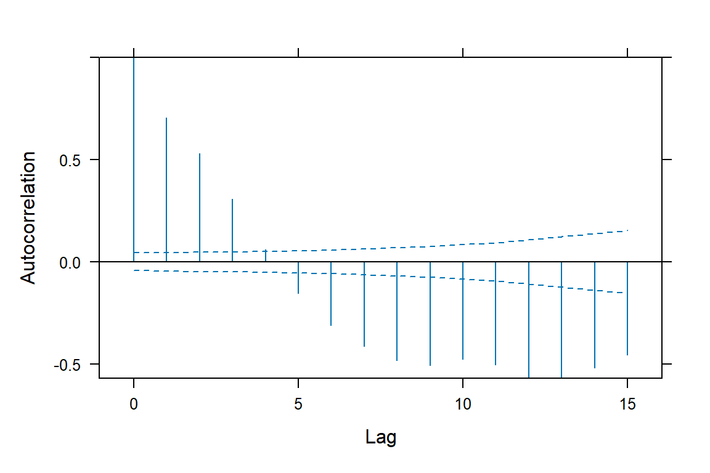
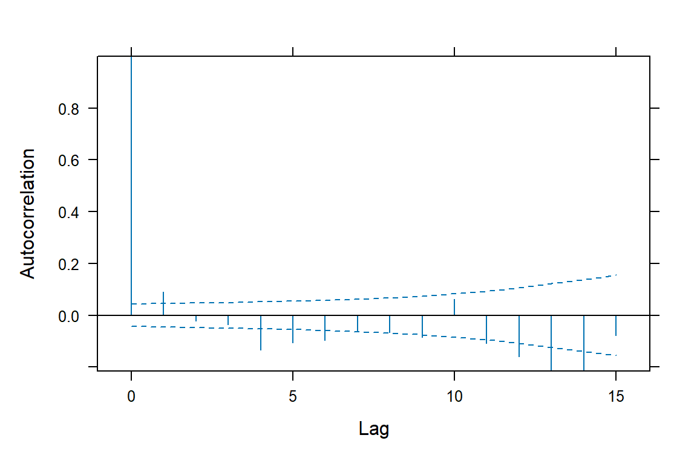
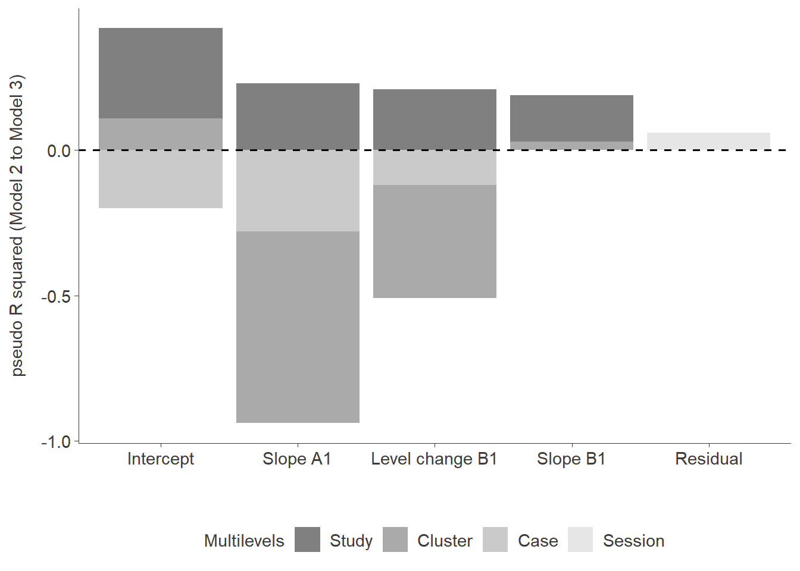
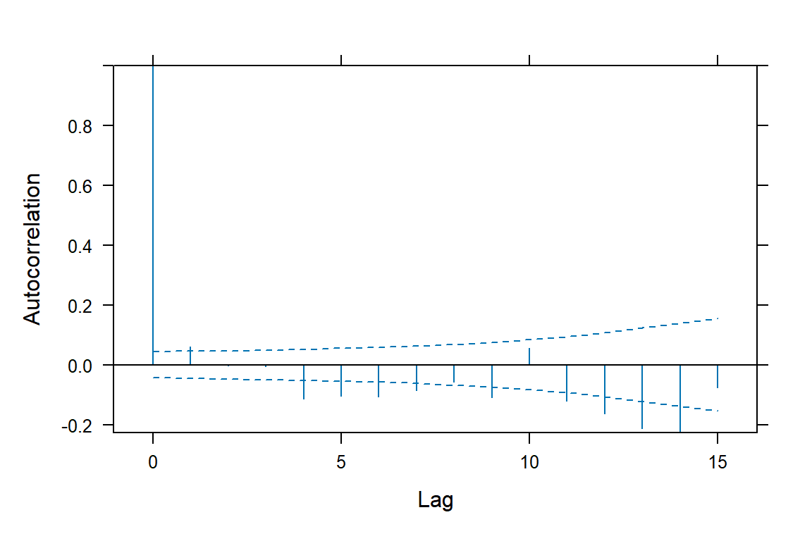
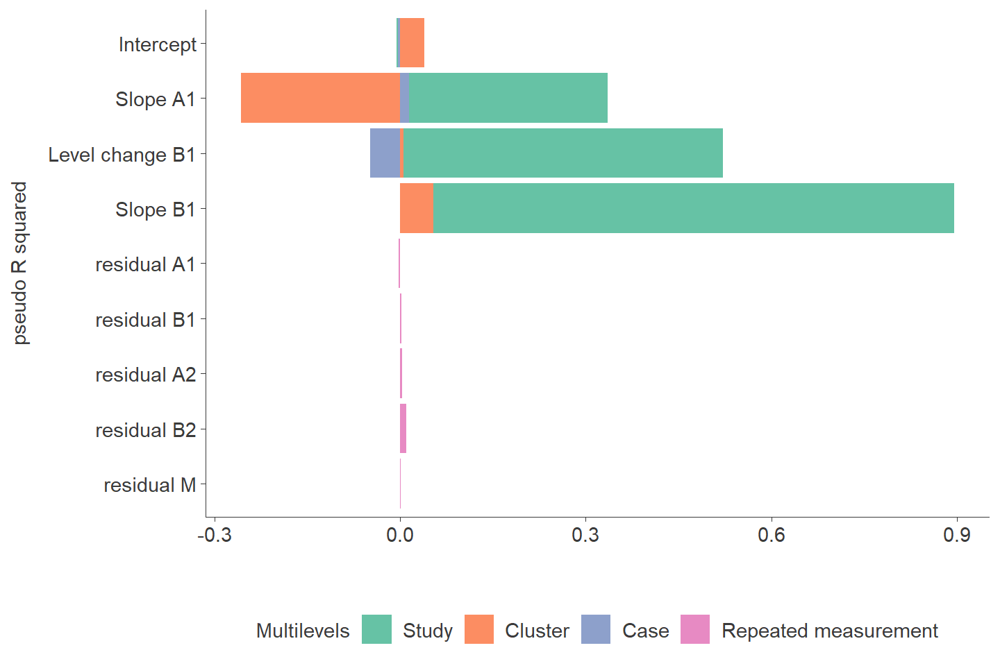

This webpage contains raw datasets, outputs, and R codes used for the four-level multilevel modeling. Data analysis scripts were also posted through an online data repository at https://osf.io/jhsr9/?view_only=46c171d6bc1b485aa5e2e46c76e1175b.
Datasets
| author_year | study | design_type | withdrawal | multi_base | multi_probe | alternating | measure_complexity | single_problem | mixed_problem | generalization | intervention | dependent_variable | cluster | case | outcome | session | phase | A1 | B1 | A2 | B2 | M | min_A1 | max_A1 | min_B1 | max_B1 | min_A2 | max_A2 | min_B2 | max_B2 | min_M | max_M | min_mixed_problem | max_mixed_problem | min_generalization | max_generalization | Time_A1 | Time_B1 | Time_A2 | Time_B2 | Time_M | Time_A1_A1 | Time_B1_B1 | Time_A2_A2 | Time_B2_B2 | Time_M_M |
|---|---|---|---|---|---|---|---|---|---|---|---|---|---|---|---|---|---|---|---|---|---|---|---|---|---|---|---|---|---|---|---|---|---|---|---|---|---|---|---|---|---|---|---|---|---|---|
| Alghamdi et al. (2020) | 1 | multi_probe | 0 | 0 | 1 | 0 | mixed_problem | 0 | 1 | 0 | Whole number: M, D | 1 | 1 | 34 | 1 | A1 | 1 | 0 | 0 | 0 | 0 | 1 | 6 | 0 | 0 | 0 | 0 | 0 | 0 | 0 | 0 | 1 | 34 | 0 | 0 | 0 | -9 | 0 | 0 | -28 | 0 | 0 | 0 | 0 | 0 | |
| Alghamdi et al. (2020) | 1 | multi_probe | 0 | 0 | 1 | 0 | mixed_problem | 0 | 1 | 0 | Whole number: M, D | 1 | 1 | 29 | 2 | A1 | 1 | 0 | 0 | 0 | 0 | 1 | 6 | 0 | 0 | 0 | 0 | 0 | 0 | 0 | 0 | 1 | 34 | 0 | 0 | 1 | -8 | 0 | 0 | -27 | 1 | 0 | 0 | 0 | 0 | |
| Alghamdi et al. (2020) | 1 | multi_probe | 0 | 0 | 1 | 0 | mixed_problem | 0 | 1 | 0 | Whole number: M, D | 1 | 1 | 32 | 3 | A1 | 1 | 0 | 0 | 0 | 0 | 1 | 6 | 0 | 0 | 0 | 0 | 0 | 0 | 0 | 0 | 1 | 34 | 0 | 0 | 2 | -7 | 0 | 0 | -26 | 2 | 0 | 0 | 0 | 0 | |
| Alghamdi et al. (2020) | 1 | multi_probe | 0 | 0 | 1 | 0 | mixed_problem | 0 | 1 | 0 | Whole number: M, D | 1 | 1 | 36 | 4 | A1 | 1 | 0 | 0 | 0 | 0 | 1 | 6 | 0 | 0 | 0 | 0 | 0 | 0 | 0 | 0 | 1 | 34 | 0 | 0 | 3 | -6 | 0 | 0 | -25 | 3 | 0 | 0 | 0 | 0 | |
| Alghamdi et al. (2020) | 1 | multi_probe | 0 | 0 | 1 | 0 | mixed_problem | 0 | 1 | 0 | Whole number: M, D | 1 | 1 | 37 | 5 | A1 | 1 | 0 | 0 | 0 | 0 | 1 | 6 | 0 | 0 | 0 | 0 | 0 | 0 | 0 | 0 | 1 | 34 | 0 | 0 | 4 | -5 | 0 | 0 | -24 | 4 | 0 | 0 | 0 | 0 | |
| Alghamdi et al. (2020) | 1 | multi_probe | 0 | 0 | 1 | 0 | mixed_problem | 0 | 1 | 0 | Whole number: M, D | 1 | 1 | 34 | 6 | A1 | 1 | 0 | 0 | 0 | 0 | 1 | 6 | 0 | 0 | 0 | 0 | 0 | 0 | 0 | 0 | 1 | 34 | 0 | 0 | 5 | -4 | 0 | 0 | -23 | 5 | 0 | 0 | 0 | 0 | |
| Alghamdi et al. (2020) | 1 | multi_probe | 0 | 0 | 1 | 0 | mixed_problem | 0 | 1 | 0 | SBI | Whole number: M, D | 1 | 1 | 71 | 10 | B1 | 0 | 1 | 0 | 0 | 0 | 0 | 0 | 10 | 18 | 0 | 0 | 0 | 0 | 0 | 0 | 1 | 34 | 0 | 0 | 9 | 0 | 0 | 0 | -19 | 0 | 0 | 0 | 0 | 0 |
| Alghamdi et al. (2020) | 1 | multi_probe | 0 | 0 | 1 | 0 | mixed_problem | 0 | 1 | 0 | SBI | Whole number: M, D | 1 | 1 | 98 | 12 | B1 | 0 | 1 | 0 | 0 | 0 | 0 | 0 | 10 | 18 | 0 | 0 | 0 | 0 | 0 | 0 | 1 | 34 | 0 | 0 | 11 | 2 | 0 | 0 | -17 | 0 | 2 | 0 | 0 | 0 |
| Alghamdi et al. (2020) | 1 | multi_probe | 0 | 0 | 1 | 0 | mixed_problem | 0 | 1 | 0 | SBI | Whole number: M, D | 1 | 1 | 89 | 14 | B1 | 0 | 1 | 0 | 0 | 0 | 0 | 0 | 10 | 18 | 0 | 0 | 0 | 0 | 0 | 0 | 1 | 34 | 0 | 0 | 13 | 4 | 0 | 0 | -15 | 0 | 4 | 0 | 0 | 0 |
| Alghamdi et al. (2020) | 1 | multi_probe | 0 | 0 | 1 | 0 | mixed_problem | 0 | 1 | 0 | SBI | Whole number: M, D | 1 | 1 | 99 | 16 | B1 | 0 | 1 | 0 | 0 | 0 | 0 | 0 | 10 | 18 | 0 | 0 | 0 | 0 | 0 | 0 | 1 | 34 | 0 | 0 | 15 | 6 | 0 | 0 | -13 | 0 | 6 | 0 | 0 | 0 |
| Alghamdi et al. (2020) | 1 | multi_probe | 0 | 0 | 1 | 0 | mixed_problem | 0 | 1 | 0 | SBI | Whole number: M, D | 1 | 1 | 98 | 18 | B1 | 0 | 1 | 0 | 0 | 0 | 0 | 0 | 10 | 18 | 0 | 0 | 0 | 0 | 0 | 0 | 1 | 34 | 0 | 0 | 17 | 8 | 0 | 0 | -11 | 0 | 8 | 0 | 0 | 0 |
| Alghamdi et al. (2020) | 1 | multi_probe | 0 | 0 | 1 | 0 | mixed_problem | 0 | 1 | 0 | Whole number: M, D | 1 | 1 | 90 | 29 | M | 0 | 0 | 0 | 0 | 1 | 0 | 0 | 0 | 0 | 0 | 0 | 0 | 0 | 29 | 34 | 1 | 34 | 0 | 0 | 28 | 19 | 0 | 0 | 0 | 0 | 0 | 0 | 0 | 0 | |
| Alghamdi et al. (2020) | 1 | multi_probe | 0 | 0 | 1 | 0 | mixed_problem | 0 | 1 | 0 | Whole number: M, D | 1 | 1 | 90 | 34 | M | 0 | 0 | 0 | 0 | 1 | 0 | 0 | 0 | 0 | 0 | 0 | 0 | 0 | 29 | 34 | 1 | 34 | 0 | 0 | 33 | 24 | 0 | 0 | 5 | 0 | 0 | 0 | 0 | 5 | |
| Alghamdi et al. (2020) | 1 | multi_probe | 0 | 0 | 1 | 0 | mixed_problem | 0 | 1 | 0 | Whole number: M, D | 1 | 2 | 35 | 1 | A1 | 1 | 0 | 0 | 0 | 0 | 1 | 11 | 0 | 0 | 0 | 0 | 0 | 0 | 0 | 0 | 1 | 39 | 0 | 0 | 0 | -14 | 0 | 0 | -33 | 0 | 0 | 0 | 0 | 0 | |
| Alghamdi et al. (2020) | 1 | multi_probe | 0 | 0 | 1 | 0 | mixed_problem | 0 | 1 | 0 | Whole number: M, D | 1 | 2 | 49 | 2 | A1 | 1 | 0 | 0 | 0 | 0 | 1 | 11 | 0 | 0 | 0 | 0 | 0 | 0 | 0 | 0 | 1 | 39 | 0 | 0 | 1 | -13 | 0 | 0 | -32 | 1 | 0 | 0 | 0 | 0 | |
| Alghamdi et al. (2020) | 1 | multi_probe | 0 | 0 | 1 | 0 | mixed_problem | 0 | 1 | 0 | Whole number: M, D | 1 | 2 | 55 | 4 | A1 | 1 | 0 | 0 | 0 | 0 | 1 | 11 | 0 | 0 | 0 | 0 | 0 | 0 | 0 | 0 | 1 | 39 | 0 | 0 | 3 | -11 | 0 | 0 | -30 | 3 | 0 | 0 | 0 | 0 | |
| Alghamdi et al. (2020) | 1 | multi_probe | 0 | 0 | 1 | 0 | mixed_problem | 0 | 1 | 0 | Whole number: M, D | 1 | 2 | 44 | 10 | A1 | 1 | 0 | 0 | 0 | 0 | 1 | 11 | 0 | 0 | 0 | 0 | 0 | 0 | 0 | 0 | 1 | 39 | 0 | 0 | 9 | -5 | 0 | 0 | -24 | 9 | 0 | 0 | 0 | 0 | |
| Alghamdi et al. (2020) | 1 | multi_probe | 0 | 0 | 1 | 0 | mixed_problem | 0 | 1 | 0 | Whole number: M, D | 1 | 2 | 35 | 11 | A1 | 1 | 0 | 0 | 0 | 0 | 1 | 11 | 0 | 0 | 0 | 0 | 0 | 0 | 0 | 0 | 1 | 39 | 0 | 0 | 10 | -4 | 0 | 0 | -23 | 10 | 0 | 0 | 0 | 0 | |
| Alghamdi et al. (2020) | 1 | multi_probe | 0 | 0 | 1 | 0 | mixed_problem | 0 | 1 | 0 | SBI | Whole number: M, D | 1 | 2 | 84 | 15 | B1 | 0 | 1 | 0 | 0 | 0 | 0 | 0 | 15 | 23 | 0 | 0 | 0 | 0 | 0 | 0 | 1 | 39 | 0 | 0 | 14 | 0 | 0 | 0 | -19 | 0 | 0 | 0 | 0 | 0 |
| Alghamdi et al. (2020) | 1 | multi_probe | 0 | 0 | 1 | 0 | mixed_problem | 0 | 1 | 0 | SBI | Whole number: M, D | 1 | 2 | 87 | 17 | B1 | 0 | 1 | 0 | 0 | 0 | 0 | 0 | 15 | 23 | 0 | 0 | 0 | 0 | 0 | 0 | 1 | 39 | 0 | 0 | 16 | 2 | 0 | 0 | -17 | 0 | 2 | 0 | 0 | 0 |
| Alghamdi et al. (2020) | 1 | multi_probe | 0 | 0 | 1 | 0 | mixed_problem | 0 | 1 | 0 | SBI | Whole number: M, D | 1 | 2 | 80 | 19 | B1 | 0 | 1 | 0 | 0 | 0 | 0 | 0 | 15 | 23 | 0 | 0 | 0 | 0 | 0 | 0 | 1 | 39 | 0 | 0 | 18 | 4 | 0 | 0 | -15 | 0 | 4 | 0 | 0 | 0 |
| Alghamdi et al. (2020) | 1 | multi_probe | 0 | 0 | 1 | 0 | mixed_problem | 0 | 1 | 0 | SBI | Whole number: M, D | 1 | 2 | 97 | 21 | B1 | 0 | 1 | 0 | 0 | 0 | 0 | 0 | 15 | 23 | 0 | 0 | 0 | 0 | 0 | 0 | 1 | 39 | 0 | 0 | 20 | 6 | 0 | 0 | -13 | 0 | 6 | 0 | 0 | 0 |
| Alghamdi et al. (2020) | 1 | multi_probe | 0 | 0 | 1 | 0 | mixed_problem | 0 | 1 | 0 | SBI | Whole number: M, D | 1 | 2 | 94 | 23 | B1 | 0 | 1 | 0 | 0 | 0 | 0 | 0 | 15 | 23 | 0 | 0 | 0 | 0 | 0 | 0 | 1 | 39 | 0 | 0 | 22 | 8 | 0 | 0 | -11 | 0 | 8 | 0 | 0 | 0 |
| Alghamdi et al. (2020) | 1 | multi_probe | 0 | 0 | 1 | 0 | mixed_problem | 0 | 1 | 0 | Whole number: M, D | 1 | 2 | 87 | 34 | M | 0 | 0 | 0 | 0 | 1 | 0 | 0 | 0 | 0 | 0 | 0 | 0 | 0 | 34 | 39 | 1 | 39 | 0 | 0 | 33 | 19 | 0 | 0 | 0 | 0 | 0 | 0 | 0 | 0 | |
| Alghamdi et al. (2020) | 1 | multi_probe | 0 | 0 | 1 | 0 | mixed_problem | 0 | 1 | 0 | Whole number: M, D | 1 | 2 | 99 | 39 | M | 0 | 0 | 0 | 0 | 1 | 0 | 0 | 0 | 0 | 0 | 0 | 0 | 0 | 34 | 39 | 1 | 39 | 0 | 0 | 38 | 24 | 0 | 0 | 5 | 0 | 0 | 0 | 0 | 5 | |
| Alghamdi et al. (2020) | 1 | multi_probe | 0 | 0 | 1 | 0 | mixed_problem | 0 | 1 | 0 | Whole number: M, D | 1 | 3 | 14 | 1 | A1 | 1 | 0 | 0 | 0 | 0 | 1 | 15 | 0 | 0 | 0 | 0 | 0 | 0 | 0 | 0 | 1 | 39 | 0 | 0 | 0 | -18 | 0 | 0 | -32 | 0 | 0 | 0 | 0 | 0 | |
| Alghamdi et al. (2020) | 1 | multi_probe | 0 | 0 | 1 | 0 | mixed_problem | 0 | 1 | 0 | Whole number: M, D | 1 | 3 | 13 | 2 | A1 | 1 | 0 | 0 | 0 | 0 | 1 | 15 | 0 | 0 | 0 | 0 | 0 | 0 | 0 | 0 | 1 | 39 | 0 | 0 | 1 | -17 | 0 | 0 | -31 | 1 | 0 | 0 | 0 | 0 | |
| Alghamdi et al. (2020) | 1 | multi_probe | 0 | 0 | 1 | 0 | mixed_problem | 0 | 1 | 0 | Whole number: M, D | 1 | 3 | 9 | 4 | A1 | 1 | 0 | 0 | 0 | 0 | 1 | 15 | 0 | 0 | 0 | 0 | 0 | 0 | 0 | 0 | 1 | 39 | 0 | 0 | 3 | -15 | 0 | 0 | -29 | 3 | 0 | 0 | 0 | 0 | |
| Alghamdi et al. (2020) | 1 | multi_probe | 0 | 0 | 1 | 0 | mixed_problem | 0 | 1 | 0 | Whole number: M, D | 1 | 3 | 17 | 14 | A1 | 1 | 0 | 0 | 0 | 0 | 1 | 15 | 0 | 0 | 0 | 0 | 0 | 0 | 0 | 0 | 1 | 39 | 0 | 0 | 13 | -5 | 0 | 0 | -19 | 13 | 0 | 0 | 0 | 0 | |
| Alghamdi et al. (2020) | 1 | multi_probe | 0 | 0 | 1 | 0 | mixed_problem | 0 | 1 | 0 | Whole number: M, D | 1 | 3 | 0 | 15 | A1 | 1 | 0 | 0 | 0 | 0 | 1 | 15 | 0 | 0 | 0 | 0 | 0 | 0 | 0 | 0 | 1 | 39 | 0 | 0 | 14 | -4 | 0 | 0 | -18 | 14 | 0 | 0 | 0 | 0 | |
| Alghamdi et al. (2020) | 1 | multi_probe | 0 | 0 | 1 | 0 | mixed_problem | 0 | 1 | 0 | SBI | Whole number: M, D | 1 | 3 | 40 | 19 | B1 | 0 | 1 | 0 | 0 | 0 | 0 | 0 | 19 | 27 | 0 | 0 | 0 | 0 | 0 | 0 | 1 | 39 | 0 | 0 | 18 | 0 | 0 | 0 | -14 | 0 | 0 | 0 | 0 | 0 |
| Alghamdi et al. (2020) | 1 | multi_probe | 0 | 0 | 1 | 0 | mixed_problem | 0 | 1 | 0 | SBI | Whole number: M, D | 1 | 3 | 69 | 21 | B1 | 0 | 1 | 0 | 0 | 0 | 0 | 0 | 19 | 27 | 0 | 0 | 0 | 0 | 0 | 0 | 1 | 39 | 0 | 0 | 20 | 2 | 0 | 0 | -12 | 0 | 2 | 0 | 0 | 0 |
| Alghamdi et al. (2020) | 1 | multi_probe | 0 | 0 | 1 | 0 | mixed_problem | 0 | 1 | 0 | SBI | Whole number: M, D | 1 | 3 | 80 | 23 | B1 | 0 | 1 | 0 | 0 | 0 | 0 | 0 | 19 | 27 | 0 | 0 | 0 | 0 | 0 | 0 | 1 | 39 | 0 | 0 | 22 | 4 | 0 | 0 | -10 | 0 | 4 | 0 | 0 | 0 |
| Alghamdi et al. (2020) | 1 | multi_probe | 0 | 0 | 1 | 0 | mixed_problem | 0 | 1 | 0 | SBI | Whole number: M, D | 1 | 3 | 93 | 25 | B1 | 0 | 1 | 0 | 0 | 0 | 0 | 0 | 19 | 27 | 0 | 0 | 0 | 0 | 0 | 0 | 1 | 39 | 0 | 0 | 24 | 6 | 0 | 0 | -8 | 0 | 6 | 0 | 0 | 0 |
| Alghamdi et al. (2020) | 1 | multi_probe | 0 | 0 | 1 | 0 | mixed_problem | 0 | 1 | 0 | SBI | Whole number: M, D | 1 | 3 | 78 | 27 | B1 | 0 | 1 | 0 | 0 | 0 | 0 | 0 | 19 | 27 | 0 | 0 | 0 | 0 | 0 | 0 | 1 | 39 | 0 | 0 | 26 | 8 | 0 | 0 | -6 | 0 | 8 | 0 | 0 | 0 |
| Alghamdi et al. (2020) | 1 | multi_probe | 0 | 0 | 1 | 0 | mixed_problem | 0 | 1 | 0 | Whole number: M, D | 1 | 3 | 84 | 33 | M | 0 | 0 | 0 | 0 | 1 | 0 | 0 | 0 | 0 | 0 | 0 | 0 | 0 | 33 | 39 | 1 | 39 | 0 | 0 | 32 | 14 | 0 | 0 | 0 | 0 | 0 | 0 | 0 | 0 | |
| Alghamdi et al. (2020) | 1 | multi_probe | 0 | 0 | 1 | 0 | mixed_problem | 0 | 1 | 0 | Whole number: M, D | 1 | 3 | 86 | 39 | M | 0 | 0 | 0 | 0 | 1 | 0 | 0 | 0 | 0 | 0 | 0 | 0 | 0 | 33 | 39 | 1 | 39 | 0 | 0 | 38 | 20 | 0 | 0 | 6 | 0 | 0 | 0 | 0 | 6 | |
| Dennis et al. (2016) | 2 | withdrawal | 1 | 0 | 0 | 0 | mixed_problem | 0 | 1 | 0 | fractions | 1 | 1 | 0 | 1 | A1 | 1 | 0 | 0 | 0 | 0 | 1 | 3 | 0 | 0 | 0 | 0 | 0 | 0 | 0 | 0 | 1 | 30 | 0 | 0 | 0 | -3 | -20 | -23 | 0 | 0 | 0 | 0 | 0 | 0 | |
| Dennis et al. (2016) | 2 | withdrawal | 1 | 0 | 0 | 0 | mixed_problem | 0 | 1 | 0 | fractions | 1 | 1 | 0 | 2 | A1 | 1 | 0 | 0 | 0 | 0 | 1 | 3 | 0 | 0 | 0 | 0 | 0 | 0 | 0 | 0 | 1 | 30 | 0 | 0 | 1 | -2 | -19 | -22 | 0 | 1 | 0 | 0 | 0 | 0 | |
| Dennis et al. (2016) | 2 | withdrawal | 1 | 0 | 0 | 0 | mixed_problem | 0 | 1 | 0 | fractions | 1 | 1 | 0 | 3 | A1 | 1 | 0 | 0 | 0 | 0 | 1 | 3 | 0 | 0 | 0 | 0 | 0 | 0 | 0 | 0 | 1 | 30 | 0 | 0 | 2 | -1 | -18 | -21 | 0 | 2 | 0 | 0 | 0 | 0 | |
| Dennis et al. (2016) | 2 | withdrawal | 1 | 0 | 0 | 0 | mixed_problem | 0 | 1 | 0 | model-drawing strategy | fractions | 1 | 1 | 0 | 4 | B1 | 0 | 1 | 0 | 0 | 0 | 0 | 0 | 4 | 19 | 0 | 0 | 0 | 0 | 0 | 0 | 1 | 30 | 0 | 0 | 3 | 0 | -17 | -20 | 0 | 0 | 0 | 0 | 0 | 0 |
| Dennis et al. (2016) | 2 | withdrawal | 1 | 0 | 0 | 0 | mixed_problem | 0 | 1 | 0 | model-drawing strategy | fractions | 1 | 1 | 13 | 5 | B1 | 0 | 1 | 0 | 0 | 0 | 0 | 0 | 4 | 19 | 0 | 0 | 0 | 0 | 0 | 0 | 1 | 30 | 0 | 0 | 4 | 1 | -16 | -19 | 0 | 0 | 1 | 0 | 0 | 0 |
| Dennis et al. (2016) | 2 | withdrawal | 1 | 0 | 0 | 0 | mixed_problem | 0 | 1 | 0 | model-drawing strategy | fractions | 1 | 1 | 0 | 6 | B1 | 0 | 1 | 0 | 0 | 0 | 0 | 0 | 4 | 19 | 0 | 0 | 0 | 0 | 0 | 0 | 1 | 30 | 0 | 0 | 5 | 2 | -15 | -18 | 0 | 0 | 2 | 0 | 0 | 0 |
| Dennis et al. (2016) | 2 | withdrawal | 1 | 0 | 0 | 0 | mixed_problem | 0 | 1 | 0 | model-drawing strategy | fractions | 1 | 1 | 0 | 7 | B1 | 0 | 1 | 0 | 0 | 0 | 0 | 0 | 4 | 19 | 0 | 0 | 0 | 0 | 0 | 0 | 1 | 30 | 0 | 0 | 6 | 3 | -14 | -17 | 0 | 0 | 3 | 0 | 0 | 0 |
| Dennis et al. (2016) | 2 | withdrawal | 1 | 0 | 0 | 0 | mixed_problem | 0 | 1 | 0 | model-drawing strategy | fractions | 1 | 1 | 0 | 8 | B1 | 0 | 1 | 0 | 0 | 0 | 0 | 0 | 4 | 19 | 0 | 0 | 0 | 0 | 0 | 0 | 1 | 30 | 0 | 0 | 7 | 4 | -13 | -16 | 0 | 0 | 4 | 0 | 0 | 0 |
| Dennis et al. (2016) | 2 | withdrawal | 1 | 0 | 0 | 0 | mixed_problem | 0 | 1 | 0 | model-drawing strategy | fractions | 1 | 1 | 35 | 9 | B1 | 0 | 1 | 0 | 0 | 0 | 0 | 0 | 4 | 19 | 0 | 0 | 0 | 0 | 0 | 0 | 1 | 30 | 0 | 0 | 8 | 5 | -12 | -15 | 0 | 0 | 5 | 0 | 0 | 0 |
| Dennis et al. (2016) | 2 | withdrawal | 1 | 0 | 0 | 0 | mixed_problem | 0 | 1 | 0 | model-drawing strategy | fractions | 1 | 1 | 20 | 10 | B1 | 0 | 1 | 0 | 0 | 0 | 0 | 0 | 4 | 19 | 0 | 0 | 0 | 0 | 0 | 0 | 1 | 30 | 0 | 0 | 9 | 6 | -11 | -14 | 0 | 0 | 6 | 0 | 0 | 0 |
| Dennis et al. (2016) | 2 | withdrawal | 1 | 0 | 0 | 0 | mixed_problem | 0 | 1 | 0 | model-drawing strategy | fractions | 1 | 1 | 35 | 11 | B1 | 0 | 1 | 0 | 0 | 0 | 0 | 0 | 4 | 19 | 0 | 0 | 0 | 0 | 0 | 0 | 1 | 30 | 0 | 0 | 10 | 7 | -10 | -13 | 0 | 0 | 7 | 0 | 0 | 0 |
| Dennis et al. (2016) | 2 | withdrawal | 1 | 0 | 0 | 0 | mixed_problem | 0 | 1 | 0 | model-drawing strategy | fractions | 1 | 1 | 19 | 12 | B1 | 0 | 1 | 0 | 0 | 0 | 0 | 0 | 4 | 19 | 0 | 0 | 0 | 0 | 0 | 0 | 1 | 30 | 0 | 0 | 11 | 8 | -9 | -12 | 0 | 0 | 8 | 0 | 0 | 0 |
| Dennis et al. (2016) | 2 | withdrawal | 1 | 0 | 0 | 0 | mixed_problem | 0 | 1 | 0 | model-drawing strategy | fractions | 1 | 1 | 8 | 13 | B1 | 0 | 1 | 0 | 0 | 0 | 0 | 0 | 4 | 19 | 0 | 0 | 0 | 0 | 0 | 0 | 1 | 30 | 0 | 0 | 12 | 9 | -8 | -11 | 0 | 0 | 9 | 0 | 0 | 0 |
| Dennis et al. (2016) | 2 | withdrawal | 1 | 0 | 0 | 0 | mixed_problem | 0 | 1 | 0 | model-drawing strategy | fractions | 1 | 1 | 0 | 14 | B1 | 0 | 1 | 0 | 0 | 0 | 0 | 0 | 4 | 19 | 0 | 0 | 0 | 0 | 0 | 0 | 1 | 30 | 0 | 0 | 13 | 10 | -7 | -10 | 0 | 0 | 10 | 0 | 0 | 0 |
| Dennis et al. (2016) | 2 | withdrawal | 1 | 0 | 0 | 0 | mixed_problem | 0 | 1 | 0 | model-drawing strategy | fractions | 1 | 1 | 15 | 15 | B1 | 0 | 1 | 0 | 0 | 0 | 0 | 0 | 4 | 19 | 0 | 0 | 0 | 0 | 0 | 0 | 1 | 30 | 0 | 0 | 14 | 11 | -6 | -9 | 0 | 0 | 11 | 0 | 0 | 0 |
| Dennis et al. (2016) | 2 | withdrawal | 1 | 0 | 0 | 0 | mixed_problem | 0 | 1 | 0 | model-drawing strategy | fractions | 1 | 1 | 35 | 16 | B1 | 0 | 1 | 0 | 0 | 0 | 0 | 0 | 4 | 19 | 0 | 0 | 0 | 0 | 0 | 0 | 1 | 30 | 0 | 0 | 15 | 12 | -5 | -8 | 0 | 0 | 12 | 0 | 0 | 0 |
| Dennis et al. (2016) | 2 | withdrawal | 1 | 0 | 0 | 0 | mixed_problem | 0 | 1 | 0 | model-drawing strategy | fractions | 1 | 1 | 23 | 17 | B1 | 0 | 1 | 0 | 0 | 0 | 0 | 0 | 4 | 19 | 0 | 0 | 0 | 0 | 0 | 0 | 1 | 30 | 0 | 0 | 16 | 13 | -4 | -7 | 0 | 0 | 13 | 0 | 0 | 0 |
| Dennis et al. (2016) | 2 | withdrawal | 1 | 0 | 0 | 0 | mixed_problem | 0 | 1 | 0 | model-drawing strategy | fractions | 1 | 1 | 40 | 18 | B1 | 0 | 1 | 0 | 0 | 0 | 0 | 0 | 4 | 19 | 0 | 0 | 0 | 0 | 0 | 0 | 1 | 30 | 0 | 0 | 17 | 14 | -3 | -6 | 0 | 0 | 14 | 0 | 0 | 0 |
| Dennis et al. (2016) | 2 | withdrawal | 1 | 0 | 0 | 0 | mixed_problem | 0 | 1 | 0 | model-drawing strategy | fractions | 1 | 1 | 80 | 19 | B1 | 0 | 1 | 0 | 0 | 0 | 0 | 0 | 4 | 19 | 0 | 0 | 0 | 0 | 0 | 0 | 1 | 30 | 0 | 0 | 18 | 15 | -2 | -5 | 0 | 0 | 15 | 0 | 0 | 0 |
| Dennis et al. (2016) | 2 | withdrawal | 1 | 0 | 0 | 0 | mixed_problem | 0 | 1 | 0 | percentages | 1 | 1 | 0 | 21 | A2 | 0 | 0 | 1 | 0 | 0 | 0 | 0 | 0 | 0 | 21 | 23 | 0 | 0 | 0 | 0 | 1 | 30 | 0 | 0 | 20 | 17 | 0 | -3 | 0 | 0 | 0 | 0 | 0 | 0 | |
| Dennis et al. (2016) | 2 | withdrawal | 1 | 0 | 0 | 0 | mixed_problem | 0 | 1 | 0 | percentages | 1 | 1 | 0 | 22 | A2 | 0 | 0 | 1 | 0 | 0 | 0 | 0 | 0 | 0 | 21 | 23 | 0 | 0 | 0 | 0 | 1 | 30 | 0 | 0 | 21 | 18 | 1 | -2 | 0 | 0 | 0 | 1 | 0 | 0 | |
| Dennis et al. (2016) | 2 | withdrawal | 1 | 0 | 0 | 0 | mixed_problem | 0 | 1 | 0 | percentages | 1 | 1 | 0 | 23 | A2 | 0 | 0 | 1 | 0 | 0 | 0 | 0 | 0 | 0 | 21 | 23 | 0 | 0 | 0 | 0 | 1 | 30 | 0 | 0 | 22 | 19 | 2 | -1 | 0 | 0 | 0 | 2 | 0 | 0 | |
| Dennis et al. (2016) | 2 | withdrawal | 1 | 0 | 0 | 0 | mixed_problem | 0 | 1 | 0 | model-drawing strategy | percentages | 1 | 1 | 20 | 24 | B2 | 0 | 0 | 0 | 1 | 0 | 0 | 0 | 0 | 0 | 0 | 0 | 24 | 30 | 0 | 0 | 1 | 30 | 0 | 0 | 23 | 20 | 3 | 0 | 0 | 0 | 0 | 0 | 0 | 0 |
| Dennis et al. (2016) | 2 | withdrawal | 1 | 0 | 0 | 0 | mixed_problem | 0 | 1 | 0 | model-drawing strategy | percentages | 1 | 1 | 38 | 25 | B2 | 0 | 0 | 0 | 1 | 0 | 0 | 0 | 0 | 0 | 0 | 0 | 24 | 30 | 0 | 0 | 1 | 30 | 0 | 0 | 24 | 21 | 4 | 1 | 0 | 0 | 0 | 0 | 1 | 0 |
| Dennis et al. (2016) | 2 | withdrawal | 1 | 0 | 0 | 0 | mixed_problem | 0 | 1 | 0 | model-drawing strategy | percentages | 1 | 1 | 92 | 26 | B2 | 0 | 0 | 0 | 1 | 0 | 0 | 0 | 0 | 0 | 0 | 0 | 24 | 30 | 0 | 0 | 1 | 30 | 0 | 0 | 25 | 22 | 5 | 2 | 0 | 0 | 0 | 0 | 2 | 0 |
| Dennis et al. (2016) | 2 | withdrawal | 1 | 0 | 0 | 0 | mixed_problem | 0 | 1 | 0 | model-drawing strategy | percentages | 1 | 1 | 92 | 27 | B2 | 0 | 0 | 0 | 1 | 0 | 0 | 0 | 0 | 0 | 0 | 0 | 24 | 30 | 0 | 0 | 1 | 30 | 0 | 0 | 26 | 23 | 6 | 3 | 0 | 0 | 0 | 0 | 3 | 0 |
| Dennis et al. (2016) | 2 | withdrawal | 1 | 0 | 0 | 0 | mixed_problem | 0 | 1 | 0 | model-drawing strategy | percentages | 1 | 1 | 100 | 28 | B2 | 0 | 0 | 0 | 1 | 0 | 0 | 0 | 0 | 0 | 0 | 0 | 24 | 30 | 0 | 0 | 1 | 30 | 0 | 0 | 27 | 24 | 7 | 4 | 0 | 0 | 0 | 0 | 4 | 0 |
| Dennis et al. (2016) | 2 | withdrawal | 1 | 0 | 0 | 0 | mixed_problem | 0 | 1 | 0 | model-drawing strategy | percentages | 1 | 1 | 80 | 29 | B2 | 0 | 0 | 0 | 1 | 0 | 0 | 0 | 0 | 0 | 0 | 0 | 24 | 30 | 0 | 0 | 1 | 30 | 0 | 0 | 28 | 25 | 8 | 5 | 0 | 0 | 0 | 0 | 5 | 0 |
| Dennis et al. (2016) | 2 | withdrawal | 1 | 0 | 0 | 0 | mixed_problem | 0 | 1 | 0 | model-drawing strategy | percentages | 1 | 1 | 90 | 30 | B2 | 0 | 0 | 0 | 1 | 0 | 0 | 0 | 0 | 0 | 0 | 0 | 24 | 30 | 0 | 0 | 1 | 30 | 0 | 0 | 29 | 26 | 9 | 6 | 0 | 0 | 0 | 0 | 6 | 0 |
| Dennis et al. (2016) | 2 | withdrawal | 1 | 0 | 0 | 0 | mixed_problem | 0 | 1 | 0 | fractions | 1 | 2 | 12 | 1 | A1 | 1 | 0 | 0 | 0 | 0 | 1 | 3 | 0 | 0 | 0 | 0 | 0 | 0 | 0 | 0 | 1 | 30 | 0 | 0 | 0 | -3 | -20 | -23 | 0 | 0 | 0 | 0 | 0 | 0 | |
| Dennis et al. (2016) | 2 | withdrawal | 1 | 0 | 0 | 0 | mixed_problem | 0 | 1 | 0 | fractions | 1 | 2 | 0 | 2 | A1 | 1 | 0 | 0 | 0 | 0 | 1 | 3 | 0 | 0 | 0 | 0 | 0 | 0 | 0 | 0 | 1 | 30 | 0 | 0 | 1 | -2 | -19 | -22 | 0 | 1 | 0 | 0 | 0 | 0 | |
| Dennis et al. (2016) | 2 | withdrawal | 1 | 0 | 0 | 0 | mixed_problem | 0 | 1 | 0 | fractions | 1 | 2 | 0 | 3 | A1 | 1 | 0 | 0 | 0 | 0 | 1 | 3 | 0 | 0 | 0 | 0 | 0 | 0 | 0 | 0 | 1 | 30 | 0 | 0 | 2 | -1 | -18 | -21 | 0 | 2 | 0 | 0 | 0 | 0 | |
| Dennis et al. (2016) | 2 | withdrawal | 1 | 0 | 0 | 0 | mixed_problem | 0 | 1 | 0 | model-drawing strategy | fractions | 1 | 2 | 0 | 4 | B1 | 0 | 1 | 0 | 0 | 0 | 0 | 0 | 4 | 19 | 0 | 0 | 0 | 0 | 0 | 0 | 1 | 30 | 0 | 0 | 3 | 0 | -17 | -20 | 0 | 0 | 0 | 0 | 0 | 0 |
| Dennis et al. (2016) | 2 | withdrawal | 1 | 0 | 0 | 0 | mixed_problem | 0 | 1 | 0 | model-drawing strategy | fractions | 1 | 2 | 0 | 5 | B1 | 0 | 1 | 0 | 0 | 0 | 0 | 0 | 4 | 19 | 0 | 0 | 0 | 0 | 0 | 0 | 1 | 30 | 0 | 0 | 4 | 1 | -16 | -19 | 0 | 0 | 1 | 0 | 0 | 0 |
| Dennis et al. (2016) | 2 | withdrawal | 1 | 0 | 0 | 0 | mixed_problem | 0 | 1 | 0 | model-drawing strategy | fractions | 1 | 2 | 15 | 6 | B1 | 0 | 1 | 0 | 0 | 0 | 0 | 0 | 4 | 19 | 0 | 0 | 0 | 0 | 0 | 0 | 1 | 30 | 0 | 0 | 5 | 2 | -15 | -18 | 0 | 0 | 2 | 0 | 0 | 0 |
| Dennis et al. (2016) | 2 | withdrawal | 1 | 0 | 0 | 0 | mixed_problem | 0 | 1 | 0 | model-drawing strategy | fractions | 1 | 2 | 0 | 7 | B1 | 0 | 1 | 0 | 0 | 0 | 0 | 0 | 4 | 19 | 0 | 0 | 0 | 0 | 0 | 0 | 1 | 30 | 0 | 0 | 6 | 3 | -14 | -17 | 0 | 0 | 3 | 0 | 0 | 0 |
| Dennis et al. (2016) | 2 | withdrawal | 1 | 0 | 0 | 0 | mixed_problem | 0 | 1 | 0 | model-drawing strategy | fractions | 1 | 2 | 0 | 8 | B1 | 0 | 1 | 0 | 0 | 0 | 0 | 0 | 4 | 19 | 0 | 0 | 0 | 0 | 0 | 0 | 1 | 30 | 0 | 0 | 7 | 4 | -13 | -16 | 0 | 0 | 4 | 0 | 0 | 0 |
| Dennis et al. (2016) | 2 | withdrawal | 1 | 0 | 0 | 0 | mixed_problem | 0 | 1 | 0 | model-drawing strategy | fractions | 1 | 2 | 5 | 9 | B1 | 0 | 1 | 0 | 0 | 0 | 0 | 0 | 4 | 19 | 0 | 0 | 0 | 0 | 0 | 0 | 1 | 30 | 0 | 0 | 8 | 5 | -12 | -15 | 0 | 0 | 5 | 0 | 0 | 0 |
| Dennis et al. (2016) | 2 | withdrawal | 1 | 0 | 0 | 0 | mixed_problem | 0 | 1 | 0 | model-drawing strategy | fractions | 1 | 2 | 19 | 10 | B1 | 0 | 1 | 0 | 0 | 0 | 0 | 0 | 4 | 19 | 0 | 0 | 0 | 0 | 0 | 0 | 1 | 30 | 0 | 0 | 9 | 6 | -11 | -14 | 0 | 0 | 6 | 0 | 0 | 0 |
| Dennis et al. (2016) | 2 | withdrawal | 1 | 0 | 0 | 0 | mixed_problem | 0 | 1 | 0 | model-drawing strategy | fractions | 1 | 2 | 19 | 11 | B1 | 0 | 1 | 0 | 0 | 0 | 0 | 0 | 4 | 19 | 0 | 0 | 0 | 0 | 0 | 0 | 1 | 30 | 0 | 0 | 10 | 7 | -10 | -13 | 0 | 0 | 7 | 0 | 0 | 0 |
| Dennis et al. (2016) | 2 | withdrawal | 1 | 0 | 0 | 0 | mixed_problem | 0 | 1 | 0 | model-drawing strategy | fractions | 1 | 2 | 18 | 12 | B1 | 0 | 1 | 0 | 0 | 0 | 0 | 0 | 4 | 19 | 0 | 0 | 0 | 0 | 0 | 0 | 1 | 30 | 0 | 0 | 11 | 8 | -9 | -12 | 0 | 0 | 8 | 0 | 0 | 0 |
| Dennis et al. (2016) | 2 | withdrawal | 1 | 0 | 0 | 0 | mixed_problem | 0 | 1 | 0 | model-drawing strategy | fractions | 1 | 2 | 15 | 13 | B1 | 0 | 1 | 0 | 0 | 0 | 0 | 0 | 4 | 19 | 0 | 0 | 0 | 0 | 0 | 0 | 1 | 30 | 0 | 0 | 12 | 9 | -8 | -11 | 0 | 0 | 9 | 0 | 0 | 0 |
| Dennis et al. (2016) | 2 | withdrawal | 1 | 0 | 0 | 0 | mixed_problem | 0 | 1 | 0 | model-drawing strategy | fractions | 1 | 2 | 0 | 14 | B1 | 0 | 1 | 0 | 0 | 0 | 0 | 0 | 4 | 19 | 0 | 0 | 0 | 0 | 0 | 0 | 1 | 30 | 0 | 0 | 13 | 10 | -7 | -10 | 0 | 0 | 10 | 0 | 0 | 0 |
| Dennis et al. (2016) | 2 | withdrawal | 1 | 0 | 0 | 0 | mixed_problem | 0 | 1 | 0 | model-drawing strategy | fractions | 1 | 2 | 0 | 15 | B1 | 0 | 1 | 0 | 0 | 0 | 0 | 0 | 4 | 19 | 0 | 0 | 0 | 0 | 0 | 0 | 1 | 30 | 0 | 0 | 14 | 11 | -6 | -9 | 0 | 0 | 11 | 0 | 0 | 0 |
| Dennis et al. (2016) | 2 | withdrawal | 1 | 0 | 0 | 0 | mixed_problem | 0 | 1 | 0 | model-drawing strategy | fractions | 1 | 2 | 49 | 16 | B1 | 0 | 1 | 0 | 0 | 0 | 0 | 0 | 4 | 19 | 0 | 0 | 0 | 0 | 0 | 0 | 1 | 30 | 0 | 0 | 15 | 12 | -5 | -8 | 0 | 0 | 12 | 0 | 0 | 0 |
| Dennis et al. (2016) | 2 | withdrawal | 1 | 0 | 0 | 0 | mixed_problem | 0 | 1 | 0 | model-drawing strategy | fractions | 1 | 2 | 52 | 17 | B1 | 0 | 1 | 0 | 0 | 0 | 0 | 0 | 4 | 19 | 0 | 0 | 0 | 0 | 0 | 0 | 1 | 30 | 0 | 0 | 16 | 13 | -4 | -7 | 0 | 0 | 13 | 0 | 0 | 0 |
| Dennis et al. (2016) | 2 | withdrawal | 1 | 0 | 0 | 0 | mixed_problem | 0 | 1 | 0 | model-drawing strategy | fractions | 1 | 2 | 80 | 18 | B1 | 0 | 1 | 0 | 0 | 0 | 0 | 0 | 4 | 19 | 0 | 0 | 0 | 0 | 0 | 0 | 1 | 30 | 0 | 0 | 17 | 14 | -3 | -6 | 0 | 0 | 14 | 0 | 0 | 0 |
| Dennis et al. (2016) | 2 | withdrawal | 1 | 0 | 0 | 0 | mixed_problem | 0 | 1 | 0 | model-drawing strategy | fractions | 1 | 2 | 100 | 19 | B1 | 0 | 1 | 0 | 0 | 0 | 0 | 0 | 4 | 19 | 0 | 0 | 0 | 0 | 0 | 0 | 1 | 30 | 0 | 0 | 18 | 15 | -2 | -5 | 0 | 0 | 15 | 0 | 0 | 0 |
| Dennis et al. (2016) | 2 | withdrawal | 1 | 0 | 0 | 0 | mixed_problem | 0 | 1 | 0 | percentages | 1 | 2 | 0 | 21 | A2 | 0 | 0 | 1 | 0 | 0 | 0 | 0 | 0 | 0 | 21 | 23 | 0 | 0 | 0 | 0 | 1 | 30 | 0 | 0 | 20 | 17 | 0 | -3 | 0 | 0 | 0 | 0 | 0 | 0 | |
| Dennis et al. (2016) | 2 | withdrawal | 1 | 0 | 0 | 0 | mixed_problem | 0 | 1 | 0 | percentages | 1 | 2 | 0 | 22 | A2 | 0 | 0 | 1 | 0 | 0 | 0 | 0 | 0 | 0 | 21 | 23 | 0 | 0 | 0 | 0 | 1 | 30 | 0 | 0 | 21 | 18 | 1 | -2 | 0 | 0 | 0 | 1 | 0 | 0 | |
| Dennis et al. (2016) | 2 | withdrawal | 1 | 0 | 0 | 0 | mixed_problem | 0 | 1 | 0 | percentages | 1 | 2 | 0 | 23 | A2 | 0 | 0 | 1 | 0 | 0 | 0 | 0 | 0 | 0 | 21 | 23 | 0 | 0 | 0 | 0 | 1 | 30 | 0 | 0 | 22 | 19 | 2 | -1 | 0 | 0 | 0 | 2 | 0 | 0 | |
| Dennis et al. (2016) | 2 | withdrawal | 1 | 0 | 0 | 0 | mixed_problem | 0 | 1 | 0 | model-drawing strategy | percentages | 1 | 2 | 23 | 24 | B2 | 0 | 0 | 0 | 1 | 0 | 0 | 0 | 0 | 0 | 0 | 0 | 24 | 30 | 0 | 0 | 1 | 30 | 0 | 0 | 23 | 20 | 3 | 0 | 0 | 0 | 0 | 0 | 0 | 0 |
| Dennis et al. (2016) | 2 | withdrawal | 1 | 0 | 0 | 0 | mixed_problem | 0 | 1 | 0 | model-drawing strategy | percentages | 1 | 2 | 89 | 25 | B2 | 0 | 0 | 0 | 1 | 0 | 0 | 0 | 0 | 0 | 0 | 0 | 24 | 30 | 0 | 0 | 1 | 30 | 0 | 0 | 24 | 21 | 4 | 1 | 0 | 0 | 0 | 0 | 1 | 0 |
| Dennis et al. (2016) | 2 | withdrawal | 1 | 0 | 0 | 0 | mixed_problem | 0 | 1 | 0 | model-drawing strategy | percentages | 1 | 2 | 30 | 26 | B2 | 0 | 0 | 0 | 1 | 0 | 0 | 0 | 0 | 0 | 0 | 0 | 24 | 30 | 0 | 0 | 1 | 30 | 0 | 0 | 25 | 22 | 5 | 2 | 0 | 0 | 0 | 0 | 2 | 0 |
| Dennis et al. (2016) | 2 | withdrawal | 1 | 0 | 0 | 0 | mixed_problem | 0 | 1 | 0 | model-drawing strategy | percentages | 1 | 2 | 91 | 27 | B2 | 0 | 0 | 0 | 1 | 0 | 0 | 0 | 0 | 0 | 0 | 0 | 24 | 30 | 0 | 0 | 1 | 30 | 0 | 0 | 26 | 23 | 6 | 3 | 0 | 0 | 0 | 0 | 3 | 0 |
| Dennis et al. (2016) | 2 | withdrawal | 1 | 0 | 0 | 0 | mixed_problem | 0 | 1 | 0 | model-drawing strategy | percentages | 1 | 2 | 79 | 28 | B2 | 0 | 0 | 0 | 1 | 0 | 0 | 0 | 0 | 0 | 0 | 0 | 24 | 30 | 0 | 0 | 1 | 30 | 0 | 0 | 27 | 24 | 7 | 4 | 0 | 0 | 0 | 0 | 4 | 0 |
| Dennis et al. (2016) | 2 | withdrawal | 1 | 0 | 0 | 0 | mixed_problem | 0 | 1 | 0 | model-drawing strategy | percentages | 1 | 2 | 90 | 29 | B2 | 0 | 0 | 0 | 1 | 0 | 0 | 0 | 0 | 0 | 0 | 0 | 24 | 30 | 0 | 0 | 1 | 30 | 0 | 0 | 28 | 25 | 8 | 5 | 0 | 0 | 0 | 0 | 5 | 0 |
| Dennis et al. (2016) | 2 | withdrawal | 1 | 0 | 0 | 0 | mixed_problem | 0 | 1 | 0 | model-drawing strategy | percentages | 1 | 2 | 86 | 30 | B2 | 0 | 0 | 0 | 1 | 0 | 0 | 0 | 0 | 0 | 0 | 0 | 24 | 30 | 0 | 0 | 1 | 30 | 0 | 0 | 29 | 26 | 9 | 6 | 0 | 0 | 0 | 0 | 6 | 0 |
| Dennis et al. (2016) | 2 | withdrawal | 1 | 0 | 0 | 0 | mixed_problem | 0 | 1 | 0 | fractions | 1 | 3 | 10 | 1 | A1 | 1 | 0 | 0 | 0 | 0 | 1 | 3 | 0 | 0 | 0 | 0 | 0 | 0 | 0 | 0 | 1 | 30 | 0 | 0 | 0 | -3 | -20 | -23 | 0 | 0 | 0 | 0 | 0 | 0 | |
| Dennis et al. (2016) | 2 | withdrawal | 1 | 0 | 0 | 0 | mixed_problem | 0 | 1 | 0 | fractions | 1 | 3 | 10 | 2 | A1 | 1 | 0 | 0 | 0 | 0 | 1 | 3 | 0 | 0 | 0 | 0 | 0 | 0 | 0 | 0 | 1 | 30 | 0 | 0 | 1 | -2 | -19 | -22 | 0 | 1 | 0 | 0 | 0 | 0 | |
| Dennis et al. (2016) | 2 | withdrawal | 1 | 0 | 0 | 0 | mixed_problem | 0 | 1 | 0 | fractions | 1 | 3 | 0 | 3 | A1 | 1 | 0 | 0 | 0 | 0 | 1 | 3 | 0 | 0 | 0 | 0 | 0 | 0 | 0 | 0 | 1 | 30 | 0 | 0 | 2 | -1 | -18 | -21 | 0 | 2 | 0 | 0 | 0 | 0 | |
| Dennis et al. (2016) | 2 | withdrawal | 1 | 0 | 0 | 0 | mixed_problem | 0 | 1 | 0 | model-drawing strategy | fractions | 1 | 3 | 0 | 4 | B1 | 0 | 1 | 0 | 0 | 0 | 0 | 0 | 4 | 19 | 0 | 0 | 0 | 0 | 0 | 0 | 1 | 30 | 0 | 0 | 3 | 0 | -17 | -20 | 0 | 0 | 0 | 0 | 0 | 0 |
| Dennis et al. (2016) | 2 | withdrawal | 1 | 0 | 0 | 0 | mixed_problem | 0 | 1 | 0 | model-drawing strategy | fractions | 1 | 3 | 0 | 5 | B1 | 0 | 1 | 0 | 0 | 0 | 0 | 0 | 4 | 19 | 0 | 0 | 0 | 0 | 0 | 0 | 1 | 30 | 0 | 0 | 4 | 1 | -16 | -19 | 0 | 0 | 1 | 0 | 0 | 0 |
| Dennis et al. (2016) | 2 | withdrawal | 1 | 0 | 0 | 0 | mixed_problem | 0 | 1 | 0 | model-drawing strategy | fractions | 1 | 3 | 18 | 6 | B1 | 0 | 1 | 0 | 0 | 0 | 0 | 0 | 4 | 19 | 0 | 0 | 0 | 0 | 0 | 0 | 1 | 30 | 0 | 0 | 5 | 2 | -15 | -18 | 0 | 0 | 2 | 0 | 0 | 0 |
| Dennis et al. (2016) | 2 | withdrawal | 1 | 0 | 0 | 0 | mixed_problem | 0 | 1 | 0 | model-drawing strategy | fractions | 1 | 3 | 0 | 7 | B1 | 0 | 1 | 0 | 0 | 0 | 0 | 0 | 4 | 19 | 0 | 0 | 0 | 0 | 0 | 0 | 1 | 30 | 0 | 0 | 6 | 3 | -14 | -17 | 0 | 0 | 3 | 0 | 0 | 0 |
| Dennis et al. (2016) | 2 | withdrawal | 1 | 0 | 0 | 0 | mixed_problem | 0 | 1 | 0 | model-drawing strategy | fractions | 1 | 3 | 9 | 8 | B1 | 0 | 1 | 0 | 0 | 0 | 0 | 0 | 4 | 19 | 0 | 0 | 0 | 0 | 0 | 0 | 1 | 30 | 0 | 0 | 7 | 4 | -13 | -16 | 0 | 0 | 4 | 0 | 0 | 0 |
| Dennis et al. (2016) | 2 | withdrawal | 1 | 0 | 0 | 0 | mixed_problem | 0 | 1 | 0 | model-drawing strategy | fractions | 1 | 3 | 18 | 9 | B1 | 0 | 1 | 0 | 0 | 0 | 0 | 0 | 4 | 19 | 0 | 0 | 0 | 0 | 0 | 0 | 1 | 30 | 0 | 0 | 8 | 5 | -12 | -15 | 0 | 0 | 5 | 0 | 0 | 0 |
| Dennis et al. (2016) | 2 | withdrawal | 1 | 0 | 0 | 0 | mixed_problem | 0 | 1 | 0 | model-drawing strategy | fractions | 1 | 3 | 24 | 10 | B1 | 0 | 1 | 0 | 0 | 0 | 0 | 0 | 4 | 19 | 0 | 0 | 0 | 0 | 0 | 0 | 1 | 30 | 0 | 0 | 9 | 6 | -11 | -14 | 0 | 0 | 6 | 0 | 0 | 0 |
| Dennis et al. (2016) | 2 | withdrawal | 1 | 0 | 0 | 0 | mixed_problem | 0 | 1 | 0 | model-drawing strategy | fractions | 1 | 3 | 30 | 11 | B1 | 0 | 1 | 0 | 0 | 0 | 0 | 0 | 4 | 19 | 0 | 0 | 0 | 0 | 0 | 0 | 1 | 30 | 0 | 0 | 10 | 7 | -10 | -13 | 0 | 0 | 7 | 0 | 0 | 0 |
| Dennis et al. (2016) | 2 | withdrawal | 1 | 0 | 0 | 0 | mixed_problem | 0 | 1 | 0 | model-drawing strategy | fractions | 1 | 3 | 27 | 12 | B1 | 0 | 1 | 0 | 0 | 0 | 0 | 0 | 4 | 19 | 0 | 0 | 0 | 0 | 0 | 0 | 1 | 30 | 0 | 0 | 11 | 8 | -9 | -12 | 0 | 0 | 8 | 0 | 0 | 0 |
| Dennis et al. (2016) | 2 | withdrawal | 1 | 0 | 0 | 0 | mixed_problem | 0 | 1 | 0 | model-drawing strategy | fractions | 1 | 3 | 48 | 13 | B1 | 0 | 1 | 0 | 0 | 0 | 0 | 0 | 4 | 19 | 0 | 0 | 0 | 0 | 0 | 0 | 1 | 30 | 0 | 0 | 12 | 9 | -8 | -11 | 0 | 0 | 9 | 0 | 0 | 0 |
| Dennis et al. (2016) | 2 | withdrawal | 1 | 0 | 0 | 0 | mixed_problem | 0 | 1 | 0 | model-drawing strategy | fractions | 1 | 3 | 35 | 14 | B1 | 0 | 1 | 0 | 0 | 0 | 0 | 0 | 4 | 19 | 0 | 0 | 0 | 0 | 0 | 0 | 1 | 30 | 0 | 0 | 13 | 10 | -7 | -10 | 0 | 0 | 10 | 0 | 0 | 0 |
| Dennis et al. (2016) | 2 | withdrawal | 1 | 0 | 0 | 0 | mixed_problem | 0 | 1 | 0 | model-drawing strategy | fractions | 1 | 3 | 20 | 15 | B1 | 0 | 1 | 0 | 0 | 0 | 0 | 0 | 4 | 19 | 0 | 0 | 0 | 0 | 0 | 0 | 1 | 30 | 0 | 0 | 14 | 11 | -6 | -9 | 0 | 0 | 11 | 0 | 0 | 0 |
| Dennis et al. (2016) | 2 | withdrawal | 1 | 0 | 0 | 0 | mixed_problem | 0 | 1 | 0 | model-drawing strategy | fractions | 1 | 3 | 48 | 16 | B1 | 0 | 1 | 0 | 0 | 0 | 0 | 0 | 4 | 19 | 0 | 0 | 0 | 0 | 0 | 0 | 1 | 30 | 0 | 0 | 15 | 12 | -5 | -8 | 0 | 0 | 12 | 0 | 0 | 0 |
| Dennis et al. (2016) | 2 | withdrawal | 1 | 0 | 0 | 0 | mixed_problem | 0 | 1 | 0 | model-drawing strategy | fractions | 1 | 3 | 50 | 17 | B1 | 0 | 1 | 0 | 0 | 0 | 0 | 0 | 4 | 19 | 0 | 0 | 0 | 0 | 0 | 0 | 1 | 30 | 0 | 0 | 16 | 13 | -4 | -7 | 0 | 0 | 13 | 0 | 0 | 0 |
| Dennis et al. (2016) | 2 | withdrawal | 1 | 0 | 0 | 0 | mixed_problem | 0 | 1 | 0 | model-drawing strategy | fractions | 1 | 3 | 88 | 18 | B1 | 0 | 1 | 0 | 0 | 0 | 0 | 0 | 4 | 19 | 0 | 0 | 0 | 0 | 0 | 0 | 1 | 30 | 0 | 0 | 17 | 14 | -3 | -6 | 0 | 0 | 14 | 0 | 0 | 0 |
| Dennis et al. (2016) | 2 | withdrawal | 1 | 0 | 0 | 0 | mixed_problem | 0 | 1 | 0 | model-drawing strategy | fractions | 1 | 3 | 93 | 19 | B1 | 0 | 1 | 0 | 0 | 0 | 0 | 0 | 4 | 19 | 0 | 0 | 0 | 0 | 0 | 0 | 1 | 30 | 0 | 0 | 18 | 15 | -2 | -5 | 0 | 0 | 15 | 0 | 0 | 0 |
| Dennis et al. (2016) | 2 | withdrawal | 1 | 0 | 0 | 0 | mixed_problem | 0 | 1 | 0 | percentages | 1 | 3 | 0 | 21 | A2 | 0 | 0 | 1 | 0 | 0 | 0 | 0 | 0 | 0 | 21 | 23 | 0 | 0 | 0 | 0 | 1 | 30 | 0 | 0 | 20 | 17 | 0 | -3 | 0 | 0 | 0 | 0 | 0 | 0 | |
| Dennis et al. (2016) | 2 | withdrawal | 1 | 0 | 0 | 0 | mixed_problem | 0 | 1 | 0 | percentages | 1 | 3 | 8 | 22 | A2 | 0 | 0 | 1 | 0 | 0 | 0 | 0 | 0 | 0 | 21 | 23 | 0 | 0 | 0 | 0 | 1 | 30 | 0 | 0 | 21 | 18 | 1 | -2 | 0 | 0 | 0 | 1 | 0 | 0 | |
| Dennis et al. (2016) | 2 | withdrawal | 1 | 0 | 0 | 0 | mixed_problem | 0 | 1 | 0 | percentages | 1 | 3 | 5 | 23 | A2 | 0 | 0 | 1 | 0 | 0 | 0 | 0 | 0 | 0 | 21 | 23 | 0 | 0 | 0 | 0 | 1 | 30 | 0 | 0 | 22 | 19 | 2 | -1 | 0 | 0 | 0 | 2 | 0 | 0 | |
| Dennis et al. (2016) | 2 | withdrawal | 1 | 0 | 0 | 0 | mixed_problem | 0 | 1 | 0 | model-drawing strategy | percentages | 1 | 3 | 30 | 24 | B2 | 0 | 0 | 0 | 1 | 0 | 0 | 0 | 0 | 0 | 0 | 0 | 24 | 30 | 0 | 0 | 1 | 30 | 0 | 0 | 23 | 20 | 3 | 0 | 0 | 0 | 0 | 0 | 0 | 0 |
| Dennis et al. (2016) | 2 | withdrawal | 1 | 0 | 0 | 0 | mixed_problem | 0 | 1 | 0 | model-drawing strategy | percentages | 1 | 3 | 57 | 25 | B2 | 0 | 0 | 0 | 1 | 0 | 0 | 0 | 0 | 0 | 0 | 0 | 24 | 30 | 0 | 0 | 1 | 30 | 0 | 0 | 24 | 21 | 4 | 1 | 0 | 0 | 0 | 0 | 1 | 0 |
| Dennis et al. (2016) | 2 | withdrawal | 1 | 0 | 0 | 0 | mixed_problem | 0 | 1 | 0 | model-drawing strategy | percentages | 1 | 3 | 45 | 26 | B2 | 0 | 0 | 0 | 1 | 0 | 0 | 0 | 0 | 0 | 0 | 0 | 24 | 30 | 0 | 0 | 1 | 30 | 0 | 0 | 25 | 22 | 5 | 2 | 0 | 0 | 0 | 0 | 2 | 0 |
| Dennis et al. (2016) | 2 | withdrawal | 1 | 0 | 0 | 0 | mixed_problem | 0 | 1 | 0 | model-drawing strategy | percentages | 1 | 3 | 73 | 27 | B2 | 0 | 0 | 0 | 1 | 0 | 0 | 0 | 0 | 0 | 0 | 0 | 24 | 30 | 0 | 0 | 1 | 30 | 0 | 0 | 26 | 23 | 6 | 3 | 0 | 0 | 0 | 0 | 3 | 0 |
| Dennis et al. (2016) | 2 | withdrawal | 1 | 0 | 0 | 0 | mixed_problem | 0 | 1 | 0 | model-drawing strategy | percentages | 1 | 3 | 80 | 28 | B2 | 0 | 0 | 0 | 1 | 0 | 0 | 0 | 0 | 0 | 0 | 0 | 24 | 30 | 0 | 0 | 1 | 30 | 0 | 0 | 27 | 24 | 7 | 4 | 0 | 0 | 0 | 0 | 4 | 0 |
| Dennis et al. (2016) | 2 | withdrawal | 1 | 0 | 0 | 0 | mixed_problem | 0 | 1 | 0 | model-drawing strategy | percentages | 1 | 3 | 100 | 29 | B2 | 0 | 0 | 0 | 1 | 0 | 0 | 0 | 0 | 0 | 0 | 0 | 24 | 30 | 0 | 0 | 1 | 30 | 0 | 0 | 28 | 25 | 8 | 5 | 0 | 0 | 0 | 0 | 5 | 0 |
| Dennis et al. (2016) | 2 | withdrawal | 1 | 0 | 0 | 0 | mixed_problem | 0 | 1 | 0 | model-drawing strategy | percentages | 1 | 3 | 100 | 30 | B2 | 0 | 0 | 0 | 1 | 0 | 0 | 0 | 0 | 0 | 0 | 0 | 24 | 30 | 0 | 0 | 1 | 30 | 0 | 0 | 29 | 26 | 9 | 6 | 0 | 0 | 0 | 0 | 6 | 0 |
| Freeman-Green et al. (2015) | 3 | multi_probe | 0 | 0 | 1 | 0 | mixed_problem | 0 | 1 | 0 | Whole numbers or decimals (strategy): A, S, M, D | 1 | 1 | 0 | 1 | A1 | 1 | 0 | 0 | 0 | 0 | 1 | 6 | 0 | 0 | 0 | 0 | 0 | 0 | 0 | 0 | 1 | 23 | 0 | 0 | 0 | -6 | 0 | 0 | -15 | 0 | 0 | 0 | 0 | 0 | |
| Freeman-Green et al. (2015) | 3 | multi_probe | 0 | 0 | 1 | 0 | mixed_problem | 0 | 1 | 0 | Whole numbers or decimals (strategy): A, S, M, D | 1 | 1 | 0 | 2 | A1 | 1 | 0 | 0 | 0 | 0 | 1 | 6 | 0 | 0 | 0 | 0 | 0 | 0 | 0 | 0 | 1 | 23 | 0 | 0 | 1 | -5 | 0 | 0 | -14 | 1 | 0 | 0 | 0 | 0 | |
| Freeman-Green et al. (2015) | 3 | multi_probe | 0 | 0 | 1 | 0 | mixed_problem | 0 | 1 | 0 | Whole numbers or decimals (strategy): A, S, M, D | 1 | 1 | 0 | 3 | A1 | 1 | 0 | 0 | 0 | 0 | 1 | 6 | 0 | 0 | 0 | 0 | 0 | 0 | 0 | 0 | 1 | 23 | 0 | 0 | 2 | -4 | 0 | 0 | -13 | 2 | 0 | 0 | 0 | 0 | |
| Freeman-Green et al. (2015) | 3 | multi_probe | 0 | 0 | 1 | 0 | mixed_problem | 0 | 1 | 0 | Whole numbers or decimals (strategy): A, S, M, D | 1 | 1 | 0 | 4 | A1 | 1 | 0 | 0 | 0 | 0 | 1 | 6 | 0 | 0 | 0 | 0 | 0 | 0 | 0 | 0 | 1 | 23 | 0 | 0 | 3 | -3 | 0 | 0 | -12 | 3 | 0 | 0 | 0 | 0 | |
| Freeman-Green et al. (2015) | 3 | multi_probe | 0 | 0 | 1 | 0 | mixed_problem | 0 | 1 | 0 | Whole numbers or decimals (strategy): A, S, M, D | 1 | 1 | 0 | 5 | A1 | 1 | 0 | 0 | 0 | 0 | 1 | 6 | 0 | 0 | 0 | 0 | 0 | 0 | 0 | 0 | 1 | 23 | 0 | 0 | 4 | -2 | 0 | 0 | -11 | 4 | 0 | 0 | 0 | 0 | |
| Freeman-Green et al. (2015) | 3 | multi_probe | 0 | 0 | 1 | 0 | generalization | 0 | 0 | 1 | Whole numbers or decimals (strategy): A, S, M, D | 1 | 1 | 0 | 6 | A1 | 1 | 0 | 0 | 0 | 0 | 1 | 6 | 0 | 0 | 0 | 0 | 0 | 0 | 0 | 0 | 0 | 0 | 6 | 22 | 5 | -1 | 0 | 0 | -10 | 5 | 0 | 0 | 0 | 0 | |
| Freeman-Green et al. (2015) | 3 | multi_probe | 0 | 0 | 1 | 0 | mixed_problem | 0 | 1 | 0 | SOLVE strategy | Whole numbers or decimals (strategy): A, S, M, D | 1 | 1 | 74 | 7 | B1 | 0 | 1 | 0 | 0 | 0 | 0 | 0 | 7 | 11 | 0 | 0 | 0 | 0 | 0 | 0 | 1 | 23 | 0 | 0 | 6 | 0 | 0 | 0 | -9 | 0 | 0 | 0 | 0 | 0 |
| Freeman-Green et al. (2015) | 3 | multi_probe | 0 | 0 | 1 | 0 | mixed_problem | 0 | 1 | 0 | SOLVE strategy | Whole numbers or decimals (strategy): A, S, M, D | 1 | 1 | 80 | 8 | B1 | 0 | 1 | 0 | 0 | 0 | 0 | 0 | 7 | 11 | 0 | 0 | 0 | 0 | 0 | 0 | 1 | 23 | 0 | 0 | 7 | 1 | 0 | 0 | -8 | 0 | 1 | 0 | 0 | 0 |
| Freeman-Green et al. (2015) | 3 | multi_probe | 0 | 0 | 1 | 0 | mixed_problem | 0 | 1 | 0 | SOLVE strategy | Whole numbers or decimals (strategy): A, S, M, D | 1 | 1 | 70 | 9 | B1 | 0 | 1 | 0 | 0 | 0 | 0 | 0 | 7 | 11 | 0 | 0 | 0 | 0 | 0 | 0 | 1 | 23 | 0 | 0 | 8 | 2 | 0 | 0 | -7 | 0 | 2 | 0 | 0 | 0 |
| Freeman-Green et al. (2015) | 3 | multi_probe | 0 | 0 | 1 | 0 | mixed_problem | 0 | 1 | 0 | SOLVE strategy | Whole numbers or decimals (strategy): A, S, M, D | 1 | 1 | 92 | 10 | B1 | 0 | 1 | 0 | 0 | 0 | 0 | 0 | 7 | 11 | 0 | 0 | 0 | 0 | 0 | 0 | 1 | 23 | 0 | 0 | 9 | 3 | 0 | 0 | -6 | 0 | 3 | 0 | 0 | 0 |
| Freeman-Green et al. (2015) | 3 | multi_probe | 0 | 0 | 1 | 0 | mixed_problem | 0 | 1 | 0 | SOLVE strategy | Whole numbers or decimals (strategy): A, S, M, D | 1 | 1 | 92 | 11 | B1 | 0 | 1 | 0 | 0 | 0 | 0 | 0 | 7 | 11 | 0 | 0 | 0 | 0 | 0 | 0 | 1 | 23 | 0 | 0 | 10 | 4 | 0 | 0 | -5 | 0 | 4 | 0 | 0 | 0 |
| Freeman-Green et al. (2015) | 3 | multi_probe | 0 | 0 | 1 | 0 | mixed_problem | 0 | 1 | 0 | Whole numbers or decimals (strategy): A, S, M, D | 1 | 1 | 80 | 16 | M | 0 | 0 | 0 | 0 | 1 | 0 | 0 | 0 | 0 | 0 | 0 | 0 | 0 | 16 | 23 | 1 | 23 | 0 | 0 | 15 | 9 | 0 | 0 | 0 | 0 | 0 | 0 | 0 | 0 | |
| Freeman-Green et al. (2015) | 3 | multi_probe | 0 | 0 | 1 | 0 | generalization | 0 | 0 | 1 | Whole numbers or decimals (strategy): A, S, M, D | 1 | 1 | 82 | 22 | M | 0 | 0 | 0 | 0 | 1 | 0 | 0 | 0 | 0 | 0 | 0 | 0 | 0 | 16 | 23 | 0 | 0 | 6 | 22 | 21 | 15 | 0 | 0 | 6 | 0 | 0 | 0 | 0 | 6 | |
| Freeman-Green et al. (2015) | 3 | multi_probe | 0 | 0 | 1 | 0 | mixed_problem | 0 | 1 | 0 | Whole numbers or decimals (strategy): A, S, M, D | 1 | 1 | 70 | 23 | M | 0 | 0 | 0 | 0 | 1 | 0 | 0 | 0 | 0 | 0 | 0 | 0 | 0 | 16 | 23 | 1 | 23 | 0 | 0 | 22 | 16 | 0 | 0 | 7 | 0 | 0 | 0 | 0 | 7 | |
| Freeman-Green et al. (2015) | 3 | multi_probe | 0 | 0 | 1 | 0 | mixed_problem | 0 | 1 | 0 | Whole numbers or decimals (strategy): A, S, M, D | 1 | 2 | 0 | 1 | A1 | 1 | 0 | 0 | 0 | 0 | 1 | 10 | 0 | 0 | 0 | 0 | 0 | 0 | 0 | 0 | 1 | 26 | 0 | 0 | 0 | -10 | 0 | 0 | -21 | 0 | 0 | 0 | 0 | 0 | |
| Freeman-Green et al. (2015) | 3 | multi_probe | 0 | 0 | 1 | 0 | mixed_problem | 0 | 1 | 0 | Whole numbers or decimals (strategy): A, S, M, D | 1 | 2 | 0 | 2 | A1 | 1 | 0 | 0 | 0 | 0 | 1 | 10 | 0 | 0 | 0 | 0 | 0 | 0 | 0 | 0 | 1 | 26 | 0 | 0 | 1 | -9 | 0 | 0 | -20 | 1 | 0 | 0 | 0 | 0 | |
| Freeman-Green et al. (2015) | 3 | multi_probe | 0 | 0 | 1 | 0 | mixed_problem | 0 | 1 | 0 | Whole numbers or decimals (strategy): A, S, M, D | 1 | 2 | 0 | 3 | A1 | 1 | 0 | 0 | 0 | 0 | 1 | 10 | 0 | 0 | 0 | 0 | 0 | 0 | 0 | 0 | 1 | 26 | 0 | 0 | 2 | -8 | 0 | 0 | -19 | 2 | 0 | 0 | 0 | 0 | |
| Freeman-Green et al. (2015) | 3 | multi_probe | 0 | 0 | 1 | 0 | mixed_problem | 0 | 1 | 0 | Whole numbers or decimals (strategy): A, S, M, D | 1 | 2 | 0 | 4 | A1 | 1 | 0 | 0 | 0 | 0 | 1 | 10 | 0 | 0 | 0 | 0 | 0 | 0 | 0 | 0 | 1 | 26 | 0 | 0 | 3 | -7 | 0 | 0 | -18 | 3 | 0 | 0 | 0 | 0 | |
| Freeman-Green et al. (2015) | 3 | multi_probe | 0 | 0 | 1 | 0 | mixed_problem | 0 | 1 | 0 | Whole numbers or decimals (strategy): A, S, M, D | 1 | 2 | 0 | 5 | A1 | 1 | 0 | 0 | 0 | 0 | 1 | 10 | 0 | 0 | 0 | 0 | 0 | 0 | 0 | 0 | 1 | 26 | 0 | 0 | 4 | -6 | 0 | 0 | -17 | 4 | 0 | 0 | 0 | 0 | |
| Freeman-Green et al. (2015) | 3 | multi_probe | 0 | 0 | 1 | 0 | generalization | 0 | 0 | 1 | Whole numbers or decimals (strategy): A, S, M, D | 1 | 2 | 4 | 6 | A1 | 1 | 0 | 0 | 0 | 0 | 1 | 10 | 0 | 0 | 0 | 0 | 0 | 0 | 0 | 0 | 0 | 0 | 6 | 22 | 5 | -5 | 0 | 0 | -16 | 5 | 0 | 0 | 0 | 0 | |
| Freeman-Green et al. (2015) | 3 | multi_probe | 0 | 0 | 1 | 0 | mixed_problem | 0 | 1 | 0 | Whole numbers or decimals (strategy): A, S, M, D | 1 | 2 | 6 | 10 | A1 | 1 | 0 | 0 | 0 | 0 | 1 | 10 | 0 | 0 | 0 | 0 | 0 | 0 | 0 | 0 | 1 | 26 | 0 | 0 | 9 | -1 | 0 | 0 | -12 | 9 | 0 | 0 | 0 | 0 | |
| Freeman-Green et al. (2015) | 3 | multi_probe | 0 | 0 | 1 | 0 | mixed_problem | 0 | 1 | 0 | SOLVE strategy | Whole numbers or decimals (strategy): A, S, M, D | 1 | 2 | 98 | 11 | B1 | 0 | 1 | 0 | 0 | 0 | 0 | 0 | 11 | 15 | 0 | 0 | 0 | 0 | 0 | 0 | 1 | 26 | 0 | 0 | 10 | 0 | 0 | 0 | -11 | 0 | 0 | 0 | 0 | 0 |
| Freeman-Green et al. (2015) | 3 | multi_probe | 0 | 0 | 1 | 0 | mixed_problem | 0 | 1 | 0 | SOLVE strategy | Whole numbers or decimals (strategy): A, S, M, D | 1 | 2 | 100 | 12 | B1 | 0 | 1 | 0 | 0 | 0 | 0 | 0 | 11 | 15 | 0 | 0 | 0 | 0 | 0 | 0 | 1 | 26 | 0 | 0 | 11 | 1 | 0 | 0 | -10 | 0 | 1 | 0 | 0 | 0 |
| Freeman-Green et al. (2015) | 3 | multi_probe | 0 | 0 | 1 | 0 | mixed_problem | 0 | 1 | 0 | SOLVE strategy | Whole numbers or decimals (strategy): A, S, M, D | 1 | 2 | 100 | 13 | B1 | 0 | 1 | 0 | 0 | 0 | 0 | 0 | 11 | 15 | 0 | 0 | 0 | 0 | 0 | 0 | 1 | 26 | 0 | 0 | 12 | 2 | 0 | 0 | -9 | 0 | 2 | 0 | 0 | 0 |
| Freeman-Green et al. (2015) | 3 | multi_probe | 0 | 0 | 1 | 0 | mixed_problem | 0 | 1 | 0 | SOLVE strategy | Whole numbers or decimals (strategy): A, S, M, D | 1 | 2 | 100 | 14 | B1 | 0 | 1 | 0 | 0 | 0 | 0 | 0 | 11 | 15 | 0 | 0 | 0 | 0 | 0 | 0 | 1 | 26 | 0 | 0 | 13 | 3 | 0 | 0 | -8 | 0 | 3 | 0 | 0 | 0 |
| Freeman-Green et al. (2015) | 3 | multi_probe | 0 | 0 | 1 | 0 | mixed_problem | 0 | 1 | 0 | SOLVE strategy | Whole numbers or decimals (strategy): A, S, M, D | 1 | 2 | 98 | 15 | B1 | 0 | 1 | 0 | 0 | 0 | 0 | 0 | 11 | 15 | 0 | 0 | 0 | 0 | 0 | 0 | 1 | 26 | 0 | 0 | 14 | 4 | 0 | 0 | -7 | 0 | 4 | 0 | 0 | 0 |
| Freeman-Green et al. (2015) | 3 | multi_probe | 0 | 0 | 1 | 0 | generalization | 0 | 0 | 1 | Whole numbers or decimals (strategy): A, S, M, D | 1 | 2 | 98 | 22 | M | 0 | 0 | 0 | 0 | 1 | 0 | 0 | 0 | 0 | 0 | 0 | 0 | 0 | 22 | 26 | 0 | 0 | 6 | 22 | 21 | 11 | 0 | 0 | 0 | 0 | 0 | 0 | 0 | 0 | |
| Freeman-Green et al. (2015) | 3 | multi_probe | 0 | 0 | 1 | 0 | mixed_problem | 0 | 1 | 0 | Whole numbers or decimals (strategy): A, S, M, D | 1 | 2 | 100 | 24 | M | 0 | 0 | 0 | 0 | 1 | 0 | 0 | 0 | 0 | 0 | 0 | 0 | 0 | 22 | 26 | 1 | 26 | 0 | 0 | 23 | 13 | 0 | 0 | 2 | 0 | 0 | 0 | 0 | 2 | |
| Freeman-Green et al. (2015) | 3 | multi_probe | 0 | 0 | 1 | 0 | mixed_problem | 0 | 1 | 0 | Whole numbers or decimals (strategy): A, S, M, D | 1 | 2 | 98 | 26 | M | 0 | 0 | 0 | 0 | 1 | 0 | 0 | 0 | 0 | 0 | 0 | 0 | 0 | 22 | 26 | 1 | 26 | 0 | 0 | 25 | 15 | 0 | 0 | 4 | 0 | 0 | 0 | 0 | 4 | |
| Freeman-Green et al. (2015) | 3 | multi_probe | 0 | 0 | 1 | 0 | mixed_problem | 0 | 1 | 0 | Whole numbers or decimals (strategy): A, S, M, D | 1 | 3 | 0 | 1 | A1 | 1 | 0 | 0 | 0 | 0 | 1 | 15 | 0 | 0 | 0 | 0 | 0 | 0 | 0 | 0 | 1 | 27 | 0 | 0 | 0 | -15 | 0 | 0 | -21 | 0 | 0 | 0 | 0 | 0 | |
| Freeman-Green et al. (2015) | 3 | multi_probe | 0 | 0 | 1 | 0 | mixed_problem | 0 | 1 | 0 | Whole numbers or decimals (strategy): A, S, M, D | 1 | 3 | 0 | 2 | A1 | 1 | 0 | 0 | 0 | 0 | 1 | 15 | 0 | 0 | 0 | 0 | 0 | 0 | 0 | 0 | 1 | 27 | 0 | 0 | 1 | -14 | 0 | 0 | -20 | 1 | 0 | 0 | 0 | 0 | |
| Freeman-Green et al. (2015) | 3 | multi_probe | 0 | 0 | 1 | 0 | mixed_problem | 0 | 1 | 0 | Whole numbers or decimals (strategy): A, S, M, D | 1 | 3 | 0 | 3 | A1 | 1 | 0 | 0 | 0 | 0 | 1 | 15 | 0 | 0 | 0 | 0 | 0 | 0 | 0 | 0 | 1 | 27 | 0 | 0 | 2 | -13 | 0 | 0 | -19 | 2 | 0 | 0 | 0 | 0 | |
| Freeman-Green et al. (2015) | 3 | multi_probe | 0 | 0 | 1 | 0 | mixed_problem | 0 | 1 | 0 | Whole numbers or decimals (strategy): A, S, M, D | 1 | 3 | 0 | 4 | A1 | 1 | 0 | 0 | 0 | 0 | 1 | 15 | 0 | 0 | 0 | 0 | 0 | 0 | 0 | 0 | 1 | 27 | 0 | 0 | 3 | -12 | 0 | 0 | -18 | 3 | 0 | 0 | 0 | 0 | |
| Freeman-Green et al. (2015) | 3 | multi_probe | 0 | 0 | 1 | 0 | mixed_problem | 0 | 1 | 0 | Whole numbers or decimals (strategy): A, S, M, D | 1 | 3 | 0 | 5 | A1 | 1 | 0 | 0 | 0 | 0 | 1 | 15 | 0 | 0 | 0 | 0 | 0 | 0 | 0 | 0 | 1 | 27 | 0 | 0 | 4 | -11 | 0 | 0 | -17 | 4 | 0 | 0 | 0 | 0 | |
| Freeman-Green et al. (2015) | 3 | multi_probe | 0 | 0 | 1 | 0 | generalization | 0 | 0 | 1 | Whole numbers or decimals (strategy): A, S, M, D | 1 | 3 | 2 | 6 | A1 | 1 | 0 | 0 | 0 | 0 | 1 | 15 | 0 | 0 | 0 | 0 | 0 | 0 | 0 | 0 | 0 | 0 | 6 | 22 | 5 | -10 | 0 | 0 | -16 | 5 | 0 | 0 | 0 | 0 | |
| Freeman-Green et al. (2015) | 3 | multi_probe | 0 | 0 | 1 | 0 | mixed_problem | 0 | 1 | 0 | Whole numbers or decimals (strategy): A, S, M, D | 1 | 3 | 12 | 10 | A1 | 1 | 0 | 0 | 0 | 0 | 1 | 15 | 0 | 0 | 0 | 0 | 0 | 0 | 0 | 0 | 1 | 27 | 0 | 0 | 9 | -6 | 0 | 0 | -12 | 9 | 0 | 0 | 0 | 0 | |
| Freeman-Green et al. (2015) | 3 | multi_probe | 0 | 0 | 1 | 0 | mixed_problem | 0 | 1 | 0 | Whole numbers or decimals (strategy): A, S, M, D | 1 | 3 | 14 | 15 | A1 | 1 | 0 | 0 | 0 | 0 | 1 | 15 | 0 | 0 | 0 | 0 | 0 | 0 | 0 | 0 | 1 | 27 | 0 | 0 | 14 | -1 | 0 | 0 | -7 | 14 | 0 | 0 | 0 | 0 | |
| Freeman-Green et al. (2015) | 3 | multi_probe | 0 | 0 | 1 | 0 | mixed_problem | 0 | 1 | 0 | SOLVE strategy | Whole numbers or decimals (strategy): A, S, M, D | 1 | 3 | 98 | 16 | B1 | 0 | 1 | 0 | 0 | 0 | 0 | 0 | 16 | 20 | 0 | 0 | 0 | 0 | 0 | 0 | 1 | 27 | 0 | 0 | 15 | 0 | 0 | 0 | -6 | 0 | 0 | 0 | 0 | 0 |
| Freeman-Green et al. (2015) | 3 | multi_probe | 0 | 0 | 1 | 0 | mixed_problem | 0 | 1 | 0 | SOLVE strategy | Whole numbers or decimals (strategy): A, S, M, D | 1 | 3 | 100 | 17 | B1 | 0 | 1 | 0 | 0 | 0 | 0 | 0 | 16 | 20 | 0 | 0 | 0 | 0 | 0 | 0 | 1 | 27 | 0 | 0 | 16 | 1 | 0 | 0 | -5 | 0 | 1 | 0 | 0 | 0 |
| Freeman-Green et al. (2015) | 3 | multi_probe | 0 | 0 | 1 | 0 | mixed_problem | 0 | 1 | 0 | SOLVE strategy | Whole numbers or decimals (strategy): A, S, M, D | 1 | 3 | 96 | 18 | B1 | 0 | 1 | 0 | 0 | 0 | 0 | 0 | 16 | 20 | 0 | 0 | 0 | 0 | 0 | 0 | 1 | 27 | 0 | 0 | 17 | 2 | 0 | 0 | -4 | 0 | 2 | 0 | 0 | 0 |
| Freeman-Green et al. (2015) | 3 | multi_probe | 0 | 0 | 1 | 0 | mixed_problem | 0 | 1 | 0 | SOLVE strategy | Whole numbers or decimals (strategy): A, S, M, D | 1 | 3 | 94 | 19 | B1 | 0 | 1 | 0 | 0 | 0 | 0 | 0 | 16 | 20 | 0 | 0 | 0 | 0 | 0 | 0 | 1 | 27 | 0 | 0 | 18 | 3 | 0 | 0 | -3 | 0 | 3 | 0 | 0 | 0 |
| Freeman-Green et al. (2015) | 3 | multi_probe | 0 | 0 | 1 | 0 | mixed_problem | 0 | 1 | 0 | SOLVE strategy | Whole numbers or decimals (strategy): A, S, M, D | 1 | 3 | 98 | 20 | B1 | 0 | 1 | 0 | 0 | 0 | 0 | 0 | 16 | 20 | 0 | 0 | 0 | 0 | 0 | 0 | 1 | 27 | 0 | 0 | 19 | 4 | 0 | 0 | -2 | 0 | 4 | 0 | 0 | 0 |
| Freeman-Green et al. (2015) | 3 | multi_probe | 0 | 0 | 1 | 0 | generalization | 0 | 0 | 1 | Whole numbers or decimals (strategy): A, S, M, D | 1 | 3 | 100 | 22 | M | 0 | 0 | 0 | 0 | 1 | 0 | 0 | 0 | 0 | 0 | 0 | 0 | 0 | 22 | 27 | 0 | 0 | 6 | 22 | 21 | 6 | 0 | 0 | 0 | 0 | 0 | 0 | 0 | 0 | |
| Freeman-Green et al. (2015) | 3 | multi_probe | 0 | 0 | 1 | 0 | mixed_problem | 0 | 1 | 0 | Whole numbers or decimals (strategy): A, S, M, D | 1 | 3 | 98 | 25 | M | 0 | 0 | 0 | 0 | 1 | 0 | 0 | 0 | 0 | 0 | 0 | 0 | 0 | 22 | 27 | 1 | 27 | 0 | 0 | 24 | 9 | 0 | 0 | 3 | 0 | 0 | 0 | 0 | 3 | |
| Freeman-Green et al. (2015) | 3 | multi_probe | 0 | 0 | 1 | 0 | mixed_problem | 0 | 1 | 0 | Whole numbers or decimals (strategy): A, S, M, D | 1 | 3 | 96 | 27 | M | 0 | 0 | 0 | 0 | 1 | 0 | 0 | 0 | 0 | 0 | 0 | 0 | 0 | 22 | 27 | 1 | 27 | 0 | 0 | 26 | 11 | 0 | 0 | 5 | 0 | 0 | 0 | 0 | 5 | |
| Freeman-Green et al. (2015) | 3 | multi_probe | 0 | 0 | 1 | 0 | mixed_problem | 0 | 1 | 0 | Whole numbers or decimals (strategy): A, S, M, D | 1 | 4 | 0 | 1 | A1 | 1 | 0 | 0 | 0 | 0 | 1 | 6 | 0 | 0 | 0 | 0 | 0 | 0 | 0 | 0 | 1 | 23 | 0 | 0 | 0 | -6 | 0 | 0 | -15 | 0 | 0 | 0 | 0 | 0 | |
| Freeman-Green et al. (2015) | 3 | multi_probe | 0 | 0 | 1 | 0 | mixed_problem | 0 | 1 | 0 | Whole numbers or decimals (strategy): A, S, M, D | 1 | 4 | 0 | 2 | A1 | 1 | 0 | 0 | 0 | 0 | 1 | 6 | 0 | 0 | 0 | 0 | 0 | 0 | 0 | 0 | 1 | 23 | 0 | 0 | 1 | -5 | 0 | 0 | -14 | 1 | 0 | 0 | 0 | 0 | |
| Freeman-Green et al. (2015) | 3 | multi_probe | 0 | 0 | 1 | 0 | mixed_problem | 0 | 1 | 0 | Whole numbers or decimals (strategy): A, S, M, D | 1 | 4 | 0 | 3 | A1 | 1 | 0 | 0 | 0 | 0 | 1 | 6 | 0 | 0 | 0 | 0 | 0 | 0 | 0 | 0 | 1 | 23 | 0 | 0 | 2 | -4 | 0 | 0 | -13 | 2 | 0 | 0 | 0 | 0 | |
| Freeman-Green et al. (2015) | 3 | multi_probe | 0 | 0 | 1 | 0 | mixed_problem | 0 | 1 | 0 | Whole numbers or decimals (strategy): A, S, M, D | 1 | 4 | 0 | 4 | A1 | 1 | 0 | 0 | 0 | 0 | 1 | 6 | 0 | 0 | 0 | 0 | 0 | 0 | 0 | 0 | 1 | 23 | 0 | 0 | 3 | -3 | 0 | 0 | -12 | 3 | 0 | 0 | 0 | 0 | |
| Freeman-Green et al. (2015) | 3 | multi_probe | 0 | 0 | 1 | 0 | mixed_problem | 0 | 1 | 0 | Whole numbers or decimals (strategy): A, S, M, D | 1 | 4 | 0 | 5 | A1 | 1 | 0 | 0 | 0 | 0 | 1 | 6 | 0 | 0 | 0 | 0 | 0 | 0 | 0 | 0 | 1 | 23 | 0 | 0 | 4 | -2 | 0 | 0 | -11 | 4 | 0 | 0 | 0 | 0 | |
| Freeman-Green et al. (2015) | 3 | multi_probe | 0 | 0 | 1 | 0 | generalization | 0 | 0 | 1 | Whole numbers or decimals (strategy): A, S, M, D | 1 | 4 | 0 | 6 | A1 | 1 | 0 | 0 | 0 | 0 | 1 | 6 | 0 | 0 | 0 | 0 | 0 | 0 | 0 | 0 | 0 | 0 | 6 | 22 | 5 | -1 | 0 | 0 | -10 | 5 | 0 | 0 | 0 | 0 | |
| Freeman-Green et al. (2015) | 3 | multi_probe | 0 | 0 | 1 | 0 | mixed_problem | 0 | 1 | 0 | SOLVE strategy | Whole numbers or decimals (strategy): A, S, M, D | 1 | 4 | 92 | 7 | B1 | 0 | 1 | 0 | 0 | 0 | 0 | 0 | 7 | 11 | 0 | 0 | 0 | 0 | 0 | 0 | 1 | 23 | 0 | 0 | 6 | 0 | 0 | 0 | -9 | 0 | 0 | 0 | 0 | 0 |
| Freeman-Green et al. (2015) | 3 | multi_probe | 0 | 0 | 1 | 0 | mixed_problem | 0 | 1 | 0 | SOLVE strategy | Whole numbers or decimals (strategy): A, S, M, D | 1 | 4 | 80 | 8 | B1 | 0 | 1 | 0 | 0 | 0 | 0 | 0 | 7 | 11 | 0 | 0 | 0 | 0 | 0 | 0 | 1 | 23 | 0 | 0 | 7 | 1 | 0 | 0 | -8 | 0 | 1 | 0 | 0 | 0 |
| Freeman-Green et al. (2015) | 3 | multi_probe | 0 | 0 | 1 | 0 | mixed_problem | 0 | 1 | 0 | SOLVE strategy | Whole numbers or decimals (strategy): A, S, M, D | 1 | 4 | 80 | 9 | B1 | 0 | 1 | 0 | 0 | 0 | 0 | 0 | 7 | 11 | 0 | 0 | 0 | 0 | 0 | 0 | 1 | 23 | 0 | 0 | 8 | 2 | 0 | 0 | -7 | 0 | 2 | 0 | 0 | 0 |
| Freeman-Green et al. (2015) | 3 | multi_probe | 0 | 0 | 1 | 0 | mixed_problem | 0 | 1 | 0 | SOLVE strategy | Whole numbers or decimals (strategy): A, S, M, D | 1 | 4 | 82 | 10 | B1 | 0 | 1 | 0 | 0 | 0 | 0 | 0 | 7 | 11 | 0 | 0 | 0 | 0 | 0 | 0 | 1 | 23 | 0 | 0 | 9 | 3 | 0 | 0 | -6 | 0 | 3 | 0 | 0 | 0 |
| Freeman-Green et al. (2015) | 3 | multi_probe | 0 | 0 | 1 | 0 | mixed_problem | 0 | 1 | 0 | SOLVE strategy | Whole numbers or decimals (strategy): A, S, M, D | 1 | 4 | 80 | 11 | B1 | 0 | 1 | 0 | 0 | 0 | 0 | 0 | 7 | 11 | 0 | 0 | 0 | 0 | 0 | 0 | 1 | 23 | 0 | 0 | 10 | 4 | 0 | 0 | -5 | 0 | 4 | 0 | 0 | 0 |
| Freeman-Green et al. (2015) | 3 | multi_probe | 0 | 0 | 1 | 0 | mixed_problem | 0 | 1 | 0 | Whole numbers or decimals (strategy): A, S, M, D | 1 | 4 | 84 | 16 | M | 0 | 0 | 0 | 0 | 1 | 0 | 0 | 0 | 0 | 0 | 0 | 0 | 0 | 16 | 23 | 1 | 23 | 0 | 0 | 15 | 9 | 0 | 0 | 0 | 0 | 0 | 0 | 0 | 0 | |
| Freeman-Green et al. (2015) | 3 | multi_probe | 0 | 0 | 1 | 0 | generalization | 0 | 0 | 1 | Whole numbers or decimals (strategy): A, S, M, D | 1 | 4 | 90 | 22 | M | 0 | 0 | 0 | 0 | 1 | 0 | 0 | 0 | 0 | 0 | 0 | 0 | 0 | 16 | 23 | 0 | 0 | 6 | 22 | 21 | 15 | 0 | 0 | 6 | 0 | 0 | 0 | 0 | 6 | |
| Freeman-Green et al. (2015) | 3 | multi_probe | 0 | 0 | 1 | 0 | mixed_problem | 0 | 1 | 0 | Whole numbers or decimals (strategy): A, S, M, D | 1 | 4 | 82 | 23 | M | 0 | 0 | 0 | 0 | 1 | 0 | 0 | 0 | 0 | 0 | 0 | 0 | 0 | 16 | 23 | 1 | 23 | 0 | 0 | 22 | 16 | 0 | 0 | 7 | 0 | 0 | 0 | 0 | 7 | |
| Freeman-Green et al. (2015) | 3 | multi_probe | 0 | 0 | 1 | 0 | mixed_problem | 0 | 1 | 0 | Whole numbers or decimals (strategy): A, S, M, D | 1 | 5 | 0 | 4 | A1 | 1 | 0 | 0 | 0 | 0 | 4 | 10 | 0 | 0 | 0 | 0 | 0 | 0 | 0 | 0 | 4 | 27 | 0 | 0 | 0 | -7 | 0 | 0 | -18 | 0 | 0 | 0 | 0 | 0 | |
| Freeman-Green et al. (2015) | 3 | multi_probe | 0 | 0 | 1 | 0 | mixed_problem | 0 | 1 | 0 | Whole numbers or decimals (strategy): A, S, M, D | 1 | 5 | 0 | 5 | A1 | 1 | 0 | 0 | 0 | 0 | 4 | 10 | 0 | 0 | 0 | 0 | 0 | 0 | 0 | 0 | 4 | 27 | 0 | 0 | 1 | -6 | 0 | 0 | -17 | 1 | 0 | 0 | 0 | 0 | |
| Freeman-Green et al. (2015) | 3 | multi_probe | 0 | 0 | 1 | 0 | mixed_problem | 0 | 1 | 0 | Whole numbers or decimals (strategy): A, S, M, D | 1 | 5 | 0 | 6 | A1 | 1 | 0 | 0 | 0 | 0 | 4 | 10 | 0 | 0 | 0 | 0 | 0 | 0 | 0 | 0 | 4 | 27 | 0 | 0 | 2 | -5 | 0 | 0 | -16 | 2 | 0 | 0 | 0 | 0 | |
| Freeman-Green et al. (2015) | 3 | multi_probe | 0 | 0 | 1 | 0 | mixed_problem | 0 | 1 | 0 | Whole numbers or decimals (strategy): A, S, M, D | 1 | 5 | 0 | 7 | A1 | 1 | 0 | 0 | 0 | 0 | 4 | 10 | 0 | 0 | 0 | 0 | 0 | 0 | 0 | 0 | 4 | 27 | 0 | 0 | 3 | -4 | 0 | 0 | -15 | 3 | 0 | 0 | 0 | 0 | |
| Freeman-Green et al. (2015) | 3 | multi_probe | 0 | 0 | 1 | 0 | mixed_problem | 0 | 1 | 0 | Whole numbers or decimals (strategy): A, S, M, D | 1 | 5 | 0 | 8 | A1 | 1 | 0 | 0 | 0 | 0 | 4 | 10 | 0 | 0 | 0 | 0 | 0 | 0 | 0 | 0 | 4 | 27 | 0 | 0 | 4 | -3 | 0 | 0 | -14 | 4 | 0 | 0 | 0 | 0 | |
| Freeman-Green et al. (2015) | 3 | multi_probe | 0 | 0 | 1 | 0 | generalization | 0 | 0 | 1 | Whole numbers or decimals (strategy): A, S, M, D | 1 | 5 | 0 | 9 | A1 | 1 | 0 | 0 | 0 | 0 | 4 | 10 | 0 | 0 | 0 | 0 | 0 | 0 | 0 | 0 | 0 | 0 | 9 | 22 | 5 | -2 | 0 | 0 | -13 | 5 | 0 | 0 | 0 | 0 | |
| Freeman-Green et al. (2015) | 3 | multi_probe | 0 | 0 | 1 | 0 | mixed_problem | 0 | 1 | 0 | Whole numbers or decimals (strategy): A, S, M, D | 1 | 5 | 0 | 10 | A1 | 1 | 0 | 0 | 0 | 0 | 4 | 10 | 0 | 0 | 0 | 0 | 0 | 0 | 0 | 0 | 4 | 27 | 0 | 0 | 6 | -1 | 0 | 0 | -12 | 6 | 0 | 0 | 0 | 0 | |
| Freeman-Green et al. (2015) | 3 | multi_probe | 0 | 0 | 1 | 0 | mixed_problem | 0 | 1 | 0 | SOLVE strategy | Whole numbers or decimals (strategy): A, S, M, D | 1 | 5 | 82 | 11 | B1 | 0 | 1 | 0 | 0 | 0 | 0 | 0 | 11 | 15 | 0 | 0 | 0 | 0 | 0 | 0 | 4 | 27 | 0 | 0 | 7 | 0 | 0 | 0 | -11 | 0 | 0 | 0 | 0 | 0 |
| Freeman-Green et al. (2015) | 3 | multi_probe | 0 | 0 | 1 | 0 | mixed_problem | 0 | 1 | 0 | SOLVE strategy | Whole numbers or decimals (strategy): A, S, M, D | 1 | 5 | 88 | 12 | B1 | 0 | 1 | 0 | 0 | 0 | 0 | 0 | 11 | 15 | 0 | 0 | 0 | 0 | 0 | 0 | 4 | 27 | 0 | 0 | 8 | 1 | 0 | 0 | -10 | 0 | 1 | 0 | 0 | 0 |
| Freeman-Green et al. (2015) | 3 | multi_probe | 0 | 0 | 1 | 0 | mixed_problem | 0 | 1 | 0 | SOLVE strategy | Whole numbers or decimals (strategy): A, S, M, D | 1 | 5 | 90 | 13 | B1 | 0 | 1 | 0 | 0 | 0 | 0 | 0 | 11 | 15 | 0 | 0 | 0 | 0 | 0 | 0 | 4 | 27 | 0 | 0 | 9 | 2 | 0 | 0 | -9 | 0 | 2 | 0 | 0 | 0 |
| Freeman-Green et al. (2015) | 3 | multi_probe | 0 | 0 | 1 | 0 | mixed_problem | 0 | 1 | 0 | SOLVE strategy | Whole numbers or decimals (strategy): A, S, M, D | 1 | 5 | 90 | 14 | B1 | 0 | 1 | 0 | 0 | 0 | 0 | 0 | 11 | 15 | 0 | 0 | 0 | 0 | 0 | 0 | 4 | 27 | 0 | 0 | 10 | 3 | 0 | 0 | -8 | 0 | 3 | 0 | 0 | 0 |
| Freeman-Green et al. (2015) | 3 | multi_probe | 0 | 0 | 1 | 0 | mixed_problem | 0 | 1 | 0 | SOLVE strategy | Whole numbers or decimals (strategy): A, S, M, D | 1 | 5 | 90 | 15 | B1 | 0 | 1 | 0 | 0 | 0 | 0 | 0 | 11 | 15 | 0 | 0 | 0 | 0 | 0 | 0 | 4 | 27 | 0 | 0 | 11 | 4 | 0 | 0 | -7 | 0 | 4 | 0 | 0 | 0 |
| Freeman-Green et al. (2015) | 3 | multi_probe | 0 | 0 | 1 | 0 | generalization | 0 | 0 | 1 | Whole numbers or decimals (strategy): A, S, M, D | 1 | 5 | 90 | 22 | M | 0 | 0 | 0 | 0 | 1 | 0 | 0 | 0 | 0 | 0 | 0 | 0 | 0 | 22 | 27 | 0 | 0 | 9 | 22 | 18 | 11 | 0 | 0 | 0 | 0 | 0 | 0 | 0 | 0 | |
| Freeman-Green et al. (2015) | 3 | multi_probe | 0 | 0 | 1 | 0 | mixed_problem | 0 | 1 | 0 | Whole numbers or decimals (strategy): A, S, M, D | 1 | 5 | 90 | 25 | M | 0 | 0 | 0 | 0 | 1 | 0 | 0 | 0 | 0 | 0 | 0 | 0 | 0 | 22 | 27 | 4 | 27 | 0 | 0 | 21 | 14 | 0 | 0 | 3 | 0 | 0 | 0 | 0 | 3 | |
| Freeman-Green et al. (2015) | 3 | multi_probe | 0 | 0 | 1 | 0 | mixed_problem | 0 | 1 | 0 | Whole numbers or decimals (strategy): A, S, M, D | 1 | 5 | 94 | 27 | M | 0 | 0 | 0 | 0 | 1 | 0 | 0 | 0 | 0 | 0 | 0 | 0 | 0 | 22 | 27 | 4 | 27 | 0 | 0 | 23 | 16 | 0 | 0 | 5 | 0 | 0 | 0 | 0 | 5 | |
| Freeman-Green et al. (2015) | 3 | multi_probe | 0 | 0 | 1 | 0 | mixed_problem | 0 | 1 | 0 | Whole numbers or decimals (strategy): A, S, M, D | 1 | 6 | 0 | 4 | A1 | 1 | 0 | 0 | 0 | 0 | 4 | 15 | 0 | 0 | 0 | 0 | 0 | 0 | 0 | 0 | 4 | 27 | 0 | 0 | 0 | -12 | 0 | 0 | -18 | 0 | 0 | 0 | 0 | 0 | |
| Freeman-Green et al. (2015) | 3 | multi_probe | 0 | 0 | 1 | 0 | mixed_problem | 0 | 1 | 0 | Whole numbers or decimals (strategy): A, S, M, D | 1 | 6 | 0 | 5 | A1 | 1 | 0 | 0 | 0 | 0 | 4 | 15 | 0 | 0 | 0 | 0 | 0 | 0 | 0 | 0 | 4 | 27 | 0 | 0 | 1 | -11 | 0 | 0 | -17 | 1 | 0 | 0 | 0 | 0 | |
| Freeman-Green et al. (2015) | 3 | multi_probe | 0 | 0 | 1 | 0 | mixed_problem | 0 | 1 | 0 | Whole numbers or decimals (strategy): A, S, M, D | 1 | 6 | 0 | 6 | A1 | 1 | 0 | 0 | 0 | 0 | 4 | 15 | 0 | 0 | 0 | 0 | 0 | 0 | 0 | 0 | 4 | 27 | 0 | 0 | 2 | -10 | 0 | 0 | -16 | 2 | 0 | 0 | 0 | 0 | |
| Freeman-Green et al. (2015) | 3 | multi_probe | 0 | 0 | 1 | 0 | mixed_problem | 0 | 1 | 0 | Whole numbers or decimals (strategy): A, S, M, D | 1 | 6 | 0 | 7 | A1 | 1 | 0 | 0 | 0 | 0 | 4 | 15 | 0 | 0 | 0 | 0 | 0 | 0 | 0 | 0 | 4 | 27 | 0 | 0 | 3 | -9 | 0 | 0 | -15 | 3 | 0 | 0 | 0 | 0 | |
| Freeman-Green et al. (2015) | 3 | multi_probe | 0 | 0 | 1 | 0 | mixed_problem | 0 | 1 | 0 | Whole numbers or decimals (strategy): A, S, M, D | 1 | 6 | 0 | 8 | A1 | 1 | 0 | 0 | 0 | 0 | 4 | 15 | 0 | 0 | 0 | 0 | 0 | 0 | 0 | 0 | 4 | 27 | 0 | 0 | 4 | -8 | 0 | 0 | -14 | 4 | 0 | 0 | 0 | 0 | |
| Freeman-Green et al. (2015) | 3 | multi_probe | 0 | 0 | 1 | 0 | generalization | 0 | 0 | 1 | Whole numbers or decimals (strategy): A, S, M, D | 1 | 6 | 0 | 9 | A1 | 1 | 0 | 0 | 0 | 0 | 4 | 15 | 0 | 0 | 0 | 0 | 0 | 0 | 0 | 0 | 0 | 0 | 9 | 22 | 5 | -7 | 0 | 0 | -13 | 5 | 0 | 0 | 0 | 0 | |
| Freeman-Green et al. (2015) | 3 | multi_probe | 0 | 0 | 1 | 0 | mixed_problem | 0 | 1 | 0 | Whole numbers or decimals (strategy): A, S, M, D | 1 | 6 | 6 | 10 | A1 | 1 | 0 | 0 | 0 | 0 | 4 | 15 | 0 | 0 | 0 | 0 | 0 | 0 | 0 | 0 | 4 | 27 | 0 | 0 | 6 | -6 | 0 | 0 | -12 | 6 | 0 | 0 | 0 | 0 | |
| Freeman-Green et al. (2015) | 3 | multi_probe | 0 | 0 | 1 | 0 | mixed_problem | 0 | 1 | 0 | Whole numbers or decimals (strategy): A, S, M, D | 1 | 6 | 10 | 15 | A1 | 1 | 0 | 0 | 0 | 0 | 4 | 15 | 0 | 0 | 0 | 0 | 0 | 0 | 0 | 0 | 4 | 27 | 0 | 0 | 11 | -1 | 0 | 0 | -7 | 11 | 0 | 0 | 0 | 0 | |
| Freeman-Green et al. (2015) | 3 | multi_probe | 0 | 0 | 1 | 0 | mixed_problem | 0 | 1 | 0 | SOLVE strategy | Whole numbers or decimals (strategy): A, S, M, D | 1 | 6 | 88 | 16 | B1 | 0 | 1 | 0 | 0 | 0 | 0 | 0 | 16 | 20 | 0 | 0 | 0 | 0 | 0 | 0 | 4 | 27 | 0 | 0 | 12 | 0 | 0 | 0 | -6 | 0 | 0 | 0 | 0 | 0 |
| Freeman-Green et al. (2015) | 3 | multi_probe | 0 | 0 | 1 | 0 | mixed_problem | 0 | 1 | 0 | SOLVE strategy | Whole numbers or decimals (strategy): A, S, M, D | 1 | 6 | 88 | 17 | B1 | 0 | 1 | 0 | 0 | 0 | 0 | 0 | 16 | 20 | 0 | 0 | 0 | 0 | 0 | 0 | 4 | 27 | 0 | 0 | 13 | 1 | 0 | 0 | -5 | 0 | 1 | 0 | 0 | 0 |
| Freeman-Green et al. (2015) | 3 | multi_probe | 0 | 0 | 1 | 0 | mixed_problem | 0 | 1 | 0 | SOLVE strategy | Whole numbers or decimals (strategy): A, S, M, D | 1 | 6 | 92 | 18 | B1 | 0 | 1 | 0 | 0 | 0 | 0 | 0 | 16 | 20 | 0 | 0 | 0 | 0 | 0 | 0 | 4 | 27 | 0 | 0 | 14 | 2 | 0 | 0 | -4 | 0 | 2 | 0 | 0 | 0 |
| Freeman-Green et al. (2015) | 3 | multi_probe | 0 | 0 | 1 | 0 | mixed_problem | 0 | 1 | 0 | SOLVE strategy | Whole numbers or decimals (strategy): A, S, M, D | 1 | 6 | 84 | 19 | B1 | 0 | 1 | 0 | 0 | 0 | 0 | 0 | 16 | 20 | 0 | 0 | 0 | 0 | 0 | 0 | 4 | 27 | 0 | 0 | 15 | 3 | 0 | 0 | -3 | 0 | 3 | 0 | 0 | 0 |
| Freeman-Green et al. (2015) | 3 | multi_probe | 0 | 0 | 1 | 0 | mixed_problem | 0 | 1 | 0 | SOLVE strategy | Whole numbers or decimals (strategy): A, S, M, D | 1 | 6 | 94 | 20 | B1 | 0 | 1 | 0 | 0 | 0 | 0 | 0 | 16 | 20 | 0 | 0 | 0 | 0 | 0 | 0 | 4 | 27 | 0 | 0 | 16 | 4 | 0 | 0 | -2 | 0 | 4 | 0 | 0 | 0 |
| Freeman-Green et al. (2015) | 3 | multi_probe | 0 | 0 | 1 | 0 | generalization | 0 | 0 | 1 | Whole numbers or decimals (strategy): A, S, M, D | 1 | 6 | 82 | 22 | M | 0 | 0 | 0 | 0 | 1 | 0 | 0 | 0 | 0 | 0 | 0 | 0 | 0 | 22 | 27 | 0 | 0 | 9 | 22 | 18 | 6 | 0 | 0 | 0 | 0 | 0 | 0 | 0 | 0 | |
| Freeman-Green et al. (2015) | 3 | multi_probe | 0 | 0 | 1 | 0 | mixed_problem | 0 | 1 | 0 | Whole numbers or decimals (strategy): A, S, M, D | 1 | 6 | 88 | 25 | M | 0 | 0 | 0 | 0 | 1 | 0 | 0 | 0 | 0 | 0 | 0 | 0 | 0 | 22 | 27 | 4 | 27 | 0 | 0 | 21 | 9 | 0 | 0 | 3 | 0 | 0 | 0 | 0 | 3 | |
| Freeman-Green et al. (2015) | 3 | multi_probe | 0 | 0 | 1 | 0 | mixed_problem | 0 | 1 | 0 | Whole numbers or decimals (strategy): A, S, M, D | 1 | 6 | 84 | 27 | M | 0 | 0 | 0 | 0 | 1 | 0 | 0 | 0 | 0 | 0 | 0 | 0 | 0 | 22 | 27 | 4 | 27 | 0 | 0 | 23 | 11 | 0 | 0 | 5 | 0 | 0 | 0 | 0 | 5 | |
| Freeman-Green et al. (2015) | 3 | multi_probe | 0 | 0 | 1 | 0 | mixed_problem | 0 | 1 | 0 | Whole numbers or decimals (accuracy): A, S, M, D | 2 | 1 | 0 | 1 | A1 | 1 | 0 | 0 | 0 | 0 | 1 | 6 | 0 | 0 | 0 | 0 | 0 | 0 | 0 | 0 | 1 | 23 | 0 | 0 | 0 | -6 | 0 | 0 | -15 | 0 | 0 | 0 | 0 | 0 | |
| Freeman-Green et al. (2015) | 3 | multi_probe | 0 | 0 | 1 | 0 | mixed_problem | 0 | 1 | 0 | Whole numbers or decimals (accuracy): A, S, M, D | 2 | 1 | 0 | 2 | A1 | 1 | 0 | 0 | 0 | 0 | 1 | 6 | 0 | 0 | 0 | 0 | 0 | 0 | 0 | 0 | 1 | 23 | 0 | 0 | 1 | -5 | 0 | 0 | -14 | 1 | 0 | 0 | 0 | 0 | |
| Freeman-Green et al. (2015) | 3 | multi_probe | 0 | 0 | 1 | 0 | mixed_problem | 0 | 1 | 0 | Whole numbers or decimals (accuracy): A, S, M, D | 2 | 1 | 20 | 3 | A1 | 1 | 0 | 0 | 0 | 0 | 1 | 6 | 0 | 0 | 0 | 0 | 0 | 0 | 0 | 0 | 1 | 23 | 0 | 0 | 2 | -4 | 0 | 0 | -13 | 2 | 0 | 0 | 0 | 0 | |
| Freeman-Green et al. (2015) | 3 | multi_probe | 0 | 0 | 1 | 0 | mixed_problem | 0 | 1 | 0 | Whole numbers or decimals (accuracy): A, S, M, D | 2 | 1 | 0 | 4 | A1 | 1 | 0 | 0 | 0 | 0 | 1 | 6 | 0 | 0 | 0 | 0 | 0 | 0 | 0 | 0 | 1 | 23 | 0 | 0 | 3 | -3 | 0 | 0 | -12 | 3 | 0 | 0 | 0 | 0 | |
| Freeman-Green et al. (2015) | 3 | multi_probe | 0 | 0 | 1 | 0 | mixed_problem | 0 | 1 | 0 | Whole numbers or decimals (accuracy): A, S, M, D | 2 | 1 | 20 | 5 | A1 | 1 | 0 | 0 | 0 | 0 | 1 | 6 | 0 | 0 | 0 | 0 | 0 | 0 | 0 | 0 | 1 | 23 | 0 | 0 | 4 | -2 | 0 | 0 | -11 | 4 | 0 | 0 | 0 | 0 | |
| Freeman-Green et al. (2015) | 3 | multi_probe | 0 | 0 | 1 | 0 | generalization | 0 | 0 | 1 | Whole numbers or decimals (accuracy): A, S, M, D | 2 | 1 | 0 | 6 | A1 | 1 | 0 | 0 | 0 | 0 | 1 | 6 | 0 | 0 | 0 | 0 | 0 | 0 | 0 | 0 | 0 | 0 | 6 | 22 | 5 | -1 | 0 | 0 | -10 | 5 | 0 | 0 | 0 | 0 | |
| Freeman-Green et al. (2015) | 3 | multi_probe | 0 | 0 | 1 | 0 | mixed_problem | 0 | 1 | 0 | SOLVE instruction | Whole numbers or decimals (accuracy): A, S, M, D | 2 | 1 | 60 | 7 | B1 | 0 | 1 | 0 | 0 | 0 | 0 | 0 | 7 | 11 | 0 | 0 | 0 | 0 | 0 | 0 | 1 | 23 | 0 | 0 | 6 | 0 | 0 | 0 | -9 | 0 | 0 | 0 | 0 | 0 |
| Freeman-Green et al. (2015) | 3 | multi_probe | 0 | 0 | 1 | 0 | mixed_problem | 0 | 1 | 0 | SOLVE instruction | Whole numbers or decimals (accuracy): A, S, M, D | 2 | 1 | 60 | 8 | B1 | 0 | 1 | 0 | 0 | 0 | 0 | 0 | 7 | 11 | 0 | 0 | 0 | 0 | 0 | 0 | 1 | 23 | 0 | 0 | 7 | 1 | 0 | 0 | -8 | 0 | 1 | 0 | 0 | 0 |
| Freeman-Green et al. (2015) | 3 | multi_probe | 0 | 0 | 1 | 0 | mixed_problem | 0 | 1 | 0 | SOLVE instruction | Whole numbers or decimals (accuracy): A, S, M, D | 2 | 1 | 50 | 9 | B1 | 0 | 1 | 0 | 0 | 0 | 0 | 0 | 7 | 11 | 0 | 0 | 0 | 0 | 0 | 0 | 1 | 23 | 0 | 0 | 8 | 2 | 0 | 0 | -7 | 0 | 2 | 0 | 0 | 0 |
| Freeman-Green et al. (2015) | 3 | multi_probe | 0 | 0 | 1 | 0 | mixed_problem | 0 | 1 | 0 | SOLVE instruction | Whole numbers or decimals (accuracy): A, S, M, D | 2 | 1 | 90 | 10 | B1 | 0 | 1 | 0 | 0 | 0 | 0 | 0 | 7 | 11 | 0 | 0 | 0 | 0 | 0 | 0 | 1 | 23 | 0 | 0 | 9 | 3 | 0 | 0 | -6 | 0 | 3 | 0 | 0 | 0 |
| Freeman-Green et al. (2015) | 3 | multi_probe | 0 | 0 | 1 | 0 | mixed_problem | 0 | 1 | 0 | SOLVE instruction | Whole numbers or decimals (accuracy): A, S, M, D | 2 | 1 | 80 | 11 | B1 | 0 | 1 | 0 | 0 | 0 | 0 | 0 | 7 | 11 | 0 | 0 | 0 | 0 | 0 | 0 | 1 | 23 | 0 | 0 | 10 | 4 | 0 | 0 | -5 | 0 | 4 | 0 | 0 | 0 |
| Freeman-Green et al. (2015) | 3 | multi_probe | 0 | 0 | 1 | 0 | mixed_problem | 0 | 1 | 0 | Whole numbers or decimals (accuracy): A, S, M, D | 2 | 1 | 80 | 16 | M | 0 | 0 | 0 | 0 | 1 | 0 | 0 | 0 | 0 | 0 | 0 | 0 | 0 | 16 | 23 | 1 | 23 | 0 | 0 | 15 | 9 | 0 | 0 | 0 | 0 | 0 | 0 | 0 | 0 | |
| Freeman-Green et al. (2015) | 3 | multi_probe | 0 | 0 | 1 | 0 | generalization | 0 | 0 | 1 | Whole numbers or decimals (accuracy): A, S, M, D | 2 | 1 | 60 | 22 | M | 0 | 0 | 0 | 0 | 1 | 0 | 0 | 0 | 0 | 0 | 0 | 0 | 0 | 16 | 23 | 0 | 0 | 6 | 22 | 21 | 15 | 0 | 0 | 6 | 0 | 0 | 0 | 0 | 6 | |
| Freeman-Green et al. (2015) | 3 | multi_probe | 0 | 0 | 1 | 0 | mixed_problem | 0 | 1 | 0 | Whole numbers or decimals (accuracy): A, S, M, D | 2 | 1 | 70 | 23 | M | 0 | 0 | 0 | 0 | 1 | 0 | 0 | 0 | 0 | 0 | 0 | 0 | 0 | 16 | 23 | 1 | 23 | 0 | 0 | 22 | 16 | 0 | 0 | 7 | 0 | 0 | 0 | 0 | 7 | |
| Freeman-Green et al. (2015) | 3 | multi_probe | 0 | 0 | 1 | 0 | mixed_problem | 0 | 1 | 0 | Whole numbers or decimals (accuracy): A, S, M, D | 2 | 2 | 20 | 1 | A1 | 1 | 0 | 0 | 0 | 0 | 1 | 10 | 0 | 0 | 0 | 0 | 0 | 0 | 0 | 0 | 1 | 26 | 0 | 0 | 0 | -10 | 0 | 0 | -21 | 0 | 0 | 0 | 0 | 0 | |
| Freeman-Green et al. (2015) | 3 | multi_probe | 0 | 0 | 1 | 0 | mixed_problem | 0 | 1 | 0 | Whole numbers or decimals (accuracy): A, S, M, D | 2 | 2 | 20 | 2 | A1 | 1 | 0 | 0 | 0 | 0 | 1 | 10 | 0 | 0 | 0 | 0 | 0 | 0 | 0 | 0 | 1 | 26 | 0 | 0 | 1 | -9 | 0 | 0 | -20 | 1 | 0 | 0 | 0 | 0 | |
| Freeman-Green et al. (2015) | 3 | multi_probe | 0 | 0 | 1 | 0 | mixed_problem | 0 | 1 | 0 | Whole numbers or decimals (accuracy): A, S, M, D | 2 | 2 | 80 | 3 | A1 | 1 | 0 | 0 | 0 | 0 | 1 | 10 | 0 | 0 | 0 | 0 | 0 | 0 | 0 | 0 | 1 | 26 | 0 | 0 | 2 | -8 | 0 | 0 | -19 | 2 | 0 | 0 | 0 | 0 | |
| Freeman-Green et al. (2015) | 3 | multi_probe | 0 | 0 | 1 | 0 | mixed_problem | 0 | 1 | 0 | Whole numbers or decimals (accuracy): A, S, M, D | 2 | 2 | 20 | 4 | A1 | 1 | 0 | 0 | 0 | 0 | 1 | 10 | 0 | 0 | 0 | 0 | 0 | 0 | 0 | 0 | 1 | 26 | 0 | 0 | 3 | -7 | 0 | 0 | -18 | 3 | 0 | 0 | 0 | 0 | |
| Freeman-Green et al. (2015) | 3 | multi_probe | 0 | 0 | 1 | 0 | mixed_problem | 0 | 1 | 0 | Whole numbers or decimals (accuracy): A, S, M, D | 2 | 2 | 20 | 5 | A1 | 1 | 0 | 0 | 0 | 0 | 1 | 10 | 0 | 0 | 0 | 0 | 0 | 0 | 0 | 0 | 1 | 26 | 0 | 0 | 4 | -6 | 0 | 0 | -17 | 4 | 0 | 0 | 0 | 0 | |
| Freeman-Green et al. (2015) | 3 | multi_probe | 0 | 0 | 1 | 0 | generalization | 0 | 0 | 1 | Whole numbers or decimals (accuracy): A, S, M, D | 2 | 2 | 50 | 6 | A1 | 1 | 0 | 0 | 0 | 0 | 1 | 10 | 0 | 0 | 0 | 0 | 0 | 0 | 0 | 0 | 0 | 0 | 6 | 22 | 5 | -5 | 0 | 0 | -16 | 5 | 0 | 0 | 0 | 0 | |
| Freeman-Green et al. (2015) | 3 | multi_probe | 0 | 0 | 1 | 0 | mixed_problem | 0 | 1 | 0 | Whole numbers or decimals (accuracy): A, S, M, D | 2 | 2 | 40 | 10 | A1 | 1 | 0 | 0 | 0 | 0 | 1 | 10 | 0 | 0 | 0 | 0 | 0 | 0 | 0 | 0 | 1 | 26 | 0 | 0 | 9 | -1 | 0 | 0 | -12 | 9 | 0 | 0 | 0 | 0 | |
| Freeman-Green et al. (2015) | 3 | multi_probe | 0 | 0 | 1 | 0 | mixed_problem | 0 | 1 | 0 | SOLVE instruction | Whole numbers or decimals (accuracy): A, S, M, D | 2 | 2 | 90 | 11 | B1 | 0 | 1 | 0 | 0 | 0 | 0 | 0 | 11 | 15 | 0 | 0 | 0 | 0 | 0 | 0 | 1 | 26 | 0 | 0 | 10 | 0 | 0 | 0 | -11 | 0 | 0 | 0 | 0 | 0 |
| Freeman-Green et al. (2015) | 3 | multi_probe | 0 | 0 | 1 | 0 | mixed_problem | 0 | 1 | 0 | SOLVE instruction | Whole numbers or decimals (accuracy): A, S, M, D | 2 | 2 | 100 | 12 | B1 | 0 | 1 | 0 | 0 | 0 | 0 | 0 | 11 | 15 | 0 | 0 | 0 | 0 | 0 | 0 | 1 | 26 | 0 | 0 | 11 | 1 | 0 | 0 | -10 | 0 | 1 | 0 | 0 | 0 |
| Freeman-Green et al. (2015) | 3 | multi_probe | 0 | 0 | 1 | 0 | mixed_problem | 0 | 1 | 0 | SOLVE instruction | Whole numbers or decimals (accuracy): A, S, M, D | 2 | 2 | 100 | 13 | B1 | 0 | 1 | 0 | 0 | 0 | 0 | 0 | 11 | 15 | 0 | 0 | 0 | 0 | 0 | 0 | 1 | 26 | 0 | 0 | 12 | 2 | 0 | 0 | -9 | 0 | 2 | 0 | 0 | 0 |
| Freeman-Green et al. (2015) | 3 | multi_probe | 0 | 0 | 1 | 0 | mixed_problem | 0 | 1 | 0 | SOLVE instruction | Whole numbers or decimals (accuracy): A, S, M, D | 2 | 2 | 100 | 14 | B1 | 0 | 1 | 0 | 0 | 0 | 0 | 0 | 11 | 15 | 0 | 0 | 0 | 0 | 0 | 0 | 1 | 26 | 0 | 0 | 13 | 3 | 0 | 0 | -8 | 0 | 3 | 0 | 0 | 0 |
| Freeman-Green et al. (2015) | 3 | multi_probe | 0 | 0 | 1 | 0 | mixed_problem | 0 | 1 | 0 | SOLVE instruction | Whole numbers or decimals (accuracy): A, S, M, D | 2 | 2 | 100 | 15 | B1 | 0 | 1 | 0 | 0 | 0 | 0 | 0 | 11 | 15 | 0 | 0 | 0 | 0 | 0 | 0 | 1 | 26 | 0 | 0 | 14 | 4 | 0 | 0 | -7 | 0 | 4 | 0 | 0 | 0 |
| Freeman-Green et al. (2015) | 3 | multi_probe | 0 | 0 | 1 | 0 | generalization | 0 | 0 | 1 | Whole numbers or decimals (accuracy): A, S, M, D | 2 | 2 | 100 | 22 | M | 0 | 0 | 0 | 0 | 1 | 0 | 0 | 0 | 0 | 0 | 0 | 0 | 0 | 22 | 26 | 0 | 0 | 6 | 22 | 21 | 11 | 0 | 0 | 0 | 0 | 0 | 0 | 0 | 0 | |
| Freeman-Green et al. (2015) | 3 | multi_probe | 0 | 0 | 1 | 0 | mixed_problem | 0 | 1 | 0 | Whole numbers or decimals (accuracy): A, S, M, D | 2 | 2 | 100 | 24 | M | 0 | 0 | 0 | 0 | 1 | 0 | 0 | 0 | 0 | 0 | 0 | 0 | 0 | 22 | 26 | 1 | 26 | 0 | 0 | 23 | 13 | 0 | 0 | 2 | 0 | 0 | 0 | 0 | 2 | |
| Freeman-Green et al. (2015) | 3 | multi_probe | 0 | 0 | 1 | 0 | mixed_problem | 0 | 1 | 0 | Whole numbers or decimals (accuracy): A, S, M, D | 2 | 2 | 90 | 26 | M | 0 | 0 | 0 | 0 | 1 | 0 | 0 | 0 | 0 | 0 | 0 | 0 | 0 | 22 | 26 | 1 | 26 | 0 | 0 | 25 | 15 | 0 | 0 | 4 | 0 | 0 | 0 | 0 | 4 | |
| Freeman-Green et al. (2015) | 3 | multi_probe | 0 | 0 | 1 | 0 | mixed_problem | 0 | 1 | 0 | Whole numbers or decimals (accuracy): A, S, M, D | 2 | 3 | 0 | 1 | A1 | 1 | 0 | 0 | 0 | 0 | 1 | 15 | 0 | 0 | 0 | 0 | 0 | 0 | 0 | 0 | 1 | 27 | 0 | 0 | 0 | -15 | 0 | 0 | -21 | 0 | 0 | 0 | 0 | 0 | |
| Freeman-Green et al. (2015) | 3 | multi_probe | 0 | 0 | 1 | 0 | mixed_problem | 0 | 1 | 0 | Whole numbers or decimals (accuracy): A, S, M, D | 2 | 3 | 0 | 2 | A1 | 1 | 0 | 0 | 0 | 0 | 1 | 15 | 0 | 0 | 0 | 0 | 0 | 0 | 0 | 0 | 1 | 27 | 0 | 0 | 1 | -14 | 0 | 0 | -20 | 1 | 0 | 0 | 0 | 0 | |
| Freeman-Green et al. (2015) | 3 | multi_probe | 0 | 0 | 1 | 0 | mixed_problem | 0 | 1 | 0 | Whole numbers or decimals (accuracy): A, S, M, D | 2 | 3 | 10 | 3 | A1 | 1 | 0 | 0 | 0 | 0 | 1 | 15 | 0 | 0 | 0 | 0 | 0 | 0 | 0 | 0 | 1 | 27 | 0 | 0 | 2 | -13 | 0 | 0 | -19 | 2 | 0 | 0 | 0 | 0 | |
| Freeman-Green et al. (2015) | 3 | multi_probe | 0 | 0 | 1 | 0 | mixed_problem | 0 | 1 | 0 | Whole numbers or decimals (accuracy): A, S, M, D | 2 | 3 | 20 | 4 | A1 | 1 | 0 | 0 | 0 | 0 | 1 | 15 | 0 | 0 | 0 | 0 | 0 | 0 | 0 | 0 | 1 | 27 | 0 | 0 | 3 | -12 | 0 | 0 | -18 | 3 | 0 | 0 | 0 | 0 | |
| Freeman-Green et al. (2015) | 3 | multi_probe | 0 | 0 | 1 | 0 | mixed_problem | 0 | 1 | 0 | Whole numbers or decimals (accuracy): A, S, M, D | 2 | 3 | 30 | 5 | A1 | 1 | 0 | 0 | 0 | 0 | 1 | 15 | 0 | 0 | 0 | 0 | 0 | 0 | 0 | 0 | 1 | 27 | 0 | 0 | 4 | -11 | 0 | 0 | -17 | 4 | 0 | 0 | 0 | 0 | |
| Freeman-Green et al. (2015) | 3 | multi_probe | 0 | 0 | 1 | 0 | generalization | 0 | 0 | 1 | Whole numbers or decimals (accuracy): A, S, M, D | 2 | 3 | 10 | 6 | A1 | 1 | 0 | 0 | 0 | 0 | 1 | 15 | 0 | 0 | 0 | 0 | 0 | 0 | 0 | 0 | 0 | 0 | 6 | 22 | 5 | -10 | 0 | 0 | -16 | 5 | 0 | 0 | 0 | 0 | |
| Freeman-Green et al. (2015) | 3 | multi_probe | 0 | 0 | 1 | 0 | mixed_problem | 0 | 1 | 0 | Whole numbers or decimals (accuracy): A, S, M, D | 2 | 3 | 30 | 10 | A1 | 1 | 0 | 0 | 0 | 0 | 1 | 15 | 0 | 0 | 0 | 0 | 0 | 0 | 0 | 0 | 1 | 27 | 0 | 0 | 9 | -6 | 0 | 0 | -12 | 9 | 0 | 0 | 0 | 0 | |
| Freeman-Green et al. (2015) | 3 | multi_probe | 0 | 0 | 1 | 0 | mixed_problem | 0 | 1 | 0 | Whole numbers or decimals (accuracy): A, S, M, D | 2 | 3 | 20 | 15 | A1 | 1 | 0 | 0 | 0 | 0 | 1 | 15 | 0 | 0 | 0 | 0 | 0 | 0 | 0 | 0 | 1 | 27 | 0 | 0 | 14 | -1 | 0 | 0 | -7 | 14 | 0 | 0 | 0 | 0 | |
| Freeman-Green et al. (2015) | 3 | multi_probe | 0 | 0 | 1 | 0 | mixed_problem | 0 | 1 | 0 | SOLVE instruction | Whole numbers or decimals (accuracy): A, S, M, D | 2 | 3 | 80 | 16 | B1 | 0 | 1 | 0 | 0 | 0 | 0 | 0 | 16 | 20 | 0 | 0 | 0 | 0 | 0 | 0 | 1 | 27 | 0 | 0 | 15 | 0 | 0 | 0 | -6 | 0 | 0 | 0 | 0 | 0 |
| Freeman-Green et al. (2015) | 3 | multi_probe | 0 | 0 | 1 | 0 | mixed_problem | 0 | 1 | 0 | SOLVE instruction | Whole numbers or decimals (accuracy): A, S, M, D | 2 | 3 | 80 | 17 | B1 | 0 | 1 | 0 | 0 | 0 | 0 | 0 | 16 | 20 | 0 | 0 | 0 | 0 | 0 | 0 | 1 | 27 | 0 | 0 | 16 | 1 | 0 | 0 | -5 | 0 | 1 | 0 | 0 | 0 |
| Freeman-Green et al. (2015) | 3 | multi_probe | 0 | 0 | 1 | 0 | mixed_problem | 0 | 1 | 0 | SOLVE instruction | Whole numbers or decimals (accuracy): A, S, M, D | 2 | 3 | 100 | 18 | B1 | 0 | 1 | 0 | 0 | 0 | 0 | 0 | 16 | 20 | 0 | 0 | 0 | 0 | 0 | 0 | 1 | 27 | 0 | 0 | 17 | 2 | 0 | 0 | -4 | 0 | 2 | 0 | 0 | 0 |
| Freeman-Green et al. (2015) | 3 | multi_probe | 0 | 0 | 1 | 0 | mixed_problem | 0 | 1 | 0 | SOLVE instruction | Whole numbers or decimals (accuracy): A, S, M, D | 2 | 3 | 80 | 19 | B1 | 0 | 1 | 0 | 0 | 0 | 0 | 0 | 16 | 20 | 0 | 0 | 0 | 0 | 0 | 0 | 1 | 27 | 0 | 0 | 18 | 3 | 0 | 0 | -3 | 0 | 3 | 0 | 0 | 0 |
| Freeman-Green et al. (2015) | 3 | multi_probe | 0 | 0 | 1 | 0 | mixed_problem | 0 | 1 | 0 | SOLVE instruction | Whole numbers or decimals (accuracy): A, S, M, D | 2 | 3 | 100 | 20 | B1 | 0 | 1 | 0 | 0 | 0 | 0 | 0 | 16 | 20 | 0 | 0 | 0 | 0 | 0 | 0 | 1 | 27 | 0 | 0 | 19 | 4 | 0 | 0 | -2 | 0 | 4 | 0 | 0 | 0 |
| Freeman-Green et al. (2015) | 3 | multi_probe | 0 | 0 | 1 | 0 | generalization | 0 | 0 | 1 | Whole numbers or decimals (accuracy): A, S, M, D | 2 | 3 | 80 | 22 | M | 0 | 0 | 0 | 0 | 1 | 0 | 0 | 0 | 0 | 0 | 0 | 0 | 0 | 22 | 27 | 0 | 0 | 6 | 22 | 21 | 6 | 0 | 0 | 0 | 0 | 0 | 0 | 0 | 0 | |
| Freeman-Green et al. (2015) | 3 | multi_probe | 0 | 0 | 1 | 0 | mixed_problem | 0 | 1 | 0 | Whole numbers or decimals (accuracy): A, S, M, D | 2 | 3 | 80 | 25 | M | 0 | 0 | 0 | 0 | 1 | 0 | 0 | 0 | 0 | 0 | 0 | 0 | 0 | 22 | 27 | 1 | 27 | 0 | 0 | 24 | 9 | 0 | 0 | 3 | 0 | 0 | 0 | 0 | 3 | |
| Freeman-Green et al. (2015) | 3 | multi_probe | 0 | 0 | 1 | 0 | mixed_problem | 0 | 1 | 0 | Whole numbers or decimals (accuracy): A, S, M, D | 2 | 3 | 70 | 27 | M | 0 | 0 | 0 | 0 | 1 | 0 | 0 | 0 | 0 | 0 | 0 | 0 | 0 | 22 | 27 | 1 | 27 | 0 | 0 | 26 | 11 | 0 | 0 | 5 | 0 | 0 | 0 | 0 | 5 | |
| Freeman-Green et al. (2015) | 3 | multi_probe | 0 | 0 | 1 | 0 | mixed_problem | 0 | 1 | 0 | Whole numbers or decimals (accuracy): A, S, M, D | 2 | 4 | 0 | 1 | A1 | 1 | 0 | 0 | 0 | 0 | 1 | 6 | 0 | 0 | 0 | 0 | 0 | 0 | 0 | 0 | 1 | 23 | 0 | 0 | 0 | -6 | 0 | 0 | -15 | 0 | 0 | 0 | 0 | 0 | |
| Freeman-Green et al. (2015) | 3 | multi_probe | 0 | 0 | 1 | 0 | mixed_problem | 0 | 1 | 0 | Whole numbers or decimals (accuracy): A, S, M, D | 2 | 4 | 10 | 2 | A1 | 1 | 0 | 0 | 0 | 0 | 1 | 6 | 0 | 0 | 0 | 0 | 0 | 0 | 0 | 0 | 1 | 23 | 0 | 0 | 1 | -5 | 0 | 0 | -14 | 1 | 0 | 0 | 0 | 0 | |
| Freeman-Green et al. (2015) | 3 | multi_probe | 0 | 0 | 1 | 0 | mixed_problem | 0 | 1 | 0 | Whole numbers or decimals (accuracy): A, S, M, D | 2 | 4 | 20 | 3 | A1 | 1 | 0 | 0 | 0 | 0 | 1 | 6 | 0 | 0 | 0 | 0 | 0 | 0 | 0 | 0 | 1 | 23 | 0 | 0 | 2 | -4 | 0 | 0 | -13 | 2 | 0 | 0 | 0 | 0 | |
| Freeman-Green et al. (2015) | 3 | multi_probe | 0 | 0 | 1 | 0 | mixed_problem | 0 | 1 | 0 | Whole numbers or decimals (accuracy): A, S, M, D | 2 | 4 | 0 | 4 | A1 | 1 | 0 | 0 | 0 | 0 | 1 | 6 | 0 | 0 | 0 | 0 | 0 | 0 | 0 | 0 | 1 | 23 | 0 | 0 | 3 | -3 | 0 | 0 | -12 | 3 | 0 | 0 | 0 | 0 | |
| Freeman-Green et al. (2015) | 3 | multi_probe | 0 | 0 | 1 | 0 | mixed_problem | 0 | 1 | 0 | Whole numbers or decimals (accuracy): A, S, M, D | 2 | 4 | 0 | 5 | A1 | 1 | 0 | 0 | 0 | 0 | 1 | 6 | 0 | 0 | 0 | 0 | 0 | 0 | 0 | 0 | 1 | 23 | 0 | 0 | 4 | -2 | 0 | 0 | -11 | 4 | 0 | 0 | 0 | 0 | |
| Freeman-Green et al. (2015) | 3 | multi_probe | 0 | 0 | 1 | 0 | generalization | 0 | 0 | 1 | Whole numbers or decimals (accuracy): A, S, M, D | 2 | 4 | 0 | 6 | A1 | 1 | 0 | 0 | 0 | 0 | 1 | 6 | 0 | 0 | 0 | 0 | 0 | 0 | 0 | 0 | 0 | 0 | 6 | 22 | 5 | -1 | 0 | 0 | -10 | 5 | 0 | 0 | 0 | 0 | |
| Freeman-Green et al. (2015) | 3 | multi_probe | 0 | 0 | 1 | 0 | mixed_problem | 0 | 1 | 0 | SOLVE instruction | Whole numbers or decimals (accuracy): A, S, M, D | 2 | 4 | 60 | 7 | B1 | 0 | 1 | 0 | 0 | 0 | 0 | 0 | 7 | 11 | 0 | 0 | 0 | 0 | 0 | 0 | 1 | 23 | 0 | 0 | 6 | 0 | 0 | 0 | -9 | 0 | 0 | 0 | 0 | 0 |
| Freeman-Green et al. (2015) | 3 | multi_probe | 0 | 0 | 1 | 0 | mixed_problem | 0 | 1 | 0 | SOLVE instruction | Whole numbers or decimals (accuracy): A, S, M, D | 2 | 4 | 80 | 8 | B1 | 0 | 1 | 0 | 0 | 0 | 0 | 0 | 7 | 11 | 0 | 0 | 0 | 0 | 0 | 0 | 1 | 23 | 0 | 0 | 7 | 1 | 0 | 0 | -8 | 0 | 1 | 0 | 0 | 0 |
| Freeman-Green et al. (2015) | 3 | multi_probe | 0 | 0 | 1 | 0 | mixed_problem | 0 | 1 | 0 | SOLVE instruction | Whole numbers or decimals (accuracy): A, S, M, D | 2 | 4 | 60 | 9 | B1 | 0 | 1 | 0 | 0 | 0 | 0 | 0 | 7 | 11 | 0 | 0 | 0 | 0 | 0 | 0 | 1 | 23 | 0 | 0 | 8 | 2 | 0 | 0 | -7 | 0 | 2 | 0 | 0 | 0 |
| Freeman-Green et al. (2015) | 3 | multi_probe | 0 | 0 | 1 | 0 | mixed_problem | 0 | 1 | 0 | SOLVE instruction | Whole numbers or decimals (accuracy): A, S, M, D | 2 | 4 | 80 | 10 | B1 | 0 | 1 | 0 | 0 | 0 | 0 | 0 | 7 | 11 | 0 | 0 | 0 | 0 | 0 | 0 | 1 | 23 | 0 | 0 | 9 | 3 | 0 | 0 | -6 | 0 | 3 | 0 | 0 | 0 |
| Freeman-Green et al. (2015) | 3 | multi_probe | 0 | 0 | 1 | 0 | mixed_problem | 0 | 1 | 0 | SOLVE instruction | Whole numbers or decimals (accuracy): A, S, M, D | 2 | 4 | 80 | 11 | B1 | 0 | 1 | 0 | 0 | 0 | 0 | 0 | 7 | 11 | 0 | 0 | 0 | 0 | 0 | 0 | 1 | 23 | 0 | 0 | 10 | 4 | 0 | 0 | -5 | 0 | 4 | 0 | 0 | 0 |
| Freeman-Green et al. (2015) | 3 | multi_probe | 0 | 0 | 1 | 0 | mixed_problem | 0 | 1 | 0 | Whole numbers or decimals (accuracy): A, S, M, D | 2 | 4 | 90 | 16 | M | 0 | 0 | 0 | 0 | 1 | 0 | 0 | 0 | 0 | 0 | 0 | 0 | 0 | 16 | 23 | 1 | 23 | 0 | 0 | 15 | 9 | 0 | 0 | 0 | 0 | 0 | 0 | 0 | 0 | |
| Freeman-Green et al. (2015) | 3 | multi_probe | 0 | 0 | 1 | 0 | generalization | 0 | 0 | 1 | Whole numbers or decimals (accuracy): A, S, M, D | 2 | 4 | 80 | 22 | M | 0 | 0 | 0 | 0 | 1 | 0 | 0 | 0 | 0 | 0 | 0 | 0 | 0 | 16 | 23 | 0 | 0 | 6 | 22 | 21 | 15 | 0 | 0 | 6 | 0 | 0 | 0 | 0 | 6 | |
| Freeman-Green et al. (2015) | 3 | multi_probe | 0 | 0 | 1 | 0 | mixed_problem | 0 | 1 | 0 | Whole numbers or decimals (accuracy): A, S, M, D | 2 | 4 | 80 | 23 | M | 0 | 0 | 0 | 0 | 1 | 0 | 0 | 0 | 0 | 0 | 0 | 0 | 0 | 16 | 23 | 1 | 23 | 0 | 0 | 22 | 16 | 0 | 0 | 7 | 0 | 0 | 0 | 0 | 7 | |
| Freeman-Green et al. (2015) | 3 | multi_probe | 0 | 0 | 1 | 0 | mixed_problem | 0 | 1 | 0 | Whole numbers or decimals (accuracy): A, S, M, D | 2 | 5 | 0 | 4 | A1 | 1 | 0 | 0 | 0 | 0 | 4 | 10 | 0 | 0 | 0 | 0 | 0 | 0 | 0 | 0 | 4 | 26 | 0 | 0 | 0 | -7 | 0 | 0 | -18 | 0 | 0 | 0 | 0 | 0 | |
| Freeman-Green et al. (2015) | 3 | multi_probe | 0 | 0 | 1 | 0 | mixed_problem | 0 | 1 | 0 | Whole numbers or decimals (accuracy): A, S, M, D | 2 | 5 | 0 | 5 | A1 | 1 | 0 | 0 | 0 | 0 | 4 | 10 | 0 | 0 | 0 | 0 | 0 | 0 | 0 | 0 | 4 | 26 | 0 | 0 | 1 | -6 | 0 | 0 | -17 | 1 | 0 | 0 | 0 | 0 | |
| Freeman-Green et al. (2015) | 3 | multi_probe | 0 | 0 | 1 | 0 | mixed_problem | 0 | 1 | 0 | Whole numbers or decimals (accuracy): A, S, M, D | 2 | 5 | 0 | 6 | A1 | 1 | 0 | 0 | 0 | 0 | 4 | 10 | 0 | 0 | 0 | 0 | 0 | 0 | 0 | 0 | 4 | 26 | 0 | 0 | 2 | -5 | 0 | 0 | -16 | 2 | 0 | 0 | 0 | 0 | |
| Freeman-Green et al. (2015) | 3 | multi_probe | 0 | 0 | 1 | 0 | mixed_problem | 0 | 1 | 0 | Whole numbers or decimals (accuracy): A, S, M, D | 2 | 5 | 0 | 7 | A1 | 1 | 0 | 0 | 0 | 0 | 4 | 10 | 0 | 0 | 0 | 0 | 0 | 0 | 0 | 0 | 4 | 26 | 0 | 0 | 3 | -4 | 0 | 0 | -15 | 3 | 0 | 0 | 0 | 0 | |
| Freeman-Green et al. (2015) | 3 | multi_probe | 0 | 0 | 1 | 0 | mixed_problem | 0 | 1 | 0 | Whole numbers or decimals (accuracy): A, S, M, D | 2 | 5 | 0 | 8 | A1 | 1 | 0 | 0 | 0 | 0 | 4 | 10 | 0 | 0 | 0 | 0 | 0 | 0 | 0 | 0 | 4 | 26 | 0 | 0 | 4 | -3 | 0 | 0 | -14 | 4 | 0 | 0 | 0 | 0 | |
| Freeman-Green et al. (2015) | 3 | multi_probe | 0 | 0 | 1 | 0 | generalization | 0 | 0 | 1 | Whole numbers or decimals (accuracy): A, S, M, D | 2 | 5 | 0 | 9 | A1 | 1 | 0 | 0 | 0 | 0 | 4 | 10 | 0 | 0 | 0 | 0 | 0 | 0 | 0 | 0 | 0 | 0 | 9 | 22 | 5 | -2 | 0 | 0 | -13 | 5 | 0 | 0 | 0 | 0 | |
| Freeman-Green et al. (2015) | 3 | multi_probe | 0 | 0 | 1 | 0 | mixed_problem | 0 | 1 | 0 | Whole numbers or decimals (accuracy): A, S, M, D | 2 | 5 | 0 | 10 | A1 | 1 | 0 | 0 | 0 | 0 | 4 | 10 | 0 | 0 | 0 | 0 | 0 | 0 | 0 | 0 | 4 | 26 | 0 | 0 | 6 | -1 | 0 | 0 | -12 | 6 | 0 | 0 | 0 | 0 | |
| Freeman-Green et al. (2015) | 3 | multi_probe | 0 | 0 | 1 | 0 | mixed_problem | 0 | 1 | 0 | SOLVE instruction | Whole numbers or decimals (accuracy): A, S, M, D | 2 | 5 | 70 | 11 | B1 | 0 | 1 | 0 | 0 | 0 | 0 | 0 | 11 | 15 | 0 | 0 | 0 | 0 | 0 | 0 | 4 | 26 | 0 | 0 | 7 | 0 | 0 | 0 | -11 | 0 | 0 | 0 | 0 | 0 |
| Freeman-Green et al. (2015) | 3 | multi_probe | 0 | 0 | 1 | 0 | mixed_problem | 0 | 1 | 0 | SOLVE instruction | Whole numbers or decimals (accuracy): A, S, M, D | 2 | 5 | 80 | 12 | B1 | 0 | 1 | 0 | 0 | 0 | 0 | 0 | 11 | 15 | 0 | 0 | 0 | 0 | 0 | 0 | 4 | 26 | 0 | 0 | 8 | 1 | 0 | 0 | -10 | 0 | 1 | 0 | 0 | 0 |
| Freeman-Green et al. (2015) | 3 | multi_probe | 0 | 0 | 1 | 0 | mixed_problem | 0 | 1 | 0 | SOLVE instruction | Whole numbers or decimals (accuracy): A, S, M, D | 2 | 5 | 80 | 13 | B1 | 0 | 1 | 0 | 0 | 0 | 0 | 0 | 11 | 15 | 0 | 0 | 0 | 0 | 0 | 0 | 4 | 26 | 0 | 0 | 9 | 2 | 0 | 0 | -9 | 0 | 2 | 0 | 0 | 0 |
| Freeman-Green et al. (2015) | 3 | multi_probe | 0 | 0 | 1 | 0 | mixed_problem | 0 | 1 | 0 | SOLVE instruction | Whole numbers or decimals (accuracy): A, S, M, D | 2 | 5 | 90 | 14 | B1 | 0 | 1 | 0 | 0 | 0 | 0 | 0 | 11 | 15 | 0 | 0 | 0 | 0 | 0 | 0 | 4 | 26 | 0 | 0 | 10 | 3 | 0 | 0 | -8 | 0 | 3 | 0 | 0 | 0 |
| Freeman-Green et al. (2015) | 3 | multi_probe | 0 | 0 | 1 | 0 | mixed_problem | 0 | 1 | 0 | SOLVE instruction | Whole numbers or decimals (accuracy): A, S, M, D | 2 | 5 | 90 | 15 | B1 | 0 | 1 | 0 | 0 | 0 | 0 | 0 | 11 | 15 | 0 | 0 | 0 | 0 | 0 | 0 | 4 | 26 | 0 | 0 | 11 | 4 | 0 | 0 | -7 | 0 | 4 | 0 | 0 | 0 |
| Freeman-Green et al. (2015) | 3 | multi_probe | 0 | 0 | 1 | 0 | generalization | 0 | 0 | 1 | Whole numbers or decimals (accuracy): A, S, M, D | 2 | 5 | 80 | 22 | M | 0 | 0 | 0 | 0 | 1 | 0 | 0 | 0 | 0 | 0 | 0 | 0 | 0 | 22 | 26 | 0 | 0 | 9 | 22 | 18 | 11 | 0 | 0 | 0 | 0 | 0 | 0 | 0 | 0 | |
| Freeman-Green et al. (2015) | 3 | multi_probe | 0 | 0 | 1 | 0 | mixed_problem | 0 | 1 | 0 | Whole numbers or decimals (accuracy): A, S, M, D | 2 | 5 | 100 | 24 | M | 0 | 0 | 0 | 0 | 1 | 0 | 0 | 0 | 0 | 0 | 0 | 0 | 0 | 22 | 26 | 4 | 26 | 0 | 0 | 20 | 13 | 0 | 0 | 2 | 0 | 0 | 0 | 0 | 2 | |
| Freeman-Green et al. (2015) | 3 | multi_probe | 0 | 0 | 1 | 0 | mixed_problem | 0 | 1 | 0 | Whole numbers or decimals (accuracy): A, S, M, D | 2 | 5 | 90 | 26 | M | 0 | 0 | 0 | 0 | 1 | 0 | 0 | 0 | 0 | 0 | 0 | 0 | 0 | 22 | 26 | 4 | 26 | 0 | 0 | 22 | 15 | 0 | 0 | 4 | 0 | 0 | 0 | 0 | 4 | |
| Freeman-Green et al. (2015) | 3 | multi_probe | 0 | 0 | 1 | 0 | mixed_problem | 0 | 1 | 0 | Whole numbers or decimals (accuracy): A, S, M, D | 2 | 6 | 0 | 4 | A1 | 1 | 0 | 0 | 0 | 0 | 4 | 15 | 0 | 0 | 0 | 0 | 0 | 0 | 0 | 0 | 4 | 24 | 0 | 0 | 0 | -12 | 0 | 0 | -18 | 0 | 0 | 0 | 0 | 0 | |
| Freeman-Green et al. (2015) | 3 | multi_probe | 0 | 0 | 1 | 0 | mixed_problem | 0 | 1 | 0 | Whole numbers or decimals (accuracy): A, S, M, D | 2 | 6 | 0 | 5 | A1 | 1 | 0 | 0 | 0 | 0 | 4 | 15 | 0 | 0 | 0 | 0 | 0 | 0 | 0 | 0 | 4 | 24 | 0 | 0 | 1 | -11 | 0 | 0 | -17 | 1 | 0 | 0 | 0 | 0 | |
| Freeman-Green et al. (2015) | 3 | multi_probe | 0 | 0 | 1 | 0 | mixed_problem | 0 | 1 | 0 | Whole numbers or decimals (accuracy): A, S, M, D | 2 | 6 | 0 | 6 | A1 | 1 | 0 | 0 | 0 | 0 | 4 | 15 | 0 | 0 | 0 | 0 | 0 | 0 | 0 | 0 | 4 | 24 | 0 | 0 | 2 | -10 | 0 | 0 | -16 | 2 | 0 | 0 | 0 | 0 | |
| Freeman-Green et al. (2015) | 3 | multi_probe | 0 | 0 | 1 | 0 | mixed_problem | 0 | 1 | 0 | Whole numbers or decimals (accuracy): A, S, M, D | 2 | 6 | 0 | 7 | A1 | 1 | 0 | 0 | 0 | 0 | 4 | 15 | 0 | 0 | 0 | 0 | 0 | 0 | 0 | 0 | 4 | 24 | 0 | 0 | 3 | -9 | 0 | 0 | -15 | 3 | 0 | 0 | 0 | 0 | |
| Freeman-Green et al. (2015) | 3 | multi_probe | 0 | 0 | 1 | 0 | mixed_problem | 0 | 1 | 0 | Whole numbers or decimals (accuracy): A, S, M, D | 2 | 6 | 0 | 8 | A1 | 1 | 0 | 0 | 0 | 0 | 4 | 15 | 0 | 0 | 0 | 0 | 0 | 0 | 0 | 0 | 4 | 24 | 0 | 0 | 4 | -8 | 0 | 0 | -14 | 4 | 0 | 0 | 0 | 0 | |
| Freeman-Green et al. (2015) | 3 | multi_probe | 0 | 0 | 1 | 0 | generalization | 0 | 0 | 1 | Whole numbers or decimals (accuracy): A, S, M, D | 2 | 6 | 0 | 9 | A1 | 1 | 0 | 0 | 0 | 0 | 4 | 15 | 0 | 0 | 0 | 0 | 0 | 0 | 0 | 0 | 0 | 0 | 9 | 22 | 5 | -7 | 0 | 0 | -13 | 5 | 0 | 0 | 0 | 0 | |
| Freeman-Green et al. (2015) | 3 | multi_probe | 0 | 0 | 1 | 0 | mixed_problem | 0 | 1 | 0 | Whole numbers or decimals (accuracy): A, S, M, D | 2 | 6 | 0 | 10 | A1 | 1 | 0 | 0 | 0 | 0 | 4 | 15 | 0 | 0 | 0 | 0 | 0 | 0 | 0 | 0 | 4 | 24 | 0 | 0 | 6 | -6 | 0 | 0 | -12 | 6 | 0 | 0 | 0 | 0 | |
| Freeman-Green et al. (2015) | 3 | multi_probe | 0 | 0 | 1 | 0 | mixed_problem | 0 | 1 | 0 | Whole numbers or decimals (accuracy): A, S, M, D | 2 | 6 | 0 | 15 | A1 | 1 | 0 | 0 | 0 | 0 | 4 | 15 | 0 | 0 | 0 | 0 | 0 | 0 | 0 | 0 | 4 | 24 | 0 | 0 | 11 | -1 | 0 | 0 | -7 | 11 | 0 | 0 | 0 | 0 | |
| Freeman-Green et al. (2015) | 3 | multi_probe | 0 | 0 | 1 | 0 | mixed_problem | 0 | 1 | 0 | SOLVE instruction | Whole numbers or decimals (accuracy): A, S, M, D | 2 | 6 | 70 | 16 | B1 | 0 | 1 | 0 | 0 | 0 | 0 | 0 | 16 | 20 | 0 | 0 | 0 | 0 | 0 | 0 | 4 | 24 | 0 | 0 | 12 | 0 | 0 | 0 | -6 | 0 | 0 | 0 | 0 | 0 |
| Freeman-Green et al. (2015) | 3 | multi_probe | 0 | 0 | 1 | 0 | mixed_problem | 0 | 1 | 0 | SOLVE instruction | Whole numbers or decimals (accuracy): A, S, M, D | 2 | 6 | 80 | 17 | B1 | 0 | 1 | 0 | 0 | 0 | 0 | 0 | 16 | 20 | 0 | 0 | 0 | 0 | 0 | 0 | 4 | 24 | 0 | 0 | 13 | 1 | 0 | 0 | -5 | 0 | 1 | 0 | 0 | 0 |
| Freeman-Green et al. (2015) | 3 | multi_probe | 0 | 0 | 1 | 0 | mixed_problem | 0 | 1 | 0 | SOLVE instruction | Whole numbers or decimals (accuracy): A, S, M, D | 2 | 6 | 100 | 18 | B1 | 0 | 1 | 0 | 0 | 0 | 0 | 0 | 16 | 20 | 0 | 0 | 0 | 0 | 0 | 0 | 4 | 24 | 0 | 0 | 14 | 2 | 0 | 0 | -4 | 0 | 2 | 0 | 0 | 0 |
| Freeman-Green et al. (2015) | 3 | multi_probe | 0 | 0 | 1 | 0 | mixed_problem | 0 | 1 | 0 | SOLVE instruction | Whole numbers or decimals (accuracy): A, S, M, D | 2 | 6 | 70 | 19 | B1 | 0 | 1 | 0 | 0 | 0 | 0 | 0 | 16 | 20 | 0 | 0 | 0 | 0 | 0 | 0 | 4 | 24 | 0 | 0 | 15 | 3 | 0 | 0 | -3 | 0 | 3 | 0 | 0 | 0 |
| Freeman-Green et al. (2015) | 3 | multi_probe | 0 | 0 | 1 | 0 | mixed_problem | 0 | 1 | 0 | SOLVE instruction | Whole numbers or decimals (accuracy): A, S, M, D | 2 | 6 | 90 | 20 | B1 | 0 | 1 | 0 | 0 | 0 | 0 | 0 | 16 | 20 | 0 | 0 | 0 | 0 | 0 | 0 | 4 | 24 | 0 | 0 | 16 | 4 | 0 | 0 | -2 | 0 | 4 | 0 | 0 | 0 |
| Freeman-Green et al. (2015) | 3 | multi_probe | 0 | 0 | 1 | 0 | generalization | 0 | 0 | 1 | Whole numbers or decimals (accuracy): A, S, M, D | 2 | 6 | 70 | 22 | M | 0 | 0 | 0 | 0 | 1 | 0 | 0 | 0 | 0 | 0 | 0 | 0 | 0 | 22 | 24 | 0 | 0 | 9 | 22 | 18 | 6 | 0 | 0 | 0 | 0 | 0 | 0 | 0 | 0 | |
| Freeman-Green et al. (2015) | 3 | multi_probe | 0 | 0 | 1 | 0 | mixed_problem | 0 | 1 | 0 | Whole numbers or decimals (accuracy): A, S, M, D | 2 | 6 | 80 | 23 | M | 0 | 0 | 0 | 0 | 1 | 0 | 0 | 0 | 0 | 0 | 0 | 0 | 0 | 22 | 24 | 4 | 24 | 0 | 0 | 19 | 7 | 0 | 0 | 1 | 0 | 0 | 0 | 0 | 1 | |
| Freeman-Green et al. (2015) | 3 | multi_probe | 0 | 0 | 1 | 0 | mixed_problem | 0 | 1 | 0 | Whole numbers or decimals (accuracy): A, S, M, D | 2 | 6 | 70 | 24 | M | 0 | 0 | 0 | 0 | 1 | 0 | 0 | 0 | 0 | 0 | 0 | 0 | 0 | 22 | 24 | 4 | 24 | 0 | 0 | 20 | 8 | 0 | 0 | 2 | 0 | 0 | 0 | 0 | 2 | |
| Jitendra et al. (1999) | 4 | multi_probe | 0 | 0 | 1 | 0 | mixed_problem | 0 | 1 | 0 | Whole numbers: A, S (one-step problem) | 1 | 1 | 59 | 1 | A1 | 1 | 0 | 0 | 0 | 0 | 1 | 3 | 0 | 0 | 0 | 0 | 0 | 0 | 0 | 0 | 1 | 16 | 0 | 0 | 0 | -5 | 0 | -10 | -14 | 0 | 0 | 0 | 0 | 0 | |
| Jitendra et al. (1999) | 4 | multi_probe | 0 | 0 | 1 | 0 | mixed_problem | 0 | 1 | 0 | Whole numbers: A, S (one-step problem) | 1 | 1 | 68 | 2 | A1 | 1 | 0 | 0 | 0 | 0 | 1 | 3 | 0 | 0 | 0 | 0 | 0 | 0 | 0 | 0 | 1 | 16 | 0 | 0 | 1 | -4 | 0 | -9 | -13 | 1 | 0 | 0 | 0 | 0 | |
| Jitendra et al. (1999) | 4 | multi_probe | 0 | 0 | 1 | 0 | mixed_problem | 0 | 1 | 0 | Whole numbers: A, S (one-step problem) | 1 | 1 | 92 | 3 | A1 | 1 | 0 | 0 | 0 | 0 | 1 | 3 | 0 | 0 | 0 | 0 | 0 | 0 | 0 | 0 | 1 | 16 | 0 | 0 | 2 | -3 | 0 | -8 | -12 | 2 | 0 | 0 | 0 | 0 | |
| Jitendra et al. (1999) | 4 | multi_probe | 0 | 0 | 1 | 0 | mixed_problem | 0 | 1 | 0 | one-step | Whole numbers: A, S (one-step problem) | 1 | 1 | 82 | 6 | B1 | 0 | 1 | 0 | 0 | 0 | 0 | 0 | 6 | 8 | 0 | 0 | 0 | 0 | 0 | 0 | 1 | 16 | 0 | 0 | 5 | 0 | 0 | -5 | -9 | 0 | 0 | 0 | 0 | 0 |
| Jitendra et al. (1999) | 4 | multi_probe | 0 | 0 | 1 | 0 | mixed_problem | 0 | 1 | 0 | one-step | Whole numbers: A, S (one-step problem) | 1 | 1 | 82 | 7 | B1 | 0 | 1 | 0 | 0 | 0 | 0 | 0 | 6 | 8 | 0 | 0 | 0 | 0 | 0 | 0 | 1 | 16 | 0 | 0 | 6 | 1 | 0 | -4 | -8 | 0 | 1 | 0 | 0 | 0 |
| Jitendra et al. (1999) | 4 | multi_probe | 0 | 0 | 1 | 0 | mixed_problem | 0 | 1 | 0 | one-step | Whole numbers: A, S (one-step problem) | 1 | 1 | 98 | 8 | B1 | 0 | 1 | 0 | 0 | 0 | 0 | 0 | 6 | 8 | 0 | 0 | 0 | 0 | 0 | 0 | 1 | 16 | 0 | 0 | 7 | 2 | 0 | -3 | -7 | 0 | 2 | 0 | 0 | 0 |
| Jitendra et al. (1999) | 4 | multi_probe | 0 | 0 | 1 | 0 | mixed_problem | 0 | 1 | 0 | two-step | Whole numbers: A, S (one-step problem) | 1 | 1 | 81 | 11 | B2 | 0 | 0 | 0 | 1 | 0 | 0 | 0 | 0 | 0 | 0 | 0 | 11 | 12 | 0 | 0 | 1 | 16 | 0 | 0 | 10 | 5 | 0 | 0 | -4 | 0 | 0 | 0 | 0 | 0 |
| Jitendra et al. (1999) | 4 | multi_probe | 0 | 0 | 1 | 0 | mixed_problem | 0 | 1 | 0 | two-step | Whole numbers: A, S (one-step problem) | 1 | 1 | 90 | 12 | B2 | 0 | 0 | 0 | 1 | 0 | 0 | 0 | 0 | 0 | 0 | 0 | 11 | 12 | 0 | 0 | 1 | 16 | 0 | 0 | 11 | 6 | 0 | 1 | -3 | 0 | 0 | 0 | 1 | 0 |
| Jitendra et al. (1999) | 4 | multi_probe | 0 | 0 | 1 | 0 | mixed_problem | 0 | 1 | 0 | Whole numbers: A, S (one-step problem) | 1 | 1 | 100 | 15 | M | 0 | 0 | 0 | 0 | 1 | 0 | 0 | 0 | 0 | 0 | 0 | 0 | 0 | 15 | 16 | 1 | 16 | 0 | 0 | 14 | 9 | 0 | 4 | 0 | 0 | 0 | 0 | 0 | 0 | |
| Jitendra et al. (1999) | 4 | multi_probe | 0 | 0 | 1 | 0 | mixed_problem | 0 | 1 | 0 | Whole numbers: A, S (one-step problem) | 1 | 1 | 98 | 16 | M | 0 | 0 | 0 | 0 | 1 | 0 | 0 | 0 | 0 | 0 | 0 | 0 | 0 | 15 | 16 | 1 | 16 | 0 | 0 | 15 | 10 | 0 | 5 | 1 | 0 | 0 | 0 | 0 | 1 | |
| Jitendra et al. (1999) | 4 | multi_probe | 0 | 0 | 1 | 0 | mixed_problem | 0 | 1 | 0 | Whole numbers: A, S (one-step problem) | 1 | 2 | 43 | 1 | A1 | 1 | 0 | 0 | 0 | 0 | 1 | 6 | 0 | 0 | 0 | 0 | 0 | 0 | 0 | 0 | 1 | 19 | 0 | 0 | 0 | -8 | 0 | -13 | -17 | 0 | 0 | 0 | 0 | 0 | |
| Jitendra et al. (1999) | 4 | multi_probe | 0 | 0 | 1 | 0 | mixed_problem | 0 | 1 | 0 | Whole numbers: A, S (one-step problem) | 1 | 2 | 67 | 4 | A1 | 1 | 0 | 0 | 0 | 0 | 1 | 6 | 0 | 0 | 0 | 0 | 0 | 0 | 0 | 0 | 1 | 19 | 0 | 0 | 3 | -5 | 0 | -10 | -14 | 3 | 0 | 0 | 0 | 0 | |
| Jitendra et al. (1999) | 4 | multi_probe | 0 | 0 | 1 | 0 | mixed_problem | 0 | 1 | 0 | Whole numbers: A, S (one-step problem) | 1 | 2 | 49 | 6 | A1 | 1 | 0 | 0 | 0 | 0 | 1 | 6 | 0 | 0 | 0 | 0 | 0 | 0 | 0 | 0 | 1 | 19 | 0 | 0 | 5 | -3 | 0 | -8 | -12 | 5 | 0 | 0 | 0 | 0 | |
| Jitendra et al. (1999) | 4 | multi_probe | 0 | 0 | 1 | 0 | mixed_problem | 0 | 1 | 0 | one-step | Whole numbers: A, S (one-step problem) | 1 | 2 | 83 | 9 | B1 | 0 | 1 | 0 | 0 | 0 | 0 | 0 | 9 | 11 | 0 | 0 | 0 | 0 | 0 | 0 | 1 | 19 | 0 | 0 | 8 | 0 | 0 | -5 | -9 | 0 | 0 | 0 | 0 | 0 |
| Jitendra et al. (1999) | 4 | multi_probe | 0 | 0 | 1 | 0 | mixed_problem | 0 | 1 | 0 | one-step | Whole numbers: A, S (one-step problem) | 1 | 2 | 67 | 10 | B1 | 0 | 1 | 0 | 0 | 0 | 0 | 0 | 9 | 11 | 0 | 0 | 0 | 0 | 0 | 0 | 1 | 19 | 0 | 0 | 9 | 1 | 0 | -4 | -8 | 0 | 1 | 0 | 0 | 0 |
| Jitendra et al. (1999) | 4 | multi_probe | 0 | 0 | 1 | 0 | mixed_problem | 0 | 1 | 0 | one-step | Whole numbers: A, S (one-step problem) | 1 | 2 | 50 | 11 | B1 | 0 | 1 | 0 | 0 | 0 | 0 | 0 | 9 | 11 | 0 | 0 | 0 | 0 | 0 | 0 | 1 | 19 | 0 | 0 | 10 | 2 | 0 | -3 | -7 | 0 | 2 | 0 | 0 | 0 |
| Jitendra et al. (1999) | 4 | multi_probe | 0 | 0 | 1 | 0 | mixed_problem | 0 | 1 | 0 | two-step | Whole numbers: A, S (one-step problem) | 1 | 2 | 84 | 14 | B2 | 0 | 0 | 0 | 1 | 0 | 0 | 0 | 0 | 0 | 0 | 0 | 14 | 15 | 0 | 0 | 1 | 19 | 0 | 0 | 13 | 5 | 0 | 0 | -4 | 0 | 0 | 0 | 0 | 0 |
| Jitendra et al. (1999) | 4 | multi_probe | 0 | 0 | 1 | 0 | mixed_problem | 0 | 1 | 0 | two-step | Whole numbers: A, S (one-step problem) | 1 | 2 | 65 | 15 | B2 | 0 | 0 | 0 | 1 | 0 | 0 | 0 | 0 | 0 | 0 | 0 | 14 | 15 | 0 | 0 | 1 | 19 | 0 | 0 | 14 | 6 | 0 | 1 | -3 | 0 | 0 | 0 | 1 | 0 |
| Jitendra et al. (1999) | 4 | multi_probe | 0 | 0 | 1 | 0 | mixed_problem | 0 | 1 | 0 | Whole numbers: A, S (one-step problem) | 1 | 2 | 70 | 18 | M | 0 | 0 | 0 | 0 | 1 | 0 | 0 | 0 | 0 | 0 | 0 | 0 | 0 | 18 | 19 | 1 | 19 | 0 | 0 | 17 | 9 | 0 | 4 | 0 | 0 | 0 | 0 | 0 | 0 | |
| Jitendra et al. (1999) | 4 | multi_probe | 0 | 0 | 1 | 0 | mixed_problem | 0 | 1 | 0 | Whole numbers: A, S (one-step problem) | 1 | 2 | 84 | 19 | M | 0 | 0 | 0 | 0 | 1 | 0 | 0 | 0 | 0 | 0 | 0 | 0 | 0 | 18 | 19 | 1 | 19 | 0 | 0 | 18 | 10 | 0 | 5 | 1 | 0 | 0 | 0 | 0 | 1 | |
| Jitendra et al. (1999) | 4 | multi_probe | 0 | 0 | 1 | 0 | mixed_problem | 0 | 1 | 0 | Whole numbers: A, S (one-step problem) | 1 | 3 | 48 | 1 | A1 | 1 | 0 | 0 | 0 | 0 | 1 | 9 | 0 | 0 | 0 | 0 | 0 | 0 | 0 | 0 | 1 | 23 | 0 | 0 | 0 | -11 | 0 | -17 | -21 | 0 | 0 | 0 | 0 | 0 | |
| Jitendra et al. (1999) | 4 | multi_probe | 0 | 0 | 1 | 0 | mixed_problem | 0 | 1 | 0 | Whole numbers: A, S (one-step problem) | 1 | 3 | 65 | 3 | A1 | 1 | 0 | 0 | 0 | 0 | 1 | 9 | 0 | 0 | 0 | 0 | 0 | 0 | 0 | 0 | 1 | 23 | 0 | 0 | 2 | -9 | 0 | -15 | -19 | 2 | 0 | 0 | 0 | 0 | |
| Jitendra et al. (1999) | 4 | multi_probe | 0 | 0 | 1 | 0 | mixed_problem | 0 | 1 | 0 | Whole numbers: A, S (one-step problem) | 1 | 3 | 33 | 6 | A1 | 1 | 0 | 0 | 0 | 0 | 1 | 9 | 0 | 0 | 0 | 0 | 0 | 0 | 0 | 0 | 1 | 23 | 0 | 0 | 5 | -6 | 0 | -12 | -16 | 5 | 0 | 0 | 0 | 0 | |
| Jitendra et al. (1999) | 4 | multi_probe | 0 | 0 | 1 | 0 | mixed_problem | 0 | 1 | 0 | Whole numbers: A, S (one-step problem) | 1 | 3 | 49 | 9 | A1 | 1 | 0 | 0 | 0 | 0 | 1 | 9 | 0 | 0 | 0 | 0 | 0 | 0 | 0 | 0 | 1 | 23 | 0 | 0 | 8 | -3 | 0 | -9 | -13 | 8 | 0 | 0 | 0 | 0 | |
| Jitendra et al. (1999) | 4 | multi_probe | 0 | 0 | 1 | 0 | mixed_problem | 0 | 1 | 0 | one-step | Whole numbers: A, S (one-step problem) | 1 | 3 | 48 | 12 | B1 | 0 | 1 | 0 | 0 | 0 | 0 | 0 | 12 | 15 | 0 | 0 | 0 | 0 | 0 | 0 | 1 | 23 | 0 | 0 | 11 | 0 | 0 | -6 | -10 | 0 | 0 | 0 | 0 | 0 |
| Jitendra et al. (1999) | 4 | multi_probe | 0 | 0 | 1 | 0 | mixed_problem | 0 | 1 | 0 | one-step | Whole numbers: A, S (one-step problem) | 1 | 3 | 83 | 13 | B1 | 0 | 1 | 0 | 0 | 0 | 0 | 0 | 12 | 15 | 0 | 0 | 0 | 0 | 0 | 0 | 1 | 23 | 0 | 0 | 12 | 1 | 0 | -5 | -9 | 0 | 1 | 0 | 0 | 0 |
| Jitendra et al. (1999) | 4 | multi_probe | 0 | 0 | 1 | 0 | mixed_problem | 0 | 1 | 0 | one-step | Whole numbers: A, S (one-step problem) | 1 | 3 | 59 | 14 | B1 | 0 | 1 | 0 | 0 | 0 | 0 | 0 | 12 | 15 | 0 | 0 | 0 | 0 | 0 | 0 | 1 | 23 | 0 | 0 | 13 | 2 | 0 | -4 | -8 | 0 | 2 | 0 | 0 | 0 |
| Jitendra et al. (1999) | 4 | multi_probe | 0 | 0 | 1 | 0 | mixed_problem | 0 | 1 | 0 | one-step | Whole numbers: A, S (one-step problem) | 1 | 3 | 57 | 15 | B1 | 0 | 1 | 0 | 0 | 0 | 0 | 0 | 12 | 15 | 0 | 0 | 0 | 0 | 0 | 0 | 1 | 23 | 0 | 0 | 14 | 3 | 0 | -3 | -7 | 0 | 3 | 0 | 0 | 0 |
| Jitendra et al. (1999) | 4 | multi_probe | 0 | 0 | 1 | 0 | mixed_problem | 0 | 1 | 0 | two-step | Whole numbers: A, S (one-step problem) | 1 | 3 | 66 | 18 | B2 | 0 | 0 | 0 | 1 | 0 | 0 | 0 | 0 | 0 | 0 | 0 | 18 | 19 | 0 | 0 | 1 | 23 | 0 | 0 | 17 | 6 | 0 | 0 | -4 | 0 | 0 | 0 | 0 | 0 |
| Jitendra et al. (1999) | 4 | multi_probe | 0 | 0 | 1 | 0 | mixed_problem | 0 | 1 | 0 | two-step | Whole numbers: A, S (one-step problem) | 1 | 3 | 94 | 19 | B2 | 0 | 0 | 0 | 1 | 0 | 0 | 0 | 0 | 0 | 0 | 0 | 18 | 19 | 0 | 0 | 1 | 23 | 0 | 0 | 18 | 7 | 0 | 1 | -3 | 0 | 0 | 0 | 1 | 0 |
| Jitendra et al. (1999) | 4 | multi_probe | 0 | 0 | 1 | 0 | mixed_problem | 0 | 1 | 0 | Whole numbers: A, S (one-step problem) | 1 | 3 | 66 | 22 | M | 0 | 0 | 0 | 0 | 1 | 0 | 0 | 0 | 0 | 0 | 0 | 0 | 0 | 22 | 23 | 1 | 23 | 0 | 0 | 21 | 10 | 0 | 4 | 0 | 0 | 0 | 0 | 0 | 0 | |
| Jitendra et al. (1999) | 4 | multi_probe | 0 | 0 | 1 | 0 | mixed_problem | 0 | 1 | 0 | Whole numbers: A, S (one-step problem) | 1 | 3 | 100 | 23 | M | 0 | 0 | 0 | 0 | 1 | 0 | 0 | 0 | 0 | 0 | 0 | 0 | 0 | 22 | 23 | 1 | 23 | 0 | 0 | 22 | 11 | 0 | 5 | 1 | 0 | 0 | 0 | 0 | 1 | |
| Jitendra et al. (1999) | 4 | multi_probe | 0 | 0 | 1 | 0 | mixed_problem | 0 | 1 | 0 | Whole numbers: A, S (one-step problem) | 1 | 4 | 50 | 1 | A1 | 1 | 0 | 0 | 0 | 0 | 1 | 12 | 0 | 0 | 0 | 0 | 0 | 0 | 0 | 0 | 1 | 25 | 0 | 0 | 0 | -14 | 0 | -19 | -23 | 0 | 0 | 0 | 0 | 0 | |
| Jitendra et al. (1999) | 4 | multi_probe | 0 | 0 | 1 | 0 | mixed_problem | 0 | 1 | 0 | Whole numbers: A, S (one-step problem) | 1 | 4 | 57 | 6 | A1 | 1 | 0 | 0 | 0 | 0 | 1 | 12 | 0 | 0 | 0 | 0 | 0 | 0 | 0 | 0 | 1 | 25 | 0 | 0 | 5 | -9 | 0 | -14 | -18 | 5 | 0 | 0 | 0 | 0 | |
| Jitendra et al. (1999) | 4 | multi_probe | 0 | 0 | 1 | 0 | mixed_problem | 0 | 1 | 0 | Whole numbers: A, S (one-step problem) | 1 | 4 | 32 | 12 | A1 | 1 | 0 | 0 | 0 | 0 | 1 | 12 | 0 | 0 | 0 | 0 | 0 | 0 | 0 | 0 | 1 | 25 | 0 | 0 | 11 | -3 | 0 | -8 | -12 | 11 | 0 | 0 | 0 | 0 | |
| Jitendra et al. (1999) | 4 | multi_probe | 0 | 0 | 1 | 0 | mixed_problem | 0 | 1 | 0 | one-step | Whole numbers: A, S (one-step problem) | 1 | 4 | 85 | 15 | B1 | 0 | 1 | 0 | 0 | 0 | 0 | 0 | 15 | 17 | 0 | 0 | 0 | 0 | 0 | 0 | 1 | 25 | 0 | 0 | 14 | 0 | 0 | -5 | -9 | 0 | 0 | 0 | 0 | 0 |
| Jitendra et al. (1999) | 4 | multi_probe | 0 | 0 | 1 | 0 | mixed_problem | 0 | 1 | 0 | one-step | Whole numbers: A, S (one-step problem) | 1 | 4 | 49 | 16 | B1 | 0 | 1 | 0 | 0 | 0 | 0 | 0 | 15 | 17 | 0 | 0 | 0 | 0 | 0 | 0 | 1 | 25 | 0 | 0 | 15 | 1 | 0 | -4 | -8 | 0 | 1 | 0 | 0 | 0 |
| Jitendra et al. (1999) | 4 | multi_probe | 0 | 0 | 1 | 0 | mixed_problem | 0 | 1 | 0 | one-step | Whole numbers: A, S (one-step problem) | 1 | 4 | 83 | 17 | B1 | 0 | 1 | 0 | 0 | 0 | 0 | 0 | 15 | 17 | 0 | 0 | 0 | 0 | 0 | 0 | 1 | 25 | 0 | 0 | 16 | 2 | 0 | -3 | -7 | 0 | 2 | 0 | 0 | 0 |
| Jitendra et al. (1999) | 4 | multi_probe | 0 | 0 | 1 | 0 | mixed_problem | 0 | 1 | 0 | two-step | Whole numbers: A, S (one-step problem) | 1 | 4 | 100 | 20 | B2 | 0 | 0 | 0 | 1 | 0 | 0 | 0 | 0 | 0 | 0 | 0 | 20 | 21 | 0 | 0 | 1 | 25 | 0 | 0 | 19 | 5 | 0 | 0 | -4 | 0 | 0 | 0 | 0 | 0 |
| Jitendra et al. (1999) | 4 | multi_probe | 0 | 0 | 1 | 0 | mixed_problem | 0 | 1 | 0 | two-step | Whole numbers: A, S (one-step problem) | 1 | 4 | 91 | 21 | B2 | 0 | 0 | 0 | 1 | 0 | 0 | 0 | 0 | 0 | 0 | 0 | 20 | 21 | 0 | 0 | 1 | 25 | 0 | 0 | 20 | 6 | 0 | 1 | -3 | 0 | 0 | 0 | 1 | 0 |
| Jitendra et al. (1999) | 4 | multi_probe | 0 | 0 | 1 | 0 | mixed_problem | 0 | 1 | 0 | Whole numbers: A, S (one-step problem) | 1 | 4 | 100 | 24 | M | 0 | 0 | 0 | 0 | 1 | 0 | 0 | 0 | 0 | 0 | 0 | 0 | 0 | 24 | 25 | 1 | 25 | 0 | 0 | 23 | 9 | 0 | 4 | 0 | 0 | 0 | 0 | 0 | 0 | |
| Jitendra et al. (1999) | 4 | multi_probe | 0 | 0 | 1 | 0 | mixed_problem | 0 | 1 | 0 | Whole numbers: A, S (one-step problem) | 1 | 4 | 60 | 25 | M | 0 | 0 | 0 | 0 | 1 | 0 | 0 | 0 | 0 | 0 | 0 | 0 | 0 | 24 | 25 | 1 | 25 | 0 | 0 | 24 | 10 | 0 | 5 | 1 | 0 | 0 | 0 | 0 | 1 | |
| Jitendra et al. (1999) | 4 | multi_probe | 0 | 0 | 1 | 0 | mixed_problem | 0 | 1 | 0 | Whole numbers: A, S (two-step problem) | 2 | 1 | 51 | 1 | A1 | 1 | 0 | 0 | 0 | 0 | 1 | 3 | 0 | 0 | 0 | 0 | 0 | 0 | 0 | 0 | 1 | 16 | 0 | 0 | 0 | -5 | 0 | -10 | -14 | 0 | 0 | 0 | 0 | 0 | |
| Jitendra et al. (1999) | 4 | multi_probe | 0 | 0 | 1 | 0 | mixed_problem | 0 | 1 | 0 | Whole numbers: A, S (two-step problem) | 2 | 1 | 36 | 2 | A1 | 1 | 0 | 0 | 0 | 0 | 1 | 3 | 0 | 0 | 0 | 0 | 0 | 0 | 0 | 0 | 1 | 16 | 0 | 0 | 1 | -4 | 0 | -9 | -13 | 1 | 0 | 0 | 0 | 0 | |
| Jitendra et al. (1999) | 4 | multi_probe | 0 | 0 | 1 | 0 | mixed_problem | 0 | 1 | 0 | Whole numbers: A, S (two-step problem) | 2 | 1 | 24 | 3 | A1 | 1 | 0 | 0 | 0 | 0 | 1 | 3 | 0 | 0 | 0 | 0 | 0 | 0 | 0 | 0 | 1 | 16 | 0 | 0 | 2 | -3 | 0 | -8 | -12 | 2 | 0 | 0 | 0 | 0 | |
| Jitendra et al. (1999) | 4 | multi_probe | 0 | 0 | 1 | 0 | generalization | 0 | 0 | 1 | one-step | Whole numbers: A, S (two-step problem) | 2 | 1 | 48 | 6 | B1 | 0 | 1 | 0 | 0 | 0 | 0 | 0 | 6 | 8 | 0 | 0 | 0 | 0 | 0 | 0 | 0 | 0 | 6 | 8 | 5 | 0 | 0 | -5 | -9 | 0 | 0 | 0 | 0 | 0 |
| Jitendra et al. (1999) | 4 | multi_probe | 0 | 0 | 1 | 0 | generalization | 0 | 0 | 1 | one-step | Whole numbers: A, S (two-step problem) | 2 | 1 | 61 | 7 | B1 | 0 | 1 | 0 | 0 | 0 | 0 | 0 | 6 | 8 | 0 | 0 | 0 | 0 | 0 | 0 | 0 | 0 | 6 | 8 | 6 | 1 | 0 | -4 | -8 | 0 | 1 | 0 | 0 | 0 |
| Jitendra et al. (1999) | 4 | multi_probe | 0 | 0 | 1 | 0 | generalization | 0 | 0 | 1 | one-step | Whole numbers: A, S (two-step problem) | 2 | 1 | 99 | 8 | B1 | 0 | 1 | 0 | 0 | 0 | 0 | 0 | 6 | 8 | 0 | 0 | 0 | 0 | 0 | 0 | 0 | 0 | 6 | 8 | 7 | 2 | 0 | -3 | -7 | 0 | 2 | 0 | 0 | 0 |
| Jitendra et al. (1999) | 4 | multi_probe | 0 | 0 | 1 | 0 | mixed_problem | 0 | 1 | 0 | two-step | Whole numbers: A, S (two-step problem) | 2 | 1 | 68 | 11 | B2 | 0 | 0 | 0 | 1 | 0 | 0 | 0 | 0 | 0 | 0 | 0 | 11 | 12 | 0 | 0 | 1 | 16 | 0 | 0 | 10 | 5 | 0 | 0 | -4 | 0 | 0 | 0 | 0 | 0 |
| Jitendra et al. (1999) | 4 | multi_probe | 0 | 0 | 1 | 0 | mixed_problem | 0 | 1 | 0 | two-step | Whole numbers: A, S (two-step problem) | 2 | 1 | 98 | 12 | B2 | 0 | 0 | 0 | 1 | 0 | 0 | 0 | 0 | 0 | 0 | 0 | 11 | 12 | 0 | 0 | 1 | 16 | 0 | 0 | 11 | 6 | 0 | 1 | -3 | 0 | 0 | 0 | 1 | 0 |
| Jitendra et al. (1999) | 4 | multi_probe | 0 | 0 | 1 | 0 | mixed_problem | 0 | 1 | 0 | Whole numbers: A, S (two-step problem) | 2 | 1 | 80 | 15 | M | 0 | 0 | 0 | 0 | 1 | 0 | 0 | 0 | 0 | 0 | 0 | 0 | 0 | 15 | 16 | 1 | 16 | 0 | 0 | 14 | 9 | 0 | 4 | 0 | 0 | 0 | 0 | 0 | 0 | |
| Jitendra et al. (1999) | 4 | multi_probe | 0 | 0 | 1 | 0 | mixed_problem | 0 | 1 | 0 | Whole numbers: A, S (two-step problem) | 2 | 1 | 98 | 16 | M | 0 | 0 | 0 | 0 | 1 | 0 | 0 | 0 | 0 | 0 | 0 | 0 | 0 | 15 | 16 | 1 | 16 | 0 | 0 | 15 | 10 | 0 | 5 | 1 | 0 | 0 | 0 | 0 | 1 | |
| Jitendra et al. (1999) | 4 | multi_probe | 0 | 0 | 1 | 0 | mixed_problem | 0 | 1 | 0 | Whole numbers: A, S (two-step problem) | 2 | 2 | 37 | 1 | A1 | 1 | 0 | 0 | 0 | 0 | 1 | 6 | 0 | 0 | 0 | 0 | 0 | 0 | 0 | 0 | 1 | 19 | 0 | 0 | 0 | -8 | 0 | -13 | -17 | 0 | 0 | 0 | 0 | 0 | |
| Jitendra et al. (1999) | 4 | multi_probe | 0 | 0 | 1 | 0 | mixed_problem | 0 | 1 | 0 | Whole numbers: A, S (two-step problem) | 2 | 2 | 13 | 4 | A1 | 1 | 0 | 0 | 0 | 0 | 1 | 6 | 0 | 0 | 0 | 0 | 0 | 0 | 0 | 0 | 1 | 19 | 0 | 0 | 3 | -5 | 0 | -10 | -14 | 3 | 0 | 0 | 0 | 0 | |
| Jitendra et al. (1999) | 4 | multi_probe | 0 | 0 | 1 | 0 | mixed_problem | 0 | 1 | 0 | Whole numbers: A, S (two-step problem) | 2 | 2 | 24 | 6 | A1 | 1 | 0 | 0 | 0 | 0 | 1 | 6 | 0 | 0 | 0 | 0 | 0 | 0 | 0 | 0 | 1 | 19 | 0 | 0 | 5 | -3 | 0 | -8 | -12 | 5 | 0 | 0 | 0 | 0 | |
| Jitendra et al. (1999) | 4 | multi_probe | 0 | 0 | 1 | 0 | generalization | 0 | 0 | 1 | one-step | Whole numbers: A, S (two-step problem) | 2 | 2 | 48 | 9 | B1 | 0 | 1 | 0 | 0 | 0 | 0 | 0 | 9 | 11 | 0 | 0 | 0 | 0 | 0 | 0 | 0 | 0 | 9 | 11 | 8 | 0 | 0 | -5 | -9 | 0 | 0 | 0 | 0 | 0 |
| Jitendra et al. (1999) | 4 | multi_probe | 0 | 0 | 1 | 0 | generalization | 0 | 0 | 1 | one-step | Whole numbers: A, S (two-step problem) | 2 | 2 | 82 | 10 | B1 | 0 | 1 | 0 | 0 | 0 | 0 | 0 | 9 | 11 | 0 | 0 | 0 | 0 | 0 | 0 | 0 | 0 | 9 | 11 | 9 | 1 | 0 | -4 | -8 | 0 | 1 | 0 | 0 | 0 |
| Jitendra et al. (1999) | 4 | multi_probe | 0 | 0 | 1 | 0 | generalization | 0 | 0 | 1 | one-step | Whole numbers: A, S (two-step problem) | 2 | 2 | 87 | 11 | B1 | 0 | 1 | 0 | 0 | 0 | 0 | 0 | 9 | 11 | 0 | 0 | 0 | 0 | 0 | 0 | 0 | 0 | 9 | 11 | 10 | 2 | 0 | -3 | -7 | 0 | 2 | 0 | 0 | 0 |
| Jitendra et al. (1999) | 4 | multi_probe | 0 | 0 | 1 | 0 | mixed_problem | 0 | 1 | 0 | two-step | Whole numbers: A, S (two-step problem) | 2 | 2 | 87 | 14 | B2 | 0 | 0 | 0 | 1 | 0 | 0 | 0 | 0 | 0 | 0 | 0 | 14 | 15 | 0 | 0 | 1 | 19 | 0 | 0 | 13 | 5 | 0 | 0 | -4 | 0 | 0 | 0 | 0 | 0 |
| Jitendra et al. (1999) | 4 | multi_probe | 0 | 0 | 1 | 0 | mixed_problem | 0 | 1 | 0 | two-step | Whole numbers: A, S (two-step problem) | 2 | 2 | 87 | 15 | B2 | 0 | 0 | 0 | 1 | 0 | 0 | 0 | 0 | 0 | 0 | 0 | 14 | 15 | 0 | 0 | 1 | 19 | 0 | 0 | 14 | 6 | 0 | 1 | -3 | 0 | 0 | 0 | 1 | 0 |
| Jitendra et al. (1999) | 4 | multi_probe | 0 | 0 | 1 | 0 | mixed_problem | 0 | 1 | 0 | Whole numbers: A, S (two-step problem) | 2 | 2 | 60 | 18 | M | 0 | 0 | 0 | 0 | 1 | 0 | 0 | 0 | 0 | 0 | 0 | 0 | 0 | 18 | 19 | 1 | 19 | 0 | 0 | 17 | 9 | 0 | 4 | 0 | 0 | 0 | 0 | 0 | 0 | |
| Jitendra et al. (1999) | 4 | multi_probe | 0 | 0 | 1 | 0 | mixed_problem | 0 | 1 | 0 | Whole numbers: A, S (two-step problem) | 2 | 2 | 90 | 19 | M | 0 | 0 | 0 | 0 | 1 | 0 | 0 | 0 | 0 | 0 | 0 | 0 | 0 | 18 | 19 | 1 | 19 | 0 | 0 | 18 | 10 | 0 | 5 | 1 | 0 | 0 | 0 | 0 | 1 | |
| Jitendra et al. (1999) | 4 | multi_probe | 0 | 0 | 1 | 0 | mixed_problem | 0 | 1 | 0 | Whole numbers: A, S (two-step problem) | 2 | 3 | 0 | 1 | A1 | 1 | 0 | 0 | 0 | 0 | 1 | 9 | 0 | 0 | 0 | 0 | 0 | 0 | 0 | 0 | 1 | 23 | 0 | 0 | 0 | -11 | 0 | -17 | -21 | 0 | 0 | 0 | 0 | 0 | |
| Jitendra et al. (1999) | 4 | multi_probe | 0 | 0 | 1 | 0 | mixed_problem | 0 | 1 | 0 | Whole numbers: A, S (two-step problem) | 2 | 3 | 0 | 3 | A1 | 1 | 0 | 0 | 0 | 0 | 1 | 9 | 0 | 0 | 0 | 0 | 0 | 0 | 0 | 0 | 1 | 23 | 0 | 0 | 2 | -9 | 0 | -15 | -19 | 2 | 0 | 0 | 0 | 0 | |
| Jitendra et al. (1999) | 4 | multi_probe | 0 | 0 | 1 | 0 | mixed_problem | 0 | 1 | 0 | Whole numbers: A, S (two-step problem) | 2 | 3 | 12 | 6 | A1 | 1 | 0 | 0 | 0 | 0 | 1 | 9 | 0 | 0 | 0 | 0 | 0 | 0 | 0 | 0 | 1 | 23 | 0 | 0 | 5 | -6 | 0 | -12 | -16 | 5 | 0 | 0 | 0 | 0 | |
| Jitendra et al. (1999) | 4 | multi_probe | 0 | 0 | 1 | 0 | mixed_problem | 0 | 1 | 0 | Whole numbers: A, S (two-step problem) | 2 | 3 | 0 | 9 | A1 | 1 | 0 | 0 | 0 | 0 | 1 | 9 | 0 | 0 | 0 | 0 | 0 | 0 | 0 | 0 | 1 | 23 | 0 | 0 | 8 | -3 | 0 | -9 | -13 | 8 | 0 | 0 | 0 | 0 | |
| Jitendra et al. (1999) | 4 | multi_probe | 0 | 0 | 1 | 0 | generalization | 0 | 0 | 1 | one-step | Whole numbers: A, S (two-step problem) | 2 | 3 | 1 | 12 | B1 | 0 | 1 | 0 | 0 | 0 | 0 | 0 | 12 | 15 | 0 | 0 | 0 | 0 | 0 | 0 | 0 | 0 | 12 | 15 | 11 | 0 | 0 | -6 | -10 | 0 | 0 | 0 | 0 | 0 |
| Jitendra et al. (1999) | 4 | multi_probe | 0 | 0 | 1 | 0 | generalization | 0 | 0 | 1 | one-step | Whole numbers: A, S (two-step problem) | 2 | 3 | 1 | 13 | B1 | 0 | 1 | 0 | 0 | 0 | 0 | 0 | 12 | 15 | 0 | 0 | 0 | 0 | 0 | 0 | 0 | 0 | 12 | 15 | 12 | 1 | 0 | -5 | -9 | 0 | 1 | 0 | 0 | 0 |
| Jitendra et al. (1999) | 4 | multi_probe | 0 | 0 | 1 | 0 | generalization | 0 | 0 | 1 | one-step | Whole numbers: A, S (two-step problem) | 2 | 3 | 25 | 14 | B1 | 0 | 1 | 0 | 0 | 0 | 0 | 0 | 12 | 15 | 0 | 0 | 0 | 0 | 0 | 0 | 0 | 0 | 12 | 15 | 13 | 2 | 0 | -4 | -8 | 0 | 2 | 0 | 0 | 0 |
| Jitendra et al. (1999) | 4 | multi_probe | 0 | 0 | 1 | 0 | generalization | 0 | 0 | 1 | one-step | Whole numbers: A, S (two-step problem) | 2 | 3 | 0 | 15 | B1 | 0 | 1 | 0 | 0 | 0 | 0 | 0 | 12 | 15 | 0 | 0 | 0 | 0 | 0 | 0 | 0 | 0 | 12 | 15 | 14 | 3 | 0 | -3 | -7 | 0 | 3 | 0 | 0 | 0 |
| Jitendra et al. (1999) | 4 | multi_probe | 0 | 0 | 1 | 0 | mixed_problem | 0 | 1 | 0 | two-step | Whole numbers: A, S (two-step problem) | 2 | 3 | 87 | 18 | B2 | 0 | 0 | 0 | 1 | 0 | 0 | 0 | 0 | 0 | 0 | 0 | 18 | 19 | 0 | 0 | 1 | 23 | 0 | 0 | 17 | 6 | 0 | 0 | -4 | 0 | 0 | 0 | 0 | 0 |
| Jitendra et al. (1999) | 4 | multi_probe | 0 | 0 | 1 | 0 | mixed_problem | 0 | 1 | 0 | two-step | Whole numbers: A, S (two-step problem) | 2 | 3 | 100 | 19 | B2 | 0 | 0 | 0 | 1 | 0 | 0 | 0 | 0 | 0 | 0 | 0 | 18 | 19 | 0 | 0 | 1 | 23 | 0 | 0 | 18 | 7 | 0 | 1 | -3 | 0 | 0 | 0 | 1 | 0 |
| Jitendra et al. (1999) | 4 | multi_probe | 0 | 0 | 1 | 0 | mixed_problem | 0 | 1 | 0 | Whole numbers: A, S (two-step problem) | 2 | 3 | 60 | 22 | M | 0 | 0 | 0 | 0 | 1 | 0 | 0 | 0 | 0 | 0 | 0 | 0 | 0 | 22 | 23 | 1 | 23 | 0 | 0 | 21 | 10 | 0 | 4 | 0 | 0 | 0 | 0 | 0 | 0 | |
| Jitendra et al. (1999) | 4 | multi_probe | 0 | 0 | 1 | 0 | mixed_problem | 0 | 1 | 0 | Whole numbers: A, S (two-step problem) | 2 | 3 | 60 | 23 | M | 0 | 0 | 0 | 0 | 1 | 0 | 0 | 0 | 0 | 0 | 0 | 0 | 0 | 22 | 23 | 1 | 23 | 0 | 0 | 22 | 11 | 0 | 5 | 1 | 0 | 0 | 0 | 0 | 1 | |
| Jitendra et al. (1999) | 4 | multi_probe | 0 | 0 | 1 | 0 | mixed_problem | 0 | 1 | 0 | Whole numbers: A, S (two-step problem) | 2 | 4 | 1 | 1 | A1 | 1 | 0 | 0 | 0 | 0 | 1 | 12 | 0 | 0 | 0 | 0 | 0 | 0 | 0 | 0 | 1 | 25 | 0 | 0 | 0 | -14 | 0 | -19 | -23 | 0 | 0 | 0 | 0 | 0 | |
| Jitendra et al. (1999) | 4 | multi_probe | 0 | 0 | 1 | 0 | mixed_problem | 0 | 1 | 0 | Whole numbers: A, S (two-step problem) | 2 | 4 | 1 | 6 | A1 | 1 | 0 | 0 | 0 | 0 | 1 | 12 | 0 | 0 | 0 | 0 | 0 | 0 | 0 | 0 | 1 | 25 | 0 | 0 | 5 | -9 | 0 | -14 | -18 | 5 | 0 | 0 | 0 | 0 | |
| Jitendra et al. (1999) | 4 | multi_probe | 0 | 0 | 1 | 0 | mixed_problem | 0 | 1 | 0 | Whole numbers: A, S (two-step problem) | 2 | 4 | 1 | 12 | A1 | 1 | 0 | 0 | 0 | 0 | 1 | 12 | 0 | 0 | 0 | 0 | 0 | 0 | 0 | 0 | 1 | 25 | 0 | 0 | 11 | -3 | 0 | -8 | -12 | 11 | 0 | 0 | 0 | 0 | |
| Jitendra et al. (1999) | 4 | multi_probe | 0 | 0 | 1 | 0 | generalization | 0 | 0 | 1 | one-step | Whole numbers: A, S (two-step problem) | 2 | 4 | 24 | 15 | B1 | 0 | 1 | 0 | 0 | 0 | 0 | 0 | 15 | 17 | 0 | 0 | 0 | 0 | 0 | 0 | 0 | 0 | 15 | 17 | 14 | 0 | 0 | -5 | -9 | 0 | 0 | 0 | 0 | 0 |
| Jitendra et al. (1999) | 4 | multi_probe | 0 | 0 | 1 | 0 | generalization | 0 | 0 | 1 | one-step | Whole numbers: A, S (two-step problem) | 2 | 4 | 19 | 16 | B1 | 0 | 1 | 0 | 0 | 0 | 0 | 0 | 15 | 17 | 0 | 0 | 0 | 0 | 0 | 0 | 0 | 0 | 15 | 17 | 15 | 1 | 0 | -4 | -8 | 0 | 1 | 0 | 0 | 0 |
| Jitendra et al. (1999) | 4 | multi_probe | 0 | 0 | 1 | 0 | generalization | 0 | 0 | 1 | one-step | Whole numbers: A, S (two-step problem) | 2 | 4 | 36 | 17 | B1 | 0 | 1 | 0 | 0 | 0 | 0 | 0 | 15 | 17 | 0 | 0 | 0 | 0 | 0 | 0 | 0 | 0 | 15 | 17 | 16 | 2 | 0 | -3 | -7 | 0 | 2 | 0 | 0 | 0 |
| Jitendra et al. (1999) | 4 | multi_probe | 0 | 0 | 1 | 0 | mixed_problem | 0 | 1 | 0 | two-step | Whole numbers: A, S (two-step problem) | 2 | 4 | 74 | 20 | B2 | 0 | 0 | 0 | 1 | 0 | 0 | 0 | 0 | 0 | 0 | 0 | 20 | 21 | 0 | 0 | 1 | 25 | 0 | 0 | 19 | 5 | 0 | 0 | -4 | 0 | 0 | 0 | 0 | 0 |
| Jitendra et al. (1999) | 4 | multi_probe | 0 | 0 | 1 | 0 | mixed_problem | 0 | 1 | 0 | two-step | Whole numbers: A, S (two-step problem) | 2 | 4 | 80 | 21 | B2 | 0 | 0 | 0 | 1 | 0 | 0 | 0 | 0 | 0 | 0 | 0 | 20 | 21 | 0 | 0 | 1 | 25 | 0 | 0 | 20 | 6 | 0 | 1 | -3 | 0 | 0 | 0 | 1 | 0 |
| Jitendra et al. (1999) | 4 | multi_probe | 0 | 0 | 1 | 0 | mixed_problem | 0 | 1 | 0 | Whole numbers: A, S (two-step problem) | 2 | 4 | 74 | 24 | M | 0 | 0 | 0 | 0 | 1 | 0 | 0 | 0 | 0 | 0 | 0 | 0 | 0 | 24 | 25 | 1 | 25 | 0 | 0 | 23 | 9 | 0 | 4 | 0 | 0 | 0 | 0 | 0 | 0 | |
| Jitendra et al. (1999) | 4 | multi_probe | 0 | 0 | 1 | 0 | mixed_problem | 0 | 1 | 0 | Whole numbers: A, S (two-step problem) | 2 | 4 | 99 | 25 | M | 0 | 0 | 0 | 0 | 1 | 0 | 0 | 0 | 0 | 0 | 0 | 0 | 0 | 24 | 25 | 1 | 25 | 0 | 0 | 24 | 10 | 0 | 5 | 1 | 0 | 0 | 0 | 0 | 1 | |
| Jitendra et al. (2002) | 5 | multi_probe | 0 | 0 | 1 | 0 | mixed_problem | 0 | 1 | 0 | Whole numbers and fractions: M, D | 1 | 1 | 33 | 1 | A1 | 1 | 0 | 0 | 0 | 0 | 1 | 3 | 0 | 0 | 0 | 0 | 0 | 0 | 0 | 0 | 1 | 49 | 0 | 0 | 0 | -4 | 0 | 0 | -30 | 0 | 0 | 0 | 0 | 0 | |
| Jitendra et al. (2002) | 5 | multi_probe | 0 | 0 | 1 | 0 | mixed_problem | 0 | 1 | 0 | Whole numbers and fractions: M, D-Vary-MC | 1 | 1 | 50 | 2 | A1 | 1 | 0 | 0 | 0 | 0 | 1 | 3 | 0 | 0 | 0 | 0 | 0 | 0 | 0 | 0 | 1 | 49 | 0 | 0 | 1 | -3 | 0 | 0 | -29 | 1 | 0 | 0 | 0 | 0 | |
| Jitendra et al. (2002) | 5 | multi_probe | 0 | 0 | 1 | 0 | mixed_problem | 0 | 1 | 0 | Whole numbers and fractions: M, D-Vary-MC | 1 | 1 | 50 | 3 | A1 | 1 | 0 | 0 | 0 | 0 | 1 | 3 | 0 | 0 | 0 | 0 | 0 | 0 | 0 | 0 | 1 | 49 | 0 | 0 | 2 | -2 | 0 | 0 | -28 | 2 | 0 | 0 | 0 | 0 | |
| Jitendra et al. (2002) | 5 | multi_probe | 0 | 0 | 1 | 0 | single_problem | 1 | 0 | 0 | Vary | Whole numbers and fractions: M, D-Vary | 1 | 1 | 100 | 5 | B1 | 0 | 1 | 0 | 0 | 0 | 0 | 0 | 5 | 18 | 0 | 0 | 0 | 0 | 0 | 0 | 0 | 0 | 0 | 0 | 4 | 0 | 0 | 0 | -26 | 0 | 0 | 0 | 0 | 0 |
| Jitendra et al. (2002) | 5 | multi_probe | 0 | 0 | 1 | 0 | single_problem | 1 | 0 | 0 | Vary | Whole numbers and fractions: M, D-Vary | 1 | 1 | 100 | 6 | B1 | 0 | 1 | 0 | 0 | 0 | 0 | 0 | 5 | 18 | 0 | 0 | 0 | 0 | 0 | 0 | 0 | 0 | 0 | 0 | 5 | 1 | 0 | 0 | -25 | 0 | 1 | 0 | 0 | 0 |
| Jitendra et al. (2002) | 5 | multi_probe | 0 | 0 | 1 | 0 | single_problem | 1 | 0 | 0 | Vary | Whole numbers and fractions: M, D-Vary | 1 | 1 | 100 | 7 | B1 | 0 | 1 | 0 | 0 | 0 | 0 | 0 | 5 | 18 | 0 | 0 | 0 | 0 | 0 | 0 | 0 | 0 | 0 | 0 | 6 | 2 | 0 | 0 | -24 | 0 | 2 | 0 | 0 | 0 |
| Jitendra et al. (2002) | 5 | multi_probe | 0 | 0 | 1 | 0 | mixed_problem | 0 | 1 | 0 | Whole numbers and fractions: M, D-Vary-MC | 1 | 1 | 67 | 9 | B1 | 0 | 1 | 0 | 0 | 0 | 0 | 0 | 5 | 18 | 0 | 0 | 0 | 0 | 0 | 0 | 1 | 49 | 0 | 0 | 8 | 4 | 0 | 0 | -22 | 0 | 4 | 0 | 0 | 0 | |
| Jitendra et al. (2002) | 5 | multi_probe | 0 | 0 | 1 | 0 | mixed_problem | 0 | 1 | 0 | Whole numbers and fractions: M, D-Vary-MC | 1 | 1 | 50 | 10 | B1 | 0 | 1 | 0 | 0 | 0 | 0 | 0 | 5 | 18 | 0 | 0 | 0 | 0 | 0 | 0 | 1 | 49 | 0 | 0 | 9 | 5 | 0 | 0 | -21 | 0 | 5 | 0 | 0 | 0 | |
| Jitendra et al. (2002) | 5 | multi_probe | 0 | 0 | 1 | 0 | single_problem | 1 | 0 | 0 | MC | Whole numbers and fractions: M, D-MC | 1 | 1 | 100 | 12 | B1 | 0 | 1 | 0 | 0 | 0 | 0 | 0 | 5 | 18 | 0 | 0 | 0 | 0 | 0 | 0 | 0 | 0 | 0 | 0 | 11 | 7 | 0 | 0 | -19 | 0 | 7 | 0 | 0 | 0 |
| Jitendra et al. (2002) | 5 | multi_probe | 0 | 0 | 1 | 0 | single_problem | 1 | 0 | 0 | MC | Whole numbers and fractions: M, D-MC | 1 | 1 | 100 | 13 | B1 | 0 | 1 | 0 | 0 | 0 | 0 | 0 | 5 | 18 | 0 | 0 | 0 | 0 | 0 | 0 | 0 | 0 | 0 | 0 | 12 | 8 | 0 | 0 | -18 | 0 | 8 | 0 | 0 | 0 |
| Jitendra et al. (2002) | 5 | multi_probe | 0 | 0 | 1 | 0 | single_problem | 1 | 0 | 0 | MC | Whole numbers and fractions: M, D-MC | 1 | 1 | 100 | 14 | B1 | 0 | 1 | 0 | 0 | 0 | 0 | 0 | 5 | 18 | 0 | 0 | 0 | 0 | 0 | 0 | 0 | 0 | 0 | 0 | 13 | 9 | 0 | 0 | -17 | 0 | 9 | 0 | 0 | 0 |
| Jitendra et al. (2002) | 5 | multi_probe | 0 | 0 | 1 | 0 | mixed_problem | 0 | 1 | 0 | Whole numbers and fractions: M, D-Vary-MC | 1 | 1 | 100 | 16 | B1 | 0 | 1 | 0 | 0 | 0 | 0 | 0 | 5 | 18 | 0 | 0 | 0 | 0 | 0 | 0 | 1 | 49 | 0 | 0 | 15 | 11 | 0 | 0 | -15 | 0 | 11 | 0 | 0 | 0 | |
| Jitendra et al. (2002) | 5 | multi_probe | 0 | 0 | 1 | 0 | mixed_problem | 0 | 1 | 0 | Whole numbers and fractions: M, D-Vary-MC | 1 | 1 | 100 | 17 | B1 | 0 | 1 | 0 | 0 | 0 | 0 | 0 | 5 | 18 | 0 | 0 | 0 | 0 | 0 | 0 | 1 | 49 | 0 | 0 | 16 | 12 | 0 | 0 | -14 | 0 | 12 | 0 | 0 | 0 | |
| Jitendra et al. (2002) | 5 | multi_probe | 0 | 0 | 1 | 0 | mixed_problem | 0 | 1 | 0 | Whole numbers and fractions: M, D-Vary-MC | 1 | 1 | 100 | 18 | B1 | 0 | 1 | 0 | 0 | 0 | 0 | 0 | 5 | 18 | 0 | 0 | 0 | 0 | 0 | 0 | 1 | 49 | 0 | 0 | 17 | 13 | 0 | 0 | -13 | 0 | 13 | 0 | 0 | 0 | |
| Jitendra et al. (2002) | 5 | multi_probe | 0 | 0 | 1 | 0 | mixed_problem | 0 | 1 | 0 | Whole numbers and fractions: M, D-Vary-MC | 1 | 1 | 100 | 31 | M | 0 | 0 | 0 | 0 | 1 | 0 | 0 | 0 | 0 | 0 | 0 | 0 | 0 | 31 | 49 | 1 | 49 | 0 | 0 | 30 | 26 | 0 | 0 | 0 | 0 | 0 | 0 | 0 | 0 | |
| Jitendra et al. (2002) | 5 | multi_probe | 0 | 0 | 1 | 0 | mixed_problem | 0 | 1 | 0 | Whole numbers and fractions: M, D-Vary-MC | 1 | 1 | 100 | 43 | M | 0 | 0 | 0 | 0 | 1 | 0 | 0 | 0 | 0 | 0 | 0 | 0 | 0 | 31 | 49 | 1 | 49 | 0 | 0 | 42 | 38 | 0 | 0 | 12 | 0 | 0 | 0 | 0 | 12 | |
| Jitendra et al. (2002) | 5 | multi_probe | 0 | 0 | 1 | 0 | mixed_problem | 0 | 1 | 0 | Whole numbers and fractions: M, D-Vary-MC | 1 | 1 | 83 | 46 | M | 0 | 0 | 0 | 0 | 1 | 0 | 0 | 0 | 0 | 0 | 0 | 0 | 0 | 31 | 49 | 1 | 49 | 0 | 0 | 45 | 41 | 0 | 0 | 15 | 0 | 0 | 0 | 0 | 15 | |
| Jitendra et al. (2002) | 5 | multi_probe | 0 | 0 | 1 | 0 | mixed_problem | 0 | 1 | 0 | Whole numbers and fractions: M, D-Vary-MC | 1 | 1 | 100 | 49 | M | 0 | 0 | 0 | 0 | 1 | 0 | 0 | 0 | 0 | 0 | 0 | 0 | 0 | 31 | 49 | 1 | 49 | 0 | 0 | 48 | 44 | 0 | 0 | 18 | 0 | 0 | 0 | 0 | 18 | |
| Jitendra et al. (2002) | 5 | multi_probe | 0 | 0 | 1 | 0 | mixed_problem | 0 | 1 | 0 | Whole numbers and fractions: M, D-Vary-MC | 1 | 2 | 33 | 1 | A1 | 1 | 0 | 0 | 0 | 0 | 1 | 18 | 0 | 0 | 0 | 0 | 0 | 0 | 0 | 0 | 1 | 49 | 0 | 0 | 0 | -18 | 0 | 0 | -34 | 0 | 0 | 0 | 0 | 0 | |
| Jitendra et al. (2002) | 5 | multi_probe | 0 | 0 | 1 | 0 | mixed_problem | 0 | 1 | 0 | Whole numbers and fractions: M, D-Vary-MC | 1 | 2 | 50 | 2 | A1 | 1 | 0 | 0 | 0 | 0 | 1 | 18 | 0 | 0 | 0 | 0 | 0 | 0 | 0 | 0 | 1 | 49 | 0 | 0 | 1 | -17 | 0 | 0 | -33 | 1 | 0 | 0 | 0 | 0 | |
| Jitendra et al. (2002) | 5 | multi_probe | 0 | 0 | 1 | 0 | mixed_problem | 0 | 1 | 0 | Whole numbers and fractions: M, D-Vary-MC | 1 | 2 | 67 | 3 | A1 | 1 | 0 | 0 | 0 | 0 | 1 | 18 | 0 | 0 | 0 | 0 | 0 | 0 | 0 | 0 | 1 | 49 | 0 | 0 | 2 | -16 | 0 | 0 | -32 | 2 | 0 | 0 | 0 | 0 | |
| Jitendra et al. (2002) | 5 | multi_probe | 0 | 0 | 1 | 0 | mixed_problem | 0 | 1 | 0 | Whole numbers and fractions: M, D-Vary-MC | 1 | 2 | 67 | 4 | A1 | 1 | 0 | 0 | 0 | 0 | 1 | 18 | 0 | 0 | 0 | 0 | 0 | 0 | 0 | 0 | 1 | 49 | 0 | 0 | 3 | -15 | 0 | 0 | -31 | 3 | 0 | 0 | 0 | 0 | |
| Jitendra et al. (2002) | 5 | multi_probe | 0 | 0 | 1 | 0 | mixed_problem | 0 | 1 | 0 | Whole numbers and fractions: M, D-Vary-MC | 1 | 2 | 67 | 16 | A1 | 1 | 0 | 0 | 0 | 0 | 1 | 18 | 0 | 0 | 0 | 0 | 0 | 0 | 0 | 0 | 1 | 49 | 0 | 0 | 15 | -3 | 0 | 0 | -19 | 15 | 0 | 0 | 0 | 0 | |
| Jitendra et al. (2002) | 5 | multi_probe | 0 | 0 | 1 | 0 | mixed_problem | 0 | 1 | 0 | Whole numbers and fractions: M, D-Vary-MC | 1 | 2 | 50 | 17 | A1 | 1 | 0 | 0 | 0 | 0 | 1 | 18 | 0 | 0 | 0 | 0 | 0 | 0 | 0 | 0 | 1 | 49 | 0 | 0 | 16 | -2 | 0 | 0 | -18 | 16 | 0 | 0 | 0 | 0 | |
| Jitendra et al. (2002) | 5 | multi_probe | 0 | 0 | 1 | 0 | mixed_problem | 0 | 1 | 0 | Whole numbers and fractions: M, D-Vary-MC | 1 | 2 | 17 | 18 | A1 | 1 | 0 | 0 | 0 | 0 | 1 | 18 | 0 | 0 | 0 | 0 | 0 | 0 | 0 | 0 | 1 | 49 | 0 | 0 | 17 | -1 | 0 | 0 | -17 | 17 | 0 | 0 | 0 | 0 | |
| Jitendra et al. (2002) | 5 | multi_probe | 0 | 0 | 1 | 0 | single_problem | 1 | 0 | 0 | Vary | Whole numbers and fractions: M, D-Vary | 1 | 2 | 100 | 19 | B1 | 0 | 1 | 0 | 0 | 0 | 0 | 0 | 19 | 31 | 0 | 0 | 0 | 0 | 0 | 0 | 0 | 0 | 0 | 0 | 18 | 0 | 0 | 0 | -16 | 0 | 0 | 0 | 0 | 0 |
| Jitendra et al. (2002) | 5 | multi_probe | 0 | 0 | 1 | 0 | single_problem | 1 | 0 | 0 | Vary | Whole numbers and fractions: M, D-Vary | 1 | 2 | 100 | 20 | B1 | 0 | 1 | 0 | 0 | 0 | 0 | 0 | 19 | 31 | 0 | 0 | 0 | 0 | 0 | 0 | 0 | 0 | 0 | 0 | 19 | 1 | 0 | 0 | -15 | 0 | 1 | 0 | 0 | 0 |
| Jitendra et al. (2002) | 5 | multi_probe | 0 | 0 | 1 | 0 | single_problem | 1 | 0 | 0 | Vary | Whole numbers and fractions: M, D-Vary | 1 | 2 | 100 | 21 | B1 | 0 | 1 | 0 | 0 | 0 | 0 | 0 | 19 | 31 | 0 | 0 | 0 | 0 | 0 | 0 | 0 | 0 | 0 | 0 | 20 | 2 | 0 | 0 | -14 | 0 | 2 | 0 | 0 | 0 |
| Jitendra et al. (2002) | 5 | multi_probe | 0 | 0 | 1 | 0 | mixed_problem | 0 | 1 | 0 | Whole numbers and fractions: M, D-Vary-MC | 1 | 2 | 67 | 23 | B1 | 0 | 1 | 0 | 0 | 0 | 0 | 0 | 19 | 31 | 0 | 0 | 0 | 0 | 0 | 0 | 1 | 49 | 0 | 0 | 22 | 4 | 0 | 0 | -12 | 0 | 4 | 0 | 0 | 0 | |
| Jitendra et al. (2002) | 5 | multi_probe | 0 | 0 | 1 | 0 | mixed_problem | 0 | 1 | 0 | Whole numbers and fractions: M, D-Vary-MC | 1 | 2 | 50 | 24 | B1 | 0 | 1 | 0 | 0 | 0 | 0 | 0 | 19 | 31 | 0 | 0 | 0 | 0 | 0 | 0 | 1 | 49 | 0 | 0 | 23 | 5 | 0 | 0 | -11 | 0 | 5 | 0 | 0 | 0 | |
| Jitendra et al. (2002) | 5 | multi_probe | 0 | 0 | 1 | 0 | single_problem | 1 | 0 | 0 | MC | Whole numbers and fractions: M, D-MC | 1 | 2 | 100 | 26 | B1 | 0 | 1 | 0 | 0 | 0 | 0 | 0 | 19 | 31 | 0 | 0 | 0 | 0 | 0 | 0 | 0 | 0 | 0 | 0 | 25 | 7 | 0 | 0 | -9 | 0 | 7 | 0 | 0 | 0 |
| Jitendra et al. (2002) | 5 | multi_probe | 0 | 0 | 1 | 0 | single_problem | 1 | 0 | 0 | MC | Whole numbers and fractions: M, D-MC | 1 | 2 | 100 | 27 | B1 | 0 | 1 | 0 | 0 | 0 | 0 | 0 | 19 | 31 | 0 | 0 | 0 | 0 | 0 | 0 | 0 | 0 | 0 | 0 | 26 | 8 | 0 | 0 | -8 | 0 | 8 | 0 | 0 | 0 |
| Jitendra et al. (2002) | 5 | multi_probe | 0 | 0 | 1 | 0 | single_problem | 1 | 0 | 0 | MC | Whole numbers and fractions: M, D-MC | 1 | 2 | 100 | 28 | B1 | 0 | 1 | 0 | 0 | 0 | 0 | 0 | 19 | 31 | 0 | 0 | 0 | 0 | 0 | 0 | 0 | 0 | 0 | 0 | 27 | 9 | 0 | 0 | -7 | 0 | 9 | 0 | 0 | 0 |
| Jitendra et al. (2002) | 5 | multi_probe | 0 | 0 | 1 | 0 | mixed_problem | 0 | 1 | 0 | Whole numbers and fractions: M, D-Vary-MC | 1 | 2 | 100 | 30 | B1 | 0 | 1 | 0 | 0 | 0 | 0 | 0 | 19 | 31 | 0 | 0 | 0 | 0 | 0 | 0 | 1 | 49 | 0 | 0 | 29 | 11 | 0 | 0 | -5 | 0 | 11 | 0 | 0 | 0 | |
| Jitendra et al. (2002) | 5 | multi_probe | 0 | 0 | 1 | 0 | mixed_problem | 0 | 1 | 0 | Whole numbers and fractions: M, D-Vary-MC | 1 | 2 | 100 | 31 | B1 | 0 | 1 | 0 | 0 | 0 | 0 | 0 | 19 | 31 | 0 | 0 | 0 | 0 | 0 | 0 | 1 | 49 | 0 | 0 | 30 | 12 | 0 | 0 | -4 | 0 | 12 | 0 | 0 | 0 | |
| Jitendra et al. (2002) | 5 | multi_probe | 0 | 0 | 1 | 0 | mixed_problem | 0 | 1 | 0 | Whole numbers and fractions: M, D-Vary-MC | 1 | 2 | 100 | 35 | M | 0 | 0 | 0 | 0 | 1 | 0 | 0 | 0 | 0 | 0 | 0 | 0 | 0 | 35 | 49 | 1 | 49 | 0 | 0 | 34 | 16 | 0 | 0 | 0 | 0 | 0 | 0 | 0 | 0 | |
| Jitendra et al. (2002) | 5 | multi_probe | 0 | 0 | 1 | 0 | mixed_problem | 0 | 1 | 0 | Whole numbers and fractions: M, D-Vary-MC | 1 | 2 | 100 | 37 | M | 0 | 0 | 0 | 0 | 1 | 0 | 0 | 0 | 0 | 0 | 0 | 0 | 0 | 35 | 49 | 1 | 49 | 0 | 0 | 36 | 18 | 0 | 0 | 2 | 0 | 0 | 0 | 0 | 2 | |
| Jitendra et al. (2002) | 5 | multi_probe | 0 | 0 | 1 | 0 | mixed_problem | 0 | 1 | 0 | Whole numbers and fractions: M, D-Vary-MC | 1 | 2 | 83 | 44 | M | 0 | 0 | 0 | 0 | 1 | 0 | 0 | 0 | 0 | 0 | 0 | 0 | 0 | 35 | 49 | 1 | 49 | 0 | 0 | 43 | 25 | 0 | 0 | 9 | 0 | 0 | 0 | 0 | 9 | |
| Jitendra et al. (2002) | 5 | multi_probe | 0 | 0 | 1 | 0 | mixed_problem | 0 | 1 | 0 | Whole numbers and fractions: M, D-Vary-MC | 1 | 2 | 100 | 48 | M | 0 | 0 | 0 | 0 | 1 | 0 | 0 | 0 | 0 | 0 | 0 | 0 | 0 | 35 | 49 | 1 | 49 | 0 | 0 | 47 | 29 | 0 | 0 | 13 | 0 | 0 | 0 | 0 | 13 | |
| Jitendra et al. (2002) | 5 | multi_probe | 0 | 0 | 1 | 0 | mixed_problem | 0 | 1 | 0 | Whole numbers and fractions: M, D-Vary-MC | 1 | 2 | 100 | 49 | M | 0 | 0 | 0 | 0 | 1 | 0 | 0 | 0 | 0 | 0 | 0 | 0 | 0 | 35 | 49 | 1 | 49 | 0 | 0 | 48 | 30 | 0 | 0 | 14 | 0 | 0 | 0 | 0 | 14 | |
| Jitendra et al. (2002) | 5 | multi_probe | 0 | 0 | 1 | 0 | mixed_problem | 0 | 1 | 0 | Whole numbers and fractions: M, D-Vary-MC | 1 | 3 | 33 | 1 | A1 | 1 | 0 | 0 | 0 | 0 | 1 | 31 | 0 | 0 | 0 | 0 | 0 | 0 | 0 | 0 | 1 | 49 | 0 | 0 | 0 | -31 | 0 | 0 | -46 | 0 | 0 | 0 | 0 | 0 | |
| Jitendra et al. (2002) | 5 | multi_probe | 0 | 0 | 1 | 0 | mixed_problem | 0 | 1 | 0 | Whole numbers and fractions: M, D-Vary-MC | 1 | 3 | 50 | 2 | A1 | 1 | 0 | 0 | 0 | 0 | 1 | 31 | 0 | 0 | 0 | 0 | 0 | 0 | 0 | 0 | 1 | 49 | 0 | 0 | 1 | -30 | 0 | 0 | -45 | 1 | 0 | 0 | 0 | 0 | |
| Jitendra et al. (2002) | 5 | multi_probe | 0 | 0 | 1 | 0 | mixed_problem | 0 | 1 | 0 | Whole numbers and fractions: M, D-Vary-MC | 1 | 3 | 50 | 3 | A1 | 1 | 0 | 0 | 0 | 0 | 1 | 31 | 0 | 0 | 0 | 0 | 0 | 0 | 0 | 0 | 1 | 49 | 0 | 0 | 2 | -29 | 0 | 0 | -44 | 2 | 0 | 0 | 0 | 0 | |
| Jitendra et al. (2002) | 5 | multi_probe | 0 | 0 | 1 | 0 | mixed_problem | 0 | 1 | 0 | Whole numbers and fractions: M, D-Vary-MC | 1 | 3 | 33 | 30 | A1 | 1 | 0 | 0 | 0 | 0 | 1 | 31 | 0 | 0 | 0 | 0 | 0 | 0 | 0 | 0 | 1 | 49 | 0 | 0 | 29 | -2 | 0 | 0 | -17 | 29 | 0 | 0 | 0 | 0 | |
| Jitendra et al. (2002) | 5 | multi_probe | 0 | 0 | 1 | 0 | mixed_problem | 0 | 1 | 0 | Whole numbers and fractions: M, D-Vary-MC | 1 | 3 | 17 | 31 | A1 | 1 | 0 | 0 | 0 | 0 | 1 | 31 | 0 | 0 | 0 | 0 | 0 | 0 | 0 | 0 | 1 | 49 | 0 | 0 | 30 | -1 | 0 | 0 | -16 | 30 | 0 | 0 | 0 | 0 | |
| Jitendra et al. (2002) | 5 | multi_probe | 0 | 0 | 1 | 0 | single_problem | 1 | 0 | 0 | Vary | Whole numbers and fractions: M, D-Vary | 1 | 3 | 100 | 32 | B1 | 0 | 1 | 0 | 0 | 0 | 0 | 0 | 32 | 44 | 0 | 0 | 0 | 0 | 0 | 0 | 0 | 0 | 0 | 0 | 31 | 0 | 0 | 0 | -15 | 0 | 0 | 0 | 0 | 0 |
| Jitendra et al. (2002) | 5 | multi_probe | 0 | 0 | 1 | 0 | single_problem | 1 | 0 | 0 | Vary | Whole numbers and fractions: M, D-Vary | 1 | 3 | 100 | 33 | B1 | 0 | 1 | 0 | 0 | 0 | 0 | 0 | 32 | 44 | 0 | 0 | 0 | 0 | 0 | 0 | 0 | 0 | 0 | 0 | 32 | 1 | 0 | 0 | -14 | 0 | 1 | 0 | 0 | 0 |
| Jitendra et al. (2002) | 5 | multi_probe | 0 | 0 | 1 | 0 | single_problem | 1 | 0 | 0 | Vary | Whole numbers and fractions: M, D-Vary | 1 | 3 | 100 | 34 | B1 | 0 | 1 | 0 | 0 | 0 | 0 | 0 | 32 | 44 | 0 | 0 | 0 | 0 | 0 | 0 | 0 | 0 | 0 | 0 | 33 | 2 | 0 | 0 | -13 | 0 | 2 | 0 | 0 | 0 |
| Jitendra et al. (2002) | 5 | multi_probe | 0 | 0 | 1 | 0 | mixed_problem | 0 | 1 | 0 | Whole numbers and fractions: M, D-Vary-MC | 1 | 3 | 67 | 36 | B1 | 0 | 1 | 0 | 0 | 0 | 0 | 0 | 32 | 44 | 0 | 0 | 0 | 0 | 0 | 0 | 1 | 49 | 0 | 0 | 35 | 4 | 0 | 0 | -11 | 0 | 4 | 0 | 0 | 0 | |
| Jitendra et al. (2002) | 5 | multi_probe | 0 | 0 | 1 | 0 | mixed_problem | 0 | 1 | 0 | Whole numbers and fractions: M, D-Vary-MC | 1 | 3 | 50 | 37 | B1 | 0 | 1 | 0 | 0 | 0 | 0 | 0 | 32 | 44 | 0 | 0 | 0 | 0 | 0 | 0 | 1 | 49 | 0 | 0 | 36 | 5 | 0 | 0 | -10 | 0 | 5 | 0 | 0 | 0 | |
| Jitendra et al. (2002) | 5 | multi_probe | 0 | 0 | 1 | 0 | single_problem | 1 | 0 | 0 | MC | Whole numbers and fractions: M, D-MC | 1 | 3 | 100 | 39 | B1 | 0 | 1 | 0 | 0 | 0 | 0 | 0 | 32 | 44 | 0 | 0 | 0 | 0 | 0 | 0 | 0 | 0 | 0 | 0 | 38 | 7 | 0 | 0 | -8 | 0 | 7 | 0 | 0 | 0 |
| Jitendra et al. (2002) | 5 | multi_probe | 0 | 0 | 1 | 0 | single_problem | 1 | 0 | 0 | MC | Whole numbers and fractions: M, D-MC | 1 | 3 | 100 | 40 | B1 | 0 | 1 | 0 | 0 | 0 | 0 | 0 | 32 | 44 | 0 | 0 | 0 | 0 | 0 | 0 | 0 | 0 | 0 | 0 | 39 | 8 | 0 | 0 | -7 | 0 | 8 | 0 | 0 | 0 |
| Jitendra et al. (2002) | 5 | multi_probe | 0 | 0 | 1 | 0 | single_problem | 1 | 0 | 0 | MC | Whole numbers and fractions: M, D-MC | 1 | 3 | 100 | 41 | B1 | 0 | 1 | 0 | 0 | 0 | 0 | 0 | 32 | 44 | 0 | 0 | 0 | 0 | 0 | 0 | 0 | 0 | 0 | 0 | 40 | 9 | 0 | 0 | -6 | 0 | 9 | 0 | 0 | 0 |
| Jitendra et al. (2002) | 5 | multi_probe | 0 | 0 | 1 | 0 | mixed_problem | 0 | 1 | 0 | Whole numbers and fractions: M, D-Vary-MC | 1 | 3 | 100 | 43 | B1 | 0 | 1 | 0 | 0 | 0 | 0 | 0 | 32 | 44 | 0 | 0 | 0 | 0 | 0 | 0 | 1 | 49 | 0 | 0 | 42 | 11 | 0 | 0 | -4 | 0 | 11 | 0 | 0 | 0 | |
| Jitendra et al. (2002) | 5 | multi_probe | 0 | 0 | 1 | 0 | mixed_problem | 0 | 1 | 0 | Whole numbers and fractions: M, D-Vary-MC | 1 | 3 | 100 | 44 | B1 | 0 | 1 | 0 | 0 | 0 | 0 | 0 | 32 | 44 | 0 | 0 | 0 | 0 | 0 | 0 | 1 | 49 | 0 | 0 | 43 | 12 | 0 | 0 | -3 | 0 | 12 | 0 | 0 | 0 | |
| Jitendra et al. (2002) | 5 | multi_probe | 0 | 0 | 1 | 0 | mixed_problem | 0 | 1 | 0 | Whole numbers and fractions: M, D-Vary-MC | 1 | 3 | 100 | 47 | M | 0 | 0 | 0 | 0 | 1 | 0 | 0 | 0 | 0 | 0 | 0 | 0 | 0 | 47 | 49 | 1 | 49 | 0 | 0 | 46 | 15 | 0 | 0 | 0 | 0 | 0 | 0 | 0 | 0 | |
| Jitendra et al. (2002) | 5 | multi_probe | 0 | 0 | 1 | 0 | mixed_problem | 0 | 1 | 0 | Whole numbers and fractions: M, D-Vary-MC | 1 | 3 | 100 | 49 | M | 0 | 0 | 0 | 0 | 1 | 0 | 0 | 0 | 0 | 0 | 0 | 0 | 0 | 47 | 49 | 1 | 49 | 0 | 0 | 48 | 17 | 0 | 0 | 2 | 0 | 0 | 0 | 0 | 2 | |
| Jitendra et al. (2002) | 5 | multi_probe | 0 | 0 | 1 | 0 | mixed_problem | 0 | 1 | 0 | Whole numbers and fractions: M, D-Vary-MC | 1 | 4 | 33 | 35 | A1 | 1 | 0 | 0 | 0 | 0 | 35 | 38 | 0 | 0 | 0 | 0 | 0 | 0 | 0 | 0 | 35 | 51 | 0 | 0 | 0 | -4 | 0 | 0 | 0 | 0 | 0 | 0 | 0 | 0 | |
| Jitendra et al. (2002) | 5 | multi_probe | 0 | 0 | 1 | 0 | mixed_problem | 0 | 1 | 0 | Whole numbers and fractions: M, D-Vary-MC | 1 | 4 | 33 | 36 | A1 | 1 | 0 | 0 | 0 | 0 | 35 | 38 | 0 | 0 | 0 | 0 | 0 | 0 | 0 | 0 | 35 | 51 | 0 | 0 | 1 | -3 | 0 | 0 | 0 | 1 | 0 | 0 | 0 | 0 | |
| Jitendra et al. (2002) | 5 | multi_probe | 0 | 0 | 1 | 0 | mixed_problem | 0 | 1 | 0 | Whole numbers and fractions: M, D-Vary-MC | 1 | 4 | 50 | 37 | A1 | 1 | 0 | 0 | 0 | 0 | 35 | 38 | 0 | 0 | 0 | 0 | 0 | 0 | 0 | 0 | 35 | 51 | 0 | 0 | 2 | -2 | 0 | 0 | 0 | 2 | 0 | 0 | 0 | 0 | |
| Jitendra et al. (2002) | 5 | multi_probe | 0 | 0 | 1 | 0 | mixed_problem | 0 | 1 | 0 | Whole numbers and fractions: M, D-Vary-MC | 1 | 4 | 0 | 38 | A1 | 1 | 0 | 0 | 0 | 0 | 35 | 38 | 0 | 0 | 0 | 0 | 0 | 0 | 0 | 0 | 35 | 51 | 0 | 0 | 3 | -1 | 0 | 0 | 0 | 3 | 0 | 0 | 0 | 0 | |
| Jitendra et al. (2002) | 5 | multi_probe | 0 | 0 | 1 | 0 | single_problem | 1 | 0 | 0 | Vary | Whole numbers and fractions: M, D-Vary | 1 | 4 | 100 | 39 | B1 | 0 | 1 | 0 | 0 | 0 | 0 | 0 | 39 | 51 | 0 | 0 | 0 | 0 | 0 | 0 | 0 | 0 | 0 | 0 | 4 | 0 | 0 | 0 | 0 | 0 | 0 | 0 | 0 | 0 |
| Jitendra et al. (2002) | 5 | multi_probe | 0 | 0 | 1 | 0 | single_problem | 1 | 0 | 0 | Vary | Whole numbers and fractions: M, D-Vary | 1 | 4 | 100 | 40 | B1 | 0 | 1 | 0 | 0 | 0 | 0 | 0 | 39 | 51 | 0 | 0 | 0 | 0 | 0 | 0 | 0 | 0 | 0 | 0 | 5 | 1 | 0 | 0 | 0 | 0 | 1 | 0 | 0 | 0 |
| Jitendra et al. (2002) | 5 | multi_probe | 0 | 0 | 1 | 0 | single_problem | 1 | 0 | 0 | Vary | Whole numbers and fractions: M, D-Vary | 1 | 4 | 100 | 41 | B1 | 0 | 1 | 0 | 0 | 0 | 0 | 0 | 39 | 51 | 0 | 0 | 0 | 0 | 0 | 0 | 0 | 0 | 0 | 0 | 6 | 2 | 0 | 0 | 0 | 0 | 2 | 0 | 0 | 0 |
| Jitendra et al. (2002) | 5 | multi_probe | 0 | 0 | 1 | 0 | mixed_problem | 0 | 1 | 0 | Whole numbers and fractions: M, D-Vary-MC | 1 | 4 | 67 | 43 | B1 | 0 | 1 | 0 | 0 | 0 | 0 | 0 | 39 | 51 | 0 | 0 | 0 | 0 | 0 | 0 | 35 | 51 | 0 | 0 | 8 | 4 | 0 | 0 | 0 | 0 | 4 | 0 | 0 | 0 | |
| Jitendra et al. (2002) | 5 | multi_probe | 0 | 0 | 1 | 0 | mixed_problem | 0 | 1 | 0 | Whole numbers and fractions: M, D-Vary-MC | 1 | 4 | 50 | 44 | B1 | 0 | 1 | 0 | 0 | 0 | 0 | 0 | 39 | 51 | 0 | 0 | 0 | 0 | 0 | 0 | 35 | 51 | 0 | 0 | 9 | 5 | 0 | 0 | 0 | 0 | 5 | 0 | 0 | 0 | |
| Jitendra et al. (2002) | 5 | multi_probe | 0 | 0 | 1 | 0 | single_problem | 1 | 0 | 0 | MC | Whole numbers and fractions: M, D-MC | 1 | 4 | 100 | 46 | B1 | 0 | 1 | 0 | 0 | 0 | 0 | 0 | 39 | 51 | 0 | 0 | 0 | 0 | 0 | 0 | 0 | 0 | 0 | 0 | 11 | 7 | 0 | 0 | 0 | 0 | 7 | 0 | 0 | 0 |
| Jitendra et al. (2002) | 5 | multi_probe | 0 | 0 | 1 | 0 | single_problem | 1 | 0 | 0 | MC | Whole numbers and fractions: M, D-MC | 1 | 4 | 100 | 47 | B1 | 0 | 1 | 0 | 0 | 0 | 0 | 0 | 39 | 51 | 0 | 0 | 0 | 0 | 0 | 0 | 0 | 0 | 0 | 0 | 12 | 8 | 0 | 0 | 0 | 0 | 8 | 0 | 0 | 0 |
| Jitendra et al. (2002) | 5 | multi_probe | 0 | 0 | 1 | 0 | single_problem | 1 | 0 | 0 | MC | Whole numbers and fractions: M, D-MC | 1 | 4 | 100 | 48 | B1 | 0 | 1 | 0 | 0 | 0 | 0 | 0 | 39 | 51 | 0 | 0 | 0 | 0 | 0 | 0 | 0 | 0 | 0 | 0 | 13 | 9 | 0 | 0 | 0 | 0 | 9 | 0 | 0 | 0 |
| Jitendra et al. (2002) | 5 | multi_probe | 0 | 0 | 1 | 0 | mixed_problem | 0 | 1 | 0 | Whole numbers and fractions: M, D-Vary-MC | 1 | 4 | 100 | 50 | B1 | 0 | 1 | 0 | 0 | 0 | 0 | 0 | 39 | 51 | 0 | 0 | 0 | 0 | 0 | 0 | 35 | 51 | 0 | 0 | 15 | 11 | 0 | 0 | 0 | 0 | 11 | 0 | 0 | 0 | |
| Jitendra et al. (2002) | 5 | multi_probe | 0 | 0 | 1 | 0 | mixed_problem | 0 | 1 | 0 | Whole numbers and fractions: M, D-Vary-MC | 1 | 4 | 100 | 51 | B1 | 0 | 1 | 0 | 0 | 0 | 0 | 0 | 39 | 51 | 0 | 0 | 0 | 0 | 0 | 0 | 35 | 51 | 0 | 0 | 16 | 12 | 0 | 0 | 0 | 0 | 12 | 0 | 0 | 0 | |
| Jitendra & Hoff (1996) | 6 | multi_probe | 0 | 0 | 1 | 0 | mixed_problem | 0 | 1 | 0 | Whole numbers: A, S-all | 1 | 1 | 20 | 1 | A1 | 1 | 0 | 0 | 0 | 0 | 1 | 3 | 0 | 0 | 0 | 0 | 0 | 0 | 0 | 0 | 1 | 20 | 0 | 0 | 0 | -3 | 0 | -10 | -18 | 0 | 0 | 0 | 0 | 0 | |
| Jitendra & Hoff (1996) | 6 | multi_probe | 0 | 0 | 1 | 0 | mixed_problem | 0 | 1 | 0 | Whole numbers: A, S-all | 1 | 1 | 10 | 2 | A1 | 1 | 0 | 0 | 0 | 0 | 1 | 3 | 0 | 0 | 0 | 0 | 0 | 0 | 0 | 0 | 1 | 20 | 0 | 0 | 1 | -2 | 0 | -9 | -17 | 1 | 0 | 0 | 0 | 0 | |
| Jitendra & Hoff (1996) | 6 | multi_probe | 0 | 0 | 1 | 0 | mixed_problem | 0 | 1 | 0 | Whole numbers: A, S-all | 1 | 1 | 30 | 3 | A1 | 1 | 0 | 0 | 0 | 0 | 1 | 3 | 0 | 0 | 0 | 0 | 0 | 0 | 0 | 0 | 1 | 20 | 0 | 0 | 2 | -1 | 0 | -8 | -16 | 2 | 0 | 0 | 0 | 0 | |
| Jitendra & Hoff (1996) | 6 | multi_probe | 0 | 0 | 1 | 0 | single_problem | 1 | 0 | 0 | problem-schemata | Whole numbers: A, S-change | 1 | 1 | 100 | 4 | B1 | 0 | 1 | 0 | 0 | 0 | 0 | 0 | 4 | 10 | 0 | 0 | 0 | 0 | 0 | 0 | 0 | 0 | 0 | 0 | 3 | 0 | 0 | -7 | -15 | 0 | 0 | 0 | 0 | 0 |
| Jitendra & Hoff (1996) | 6 | multi_probe | 0 | 0 | 1 | 0 | single_problem | 1 | 0 | 0 | problem-schemata | Whole numbers: A, S-group | 1 | 1 | 87 | 5 | B1 | 0 | 1 | 0 | 0 | 0 | 0 | 0 | 4 | 10 | 0 | 0 | 0 | 0 | 0 | 0 | 0 | 0 | 0 | 0 | 4 | 1 | 0 | -6 | -14 | 0 | 1 | 0 | 0 | 0 |
| Jitendra & Hoff (1996) | 6 | multi_probe | 0 | 0 | 1 | 0 | single_problem | 1 | 0 | 0 | problem-schemata | Whole numbers: A, S-compare | 1 | 1 | 99 | 6 | B1 | 0 | 1 | 0 | 0 | 0 | 0 | 0 | 4 | 10 | 0 | 0 | 0 | 0 | 0 | 0 | 0 | 0 | 0 | 0 | 5 | 2 | 0 | -5 | -13 | 0 | 2 | 0 | 0 | 0 |
| Jitendra & Hoff (1996) | 6 | multi_probe | 0 | 0 | 1 | 0 | mixed_problem | 0 | 1 | 0 | problem-schemata | Whole numbers: A, S-all | 1 | 1 | 87 | 7 | B1 | 0 | 1 | 0 | 0 | 0 | 0 | 0 | 4 | 10 | 0 | 0 | 0 | 0 | 0 | 0 | 1 | 20 | 0 | 0 | 6 | 3 | 0 | -4 | -12 | 0 | 3 | 0 | 0 | 0 |
| Jitendra & Hoff (1996) | 6 | multi_probe | 0 | 0 | 1 | 0 | mixed_problem | 0 | 1 | 0 | problem-schemata | Whole numbers: A, S-all | 1 | 1 | 99 | 8 | B1 | 0 | 1 | 0 | 0 | 0 | 0 | 0 | 4 | 10 | 0 | 0 | 0 | 0 | 0 | 0 | 1 | 20 | 0 | 0 | 7 | 4 | 0 | -3 | -11 | 0 | 4 | 0 | 0 | 0 |
| Jitendra & Hoff (1996) | 6 | multi_probe | 0 | 0 | 1 | 0 | mixed_problem | 0 | 1 | 0 | problem-schemata | Whole numbers: A, S-all | 1 | 1 | 99 | 9 | B1 | 0 | 1 | 0 | 0 | 0 | 0 | 0 | 4 | 10 | 0 | 0 | 0 | 0 | 0 | 0 | 1 | 20 | 0 | 0 | 8 | 5 | 0 | -2 | -10 | 0 | 5 | 0 | 0 | 0 |
| Jitendra & Hoff (1996) | 6 | multi_probe | 0 | 0 | 1 | 0 | mixed_problem | 0 | 1 | 0 | Whole numbers: A, S-all | 1 | 1 | 42 | 10 | B1 | 0 | 1 | 0 | 0 | 0 | 0 | 0 | 4 | 10 | 0 | 0 | 0 | 0 | 0 | 0 | 1 | 20 | 0 | 0 | 9 | 6 | 0 | -1 | -9 | 0 | 6 | 0 | 0 | 0 | |
| Jitendra & Hoff (1996) | 6 | multi_probe | 0 | 0 | 1 | 0 | single_problem | 1 | 0 | 0 | SBI | Whole numbers: A, S-change | 1 | 1 | 100 | 11 | B2 | 0 | 0 | 0 | 1 | 0 | 0 | 0 | 0 | 0 | 0 | 0 | 11 | 18 | 0 | 0 | 0 | 0 | 0 | 0 | 10 | 7 | 0 | 0 | -8 | 0 | 0 | 0 | 0 | 0 |
| Jitendra & Hoff (1996) | 6 | multi_probe | 0 | 0 | 1 | 0 | single_problem | 1 | 0 | 0 | SBI | Whole numbers: A, S-group | 1 | 1 | 86 | 12 | B2 | 0 | 0 | 0 | 1 | 0 | 0 | 0 | 0 | 0 | 0 | 0 | 11 | 18 | 0 | 0 | 0 | 0 | 0 | 0 | 11 | 8 | 0 | 1 | -7 | 0 | 0 | 0 | 1 | 0 |
| Jitendra & Hoff (1996) | 6 | multi_probe | 0 | 0 | 1 | 0 | single_problem | 1 | 0 | 0 | SBI | Whole numbers: A, S-compare | 1 | 1 | 98 | 13 | B2 | 0 | 0 | 0 | 1 | 0 | 0 | 0 | 0 | 0 | 0 | 0 | 11 | 18 | 0 | 0 | 0 | 0 | 0 | 0 | 12 | 9 | 0 | 2 | -6 | 0 | 0 | 0 | 2 | 0 |
| Jitendra & Hoff (1996) | 6 | multi_probe | 0 | 0 | 1 | 0 | mixed_problem | 0 | 1 | 0 | SBI | Whole numbers: A, S-all | 1 | 1 | 98 | 14 | B2 | 0 | 0 | 0 | 1 | 0 | 0 | 0 | 0 | 0 | 0 | 0 | 11 | 18 | 0 | 0 | 1 | 20 | 0 | 0 | 13 | 10 | 0 | 3 | -5 | 0 | 0 | 0 | 3 | 0 |
| Jitendra & Hoff (1996) | 6 | multi_probe | 0 | 0 | 1 | 0 | mixed_problem | 0 | 1 | 0 | SBI | Whole numbers: A, S-all | 1 | 1 | 99 | 15 | B2 | 0 | 0 | 0 | 1 | 0 | 0 | 0 | 0 | 0 | 0 | 0 | 11 | 18 | 0 | 0 | 1 | 20 | 0 | 0 | 14 | 11 | 0 | 4 | -4 | 0 | 0 | 0 | 4 | 0 |
| Jitendra & Hoff (1996) | 6 | multi_probe | 0 | 0 | 1 | 0 | mixed_problem | 0 | 1 | 0 | Whole numbers: A, S-all | 1 | 1 | 94 | 16 | B2 | 0 | 0 | 0 | 1 | 0 | 0 | 0 | 0 | 0 | 0 | 0 | 11 | 18 | 0 | 0 | 1 | 20 | 0 | 0 | 15 | 12 | 0 | 5 | -3 | 0 | 0 | 0 | 5 | 0 | |
| Jitendra & Hoff (1996) | 6 | multi_probe | 0 | 0 | 1 | 0 | mixed_problem | 0 | 1 | 0 | Whole numbers: A, S-all | 1 | 1 | 95 | 17 | B2 | 0 | 0 | 0 | 1 | 0 | 0 | 0 | 0 | 0 | 0 | 0 | 11 | 18 | 0 | 0 | 1 | 20 | 0 | 0 | 16 | 13 | 0 | 6 | -2 | 0 | 0 | 0 | 6 | 0 | |
| Jitendra & Hoff (1996) | 6 | multi_probe | 0 | 0 | 1 | 0 | mixed_problem | 0 | 1 | 0 | Whole numbers: A, S-all | 1 | 1 | 79 | 18 | B2 | 0 | 0 | 0 | 1 | 0 | 0 | 0 | 0 | 0 | 0 | 0 | 11 | 18 | 0 | 0 | 1 | 20 | 0 | 0 | 17 | 14 | 0 | 7 | -1 | 0 | 0 | 0 | 7 | 0 | |
| Jitendra & Hoff (1996) | 6 | multi_probe | 0 | 0 | 1 | 0 | mixed_problem | 0 | 1 | 0 | Whole numbers: A, S-all | 1 | 1 | 75 | 19 | M | 0 | 0 | 0 | 0 | 1 | 0 | 0 | 0 | 0 | 0 | 0 | 0 | 0 | 19 | 20 | 1 | 20 | 0 | 0 | 18 | 15 | 0 | 8 | 0 | 0 | 0 | 0 | 0 | 0 | |
| Jitendra & Hoff (1996) | 6 | multi_probe | 0 | 0 | 1 | 0 | mixed_problem | 0 | 1 | 0 | Whole numbers: A, S-all | 1 | 1 | 65 | 20 | M | 0 | 0 | 0 | 0 | 1 | 0 | 0 | 0 | 0 | 0 | 0 | 0 | 0 | 19 | 20 | 1 | 20 | 0 | 0 | 19 | 16 | 0 | 9 | 1 | 0 | 0 | 0 | 0 | 1 | |
| Jitendra & Hoff (1996) | 6 | multi_probe | 0 | 0 | 1 | 0 | mixed_problem | 0 | 1 | 0 | Whole numbers: A, S-all | 1 | 2 | 25 | 1 | A1 | 1 | 0 | 0 | 0 | 0 | 1 | 3 | 0 | 0 | 0 | 0 | 0 | 0 | 0 | 0 | 1 | 25 | 0 | 0 | 0 | -3 | 0 | -15 | -23 | 0 | 0 | 0 | 0 | 0 | |
| Jitendra & Hoff (1996) | 6 | multi_probe | 0 | 0 | 1 | 0 | mixed_problem | 0 | 1 | 0 | Whole numbers: A, S-all | 1 | 2 | 25 | 2 | A1 | 1 | 0 | 0 | 0 | 0 | 1 | 3 | 0 | 0 | 0 | 0 | 0 | 0 | 0 | 0 | 1 | 25 | 0 | 0 | 1 | -2 | 0 | -14 | -22 | 1 | 0 | 0 | 0 | 0 | |
| Jitendra & Hoff (1996) | 6 | multi_probe | 0 | 0 | 1 | 0 | mixed_problem | 0 | 1 | 0 | Whole numbers: A, S-all | 1 | 2 | 40 | 3 | A1 | 1 | 0 | 0 | 0 | 0 | 1 | 3 | 0 | 0 | 0 | 0 | 0 | 0 | 0 | 0 | 1 | 25 | 0 | 0 | 2 | -1 | 0 | -13 | -21 | 2 | 0 | 0 | 0 | 0 | |
| Jitendra & Hoff (1996) | 6 | multi_probe | 0 | 0 | 1 | 0 | single_problem | 1 | 0 | 0 | problem-schemata | Whole numbers: A, S-change | 1 | 2 | 100 | 4 | B1 | 0 | 1 | 0 | 0 | 0 | 0 | 0 | 4 | 10 | 0 | 0 | 0 | 0 | 0 | 0 | 0 | 0 | 0 | 0 | 3 | 0 | 0 | -12 | -20 | 0 | 0 | 0 | 0 | 0 |
| Jitendra & Hoff (1996) | 6 | multi_probe | 0 | 0 | 1 | 0 | single_problem | 1 | 0 | 0 | problem-schemata | Whole numbers: A, S-group | 1 | 2 | 88 | 5 | B1 | 0 | 1 | 0 | 0 | 0 | 0 | 0 | 4 | 10 | 0 | 0 | 0 | 0 | 0 | 0 | 0 | 0 | 0 | 0 | 4 | 1 | 0 | -11 | -19 | 0 | 1 | 0 | 0 | 0 |
| Jitendra & Hoff (1996) | 6 | multi_probe | 0 | 0 | 1 | 0 | single_problem | 1 | 0 | 0 | problem-schemata | Whole numbers: A, S-compare | 1 | 2 | 50 | 6 | B1 | 0 | 1 | 0 | 0 | 0 | 0 | 0 | 4 | 10 | 0 | 0 | 0 | 0 | 0 | 0 | 0 | 0 | 0 | 0 | 5 | 2 | 0 | -10 | -18 | 0 | 2 | 0 | 0 | 0 |
| Jitendra & Hoff (1996) | 6 | multi_probe | 0 | 0 | 1 | 0 | mixed_problem | 0 | 1 | 0 | problem-schemata | Whole numbers: A, S-all | 1 | 2 | 100 | 7 | B1 | 0 | 1 | 0 | 0 | 0 | 0 | 0 | 4 | 10 | 0 | 0 | 0 | 0 | 0 | 0 | 1 | 25 | 0 | 0 | 6 | 3 | 0 | -9 | -17 | 0 | 3 | 0 | 0 | 0 |
| Jitendra & Hoff (1996) | 6 | multi_probe | 0 | 0 | 1 | 0 | mixed_problem | 0 | 1 | 0 | problem-schemata | Whole numbers: A, S-all | 1 | 2 | 100 | 8 | B1 | 0 | 1 | 0 | 0 | 0 | 0 | 0 | 4 | 10 | 0 | 0 | 0 | 0 | 0 | 0 | 1 | 25 | 0 | 0 | 7 | 4 | 0 | -8 | -16 | 0 | 4 | 0 | 0 | 0 |
| Jitendra & Hoff (1996) | 6 | multi_probe | 0 | 0 | 1 | 0 | mixed_problem | 0 | 1 | 0 | Whole numbers: A, S-all | 1 | 2 | 44 | 10 | B1 | 0 | 1 | 0 | 0 | 0 | 0 | 0 | 4 | 10 | 0 | 0 | 0 | 0 | 0 | 0 | 1 | 25 | 0 | 0 | 9 | 6 | 0 | -6 | -14 | 0 | 6 | 0 | 0 | 0 | |
| Jitendra & Hoff (1996) | 6 | multi_probe | 0 | 0 | 1 | 0 | single_problem | 1 | 0 | 0 | SBI | Whole numbers: A, S-change | 1 | 2 | 100 | 16 | B2 | 0 | 0 | 0 | 1 | 0 | 0 | 0 | 0 | 0 | 0 | 0 | 16 | 23 | 0 | 0 | 0 | 0 | 0 | 0 | 15 | 12 | 0 | 0 | -8 | 0 | 0 | 0 | 0 | 0 |
| Jitendra & Hoff (1996) | 6 | multi_probe | 0 | 0 | 1 | 0 | single_problem | 1 | 0 | 0 | SBI | Whole numbers: A, S-group | 1 | 2 | 100 | 17 | B2 | 0 | 0 | 0 | 1 | 0 | 0 | 0 | 0 | 0 | 0 | 0 | 16 | 23 | 0 | 0 | 0 | 0 | 0 | 0 | 16 | 13 | 0 | 1 | -7 | 0 | 0 | 0 | 1 | 0 |
| Jitendra & Hoff (1996) | 6 | multi_probe | 0 | 0 | 1 | 0 | single_problem | 1 | 0 | 0 | SBI | Whole numbers: A, S-compare | 1 | 2 | 75 | 18 | B2 | 0 | 0 | 0 | 1 | 0 | 0 | 0 | 0 | 0 | 0 | 0 | 16 | 23 | 0 | 0 | 0 | 0 | 0 | 0 | 17 | 14 | 0 | 2 | -6 | 0 | 0 | 0 | 2 | 0 |
| Jitendra & Hoff (1996) | 6 | multi_probe | 0 | 0 | 1 | 0 | mixed_problem | 0 | 1 | 0 | SBI | Whole numbers: A, S-all | 1 | 2 | 100 | 19 | B2 | 0 | 0 | 0 | 1 | 0 | 0 | 0 | 0 | 0 | 0 | 0 | 16 | 23 | 0 | 0 | 1 | 25 | 0 | 0 | 18 | 15 | 0 | 3 | -5 | 0 | 0 | 0 | 3 | 0 |
| Jitendra & Hoff (1996) | 6 | multi_probe | 0 | 0 | 1 | 0 | mixed_problem | 0 | 1 | 0 | SBI | Whole numbers: A, S-all | 1 | 2 | 100 | 20 | B2 | 0 | 0 | 0 | 1 | 0 | 0 | 0 | 0 | 0 | 0 | 0 | 16 | 23 | 0 | 0 | 1 | 25 | 0 | 0 | 19 | 16 | 0 | 4 | -4 | 0 | 0 | 0 | 4 | 0 |
| Jitendra & Hoff (1996) | 6 | multi_probe | 0 | 0 | 1 | 0 | mixed_problem | 0 | 1 | 0 | Whole numbers: A, S-all | 1 | 2 | 89 | 21 | B2 | 0 | 0 | 0 | 1 | 0 | 0 | 0 | 0 | 0 | 0 | 0 | 16 | 23 | 0 | 0 | 1 | 25 | 0 | 0 | 20 | 17 | 0 | 5 | -3 | 0 | 0 | 0 | 5 | 0 | |
| Jitendra & Hoff (1996) | 6 | multi_probe | 0 | 0 | 1 | 0 | mixed_problem | 0 | 1 | 0 | Whole numbers: A, S-all | 1 | 2 | 56 | 22 | B2 | 0 | 0 | 0 | 1 | 0 | 0 | 0 | 0 | 0 | 0 | 0 | 16 | 23 | 0 | 0 | 1 | 25 | 0 | 0 | 21 | 18 | 0 | 6 | -2 | 0 | 0 | 0 | 6 | 0 | |
| Jitendra & Hoff (1996) | 6 | multi_probe | 0 | 0 | 1 | 0 | mixed_problem | 0 | 1 | 0 | Whole numbers: A, S-all | 1 | 2 | 94 | 23 | B2 | 0 | 0 | 0 | 1 | 0 | 0 | 0 | 0 | 0 | 0 | 0 | 16 | 23 | 0 | 0 | 1 | 25 | 0 | 0 | 22 | 19 | 0 | 7 | -1 | 0 | 0 | 0 | 7 | 0 | |
| Jitendra & Hoff (1996) | 6 | multi_probe | 0 | 0 | 1 | 0 | mixed_problem | 0 | 1 | 0 | Whole numbers: A, S-all | 1 | 2 | 80 | 24 | M | 0 | 0 | 0 | 0 | 1 | 0 | 0 | 0 | 0 | 0 | 0 | 0 | 0 | 24 | 25 | 1 | 25 | 0 | 0 | 23 | 20 | 0 | 8 | 0 | 0 | 0 | 0 | 0 | 0 | |
| Jitendra & Hoff (1996) | 6 | multi_probe | 0 | 0 | 1 | 0 | mixed_problem | 0 | 1 | 0 | Whole numbers: A, S-all | 1 | 2 | 95 | 25 | M | 0 | 0 | 0 | 0 | 1 | 0 | 0 | 0 | 0 | 0 | 0 | 0 | 0 | 24 | 25 | 1 | 25 | 0 | 0 | 24 | 21 | 0 | 9 | 1 | 0 | 0 | 0 | 0 | 1 | |
| Jitendra & Hoff (1996) | 6 | multi_probe | 0 | 0 | 1 | 0 | mixed_problem | 0 | 1 | 0 | Whole numbers: A, S-all | 1 | 3 | 35 | 1 | A1 | 1 | 0 | 0 | 0 | 0 | 1 | 3 | 0 | 0 | 0 | 0 | 0 | 0 | 0 | 0 | 1 | 30 | 0 | 0 | 0 | -3 | 0 | -20 | -28 | 0 | 0 | 0 | 0 | 0 | |
| Jitendra & Hoff (1996) | 6 | multi_probe | 0 | 0 | 1 | 0 | mixed_problem | 0 | 1 | 0 | Whole numbers: A, S-all | 1 | 3 | 20 | 2 | A1 | 1 | 0 | 0 | 0 | 0 | 1 | 3 | 0 | 0 | 0 | 0 | 0 | 0 | 0 | 0 | 1 | 30 | 0 | 0 | 1 | -2 | 0 | -19 | -27 | 1 | 0 | 0 | 0 | 0 | |
| Jitendra & Hoff (1996) | 6 | multi_probe | 0 | 0 | 1 | 0 | mixed_problem | 0 | 1 | 0 | Whole numbers: A, S-all | 1 | 3 | 28 | 3 | A1 | 1 | 0 | 0 | 0 | 0 | 1 | 3 | 0 | 0 | 0 | 0 | 0 | 0 | 0 | 0 | 1 | 30 | 0 | 0 | 2 | -1 | 0 | -18 | -26 | 2 | 0 | 0 | 0 | 0 | |
| Jitendra & Hoff (1996) | 6 | multi_probe | 0 | 0 | 1 | 0 | single_problem | 1 | 0 | 0 | problem-schemata | Whole numbers: A, S-change | 1 | 3 | 100 | 4 | B1 | 0 | 1 | 0 | 0 | 0 | 0 | 0 | 4 | 10 | 0 | 0 | 0 | 0 | 0 | 0 | 0 | 0 | 0 | 0 | 3 | 0 | 0 | -17 | -25 | 0 | 0 | 0 | 0 | 0 |
| Jitendra & Hoff (1996) | 6 | multi_probe | 0 | 0 | 1 | 0 | single_problem | 1 | 0 | 0 | problem-schemata | Whole numbers: A, S-group | 1 | 3 | 100 | 5 | B1 | 0 | 1 | 0 | 0 | 0 | 0 | 0 | 4 | 10 | 0 | 0 | 0 | 0 | 0 | 0 | 0 | 0 | 0 | 0 | 4 | 1 | 0 | -16 | -24 | 0 | 1 | 0 | 0 | 0 |
| Jitendra & Hoff (1996) | 6 | multi_probe | 0 | 0 | 1 | 0 | single_problem | 1 | 0 | 0 | problem-schemata | Whole numbers: A, S-compare | 1 | 3 | 67 | 6 | B1 | 0 | 1 | 0 | 0 | 0 | 0 | 0 | 4 | 10 | 0 | 0 | 0 | 0 | 0 | 0 | 0 | 0 | 0 | 0 | 5 | 2 | 0 | -15 | -23 | 0 | 2 | 0 | 0 | 0 |
| Jitendra & Hoff (1996) | 6 | multi_probe | 0 | 0 | 1 | 0 | mixed_problem | 0 | 1 | 0 | problem-schemata | Whole numbers: A, S-all | 1 | 3 | 100 | 7 | B1 | 0 | 1 | 0 | 0 | 0 | 0 | 0 | 4 | 10 | 0 | 0 | 0 | 0 | 0 | 0 | 1 | 30 | 0 | 0 | 6 | 3 | 0 | -14 | -22 | 0 | 3 | 0 | 0 | 0 |
| Jitendra & Hoff (1996) | 6 | multi_probe | 0 | 0 | 1 | 0 | mixed_problem | 0 | 1 | 0 | problem-schemata | Whole numbers: A, S-all | 1 | 3 | 100 | 8 | B1 | 0 | 1 | 0 | 0 | 0 | 0 | 0 | 4 | 10 | 0 | 0 | 0 | 0 | 0 | 0 | 1 | 30 | 0 | 0 | 7 | 4 | 0 | -13 | -21 | 0 | 4 | 0 | 0 | 0 |
| Jitendra & Hoff (1996) | 6 | multi_probe | 0 | 0 | 1 | 0 | mixed_problem | 0 | 1 | 0 | Whole numbers: A, S-all | 1 | 3 | 38 | 10 | B1 | 0 | 1 | 0 | 0 | 0 | 0 | 0 | 4 | 10 | 0 | 0 | 0 | 0 | 0 | 0 | 1 | 30 | 0 | 0 | 9 | 6 | 0 | -11 | -19 | 0 | 6 | 0 | 0 | 0 | |
| Jitendra & Hoff (1996) | 6 | multi_probe | 0 | 0 | 1 | 0 | single_problem | 1 | 0 | 0 | SBI | Whole numbers: A, S-change | 1 | 3 | 89 | 21 | B2 | 0 | 0 | 0 | 1 | 0 | 0 | 0 | 0 | 0 | 0 | 0 | 21 | 28 | 0 | 0 | 0 | 0 | 0 | 0 | 20 | 17 | 0 | 0 | -8 | 0 | 0 | 0 | 0 | 0 |
| Jitendra & Hoff (1996) | 6 | multi_probe | 0 | 0 | 1 | 0 | single_problem | 1 | 0 | 0 | SBI | Whole numbers: A, S-group | 1 | 3 | 86 | 22 | B2 | 0 | 0 | 0 | 1 | 0 | 0 | 0 | 0 | 0 | 0 | 0 | 21 | 28 | 0 | 0 | 0 | 0 | 0 | 0 | 21 | 18 | 0 | 1 | -7 | 0 | 0 | 0 | 1 | 0 |
| Jitendra & Hoff (1996) | 6 | multi_probe | 0 | 0 | 1 | 0 | single_problem | 1 | 0 | 0 | SBI | Whole numbers: A, S-compare | 1 | 3 | 99 | 23 | B2 | 0 | 0 | 0 | 1 | 0 | 0 | 0 | 0 | 0 | 0 | 0 | 21 | 28 | 0 | 0 | 0 | 0 | 0 | 0 | 22 | 19 | 0 | 2 | -6 | 0 | 0 | 0 | 2 | 0 |
| Jitendra & Hoff (1996) | 6 | multi_probe | 0 | 0 | 1 | 0 | mixed_problem | 0 | 1 | 0 | SBI | Whole numbers: A, S-all | 1 | 3 | 99 | 24 | B2 | 0 | 0 | 0 | 1 | 0 | 0 | 0 | 0 | 0 | 0 | 0 | 21 | 28 | 0 | 0 | 1 | 30 | 0 | 0 | 23 | 20 | 0 | 3 | -5 | 0 | 0 | 0 | 3 | 0 |
| Jitendra & Hoff (1996) | 6 | multi_probe | 0 | 0 | 1 | 0 | mixed_problem | 0 | 1 | 0 | SBI | Whole numbers: A, S-all | 1 | 3 | 100 | 25 | B2 | 0 | 0 | 0 | 1 | 0 | 0 | 0 | 0 | 0 | 0 | 0 | 21 | 28 | 0 | 0 | 1 | 30 | 0 | 0 | 24 | 21 | 0 | 4 | -4 | 0 | 0 | 0 | 4 | 0 |
| Jitendra & Hoff (1996) | 6 | multi_probe | 0 | 0 | 1 | 0 | mixed_problem | 0 | 1 | 0 | Whole numbers: A, S-all | 1 | 3 | 87 | 26 | B2 | 0 | 0 | 0 | 1 | 0 | 0 | 0 | 0 | 0 | 0 | 0 | 21 | 28 | 0 | 0 | 1 | 30 | 0 | 0 | 25 | 22 | 0 | 5 | -3 | 0 | 0 | 0 | 5 | 0 | |
| Jitendra & Hoff (1996) | 6 | multi_probe | 0 | 0 | 1 | 0 | mixed_problem | 0 | 1 | 0 | Whole numbers: A, S-all | 1 | 3 | 87 | 27 | B2 | 0 | 0 | 0 | 1 | 0 | 0 | 0 | 0 | 0 | 0 | 0 | 21 | 28 | 0 | 0 | 1 | 30 | 0 | 0 | 26 | 23 | 0 | 6 | -2 | 0 | 0 | 0 | 6 | 0 | |
| Jitendra & Hoff (1996) | 6 | multi_probe | 0 | 0 | 1 | 0 | mixed_problem | 0 | 1 | 0 | Whole numbers: A, S-all | 1 | 3 | 94 | 28 | B2 | 0 | 0 | 0 | 1 | 0 | 0 | 0 | 0 | 0 | 0 | 0 | 21 | 28 | 0 | 0 | 1 | 30 | 0 | 0 | 27 | 24 | 0 | 7 | -1 | 0 | 0 | 0 | 7 | 0 | |
| Jitendra & Hoff (1996) | 6 | multi_probe | 0 | 0 | 1 | 0 | mixed_problem | 0 | 1 | 0 | Whole numbers: A, S-all | 1 | 3 | 75 | 29 | M | 0 | 0 | 0 | 0 | 1 | 0 | 0 | 0 | 0 | 0 | 0 | 0 | 0 | 29 | 30 | 1 | 30 | 0 | 0 | 28 | 25 | 0 | 8 | 0 | 0 | 0 | 0 | 0 | 0 | |
| Jitendra & Hoff (1996) | 6 | multi_probe | 0 | 0 | 1 | 0 | mixed_problem | 0 | 1 | 0 | Whole numbers: A, S-all | 1 | 3 | 87 | 30 | M | 0 | 0 | 0 | 0 | 1 | 0 | 0 | 0 | 0 | 0 | 0 | 0 | 0 | 29 | 30 | 1 | 30 | 0 | 0 | 29 | 26 | 0 | 9 | 1 | 0 | 0 | 0 | 0 | 1 | |
| Liu & Xin (2017) | 7 | multi_base | 0 | 1 | 0 | 0 | mixed_problem | 0 | 1 | 0 | Whole numbers (self-explanation): M, D | 1 | 1 | 33 | 1 | A1 | 1 | 0 | 0 | 0 | 0 | 1 | 5 | 0 | 0 | 0 | 0 | 0 | 0 | 0 | 0 | 1 | 20 | 0 | 0 | 0 | -5 | 0 | 0 | -17 | 0 | 0 | 0 | 0 | 0 | |
| Liu & Xin (2017) | 7 | multi_base | 0 | 1 | 0 | 0 | mixed_problem | 0 | 1 | 0 | Whole numbers (self-explanation): M, D | 1 | 1 | 25 | 2 | A1 | 1 | 0 | 0 | 0 | 0 | 1 | 5 | 0 | 0 | 0 | 0 | 0 | 0 | 0 | 0 | 1 | 20 | 0 | 0 | 1 | -4 | 0 | 0 | -16 | 1 | 0 | 0 | 0 | 0 | |
| Liu & Xin (2017) | 7 | multi_base | 0 | 1 | 0 | 0 | mixed_problem | 0 | 1 | 0 | Whole numbers (self-explanation): M, D | 1 | 1 | 42 | 3 | A1 | 1 | 0 | 0 | 0 | 0 | 1 | 5 | 0 | 0 | 0 | 0 | 0 | 0 | 0 | 0 | 1 | 20 | 0 | 0 | 2 | -3 | 0 | 0 | -15 | 2 | 0 | 0 | 0 | 0 | |
| Liu & Xin (2017) | 7 | multi_base | 0 | 1 | 0 | 0 | mixed_problem | 0 | 1 | 0 | Whole numbers (self-explanation): M, D | 1 | 1 | 17 | 4 | A1 | 1 | 0 | 0 | 0 | 0 | 1 | 5 | 0 | 0 | 0 | 0 | 0 | 0 | 0 | 0 | 1 | 20 | 0 | 0 | 3 | -2 | 0 | 0 | -14 | 3 | 0 | 0 | 0 | 0 | |
| Liu & Xin (2017) | 7 | multi_base | 0 | 1 | 0 | 0 | mixed_problem | 0 | 1 | 0 | Whole numbers (self-explanation): M, D | 1 | 1 | 0 | 5 | A1 | 1 | 0 | 0 | 0 | 0 | 1 | 5 | 0 | 0 | 0 | 0 | 0 | 0 | 0 | 0 | 1 | 20 | 0 | 0 | 4 | -1 | 0 | 0 | -13 | 4 | 0 | 0 | 0 | 0 | |
| Liu & Xin (2017) | 7 | multi_base | 0 | 1 | 0 | 0 | mixed_problem | 0 | 1 | 0 | repair_requests | Whole numbers (self-explanation): M, D | 1 | 1 | 58 | 6 | B1 | 0 | 1 | 0 | 0 | 0 | 0 | 0 | 6 | 15 | 0 | 0 | 0 | 0 | 0 | 0 | 1 | 20 | 0 | 0 | 5 | 0 | 0 | 0 | -12 | 0 | 0 | 0 | 0 | 0 |
| Liu & Xin (2017) | 7 | multi_base | 0 | 1 | 0 | 0 | mixed_problem | 0 | 1 | 0 | repair_requests | Whole numbers (self-explanation): M, D | 1 | 1 | 42 | 7 | B1 | 0 | 1 | 0 | 0 | 0 | 0 | 0 | 6 | 15 | 0 | 0 | 0 | 0 | 0 | 0 | 1 | 20 | 0 | 0 | 6 | 1 | 0 | 0 | -11 | 0 | 1 | 0 | 0 | 0 |
| Liu & Xin (2017) | 7 | multi_base | 0 | 1 | 0 | 0 | mixed_problem | 0 | 1 | 0 | repair_requests | Whole numbers (self-explanation): M, D | 1 | 1 | 50 | 8 | B1 | 0 | 1 | 0 | 0 | 0 | 0 | 0 | 6 | 15 | 0 | 0 | 0 | 0 | 0 | 0 | 1 | 20 | 0 | 0 | 7 | 2 | 0 | 0 | -10 | 0 | 2 | 0 | 0 | 0 |
| Liu & Xin (2017) | 7 | multi_base | 0 | 1 | 0 | 0 | mixed_problem | 0 | 1 | 0 | repair_requests | Whole numbers (self-explanation): M, D | 1 | 1 | 58 | 9 | B1 | 0 | 1 | 0 | 0 | 0 | 0 | 0 | 6 | 15 | 0 | 0 | 0 | 0 | 0 | 0 | 1 | 20 | 0 | 0 | 8 | 3 | 0 | 0 | -9 | 0 | 3 | 0 | 0 | 0 |
| Liu & Xin (2017) | 7 | multi_base | 0 | 1 | 0 | 0 | mixed_problem | 0 | 1 | 0 | repair_requests | Whole numbers (self-explanation): M, D | 1 | 1 | 67 | 10 | B1 | 0 | 1 | 0 | 0 | 0 | 0 | 0 | 6 | 15 | 0 | 0 | 0 | 0 | 0 | 0 | 1 | 20 | 0 | 0 | 9 | 4 | 0 | 0 | -8 | 0 | 4 | 0 | 0 | 0 |
| Liu & Xin (2017) | 7 | multi_base | 0 | 1 | 0 | 0 | mixed_problem | 0 | 1 | 0 | repair_requests | Whole numbers (self-explanation): M, D | 1 | 1 | 75 | 11 | B1 | 0 | 1 | 0 | 0 | 0 | 0 | 0 | 6 | 15 | 0 | 0 | 0 | 0 | 0 | 0 | 1 | 20 | 0 | 0 | 10 | 5 | 0 | 0 | -7 | 0 | 5 | 0 | 0 | 0 |
| Liu & Xin (2017) | 7 | multi_base | 0 | 1 | 0 | 0 | mixed_problem | 0 | 1 | 0 | repair_requests | Whole numbers (self-explanation): M, D | 1 | 1 | 75 | 12 | B1 | 0 | 1 | 0 | 0 | 0 | 0 | 0 | 6 | 15 | 0 | 0 | 0 | 0 | 0 | 0 | 1 | 20 | 0 | 0 | 11 | 6 | 0 | 0 | -6 | 0 | 6 | 0 | 0 | 0 |
| Liu & Xin (2017) | 7 | multi_base | 0 | 1 | 0 | 0 | mixed_problem | 0 | 1 | 0 | Whole numbers (self-explanation): M, D | 1 | 1 | 83 | 13 | B1 | 0 | 1 | 0 | 0 | 0 | 0 | 0 | 6 | 15 | 0 | 0 | 0 | 0 | 0 | 0 | 1 | 20 | 0 | 0 | 12 | 7 | 0 | 0 | -5 | 0 | 7 | 0 | 0 | 0 | |
| Liu & Xin (2017) | 7 | multi_base | 0 | 1 | 0 | 0 | mixed_problem | 0 | 1 | 0 | Whole numbers (self-explanation): M, D | 1 | 1 | 83 | 14 | B1 | 0 | 1 | 0 | 0 | 0 | 0 | 0 | 6 | 15 | 0 | 0 | 0 | 0 | 0 | 0 | 1 | 20 | 0 | 0 | 13 | 8 | 0 | 0 | -4 | 0 | 8 | 0 | 0 | 0 | |
| Liu & Xin (2017) | 7 | multi_base | 0 | 1 | 0 | 0 | mixed_problem | 0 | 1 | 0 | Whole numbers (self-explanation): M, D | 1 | 1 | 50 | 15 | B1 | 0 | 1 | 0 | 0 | 0 | 0 | 0 | 6 | 15 | 0 | 0 | 0 | 0 | 0 | 0 | 1 | 20 | 0 | 0 | 14 | 9 | 0 | 0 | -3 | 0 | 9 | 0 | 0 | 0 | |
| Liu & Xin (2017) | 7 | multi_base | 0 | 1 | 0 | 0 | mixed_problem | 0 | 1 | 0 | Whole numbers (self-explanation): M, D | 1 | 1 | 67 | 18 | M | 0 | 0 | 0 | 0 | 1 | 0 | 0 | 0 | 0 | 0 | 0 | 0 | 0 | 18 | 20 | 1 | 20 | 0 | 0 | 17 | 12 | 0 | 0 | 0 | 0 | 0 | 0 | 0 | 0 | |
| Liu & Xin (2017) | 7 | multi_base | 0 | 1 | 0 | 0 | mixed_problem | 0 | 1 | 0 | Whole numbers (self-explanation): M, D | 1 | 1 | 50 | 19 | M | 0 | 0 | 0 | 0 | 1 | 0 | 0 | 0 | 0 | 0 | 0 | 0 | 0 | 18 | 20 | 1 | 20 | 0 | 0 | 18 | 13 | 0 | 0 | 1 | 0 | 0 | 0 | 0 | 1 | |
| Liu & Xin (2017) | 7 | multi_base | 0 | 1 | 0 | 0 | mixed_problem | 0 | 1 | 0 | Whole numbers (self-explanation): M, D | 1 | 1 | 83 | 20 | M | 0 | 0 | 0 | 0 | 1 | 0 | 0 | 0 | 0 | 0 | 0 | 0 | 0 | 18 | 20 | 1 | 20 | 0 | 0 | 19 | 14 | 0 | 0 | 2 | 0 | 0 | 0 | 0 | 2 | |
| Liu & Xin (2017) | 7 | multi_base | 0 | 1 | 0 | 0 | mixed_problem | 0 | 1 | 0 | Whole numbers (self-explanation): M, D | 1 | 2 | 0 | 1 | A1 | 1 | 0 | 0 | 0 | 0 | 1 | 6 | 0 | 0 | 0 | 0 | 0 | 0 | 0 | 0 | 1 | 21 | 0 | 0 | 0 | -6 | 0 | 0 | -18 | 0 | 0 | 0 | 0 | 0 | |
| Liu & Xin (2017) | 7 | multi_base | 0 | 1 | 0 | 0 | mixed_problem | 0 | 1 | 0 | Whole numbers (self-explanation): M, D | 1 | 2 | 0 | 3 | A1 | 1 | 0 | 0 | 0 | 0 | 1 | 6 | 0 | 0 | 0 | 0 | 0 | 0 | 0 | 0 | 1 | 21 | 0 | 0 | 2 | -4 | 0 | 0 | -16 | 2 | 0 | 0 | 0 | 0 | |
| Liu & Xin (2017) | 7 | multi_base | 0 | 1 | 0 | 0 | mixed_problem | 0 | 1 | 0 | Whole numbers (self-explanation): M, D | 1 | 2 | 0 | 4 | A1 | 1 | 0 | 0 | 0 | 0 | 1 | 6 | 0 | 0 | 0 | 0 | 0 | 0 | 0 | 0 | 1 | 21 | 0 | 0 | 3 | -3 | 0 | 0 | -15 | 3 | 0 | 0 | 0 | 0 | |
| Liu & Xin (2017) | 7 | multi_base | 0 | 1 | 0 | 0 | mixed_problem | 0 | 1 | 0 | Whole numbers (self-explanation): M, D | 1 | 2 | 8 | 5 | A1 | 1 | 0 | 0 | 0 | 0 | 1 | 6 | 0 | 0 | 0 | 0 | 0 | 0 | 0 | 0 | 1 | 21 | 0 | 0 | 4 | -2 | 0 | 0 | -14 | 4 | 0 | 0 | 0 | 0 | |
| Liu & Xin (2017) | 7 | multi_base | 0 | 1 | 0 | 0 | mixed_problem | 0 | 1 | 0 | Whole numbers (self-explanation): M, D | 1 | 2 | 0 | 6 | A1 | 1 | 0 | 0 | 0 | 0 | 1 | 6 | 0 | 0 | 0 | 0 | 0 | 0 | 0 | 0 | 1 | 21 | 0 | 0 | 5 | -1 | 0 | 0 | -13 | 5 | 0 | 0 | 0 | 0 | |
| Liu & Xin (2017) | 7 | multi_base | 0 | 1 | 0 | 0 | mixed_problem | 0 | 1 | 0 | repair_requests | Whole numbers (self-explanation): M, D | 1 | 2 | 42 | 7 | B1 | 0 | 1 | 0 | 0 | 0 | 0 | 0 | 7 | 17 | 0 | 0 | 0 | 0 | 0 | 0 | 1 | 21 | 0 | 0 | 6 | 0 | 0 | 0 | -12 | 0 | 0 | 0 | 0 | 0 |
| Liu & Xin (2017) | 7 | multi_base | 0 | 1 | 0 | 0 | mixed_problem | 0 | 1 | 0 | repair_requests | Whole numbers (self-explanation): M, D | 1 | 2 | 33 | 8 | B1 | 0 | 1 | 0 | 0 | 0 | 0 | 0 | 7 | 17 | 0 | 0 | 0 | 0 | 0 | 0 | 1 | 21 | 0 | 0 | 7 | 1 | 0 | 0 | -11 | 0 | 1 | 0 | 0 | 0 |
| Liu & Xin (2017) | 7 | multi_base | 0 | 1 | 0 | 0 | mixed_problem | 0 | 1 | 0 | repair_requests | Whole numbers (self-explanation): M, D | 1 | 2 | 67 | 9 | B1 | 0 | 1 | 0 | 0 | 0 | 0 | 0 | 7 | 17 | 0 | 0 | 0 | 0 | 0 | 0 | 1 | 21 | 0 | 0 | 8 | 2 | 0 | 0 | -10 | 0 | 2 | 0 | 0 | 0 |
| Liu & Xin (2017) | 7 | multi_base | 0 | 1 | 0 | 0 | mixed_problem | 0 | 1 | 0 | repair_requests | Whole numbers (self-explanation): M, D | 1 | 2 | 58 | 10 | B1 | 0 | 1 | 0 | 0 | 0 | 0 | 0 | 7 | 17 | 0 | 0 | 0 | 0 | 0 | 0 | 1 | 21 | 0 | 0 | 9 | 3 | 0 | 0 | -9 | 0 | 3 | 0 | 0 | 0 |
| Liu & Xin (2017) | 7 | multi_base | 0 | 1 | 0 | 0 | mixed_problem | 0 | 1 | 0 | repair_requests | Whole numbers (self-explanation): M, D | 1 | 2 | 75 | 11 | B1 | 0 | 1 | 0 | 0 | 0 | 0 | 0 | 7 | 17 | 0 | 0 | 0 | 0 | 0 | 0 | 1 | 21 | 0 | 0 | 10 | 4 | 0 | 0 | -8 | 0 | 4 | 0 | 0 | 0 |
| Liu & Xin (2017) | 7 | multi_base | 0 | 1 | 0 | 0 | mixed_problem | 0 | 1 | 0 | repair_requests | Whole numbers (self-explanation): M, D | 1 | 2 | 75 | 12 | B1 | 0 | 1 | 0 | 0 | 0 | 0 | 0 | 7 | 17 | 0 | 0 | 0 | 0 | 0 | 0 | 1 | 21 | 0 | 0 | 11 | 5 | 0 | 0 | -7 | 0 | 5 | 0 | 0 | 0 |
| Liu & Xin (2017) | 7 | multi_base | 0 | 1 | 0 | 0 | mixed_problem | 0 | 1 | 0 | repair_requests | Whole numbers (self-explanation): M, D | 1 | 2 | 83 | 13 | B1 | 0 | 1 | 0 | 0 | 0 | 0 | 0 | 7 | 17 | 0 | 0 | 0 | 0 | 0 | 0 | 1 | 21 | 0 | 0 | 12 | 6 | 0 | 0 | -6 | 0 | 6 | 0 | 0 | 0 |
| Liu & Xin (2017) | 7 | multi_base | 0 | 1 | 0 | 0 | mixed_problem | 0 | 1 | 0 | repair_requests | Whole numbers (self-explanation): M, D | 1 | 2 | 75 | 14 | B1 | 0 | 1 | 0 | 0 | 0 | 0 | 0 | 7 | 17 | 0 | 0 | 0 | 0 | 0 | 0 | 1 | 21 | 0 | 0 | 13 | 7 | 0 | 0 | -5 | 0 | 7 | 0 | 0 | 0 |
| Liu & Xin (2017) | 7 | multi_base | 0 | 1 | 0 | 0 | mixed_problem | 0 | 1 | 0 | Whole numbers (self-explanation): M, D | 1 | 2 | 75 | 15 | B1 | 0 | 1 | 0 | 0 | 0 | 0 | 0 | 7 | 17 | 0 | 0 | 0 | 0 | 0 | 0 | 1 | 21 | 0 | 0 | 14 | 8 | 0 | 0 | -4 | 0 | 8 | 0 | 0 | 0 | |
| Liu & Xin (2017) | 7 | multi_base | 0 | 1 | 0 | 0 | mixed_problem | 0 | 1 | 0 | Whole numbers (self-explanation): M, D | 1 | 2 | 58 | 16 | B1 | 0 | 1 | 0 | 0 | 0 | 0 | 0 | 7 | 17 | 0 | 0 | 0 | 0 | 0 | 0 | 1 | 21 | 0 | 0 | 15 | 9 | 0 | 0 | -3 | 0 | 9 | 0 | 0 | 0 | |
| Liu & Xin (2017) | 7 | multi_base | 0 | 1 | 0 | 0 | mixed_problem | 0 | 1 | 0 | Whole numbers (self-explanation): M, D | 1 | 2 | 67 | 17 | B1 | 0 | 1 | 0 | 0 | 0 | 0 | 0 | 7 | 17 | 0 | 0 | 0 | 0 | 0 | 0 | 1 | 21 | 0 | 0 | 16 | 10 | 0 | 0 | -2 | 0 | 10 | 0 | 0 | 0 | |
| Liu & Xin (2017) | 7 | multi_base | 0 | 1 | 0 | 0 | mixed_problem | 0 | 1 | 0 | Whole numbers (self-explanation): M, D | 1 | 2 | 50 | 19 | M | 0 | 0 | 0 | 0 | 1 | 0 | 0 | 0 | 0 | 0 | 0 | 0 | 0 | 19 | 21 | 1 | 21 | 0 | 0 | 18 | 12 | 0 | 0 | 0 | 0 | 0 | 0 | 0 | 0 | |
| Liu & Xin (2017) | 7 | multi_base | 0 | 1 | 0 | 0 | mixed_problem | 0 | 1 | 0 | Whole numbers (self-explanation): M, D | 1 | 2 | 75 | 20 | M | 0 | 0 | 0 | 0 | 1 | 0 | 0 | 0 | 0 | 0 | 0 | 0 | 0 | 19 | 21 | 1 | 21 | 0 | 0 | 19 | 13 | 0 | 0 | 1 | 0 | 0 | 0 | 0 | 1 | |
| Liu & Xin (2017) | 7 | multi_base | 0 | 1 | 0 | 0 | mixed_problem | 0 | 1 | 0 | Whole numbers (self-explanation): M, D | 1 | 2 | 83 | 21 | M | 0 | 0 | 0 | 0 | 1 | 0 | 0 | 0 | 0 | 0 | 0 | 0 | 0 | 19 | 21 | 1 | 21 | 0 | 0 | 20 | 14 | 0 | 0 | 2 | 0 | 0 | 0 | 0 | 2 | |
| Liu & Xin (2017) | 7 | multi_base | 0 | 1 | 0 | 0 | mixed_problem | 0 | 1 | 0 | Whole numbers (self-explanation): M, D | 1 | 3 | 0 | 1 | A1 | 1 | 0 | 0 | 0 | 0 | 1 | 7 | 0 | 0 | 0 | 0 | 0 | 0 | 0 | 0 | 1 | 29 | 0 | 0 | 0 | -7 | 0 | 0 | -26 | 0 | 0 | 0 | 0 | 0 | |
| Liu & Xin (2017) | 7 | multi_base | 0 | 1 | 0 | 0 | mixed_problem | 0 | 1 | 0 | Whole numbers (self-explanation): M, D | 1 | 3 | 0 | 3 | A1 | 1 | 0 | 0 | 0 | 0 | 1 | 7 | 0 | 0 | 0 | 0 | 0 | 0 | 0 | 0 | 1 | 29 | 0 | 0 | 2 | -5 | 0 | 0 | -24 | 2 | 0 | 0 | 0 | 0 | |
| Liu & Xin (2017) | 7 | multi_base | 0 | 1 | 0 | 0 | mixed_problem | 0 | 1 | 0 | Whole numbers (self-explanation): M, D | 1 | 3 | 0 | 5 | A1 | 1 | 0 | 0 | 0 | 0 | 1 | 7 | 0 | 0 | 0 | 0 | 0 | 0 | 0 | 0 | 1 | 29 | 0 | 0 | 4 | -3 | 0 | 0 | -22 | 4 | 0 | 0 | 0 | 0 | |
| Liu & Xin (2017) | 7 | multi_base | 0 | 1 | 0 | 0 | mixed_problem | 0 | 1 | 0 | Whole numbers (self-explanation): M, D | 1 | 3 | 0 | 6 | A1 | 1 | 0 | 0 | 0 | 0 | 1 | 7 | 0 | 0 | 0 | 0 | 0 | 0 | 0 | 0 | 1 | 29 | 0 | 0 | 5 | -2 | 0 | 0 | -21 | 5 | 0 | 0 | 0 | 0 | |
| Liu & Xin (2017) | 7 | multi_base | 0 | 1 | 0 | 0 | mixed_problem | 0 | 1 | 0 | Whole numbers (self-explanation): M, D | 1 | 3 | 0 | 7 | A1 | 1 | 0 | 0 | 0 | 0 | 1 | 7 | 0 | 0 | 0 | 0 | 0 | 0 | 0 | 0 | 1 | 29 | 0 | 0 | 6 | -1 | 0 | 0 | -20 | 6 | 0 | 0 | 0 | 0 | |
| Liu & Xin (2017) | 7 | multi_base | 0 | 1 | 0 | 0 | mixed_problem | 0 | 1 | 0 | repair_requests | Whole numbers (self-explanation): M, D | 1 | 3 | 25 | 8 | B1 | 0 | 1 | 0 | 0 | 0 | 0 | 0 | 8 | 24 | 0 | 0 | 0 | 0 | 0 | 0 | 1 | 29 | 0 | 0 | 7 | 0 | 0 | 0 | -19 | 0 | 0 | 0 | 0 | 0 |
| Liu & Xin (2017) | 7 | multi_base | 0 | 1 | 0 | 0 | mixed_problem | 0 | 1 | 0 | repair_requests | Whole numbers (self-explanation): M, D | 1 | 3 | 33 | 9 | B1 | 0 | 1 | 0 | 0 | 0 | 0 | 0 | 8 | 24 | 0 | 0 | 0 | 0 | 0 | 0 | 1 | 29 | 0 | 0 | 8 | 1 | 0 | 0 | -18 | 0 | 1 | 0 | 0 | 0 |
| Liu & Xin (2017) | 7 | multi_base | 0 | 1 | 0 | 0 | mixed_problem | 0 | 1 | 0 | repair_requests | Whole numbers (self-explanation): M, D | 1 | 3 | 8 | 10 | B1 | 0 | 1 | 0 | 0 | 0 | 0 | 0 | 8 | 24 | 0 | 0 | 0 | 0 | 0 | 0 | 1 | 29 | 0 | 0 | 9 | 2 | 0 | 0 | -17 | 0 | 2 | 0 | 0 | 0 |
| Liu & Xin (2017) | 7 | multi_base | 0 | 1 | 0 | 0 | mixed_problem | 0 | 1 | 0 | repair_requests | Whole numbers (self-explanation): M, D | 1 | 3 | 42 | 11 | B1 | 0 | 1 | 0 | 0 | 0 | 0 | 0 | 8 | 24 | 0 | 0 | 0 | 0 | 0 | 0 | 1 | 29 | 0 | 0 | 10 | 3 | 0 | 0 | -16 | 0 | 3 | 0 | 0 | 0 |
| Liu & Xin (2017) | 7 | multi_base | 0 | 1 | 0 | 0 | mixed_problem | 0 | 1 | 0 | repair_requests | Whole numbers (self-explanation): M, D | 1 | 3 | 42 | 12 | B1 | 0 | 1 | 0 | 0 | 0 | 0 | 0 | 8 | 24 | 0 | 0 | 0 | 0 | 0 | 0 | 1 | 29 | 0 | 0 | 11 | 4 | 0 | 0 | -15 | 0 | 4 | 0 | 0 | 0 |
| Liu & Xin (2017) | 7 | multi_base | 0 | 1 | 0 | 0 | mixed_problem | 0 | 1 | 0 | repair_requests | Whole numbers (self-explanation): M, D | 1 | 3 | 42 | 13 | B1 | 0 | 1 | 0 | 0 | 0 | 0 | 0 | 8 | 24 | 0 | 0 | 0 | 0 | 0 | 0 | 1 | 29 | 0 | 0 | 12 | 5 | 0 | 0 | -14 | 0 | 5 | 0 | 0 | 0 |
| Liu & Xin (2017) | 7 | multi_base | 0 | 1 | 0 | 0 | mixed_problem | 0 | 1 | 0 | repair_requests | Whole numbers (self-explanation): M, D | 1 | 3 | 42 | 14 | B1 | 0 | 1 | 0 | 0 | 0 | 0 | 0 | 8 | 24 | 0 | 0 | 0 | 0 | 0 | 0 | 1 | 29 | 0 | 0 | 13 | 6 | 0 | 0 | -13 | 0 | 6 | 0 | 0 | 0 |
| Liu & Xin (2017) | 7 | multi_base | 0 | 1 | 0 | 0 | mixed_problem | 0 | 1 | 0 | repair_requests | Whole numbers (self-explanation): M, D | 1 | 3 | 75 | 15 | B1 | 0 | 1 | 0 | 0 | 0 | 0 | 0 | 8 | 24 | 0 | 0 | 0 | 0 | 0 | 0 | 1 | 29 | 0 | 0 | 14 | 7 | 0 | 0 | -12 | 0 | 7 | 0 | 0 | 0 |
| Liu & Xin (2017) | 7 | multi_base | 0 | 1 | 0 | 0 | mixed_problem | 0 | 1 | 0 | repair_requests | Whole numbers (self-explanation): M, D | 1 | 3 | 83 | 16 | B1 | 0 | 1 | 0 | 0 | 0 | 0 | 0 | 8 | 24 | 0 | 0 | 0 | 0 | 0 | 0 | 1 | 29 | 0 | 0 | 15 | 8 | 0 | 0 | -11 | 0 | 8 | 0 | 0 | 0 |
| Liu & Xin (2017) | 7 | multi_base | 0 | 1 | 0 | 0 | mixed_problem | 0 | 1 | 0 | repair_requests | Whole numbers (self-explanation): M, D | 1 | 3 | 100 | 17 | B1 | 0 | 1 | 0 | 0 | 0 | 0 | 0 | 8 | 24 | 0 | 0 | 0 | 0 | 0 | 0 | 1 | 29 | 0 | 0 | 16 | 9 | 0 | 0 | -10 | 0 | 9 | 0 | 0 | 0 |
| Liu & Xin (2017) | 7 | multi_base | 0 | 1 | 0 | 0 | mixed_problem | 0 | 1 | 0 | repair_requests | Whole numbers (self-explanation): M, D | 1 | 3 | 75 | 18 | B1 | 0 | 1 | 0 | 0 | 0 | 0 | 0 | 8 | 24 | 0 | 0 | 0 | 0 | 0 | 0 | 1 | 29 | 0 | 0 | 17 | 10 | 0 | 0 | -9 | 0 | 10 | 0 | 0 | 0 |
| Liu & Xin (2017) | 7 | multi_base | 0 | 1 | 0 | 0 | mixed_problem | 0 | 1 | 0 | repair_requests | Whole numbers (self-explanation): M, D | 1 | 3 | 75 | 19 | B1 | 0 | 1 | 0 | 0 | 0 | 0 | 0 | 8 | 24 | 0 | 0 | 0 | 0 | 0 | 0 | 1 | 29 | 0 | 0 | 18 | 11 | 0 | 0 | -8 | 0 | 11 | 0 | 0 | 0 |
| Liu & Xin (2017) | 7 | multi_base | 0 | 1 | 0 | 0 | mixed_problem | 0 | 1 | 0 | repair_requests | Whole numbers (self-explanation): M, D | 1 | 3 | 83 | 20 | B1 | 0 | 1 | 0 | 0 | 0 | 0 | 0 | 8 | 24 | 0 | 0 | 0 | 0 | 0 | 0 | 1 | 29 | 0 | 0 | 19 | 12 | 0 | 0 | -7 | 0 | 12 | 0 | 0 | 0 |
| Liu & Xin (2017) | 7 | multi_base | 0 | 1 | 0 | 0 | mixed_problem | 0 | 1 | 0 | repair_requests | Whole numbers (self-explanation): M, D | 1 | 3 | 83 | 21 | B1 | 0 | 1 | 0 | 0 | 0 | 0 | 0 | 8 | 24 | 0 | 0 | 0 | 0 | 0 | 0 | 1 | 29 | 0 | 0 | 20 | 13 | 0 | 0 | -6 | 0 | 13 | 0 | 0 | 0 |
| Liu & Xin (2017) | 7 | multi_base | 0 | 1 | 0 | 0 | mixed_problem | 0 | 1 | 0 | Whole numbers (self-explanation): M, D | 1 | 3 | 83 | 22 | B1 | 0 | 1 | 0 | 0 | 0 | 0 | 0 | 8 | 24 | 0 | 0 | 0 | 0 | 0 | 0 | 1 | 29 | 0 | 0 | 21 | 14 | 0 | 0 | -5 | 0 | 14 | 0 | 0 | 0 | |
| Liu & Xin (2017) | 7 | multi_base | 0 | 1 | 0 | 0 | mixed_problem | 0 | 1 | 0 | Whole numbers (self-explanation): M, D | 1 | 3 | 75 | 23 | B1 | 0 | 1 | 0 | 0 | 0 | 0 | 0 | 8 | 24 | 0 | 0 | 0 | 0 | 0 | 0 | 1 | 29 | 0 | 0 | 22 | 15 | 0 | 0 | -4 | 0 | 15 | 0 | 0 | 0 | |
| Liu & Xin (2017) | 7 | multi_base | 0 | 1 | 0 | 0 | mixed_problem | 0 | 1 | 0 | Whole numbers (self-explanation): M, D | 1 | 3 | 83 | 24 | B1 | 0 | 1 | 0 | 0 | 0 | 0 | 0 | 8 | 24 | 0 | 0 | 0 | 0 | 0 | 0 | 1 | 29 | 0 | 0 | 23 | 16 | 0 | 0 | -3 | 0 | 16 | 0 | 0 | 0 | |
| Liu & Xin (2017) | 7 | multi_base | 0 | 1 | 0 | 0 | mixed_problem | 0 | 1 | 0 | Whole numbers (self-explanation): M, D | 1 | 3 | 83 | 27 | M | 0 | 0 | 0 | 0 | 1 | 0 | 0 | 0 | 0 | 0 | 0 | 0 | 0 | 27 | 29 | 1 | 29 | 0 | 0 | 26 | 19 | 0 | 0 | 0 | 0 | 0 | 0 | 0 | 0 | |
| Liu & Xin (2017) | 7 | multi_base | 0 | 1 | 0 | 0 | mixed_problem | 0 | 1 | 0 | Whole numbers (self-explanation): M, D | 1 | 3 | 50 | 28 | M | 0 | 0 | 0 | 0 | 1 | 0 | 0 | 0 | 0 | 0 | 0 | 0 | 0 | 27 | 29 | 1 | 29 | 0 | 0 | 27 | 20 | 0 | 0 | 1 | 0 | 0 | 0 | 0 | 1 | |
| Liu & Xin (2017) | 7 | multi_base | 0 | 1 | 0 | 0 | mixed_problem | 0 | 1 | 0 | Whole numbers (self-explanation): M, D | 1 | 3 | 58 | 29 | M | 0 | 0 | 0 | 0 | 1 | 0 | 0 | 0 | 0 | 0 | 0 | 0 | 0 | 27 | 29 | 1 | 29 | 0 | 0 | 28 | 21 | 0 | 0 | 2 | 0 | 0 | 0 | 0 | 2 | |
| Liu & Xin (2017) | 7 | multi_base | 0 | 1 | 0 | 0 | mixed_problem | 0 | 1 | 0 | Whole numbers (problem-solving): M, D | 2 | 1 | 50 | 1 | A1 | 1 | 0 | 0 | 0 | 0 | 1 | 5 | 0 | 0 | 0 | 0 | 0 | 0 | 0 | 0 | 1 | 20 | 0 | 0 | 0 | -5 | 0 | 0 | -17 | 0 | 0 | 0 | 0 | 0 | |
| Liu & Xin (2017) | 7 | multi_base | 0 | 1 | 0 | 0 | mixed_problem | 0 | 1 | 0 | Whole numbers (problem-solving): M, D | 2 | 1 | 42 | 2 | A1 | 1 | 0 | 0 | 0 | 0 | 1 | 5 | 0 | 0 | 0 | 0 | 0 | 0 | 0 | 0 | 1 | 20 | 0 | 0 | 1 | -4 | 0 | 0 | -16 | 1 | 0 | 0 | 0 | 0 | |
| Liu & Xin (2017) | 7 | multi_base | 0 | 1 | 0 | 0 | mixed_problem | 0 | 1 | 0 | Whole numbers (problem-solving): M, D | 2 | 1 | 67 | 3 | A1 | 1 | 0 | 0 | 0 | 0 | 1 | 5 | 0 | 0 | 0 | 0 | 0 | 0 | 0 | 0 | 1 | 20 | 0 | 0 | 2 | -3 | 0 | 0 | -15 | 2 | 0 | 0 | 0 | 0 | |
| Liu & Xin (2017) | 7 | multi_base | 0 | 1 | 0 | 0 | mixed_problem | 0 | 1 | 0 | Whole numbers (problem-solving): M, D | 2 | 1 | 25 | 4 | A1 | 1 | 0 | 0 | 0 | 0 | 1 | 5 | 0 | 0 | 0 | 0 | 0 | 0 | 0 | 0 | 1 | 20 | 0 | 0 | 3 | -2 | 0 | 0 | -14 | 3 | 0 | 0 | 0 | 0 | |
| Liu & Xin (2017) | 7 | multi_base | 0 | 1 | 0 | 0 | mixed_problem | 0 | 1 | 0 | Whole numbers (problem-solving): M, D | 2 | 1 | 33 | 5 | A1 | 1 | 0 | 0 | 0 | 0 | 1 | 5 | 0 | 0 | 0 | 0 | 0 | 0 | 0 | 0 | 1 | 20 | 0 | 0 | 4 | -1 | 0 | 0 | -13 | 4 | 0 | 0 | 0 | 0 | |
| Liu & Xin (2017) | 7 | multi_base | 0 | 1 | 0 | 0 | mixed_problem | 0 | 1 | 0 | repair_requests | Whole numbers (problem-solving): M, D | 2 | 1 | 100 | 6 | B1 | 0 | 1 | 0 | 0 | 0 | 0 | 0 | 6 | 15 | 0 | 0 | 0 | 0 | 0 | 0 | 1 | 20 | 0 | 0 | 5 | 0 | 0 | 0 | -12 | 0 | 0 | 0 | 0 | 0 |
| Liu & Xin (2017) | 7 | multi_base | 0 | 1 | 0 | 0 | mixed_problem | 0 | 1 | 0 | repair_requests | Whole numbers (problem-solving): M, D | 2 | 1 | 67 | 7 | B1 | 0 | 1 | 0 | 0 | 0 | 0 | 0 | 6 | 15 | 0 | 0 | 0 | 0 | 0 | 0 | 1 | 20 | 0 | 0 | 6 | 1 | 0 | 0 | -11 | 0 | 1 | 0 | 0 | 0 |
| Liu & Xin (2017) | 7 | multi_base | 0 | 1 | 0 | 0 | mixed_problem | 0 | 1 | 0 | repair_requests | Whole numbers (problem-solving): M, D | 2 | 1 | 83 | 8 | B1 | 0 | 1 | 0 | 0 | 0 | 0 | 0 | 6 | 15 | 0 | 0 | 0 | 0 | 0 | 0 | 1 | 20 | 0 | 0 | 7 | 2 | 0 | 0 | -10 | 0 | 2 | 0 | 0 | 0 |
| Liu & Xin (2017) | 7 | multi_base | 0 | 1 | 0 | 0 | mixed_problem | 0 | 1 | 0 | repair_requests | Whole numbers (problem-solving): M, D | 2 | 1 | 75 | 9 | B1 | 0 | 1 | 0 | 0 | 0 | 0 | 0 | 6 | 15 | 0 | 0 | 0 | 0 | 0 | 0 | 1 | 20 | 0 | 0 | 8 | 3 | 0 | 0 | -9 | 0 | 3 | 0 | 0 | 0 |
| Liu & Xin (2017) | 7 | multi_base | 0 | 1 | 0 | 0 | mixed_problem | 0 | 1 | 0 | repair_requests | Whole numbers (problem-solving): M, D | 2 | 1 | 75 | 10 | B1 | 0 | 1 | 0 | 0 | 0 | 0 | 0 | 6 | 15 | 0 | 0 | 0 | 0 | 0 | 0 | 1 | 20 | 0 | 0 | 9 | 4 | 0 | 0 | -8 | 0 | 4 | 0 | 0 | 0 |
| Liu & Xin (2017) | 7 | multi_base | 0 | 1 | 0 | 0 | mixed_problem | 0 | 1 | 0 | repair_requests | Whole numbers (problem-solving): M, D | 2 | 1 | 100 | 11 | B1 | 0 | 1 | 0 | 0 | 0 | 0 | 0 | 6 | 15 | 0 | 0 | 0 | 0 | 0 | 0 | 1 | 20 | 0 | 0 | 10 | 5 | 0 | 0 | -7 | 0 | 5 | 0 | 0 | 0 |
| Liu & Xin (2017) | 7 | multi_base | 0 | 1 | 0 | 0 | mixed_problem | 0 | 1 | 0 | repair_requests | Whole numbers (problem-solving): M, D | 2 | 1 | 100 | 12 | B1 | 0 | 1 | 0 | 0 | 0 | 0 | 0 | 6 | 15 | 0 | 0 | 0 | 0 | 0 | 0 | 1 | 20 | 0 | 0 | 11 | 6 | 0 | 0 | -6 | 0 | 6 | 0 | 0 | 0 |
| Liu & Xin (2017) | 7 | multi_base | 0 | 1 | 0 | 0 | mixed_problem | 0 | 1 | 0 | Whole numbers (problem-solving): M, D | 2 | 1 | 100 | 13 | B1 | 0 | 1 | 0 | 0 | 0 | 0 | 0 | 6 | 15 | 0 | 0 | 0 | 0 | 0 | 0 | 1 | 20 | 0 | 0 | 12 | 7 | 0 | 0 | -5 | 0 | 7 | 0 | 0 | 0 | |
| Liu & Xin (2017) | 7 | multi_base | 0 | 1 | 0 | 0 | mixed_problem | 0 | 1 | 0 | Whole numbers (problem-solving): M, D | 2 | 1 | 100 | 14 | B1 | 0 | 1 | 0 | 0 | 0 | 0 | 0 | 6 | 15 | 0 | 0 | 0 | 0 | 0 | 0 | 1 | 20 | 0 | 0 | 13 | 8 | 0 | 0 | -4 | 0 | 8 | 0 | 0 | 0 | |
| Liu & Xin (2017) | 7 | multi_base | 0 | 1 | 0 | 0 | mixed_problem | 0 | 1 | 0 | Whole numbers (problem-solving): M, D | 2 | 1 | 100 | 15 | B1 | 0 | 1 | 0 | 0 | 0 | 0 | 0 | 6 | 15 | 0 | 0 | 0 | 0 | 0 | 0 | 1 | 20 | 0 | 0 | 14 | 9 | 0 | 0 | -3 | 0 | 9 | 0 | 0 | 0 | |
| Liu & Xin (2017) | 7 | multi_base | 0 | 1 | 0 | 0 | mixed_problem | 0 | 1 | 0 | Whole numbers (problem-solving): M, D | 2 | 1 | 100 | 18 | M | 0 | 0 | 0 | 0 | 1 | 0 | 0 | 0 | 0 | 0 | 0 | 0 | 0 | 18 | 20 | 1 | 20 | 0 | 0 | 17 | 12 | 0 | 0 | 0 | 0 | 0 | 0 | 0 | 0 | |
| Liu & Xin (2017) | 7 | multi_base | 0 | 1 | 0 | 0 | mixed_problem | 0 | 1 | 0 | Whole numbers (problem-solving): M, D | 2 | 1 | 100 | 19 | M | 0 | 0 | 0 | 0 | 1 | 0 | 0 | 0 | 0 | 0 | 0 | 0 | 0 | 18 | 20 | 1 | 20 | 0 | 0 | 18 | 13 | 0 | 0 | 1 | 0 | 0 | 0 | 0 | 1 | |
| Liu & Xin (2017) | 7 | multi_base | 0 | 1 | 0 | 0 | mixed_problem | 0 | 1 | 0 | Whole numbers (problem-solving): M, D | 2 | 1 | 100 | 20 | M | 0 | 0 | 0 | 0 | 1 | 0 | 0 | 0 | 0 | 0 | 0 | 0 | 0 | 18 | 20 | 1 | 20 | 0 | 0 | 19 | 14 | 0 | 0 | 2 | 0 | 0 | 0 | 0 | 2 | |
| Liu & Xin (2017) | 7 | multi_base | 0 | 1 | 0 | 0 | mixed_problem | 0 | 1 | 0 | Whole numbers (problem-solving): M, D | 2 | 2 | 50 | 3 | A1 | 1 | 0 | 0 | 0 | 0 | 3 | 6 | 0 | 0 | 0 | 0 | 0 | 0 | 0 | 0 | 3 | 21 | 0 | 0 | 0 | -4 | 0 | 0 | -16 | 0 | 0 | 0 | 0 | 0 | |
| Liu & Xin (2017) | 7 | multi_base | 0 | 1 | 0 | 0 | mixed_problem | 0 | 1 | 0 | Whole numbers (problem-solving): M, D | 2 | 2 | 25 | 4 | A1 | 1 | 0 | 0 | 0 | 0 | 3 | 6 | 0 | 0 | 0 | 0 | 0 | 0 | 0 | 0 | 3 | 21 | 0 | 0 | 1 | -3 | 0 | 0 | -15 | 1 | 0 | 0 | 0 | 0 | |
| Liu & Xin (2017) | 7 | multi_base | 0 | 1 | 0 | 0 | mixed_problem | 0 | 1 | 0 | Whole numbers (problem-solving): M, D | 2 | 2 | 33 | 5 | A1 | 1 | 0 | 0 | 0 | 0 | 3 | 6 | 0 | 0 | 0 | 0 | 0 | 0 | 0 | 0 | 3 | 21 | 0 | 0 | 2 | -2 | 0 | 0 | -14 | 2 | 0 | 0 | 0 | 0 | |
| Liu & Xin (2017) | 7 | multi_base | 0 | 1 | 0 | 0 | mixed_problem | 0 | 1 | 0 | Whole numbers (problem-solving): M, D | 2 | 2 | 33 | 6 | A1 | 1 | 0 | 0 | 0 | 0 | 3 | 6 | 0 | 0 | 0 | 0 | 0 | 0 | 0 | 0 | 3 | 21 | 0 | 0 | 3 | -1 | 0 | 0 | -13 | 3 | 0 | 0 | 0 | 0 | |
| Liu & Xin (2017) | 7 | multi_base | 0 | 1 | 0 | 0 | mixed_problem | 0 | 1 | 0 | repair_requests | Whole numbers (problem-solving): M, D | 2 | 2 | 83 | 7 | B1 | 0 | 1 | 0 | 0 | 0 | 0 | 0 | 7 | 17 | 0 | 0 | 0 | 0 | 0 | 0 | 3 | 21 | 0 | 0 | 4 | 0 | 0 | 0 | -12 | 0 | 0 | 0 | 0 | 0 |
| Liu & Xin (2017) | 7 | multi_base | 0 | 1 | 0 | 0 | mixed_problem | 0 | 1 | 0 | repair_requests | Whole numbers (problem-solving): M, D | 2 | 2 | 67 | 8 | B1 | 0 | 1 | 0 | 0 | 0 | 0 | 0 | 7 | 17 | 0 | 0 | 0 | 0 | 0 | 0 | 3 | 21 | 0 | 0 | 5 | 1 | 0 | 0 | -11 | 0 | 1 | 0 | 0 | 0 |
| Liu & Xin (2017) | 7 | multi_base | 0 | 1 | 0 | 0 | mixed_problem | 0 | 1 | 0 | repair_requests | Whole numbers (problem-solving): M, D | 2 | 2 | 100 | 9 | B1 | 0 | 1 | 0 | 0 | 0 | 0 | 0 | 7 | 17 | 0 | 0 | 0 | 0 | 0 | 0 | 3 | 21 | 0 | 0 | 6 | 2 | 0 | 0 | -10 | 0 | 2 | 0 | 0 | 0 |
| Liu & Xin (2017) | 7 | multi_base | 0 | 1 | 0 | 0 | mixed_problem | 0 | 1 | 0 | repair_requests | Whole numbers (problem-solving): M, D | 2 | 2 | 100 | 10 | B1 | 0 | 1 | 0 | 0 | 0 | 0 | 0 | 7 | 17 | 0 | 0 | 0 | 0 | 0 | 0 | 3 | 21 | 0 | 0 | 7 | 3 | 0 | 0 | -9 | 0 | 3 | 0 | 0 | 0 |
| Liu & Xin (2017) | 7 | multi_base | 0 | 1 | 0 | 0 | mixed_problem | 0 | 1 | 0 | repair_requests | Whole numbers (problem-solving): M, D | 2 | 2 | 100 | 11 | B1 | 0 | 1 | 0 | 0 | 0 | 0 | 0 | 7 | 17 | 0 | 0 | 0 | 0 | 0 | 0 | 3 | 21 | 0 | 0 | 8 | 4 | 0 | 0 | -8 | 0 | 4 | 0 | 0 | 0 |
| Liu & Xin (2017) | 7 | multi_base | 0 | 1 | 0 | 0 | mixed_problem | 0 | 1 | 0 | repair_requests | Whole numbers (problem-solving): M, D | 2 | 2 | 92 | 12 | B1 | 0 | 1 | 0 | 0 | 0 | 0 | 0 | 7 | 17 | 0 | 0 | 0 | 0 | 0 | 0 | 3 | 21 | 0 | 0 | 9 | 5 | 0 | 0 | -7 | 0 | 5 | 0 | 0 | 0 |
| Liu & Xin (2017) | 7 | multi_base | 0 | 1 | 0 | 0 | mixed_problem | 0 | 1 | 0 | repair_requests | Whole numbers (problem-solving): M, D | 2 | 2 | 100 | 13 | B1 | 0 | 1 | 0 | 0 | 0 | 0 | 0 | 7 | 17 | 0 | 0 | 0 | 0 | 0 | 0 | 3 | 21 | 0 | 0 | 10 | 6 | 0 | 0 | -6 | 0 | 6 | 0 | 0 | 0 |
| Liu & Xin (2017) | 7 | multi_base | 0 | 1 | 0 | 0 | mixed_problem | 0 | 1 | 0 | repair_requests | Whole numbers (problem-solving): M, D | 2 | 2 | 100 | 14 | B1 | 0 | 1 | 0 | 0 | 0 | 0 | 0 | 7 | 17 | 0 | 0 | 0 | 0 | 0 | 0 | 3 | 21 | 0 | 0 | 11 | 7 | 0 | 0 | -5 | 0 | 7 | 0 | 0 | 0 |
| Liu & Xin (2017) | 7 | multi_base | 0 | 1 | 0 | 0 | mixed_problem | 0 | 1 | 0 | Whole numbers (problem-solving): M, D | 2 | 2 | 100 | 15 | B1 | 0 | 1 | 0 | 0 | 0 | 0 | 0 | 7 | 17 | 0 | 0 | 0 | 0 | 0 | 0 | 3 | 21 | 0 | 0 | 12 | 8 | 0 | 0 | -4 | 0 | 8 | 0 | 0 | 0 | |
| Liu & Xin (2017) | 7 | multi_base | 0 | 1 | 0 | 0 | mixed_problem | 0 | 1 | 0 | Whole numbers (problem-solving): M, D | 2 | 2 | 83 | 16 | B1 | 0 | 1 | 0 | 0 | 0 | 0 | 0 | 7 | 17 | 0 | 0 | 0 | 0 | 0 | 0 | 3 | 21 | 0 | 0 | 13 | 9 | 0 | 0 | -3 | 0 | 9 | 0 | 0 | 0 | |
| Liu & Xin (2017) | 7 | multi_base | 0 | 1 | 0 | 0 | mixed_problem | 0 | 1 | 0 | Whole numbers (problem-solving): M, D | 2 | 2 | 100 | 17 | B1 | 0 | 1 | 0 | 0 | 0 | 0 | 0 | 7 | 17 | 0 | 0 | 0 | 0 | 0 | 0 | 3 | 21 | 0 | 0 | 14 | 10 | 0 | 0 | -2 | 0 | 10 | 0 | 0 | 0 | |
| Liu & Xin (2017) | 7 | multi_base | 0 | 1 | 0 | 0 | mixed_problem | 0 | 1 | 0 | Whole numbers (problem-solving): M, D | 2 | 2 | 100 | 19 | M | 0 | 0 | 0 | 0 | 1 | 0 | 0 | 0 | 0 | 0 | 0 | 0 | 0 | 19 | 21 | 3 | 21 | 0 | 0 | 16 | 12 | 0 | 0 | 0 | 0 | 0 | 0 | 0 | 0 | |
| Liu & Xin (2017) | 7 | multi_base | 0 | 1 | 0 | 0 | mixed_problem | 0 | 1 | 0 | Whole numbers (problem-solving): M, D | 2 | 2 | 100 | 20 | M | 0 | 0 | 0 | 0 | 1 | 0 | 0 | 0 | 0 | 0 | 0 | 0 | 0 | 19 | 21 | 3 | 21 | 0 | 0 | 17 | 13 | 0 | 0 | 1 | 0 | 0 | 0 | 0 | 1 | |
| Liu & Xin (2017) | 7 | multi_base | 0 | 1 | 0 | 0 | mixed_problem | 0 | 1 | 0 | Whole numbers (problem-solving): M, D | 2 | 2 | 100 | 21 | M | 0 | 0 | 0 | 0 | 1 | 0 | 0 | 0 | 0 | 0 | 0 | 0 | 0 | 19 | 21 | 3 | 21 | 0 | 0 | 18 | 14 | 0 | 0 | 2 | 0 | 0 | 0 | 0 | 2 | |
| Liu & Xin (2017) | 7 | multi_base | 0 | 1 | 0 | 0 | mixed_problem | 0 | 1 | 0 | Whole numbers (problem-solving): M, D | 2 | 3 | 8 | 5 | A1 | 1 | 0 | 0 | 0 | 0 | 5 | 7 | 0 | 0 | 0 | 0 | 0 | 0 | 0 | 0 | 5 | 29 | 0 | 0 | 0 | -3 | 0 | 0 | -22 | 0 | 0 | 0 | 0 | 0 | |
| Liu & Xin (2017) | 7 | multi_base | 0 | 1 | 0 | 0 | mixed_problem | 0 | 1 | 0 | Whole numbers (problem-solving): M, D | 2 | 3 | 0 | 6 | A1 | 1 | 0 | 0 | 0 | 0 | 5 | 7 | 0 | 0 | 0 | 0 | 0 | 0 | 0 | 0 | 5 | 29 | 0 | 0 | 1 | -2 | 0 | 0 | -21 | 1 | 0 | 0 | 0 | 0 | |
| Liu & Xin (2017) | 7 | multi_base | 0 | 1 | 0 | 0 | mixed_problem | 0 | 1 | 0 | Whole numbers (problem-solving): M, D | 2 | 3 | 0 | 7 | A1 | 1 | 0 | 0 | 0 | 0 | 5 | 7 | 0 | 0 | 0 | 0 | 0 | 0 | 0 | 0 | 5 | 29 | 0 | 0 | 2 | -1 | 0 | 0 | -20 | 2 | 0 | 0 | 0 | 0 | |
| Liu & Xin (2017) | 7 | multi_base | 0 | 1 | 0 | 0 | mixed_problem | 0 | 1 | 0 | repair_requests | Whole numbers (problem-solving): M, D | 2 | 3 | 33 | 8 | B1 | 0 | 1 | 0 | 0 | 0 | 0 | 0 | 8 | 24 | 0 | 0 | 0 | 0 | 0 | 0 | 5 | 29 | 0 | 0 | 3 | 0 | 0 | 0 | -19 | 0 | 0 | 0 | 0 | 0 |
| Liu & Xin (2017) | 7 | multi_base | 0 | 1 | 0 | 0 | mixed_problem | 0 | 1 | 0 | repair_requests | Whole numbers (problem-solving): M, D | 2 | 3 | 67 | 9 | B1 | 0 | 1 | 0 | 0 | 0 | 0 | 0 | 8 | 24 | 0 | 0 | 0 | 0 | 0 | 0 | 5 | 29 | 0 | 0 | 4 | 1 | 0 | 0 | -18 | 0 | 1 | 0 | 0 | 0 |
| Liu & Xin (2017) | 7 | multi_base | 0 | 1 | 0 | 0 | mixed_problem | 0 | 1 | 0 | repair_requests | Whole numbers (problem-solving): M, D | 2 | 3 | 67 | 10 | B1 | 0 | 1 | 0 | 0 | 0 | 0 | 0 | 8 | 24 | 0 | 0 | 0 | 0 | 0 | 0 | 5 | 29 | 0 | 0 | 5 | 2 | 0 | 0 | -17 | 0 | 2 | 0 | 0 | 0 |
| Liu & Xin (2017) | 7 | multi_base | 0 | 1 | 0 | 0 | mixed_problem | 0 | 1 | 0 | repair_requests | Whole numbers (problem-solving): M, D | 2 | 3 | 83 | 11 | B1 | 0 | 1 | 0 | 0 | 0 | 0 | 0 | 8 | 24 | 0 | 0 | 0 | 0 | 0 | 0 | 5 | 29 | 0 | 0 | 6 | 3 | 0 | 0 | -16 | 0 | 3 | 0 | 0 | 0 |
| Liu & Xin (2017) | 7 | multi_base | 0 | 1 | 0 | 0 | mixed_problem | 0 | 1 | 0 | repair_requests | Whole numbers (problem-solving): M, D | 2 | 3 | 100 | 12 | B1 | 0 | 1 | 0 | 0 | 0 | 0 | 0 | 8 | 24 | 0 | 0 | 0 | 0 | 0 | 0 | 5 | 29 | 0 | 0 | 7 | 4 | 0 | 0 | -15 | 0 | 4 | 0 | 0 | 0 |
| Liu & Xin (2017) | 7 | multi_base | 0 | 1 | 0 | 0 | mixed_problem | 0 | 1 | 0 | repair_requests | Whole numbers (problem-solving): M, D | 2 | 3 | 100 | 13 | B1 | 0 | 1 | 0 | 0 | 0 | 0 | 0 | 8 | 24 | 0 | 0 | 0 | 0 | 0 | 0 | 5 | 29 | 0 | 0 | 8 | 5 | 0 | 0 | -14 | 0 | 5 | 0 | 0 | 0 |
| Liu & Xin (2017) | 7 | multi_base | 0 | 1 | 0 | 0 | mixed_problem | 0 | 1 | 0 | repair_requests | Whole numbers (problem-solving): M, D | 2 | 3 | 67 | 14 | B1 | 0 | 1 | 0 | 0 | 0 | 0 | 0 | 8 | 24 | 0 | 0 | 0 | 0 | 0 | 0 | 5 | 29 | 0 | 0 | 9 | 6 | 0 | 0 | -13 | 0 | 6 | 0 | 0 | 0 |
| Liu & Xin (2017) | 7 | multi_base | 0 | 1 | 0 | 0 | mixed_problem | 0 | 1 | 0 | repair_requests | Whole numbers (problem-solving): M, D | 2 | 3 | 100 | 15 | B1 | 0 | 1 | 0 | 0 | 0 | 0 | 0 | 8 | 24 | 0 | 0 | 0 | 0 | 0 | 0 | 5 | 29 | 0 | 0 | 10 | 7 | 0 | 0 | -12 | 0 | 7 | 0 | 0 | 0 |
| Liu & Xin (2017) | 7 | multi_base | 0 | 1 | 0 | 0 | mixed_problem | 0 | 1 | 0 | repair_requests | Whole numbers (problem-solving): M, D | 2 | 3 | 100 | 16 | B1 | 0 | 1 | 0 | 0 | 0 | 0 | 0 | 8 | 24 | 0 | 0 | 0 | 0 | 0 | 0 | 5 | 29 | 0 | 0 | 11 | 8 | 0 | 0 | -11 | 0 | 8 | 0 | 0 | 0 |
| Liu & Xin (2017) | 7 | multi_base | 0 | 1 | 0 | 0 | mixed_problem | 0 | 1 | 0 | repair_requests | Whole numbers (problem-solving): M, D | 2 | 3 | 100 | 17 | B1 | 0 | 1 | 0 | 0 | 0 | 0 | 0 | 8 | 24 | 0 | 0 | 0 | 0 | 0 | 0 | 5 | 29 | 0 | 0 | 12 | 9 | 0 | 0 | -10 | 0 | 9 | 0 | 0 | 0 |
| Liu & Xin (2017) | 7 | multi_base | 0 | 1 | 0 | 0 | mixed_problem | 0 | 1 | 0 | repair_requests | Whole numbers (problem-solving): M, D | 2 | 3 | 100 | 18 | B1 | 0 | 1 | 0 | 0 | 0 | 0 | 0 | 8 | 24 | 0 | 0 | 0 | 0 | 0 | 0 | 5 | 29 | 0 | 0 | 13 | 10 | 0 | 0 | -9 | 0 | 10 | 0 | 0 | 0 |
| Liu & Xin (2017) | 7 | multi_base | 0 | 1 | 0 | 0 | mixed_problem | 0 | 1 | 0 | repair_requests | Whole numbers (problem-solving): M, D | 2 | 3 | 100 | 19 | B1 | 0 | 1 | 0 | 0 | 0 | 0 | 0 | 8 | 24 | 0 | 0 | 0 | 0 | 0 | 0 | 5 | 29 | 0 | 0 | 14 | 11 | 0 | 0 | -8 | 0 | 11 | 0 | 0 | 0 |
| Liu & Xin (2017) | 7 | multi_base | 0 | 1 | 0 | 0 | mixed_problem | 0 | 1 | 0 | repair_requests | Whole numbers (problem-solving): M, D | 2 | 3 | 83 | 20 | B1 | 0 | 1 | 0 | 0 | 0 | 0 | 0 | 8 | 24 | 0 | 0 | 0 | 0 | 0 | 0 | 5 | 29 | 0 | 0 | 15 | 12 | 0 | 0 | -7 | 0 | 12 | 0 | 0 | 0 |
| Liu & Xin (2017) | 7 | multi_base | 0 | 1 | 0 | 0 | mixed_problem | 0 | 1 | 0 | repair_requests | Whole numbers (problem-solving): M, D | 2 | 3 | 100 | 21 | B1 | 0 | 1 | 0 | 0 | 0 | 0 | 0 | 8 | 24 | 0 | 0 | 0 | 0 | 0 | 0 | 5 | 29 | 0 | 0 | 16 | 13 | 0 | 0 | -6 | 0 | 13 | 0 | 0 | 0 |
| Liu & Xin (2017) | 7 | multi_base | 0 | 1 | 0 | 0 | mixed_problem | 0 | 1 | 0 | Whole numbers (problem-solving): M, D | 2 | 3 | 100 | 22 | B1 | 0 | 1 | 0 | 0 | 0 | 0 | 0 | 8 | 24 | 0 | 0 | 0 | 0 | 0 | 0 | 5 | 29 | 0 | 0 | 17 | 14 | 0 | 0 | -5 | 0 | 14 | 0 | 0 | 0 | |
| Liu & Xin (2017) | 7 | multi_base | 0 | 1 | 0 | 0 | mixed_problem | 0 | 1 | 0 | Whole numbers (problem-solving): M, D | 2 | 3 | 100 | 23 | B1 | 0 | 1 | 0 | 0 | 0 | 0 | 0 | 8 | 24 | 0 | 0 | 0 | 0 | 0 | 0 | 5 | 29 | 0 | 0 | 18 | 15 | 0 | 0 | -4 | 0 | 15 | 0 | 0 | 0 | |
| Liu & Xin (2017) | 7 | multi_base | 0 | 1 | 0 | 0 | mixed_problem | 0 | 1 | 0 | Whole numbers (problem-solving): M, D | 2 | 3 | 100 | 24 | B1 | 0 | 1 | 0 | 0 | 0 | 0 | 0 | 8 | 24 | 0 | 0 | 0 | 0 | 0 | 0 | 5 | 29 | 0 | 0 | 19 | 16 | 0 | 0 | -3 | 0 | 16 | 0 | 0 | 0 | |
| Liu & Xin (2017) | 7 | multi_base | 0 | 1 | 0 | 0 | mixed_problem | 0 | 1 | 0 | Whole numbers (problem-solving): M, D | 2 | 3 | 100 | 27 | M | 0 | 0 | 0 | 0 | 1 | 0 | 0 | 0 | 0 | 0 | 0 | 0 | 0 | 27 | 29 | 5 | 29 | 0 | 0 | 22 | 19 | 0 | 0 | 0 | 0 | 0 | 0 | 0 | 0 | |
| Liu & Xin (2017) | 7 | multi_base | 0 | 1 | 0 | 0 | mixed_problem | 0 | 1 | 0 | Whole numbers (problem-solving): M, D | 2 | 3 | 100 | 28 | M | 0 | 0 | 0 | 0 | 1 | 0 | 0 | 0 | 0 | 0 | 0 | 0 | 0 | 27 | 29 | 5 | 29 | 0 | 0 | 23 | 20 | 0 | 0 | 1 | 0 | 0 | 0 | 0 | 1 | |
| Liu & Xin (2017) | 7 | multi_base | 0 | 1 | 0 | 0 | mixed_problem | 0 | 1 | 0 | Whole numbers (problem-solving): M, D | 2 | 3 | 100 | 29 | M | 0 | 0 | 0 | 0 | 1 | 0 | 0 | 0 | 0 | 0 | 0 | 0 | 0 | 27 | 29 | 5 | 29 | 0 | 0 | 24 | 21 | 0 | 0 | 2 | 0 | 0 | 0 | 0 | 2 | |
| Maccini & Hughes (2000) | 8 | multi_probe | 0 | 0 | 1 | 0 | single_problem | 1 | 0 | 0 | Integers (representation): A | 1 | 1 | 3 | 1 | A1 | 1 | 0 | 0 | 0 | 0 | 1 | 11 | 0 | 0 | 0 | 0 | 0 | 0 | 0 | 0 | 0 | 0 | 0 | 0 | 0 | -14 | 0 | 0 | 0 | 0 | 0 | 0 | 0 | 0 | |
| Maccini & Hughes (2000) | 8 | multi_probe | 0 | 0 | 1 | 0 | single_problem | 1 | 0 | 0 | Integers (representation): A | 1 | 1 | 3 | 4 | A1 | 1 | 0 | 0 | 0 | 0 | 1 | 11 | 0 | 0 | 0 | 0 | 0 | 0 | 0 | 0 | 0 | 0 | 0 | 0 | 3 | -11 | 0 | 0 | 0 | 3 | 0 | 0 | 0 | 0 | |
| Maccini & Hughes (2000) | 8 | multi_probe | 0 | 0 | 1 | 0 | single_problem | 1 | 0 | 0 | Integers (representation): A | 1 | 1 | 61 | 7 | A1 | 1 | 0 | 0 | 0 | 0 | 1 | 11 | 0 | 0 | 0 | 0 | 0 | 0 | 0 | 0 | 0 | 0 | 0 | 0 | 6 | -8 | 0 | 0 | 0 | 6 | 0 | 0 | 0 | 0 | |
| Maccini & Hughes (2000) | 8 | multi_probe | 0 | 0 | 1 | 0 | single_problem | 1 | 0 | 0 | Integers (representation): A | 1 | 1 | 3 | 11 | A1 | 1 | 0 | 0 | 0 | 0 | 1 | 11 | 0 | 0 | 0 | 0 | 0 | 0 | 0 | 0 | 0 | 0 | 0 | 0 | 10 | -4 | 0 | 0 | 0 | 10 | 0 | 0 | 0 | 0 | |
| Maccini & Hughes (2000) | 8 | multi_probe | 0 | 0 | 1 | 0 | single_problem | 1 | 0 | 0 | concrete | Integers (representation): A | 1 | 1 | 99 | 15 | B1 | 0 | 1 | 0 | 0 | 0 | 0 | 0 | 15 | 62 | 0 | 0 | 0 | 0 | 0 | 0 | 0 | 0 | 0 | 0 | 14 | 0 | 0 | 0 | 0 | 0 | 0 | 0 | 0 | 0 |
| Maccini & Hughes (2000) | 8 | multi_probe | 0 | 0 | 1 | 0 | single_problem | 1 | 0 | 0 | concrete | Integers (representation): A | 1 | 1 | 98 | 23 | B1 | 0 | 1 | 0 | 0 | 0 | 0 | 0 | 15 | 62 | 0 | 0 | 0 | 0 | 0 | 0 | 0 | 0 | 0 | 0 | 22 | 8 | 0 | 0 | 0 | 0 | 8 | 0 | 0 | 0 |
| Maccini & Hughes (2000) | 8 | multi_probe | 0 | 0 | 1 | 0 | single_problem | 1 | 0 | 0 | semiconcrete | Integers (representation): A | 1 | 1 | 89 | 26 | B1 | 0 | 1 | 0 | 0 | 0 | 0 | 0 | 15 | 62 | 0 | 0 | 0 | 0 | 0 | 0 | 0 | 0 | 0 | 0 | 25 | 11 | 0 | 0 | 0 | 0 | 11 | 0 | 0 | 0 |
| Maccini & Hughes (2000) | 8 | multi_probe | 0 | 0 | 1 | 0 | single_problem | 1 | 0 | 0 | semiconcrete | Integers (representation): A | 1 | 1 | 100 | 33 | B1 | 0 | 1 | 0 | 0 | 0 | 0 | 0 | 15 | 62 | 0 | 0 | 0 | 0 | 0 | 0 | 0 | 0 | 0 | 0 | 32 | 18 | 0 | 0 | 0 | 0 | 18 | 0 | 0 | 0 |
| Maccini & Hughes (2000) | 8 | multi_probe | 0 | 0 | 1 | 0 | single_problem | 1 | 0 | 0 | abstract | Integers (representation): A | 1 | 1 | 100 | 38 | B1 | 0 | 1 | 0 | 0 | 0 | 0 | 0 | 15 | 62 | 0 | 0 | 0 | 0 | 0 | 0 | 0 | 0 | 0 | 0 | 37 | 23 | 0 | 0 | 0 | 0 | 23 | 0 | 0 | 0 |
| Maccini & Hughes (2000) | 8 | multi_probe | 0 | 0 | 1 | 0 | single_problem | 1 | 0 | 0 | abstract | Integers (representation): A | 1 | 1 | 91 | 46 | B1 | 0 | 1 | 0 | 0 | 0 | 0 | 0 | 15 | 62 | 0 | 0 | 0 | 0 | 0 | 0 | 0 | 0 | 0 | 0 | 45 | 31 | 0 | 0 | 0 | 0 | 31 | 0 | 0 | 0 |
| Maccini & Hughes (2000) | 8 | multi_probe | 0 | 0 | 1 | 0 | generalization | 0 | 0 | 1 | Integers (representation): A | 1 | 1 | 83 | 54 | B1 | 0 | 1 | 0 | 0 | 0 | 0 | 0 | 15 | 62 | 0 | 0 | 0 | 0 | 0 | 0 | 0 | 0 | 54 | 62 | 53 | 39 | 0 | 0 | 0 | 0 | 39 | 0 | 0 | 0 | |
| Maccini & Hughes (2000) | 8 | multi_probe | 0 | 0 | 1 | 0 | generalization | 0 | 0 | 1 | Integers (representation): A | 1 | 1 | 50 | 62 | B1 | 0 | 1 | 0 | 0 | 0 | 0 | 0 | 15 | 62 | 0 | 0 | 0 | 0 | 0 | 0 | 0 | 0 | 54 | 62 | 61 | 47 | 0 | 0 | 0 | 0 | 47 | 0 | 0 | 0 | |
| Maccini & Hughes (2000) | 8 | multi_probe | 0 | 0 | 1 | 0 | single_problem | 1 | 0 | 0 | Integers (representation): A | 1 | 2 | 73 | 1 | A1 | 1 | 0 | 0 | 0 | 0 | 1 | 14 | 0 | 0 | 0 | 0 | 0 | 0 | 0 | 0 | 0 | 0 | 0 | 0 | 0 | -39 | 0 | 0 | 0 | 0 | 0 | 0 | 0 | 0 | |
| Maccini & Hughes (2000) | 8 | multi_probe | 0 | 0 | 1 | 0 | single_problem | 1 | 0 | 0 | Integers (representation): A | 1 | 2 | 73 | 4 | A1 | 1 | 0 | 0 | 0 | 0 | 1 | 14 | 0 | 0 | 0 | 0 | 0 | 0 | 0 | 0 | 0 | 0 | 0 | 0 | 3 | -36 | 0 | 0 | 0 | 3 | 0 | 0 | 0 | 0 | |
| Maccini & Hughes (2000) | 8 | multi_probe | 0 | 0 | 1 | 0 | single_problem | 1 | 0 | 0 | Integers (representation): A | 1 | 2 | 14 | 7 | A1 | 1 | 0 | 0 | 0 | 0 | 1 | 14 | 0 | 0 | 0 | 0 | 0 | 0 | 0 | 0 | 0 | 0 | 0 | 0 | 6 | -33 | 0 | 0 | 0 | 6 | 0 | 0 | 0 | 0 | |
| Maccini & Hughes (2000) | 8 | multi_probe | 0 | 0 | 1 | 0 | single_problem | 1 | 0 | 0 | Integers (representation): A | 1 | 2 | 100 | 9 | A1 | 1 | 0 | 0 | 0 | 0 | 1 | 14 | 0 | 0 | 0 | 0 | 0 | 0 | 0 | 0 | 0 | 0 | 0 | 0 | 8 | -31 | 0 | 0 | 0 | 8 | 0 | 0 | 0 | 0 | |
| Maccini & Hughes (2000) | 8 | multi_probe | 0 | 0 | 1 | 0 | single_problem | 1 | 0 | 0 | Integers (representation): A | 1 | 2 | 49 | 14 | A1 | 1 | 0 | 0 | 0 | 0 | 1 | 14 | 0 | 0 | 0 | 0 | 0 | 0 | 0 | 0 | 0 | 0 | 0 | 0 | 13 | -26 | 0 | 0 | 0 | 13 | 0 | 0 | 0 | 0 | |
| Maccini & Hughes (2000) | 8 | multi_probe | 0 | 0 | 1 | 0 | single_problem | 1 | 0 | 0 | concrete | Integers (representation): A | 1 | 2 | 91 | 40 | B1 | 0 | 1 | 0 | 0 | 0 | 0 | 0 | 40 | 87 | 0 | 0 | 0 | 0 | 0 | 0 | 0 | 0 | 0 | 0 | 39 | 0 | 0 | 0 | 0 | 0 | 0 | 0 | 0 | 0 |
| Maccini & Hughes (2000) | 8 | multi_probe | 0 | 0 | 1 | 0 | single_problem | 1 | 0 | 0 | concrete | Integers (representation): A | 1 | 2 | 100 | 53 | B1 | 0 | 1 | 0 | 0 | 0 | 0 | 0 | 40 | 87 | 0 | 0 | 0 | 0 | 0 | 0 | 0 | 0 | 0 | 0 | 52 | 13 | 0 | 0 | 0 | 0 | 13 | 0 | 0 | 0 |
| Maccini & Hughes (2000) | 8 | multi_probe | 0 | 0 | 1 | 0 | single_problem | 1 | 0 | 0 | semiconcrete | Integers (representation): A | 1 | 2 | 82 | 57 | B1 | 0 | 1 | 0 | 0 | 0 | 0 | 0 | 40 | 87 | 0 | 0 | 0 | 0 | 0 | 0 | 0 | 0 | 0 | 0 | 56 | 17 | 0 | 0 | 0 | 0 | 17 | 0 | 0 | 0 |
| Maccini & Hughes (2000) | 8 | multi_probe | 0 | 0 | 1 | 0 | single_problem | 1 | 0 | 0 | semiconcrete | Integers (representation): A | 1 | 2 | 83 | 64 | B1 | 0 | 1 | 0 | 0 | 0 | 0 | 0 | 40 | 87 | 0 | 0 | 0 | 0 | 0 | 0 | 0 | 0 | 0 | 0 | 63 | 24 | 0 | 0 | 0 | 0 | 24 | 0 | 0 | 0 |
| Maccini & Hughes (2000) | 8 | multi_probe | 0 | 0 | 1 | 0 | single_problem | 1 | 0 | 0 | abstract | Integers (representation): A | 1 | 2 | 91 | 67 | B1 | 0 | 1 | 0 | 0 | 0 | 0 | 0 | 40 | 87 | 0 | 0 | 0 | 0 | 0 | 0 | 0 | 0 | 0 | 0 | 66 | 27 | 0 | 0 | 0 | 0 | 27 | 0 | 0 | 0 |
| Maccini & Hughes (2000) | 8 | multi_probe | 0 | 0 | 1 | 0 | single_problem | 1 | 0 | 0 | abstract | Integers (representation): A | 1 | 2 | 100 | 73 | B1 | 0 | 1 | 0 | 0 | 0 | 0 | 0 | 40 | 87 | 0 | 0 | 0 | 0 | 0 | 0 | 0 | 0 | 0 | 0 | 72 | 33 | 0 | 0 | 0 | 0 | 33 | 0 | 0 | 0 |
| Maccini & Hughes (2000) | 8 | multi_probe | 0 | 0 | 1 | 0 | generalization | 0 | 0 | 1 | Integers (representation): A | 1 | 2 | 61 | 80 | B1 | 0 | 1 | 0 | 0 | 0 | 0 | 0 | 40 | 87 | 0 | 0 | 0 | 0 | 0 | 0 | 0 | 0 | 80 | 87 | 79 | 40 | 0 | 0 | 0 | 0 | 40 | 0 | 0 | 0 | |
| Maccini & Hughes (2000) | 8 | multi_probe | 0 | 0 | 1 | 0 | generalization | 0 | 0 | 1 | Integers (representation): A | 1 | 2 | 39 | 87 | B1 | 0 | 1 | 0 | 0 | 0 | 0 | 0 | 40 | 87 | 0 | 0 | 0 | 0 | 0 | 0 | 0 | 0 | 80 | 87 | 86 | 47 | 0 | 0 | 0 | 0 | 47 | 0 | 0 | 0 | |
| Maccini & Hughes (2000) | 8 | multi_probe | 0 | 0 | 1 | 0 | single_problem | 1 | 0 | 0 | Integers (representation): A | 1 | 3 | 50 | 1 | A1 | 1 | 0 | 0 | 0 | 0 | 1 | 17 | 0 | 0 | 0 | 0 | 0 | 0 | 0 | 0 | 0 | 0 | 0 | 0 | 0 | -86 | 0 | 0 | 0 | 0 | 0 | 0 | 0 | 0 | |
| Maccini & Hughes (2000) | 8 | multi_probe | 0 | 0 | 1 | 0 | single_problem | 1 | 0 | 0 | Integers (representation): A | 1 | 3 | 75 | 4 | A1 | 1 | 0 | 0 | 0 | 0 | 1 | 17 | 0 | 0 | 0 | 0 | 0 | 0 | 0 | 0 | 0 | 0 | 0 | 0 | 3 | -83 | 0 | 0 | 0 | 3 | 0 | 0 | 0 | 0 | |
| Maccini & Hughes (2000) | 8 | multi_probe | 0 | 0 | 1 | 0 | single_problem | 1 | 0 | 0 | Integers (representation): A | 1 | 3 | 18 | 8 | A1 | 1 | 0 | 0 | 0 | 0 | 1 | 17 | 0 | 0 | 0 | 0 | 0 | 0 | 0 | 0 | 0 | 0 | 0 | 0 | 7 | -79 | 0 | 0 | 0 | 7 | 0 | 0 | 0 | 0 | |
| Maccini & Hughes (2000) | 8 | multi_probe | 0 | 0 | 1 | 0 | single_problem | 1 | 0 | 0 | Integers (representation): A | 1 | 3 | 18 | 13 | A1 | 1 | 0 | 0 | 0 | 0 | 1 | 17 | 0 | 0 | 0 | 0 | 0 | 0 | 0 | 0 | 0 | 0 | 0 | 0 | 12 | -74 | 0 | 0 | 0 | 12 | 0 | 0 | 0 | 0 | |
| Maccini & Hughes (2000) | 8 | multi_probe | 0 | 0 | 1 | 0 | single_problem | 1 | 0 | 0 | Integers (representation): A | 1 | 3 | 20 | 17 | A1 | 1 | 0 | 0 | 0 | 0 | 1 | 17 | 0 | 0 | 0 | 0 | 0 | 0 | 0 | 0 | 0 | 0 | 0 | 0 | 16 | -70 | 0 | 0 | 0 | 16 | 0 | 0 | 0 | 0 | |
| Maccini & Hughes (2000) | 8 | multi_probe | 0 | 0 | 1 | 0 | single_problem | 1 | 0 | 0 | concrete | Integers (representation): A | 1 | 3 | 98 | 87 | B1 | 0 | 1 | 0 | 0 | 0 | 0 | 0 | 87 | 129 | 0 | 0 | 0 | 0 | 0 | 0 | 0 | 0 | 0 | 0 | 86 | 0 | 0 | 0 | 0 | 0 | 0 | 0 | 0 | 0 |
| Maccini & Hughes (2000) | 8 | multi_probe | 0 | 0 | 1 | 0 | single_problem | 1 | 0 | 0 | concrete | Integers (representation): A | 1 | 3 | 98 | 98 | B1 | 0 | 1 | 0 | 0 | 0 | 0 | 0 | 87 | 129 | 0 | 0 | 0 | 0 | 0 | 0 | 0 | 0 | 0 | 0 | 97 | 11 | 0 | 0 | 0 | 0 | 11 | 0 | 0 | 0 |
| Maccini & Hughes (2000) | 8 | multi_probe | 0 | 0 | 1 | 0 | single_problem | 1 | 0 | 0 | semiconcrete | Integers (representation): A | 1 | 3 | 90 | 102 | B1 | 0 | 1 | 0 | 0 | 0 | 0 | 0 | 87 | 129 | 0 | 0 | 0 | 0 | 0 | 0 | 0 | 0 | 0 | 0 | 101 | 15 | 0 | 0 | 0 | 0 | 15 | 0 | 0 | 0 |
| Maccini & Hughes (2000) | 8 | multi_probe | 0 | 0 | 1 | 0 | single_problem | 1 | 0 | 0 | semiconcrete | Integers (representation): A | 1 | 3 | 82 | 109 | B1 | 0 | 1 | 0 | 0 | 0 | 0 | 0 | 87 | 129 | 0 | 0 | 0 | 0 | 0 | 0 | 0 | 0 | 0 | 0 | 108 | 22 | 0 | 0 | 0 | 0 | 22 | 0 | 0 | 0 |
| Maccini & Hughes (2000) | 8 | multi_probe | 0 | 0 | 1 | 0 | single_problem | 1 | 0 | 0 | abstract | Integers (representation): A | 1 | 3 | 81 | 113 | B1 | 0 | 1 | 0 | 0 | 0 | 0 | 0 | 87 | 129 | 0 | 0 | 0 | 0 | 0 | 0 | 0 | 0 | 0 | 0 | 112 | 26 | 0 | 0 | 0 | 0 | 26 | 0 | 0 | 0 |
| Maccini & Hughes (2000) | 8 | multi_probe | 0 | 0 | 1 | 0 | single_problem | 1 | 0 | 0 | abstract | Integers (representation): A | 1 | 3 | 100 | 119 | B1 | 0 | 1 | 0 | 0 | 0 | 0 | 0 | 87 | 129 | 0 | 0 | 0 | 0 | 0 | 0 | 0 | 0 | 0 | 0 | 118 | 32 | 0 | 0 | 0 | 0 | 32 | 0 | 0 | 0 |
| Maccini & Hughes (2000) | 8 | multi_probe | 0 | 0 | 1 | 0 | generalization | 0 | 0 | 1 | Integers (representation): A | 1 | 3 | 60 | 123 | B1 | 0 | 1 | 0 | 0 | 0 | 0 | 0 | 87 | 129 | 0 | 0 | 0 | 0 | 0 | 0 | 0 | 0 | 123 | 129 | 122 | 36 | 0 | 0 | 0 | 0 | 36 | 0 | 0 | 0 | |
| Maccini & Hughes (2000) | 8 | multi_probe | 0 | 0 | 1 | 0 | generalization | 0 | 0 | 1 | Integers (representation): A | 1 | 3 | 65 | 129 | B1 | 0 | 1 | 0 | 0 | 0 | 0 | 0 | 87 | 129 | 0 | 0 | 0 | 0 | 0 | 0 | 0 | 0 | 123 | 129 | 128 | 42 | 0 | 0 | 0 | 0 | 42 | 0 | 0 | 0 | |
| Maccini & Hughes (2000) | 8 | multi_probe | 0 | 0 | 1 | 0 | single_problem | 1 | 0 | 0 | Integers (representation): A | 1 | 4 | 11 | 1 | A1 | 1 | 0 | 0 | 0 | 0 | 1 | 12 | 0 | 0 | 0 | 0 | 0 | 0 | 0 | 0 | 0 | 0 | 0 | 0 | 0 | -14 | 0 | 0 | 0 | 0 | 0 | 0 | 0 | 0 | |
| Maccini & Hughes (2000) | 8 | multi_probe | 0 | 0 | 1 | 0 | single_problem | 1 | 0 | 0 | Integers (representation): A | 1 | 4 | 20 | 5 | A1 | 1 | 0 | 0 | 0 | 0 | 1 | 12 | 0 | 0 | 0 | 0 | 0 | 0 | 0 | 0 | 0 | 0 | 0 | 0 | 4 | -10 | 0 | 0 | 0 | 4 | 0 | 0 | 0 | 0 | |
| Maccini & Hughes (2000) | 8 | multi_probe | 0 | 0 | 1 | 0 | single_problem | 1 | 0 | 0 | Integers (representation): A | 1 | 4 | 36 | 9 | A1 | 1 | 0 | 0 | 0 | 0 | 1 | 12 | 0 | 0 | 0 | 0 | 0 | 0 | 0 | 0 | 0 | 0 | 0 | 0 | 8 | -6 | 0 | 0 | 0 | 8 | 0 | 0 | 0 | 0 | |
| Maccini & Hughes (2000) | 8 | multi_probe | 0 | 0 | 1 | 0 | single_problem | 1 | 0 | 0 | Integers (representation): A | 1 | 4 | 21 | 12 | A1 | 1 | 0 | 0 | 0 | 0 | 1 | 12 | 0 | 0 | 0 | 0 | 0 | 0 | 0 | 0 | 0 | 0 | 0 | 0 | 11 | -3 | 0 | 0 | 0 | 11 | 0 | 0 | 0 | 0 | |
| Maccini & Hughes (2000) | 8 | multi_probe | 0 | 0 | 1 | 0 | single_problem | 1 | 0 | 0 | concrete | Integers (representation): A | 1 | 4 | 82 | 15 | B1 | 0 | 1 | 0 | 0 | 0 | 0 | 0 | 15 | 61 | 0 | 0 | 0 | 0 | 0 | 0 | 0 | 0 | 0 | 0 | 14 | 0 | 0 | 0 | 0 | 0 | 0 | 0 | 0 | 0 |
| Maccini & Hughes (2000) | 8 | multi_probe | 0 | 0 | 1 | 0 | single_problem | 1 | 0 | 0 | concrete | Integers (representation): A | 1 | 4 | 100 | 22 | B1 | 0 | 1 | 0 | 0 | 0 | 0 | 0 | 15 | 61 | 0 | 0 | 0 | 0 | 0 | 0 | 0 | 0 | 0 | 0 | 21 | 7 | 0 | 0 | 0 | 0 | 7 | 0 | 0 | 0 |
| Maccini & Hughes (2000) | 8 | multi_probe | 0 | 0 | 1 | 0 | single_problem | 1 | 0 | 0 | semiconcrete | Integers (representation): A | 1 | 4 | 99 | 26 | B1 | 0 | 1 | 0 | 0 | 0 | 0 | 0 | 15 | 61 | 0 | 0 | 0 | 0 | 0 | 0 | 0 | 0 | 0 | 0 | 25 | 11 | 0 | 0 | 0 | 0 | 11 | 0 | 0 | 0 |
| Maccini & Hughes (2000) | 8 | multi_probe | 0 | 0 | 1 | 0 | single_problem | 1 | 0 | 0 | semiconcrete | Integers (representation): A | 1 | 4 | 99 | 34 | B1 | 0 | 1 | 0 | 0 | 0 | 0 | 0 | 15 | 61 | 0 | 0 | 0 | 0 | 0 | 0 | 0 | 0 | 0 | 0 | 33 | 19 | 0 | 0 | 0 | 0 | 19 | 0 | 0 | 0 |
| Maccini & Hughes (2000) | 8 | multi_probe | 0 | 0 | 1 | 0 | single_problem | 1 | 0 | 0 | abstract | Integers (representation): A | 1 | 4 | 98 | 37 | B1 | 0 | 1 | 0 | 0 | 0 | 0 | 0 | 15 | 61 | 0 | 0 | 0 | 0 | 0 | 0 | 0 | 0 | 0 | 0 | 36 | 22 | 0 | 0 | 0 | 0 | 22 | 0 | 0 | 0 |
| Maccini & Hughes (2000) | 8 | multi_probe | 0 | 0 | 1 | 0 | single_problem | 1 | 0 | 0 | abstract | Integers (representation): A | 1 | 4 | 98 | 46 | B1 | 0 | 1 | 0 | 0 | 0 | 0 | 0 | 15 | 61 | 0 | 0 | 0 | 0 | 0 | 0 | 0 | 0 | 0 | 0 | 45 | 31 | 0 | 0 | 0 | 0 | 31 | 0 | 0 | 0 |
| Maccini & Hughes (2000) | 8 | multi_probe | 0 | 0 | 1 | 0 | generalization | 0 | 0 | 1 | Integers (representation): A | 1 | 4 | 47 | 53 | B1 | 0 | 1 | 0 | 0 | 0 | 0 | 0 | 15 | 61 | 0 | 0 | 0 | 0 | 0 | 0 | 0 | 0 | 53 | 61 | 52 | 38 | 0 | 0 | 0 | 0 | 38 | 0 | 0 | 0 | |
| Maccini & Hughes (2000) | 8 | multi_probe | 0 | 0 | 1 | 0 | generalization | 0 | 0 | 1 | Integers (representation): A | 1 | 4 | 21 | 61 | B1 | 0 | 1 | 0 | 0 | 0 | 0 | 0 | 15 | 61 | 0 | 0 | 0 | 0 | 0 | 0 | 0 | 0 | 53 | 61 | 60 | 46 | 0 | 0 | 0 | 0 | 46 | 0 | 0 | 0 | |
| Maccini & Hughes (2000) | 8 | multi_probe | 0 | 0 | 1 | 0 | single_problem | 1 | 0 | 0 | Integers (representation): A | 1 | 5 | 51 | 1 | A1 | 1 | 0 | 0 | 0 | 0 | 1 | 14 | 0 | 0 | 0 | 0 | 0 | 0 | 0 | 0 | 0 | 0 | 0 | 0 | 0 | -41 | 0 | 0 | 0 | 0 | 0 | 0 | 0 | 0 | |
| Maccini & Hughes (2000) | 8 | multi_probe | 0 | 0 | 1 | 0 | single_problem | 1 | 0 | 0 | Integers (representation): A | 1 | 5 | 4 | 4 | A1 | 1 | 0 | 0 | 0 | 0 | 1 | 14 | 0 | 0 | 0 | 0 | 0 | 0 | 0 | 0 | 0 | 0 | 0 | 0 | 3 | -38 | 0 | 0 | 0 | 3 | 0 | 0 | 0 | 0 | |
| Maccini & Hughes (2000) | 8 | multi_probe | 0 | 0 | 1 | 0 | single_problem | 1 | 0 | 0 | Integers (representation): A | 1 | 5 | 4 | 7 | A1 | 1 | 0 | 0 | 0 | 0 | 1 | 14 | 0 | 0 | 0 | 0 | 0 | 0 | 0 | 0 | 0 | 0 | 0 | 0 | 6 | -35 | 0 | 0 | 0 | 6 | 0 | 0 | 0 | 0 | |
| Maccini & Hughes (2000) | 8 | multi_probe | 0 | 0 | 1 | 0 | single_problem | 1 | 0 | 0 | Integers (representation): A | 1 | 5 | 3 | 10 | A1 | 1 | 0 | 0 | 0 | 0 | 1 | 14 | 0 | 0 | 0 | 0 | 0 | 0 | 0 | 0 | 0 | 0 | 0 | 0 | 9 | -32 | 0 | 0 | 0 | 9 | 0 | 0 | 0 | 0 | |
| Maccini & Hughes (2000) | 8 | multi_probe | 0 | 0 | 1 | 0 | single_problem | 1 | 0 | 0 | Integers (representation): A | 1 | 5 | 3 | 14 | A1 | 1 | 0 | 0 | 0 | 0 | 1 | 14 | 0 | 0 | 0 | 0 | 0 | 0 | 0 | 0 | 0 | 0 | 0 | 0 | 13 | -28 | 0 | 0 | 0 | 13 | 0 | 0 | 0 | 0 | |
| Maccini & Hughes (2000) | 8 | multi_probe | 0 | 0 | 1 | 0 | single_problem | 1 | 0 | 0 | concrete | Integers (representation): A | 1 | 5 | 91 | 42 | B1 | 0 | 1 | 0 | 0 | 0 | 0 | 0 | 42 | 88 | 0 | 0 | 0 | 0 | 0 | 0 | 0 | 0 | 0 | 0 | 41 | 0 | 0 | 0 | 0 | 0 | 0 | 0 | 0 | 0 |
| Maccini & Hughes (2000) | 8 | multi_probe | 0 | 0 | 1 | 0 | single_problem | 1 | 0 | 0 | concrete | Integers (representation): A | 1 | 5 | 82 | 53 | B1 | 0 | 1 | 0 | 0 | 0 | 0 | 0 | 42 | 88 | 0 | 0 | 0 | 0 | 0 | 0 | 0 | 0 | 0 | 0 | 52 | 11 | 0 | 0 | 0 | 0 | 11 | 0 | 0 | 0 |
| Maccini & Hughes (2000) | 8 | multi_probe | 0 | 0 | 1 | 0 | single_problem | 1 | 0 | 0 | semiconcrete | Integers (representation): A | 1 | 5 | 100 | 57 | B1 | 0 | 1 | 0 | 0 | 0 | 0 | 0 | 42 | 88 | 0 | 0 | 0 | 0 | 0 | 0 | 0 | 0 | 0 | 0 | 56 | 15 | 0 | 0 | 0 | 0 | 15 | 0 | 0 | 0 |
| Maccini & Hughes (2000) | 8 | multi_probe | 0 | 0 | 1 | 0 | single_problem | 1 | 0 | 0 | semiconcrete | Integers (representation): A | 1 | 5 | 100 | 64 | B1 | 0 | 1 | 0 | 0 | 0 | 0 | 0 | 42 | 88 | 0 | 0 | 0 | 0 | 0 | 0 | 0 | 0 | 0 | 0 | 63 | 22 | 0 | 0 | 0 | 0 | 22 | 0 | 0 | 0 |
| Maccini & Hughes (2000) | 8 | multi_probe | 0 | 0 | 1 | 0 | single_problem | 1 | 0 | 0 | abstract | Integers (representation): A | 1 | 5 | 91 | 68 | B1 | 0 | 1 | 0 | 0 | 0 | 0 | 0 | 42 | 88 | 0 | 0 | 0 | 0 | 0 | 0 | 0 | 0 | 0 | 0 | 67 | 26 | 0 | 0 | 0 | 0 | 26 | 0 | 0 | 0 |
| Maccini & Hughes (2000) | 8 | multi_probe | 0 | 0 | 1 | 0 | single_problem | 1 | 0 | 0 | abstract | Integers (representation): A | 1 | 5 | 100 | 75 | B1 | 0 | 1 | 0 | 0 | 0 | 0 | 0 | 42 | 88 | 0 | 0 | 0 | 0 | 0 | 0 | 0 | 0 | 0 | 0 | 74 | 33 | 0 | 0 | 0 | 0 | 33 | 0 | 0 | 0 |
| Maccini & Hughes (2000) | 8 | multi_probe | 0 | 0 | 1 | 0 | generalization | 0 | 0 | 1 | Integers (representation): A | 1 | 5 | 70 | 81 | B1 | 0 | 1 | 0 | 0 | 0 | 0 | 0 | 42 | 88 | 0 | 0 | 0 | 0 | 0 | 0 | 0 | 0 | 81 | 88 | 80 | 39 | 0 | 0 | 0 | 0 | 39 | 0 | 0 | 0 | |
| Maccini & Hughes (2000) | 8 | multi_probe | 0 | 0 | 1 | 0 | generalization | 0 | 0 | 1 | Integers (representation): A | 1 | 5 | 50 | 88 | B1 | 0 | 1 | 0 | 0 | 0 | 0 | 0 | 42 | 88 | 0 | 0 | 0 | 0 | 0 | 0 | 0 | 0 | 81 | 88 | 87 | 46 | 0 | 0 | 0 | 0 | 46 | 0 | 0 | 0 | |
| Maccini & Hughes (2000) | 8 | multi_probe | 0 | 0 | 1 | 0 | single_problem | 1 | 0 | 0 | Integers (representation): A | 1 | 6 | 29 | 1 | A1 | 1 | 0 | 0 | 0 | 0 | 1 | 19 | 0 | 0 | 0 | 0 | 0 | 0 | 0 | 0 | 0 | 0 | 0 | 0 | 0 | -86 | 0 | 0 | 0 | 0 | 0 | 0 | 0 | 0 | |
| Maccini & Hughes (2000) | 8 | multi_probe | 0 | 0 | 1 | 0 | single_problem | 1 | 0 | 0 | Integers (representation): A | 1 | 6 | 49 | 4 | A1 | 1 | 0 | 0 | 0 | 0 | 1 | 19 | 0 | 0 | 0 | 0 | 0 | 0 | 0 | 0 | 0 | 0 | 0 | 0 | 3 | -83 | 0 | 0 | 0 | 3 | 0 | 0 | 0 | 0 | |
| Maccini & Hughes (2000) | 8 | multi_probe | 0 | 0 | 1 | 0 | single_problem | 1 | 0 | 0 | Integers (representation): A | 1 | 6 | 56 | 7 | A1 | 1 | 0 | 0 | 0 | 0 | 1 | 19 | 0 | 0 | 0 | 0 | 0 | 0 | 0 | 0 | 0 | 0 | 0 | 0 | 6 | -80 | 0 | 0 | 0 | 6 | 0 | 0 | 0 | 0 | |
| Maccini & Hughes (2000) | 8 | multi_probe | 0 | 0 | 1 | 0 | single_problem | 1 | 0 | 0 | Integers (representation): A | 1 | 6 | 57 | 13 | A1 | 1 | 0 | 0 | 0 | 0 | 1 | 19 | 0 | 0 | 0 | 0 | 0 | 0 | 0 | 0 | 0 | 0 | 0 | 0 | 12 | -74 | 0 | 0 | 0 | 12 | 0 | 0 | 0 | 0 | |
| Maccini & Hughes (2000) | 8 | multi_probe | 0 | 0 | 1 | 0 | single_problem | 1 | 0 | 0 | Integers (representation): A | 1 | 6 | 57 | 19 | A1 | 1 | 0 | 0 | 0 | 0 | 1 | 19 | 0 | 0 | 0 | 0 | 0 | 0 | 0 | 0 | 0 | 0 | 0 | 0 | 18 | -68 | 0 | 0 | 0 | 18 | 0 | 0 | 0 | 0 | |
| Maccini & Hughes (2000) | 8 | multi_probe | 0 | 0 | 1 | 0 | single_problem | 1 | 0 | 0 | concrete | Integers (representation): A | 1 | 6 | 92 | 87 | B1 | 0 | 1 | 0 | 0 | 0 | 0 | 0 | 87 | 129 | 0 | 0 | 0 | 0 | 0 | 0 | 0 | 0 | 0 | 0 | 86 | 0 | 0 | 0 | 0 | 0 | 0 | 0 | 0 | 0 |
| Maccini & Hughes (2000) | 8 | multi_probe | 0 | 0 | 1 | 0 | single_problem | 1 | 0 | 0 | concrete | Integers (representation): A | 1 | 6 | 99 | 98 | B1 | 0 | 1 | 0 | 0 | 0 | 0 | 0 | 87 | 129 | 0 | 0 | 0 | 0 | 0 | 0 | 0 | 0 | 0 | 0 | 97 | 11 | 0 | 0 | 0 | 0 | 11 | 0 | 0 | 0 |
| Maccini & Hughes (2000) | 8 | multi_probe | 0 | 0 | 1 | 0 | single_problem | 1 | 0 | 0 | semiconcrete | Integers (representation): A | 1 | 6 | 83 | 103 | B1 | 0 | 1 | 0 | 0 | 0 | 0 | 0 | 87 | 129 | 0 | 0 | 0 | 0 | 0 | 0 | 0 | 0 | 0 | 0 | 102 | 16 | 0 | 0 | 0 | 0 | 16 | 0 | 0 | 0 |
| Maccini & Hughes (2000) | 8 | multi_probe | 0 | 0 | 1 | 0 | single_problem | 1 | 0 | 0 | semiconcrete | Integers (representation): A | 1 | 6 | 88 | 109 | B1 | 0 | 1 | 0 | 0 | 0 | 0 | 0 | 87 | 129 | 0 | 0 | 0 | 0 | 0 | 0 | 0 | 0 | 0 | 0 | 108 | 22 | 0 | 0 | 0 | 0 | 22 | 0 | 0 | 0 |
| Maccini & Hughes (2000) | 8 | multi_probe | 0 | 0 | 1 | 0 | single_problem | 1 | 0 | 0 | abstract | Integers (representation): A | 1 | 6 | 100 | 112 | B1 | 0 | 1 | 0 | 0 | 0 | 0 | 0 | 87 | 129 | 0 | 0 | 0 | 0 | 0 | 0 | 0 | 0 | 0 | 0 | 111 | 25 | 0 | 0 | 0 | 0 | 25 | 0 | 0 | 0 |
| Maccini & Hughes (2000) | 8 | multi_probe | 0 | 0 | 1 | 0 | single_problem | 1 | 0 | 0 | abstract | Integers (representation): A | 1 | 6 | 100 | 119 | B1 | 0 | 1 | 0 | 0 | 0 | 0 | 0 | 87 | 129 | 0 | 0 | 0 | 0 | 0 | 0 | 0 | 0 | 0 | 0 | 118 | 32 | 0 | 0 | 0 | 0 | 32 | 0 | 0 | 0 |
| Maccini & Hughes (2000) | 8 | multi_probe | 0 | 0 | 1 | 0 | generalization | 0 | 0 | 1 | Integers (representation): A | 1 | 6 | 82 | 124 | B1 | 0 | 1 | 0 | 0 | 0 | 0 | 0 | 87 | 129 | 0 | 0 | 0 | 0 | 0 | 0 | 0 | 0 | 124 | 129 | 123 | 37 | 0 | 0 | 0 | 0 | 37 | 0 | 0 | 0 | |
| Maccini & Hughes (2000) | 8 | multi_probe | 0 | 0 | 1 | 0 | generalization | 0 | 0 | 1 | Integers (representation): A | 1 | 6 | 95 | 129 | B1 | 0 | 1 | 0 | 0 | 0 | 0 | 0 | 87 | 129 | 0 | 0 | 0 | 0 | 0 | 0 | 0 | 0 | 124 | 129 | 128 | 42 | 0 | 0 | 0 | 0 | 42 | 0 | 0 | 0 | |
| Maccini & Hughes (2000) | 8 | multi_probe | 0 | 0 | 1 | 0 | single_problem | 1 | 0 | 0 | Integers (solution): A | 2 | 1 | 31 | 1 | A1 | 1 | 0 | 0 | 0 | 0 | 1 | 11 | 0 | 0 | 0 | 0 | 0 | 0 | 0 | 0 | 0 | 0 | 0 | 0 | 0 | -14 | 0 | 0 | 0 | 0 | 0 | 0 | 0 | 0 | |
| Maccini & Hughes (2000) | 8 | multi_probe | 0 | 0 | 1 | 0 | single_problem | 1 | 0 | 0 | Integers (solution): A | 2 | 1 | 54 | 4 | A1 | 1 | 0 | 0 | 0 | 0 | 1 | 11 | 0 | 0 | 0 | 0 | 0 | 0 | 0 | 0 | 0 | 0 | 0 | 0 | 3 | -11 | 0 | 0 | 0 | 3 | 0 | 0 | 0 | 0 | |
| Maccini & Hughes (2000) | 8 | multi_probe | 0 | 0 | 1 | 0 | single_problem | 1 | 0 | 0 | Integers (solution): A | 2 | 1 | 56 | 7 | A1 | 1 | 0 | 0 | 0 | 0 | 1 | 11 | 0 | 0 | 0 | 0 | 0 | 0 | 0 | 0 | 0 | 0 | 0 | 0 | 6 | -8 | 0 | 0 | 0 | 6 | 0 | 0 | 0 | 0 | |
| Maccini & Hughes (2000) | 8 | multi_probe | 0 | 0 | 1 | 0 | single_problem | 1 | 0 | 0 | Integers (solution): A | 2 | 1 | 57 | 11 | A1 | 1 | 0 | 0 | 0 | 0 | 1 | 11 | 0 | 0 | 0 | 0 | 0 | 0 | 0 | 0 | 0 | 0 | 0 | 0 | 10 | -4 | 0 | 0 | 0 | 10 | 0 | 0 | 0 | 0 | |
| Maccini & Hughes (2000) | 8 | multi_probe | 0 | 0 | 1 | 0 | single_problem | 1 | 0 | 0 | concrete | Integers (solution): A | 2 | 1 | 96 | 15 | B1 | 0 | 1 | 0 | 0 | 0 | 0 | 0 | 15 | 62 | 0 | 0 | 0 | 0 | 0 | 0 | 0 | 0 | 0 | 0 | 14 | 0 | 0 | 0 | 0 | 0 | 0 | 0 | 0 | 0 |
| Maccini & Hughes (2000) | 8 | multi_probe | 0 | 0 | 1 | 0 | single_problem | 1 | 0 | 0 | concrete | Integers (solution): A | 2 | 1 | 97 | 23 | B1 | 0 | 1 | 0 | 0 | 0 | 0 | 0 | 15 | 62 | 0 | 0 | 0 | 0 | 0 | 0 | 0 | 0 | 0 | 0 | 22 | 8 | 0 | 0 | 0 | 0 | 8 | 0 | 0 | 0 |
| Maccini & Hughes (2000) | 8 | multi_probe | 0 | 0 | 1 | 0 | single_problem | 1 | 0 | 0 | semiconcrete | Integers (solution): A | 2 | 1 | 97 | 26 | B1 | 0 | 1 | 0 | 0 | 0 | 0 | 0 | 15 | 62 | 0 | 0 | 0 | 0 | 0 | 0 | 0 | 0 | 0 | 0 | 25 | 11 | 0 | 0 | 0 | 0 | 11 | 0 | 0 | 0 |
| Maccini & Hughes (2000) | 8 | multi_probe | 0 | 0 | 1 | 0 | single_problem | 1 | 0 | 0 | semiconcrete | Integers (solution): A | 2 | 1 | 96 | 33 | B1 | 0 | 1 | 0 | 0 | 0 | 0 | 0 | 15 | 62 | 0 | 0 | 0 | 0 | 0 | 0 | 0 | 0 | 0 | 0 | 32 | 18 | 0 | 0 | 0 | 0 | 18 | 0 | 0 | 0 |
| Maccini & Hughes (2000) | 8 | multi_probe | 0 | 0 | 1 | 0 | single_problem | 1 | 0 | 0 | abstract | Integers (solution): A | 2 | 1 | 95 | 38 | B1 | 0 | 1 | 0 | 0 | 0 | 0 | 0 | 15 | 62 | 0 | 0 | 0 | 0 | 0 | 0 | 0 | 0 | 0 | 0 | 37 | 23 | 0 | 0 | 0 | 0 | 23 | 0 | 0 | 0 |
| Maccini & Hughes (2000) | 8 | multi_probe | 0 | 0 | 1 | 0 | single_problem | 1 | 0 | 0 | abstract | Integers (solution): A | 2 | 1 | 87 | 46 | B1 | 0 | 1 | 0 | 0 | 0 | 0 | 0 | 15 | 62 | 0 | 0 | 0 | 0 | 0 | 0 | 0 | 0 | 0 | 0 | 45 | 31 | 0 | 0 | 0 | 0 | 31 | 0 | 0 | 0 |
| Maccini & Hughes (2000) | 8 | multi_probe | 0 | 0 | 1 | 0 | generalization | 0 | 0 | 1 | Integers (solution): A | 2 | 1 | 89 | 54 | B1 | 0 | 1 | 0 | 0 | 0 | 0 | 0 | 15 | 62 | 0 | 0 | 0 | 0 | 0 | 0 | 0 | 0 | 54 | 62 | 53 | 39 | 0 | 0 | 0 | 0 | 39 | 0 | 0 | 0 | |
| Maccini & Hughes (2000) | 8 | multi_probe | 0 | 0 | 1 | 0 | generalization | 0 | 0 | 1 | Integers (solution): A | 2 | 1 | 56 | 62 | B1 | 0 | 1 | 0 | 0 | 0 | 0 | 0 | 15 | 62 | 0 | 0 | 0 | 0 | 0 | 0 | 0 | 0 | 54 | 62 | 61 | 47 | 0 | 0 | 0 | 0 | 47 | 0 | 0 | 0 | |
| Maccini & Hughes (2000) | 8 | multi_probe | 0 | 0 | 1 | 0 | single_problem | 1 | 0 | 0 | Integers (solution): A | 2 | 2 | 65 | 1 | A1 | 1 | 0 | 0 | 0 | 0 | 1 | 14 | 0 | 0 | 0 | 0 | 0 | 0 | 0 | 0 | 0 | 0 | 0 | 0 | 0 | -39 | 0 | 0 | 0 | 0 | 0 | 0 | 0 | 0 | |
| Maccini & Hughes (2000) | 8 | multi_probe | 0 | 0 | 1 | 0 | single_problem | 1 | 0 | 0 | Integers (solution): A | 2 | 2 | 66 | 4 | A1 | 1 | 0 | 0 | 0 | 0 | 1 | 14 | 0 | 0 | 0 | 0 | 0 | 0 | 0 | 0 | 0 | 0 | 0 | 0 | 3 | -36 | 0 | 0 | 0 | 3 | 0 | 0 | 0 | 0 | |
| Maccini & Hughes (2000) | 8 | multi_probe | 0 | 0 | 1 | 0 | single_problem | 1 | 0 | 0 | Integers (solution): A | 2 | 2 | 35 | 7 | A1 | 1 | 0 | 0 | 0 | 0 | 1 | 14 | 0 | 0 | 0 | 0 | 0 | 0 | 0 | 0 | 0 | 0 | 0 | 0 | 6 | -33 | 0 | 0 | 0 | 6 | 0 | 0 | 0 | 0 | |
| Maccini & Hughes (2000) | 8 | multi_probe | 0 | 0 | 1 | 0 | single_problem | 1 | 0 | 0 | Integers (solution): A | 2 | 2 | 100 | 9 | A1 | 1 | 0 | 0 | 0 | 0 | 1 | 14 | 0 | 0 | 0 | 0 | 0 | 0 | 0 | 0 | 0 | 0 | 0 | 0 | 8 | -31 | 0 | 0 | 0 | 8 | 0 | 0 | 0 | 0 | |
| Maccini & Hughes (2000) | 8 | multi_probe | 0 | 0 | 1 | 0 | single_problem | 1 | 0 | 0 | Integers (solution): A | 2 | 2 | 58 | 14 | A1 | 1 | 0 | 0 | 0 | 0 | 1 | 14 | 0 | 0 | 0 | 0 | 0 | 0 | 0 | 0 | 0 | 0 | 0 | 0 | 13 | -26 | 0 | 0 | 0 | 13 | 0 | 0 | 0 | 0 | |
| Maccini & Hughes (2000) | 8 | multi_probe | 0 | 0 | 1 | 0 | single_problem | 1 | 0 | 0 | concrete | Integers (solution): A | 2 | 2 | 87 | 40 | B1 | 0 | 1 | 0 | 0 | 0 | 0 | 0 | 40 | 87 | 0 | 0 | 0 | 0 | 0 | 0 | 0 | 0 | 0 | 0 | 39 | 0 | 0 | 0 | 0 | 0 | 0 | 0 | 0 | 0 |
| Maccini & Hughes (2000) | 8 | multi_probe | 0 | 0 | 1 | 0 | single_problem | 1 | 0 | 0 | concrete | Integers (solution): A | 2 | 2 | 97 | 53 | B1 | 0 | 1 | 0 | 0 | 0 | 0 | 0 | 40 | 87 | 0 | 0 | 0 | 0 | 0 | 0 | 0 | 0 | 0 | 0 | 52 | 13 | 0 | 0 | 0 | 0 | 13 | 0 | 0 | 0 |
| Maccini & Hughes (2000) | 8 | multi_probe | 0 | 0 | 1 | 0 | single_problem | 1 | 0 | 0 | semiconcrete | Integers (solution): A | 2 | 2 | 93 | 57 | B1 | 0 | 1 | 0 | 0 | 0 | 0 | 0 | 40 | 87 | 0 | 0 | 0 | 0 | 0 | 0 | 0 | 0 | 0 | 0 | 56 | 17 | 0 | 0 | 0 | 0 | 17 | 0 | 0 | 0 |
| Maccini & Hughes (2000) | 8 | multi_probe | 0 | 0 | 1 | 0 | single_problem | 1 | 0 | 0 | semiconcrete | Integers (solution): A | 2 | 2 | 98 | 64 | B1 | 0 | 1 | 0 | 0 | 0 | 0 | 0 | 40 | 87 | 0 | 0 | 0 | 0 | 0 | 0 | 0 | 0 | 0 | 0 | 63 | 24 | 0 | 0 | 0 | 0 | 24 | 0 | 0 | 0 |
| Maccini & Hughes (2000) | 8 | multi_probe | 0 | 0 | 1 | 0 | single_problem | 1 | 0 | 0 | abstract | Integers (solution): A | 2 | 2 | 86 | 67 | B1 | 0 | 1 | 0 | 0 | 0 | 0 | 0 | 40 | 87 | 0 | 0 | 0 | 0 | 0 | 0 | 0 | 0 | 0 | 0 | 66 | 27 | 0 | 0 | 0 | 0 | 27 | 0 | 0 | 0 |
| Maccini & Hughes (2000) | 8 | multi_probe | 0 | 0 | 1 | 0 | single_problem | 1 | 0 | 0 | abstract | Integers (solution): A | 2 | 2 | 99 | 73 | B1 | 0 | 1 | 0 | 0 | 0 | 0 | 0 | 40 | 87 | 0 | 0 | 0 | 0 | 0 | 0 | 0 | 0 | 0 | 0 | 72 | 33 | 0 | 0 | 0 | 0 | 33 | 0 | 0 | 0 |
| Maccini & Hughes (2000) | 8 | multi_probe | 0 | 0 | 1 | 0 | generalization | 0 | 0 | 1 | Integers (solution): A | 2 | 2 | 70 | 80 | B1 | 0 | 1 | 0 | 0 | 0 | 0 | 0 | 40 | 87 | 0 | 0 | 0 | 0 | 0 | 0 | 0 | 0 | 80 | 87 | 79 | 40 | 0 | 0 | 0 | 0 | 40 | 0 | 0 | 0 | |
| Maccini & Hughes (2000) | 8 | multi_probe | 0 | 0 | 1 | 0 | generalization | 0 | 0 | 1 | Integers (solution): A | 2 | 2 | 49 | 87 | B1 | 0 | 1 | 0 | 0 | 0 | 0 | 0 | 40 | 87 | 0 | 0 | 0 | 0 | 0 | 0 | 0 | 0 | 80 | 87 | 86 | 47 | 0 | 0 | 0 | 0 | 47 | 0 | 0 | 0 | |
| Maccini & Hughes (2000) | 8 | multi_probe | 0 | 0 | 1 | 0 | single_problem | 1 | 0 | 0 | Integers (solution): A | 2 | 3 | 24 | 1 | A1 | 1 | 0 | 0 | 0 | 0 | 1 | 17 | 0 | 0 | 0 | 0 | 0 | 0 | 0 | 0 | 0 | 0 | 0 | 0 | 0 | -86 | 0 | 0 | 0 | 0 | 0 | 0 | 0 | 0 | |
| Maccini & Hughes (2000) | 8 | multi_probe | 0 | 0 | 1 | 0 | single_problem | 1 | 0 | 0 | Integers (solution): A | 2 | 3 | 25 | 4 | A1 | 1 | 0 | 0 | 0 | 0 | 1 | 17 | 0 | 0 | 0 | 0 | 0 | 0 | 0 | 0 | 0 | 0 | 0 | 0 | 3 | -83 | 0 | 0 | 0 | 3 | 0 | 0 | 0 | 0 | |
| Maccini & Hughes (2000) | 8 | multi_probe | 0 | 0 | 1 | 0 | single_problem | 1 | 0 | 0 | Integers (solution): A | 2 | 3 | 50 | 8 | A1 | 1 | 0 | 0 | 0 | 0 | 1 | 17 | 0 | 0 | 0 | 0 | 0 | 0 | 0 | 0 | 0 | 0 | 0 | 0 | 7 | -79 | 0 | 0 | 0 | 7 | 0 | 0 | 0 | 0 | |
| Maccini & Hughes (2000) | 8 | multi_probe | 0 | 0 | 1 | 0 | single_problem | 1 | 0 | 0 | Integers (solution): A | 2 | 3 | 100 | 13 | A1 | 1 | 0 | 0 | 0 | 0 | 1 | 17 | 0 | 0 | 0 | 0 | 0 | 0 | 0 | 0 | 0 | 0 | 0 | 0 | 12 | -74 | 0 | 0 | 0 | 12 | 0 | 0 | 0 | 0 | |
| Maccini & Hughes (2000) | 8 | multi_probe | 0 | 0 | 1 | 0 | single_problem | 1 | 0 | 0 | Integers (solution): A | 2 | 3 | 100 | 17 | A1 | 1 | 0 | 0 | 0 | 0 | 1 | 17 | 0 | 0 | 0 | 0 | 0 | 0 | 0 | 0 | 0 | 0 | 0 | 0 | 16 | -70 | 0 | 0 | 0 | 16 | 0 | 0 | 0 | 0 | |
| Maccini & Hughes (2000) | 8 | multi_probe | 0 | 0 | 1 | 0 | single_problem | 1 | 0 | 0 | concrete | Integers (solution): A | 2 | 3 | 92 | 87 | B1 | 0 | 1 | 0 | 0 | 0 | 0 | 0 | 87 | 129 | 0 | 0 | 0 | 0 | 0 | 0 | 0 | 0 | 0 | 0 | 86 | 0 | 0 | 0 | 0 | 0 | 0 | 0 | 0 | 0 |
| Maccini & Hughes (2000) | 8 | multi_probe | 0 | 0 | 1 | 0 | single_problem | 1 | 0 | 0 | concrete | Integers (solution): A | 2 | 3 | 96 | 98 | B1 | 0 | 1 | 0 | 0 | 0 | 0 | 0 | 87 | 129 | 0 | 0 | 0 | 0 | 0 | 0 | 0 | 0 | 0 | 0 | 97 | 11 | 0 | 0 | 0 | 0 | 11 | 0 | 0 | 0 |
| Maccini & Hughes (2000) | 8 | multi_probe | 0 | 0 | 1 | 0 | single_problem | 1 | 0 | 0 | semiconcrete | Integers (solution): A | 2 | 3 | 96 | 102 | B1 | 0 | 1 | 0 | 0 | 0 | 0 | 0 | 87 | 129 | 0 | 0 | 0 | 0 | 0 | 0 | 0 | 0 | 0 | 0 | 101 | 15 | 0 | 0 | 0 | 0 | 15 | 0 | 0 | 0 |
| Maccini & Hughes (2000) | 8 | multi_probe | 0 | 0 | 1 | 0 | single_problem | 1 | 0 | 0 | semiconcrete | Integers (solution): A | 2 | 3 | 87 | 109 | B1 | 0 | 1 | 0 | 0 | 0 | 0 | 0 | 87 | 129 | 0 | 0 | 0 | 0 | 0 | 0 | 0 | 0 | 0 | 0 | 108 | 22 | 0 | 0 | 0 | 0 | 22 | 0 | 0 | 0 |
| Maccini & Hughes (2000) | 8 | multi_probe | 0 | 0 | 1 | 0 | single_problem | 1 | 0 | 0 | abstract | Integers (solution): A | 2 | 3 | 88 | 113 | B1 | 0 | 1 | 0 | 0 | 0 | 0 | 0 | 87 | 129 | 0 | 0 | 0 | 0 | 0 | 0 | 0 | 0 | 0 | 0 | 112 | 26 | 0 | 0 | 0 | 0 | 26 | 0 | 0 | 0 |
| Maccini & Hughes (2000) | 8 | multi_probe | 0 | 0 | 1 | 0 | single_problem | 1 | 0 | 0 | abstract | Integers (solution): A | 2 | 3 | 98 | 119 | B1 | 0 | 1 | 0 | 0 | 0 | 0 | 0 | 87 | 129 | 0 | 0 | 0 | 0 | 0 | 0 | 0 | 0 | 0 | 0 | 118 | 32 | 0 | 0 | 0 | 0 | 32 | 0 | 0 | 0 |
| Maccini & Hughes (2000) | 8 | multi_probe | 0 | 0 | 1 | 0 | generalization | 0 | 0 | 1 | Integers (solution): A | 2 | 3 | 71 | 123 | B1 | 0 | 1 | 0 | 0 | 0 | 0 | 0 | 87 | 129 | 0 | 0 | 0 | 0 | 0 | 0 | 0 | 0 | 123 | 129 | 122 | 36 | 0 | 0 | 0 | 0 | 36 | 0 | 0 | 0 | |
| Maccini & Hughes (2000) | 8 | multi_probe | 0 | 0 | 1 | 0 | generalization | 0 | 0 | 1 | Integers (solution): A | 2 | 3 | 62 | 129 | B1 | 0 | 1 | 0 | 0 | 0 | 0 | 0 | 87 | 129 | 0 | 0 | 0 | 0 | 0 | 0 | 0 | 0 | 123 | 129 | 128 | 42 | 0 | 0 | 0 | 0 | 42 | 0 | 0 | 0 | |
| Maccini & Hughes (2000) | 8 | multi_probe | 0 | 0 | 1 | 0 | single_problem | 1 | 0 | 0 | Integers (solution): A | 2 | 4 | 85 | 1 | A1 | 1 | 0 | 0 | 0 | 0 | 1 | 12 | 0 | 0 | 0 | 0 | 0 | 0 | 0 | 0 | 0 | 0 | 0 | 0 | 0 | -14 | 0 | 0 | 0 | 0 | 0 | 0 | 0 | 0 | |
| Maccini & Hughes (2000) | 8 | multi_probe | 0 | 0 | 1 | 0 | single_problem | 1 | 0 | 0 | Integers (solution): A | 2 | 4 | 14 | 5 | A1 | 1 | 0 | 0 | 0 | 0 | 1 | 12 | 0 | 0 | 0 | 0 | 0 | 0 | 0 | 0 | 0 | 0 | 0 | 0 | 4 | -10 | 0 | 0 | 0 | 4 | 0 | 0 | 0 | 0 | |
| Maccini & Hughes (2000) | 8 | multi_probe | 0 | 0 | 1 | 0 | single_problem | 1 | 0 | 0 | Integers (solution): A | 2 | 4 | 27 | 9 | A1 | 1 | 0 | 0 | 0 | 0 | 1 | 12 | 0 | 0 | 0 | 0 | 0 | 0 | 0 | 0 | 0 | 0 | 0 | 0 | 8 | -6 | 0 | 0 | 0 | 8 | 0 | 0 | 0 | 0 | |
| Maccini & Hughes (2000) | 8 | multi_probe | 0 | 0 | 1 | 0 | single_problem | 1 | 0 | 0 | Integers (solution): A | 2 | 4 | 12 | 12 | A1 | 1 | 0 | 0 | 0 | 0 | 1 | 12 | 0 | 0 | 0 | 0 | 0 | 0 | 0 | 0 | 0 | 0 | 0 | 0 | 11 | -3 | 0 | 0 | 0 | 11 | 0 | 0 | 0 | 0 | |
| Maccini & Hughes (2000) | 8 | multi_probe | 0 | 0 | 1 | 0 | single_problem | 1 | 0 | 0 | concrete | Integers (solution): A | 2 | 4 | 88 | 15 | B1 | 0 | 1 | 0 | 0 | 0 | 0 | 0 | 15 | 61 | 0 | 0 | 0 | 0 | 0 | 0 | 0 | 0 | 0 | 0 | 14 | 0 | 0 | 0 | 0 | 0 | 0 | 0 | 0 | 0 |
| Maccini & Hughes (2000) | 8 | multi_probe | 0 | 0 | 1 | 0 | single_problem | 1 | 0 | 0 | concrete | Integers (solution): A | 2 | 4 | 93 | 22 | B1 | 0 | 1 | 0 | 0 | 0 | 0 | 0 | 15 | 61 | 0 | 0 | 0 | 0 | 0 | 0 | 0 | 0 | 0 | 0 | 21 | 7 | 0 | 0 | 0 | 0 | 7 | 0 | 0 | 0 |
| Maccini & Hughes (2000) | 8 | multi_probe | 0 | 0 | 1 | 0 | single_problem | 1 | 0 | 0 | semiconcrete | Integers (solution): A | 2 | 4 | 96 | 26 | B1 | 0 | 1 | 0 | 0 | 0 | 0 | 0 | 15 | 61 | 0 | 0 | 0 | 0 | 0 | 0 | 0 | 0 | 0 | 0 | 25 | 11 | 0 | 0 | 0 | 0 | 11 | 0 | 0 | 0 |
| Maccini & Hughes (2000) | 8 | multi_probe | 0 | 0 | 1 | 0 | single_problem | 1 | 0 | 0 | semiconcrete | Integers (solution): A | 2 | 4 | 96 | 34 | B1 | 0 | 1 | 0 | 0 | 0 | 0 | 0 | 15 | 61 | 0 | 0 | 0 | 0 | 0 | 0 | 0 | 0 | 0 | 0 | 33 | 19 | 0 | 0 | 0 | 0 | 19 | 0 | 0 | 0 |
| Maccini & Hughes (2000) | 8 | multi_probe | 0 | 0 | 1 | 0 | single_problem | 1 | 0 | 0 | abstract | Integers (solution): A | 2 | 4 | 92 | 37 | B1 | 0 | 1 | 0 | 0 | 0 | 0 | 0 | 15 | 61 | 0 | 0 | 0 | 0 | 0 | 0 | 0 | 0 | 0 | 0 | 36 | 22 | 0 | 0 | 0 | 0 | 22 | 0 | 0 | 0 |
| Maccini & Hughes (2000) | 8 | multi_probe | 0 | 0 | 1 | 0 | single_problem | 1 | 0 | 0 | abstract | Integers (solution): A | 2 | 4 | 92 | 46 | B1 | 0 | 1 | 0 | 0 | 0 | 0 | 0 | 15 | 61 | 0 | 0 | 0 | 0 | 0 | 0 | 0 | 0 | 0 | 0 | 45 | 31 | 0 | 0 | 0 | 0 | 31 | 0 | 0 | 0 |
| Maccini & Hughes (2000) | 8 | multi_probe | 0 | 0 | 1 | 0 | generalization | 0 | 0 | 1 | Integers (solution): A | 2 | 4 | 73 | 53 | B1 | 0 | 1 | 0 | 0 | 0 | 0 | 0 | 15 | 61 | 0 | 0 | 0 | 0 | 0 | 0 | 0 | 0 | 53 | 61 | 52 | 38 | 0 | 0 | 0 | 0 | 38 | 0 | 0 | 0 | |
| Maccini & Hughes (2000) | 8 | multi_probe | 0 | 0 | 1 | 0 | generalization | 0 | 0 | 1 | Integers (solution): A | 2 | 4 | 40 | 61 | B1 | 0 | 1 | 0 | 0 | 0 | 0 | 0 | 15 | 61 | 0 | 0 | 0 | 0 | 0 | 0 | 0 | 0 | 53 | 61 | 60 | 46 | 0 | 0 | 0 | 0 | 46 | 0 | 0 | 0 | |
| Maccini & Hughes (2000) | 8 | multi_probe | 0 | 0 | 1 | 0 | single_problem | 1 | 0 | 0 | Integers (solution): A | 2 | 5 | 57 | 1 | A1 | 1 | 0 | 0 | 0 | 0 | 1 | 14 | 0 | 0 | 0 | 0 | 0 | 0 | 0 | 0 | 0 | 0 | 0 | 0 | 0 | -41 | 0 | 0 | 0 | 0 | 0 | 0 | 0 | 0 | |
| Maccini & Hughes (2000) | 8 | multi_probe | 0 | 0 | 1 | 0 | single_problem | 1 | 0 | 0 | Integers (solution): A | 2 | 5 | 56 | 4 | A1 | 1 | 0 | 0 | 0 | 0 | 1 | 14 | 0 | 0 | 0 | 0 | 0 | 0 | 0 | 0 | 0 | 0 | 0 | 0 | 3 | -38 | 0 | 0 | 0 | 3 | 0 | 0 | 0 | 0 | |
| Maccini & Hughes (2000) | 8 | multi_probe | 0 | 0 | 1 | 0 | single_problem | 1 | 0 | 0 | Integers (solution): A | 2 | 5 | 68 | 7 | A1 | 1 | 0 | 0 | 0 | 0 | 1 | 14 | 0 | 0 | 0 | 0 | 0 | 0 | 0 | 0 | 0 | 0 | 0 | 0 | 6 | -35 | 0 | 0 | 0 | 6 | 0 | 0 | 0 | 0 | |
| Maccini & Hughes (2000) | 8 | multi_probe | 0 | 0 | 1 | 0 | single_problem | 1 | 0 | 0 | Integers (solution): A | 2 | 5 | 52 | 10 | A1 | 1 | 0 | 0 | 0 | 0 | 1 | 14 | 0 | 0 | 0 | 0 | 0 | 0 | 0 | 0 | 0 | 0 | 0 | 0 | 9 | -32 | 0 | 0 | 0 | 9 | 0 | 0 | 0 | 0 | |
| Maccini & Hughes (2000) | 8 | multi_probe | 0 | 0 | 1 | 0 | single_problem | 1 | 0 | 0 | Integers (solution): A | 2 | 5 | 62 | 14 | A1 | 1 | 0 | 0 | 0 | 0 | 1 | 14 | 0 | 0 | 0 | 0 | 0 | 0 | 0 | 0 | 0 | 0 | 0 | 0 | 13 | -28 | 0 | 0 | 0 | 13 | 0 | 0 | 0 | 0 | |
| Maccini & Hughes (2000) | 8 | multi_probe | 0 | 0 | 1 | 0 | single_problem | 1 | 0 | 0 | concrete | Integers (solution): A | 2 | 5 | 87 | 42 | B1 | 0 | 1 | 0 | 0 | 0 | 0 | 0 | 42 | 88 | 0 | 0 | 0 | 0 | 0 | 0 | 0 | 0 | 0 | 0 | 41 | 0 | 0 | 0 | 0 | 0 | 0 | 0 | 0 | 0 |
| Maccini & Hughes (2000) | 8 | multi_probe | 0 | 0 | 1 | 0 | single_problem | 1 | 0 | 0 | concrete | Integers (solution): A | 2 | 5 | 87 | 53 | B1 | 0 | 1 | 0 | 0 | 0 | 0 | 0 | 42 | 88 | 0 | 0 | 0 | 0 | 0 | 0 | 0 | 0 | 0 | 0 | 52 | 11 | 0 | 0 | 0 | 0 | 11 | 0 | 0 | 0 |
| Maccini & Hughes (2000) | 8 | multi_probe | 0 | 0 | 1 | 0 | single_problem | 1 | 0 | 0 | semiconcrete | Integers (solution): A | 2 | 5 | 99 | 57 | B1 | 0 | 1 | 0 | 0 | 0 | 0 | 0 | 42 | 88 | 0 | 0 | 0 | 0 | 0 | 0 | 0 | 0 | 0 | 0 | 56 | 15 | 0 | 0 | 0 | 0 | 15 | 0 | 0 | 0 |
| Maccini & Hughes (2000) | 8 | multi_probe | 0 | 0 | 1 | 0 | single_problem | 1 | 0 | 0 | semiconcrete | Integers (solution): A | 2 | 5 | 98 | 64 | B1 | 0 | 1 | 0 | 0 | 0 | 0 | 0 | 42 | 88 | 0 | 0 | 0 | 0 | 0 | 0 | 0 | 0 | 0 | 0 | 63 | 22 | 0 | 0 | 0 | 0 | 22 | 0 | 0 | 0 |
| Maccini & Hughes (2000) | 8 | multi_probe | 0 | 0 | 1 | 0 | single_problem | 1 | 0 | 0 | abstract | Integers (solution): A | 2 | 5 | 95 | 68 | B1 | 0 | 1 | 0 | 0 | 0 | 0 | 0 | 42 | 88 | 0 | 0 | 0 | 0 | 0 | 0 | 0 | 0 | 0 | 0 | 67 | 26 | 0 | 0 | 0 | 0 | 26 | 0 | 0 | 0 |
| Maccini & Hughes (2000) | 8 | multi_probe | 0 | 0 | 1 | 0 | single_problem | 1 | 0 | 0 | abstract | Integers (solution): A | 2 | 5 | 100 | 75 | B1 | 0 | 1 | 0 | 0 | 0 | 0 | 0 | 42 | 88 | 0 | 0 | 0 | 0 | 0 | 0 | 0 | 0 | 0 | 0 | 74 | 33 | 0 | 0 | 0 | 0 | 33 | 0 | 0 | 0 |
| Maccini & Hughes (2000) | 8 | multi_probe | 0 | 0 | 1 | 0 | generalization | 0 | 0 | 1 | Integers (solution): A | 2 | 5 | 77 | 81 | B1 | 0 | 1 | 0 | 0 | 0 | 0 | 0 | 42 | 88 | 0 | 0 | 0 | 0 | 0 | 0 | 0 | 0 | 81 | 88 | 80 | 39 | 0 | 0 | 0 | 0 | 39 | 0 | 0 | 0 | |
| Maccini & Hughes (2000) | 8 | multi_probe | 0 | 0 | 1 | 0 | generalization | 0 | 0 | 1 | Integers (solution): A | 2 | 5 | 74 | 88 | B1 | 0 | 1 | 0 | 0 | 0 | 0 | 0 | 42 | 88 | 0 | 0 | 0 | 0 | 0 | 0 | 0 | 0 | 81 | 88 | 87 | 46 | 0 | 0 | 0 | 0 | 46 | 0 | 0 | 0 | |
| Maccini & Hughes (2000) | 8 | multi_probe | 0 | 0 | 1 | 0 | single_problem | 1 | 0 | 0 | Integers (solution): A | 2 | 6 | 23 | 1 | A1 | 1 | 0 | 0 | 0 | 0 | 1 | 19 | 0 | 0 | 0 | 0 | 0 | 0 | 0 | 0 | 0 | 0 | 0 | 0 | 0 | -86 | 0 | 0 | 0 | 0 | 0 | 0 | 0 | 0 | |
| Maccini & Hughes (2000) | 8 | multi_probe | 0 | 0 | 1 | 0 | single_problem | 1 | 0 | 0 | Integers (solution): A | 2 | 6 | 56 | 4 | A1 | 1 | 0 | 0 | 0 | 0 | 1 | 19 | 0 | 0 | 0 | 0 | 0 | 0 | 0 | 0 | 0 | 0 | 0 | 0 | 3 | -83 | 0 | 0 | 0 | 3 | 0 | 0 | 0 | 0 | |
| Maccini & Hughes (2000) | 8 | multi_probe | 0 | 0 | 1 | 0 | single_problem | 1 | 0 | 0 | Integers (solution): A | 2 | 6 | 77 | 7 | A1 | 1 | 0 | 0 | 0 | 0 | 1 | 19 | 0 | 0 | 0 | 0 | 0 | 0 | 0 | 0 | 0 | 0 | 0 | 0 | 6 | -80 | 0 | 0 | 0 | 6 | 0 | 0 | 0 | 0 | |
| Maccini & Hughes (2000) | 8 | multi_probe | 0 | 0 | 1 | 0 | single_problem | 1 | 0 | 0 | Integers (solution): A | 2 | 6 | 67 | 13 | A1 | 1 | 0 | 0 | 0 | 0 | 1 | 19 | 0 | 0 | 0 | 0 | 0 | 0 | 0 | 0 | 0 | 0 | 0 | 0 | 12 | -74 | 0 | 0 | 0 | 12 | 0 | 0 | 0 | 0 | |
| Maccini & Hughes (2000) | 8 | multi_probe | 0 | 0 | 1 | 0 | single_problem | 1 | 0 | 0 | Integers (solution): A | 2 | 6 | 96 | 19 | A1 | 1 | 0 | 0 | 0 | 0 | 1 | 19 | 0 | 0 | 0 | 0 | 0 | 0 | 0 | 0 | 0 | 0 | 0 | 0 | 18 | -68 | 0 | 0 | 0 | 18 | 0 | 0 | 0 | 0 | |
| Maccini & Hughes (2000) | 8 | multi_probe | 0 | 0 | 1 | 0 | single_problem | 1 | 0 | 0 | concrete | Integers (solution): A | 2 | 6 | 89 | 87 | B1 | 0 | 1 | 0 | 0 | 0 | 0 | 0 | 87 | 129 | 0 | 0 | 0 | 0 | 0 | 0 | 0 | 0 | 0 | 0 | 86 | 0 | 0 | 0 | 0 | 0 | 0 | 0 | 0 | 0 |
| Maccini & Hughes (2000) | 8 | multi_probe | 0 | 0 | 1 | 0 | single_problem | 1 | 0 | 0 | concrete | Integers (solution): A | 2 | 6 | 92 | 98 | B1 | 0 | 1 | 0 | 0 | 0 | 0 | 0 | 87 | 129 | 0 | 0 | 0 | 0 | 0 | 0 | 0 | 0 | 0 | 0 | 97 | 11 | 0 | 0 | 0 | 0 | 11 | 0 | 0 | 0 |
| Maccini & Hughes (2000) | 8 | multi_probe | 0 | 0 | 1 | 0 | single_problem | 1 | 0 | 0 | semiconcrete | Integers (solution): A | 2 | 6 | 92 | 103 | B1 | 0 | 1 | 0 | 0 | 0 | 0 | 0 | 87 | 129 | 0 | 0 | 0 | 0 | 0 | 0 | 0 | 0 | 0 | 0 | 102 | 16 | 0 | 0 | 0 | 0 | 16 | 0 | 0 | 0 |
| Maccini & Hughes (2000) | 8 | multi_probe | 0 | 0 | 1 | 0 | single_problem | 1 | 0 | 0 | semiconcrete | Integers (solution): A | 2 | 6 | 82 | 109 | B1 | 0 | 1 | 0 | 0 | 0 | 0 | 0 | 87 | 129 | 0 | 0 | 0 | 0 | 0 | 0 | 0 | 0 | 0 | 0 | 108 | 22 | 0 | 0 | 0 | 0 | 22 | 0 | 0 | 0 |
| Maccini & Hughes (2000) | 8 | multi_probe | 0 | 0 | 1 | 0 | single_problem | 1 | 0 | 0 | abstract | Integers (solution): A | 2 | 6 | 96 | 112 | B1 | 0 | 1 | 0 | 0 | 0 | 0 | 0 | 87 | 129 | 0 | 0 | 0 | 0 | 0 | 0 | 0 | 0 | 0 | 0 | 111 | 25 | 0 | 0 | 0 | 0 | 25 | 0 | 0 | 0 |
| Maccini & Hughes (2000) | 8 | multi_probe | 0 | 0 | 1 | 0 | single_problem | 1 | 0 | 0 | abstract | Integers (solution): A | 2 | 6 | 93 | 119 | B1 | 0 | 1 | 0 | 0 | 0 | 0 | 0 | 87 | 129 | 0 | 0 | 0 | 0 | 0 | 0 | 0 | 0 | 0 | 0 | 118 | 32 | 0 | 0 | 0 | 0 | 32 | 0 | 0 | 0 |
| Maccini & Hughes (2000) | 8 | multi_probe | 0 | 0 | 1 | 0 | generalization | 0 | 0 | 1 | Integers (solution): A | 2 | 6 | 64 | 124 | B1 | 0 | 1 | 0 | 0 | 0 | 0 | 0 | 87 | 129 | 0 | 0 | 0 | 0 | 0 | 0 | 0 | 0 | 124 | 129 | 123 | 37 | 0 | 0 | 0 | 0 | 37 | 0 | 0 | 0 | |
| Maccini & Hughes (2000) | 8 | multi_probe | 0 | 0 | 1 | 0 | generalization | 0 | 0 | 1 | Integers (solution): A | 2 | 6 | 91 | 129 | B1 | 0 | 1 | 0 | 0 | 0 | 0 | 0 | 87 | 129 | 0 | 0 | 0 | 0 | 0 | 0 | 0 | 0 | 124 | 129 | 128 | 42 | 0 | 0 | 0 | 0 | 42 | 0 | 0 | 0 | |
| Maccini & Hughes (2000) | 8 | multi_probe | 0 | 0 | 1 | 0 | single_problem | 1 | 0 | 0 | Integers (representation): S | 3 | 1 | 1 | 1 | A1 | 1 | 0 | 0 | 0 | 0 | 1 | 11 | 0 | 0 | 0 | 0 | 0 | 0 | 0 | 0 | 0 | 0 | 0 | 0 | 0 | -14 | 0 | 0 | 0 | 0 | 0 | 0 | 0 | 0 | |
| Maccini & Hughes (2000) | 8 | multi_probe | 0 | 0 | 1 | 0 | single_problem | 1 | 0 | 0 | Integers (representation): S | 3 | 1 | 1 | 4 | A1 | 1 | 0 | 0 | 0 | 0 | 1 | 11 | 0 | 0 | 0 | 0 | 0 | 0 | 0 | 0 | 0 | 0 | 0 | 0 | 3 | -11 | 0 | 0 | 0 | 3 | 0 | 0 | 0 | 0 | |
| Maccini & Hughes (2000) | 8 | multi_probe | 0 | 0 | 1 | 0 | single_problem | 1 | 0 | 0 | Integers (representation): S | 3 | 1 | 23 | 7 | A1 | 1 | 0 | 0 | 0 | 0 | 1 | 11 | 0 | 0 | 0 | 0 | 0 | 0 | 0 | 0 | 0 | 0 | 0 | 0 | 6 | -8 | 0 | 0 | 0 | 6 | 0 | 0 | 0 | 0 | |
| Maccini & Hughes (2000) | 8 | multi_probe | 0 | 0 | 1 | 0 | single_problem | 1 | 0 | 0 | Integers (representation): S | 3 | 1 | 1 | 11 | A1 | 1 | 0 | 0 | 0 | 0 | 1 | 11 | 0 | 0 | 0 | 0 | 0 | 0 | 0 | 0 | 0 | 0 | 0 | 0 | 10 | -4 | 0 | 0 | 0 | 10 | 0 | 0 | 0 | 0 | |
| Maccini & Hughes (2000) | 8 | multi_probe | 0 | 0 | 1 | 0 | single_problem | 1 | 0 | 0 | concrete | Integers (representation): S | 3 | 1 | 100 | 15 | B1 | 0 | 1 | 0 | 0 | 0 | 0 | 0 | 15 | 62 | 0 | 0 | 0 | 0 | 0 | 0 | 0 | 0 | 0 | 0 | 14 | 0 | 0 | 0 | 0 | 0 | 0 | 0 | 0 | 0 |
| Maccini & Hughes (2000) | 8 | multi_probe | 0 | 0 | 1 | 0 | single_problem | 1 | 0 | 0 | concrete | Integers (representation): S | 3 | 1 | 92 | 23 | B1 | 0 | 1 | 0 | 0 | 0 | 0 | 0 | 15 | 62 | 0 | 0 | 0 | 0 | 0 | 0 | 0 | 0 | 0 | 0 | 22 | 8 | 0 | 0 | 0 | 0 | 8 | 0 | 0 | 0 |
| Maccini & Hughes (2000) | 8 | multi_probe | 0 | 0 | 1 | 0 | single_problem | 1 | 0 | 0 | semiconcrete | Integers (representation): S | 3 | 1 | 92 | 27 | B1 | 0 | 1 | 0 | 0 | 0 | 0 | 0 | 15 | 62 | 0 | 0 | 0 | 0 | 0 | 0 | 0 | 0 | 0 | 0 | 26 | 12 | 0 | 0 | 0 | 0 | 12 | 0 | 0 | 0 |
| Maccini & Hughes (2000) | 8 | multi_probe | 0 | 0 | 1 | 0 | single_problem | 1 | 0 | 0 | semiconcrete | Integers (representation): S | 3 | 1 | 99 | 34 | B1 | 0 | 1 | 0 | 0 | 0 | 0 | 0 | 15 | 62 | 0 | 0 | 0 | 0 | 0 | 0 | 0 | 0 | 0 | 0 | 33 | 19 | 0 | 0 | 0 | 0 | 19 | 0 | 0 | 0 |
| Maccini & Hughes (2000) | 8 | multi_probe | 0 | 0 | 1 | 0 | single_problem | 1 | 0 | 0 | abstract | Integers (representation): S | 3 | 1 | 100 | 38 | B1 | 0 | 1 | 0 | 0 | 0 | 0 | 0 | 15 | 62 | 0 | 0 | 0 | 0 | 0 | 0 | 0 | 0 | 0 | 0 | 37 | 23 | 0 | 0 | 0 | 0 | 23 | 0 | 0 | 0 |
| Maccini & Hughes (2000) | 8 | multi_probe | 0 | 0 | 1 | 0 | single_problem | 1 | 0 | 0 | abstract | Integers (representation): S | 3 | 1 | 94 | 46 | B1 | 0 | 1 | 0 | 0 | 0 | 0 | 0 | 15 | 62 | 0 | 0 | 0 | 0 | 0 | 0 | 0 | 0 | 0 | 0 | 45 | 31 | 0 | 0 | 0 | 0 | 31 | 0 | 0 | 0 |
| Maccini & Hughes (2000) | 8 | multi_probe | 0 | 0 | 1 | 0 | generalization | 0 | 0 | 1 | Integers (representation): S | 3 | 1 | 65 | 53 | B1 | 0 | 1 | 0 | 0 | 0 | 0 | 0 | 15 | 62 | 0 | 0 | 0 | 0 | 0 | 0 | 0 | 0 | 53 | 62 | 52 | 38 | 0 | 0 | 0 | 0 | 38 | 0 | 0 | 0 | |
| Maccini & Hughes (2000) | 8 | multi_probe | 0 | 0 | 1 | 0 | generalization | 0 | 0 | 1 | Integers (representation): S | 3 | 1 | 56 | 62 | B1 | 0 | 1 | 0 | 0 | 0 | 0 | 0 | 15 | 62 | 0 | 0 | 0 | 0 | 0 | 0 | 0 | 0 | 53 | 62 | 61 | 47 | 0 | 0 | 0 | 0 | 47 | 0 | 0 | 0 | |
| Maccini & Hughes (2000) | 8 | multi_probe | 0 | 0 | 1 | 0 | single_problem | 1 | 0 | 0 | Integers (representation): S | 3 | 2 | 6 | 1 | A1 | 1 | 0 | 0 | 0 | 0 | 1 | 14 | 0 | 0 | 0 | 0 | 0 | 0 | 0 | 0 | 0 | 0 | 0 | 0 | 0 | -41 | 0 | 0 | 0 | 0 | 0 | 0 | 0 | 0 | |
| Maccini & Hughes (2000) | 8 | multi_probe | 0 | 0 | 1 | 0 | single_problem | 1 | 0 | 0 | Integers (representation): S | 3 | 2 | 60 | 4 | A1 | 1 | 0 | 0 | 0 | 0 | 1 | 14 | 0 | 0 | 0 | 0 | 0 | 0 | 0 | 0 | 0 | 0 | 0 | 0 | 3 | -38 | 0 | 0 | 0 | 3 | 0 | 0 | 0 | 0 | |
| Maccini & Hughes (2000) | 8 | multi_probe | 0 | 0 | 1 | 0 | single_problem | 1 | 0 | 0 | Integers (representation): S | 3 | 2 | 98 | 8 | A1 | 1 | 0 | 0 | 0 | 0 | 1 | 14 | 0 | 0 | 0 | 0 | 0 | 0 | 0 | 0 | 0 | 0 | 0 | 0 | 7 | -34 | 0 | 0 | 0 | 7 | 0 | 0 | 0 | 0 | |
| Maccini & Hughes (2000) | 8 | multi_probe | 0 | 0 | 1 | 0 | single_problem | 1 | 0 | 0 | Integers (representation): S | 3 | 2 | 25 | 12 | A1 | 1 | 0 | 0 | 0 | 0 | 1 | 14 | 0 | 0 | 0 | 0 | 0 | 0 | 0 | 0 | 0 | 0 | 0 | 0 | 11 | -30 | 0 | 0 | 0 | 11 | 0 | 0 | 0 | 0 | |
| Maccini & Hughes (2000) | 8 | multi_probe | 0 | 0 | 1 | 0 | single_problem | 1 | 0 | 0 | Integers (representation): S | 3 | 2 | 12 | 14 | A1 | 1 | 0 | 0 | 0 | 0 | 1 | 14 | 0 | 0 | 0 | 0 | 0 | 0 | 0 | 0 | 0 | 0 | 0 | 0 | 13 | -28 | 0 | 0 | 0 | 13 | 0 | 0 | 0 | 0 | |
| Maccini & Hughes (2000) | 8 | multi_probe | 0 | 0 | 1 | 0 | single_problem | 1 | 0 | 0 | concrete | Integers (representation): S | 3 | 2 | 97 | 42 | B1 | 0 | 1 | 0 | 0 | 0 | 0 | 0 | 42 | 88 | 0 | 0 | 0 | 0 | 0 | 0 | 0 | 0 | 0 | 0 | 41 | 0 | 0 | 0 | 0 | 0 | 0 | 0 | 0 | 0 |
| Maccini & Hughes (2000) | 8 | multi_probe | 0 | 0 | 1 | 0 | single_problem | 1 | 0 | 0 | concrete | Integers (representation): S | 3 | 2 | 81 | 54 | B1 | 0 | 1 | 0 | 0 | 0 | 0 | 0 | 42 | 88 | 0 | 0 | 0 | 0 | 0 | 0 | 0 | 0 | 0 | 0 | 53 | 12 | 0 | 0 | 0 | 0 | 12 | 0 | 0 | 0 |
| Maccini & Hughes (2000) | 8 | multi_probe | 0 | 0 | 1 | 0 | single_problem | 1 | 0 | 0 | semiconcrete | Integers (representation): S | 3 | 2 | 81 | 58 | B1 | 0 | 1 | 0 | 0 | 0 | 0 | 0 | 42 | 88 | 0 | 0 | 0 | 0 | 0 | 0 | 0 | 0 | 0 | 0 | 57 | 16 | 0 | 0 | 0 | 0 | 16 | 0 | 0 | 0 |
| Maccini & Hughes (2000) | 8 | multi_probe | 0 | 0 | 1 | 0 | single_problem | 1 | 0 | 0 | semiconcrete | Integers (representation): S | 3 | 2 | 81 | 65 | B1 | 0 | 1 | 0 | 0 | 0 | 0 | 0 | 42 | 88 | 0 | 0 | 0 | 0 | 0 | 0 | 0 | 0 | 0 | 0 | 64 | 23 | 0 | 0 | 0 | 0 | 23 | 0 | 0 | 0 |
| Maccini & Hughes (2000) | 8 | multi_probe | 0 | 0 | 1 | 0 | single_problem | 1 | 0 | 0 | abstract | Integers (representation): S | 3 | 2 | 100 | 68 | B1 | 0 | 1 | 0 | 0 | 0 | 0 | 0 | 42 | 88 | 0 | 0 | 0 | 0 | 0 | 0 | 0 | 0 | 0 | 0 | 67 | 26 | 0 | 0 | 0 | 0 | 26 | 0 | 0 | 0 |
| Maccini & Hughes (2000) | 8 | multi_probe | 0 | 0 | 1 | 0 | single_problem | 1 | 0 | 0 | abstract | Integers (representation): S | 3 | 2 | 96 | 75 | B1 | 0 | 1 | 0 | 0 | 0 | 0 | 0 | 42 | 88 | 0 | 0 | 0 | 0 | 0 | 0 | 0 | 0 | 0 | 0 | 74 | 33 | 0 | 0 | 0 | 0 | 33 | 0 | 0 | 0 |
| Maccini & Hughes (2000) | 8 | multi_probe | 0 | 0 | 1 | 0 | generalization | 0 | 0 | 1 | Integers (representation): S | 3 | 2 | 44 | 80 | B1 | 0 | 1 | 0 | 0 | 0 | 0 | 0 | 42 | 88 | 0 | 0 | 0 | 0 | 0 | 0 | 0 | 0 | 80 | 88 | 79 | 38 | 0 | 0 | 0 | 0 | 38 | 0 | 0 | 0 | |
| Maccini & Hughes (2000) | 8 | multi_probe | 0 | 0 | 1 | 0 | generalization | 0 | 0 | 1 | Integers (representation): S | 3 | 2 | 30 | 88 | B1 | 0 | 1 | 0 | 0 | 0 | 0 | 0 | 42 | 88 | 0 | 0 | 0 | 0 | 0 | 0 | 0 | 0 | 80 | 88 | 87 | 46 | 0 | 0 | 0 | 0 | 46 | 0 | 0 | 0 | |
| Maccini & Hughes (2000) | 8 | multi_probe | 0 | 0 | 1 | 0 | single_problem | 1 | 0 | 0 | Integers (representation): S | 3 | 3 | 24 | 1 | A1 | 1 | 0 | 0 | 0 | 0 | 1 | 17 | 0 | 0 | 0 | 0 | 0 | 0 | 0 | 0 | 0 | 0 | 0 | 0 | 0 | -86 | 0 | 0 | 0 | 0 | 0 | 0 | 0 | 0 | |
| Maccini & Hughes (2000) | 8 | multi_probe | 0 | 0 | 1 | 0 | single_problem | 1 | 0 | 0 | Integers (representation): S | 3 | 3 | 76 | 4 | A1 | 1 | 0 | 0 | 0 | 0 | 1 | 17 | 0 | 0 | 0 | 0 | 0 | 0 | 0 | 0 | 0 | 0 | 0 | 0 | 3 | -83 | 0 | 0 | 0 | 3 | 0 | 0 | 0 | 0 | |
| Maccini & Hughes (2000) | 8 | multi_probe | 0 | 0 | 1 | 0 | single_problem | 1 | 0 | 0 | Integers (representation): S | 3 | 3 | 35 | 7 | A1 | 1 | 0 | 0 | 0 | 0 | 1 | 17 | 0 | 0 | 0 | 0 | 0 | 0 | 0 | 0 | 0 | 0 | 0 | 0 | 6 | -80 | 0 | 0 | 0 | 6 | 0 | 0 | 0 | 0 | |
| Maccini & Hughes (2000) | 8 | multi_probe | 0 | 0 | 1 | 0 | single_problem | 1 | 0 | 0 | Integers (representation): S | 3 | 3 | 51 | 14 | A1 | 1 | 0 | 0 | 0 | 0 | 1 | 17 | 0 | 0 | 0 | 0 | 0 | 0 | 0 | 0 | 0 | 0 | 0 | 0 | 13 | -73 | 0 | 0 | 0 | 13 | 0 | 0 | 0 | 0 | |
| Maccini & Hughes (2000) | 8 | multi_probe | 0 | 0 | 1 | 0 | single_problem | 1 | 0 | 0 | Integers (representation): S | 3 | 3 | 34 | 17 | A1 | 1 | 0 | 0 | 0 | 0 | 1 | 17 | 0 | 0 | 0 | 0 | 0 | 0 | 0 | 0 | 0 | 0 | 0 | 0 | 16 | -70 | 0 | 0 | 0 | 16 | 0 | 0 | 0 | 0 | |
| Maccini & Hughes (2000) | 8 | multi_probe | 0 | 0 | 1 | 0 | single_problem | 1 | 0 | 0 | concrete | Integers (representation): S | 3 | 3 | 92 | 87 | B1 | 0 | 1 | 0 | 0 | 0 | 0 | 0 | 87 | 130 | 0 | 0 | 0 | 0 | 0 | 0 | 0 | 0 | 0 | 0 | 86 | 0 | 0 | 0 | 0 | 0 | 0 | 0 | 0 | 0 |
| Maccini & Hughes (2000) | 8 | multi_probe | 0 | 0 | 1 | 0 | single_problem | 1 | 0 | 0 | concrete | Integers (representation): S | 3 | 3 | 91 | 98 | B1 | 0 | 1 | 0 | 0 | 0 | 0 | 0 | 87 | 130 | 0 | 0 | 0 | 0 | 0 | 0 | 0 | 0 | 0 | 0 | 97 | 11 | 0 | 0 | 0 | 0 | 11 | 0 | 0 | 0 |
| Maccini & Hughes (2000) | 8 | multi_probe | 0 | 0 | 1 | 0 | single_problem | 1 | 0 | 0 | semiconcrete | Integers (representation): S | 3 | 3 | 83 | 102 | B1 | 0 | 1 | 0 | 0 | 0 | 0 | 0 | 87 | 130 | 0 | 0 | 0 | 0 | 0 | 0 | 0 | 0 | 0 | 0 | 101 | 15 | 0 | 0 | 0 | 0 | 15 | 0 | 0 | 0 |
| Maccini & Hughes (2000) | 8 | multi_probe | 0 | 0 | 1 | 0 | single_problem | 1 | 0 | 0 | semiconcrete | Integers (representation): S | 3 | 3 | 94 | 108 | B1 | 0 | 1 | 0 | 0 | 0 | 0 | 0 | 87 | 130 | 0 | 0 | 0 | 0 | 0 | 0 | 0 | 0 | 0 | 0 | 107 | 21 | 0 | 0 | 0 | 0 | 21 | 0 | 0 | 0 |
| Maccini & Hughes (2000) | 8 | multi_probe | 0 | 0 | 1 | 0 | single_problem | 1 | 0 | 0 | abstract | Integers (representation): S | 3 | 3 | 92 | 112 | B1 | 0 | 1 | 0 | 0 | 0 | 0 | 0 | 87 | 130 | 0 | 0 | 0 | 0 | 0 | 0 | 0 | 0 | 0 | 0 | 111 | 25 | 0 | 0 | 0 | 0 | 25 | 0 | 0 | 0 |
| Maccini & Hughes (2000) | 8 | multi_probe | 0 | 0 | 1 | 0 | single_problem | 1 | 0 | 0 | abstract | Integers (representation): S | 3 | 3 | 84 | 118 | B1 | 0 | 1 | 0 | 0 | 0 | 0 | 0 | 87 | 130 | 0 | 0 | 0 | 0 | 0 | 0 | 0 | 0 | 0 | 0 | 117 | 31 | 0 | 0 | 0 | 0 | 31 | 0 | 0 | 0 |
| Maccini & Hughes (2000) | 8 | multi_probe | 0 | 0 | 1 | 0 | generalization | 0 | 0 | 1 | Integers (representation): S | 3 | 3 | 75 | 123 | B1 | 0 | 1 | 0 | 0 | 0 | 0 | 0 | 87 | 130 | 0 | 0 | 0 | 0 | 0 | 0 | 0 | 0 | 123 | 130 | 122 | 36 | 0 | 0 | 0 | 0 | 36 | 0 | 0 | 0 | |
| Maccini & Hughes (2000) | 8 | multi_probe | 0 | 0 | 1 | 0 | generalization | 0 | 0 | 1 | Integers (representation): S | 3 | 3 | 54 | 130 | B1 | 0 | 1 | 0 | 0 | 0 | 0 | 0 | 87 | 130 | 0 | 0 | 0 | 0 | 0 | 0 | 0 | 0 | 123 | 130 | 129 | 43 | 0 | 0 | 0 | 0 | 43 | 0 | 0 | 0 | |
| Maccini & Hughes (2000) | 8 | multi_probe | 0 | 0 | 1 | 0 | single_problem | 1 | 0 | 0 | Integers (representation): S | 3 | 4 | 10 | 2 | A1 | 1 | 0 | 0 | 0 | 0 | 2 | 12 | 0 | 0 | 0 | 0 | 0 | 0 | 0 | 0 | 0 | 0 | 0 | 0 | 0 | -13 | 0 | 0 | 0 | 0 | 0 | 0 | 0 | 0 | |
| Maccini & Hughes (2000) | 8 | multi_probe | 0 | 0 | 1 | 0 | single_problem | 1 | 0 | 0 | Integers (representation): S | 3 | 4 | 35 | 5 | A1 | 1 | 0 | 0 | 0 | 0 | 2 | 12 | 0 | 0 | 0 | 0 | 0 | 0 | 0 | 0 | 0 | 0 | 0 | 0 | 3 | -10 | 0 | 0 | 0 | 3 | 0 | 0 | 0 | 0 | |
| Maccini & Hughes (2000) | 8 | multi_probe | 0 | 0 | 1 | 0 | single_problem | 1 | 0 | 0 | Integers (representation): S | 3 | 4 | 36 | 8 | A1 | 1 | 0 | 0 | 0 | 0 | 2 | 12 | 0 | 0 | 0 | 0 | 0 | 0 | 0 | 0 | 0 | 0 | 0 | 0 | 6 | -7 | 0 | 0 | 0 | 6 | 0 | 0 | 0 | 0 | |
| Maccini & Hughes (2000) | 8 | multi_probe | 0 | 0 | 1 | 0 | single_problem | 1 | 0 | 0 | Integers (representation): S | 3 | 4 | 20 | 12 | A1 | 1 | 0 | 0 | 0 | 0 | 2 | 12 | 0 | 0 | 0 | 0 | 0 | 0 | 0 | 0 | 0 | 0 | 0 | 0 | 10 | -3 | 0 | 0 | 0 | 10 | 0 | 0 | 0 | 0 | |
| Maccini & Hughes (2000) | 8 | multi_probe | 0 | 0 | 1 | 0 | single_problem | 1 | 0 | 0 | concrete | Integers (representation): S | 3 | 4 | 99 | 15 | B1 | 0 | 1 | 0 | 0 | 0 | 0 | 0 | 15 | 62 | 0 | 0 | 0 | 0 | 0 | 0 | 0 | 0 | 0 | 0 | 13 | 0 | 0 | 0 | 0 | 0 | 0 | 0 | 0 | 0 |
| Maccini & Hughes (2000) | 8 | multi_probe | 0 | 0 | 1 | 0 | single_problem | 1 | 0 | 0 | concrete | Integers (representation): S | 3 | 4 | 90 | 23 | B1 | 0 | 1 | 0 | 0 | 0 | 0 | 0 | 15 | 62 | 0 | 0 | 0 | 0 | 0 | 0 | 0 | 0 | 0 | 0 | 21 | 8 | 0 | 0 | 0 | 0 | 8 | 0 | 0 | 0 |
| Maccini & Hughes (2000) | 8 | multi_probe | 0 | 0 | 1 | 0 | single_problem | 1 | 0 | 0 | semiconcrete | Integers (representation): S | 3 | 4 | 92 | 26 | B1 | 0 | 1 | 0 | 0 | 0 | 0 | 0 | 15 | 62 | 0 | 0 | 0 | 0 | 0 | 0 | 0 | 0 | 0 | 0 | 24 | 11 | 0 | 0 | 0 | 0 | 11 | 0 | 0 | 0 |
| Maccini & Hughes (2000) | 8 | multi_probe | 0 | 0 | 1 | 0 | single_problem | 1 | 0 | 0 | semiconcrete | Integers (representation): S | 3 | 4 | 91 | 34 | B1 | 0 | 1 | 0 | 0 | 0 | 0 | 0 | 15 | 62 | 0 | 0 | 0 | 0 | 0 | 0 | 0 | 0 | 0 | 0 | 32 | 19 | 0 | 0 | 0 | 0 | 19 | 0 | 0 | 0 |
| Maccini & Hughes (2000) | 8 | multi_probe | 0 | 0 | 1 | 0 | single_problem | 1 | 0 | 0 | abstract | Integers (representation): S | 3 | 4 | 99 | 38 | B1 | 0 | 1 | 0 | 0 | 0 | 0 | 0 | 15 | 62 | 0 | 0 | 0 | 0 | 0 | 0 | 0 | 0 | 0 | 0 | 36 | 23 | 0 | 0 | 0 | 0 | 23 | 0 | 0 | 0 |
| Maccini & Hughes (2000) | 8 | multi_probe | 0 | 0 | 1 | 0 | single_problem | 1 | 0 | 0 | abstract | Integers (representation): S | 3 | 4 | 91 | 46 | B1 | 0 | 1 | 0 | 0 | 0 | 0 | 0 | 15 | 62 | 0 | 0 | 0 | 0 | 0 | 0 | 0 | 0 | 0 | 0 | 44 | 31 | 0 | 0 | 0 | 0 | 31 | 0 | 0 | 0 |
| Maccini & Hughes (2000) | 8 | multi_probe | 0 | 0 | 1 | 0 | generalization | 0 | 0 | 1 | Integers (representation): S | 3 | 4 | 85 | 52 | B1 | 0 | 1 | 0 | 0 | 0 | 0 | 0 | 15 | 62 | 0 | 0 | 0 | 0 | 0 | 0 | 0 | 0 | 52 | 62 | 50 | 37 | 0 | 0 | 0 | 0 | 37 | 0 | 0 | 0 | |
| Maccini & Hughes (2000) | 8 | multi_probe | 0 | 0 | 1 | 0 | generalization | 0 | 0 | 1 | Integers (representation): S | 3 | 4 | 63 | 62 | B1 | 0 | 1 | 0 | 0 | 0 | 0 | 0 | 15 | 62 | 0 | 0 | 0 | 0 | 0 | 0 | 0 | 0 | 52 | 62 | 60 | 47 | 0 | 0 | 0 | 0 | 47 | 0 | 0 | 0 | |
| Maccini & Hughes (2000) | 8 | multi_probe | 0 | 0 | 1 | 0 | single_problem | 1 | 0 | 0 | Integers (representation): S | 3 | 5 | 26 | 1 | A1 | 1 | 0 | 0 | 0 | 0 | 1 | 14 | 0 | 0 | 0 | 0 | 0 | 0 | 0 | 0 | 0 | 0 | 0 | 0 | 0 | -41 | 0 | 0 | 0 | 0 | 0 | 0 | 0 | 0 | |
| Maccini & Hughes (2000) | 8 | multi_probe | 0 | 0 | 1 | 0 | single_problem | 1 | 0 | 0 | Integers (representation): S | 3 | 5 | 2 | 4 | A1 | 1 | 0 | 0 | 0 | 0 | 1 | 14 | 0 | 0 | 0 | 0 | 0 | 0 | 0 | 0 | 0 | 0 | 0 | 0 | 3 | -38 | 0 | 0 | 0 | 3 | 0 | 0 | 0 | 0 | |
| Maccini & Hughes (2000) | 8 | multi_probe | 0 | 0 | 1 | 0 | single_problem | 1 | 0 | 0 | Integers (representation): S | 3 | 5 | 2 | 8 | A1 | 1 | 0 | 0 | 0 | 0 | 1 | 14 | 0 | 0 | 0 | 0 | 0 | 0 | 0 | 0 | 0 | 0 | 0 | 0 | 7 | -34 | 0 | 0 | 0 | 7 | 0 | 0 | 0 | 0 | |
| Maccini & Hughes (2000) | 8 | multi_probe | 0 | 0 | 1 | 0 | single_problem | 1 | 0 | 0 | Integers (representation): S | 3 | 5 | 2 | 11 | A1 | 1 | 0 | 0 | 0 | 0 | 1 | 14 | 0 | 0 | 0 | 0 | 0 | 0 | 0 | 0 | 0 | 0 | 0 | 0 | 10 | -31 | 0 | 0 | 0 | 10 | 0 | 0 | 0 | 0 | |
| Maccini & Hughes (2000) | 8 | multi_probe | 0 | 0 | 1 | 0 | single_problem | 1 | 0 | 0 | Integers (representation): S | 3 | 5 | 2 | 14 | A1 | 1 | 0 | 0 | 0 | 0 | 1 | 14 | 0 | 0 | 0 | 0 | 0 | 0 | 0 | 0 | 0 | 0 | 0 | 0 | 13 | -28 | 0 | 0 | 0 | 13 | 0 | 0 | 0 | 0 | |
| Maccini & Hughes (2000) | 8 | multi_probe | 0 | 0 | 1 | 0 | single_problem | 1 | 0 | 0 | concrete | Integers (representation): S | 3 | 5 | 100 | 42 | B1 | 0 | 1 | 0 | 0 | 0 | 0 | 0 | 42 | 87 | 0 | 0 | 0 | 0 | 0 | 0 | 0 | 0 | 0 | 0 | 41 | 0 | 0 | 0 | 0 | 0 | 0 | 0 | 0 | 0 |
| Maccini & Hughes (2000) | 8 | multi_probe | 0 | 0 | 1 | 0 | single_problem | 1 | 0 | 0 | concrete | Integers (representation): S | 3 | 5 | 92 | 54 | B1 | 0 | 1 | 0 | 0 | 0 | 0 | 0 | 42 | 87 | 0 | 0 | 0 | 0 | 0 | 0 | 0 | 0 | 0 | 0 | 53 | 12 | 0 | 0 | 0 | 0 | 12 | 0 | 0 | 0 |
| Maccini & Hughes (2000) | 8 | multi_probe | 0 | 0 | 1 | 0 | single_problem | 1 | 0 | 0 | semiconcrete | Integers (representation): S | 3 | 5 | 100 | 58 | B1 | 0 | 1 | 0 | 0 | 0 | 0 | 0 | 42 | 87 | 0 | 0 | 0 | 0 | 0 | 0 | 0 | 0 | 0 | 0 | 57 | 16 | 0 | 0 | 0 | 0 | 16 | 0 | 0 | 0 |
| Maccini & Hughes (2000) | 8 | multi_probe | 0 | 0 | 1 | 0 | single_problem | 1 | 0 | 0 | semiconcrete | Integers (representation): S | 3 | 5 | 100 | 64 | B1 | 0 | 1 | 0 | 0 | 0 | 0 | 0 | 42 | 87 | 0 | 0 | 0 | 0 | 0 | 0 | 0 | 0 | 0 | 0 | 63 | 22 | 0 | 0 | 0 | 0 | 22 | 0 | 0 | 0 |
| Maccini & Hughes (2000) | 8 | multi_probe | 0 | 0 | 1 | 0 | single_problem | 1 | 0 | 0 | abstract | Integers (representation): S | 3 | 5 | 94 | 68 | B1 | 0 | 1 | 0 | 0 | 0 | 0 | 0 | 42 | 87 | 0 | 0 | 0 | 0 | 0 | 0 | 0 | 0 | 0 | 0 | 67 | 26 | 0 | 0 | 0 | 0 | 26 | 0 | 0 | 0 |
| Maccini & Hughes (2000) | 8 | multi_probe | 0 | 0 | 1 | 0 | single_problem | 1 | 0 | 0 | abstract | Integers (representation): S | 3 | 5 | 94 | 75 | B1 | 0 | 1 | 0 | 0 | 0 | 0 | 0 | 42 | 87 | 0 | 0 | 0 | 0 | 0 | 0 | 0 | 0 | 0 | 0 | 74 | 33 | 0 | 0 | 0 | 0 | 33 | 0 | 0 | 0 |
| Maccini & Hughes (2000) | 8 | multi_probe | 0 | 0 | 1 | 0 | generalization | 0 | 0 | 1 | Integers (representation): S | 3 | 5 | 75 | 80 | B1 | 0 | 1 | 0 | 0 | 0 | 0 | 0 | 42 | 87 | 0 | 0 | 0 | 0 | 0 | 0 | 0 | 0 | 80 | 87 | 79 | 38 | 0 | 0 | 0 | 0 | 38 | 0 | 0 | 0 | |
| Maccini & Hughes (2000) | 8 | multi_probe | 0 | 0 | 1 | 0 | generalization | 0 | 0 | 1 | Integers (representation): S | 3 | 5 | 49 | 87 | B1 | 0 | 1 | 0 | 0 | 0 | 0 | 0 | 42 | 87 | 0 | 0 | 0 | 0 | 0 | 0 | 0 | 0 | 80 | 87 | 86 | 45 | 0 | 0 | 0 | 0 | 45 | 0 | 0 | 0 | |
| Maccini & Hughes (2000) | 8 | multi_probe | 0 | 0 | 1 | 0 | single_problem | 1 | 0 | 0 | Integers (solution): S | 4 | 1 | 56 | 1 | A1 | 1 | 0 | 0 | 0 | 0 | 1 | 11 | 0 | 0 | 0 | 0 | 0 | 0 | 0 | 0 | 0 | 0 | 0 | 0 | 0 | -14 | 0 | 0 | 0 | 0 | 0 | 0 | 0 | 0 | |
| Maccini & Hughes (2000) | 8 | multi_probe | 0 | 0 | 1 | 0 | single_problem | 1 | 0 | 0 | Integers (solution): S | 4 | 1 | 55 | 4 | A1 | 1 | 0 | 0 | 0 | 0 | 1 | 11 | 0 | 0 | 0 | 0 | 0 | 0 | 0 | 0 | 0 | 0 | 0 | 0 | 3 | -11 | 0 | 0 | 0 | 3 | 0 | 0 | 0 | 0 | |
| Maccini & Hughes (2000) | 8 | multi_probe | 0 | 0 | 1 | 0 | single_problem | 1 | 0 | 0 | Integers (solution): S | 4 | 1 | 5 | 7 | A1 | 1 | 0 | 0 | 0 | 0 | 1 | 11 | 0 | 0 | 0 | 0 | 0 | 0 | 0 | 0 | 0 | 0 | 0 | 0 | 6 | -8 | 0 | 0 | 0 | 6 | 0 | 0 | 0 | 0 | |
| Maccini & Hughes (2000) | 8 | multi_probe | 0 | 0 | 1 | 0 | single_problem | 1 | 0 | 0 | Integers (solution): S | 4 | 1 | 52 | 11 | A1 | 1 | 0 | 0 | 0 | 0 | 1 | 11 | 0 | 0 | 0 | 0 | 0 | 0 | 0 | 0 | 0 | 0 | 0 | 0 | 10 | -4 | 0 | 0 | 0 | 10 | 0 | 0 | 0 | 0 | |
| Maccini & Hughes (2000) | 8 | multi_probe | 0 | 0 | 1 | 0 | single_problem | 1 | 0 | 0 | concrete | Integers (solution): S | 4 | 1 | 93 | 15 | B1 | 0 | 1 | 0 | 0 | 0 | 0 | 0 | 15 | 62 | 0 | 0 | 0 | 0 | 0 | 0 | 0 | 0 | 0 | 0 | 14 | 0 | 0 | 0 | 0 | 0 | 0 | 0 | 0 | 0 |
| Maccini & Hughes (2000) | 8 | multi_probe | 0 | 0 | 1 | 0 | single_problem | 1 | 0 | 0 | concrete | Integers (solution): S | 4 | 1 | 87 | 23 | B1 | 0 | 1 | 0 | 0 | 0 | 0 | 0 | 15 | 62 | 0 | 0 | 0 | 0 | 0 | 0 | 0 | 0 | 0 | 0 | 22 | 8 | 0 | 0 | 0 | 0 | 8 | 0 | 0 | 0 |
| Maccini & Hughes (2000) | 8 | multi_probe | 0 | 0 | 1 | 0 | single_problem | 1 | 0 | 0 | semiconcrete | Integers (solution): S | 4 | 1 | 95 | 27 | B1 | 0 | 1 | 0 | 0 | 0 | 0 | 0 | 15 | 62 | 0 | 0 | 0 | 0 | 0 | 0 | 0 | 0 | 0 | 0 | 26 | 12 | 0 | 0 | 0 | 0 | 12 | 0 | 0 | 0 |
| Maccini & Hughes (2000) | 8 | multi_probe | 0 | 0 | 1 | 0 | single_problem | 1 | 0 | 0 | semiconcrete | Integers (solution): S | 4 | 1 | 96 | 34 | B1 | 0 | 1 | 0 | 0 | 0 | 0 | 0 | 15 | 62 | 0 | 0 | 0 | 0 | 0 | 0 | 0 | 0 | 0 | 0 | 33 | 19 | 0 | 0 | 0 | 0 | 19 | 0 | 0 | 0 |
| Maccini & Hughes (2000) | 8 | multi_probe | 0 | 0 | 1 | 0 | single_problem | 1 | 0 | 0 | abstract | Integers (solution): S | 4 | 1 | 95 | 38 | B1 | 0 | 1 | 0 | 0 | 0 | 0 | 0 | 15 | 62 | 0 | 0 | 0 | 0 | 0 | 0 | 0 | 0 | 0 | 0 | 37 | 23 | 0 | 0 | 0 | 0 | 23 | 0 | 0 | 0 |
| Maccini & Hughes (2000) | 8 | multi_probe | 0 | 0 | 1 | 0 | single_problem | 1 | 0 | 0 | abstract | Integers (solution): S | 4 | 1 | 88 | 46 | B1 | 0 | 1 | 0 | 0 | 0 | 0 | 0 | 15 | 62 | 0 | 0 | 0 | 0 | 0 | 0 | 0 | 0 | 0 | 0 | 45 | 31 | 0 | 0 | 0 | 0 | 31 | 0 | 0 | 0 |
| Maccini & Hughes (2000) | 8 | multi_probe | 0 | 0 | 1 | 0 | generalization | 0 | 0 | 1 | Integers (solution): S | 4 | 1 | 70 | 53 | B1 | 0 | 1 | 0 | 0 | 0 | 0 | 0 | 15 | 62 | 0 | 0 | 0 | 0 | 0 | 0 | 0 | 0 | 53 | 62 | 52 | 38 | 0 | 0 | 0 | 0 | 38 | 0 | 0 | 0 | |
| Maccini & Hughes (2000) | 8 | multi_probe | 0 | 0 | 1 | 0 | generalization | 0 | 0 | 1 | Integers (solution): S | 4 | 1 | 61 | 62 | B1 | 0 | 1 | 0 | 0 | 0 | 0 | 0 | 15 | 62 | 0 | 0 | 0 | 0 | 0 | 0 | 0 | 0 | 53 | 62 | 61 | 47 | 0 | 0 | 0 | 0 | 47 | 0 | 0 | 0 | |
| Maccini & Hughes (2000) | 8 | multi_probe | 0 | 0 | 1 | 0 | single_problem | 1 | 0 | 0 | Integers (solution): S | 4 | 2 | 4 | 1 | A1 | 1 | 0 | 0 | 0 | 0 | 1 | 14 | 0 | 0 | 0 | 0 | 0 | 0 | 0 | 0 | 0 | 0 | 0 | 0 | 0 | -41 | 0 | 0 | 0 | 0 | 0 | 0 | 0 | 0 | |
| Maccini & Hughes (2000) | 8 | multi_probe | 0 | 0 | 1 | 0 | single_problem | 1 | 0 | 0 | Integers (solution): S | 4 | 2 | 66 | 4 | A1 | 1 | 0 | 0 | 0 | 0 | 1 | 14 | 0 | 0 | 0 | 0 | 0 | 0 | 0 | 0 | 0 | 0 | 0 | 0 | 3 | -38 | 0 | 0 | 0 | 3 | 0 | 0 | 0 | 0 | |
| Maccini & Hughes (2000) | 8 | multi_probe | 0 | 0 | 1 | 0 | single_problem | 1 | 0 | 0 | Integers (solution): S | 4 | 2 | 66 | 8 | A1 | 1 | 0 | 0 | 0 | 0 | 1 | 14 | 0 | 0 | 0 | 0 | 0 | 0 | 0 | 0 | 0 | 0 | 0 | 0 | 7 | -34 | 0 | 0 | 0 | 7 | 0 | 0 | 0 | 0 | |
| Maccini & Hughes (2000) | 8 | multi_probe | 0 | 0 | 1 | 0 | single_problem | 1 | 0 | 0 | Integers (solution): S | 4 | 2 | 6 | 12 | A1 | 1 | 0 | 0 | 0 | 0 | 1 | 14 | 0 | 0 | 0 | 0 | 0 | 0 | 0 | 0 | 0 | 0 | 0 | 0 | 11 | -30 | 0 | 0 | 0 | 11 | 0 | 0 | 0 | 0 | |
| Maccini & Hughes (2000) | 8 | multi_probe | 0 | 0 | 1 | 0 | single_problem | 1 | 0 | 0 | Integers (solution): S | 4 | 2 | 51 | 14 | A1 | 1 | 0 | 0 | 0 | 0 | 1 | 14 | 0 | 0 | 0 | 0 | 0 | 0 | 0 | 0 | 0 | 0 | 0 | 0 | 13 | -28 | 0 | 0 | 0 | 13 | 0 | 0 | 0 | 0 | |
| Maccini & Hughes (2000) | 8 | multi_probe | 0 | 0 | 1 | 0 | single_problem | 1 | 0 | 0 | concrete | Integers (solution): S | 4 | 2 | 92 | 42 | B1 | 0 | 1 | 0 | 0 | 0 | 0 | 0 | 42 | 88 | 0 | 0 | 0 | 0 | 0 | 0 | 0 | 0 | 0 | 0 | 41 | 0 | 0 | 0 | 0 | 0 | 0 | 0 | 0 | 0 |
| Maccini & Hughes (2000) | 8 | multi_probe | 0 | 0 | 1 | 0 | single_problem | 1 | 0 | 0 | concrete | Integers (solution): S | 4 | 2 | 87 | 54 | B1 | 0 | 1 | 0 | 0 | 0 | 0 | 0 | 42 | 88 | 0 | 0 | 0 | 0 | 0 | 0 | 0 | 0 | 0 | 0 | 53 | 12 | 0 | 0 | 0 | 0 | 12 | 0 | 0 | 0 |
| Maccini & Hughes (2000) | 8 | multi_probe | 0 | 0 | 1 | 0 | single_problem | 1 | 0 | 0 | semiconcrete | Integers (solution): S | 4 | 2 | 89 | 58 | B1 | 0 | 1 | 0 | 0 | 0 | 0 | 0 | 42 | 88 | 0 | 0 | 0 | 0 | 0 | 0 | 0 | 0 | 0 | 0 | 57 | 16 | 0 | 0 | 0 | 0 | 16 | 0 | 0 | 0 |
| Maccini & Hughes (2000) | 8 | multi_probe | 0 | 0 | 1 | 0 | single_problem | 1 | 0 | 0 | semiconcrete | Integers (solution): S | 4 | 2 | 86 | 65 | B1 | 0 | 1 | 0 | 0 | 0 | 0 | 0 | 42 | 88 | 0 | 0 | 0 | 0 | 0 | 0 | 0 | 0 | 0 | 0 | 64 | 23 | 0 | 0 | 0 | 0 | 23 | 0 | 0 | 0 |
| Maccini & Hughes (2000) | 8 | multi_probe | 0 | 0 | 1 | 0 | single_problem | 1 | 0 | 0 | abstract | Integers (solution): S | 4 | 2 | 96 | 68 | B1 | 0 | 1 | 0 | 0 | 0 | 0 | 0 | 42 | 88 | 0 | 0 | 0 | 0 | 0 | 0 | 0 | 0 | 0 | 0 | 67 | 26 | 0 | 0 | 0 | 0 | 26 | 0 | 0 | 0 |
| Maccini & Hughes (2000) | 8 | multi_probe | 0 | 0 | 1 | 0 | single_problem | 1 | 0 | 0 | abstract | Integers (solution): S | 4 | 2 | 93 | 75 | B1 | 0 | 1 | 0 | 0 | 0 | 0 | 0 | 42 | 88 | 0 | 0 | 0 | 0 | 0 | 0 | 0 | 0 | 0 | 0 | 74 | 33 | 0 | 0 | 0 | 0 | 33 | 0 | 0 | 0 |
| Maccini & Hughes (2000) | 8 | multi_probe | 0 | 0 | 1 | 0 | generalization | 0 | 0 | 1 | Integers (solution): S | 4 | 2 | 67 | 80 | B1 | 0 | 1 | 0 | 0 | 0 | 0 | 0 | 42 | 88 | 0 | 0 | 0 | 0 | 0 | 0 | 0 | 0 | 80 | 88 | 79 | 38 | 0 | 0 | 0 | 0 | 38 | 0 | 0 | 0 | |
| Maccini & Hughes (2000) | 8 | multi_probe | 0 | 0 | 1 | 0 | generalization | 0 | 0 | 1 | Integers (solution): S | 4 | 2 | 44 | 88 | B1 | 0 | 1 | 0 | 0 | 0 | 0 | 0 | 42 | 88 | 0 | 0 | 0 | 0 | 0 | 0 | 0 | 0 | 80 | 88 | 87 | 46 | 0 | 0 | 0 | 0 | 46 | 0 | 0 | 0 | |
| Maccini & Hughes (2000) | 8 | multi_probe | 0 | 0 | 1 | 0 | single_problem | 1 | 0 | 0 | Integers (solution): S | 4 | 3 | 57 | 1 | A1 | 1 | 0 | 0 | 0 | 0 | 1 | 17 | 0 | 0 | 0 | 0 | 0 | 0 | 0 | 0 | 0 | 0 | 0 | 0 | 0 | -86 | 0 | 0 | 0 | 0 | 0 | 0 | 0 | 0 | |
| Maccini & Hughes (2000) | 8 | multi_probe | 0 | 0 | 1 | 0 | single_problem | 1 | 0 | 0 | Integers (solution): S | 4 | 3 | 35 | 4 | A1 | 1 | 0 | 0 | 0 | 0 | 1 | 17 | 0 | 0 | 0 | 0 | 0 | 0 | 0 | 0 | 0 | 0 | 0 | 0 | 3 | -83 | 0 | 0 | 0 | 3 | 0 | 0 | 0 | 0 | |
| Maccini & Hughes (2000) | 8 | multi_probe | 0 | 0 | 1 | 0 | single_problem | 1 | 0 | 0 | Integers (solution): S | 4 | 3 | 31 | 7 | A1 | 1 | 0 | 0 | 0 | 0 | 1 | 17 | 0 | 0 | 0 | 0 | 0 | 0 | 0 | 0 | 0 | 0 | 0 | 0 | 6 | -80 | 0 | 0 | 0 | 6 | 0 | 0 | 0 | 0 | |
| Maccini & Hughes (2000) | 8 | multi_probe | 0 | 0 | 1 | 0 | single_problem | 1 | 0 | 0 | Integers (solution): S | 4 | 3 | 66 | 14 | A1 | 1 | 0 | 0 | 0 | 0 | 1 | 17 | 0 | 0 | 0 | 0 | 0 | 0 | 0 | 0 | 0 | 0 | 0 | 0 | 13 | -73 | 0 | 0 | 0 | 13 | 0 | 0 | 0 | 0 | |
| Maccini & Hughes (2000) | 8 | multi_probe | 0 | 0 | 1 | 0 | single_problem | 1 | 0 | 0 | Integers (solution): S | 4 | 3 | 53 | 17 | A1 | 1 | 0 | 0 | 0 | 0 | 1 | 17 | 0 | 0 | 0 | 0 | 0 | 0 | 0 | 0 | 0 | 0 | 0 | 0 | 16 | -70 | 0 | 0 | 0 | 16 | 0 | 0 | 0 | 0 | |
| Maccini & Hughes (2000) | 8 | multi_probe | 0 | 0 | 1 | 0 | single_problem | 1 | 0 | 0 | concrete | Integers (solution): S | 4 | 3 | 87 | 87 | B1 | 0 | 1 | 0 | 0 | 0 | 0 | 0 | 87 | 130 | 0 | 0 | 0 | 0 | 0 | 0 | 0 | 0 | 0 | 0 | 86 | 0 | 0 | 0 | 0 | 0 | 0 | 0 | 0 | 0 |
| Maccini & Hughes (2000) | 8 | multi_probe | 0 | 0 | 1 | 0 | single_problem | 1 | 0 | 0 | concrete | Integers (solution): S | 4 | 3 | 96 | 98 | B1 | 0 | 1 | 0 | 0 | 0 | 0 | 0 | 87 | 130 | 0 | 0 | 0 | 0 | 0 | 0 | 0 | 0 | 0 | 0 | 97 | 11 | 0 | 0 | 0 | 0 | 11 | 0 | 0 | 0 |
| Maccini & Hughes (2000) | 8 | multi_probe | 0 | 0 | 1 | 0 | single_problem | 1 | 0 | 0 | semiconcrete | Integers (solution): S | 4 | 3 | 77 | 102 | B1 | 0 | 1 | 0 | 0 | 0 | 0 | 0 | 87 | 130 | 0 | 0 | 0 | 0 | 0 | 0 | 0 | 0 | 0 | 0 | 101 | 15 | 0 | 0 | 0 | 0 | 15 | 0 | 0 | 0 |
| Maccini & Hughes (2000) | 8 | multi_probe | 0 | 0 | 1 | 0 | single_problem | 1 | 0 | 0 | semiconcrete | Integers (solution): S | 4 | 3 | 84 | 108 | B1 | 0 | 1 | 0 | 0 | 0 | 0 | 0 | 87 | 130 | 0 | 0 | 0 | 0 | 0 | 0 | 0 | 0 | 0 | 0 | 107 | 21 | 0 | 0 | 0 | 0 | 21 | 0 | 0 | 0 |
| Maccini & Hughes (2000) | 8 | multi_probe | 0 | 0 | 1 | 0 | single_problem | 1 | 0 | 0 | abstract | Integers (solution): S | 4 | 3 | 88 | 112 | B1 | 0 | 1 | 0 | 0 | 0 | 0 | 0 | 87 | 130 | 0 | 0 | 0 | 0 | 0 | 0 | 0 | 0 | 0 | 0 | 111 | 25 | 0 | 0 | 0 | 0 | 25 | 0 | 0 | 0 |
| Maccini & Hughes (2000) | 8 | multi_probe | 0 | 0 | 1 | 0 | single_problem | 1 | 0 | 0 | abstract | Integers (solution): S | 4 | 3 | 89 | 118 | B1 | 0 | 1 | 0 | 0 | 0 | 0 | 0 | 87 | 130 | 0 | 0 | 0 | 0 | 0 | 0 | 0 | 0 | 0 | 0 | 117 | 31 | 0 | 0 | 0 | 0 | 31 | 0 | 0 | 0 |
| Maccini & Hughes (2000) | 8 | multi_probe | 0 | 0 | 1 | 0 | generalization | 0 | 0 | 1 | Integers (solution): S | 4 | 3 | 96 | 123 | B1 | 0 | 1 | 0 | 0 | 0 | 0 | 0 | 87 | 130 | 0 | 0 | 0 | 0 | 0 | 0 | 0 | 0 | 123 | 130 | 122 | 36 | 0 | 0 | 0 | 0 | 36 | 0 | 0 | 0 | |
| Maccini & Hughes (2000) | 8 | multi_probe | 0 | 0 | 1 | 0 | generalization | 0 | 0 | 1 | Integers (solution): S | 4 | 3 | 54 | 130 | B1 | 0 | 1 | 0 | 0 | 0 | 0 | 0 | 87 | 130 | 0 | 0 | 0 | 0 | 0 | 0 | 0 | 0 | 123 | 130 | 129 | 43 | 0 | 0 | 0 | 0 | 43 | 0 | 0 | 0 | |
| Maccini & Hughes (2000) | 8 | multi_probe | 0 | 0 | 1 | 0 | single_problem | 1 | 0 | 0 | Integers (solution): S | 4 | 4 | 78 | 2 | A1 | 1 | 0 | 0 | 0 | 0 | 2 | 12 | 0 | 0 | 0 | 0 | 0 | 0 | 0 | 0 | 0 | 0 | 0 | 0 | 0 | -13 | 0 | 0 | 0 | 0 | 0 | 0 | 0 | 0 | |
| Maccini & Hughes (2000) | 8 | multi_probe | 0 | 0 | 1 | 0 | single_problem | 1 | 0 | 0 | Integers (solution): S | 4 | 4 | 25 | 5 | A1 | 1 | 0 | 0 | 0 | 0 | 2 | 12 | 0 | 0 | 0 | 0 | 0 | 0 | 0 | 0 | 0 | 0 | 0 | 0 | 3 | -10 | 0 | 0 | 0 | 3 | 0 | 0 | 0 | 0 | |
| Maccini & Hughes (2000) | 8 | multi_probe | 0 | 0 | 1 | 0 | single_problem | 1 | 0 | 0 | Integers (solution): S | 4 | 4 | 22 | 8 | A1 | 1 | 0 | 0 | 0 | 0 | 2 | 12 | 0 | 0 | 0 | 0 | 0 | 0 | 0 | 0 | 0 | 0 | 0 | 0 | 6 | -7 | 0 | 0 | 0 | 6 | 0 | 0 | 0 | 0 | |
| Maccini & Hughes (2000) | 8 | multi_probe | 0 | 0 | 1 | 0 | single_problem | 1 | 0 | 0 | Integers (solution): S | 4 | 4 | 13 | 12 | A1 | 1 | 0 | 0 | 0 | 0 | 2 | 12 | 0 | 0 | 0 | 0 | 0 | 0 | 0 | 0 | 0 | 0 | 0 | 0 | 10 | -3 | 0 | 0 | 0 | 10 | 0 | 0 | 0 | 0 | |
| Maccini & Hughes (2000) | 8 | multi_probe | 0 | 0 | 1 | 0 | single_problem | 1 | 0 | 0 | concrete | Integers (solution): S | 4 | 4 | 95 | 15 | B1 | 0 | 1 | 0 | 0 | 0 | 0 | 0 | 15 | 62 | 0 | 0 | 0 | 0 | 0 | 0 | 0 | 0 | 0 | 0 | 13 | 0 | 0 | 0 | 0 | 0 | 0 | 0 | 0 | 0 |
| Maccini & Hughes (2000) | 8 | multi_probe | 0 | 0 | 1 | 0 | single_problem | 1 | 0 | 0 | concrete | Integers (solution): S | 4 | 4 | 95 | 23 | B1 | 0 | 1 | 0 | 0 | 0 | 0 | 0 | 15 | 62 | 0 | 0 | 0 | 0 | 0 | 0 | 0 | 0 | 0 | 0 | 21 | 8 | 0 | 0 | 0 | 0 | 8 | 0 | 0 | 0 |
| Maccini & Hughes (2000) | 8 | multi_probe | 0 | 0 | 1 | 0 | single_problem | 1 | 0 | 0 | semiconcrete | Integers (solution): S | 4 | 4 | 87 | 26 | B1 | 0 | 1 | 0 | 0 | 0 | 0 | 0 | 15 | 62 | 0 | 0 | 0 | 0 | 0 | 0 | 0 | 0 | 0 | 0 | 24 | 11 | 0 | 0 | 0 | 0 | 11 | 0 | 0 | 0 |
| Maccini & Hughes (2000) | 8 | multi_probe | 0 | 0 | 1 | 0 | single_problem | 1 | 0 | 0 | semiconcrete | Integers (solution): S | 4 | 4 | 89 | 34 | B1 | 0 | 1 | 0 | 0 | 0 | 0 | 0 | 15 | 62 | 0 | 0 | 0 | 0 | 0 | 0 | 0 | 0 | 0 | 0 | 32 | 19 | 0 | 0 | 0 | 0 | 19 | 0 | 0 | 0 |
| Maccini & Hughes (2000) | 8 | multi_probe | 0 | 0 | 1 | 0 | single_problem | 1 | 0 | 0 | abstract | Integers (solution): S | 4 | 4 | 97 | 38 | B1 | 0 | 1 | 0 | 0 | 0 | 0 | 0 | 15 | 62 | 0 | 0 | 0 | 0 | 0 | 0 | 0 | 0 | 0 | 0 | 36 | 23 | 0 | 0 | 0 | 0 | 23 | 0 | 0 | 0 |
| Maccini & Hughes (2000) | 8 | multi_probe | 0 | 0 | 1 | 0 | single_problem | 1 | 0 | 0 | abstract | Integers (solution): S | 4 | 4 | 89 | 46 | B1 | 0 | 1 | 0 | 0 | 0 | 0 | 0 | 15 | 62 | 0 | 0 | 0 | 0 | 0 | 0 | 0 | 0 | 0 | 0 | 44 | 31 | 0 | 0 | 0 | 0 | 31 | 0 | 0 | 0 |
| Maccini & Hughes (2000) | 8 | multi_probe | 0 | 0 | 1 | 0 | generalization | 0 | 0 | 1 | Integers (solution): S | 4 | 4 | 82 | 52 | B1 | 0 | 1 | 0 | 0 | 0 | 0 | 0 | 15 | 62 | 0 | 0 | 0 | 0 | 0 | 0 | 0 | 0 | 52 | 62 | 50 | 37 | 0 | 0 | 0 | 0 | 37 | 0 | 0 | 0 | |
| Maccini & Hughes (2000) | 8 | multi_probe | 0 | 0 | 1 | 0 | generalization | 0 | 0 | 1 | Integers (solution): S | 4 | 4 | 60 | 62 | B1 | 0 | 1 | 0 | 0 | 0 | 0 | 0 | 15 | 62 | 0 | 0 | 0 | 0 | 0 | 0 | 0 | 0 | 52 | 62 | 60 | 47 | 0 | 0 | 0 | 0 | 47 | 0 | 0 | 0 | |
| Maccini & Hughes (2000) | 8 | multi_probe | 0 | 0 | 1 | 0 | single_problem | 1 | 0 | 0 | Integers (solution): S | 4 | 5 | 21 | 1 | A1 | 1 | 0 | 0 | 0 | 0 | 1 | 14 | 0 | 0 | 0 | 0 | 0 | 0 | 0 | 0 | 0 | 0 | 0 | 0 | 0 | -41 | 0 | 0 | 0 | 0 | 0 | 0 | 0 | 0 | |
| Maccini & Hughes (2000) | 8 | multi_probe | 0 | 0 | 1 | 0 | single_problem | 1 | 0 | 0 | Integers (solution): S | 4 | 5 | 36 | 4 | A1 | 1 | 0 | 0 | 0 | 0 | 1 | 14 | 0 | 0 | 0 | 0 | 0 | 0 | 0 | 0 | 0 | 0 | 0 | 0 | 3 | -38 | 0 | 0 | 0 | 3 | 0 | 0 | 0 | 0 | |
| Maccini & Hughes (2000) | 8 | multi_probe | 0 | 0 | 1 | 0 | single_problem | 1 | 0 | 0 | Integers (solution): S | 4 | 5 | 31 | 8 | A1 | 1 | 0 | 0 | 0 | 0 | 1 | 14 | 0 | 0 | 0 | 0 | 0 | 0 | 0 | 0 | 0 | 0 | 0 | 0 | 7 | -34 | 0 | 0 | 0 | 7 | 0 | 0 | 0 | 0 | |
| Maccini & Hughes (2000) | 8 | multi_probe | 0 | 0 | 1 | 0 | single_problem | 1 | 0 | 0 | Integers (solution): S | 4 | 5 | 24 | 11 | A1 | 1 | 0 | 0 | 0 | 0 | 1 | 14 | 0 | 0 | 0 | 0 | 0 | 0 | 0 | 0 | 0 | 0 | 0 | 0 | 10 | -31 | 0 | 0 | 0 | 10 | 0 | 0 | 0 | 0 | |
| Maccini & Hughes (2000) | 8 | multi_probe | 0 | 0 | 1 | 0 | single_problem | 1 | 0 | 0 | Integers (solution): S | 4 | 5 | 34 | 14 | A1 | 1 | 0 | 0 | 0 | 0 | 1 | 14 | 0 | 0 | 0 | 0 | 0 | 0 | 0 | 0 | 0 | 0 | 0 | 0 | 13 | -28 | 0 | 0 | 0 | 13 | 0 | 0 | 0 | 0 | |
| Maccini & Hughes (2000) | 8 | multi_probe | 0 | 0 | 1 | 0 | single_problem | 1 | 0 | 0 | concrete | Integers (solution): S | 4 | 5 | 83 | 42 | B1 | 0 | 1 | 0 | 0 | 0 | 0 | 0 | 42 | 87 | 0 | 0 | 0 | 0 | 0 | 0 | 0 | 0 | 0 | 0 | 41 | 0 | 0 | 0 | 0 | 0 | 0 | 0 | 0 | 0 |
| Maccini & Hughes (2000) | 8 | multi_probe | 0 | 0 | 1 | 0 | single_problem | 1 | 0 | 0 | concrete | Integers (solution): S | 4 | 5 | 97 | 54 | B1 | 0 | 1 | 0 | 0 | 0 | 0 | 0 | 42 | 87 | 0 | 0 | 0 | 0 | 0 | 0 | 0 | 0 | 0 | 0 | 53 | 12 | 0 | 0 | 0 | 0 | 12 | 0 | 0 | 0 |
| Maccini & Hughes (2000) | 8 | multi_probe | 0 | 0 | 1 | 0 | single_problem | 1 | 0 | 0 | semiconcrete | Integers (solution): S | 4 | 5 | 95 | 58 | B1 | 0 | 1 | 0 | 0 | 0 | 0 | 0 | 42 | 87 | 0 | 0 | 0 | 0 | 0 | 0 | 0 | 0 | 0 | 0 | 57 | 16 | 0 | 0 | 0 | 0 | 16 | 0 | 0 | 0 |
| Maccini & Hughes (2000) | 8 | multi_probe | 0 | 0 | 1 | 0 | single_problem | 1 | 0 | 0 | semiconcrete | Integers (solution): S | 4 | 5 | 97 | 64 | B1 | 0 | 1 | 0 | 0 | 0 | 0 | 0 | 42 | 87 | 0 | 0 | 0 | 0 | 0 | 0 | 0 | 0 | 0 | 0 | 63 | 22 | 0 | 0 | 0 | 0 | 22 | 0 | 0 | 0 |
| Maccini & Hughes (2000) | 8 | multi_probe | 0 | 0 | 1 | 0 | single_problem | 1 | 0 | 0 | abstract | Integers (solution): S | 4 | 5 | 91 | 68 | B1 | 0 | 1 | 0 | 0 | 0 | 0 | 0 | 42 | 87 | 0 | 0 | 0 | 0 | 0 | 0 | 0 | 0 | 0 | 0 | 67 | 26 | 0 | 0 | 0 | 0 | 26 | 0 | 0 | 0 |
| Maccini & Hughes (2000) | 8 | multi_probe | 0 | 0 | 1 | 0 | single_problem | 1 | 0 | 0 | abstract | Integers (solution): S | 4 | 5 | 83 | 75 | B1 | 0 | 1 | 0 | 0 | 0 | 0 | 0 | 42 | 87 | 0 | 0 | 0 | 0 | 0 | 0 | 0 | 0 | 0 | 0 | 74 | 33 | 0 | 0 | 0 | 0 | 33 | 0 | 0 | 0 |
| Maccini & Hughes (2000) | 8 | multi_probe | 0 | 0 | 1 | 0 | generalization | 0 | 0 | 1 | Integers (solution): S | 4 | 5 | 70 | 80 | B1 | 0 | 1 | 0 | 0 | 0 | 0 | 0 | 42 | 87 | 0 | 0 | 0 | 0 | 0 | 0 | 0 | 0 | 80 | 87 | 79 | 38 | 0 | 0 | 0 | 0 | 38 | 0 | 0 | 0 | |
| Maccini & Hughes (2000) | 8 | multi_probe | 0 | 0 | 1 | 0 | generalization | 0 | 0 | 1 | Integers (solution): S | 4 | 5 | 56 | 87 | B1 | 0 | 1 | 0 | 0 | 0 | 0 | 0 | 42 | 87 | 0 | 0 | 0 | 0 | 0 | 0 | 0 | 0 | 80 | 87 | 86 | 45 | 0 | 0 | 0 | 0 | 45 | 0 | 0 | 0 | |
| Maccini & Hughes (2000) | 8 | multi_probe | 0 | 0 | 1 | 0 | single_problem | 1 | 0 | 0 | Integers (representation): M | 5 | 1 | 2 | 1 | A1 | 1 | 0 | 0 | 0 | 0 | 1 | 11 | 0 | 0 | 0 | 0 | 0 | 0 | 0 | 0 | 0 | 0 | 0 | 0 | 0 | -13 | 0 | 0 | 0 | 0 | 0 | 0 | 0 | 0 | |
| Maccini & Hughes (2000) | 8 | multi_probe | 0 | 0 | 1 | 0 | single_problem | 1 | 0 | 0 | Integers (representation): M | 5 | 1 | 2 | 4 | A1 | 1 | 0 | 0 | 0 | 0 | 1 | 11 | 0 | 0 | 0 | 0 | 0 | 0 | 0 | 0 | 0 | 0 | 0 | 0 | 3 | -10 | 0 | 0 | 0 | 3 | 0 | 0 | 0 | 0 | |
| Maccini & Hughes (2000) | 8 | multi_probe | 0 | 0 | 1 | 0 | single_problem | 1 | 0 | 0 | Integers (representation): M | 5 | 1 | 2 | 7 | A1 | 1 | 0 | 0 | 0 | 0 | 1 | 11 | 0 | 0 | 0 | 0 | 0 | 0 | 0 | 0 | 0 | 0 | 0 | 0 | 6 | -7 | 0 | 0 | 0 | 6 | 0 | 0 | 0 | 0 | |
| Maccini & Hughes (2000) | 8 | multi_probe | 0 | 0 | 1 | 0 | single_problem | 1 | 0 | 0 | Integers (representation): M | 5 | 1 | 2 | 11 | A1 | 1 | 0 | 0 | 0 | 0 | 1 | 11 | 0 | 0 | 0 | 0 | 0 | 0 | 0 | 0 | 0 | 0 | 0 | 0 | 10 | -3 | 0 | 0 | 0 | 10 | 0 | 0 | 0 | 0 | |
| Maccini & Hughes (2000) | 8 | multi_probe | 0 | 0 | 1 | 0 | single_problem | 1 | 0 | 0 | concrete | Integers (representation): M | 5 | 1 | 83 | 14 | B1 | 0 | 1 | 0 | 0 | 0 | 0 | 0 | 14 | 60 | 0 | 0 | 0 | 0 | 0 | 0 | 0 | 0 | 0 | 0 | 13 | 0 | 0 | 0 | 0 | 0 | 0 | 0 | 0 | 0 |
| Maccini & Hughes (2000) | 8 | multi_probe | 0 | 0 | 1 | 0 | single_problem | 1 | 0 | 0 | concrete | Integers (representation): M | 5 | 1 | 87 | 21 | B1 | 0 | 1 | 0 | 0 | 0 | 0 | 0 | 14 | 60 | 0 | 0 | 0 | 0 | 0 | 0 | 0 | 0 | 0 | 0 | 20 | 7 | 0 | 0 | 0 | 0 | 7 | 0 | 0 | 0 |
| Maccini & Hughes (2000) | 8 | multi_probe | 0 | 0 | 1 | 0 | single_problem | 1 | 0 | 0 | semiconcrete | Integers (representation): M | 5 | 1 | 91 | 24 | B1 | 0 | 1 | 0 | 0 | 0 | 0 | 0 | 14 | 60 | 0 | 0 | 0 | 0 | 0 | 0 | 0 | 0 | 0 | 0 | 23 | 10 | 0 | 0 | 0 | 0 | 10 | 0 | 0 | 0 |
| Maccini & Hughes (2000) | 8 | multi_probe | 0 | 0 | 1 | 0 | single_problem | 1 | 0 | 0 | semiconcrete | Integers (representation): M | 5 | 1 | 90 | 33 | B1 | 0 | 1 | 0 | 0 | 0 | 0 | 0 | 14 | 60 | 0 | 0 | 0 | 0 | 0 | 0 | 0 | 0 | 0 | 0 | 32 | 19 | 0 | 0 | 0 | 0 | 19 | 0 | 0 | 0 |
| Maccini & Hughes (2000) | 8 | multi_probe | 0 | 0 | 1 | 0 | single_problem | 1 | 0 | 0 | abstract | Integers (representation): M | 5 | 1 | 86 | 37 | B1 | 0 | 1 | 0 | 0 | 0 | 0 | 0 | 14 | 60 | 0 | 0 | 0 | 0 | 0 | 0 | 0 | 0 | 0 | 0 | 36 | 23 | 0 | 0 | 0 | 0 | 23 | 0 | 0 | 0 |
| Maccini & Hughes (2000) | 8 | multi_probe | 0 | 0 | 1 | 0 | single_problem | 1 | 0 | 0 | abstract | Integers (representation): M | 5 | 1 | 91 | 46 | B1 | 0 | 1 | 0 | 0 | 0 | 0 | 0 | 14 | 60 | 0 | 0 | 0 | 0 | 0 | 0 | 0 | 0 | 0 | 0 | 45 | 32 | 0 | 0 | 0 | 0 | 32 | 0 | 0 | 0 |
| Maccini & Hughes (2000) | 8 | multi_probe | 0 | 0 | 1 | 0 | generalization | 0 | 0 | 1 | Integers (representation): M | 5 | 1 | 100 | 52 | B1 | 0 | 1 | 0 | 0 | 0 | 0 | 0 | 14 | 60 | 0 | 0 | 0 | 0 | 0 | 0 | 0 | 0 | 52 | 60 | 51 | 38 | 0 | 0 | 0 | 0 | 38 | 0 | 0 | 0 | |
| Maccini & Hughes (2000) | 8 | multi_probe | 0 | 0 | 1 | 0 | generalization | 0 | 0 | 1 | Integers (representation): M | 5 | 1 | 82 | 60 | B1 | 0 | 1 | 0 | 0 | 0 | 0 | 0 | 14 | 60 | 0 | 0 | 0 | 0 | 0 | 0 | 0 | 0 | 52 | 60 | 59 | 46 | 0 | 0 | 0 | 0 | 46 | 0 | 0 | 0 | |
| Maccini & Hughes (2000) | 8 | multi_probe | 0 | 0 | 1 | 0 | single_problem | 1 | 0 | 0 | Integers (representation): M | 5 | 2 | 4 | 1 | A1 | 1 | 0 | 0 | 0 | 0 | 1 | 14 | 0 | 0 | 0 | 0 | 0 | 0 | 0 | 0 | 0 | 0 | 0 | 0 | 0 | -40 | 0 | 0 | 0 | 0 | 0 | 0 | 0 | 0 | |
| Maccini & Hughes (2000) | 8 | multi_probe | 0 | 0 | 1 | 0 | single_problem | 1 | 0 | 0 | Integers (representation): M | 5 | 2 | 11 | 4 | A1 | 1 | 0 | 0 | 0 | 0 | 1 | 14 | 0 | 0 | 0 | 0 | 0 | 0 | 0 | 0 | 0 | 0 | 0 | 0 | 3 | -37 | 0 | 0 | 0 | 3 | 0 | 0 | 0 | 0 | |
| Maccini & Hughes (2000) | 8 | multi_probe | 0 | 0 | 1 | 0 | single_problem | 1 | 0 | 0 | Integers (representation): M | 5 | 2 | 26 | 7 | A1 | 1 | 0 | 0 | 0 | 0 | 1 | 14 | 0 | 0 | 0 | 0 | 0 | 0 | 0 | 0 | 0 | 0 | 0 | 0 | 6 | -34 | 0 | 0 | 0 | 6 | 0 | 0 | 0 | 0 | |
| Maccini & Hughes (2000) | 8 | multi_probe | 0 | 0 | 1 | 0 | single_problem | 1 | 0 | 0 | Integers (representation): M | 5 | 2 | 6 | 10 | A1 | 1 | 0 | 0 | 0 | 0 | 1 | 14 | 0 | 0 | 0 | 0 | 0 | 0 | 0 | 0 | 0 | 0 | 0 | 0 | 9 | -31 | 0 | 0 | 0 | 9 | 0 | 0 | 0 | 0 | |
| Maccini & Hughes (2000) | 8 | multi_probe | 0 | 0 | 1 | 0 | single_problem | 1 | 0 | 0 | Integers (representation): M | 5 | 2 | 26 | 14 | A1 | 1 | 0 | 0 | 0 | 0 | 1 | 14 | 0 | 0 | 0 | 0 | 0 | 0 | 0 | 0 | 0 | 0 | 0 | 0 | 13 | -27 | 0 | 0 | 0 | 13 | 0 | 0 | 0 | 0 | |
| Maccini & Hughes (2000) | 8 | multi_probe | 0 | 0 | 1 | 0 | single_problem | 1 | 0 | 0 | concrete | Integers (representation): M | 5 | 2 | 89 | 41 | B1 | 0 | 1 | 0 | 0 | 0 | 0 | 0 | 41 | 86 | 0 | 0 | 0 | 0 | 0 | 0 | 0 | 0 | 0 | 0 | 40 | 0 | 0 | 0 | 0 | 0 | 0 | 0 | 0 | 0 |
| Maccini & Hughes (2000) | 8 | multi_probe | 0 | 0 | 1 | 0 | single_problem | 1 | 0 | 0 | concrete | Integers (representation): M | 5 | 2 | 100 | 53 | B1 | 0 | 1 | 0 | 0 | 0 | 0 | 0 | 41 | 86 | 0 | 0 | 0 | 0 | 0 | 0 | 0 | 0 | 0 | 0 | 52 | 12 | 0 | 0 | 0 | 0 | 12 | 0 | 0 | 0 |
| Maccini & Hughes (2000) | 8 | multi_probe | 0 | 0 | 1 | 0 | single_problem | 1 | 0 | 0 | semiconcrete | Integers (representation): M | 5 | 2 | 100 | 57 | B1 | 0 | 1 | 0 | 0 | 0 | 0 | 0 | 41 | 86 | 0 | 0 | 0 | 0 | 0 | 0 | 0 | 0 | 0 | 0 | 56 | 16 | 0 | 0 | 0 | 0 | 16 | 0 | 0 | 0 |
| Maccini & Hughes (2000) | 8 | multi_probe | 0 | 0 | 1 | 0 | single_problem | 1 | 0 | 0 | semiconcrete | Integers (representation): M | 5 | 2 | 100 | 63 | B1 | 0 | 1 | 0 | 0 | 0 | 0 | 0 | 41 | 86 | 0 | 0 | 0 | 0 | 0 | 0 | 0 | 0 | 0 | 0 | 62 | 22 | 0 | 0 | 0 | 0 | 22 | 0 | 0 | 0 |
| Maccini & Hughes (2000) | 8 | multi_probe | 0 | 0 | 1 | 0 | single_problem | 1 | 0 | 0 | abstract | Integers (representation): M | 5 | 2 | 100 | 67 | B1 | 0 | 1 | 0 | 0 | 0 | 0 | 0 | 41 | 86 | 0 | 0 | 0 | 0 | 0 | 0 | 0 | 0 | 0 | 0 | 66 | 26 | 0 | 0 | 0 | 0 | 26 | 0 | 0 | 0 |
| Maccini & Hughes (2000) | 8 | multi_probe | 0 | 0 | 1 | 0 | single_problem | 1 | 0 | 0 | abstract | Integers (representation): M | 5 | 2 | 83 | 74 | B1 | 0 | 1 | 0 | 0 | 0 | 0 | 0 | 41 | 86 | 0 | 0 | 0 | 0 | 0 | 0 | 0 | 0 | 0 | 0 | 73 | 33 | 0 | 0 | 0 | 0 | 33 | 0 | 0 | 0 |
| Maccini & Hughes (2000) | 8 | multi_probe | 0 | 0 | 1 | 0 | generalization | 0 | 0 | 1 | Integers (representation): M | 5 | 2 | 95 | 79 | B1 | 0 | 1 | 0 | 0 | 0 | 0 | 0 | 41 | 86 | 0 | 0 | 0 | 0 | 0 | 0 | 0 | 0 | 79 | 86 | 78 | 38 | 0 | 0 | 0 | 0 | 38 | 0 | 0 | 0 | |
| Maccini & Hughes (2000) | 8 | multi_probe | 0 | 0 | 1 | 0 | generalization | 0 | 0 | 1 | Integers (representation): M | 5 | 2 | 95 | 86 | B1 | 0 | 1 | 0 | 0 | 0 | 0 | 0 | 41 | 86 | 0 | 0 | 0 | 0 | 0 | 0 | 0 | 0 | 79 | 86 | 85 | 45 | 0 | 0 | 0 | 0 | 45 | 0 | 0 | 0 | |
| Maccini & Hughes (2000) | 8 | multi_probe | 0 | 0 | 1 | 0 | single_problem | 1 | 0 | 0 | Integers (representation): M | 5 | 3 | 60 | 2 | A1 | 1 | 0 | 0 | 0 | 0 | 2 | 17 | 0 | 0 | 0 | 0 | 0 | 0 | 0 | 0 | 0 | 0 | 0 | 0 | 0 | -85 | 0 | 0 | 0 | 0 | 0 | 0 | 0 | 0 | |
| Maccini & Hughes (2000) | 8 | multi_probe | 0 | 0 | 1 | 0 | single_problem | 1 | 0 | 0 | Integers (representation): M | 5 | 3 | 2 | 6 | A1 | 1 | 0 | 0 | 0 | 0 | 2 | 17 | 0 | 0 | 0 | 0 | 0 | 0 | 0 | 0 | 0 | 0 | 0 | 0 | 4 | -81 | 0 | 0 | 0 | 4 | 0 | 0 | 0 | 0 | |
| Maccini & Hughes (2000) | 8 | multi_probe | 0 | 0 | 1 | 0 | single_problem | 1 | 0 | 0 | Integers (representation): M | 5 | 3 | 9 | 10 | A1 | 1 | 0 | 0 | 0 | 0 | 2 | 17 | 0 | 0 | 0 | 0 | 0 | 0 | 0 | 0 | 0 | 0 | 0 | 0 | 8 | -77 | 0 | 0 | 0 | 8 | 0 | 0 | 0 | 0 | |
| Maccini & Hughes (2000) | 8 | multi_probe | 0 | 0 | 1 | 0 | single_problem | 1 | 0 | 0 | Integers (representation): M | 5 | 3 | 34 | 14 | A1 | 1 | 0 | 0 | 0 | 0 | 2 | 17 | 0 | 0 | 0 | 0 | 0 | 0 | 0 | 0 | 0 | 0 | 0 | 0 | 12 | -73 | 0 | 0 | 0 | 12 | 0 | 0 | 0 | 0 | |
| Maccini & Hughes (2000) | 8 | multi_probe | 0 | 0 | 1 | 0 | single_problem | 1 | 0 | 0 | Integers (representation): M | 5 | 3 | 2 | 17 | A1 | 1 | 0 | 0 | 0 | 0 | 2 | 17 | 0 | 0 | 0 | 0 | 0 | 0 | 0 | 0 | 0 | 0 | 0 | 0 | 15 | -70 | 0 | 0 | 0 | 15 | 0 | 0 | 0 | 0 | |
| Maccini & Hughes (2000) | 8 | multi_probe | 0 | 0 | 1 | 0 | single_problem | 1 | 0 | 0 | concrete | Integers (representation): M | 5 | 3 | 98 | 87 | B1 | 0 | 1 | 0 | 0 | 0 | 0 | 0 | 87 | 129 | 0 | 0 | 0 | 0 | 0 | 0 | 0 | 0 | 0 | 0 | 85 | 0 | 0 | 0 | 0 | 0 | 0 | 0 | 0 | 0 |
| Maccini & Hughes (2000) | 8 | multi_probe | 0 | 0 | 1 | 0 | single_problem | 1 | 0 | 0 | concrete | Integers (representation): M | 5 | 3 | 97 | 99 | B1 | 0 | 1 | 0 | 0 | 0 | 0 | 0 | 87 | 129 | 0 | 0 | 0 | 0 | 0 | 0 | 0 | 0 | 0 | 0 | 97 | 12 | 0 | 0 | 0 | 0 | 12 | 0 | 0 | 0 |
| Maccini & Hughes (2000) | 8 | multi_probe | 0 | 0 | 1 | 0 | single_problem | 1 | 0 | 0 | semiconcrete | Integers (representation): M | 5 | 3 | 99 | 103 | B1 | 0 | 1 | 0 | 0 | 0 | 0 | 0 | 87 | 129 | 0 | 0 | 0 | 0 | 0 | 0 | 0 | 0 | 0 | 0 | 101 | 16 | 0 | 0 | 0 | 0 | 16 | 0 | 0 | 0 |
| Maccini & Hughes (2000) | 8 | multi_probe | 0 | 0 | 1 | 0 | single_problem | 1 | 0 | 0 | semiconcrete | Integers (representation): M | 5 | 3 | 91 | 109 | B1 | 0 | 1 | 0 | 0 | 0 | 0 | 0 | 87 | 129 | 0 | 0 | 0 | 0 | 0 | 0 | 0 | 0 | 0 | 0 | 107 | 22 | 0 | 0 | 0 | 0 | 22 | 0 | 0 | 0 |
| Maccini & Hughes (2000) | 8 | multi_probe | 0 | 0 | 1 | 0 | single_problem | 1 | 0 | 0 | abstract | Integers (representation): M | 5 | 3 | 91 | 113 | B1 | 0 | 1 | 0 | 0 | 0 | 0 | 0 | 87 | 129 | 0 | 0 | 0 | 0 | 0 | 0 | 0 | 0 | 0 | 0 | 111 | 26 | 0 | 0 | 0 | 0 | 26 | 0 | 0 | 0 |
| Maccini & Hughes (2000) | 8 | multi_probe | 0 | 0 | 1 | 0 | single_problem | 1 | 0 | 0 | abstract | Integers (representation): M | 5 | 3 | 99 | 119 | B1 | 0 | 1 | 0 | 0 | 0 | 0 | 0 | 87 | 129 | 0 | 0 | 0 | 0 | 0 | 0 | 0 | 0 | 0 | 0 | 117 | 32 | 0 | 0 | 0 | 0 | 32 | 0 | 0 | 0 |
| Maccini & Hughes (2000) | 8 | multi_probe | 0 | 0 | 1 | 0 | generalization | 0 | 0 | 1 | Integers (representation): M | 5 | 3 | 73 | 123 | B1 | 0 | 1 | 0 | 0 | 0 | 0 | 0 | 87 | 129 | 0 | 0 | 0 | 0 | 0 | 0 | 0 | 0 | 123 | 129 | 121 | 36 | 0 | 0 | 0 | 0 | 36 | 0 | 0 | 0 | |
| Maccini & Hughes (2000) | 8 | multi_probe | 0 | 0 | 1 | 0 | generalization | 0 | 0 | 1 | Integers (representation): M | 5 | 3 | 83 | 129 | B1 | 0 | 1 | 0 | 0 | 0 | 0 | 0 | 87 | 129 | 0 | 0 | 0 | 0 | 0 | 0 | 0 | 0 | 123 | 129 | 127 | 42 | 0 | 0 | 0 | 0 | 42 | 0 | 0 | 0 | |
| Maccini & Hughes (2000) | 8 | multi_probe | 0 | 0 | 1 | 0 | single_problem | 1 | 0 | 0 | Integers (representation): M | 5 | 4 | 20 | 1 | A1 | 1 | 0 | 0 | 0 | 0 | 1 | 12 | 0 | 0 | 0 | 0 | 0 | 0 | 0 | 0 | 0 | 0 | 0 | 0 | 0 | -14 | 0 | 0 | 0 | 0 | 0 | 0 | 0 | 0 | |
| Maccini & Hughes (2000) | 8 | multi_probe | 0 | 0 | 1 | 0 | single_problem | 1 | 0 | 0 | Integers (representation): M | 5 | 4 | 9 | 4 | A1 | 1 | 0 | 0 | 0 | 0 | 1 | 12 | 0 | 0 | 0 | 0 | 0 | 0 | 0 | 0 | 0 | 0 | 0 | 0 | 3 | -11 | 0 | 0 | 0 | 3 | 0 | 0 | 0 | 0 | |
| Maccini & Hughes (2000) | 8 | multi_probe | 0 | 0 | 1 | 0 | single_problem | 1 | 0 | 0 | Integers (representation): M | 5 | 4 | 36 | 8 | A1 | 1 | 0 | 0 | 0 | 0 | 1 | 12 | 0 | 0 | 0 | 0 | 0 | 0 | 0 | 0 | 0 | 0 | 0 | 0 | 7 | -7 | 0 | 0 | 0 | 7 | 0 | 0 | 0 | 0 | |
| Maccini & Hughes (2000) | 8 | multi_probe | 0 | 0 | 1 | 0 | single_problem | 1 | 0 | 0 | Integers (representation): M | 5 | 4 | 19 | 12 | A1 | 1 | 0 | 0 | 0 | 0 | 1 | 12 | 0 | 0 | 0 | 0 | 0 | 0 | 0 | 0 | 0 | 0 | 0 | 0 | 11 | -3 | 0 | 0 | 0 | 11 | 0 | 0 | 0 | 0 | |
| Maccini & Hughes (2000) | 8 | multi_probe | 0 | 0 | 1 | 0 | single_problem | 1 | 0 | 0 | concrete | Integers (representation): M | 5 | 4 | 100 | 15 | B1 | 0 | 1 | 0 | 0 | 0 | 0 | 0 | 15 | 61 | 0 | 0 | 0 | 0 | 0 | 0 | 0 | 0 | 0 | 0 | 14 | 0 | 0 | 0 | 0 | 0 | 0 | 0 | 0 | 0 |
| Maccini & Hughes (2000) | 8 | multi_probe | 0 | 0 | 1 | 0 | single_problem | 1 | 0 | 0 | concrete | Integers (representation): M | 5 | 4 | 92 | 23 | B1 | 0 | 1 | 0 | 0 | 0 | 0 | 0 | 15 | 61 | 0 | 0 | 0 | 0 | 0 | 0 | 0 | 0 | 0 | 0 | 22 | 8 | 0 | 0 | 0 | 0 | 8 | 0 | 0 | 0 |
| Maccini & Hughes (2000) | 8 | multi_probe | 0 | 0 | 1 | 0 | single_problem | 1 | 0 | 0 | semiconcrete | Integers (representation): M | 5 | 4 | 94 | 28 | B1 | 0 | 1 | 0 | 0 | 0 | 0 | 0 | 15 | 61 | 0 | 0 | 0 | 0 | 0 | 0 | 0 | 0 | 0 | 0 | 27 | 13 | 0 | 0 | 0 | 0 | 13 | 0 | 0 | 0 |
| Maccini & Hughes (2000) | 8 | multi_probe | 0 | 0 | 1 | 0 | single_problem | 1 | 0 | 0 | semiconcrete | Integers (representation): M | 5 | 4 | 92 | 34 | B1 | 0 | 1 | 0 | 0 | 0 | 0 | 0 | 15 | 61 | 0 | 0 | 0 | 0 | 0 | 0 | 0 | 0 | 0 | 0 | 33 | 19 | 0 | 0 | 0 | 0 | 19 | 0 | 0 | 0 |
| Maccini & Hughes (2000) | 8 | multi_probe | 0 | 0 | 1 | 0 | single_problem | 1 | 0 | 0 | abstract | Integers (representation): M | 5 | 4 | 98 | 39 | B1 | 0 | 1 | 0 | 0 | 0 | 0 | 0 | 15 | 61 | 0 | 0 | 0 | 0 | 0 | 0 | 0 | 0 | 0 | 0 | 38 | 24 | 0 | 0 | 0 | 0 | 24 | 0 | 0 | 0 |
| Maccini & Hughes (2000) | 8 | multi_probe | 0 | 0 | 1 | 0 | single_problem | 1 | 0 | 0 | abstract | Integers (representation): M | 5 | 4 | 93 | 48 | B1 | 0 | 1 | 0 | 0 | 0 | 0 | 0 | 15 | 61 | 0 | 0 | 0 | 0 | 0 | 0 | 0 | 0 | 0 | 0 | 47 | 33 | 0 | 0 | 0 | 0 | 33 | 0 | 0 | 0 |
| Maccini & Hughes (2000) | 8 | multi_probe | 0 | 0 | 1 | 0 | generalization | 0 | 0 | 1 | Integers (representation): M | 5 | 4 | 61 | 53 | B1 | 0 | 1 | 0 | 0 | 0 | 0 | 0 | 15 | 61 | 0 | 0 | 0 | 0 | 0 | 0 | 0 | 0 | 53 | 61 | 52 | 38 | 0 | 0 | 0 | 0 | 38 | 0 | 0 | 0 | |
| Maccini & Hughes (2000) | 8 | multi_probe | 0 | 0 | 1 | 0 | generalization | 0 | 0 | 1 | Integers (representation): M | 5 | 4 | 75 | 61 | B1 | 0 | 1 | 0 | 0 | 0 | 0 | 0 | 15 | 61 | 0 | 0 | 0 | 0 | 0 | 0 | 0 | 0 | 53 | 61 | 60 | 46 | 0 | 0 | 0 | 0 | 46 | 0 | 0 | 0 | |
| Maccini & Hughes (2000) | 8 | multi_probe | 0 | 0 | 1 | 0 | single_problem | 1 | 0 | 0 | Integers (representation): M | 5 | 5 | 6 | 1 | A1 | 1 | 0 | 0 | 0 | 0 | 1 | 15 | 0 | 0 | 0 | 0 | 0 | 0 | 0 | 0 | 0 | 0 | 0 | 0 | 0 | -41 | 0 | 0 | 0 | 0 | 0 | 0 | 0 | 0 | |
| Maccini & Hughes (2000) | 8 | multi_probe | 0 | 0 | 1 | 0 | single_problem | 1 | 0 | 0 | Integers (representation): M | 5 | 5 | 6 | 4 | A1 | 1 | 0 | 0 | 0 | 0 | 1 | 15 | 0 | 0 | 0 | 0 | 0 | 0 | 0 | 0 | 0 | 0 | 0 | 0 | 3 | -38 | 0 | 0 | 0 | 3 | 0 | 0 | 0 | 0 | |
| Maccini & Hughes (2000) | 8 | multi_probe | 0 | 0 | 1 | 0 | single_problem | 1 | 0 | 0 | Integers (representation): M | 5 | 5 | 2 | 8 | A1 | 1 | 0 | 0 | 0 | 0 | 1 | 15 | 0 | 0 | 0 | 0 | 0 | 0 | 0 | 0 | 0 | 0 | 0 | 0 | 7 | -34 | 0 | 0 | 0 | 7 | 0 | 0 | 0 | 0 | |
| Maccini & Hughes (2000) | 8 | multi_probe | 0 | 0 | 1 | 0 | single_problem | 1 | 0 | 0 | Integers (representation): M | 5 | 5 | 2 | 12 | A1 | 1 | 0 | 0 | 0 | 0 | 1 | 15 | 0 | 0 | 0 | 0 | 0 | 0 | 0 | 0 | 0 | 0 | 0 | 0 | 11 | -30 | 0 | 0 | 0 | 11 | 0 | 0 | 0 | 0 | |
| Maccini & Hughes (2000) | 8 | multi_probe | 0 | 0 | 1 | 0 | single_problem | 1 | 0 | 0 | Integers (representation): M | 5 | 5 | 2 | 15 | A1 | 1 | 0 | 0 | 0 | 0 | 1 | 15 | 0 | 0 | 0 | 0 | 0 | 0 | 0 | 0 | 0 | 0 | 0 | 0 | 14 | -27 | 0 | 0 | 0 | 14 | 0 | 0 | 0 | 0 | |
| Maccini & Hughes (2000) | 8 | multi_probe | 0 | 0 | 1 | 0 | single_problem | 1 | 0 | 0 | concrete | Integers (representation): M | 5 | 5 | 100 | 42 | B1 | 0 | 1 | 0 | 0 | 0 | 0 | 0 | 42 | 86 | 0 | 0 | 0 | 0 | 0 | 0 | 0 | 0 | 0 | 0 | 41 | 0 | 0 | 0 | 0 | 0 | 0 | 0 | 0 | 0 |
| Maccini & Hughes (2000) | 8 | multi_probe | 0 | 0 | 1 | 0 | single_problem | 1 | 0 | 0 | concrete | Integers (representation): M | 5 | 5 | 95 | 53 | B1 | 0 | 1 | 0 | 0 | 0 | 0 | 0 | 42 | 86 | 0 | 0 | 0 | 0 | 0 | 0 | 0 | 0 | 0 | 0 | 52 | 11 | 0 | 0 | 0 | 0 | 11 | 0 | 0 | 0 |
| Maccini & Hughes (2000) | 8 | multi_probe | 0 | 0 | 1 | 0 | single_problem | 1 | 0 | 0 | semiconcrete | Integers (representation): M | 5 | 5 | 100 | 57 | B1 | 0 | 1 | 0 | 0 | 0 | 0 | 0 | 42 | 86 | 0 | 0 | 0 | 0 | 0 | 0 | 0 | 0 | 0 | 0 | 56 | 15 | 0 | 0 | 0 | 0 | 15 | 0 | 0 | 0 |
| Maccini & Hughes (2000) | 8 | multi_probe | 0 | 0 | 1 | 0 | single_problem | 1 | 0 | 0 | semiconcrete | Integers (representation): M | 5 | 5 | 94 | 63 | B1 | 0 | 1 | 0 | 0 | 0 | 0 | 0 | 42 | 86 | 0 | 0 | 0 | 0 | 0 | 0 | 0 | 0 | 0 | 0 | 62 | 21 | 0 | 0 | 0 | 0 | 21 | 0 | 0 | 0 |
| Maccini & Hughes (2000) | 8 | multi_probe | 0 | 0 | 1 | 0 | single_problem | 1 | 0 | 0 | abstract | Integers (representation): M | 5 | 5 | 100 | 67 | B1 | 0 | 1 | 0 | 0 | 0 | 0 | 0 | 42 | 86 | 0 | 0 | 0 | 0 | 0 | 0 | 0 | 0 | 0 | 0 | 66 | 25 | 0 | 0 | 0 | 0 | 25 | 0 | 0 | 0 |
| Maccini & Hughes (2000) | 8 | multi_probe | 0 | 0 | 1 | 0 | single_problem | 1 | 0 | 0 | abstract | Integers (representation): M | 5 | 5 | 87 | 73 | B1 | 0 | 1 | 0 | 0 | 0 | 0 | 0 | 42 | 86 | 0 | 0 | 0 | 0 | 0 | 0 | 0 | 0 | 0 | 0 | 72 | 31 | 0 | 0 | 0 | 0 | 31 | 0 | 0 | 0 |
| Maccini & Hughes (2000) | 8 | multi_probe | 0 | 0 | 1 | 0 | generalization | 0 | 0 | 1 | Integers (representation): M | 5 | 5 | 66 | 80 | B1 | 0 | 1 | 0 | 0 | 0 | 0 | 0 | 42 | 86 | 0 | 0 | 0 | 0 | 0 | 0 | 0 | 0 | 80 | 86 | 79 | 38 | 0 | 0 | 0 | 0 | 38 | 0 | 0 | 0 | |
| Maccini & Hughes (2000) | 8 | multi_probe | 0 | 0 | 1 | 0 | generalization | 0 | 0 | 1 | Integers (representation): M | 5 | 5 | 67 | 86 | B1 | 0 | 1 | 0 | 0 | 0 | 0 | 0 | 42 | 86 | 0 | 0 | 0 | 0 | 0 | 0 | 0 | 0 | 80 | 86 | 85 | 44 | 0 | 0 | 0 | 0 | 44 | 0 | 0 | 0 | |
| Maccini & Hughes (2000) | 8 | multi_probe | 0 | 0 | 1 | 0 | single_problem | 1 | 0 | 0 | Integers (solution): M | 6 | 1 | 75 | 1 | A1 | 1 | 0 | 0 | 0 | 0 | 1 | 11 | 0 | 0 | 0 | 0 | 0 | 0 | 0 | 0 | 0 | 0 | 0 | 0 | 0 | -13 | 0 | 0 | 0 | 0 | 0 | 0 | 0 | 0 | |
| Maccini & Hughes (2000) | 8 | multi_probe | 0 | 0 | 1 | 0 | single_problem | 1 | 0 | 0 | Integers (solution): M | 6 | 1 | 99 | 4 | A1 | 1 | 0 | 0 | 0 | 0 | 1 | 11 | 0 | 0 | 0 | 0 | 0 | 0 | 0 | 0 | 0 | 0 | 0 | 0 | 3 | -10 | 0 | 0 | 0 | 3 | 0 | 0 | 0 | 0 | |
| Maccini & Hughes (2000) | 8 | multi_probe | 0 | 0 | 1 | 0 | single_problem | 1 | 0 | 0 | Integers (solution): M | 6 | 1 | 32 | 7 | A1 | 1 | 0 | 0 | 0 | 0 | 1 | 11 | 0 | 0 | 0 | 0 | 0 | 0 | 0 | 0 | 0 | 0 | 0 | 0 | 6 | -7 | 0 | 0 | 0 | 6 | 0 | 0 | 0 | 0 | |
| Maccini & Hughes (2000) | 8 | multi_probe | 0 | 0 | 1 | 0 | single_problem | 1 | 0 | 0 | Integers (solution): M | 6 | 1 | 70 | 11 | A1 | 1 | 0 | 0 | 0 | 0 | 1 | 11 | 0 | 0 | 0 | 0 | 0 | 0 | 0 | 0 | 0 | 0 | 0 | 0 | 10 | -3 | 0 | 0 | 0 | 10 | 0 | 0 | 0 | 0 | |
| Maccini & Hughes (2000) | 8 | multi_probe | 0 | 0 | 1 | 0 | single_problem | 1 | 0 | 0 | concrete | Integers (solution): M | 6 | 1 | 89 | 14 | B1 | 0 | 1 | 0 | 0 | 0 | 0 | 0 | 14 | 60 | 0 | 0 | 0 | 0 | 0 | 0 | 0 | 0 | 0 | 0 | 13 | 0 | 0 | 0 | 0 | 0 | 0 | 0 | 0 | 0 |
| Maccini & Hughes (2000) | 8 | multi_probe | 0 | 0 | 1 | 0 | single_problem | 1 | 0 | 0 | concrete | Integers (solution): M | 6 | 1 | 82 | 21 | B1 | 0 | 1 | 0 | 0 | 0 | 0 | 0 | 14 | 60 | 0 | 0 | 0 | 0 | 0 | 0 | 0 | 0 | 0 | 0 | 20 | 7 | 0 | 0 | 0 | 0 | 7 | 0 | 0 | 0 |
| Maccini & Hughes (2000) | 8 | multi_probe | 0 | 0 | 1 | 0 | single_problem | 1 | 0 | 0 | semiconcrete | Integers (solution): M | 6 | 1 | 84 | 24 | B1 | 0 | 1 | 0 | 0 | 0 | 0 | 0 | 14 | 60 | 0 | 0 | 0 | 0 | 0 | 0 | 0 | 0 | 0 | 0 | 23 | 10 | 0 | 0 | 0 | 0 | 10 | 0 | 0 | 0 |
| Maccini & Hughes (2000) | 8 | multi_probe | 0 | 0 | 1 | 0 | single_problem | 1 | 0 | 0 | semiconcrete | Integers (solution): M | 6 | 1 | 87 | 33 | B1 | 0 | 1 | 0 | 0 | 0 | 0 | 0 | 14 | 60 | 0 | 0 | 0 | 0 | 0 | 0 | 0 | 0 | 0 | 0 | 32 | 19 | 0 | 0 | 0 | 0 | 19 | 0 | 0 | 0 |
| Maccini & Hughes (2000) | 8 | multi_probe | 0 | 0 | 1 | 0 | single_problem | 1 | 0 | 0 | abstract | Integers (solution): M | 6 | 1 | 82 | 37 | B1 | 0 | 1 | 0 | 0 | 0 | 0 | 0 | 14 | 60 | 0 | 0 | 0 | 0 | 0 | 0 | 0 | 0 | 0 | 0 | 36 | 23 | 0 | 0 | 0 | 0 | 23 | 0 | 0 | 0 |
| Maccini & Hughes (2000) | 8 | multi_probe | 0 | 0 | 1 | 0 | single_problem | 1 | 0 | 0 | abstract | Integers (solution): M | 6 | 1 | 87 | 46 | B1 | 0 | 1 | 0 | 0 | 0 | 0 | 0 | 14 | 60 | 0 | 0 | 0 | 0 | 0 | 0 | 0 | 0 | 0 | 0 | 45 | 32 | 0 | 0 | 0 | 0 | 32 | 0 | 0 | 0 |
| Maccini & Hughes (2000) | 8 | multi_probe | 0 | 0 | 1 | 0 | generalization | 0 | 0 | 1 | Integers (solution): M | 6 | 1 | 95 | 52 | B1 | 0 | 1 | 0 | 0 | 0 | 0 | 0 | 14 | 60 | 0 | 0 | 0 | 0 | 0 | 0 | 0 | 0 | 52 | 60 | 51 | 38 | 0 | 0 | 0 | 0 | 38 | 0 | 0 | 0 | |
| Maccini & Hughes (2000) | 8 | multi_probe | 0 | 0 | 1 | 0 | generalization | 0 | 0 | 1 | Integers (solution): M | 6 | 1 | 77 | 60 | B1 | 0 | 1 | 0 | 0 | 0 | 0 | 0 | 14 | 60 | 0 | 0 | 0 | 0 | 0 | 0 | 0 | 0 | 52 | 60 | 59 | 46 | 0 | 0 | 0 | 0 | 46 | 0 | 0 | 0 | |
| Maccini & Hughes (2000) | 8 | multi_probe | 0 | 0 | 1 | 0 | single_problem | 1 | 0 | 0 | Integers (solution): M | 6 | 2 | 1 | 1 | A1 | 1 | 0 | 0 | 0 | 0 | 1 | 14 | 0 | 0 | 0 | 0 | 0 | 0 | 0 | 0 | 0 | 0 | 0 | 0 | 0 | -40 | 0 | 0 | 0 | 0 | 0 | 0 | 0 | 0 | |
| Maccini & Hughes (2000) | 8 | multi_probe | 0 | 0 | 1 | 0 | single_problem | 1 | 0 | 0 | Integers (solution): M | 6 | 2 | 27 | 4 | A1 | 1 | 0 | 0 | 0 | 0 | 1 | 14 | 0 | 0 | 0 | 0 | 0 | 0 | 0 | 0 | 0 | 0 | 0 | 0 | 3 | -37 | 0 | 0 | 0 | 3 | 0 | 0 | 0 | 0 | |
| Maccini & Hughes (2000) | 8 | multi_probe | 0 | 0 | 1 | 0 | single_problem | 1 | 0 | 0 | Integers (solution): M | 6 | 2 | 6 | 7 | A1 | 1 | 0 | 0 | 0 | 0 | 1 | 14 | 0 | 0 | 0 | 0 | 0 | 0 | 0 | 0 | 0 | 0 | 0 | 0 | 6 | -34 | 0 | 0 | 0 | 6 | 0 | 0 | 0 | 0 | |
| Maccini & Hughes (2000) | 8 | multi_probe | 0 | 0 | 1 | 0 | single_problem | 1 | 0 | 0 | Integers (solution): M | 6 | 2 | 3 | 10 | A1 | 1 | 0 | 0 | 0 | 0 | 1 | 14 | 0 | 0 | 0 | 0 | 0 | 0 | 0 | 0 | 0 | 0 | 0 | 0 | 9 | -31 | 0 | 0 | 0 | 9 | 0 | 0 | 0 | 0 | |
| Maccini & Hughes (2000) | 8 | multi_probe | 0 | 0 | 1 | 0 | single_problem | 1 | 0 | 0 | Integers (solution): M | 6 | 2 | 22 | 14 | A1 | 1 | 0 | 0 | 0 | 0 | 1 | 14 | 0 | 0 | 0 | 0 | 0 | 0 | 0 | 0 | 0 | 0 | 0 | 0 | 13 | -27 | 0 | 0 | 0 | 13 | 0 | 0 | 0 | 0 | |
| Maccini & Hughes (2000) | 8 | multi_probe | 0 | 0 | 1 | 0 | single_problem | 1 | 0 | 0 | concrete | Integers (solution): M | 6 | 2 | 94 | 41 | B1 | 0 | 1 | 0 | 0 | 0 | 0 | 0 | 41 | 86 | 0 | 0 | 0 | 0 | 0 | 0 | 0 | 0 | 0 | 0 | 40 | 0 | 0 | 0 | 0 | 0 | 0 | 0 | 0 | 0 |
| Maccini & Hughes (2000) | 8 | multi_probe | 0 | 0 | 1 | 0 | single_problem | 1 | 0 | 0 | concrete | Integers (solution): M | 6 | 2 | 98 | 53 | B1 | 0 | 1 | 0 | 0 | 0 | 0 | 0 | 41 | 86 | 0 | 0 | 0 | 0 | 0 | 0 | 0 | 0 | 0 | 0 | 52 | 12 | 0 | 0 | 0 | 0 | 12 | 0 | 0 | 0 |
| Maccini & Hughes (2000) | 8 | multi_probe | 0 | 0 | 1 | 0 | single_problem | 1 | 0 | 0 | semiconcrete | Integers (solution): M | 6 | 2 | 100 | 57 | B1 | 0 | 1 | 0 | 0 | 0 | 0 | 0 | 41 | 86 | 0 | 0 | 0 | 0 | 0 | 0 | 0 | 0 | 0 | 0 | 56 | 16 | 0 | 0 | 0 | 0 | 16 | 0 | 0 | 0 |
| Maccini & Hughes (2000) | 8 | multi_probe | 0 | 0 | 1 | 0 | single_problem | 1 | 0 | 0 | semiconcrete | Integers (solution): M | 6 | 2 | 99 | 63 | B1 | 0 | 1 | 0 | 0 | 0 | 0 | 0 | 41 | 86 | 0 | 0 | 0 | 0 | 0 | 0 | 0 | 0 | 0 | 0 | 62 | 22 | 0 | 0 | 0 | 0 | 22 | 0 | 0 | 0 |
| Maccini & Hughes (2000) | 8 | multi_probe | 0 | 0 | 1 | 0 | single_problem | 1 | 0 | 0 | abstract | Integers (solution): M | 6 | 2 | 100 | 67 | B1 | 0 | 1 | 0 | 0 | 0 | 0 | 0 | 41 | 86 | 0 | 0 | 0 | 0 | 0 | 0 | 0 | 0 | 0 | 0 | 66 | 26 | 0 | 0 | 0 | 0 | 26 | 0 | 0 | 0 |
| Maccini & Hughes (2000) | 8 | multi_probe | 0 | 0 | 1 | 0 | single_problem | 1 | 0 | 0 | abstract | Integers (solution): M | 6 | 2 | 87 | 74 | B1 | 0 | 1 | 0 | 0 | 0 | 0 | 0 | 41 | 86 | 0 | 0 | 0 | 0 | 0 | 0 | 0 | 0 | 0 | 0 | 73 | 33 | 0 | 0 | 0 | 0 | 33 | 0 | 0 | 0 |
| Maccini & Hughes (2000) | 8 | multi_probe | 0 | 0 | 1 | 0 | generalization | 0 | 0 | 1 | Integers (solution): M | 6 | 2 | 92 | 79 | B1 | 0 | 1 | 0 | 0 | 0 | 0 | 0 | 41 | 86 | 0 | 0 | 0 | 0 | 0 | 0 | 0 | 0 | 79 | 86 | 78 | 38 | 0 | 0 | 0 | 0 | 38 | 0 | 0 | 0 | |
| Maccini & Hughes (2000) | 8 | multi_probe | 0 | 0 | 1 | 0 | generalization | 0 | 0 | 1 | Integers (solution): M | 6 | 2 | 92 | 86 | B1 | 0 | 1 | 0 | 0 | 0 | 0 | 0 | 41 | 86 | 0 | 0 | 0 | 0 | 0 | 0 | 0 | 0 | 79 | 86 | 85 | 45 | 0 | 0 | 0 | 0 | 45 | 0 | 0 | 0 | |
| Maccini & Hughes (2000) | 8 | multi_probe | 0 | 0 | 1 | 0 | single_problem | 1 | 0 | 0 | Integers (solution): M | 6 | 3 | 76 | 2 | A1 | 1 | 0 | 0 | 0 | 0 | 2 | 17 | 0 | 0 | 0 | 0 | 0 | 0 | 0 | 0 | 0 | 0 | 0 | 0 | 0 | -85 | 0 | 0 | 0 | 0 | 0 | 0 | 0 | 0 | |
| Maccini & Hughes (2000) | 8 | multi_probe | 0 | 0 | 1 | 0 | single_problem | 1 | 0 | 0 | Integers (solution): M | 6 | 3 | 57 | 6 | A1 | 1 | 0 | 0 | 0 | 0 | 2 | 17 | 0 | 0 | 0 | 0 | 0 | 0 | 0 | 0 | 0 | 0 | 0 | 0 | 4 | -81 | 0 | 0 | 0 | 4 | 0 | 0 | 0 | 0 | |
| Maccini & Hughes (2000) | 8 | multi_probe | 0 | 0 | 1 | 0 | single_problem | 1 | 0 | 0 | Integers (solution): M | 6 | 3 | 56 | 10 | A1 | 1 | 0 | 0 | 0 | 0 | 2 | 17 | 0 | 0 | 0 | 0 | 0 | 0 | 0 | 0 | 0 | 0 | 0 | 0 | 8 | -77 | 0 | 0 | 0 | 8 | 0 | 0 | 0 | 0 | |
| Maccini & Hughes (2000) | 8 | multi_probe | 0 | 0 | 1 | 0 | single_problem | 1 | 0 | 0 | Integers (solution): M | 6 | 3 | 97 | 14 | A1 | 1 | 0 | 0 | 0 | 0 | 2 | 17 | 0 | 0 | 0 | 0 | 0 | 0 | 0 | 0 | 0 | 0 | 0 | 0 | 12 | -73 | 0 | 0 | 0 | 12 | 0 | 0 | 0 | 0 | |
| Maccini & Hughes (2000) | 8 | multi_probe | 0 | 0 | 1 | 0 | single_problem | 1 | 0 | 0 | Integers (solution): M | 6 | 3 | 56 | 17 | A1 | 1 | 0 | 0 | 0 | 0 | 2 | 17 | 0 | 0 | 0 | 0 | 0 | 0 | 0 | 0 | 0 | 0 | 0 | 0 | 15 | -70 | 0 | 0 | 0 | 15 | 0 | 0 | 0 | 0 | |
| Maccini & Hughes (2000) | 8 | multi_probe | 0 | 0 | 1 | 0 | single_problem | 1 | 0 | 0 | concrete | Integers (solution): M | 6 | 3 | 95 | 87 | B1 | 0 | 1 | 0 | 0 | 0 | 0 | 0 | 87 | 129 | 0 | 0 | 0 | 0 | 0 | 0 | 0 | 0 | 0 | 0 | 85 | 0 | 0 | 0 | 0 | 0 | 0 | 0 | 0 | 0 |
| Maccini & Hughes (2000) | 8 | multi_probe | 0 | 0 | 1 | 0 | single_problem | 1 | 0 | 0 | concrete | Integers (solution): M | 6 | 3 | 95 | 99 | B1 | 0 | 1 | 0 | 0 | 0 | 0 | 0 | 87 | 129 | 0 | 0 | 0 | 0 | 0 | 0 | 0 | 0 | 0 | 0 | 97 | 12 | 0 | 0 | 0 | 0 | 12 | 0 | 0 | 0 |
| Maccini & Hughes (2000) | 8 | multi_probe | 0 | 0 | 1 | 0 | single_problem | 1 | 0 | 0 | semiconcrete | Integers (solution): M | 6 | 3 | 90 | 103 | B1 | 0 | 1 | 0 | 0 | 0 | 0 | 0 | 87 | 129 | 0 | 0 | 0 | 0 | 0 | 0 | 0 | 0 | 0 | 0 | 101 | 16 | 0 | 0 | 0 | 0 | 16 | 0 | 0 | 0 |
| Maccini & Hughes (2000) | 8 | multi_probe | 0 | 0 | 1 | 0 | single_problem | 1 | 0 | 0 | semiconcrete | Integers (solution): M | 6 | 3 | 98 | 109 | B1 | 0 | 1 | 0 | 0 | 0 | 0 | 0 | 87 | 129 | 0 | 0 | 0 | 0 | 0 | 0 | 0 | 0 | 0 | 0 | 107 | 22 | 0 | 0 | 0 | 0 | 22 | 0 | 0 | 0 |
| Maccini & Hughes (2000) | 8 | multi_probe | 0 | 0 | 1 | 0 | single_problem | 1 | 0 | 0 | abstract | Integers (solution): M | 6 | 3 | 99 | 113 | B1 | 0 | 1 | 0 | 0 | 0 | 0 | 0 | 87 | 129 | 0 | 0 | 0 | 0 | 0 | 0 | 0 | 0 | 0 | 0 | 111 | 26 | 0 | 0 | 0 | 0 | 26 | 0 | 0 | 0 |
| Maccini & Hughes (2000) | 8 | multi_probe | 0 | 0 | 1 | 0 | single_problem | 1 | 0 | 0 | abstract | Integers (solution): M | 6 | 3 | 96 | 119 | B1 | 0 | 1 | 0 | 0 | 0 | 0 | 0 | 87 | 129 | 0 | 0 | 0 | 0 | 0 | 0 | 0 | 0 | 0 | 0 | 117 | 32 | 0 | 0 | 0 | 0 | 32 | 0 | 0 | 0 |
| Maccini & Hughes (2000) | 8 | multi_probe | 0 | 0 | 1 | 0 | generalization | 0 | 0 | 1 | Integers (solution): M | 6 | 3 | 78 | 123 | B1 | 0 | 1 | 0 | 0 | 0 | 0 | 0 | 87 | 129 | 0 | 0 | 0 | 0 | 0 | 0 | 0 | 0 | 123 | 129 | 121 | 36 | 0 | 0 | 0 | 0 | 36 | 0 | 0 | 0 | |
| Maccini & Hughes (2000) | 8 | multi_probe | 0 | 0 | 1 | 0 | generalization | 0 | 0 | 1 | Integers (solution): M | 6 | 3 | 99 | 129 | B1 | 0 | 1 | 0 | 0 | 0 | 0 | 0 | 87 | 129 | 0 | 0 | 0 | 0 | 0 | 0 | 0 | 0 | 123 | 129 | 127 | 42 | 0 | 0 | 0 | 0 | 42 | 0 | 0 | 0 | |
| Maccini & Hughes (2000) | 8 | multi_probe | 0 | 0 | 1 | 0 | single_problem | 1 | 0 | 0 | Integers (solution): M | 6 | 4 | 35 | 1 | A1 | 1 | 0 | 0 | 0 | 0 | 1 | 12 | 0 | 0 | 0 | 0 | 0 | 0 | 0 | 0 | 0 | 0 | 0 | 0 | 0 | -14 | 0 | 0 | 0 | 0 | 0 | 0 | 0 | 0 | |
| Maccini & Hughes (2000) | 8 | multi_probe | 0 | 0 | 1 | 0 | single_problem | 1 | 0 | 0 | Integers (solution): M | 6 | 4 | 21 | 4 | A1 | 1 | 0 | 0 | 0 | 0 | 1 | 12 | 0 | 0 | 0 | 0 | 0 | 0 | 0 | 0 | 0 | 0 | 0 | 0 | 3 | -11 | 0 | 0 | 0 | 3 | 0 | 0 | 0 | 0 | |
| Maccini & Hughes (2000) | 8 | multi_probe | 0 | 0 | 1 | 0 | single_problem | 1 | 0 | 0 | Integers (solution): M | 6 | 4 | 25 | 8 | A1 | 1 | 0 | 0 | 0 | 0 | 1 | 12 | 0 | 0 | 0 | 0 | 0 | 0 | 0 | 0 | 0 | 0 | 0 | 0 | 7 | -7 | 0 | 0 | 0 | 7 | 0 | 0 | 0 | 0 | |
| Maccini & Hughes (2000) | 8 | multi_probe | 0 | 0 | 1 | 0 | single_problem | 1 | 0 | 0 | Integers (solution): M | 6 | 4 | 46 | 12 | A1 | 1 | 0 | 0 | 0 | 0 | 1 | 12 | 0 | 0 | 0 | 0 | 0 | 0 | 0 | 0 | 0 | 0 | 0 | 0 | 11 | -3 | 0 | 0 | 0 | 11 | 0 | 0 | 0 | 0 | |
| Maccini & Hughes (2000) | 8 | multi_probe | 0 | 0 | 1 | 0 | single_problem | 1 | 0 | 0 | concrete | Integers (solution): M | 6 | 4 | 96 | 15 | B1 | 0 | 1 | 0 | 0 | 0 | 0 | 0 | 15 | 61 | 0 | 0 | 0 | 0 | 0 | 0 | 0 | 0 | 0 | 0 | 14 | 0 | 0 | 0 | 0 | 0 | 0 | 0 | 0 | 0 |
| Maccini & Hughes (2000) | 8 | multi_probe | 0 | 0 | 1 | 0 | single_problem | 1 | 0 | 0 | concrete | Integers (solution): M | 6 | 4 | 90 | 23 | B1 | 0 | 1 | 0 | 0 | 0 | 0 | 0 | 15 | 61 | 0 | 0 | 0 | 0 | 0 | 0 | 0 | 0 | 0 | 0 | 22 | 8 | 0 | 0 | 0 | 0 | 8 | 0 | 0 | 0 |
| Maccini & Hughes (2000) | 8 | multi_probe | 0 | 0 | 1 | 0 | single_problem | 1 | 0 | 0 | semiconcrete | Integers (solution): M | 6 | 4 | 88 | 28 | B1 | 0 | 1 | 0 | 0 | 0 | 0 | 0 | 15 | 61 | 0 | 0 | 0 | 0 | 0 | 0 | 0 | 0 | 0 | 0 | 27 | 13 | 0 | 0 | 0 | 0 | 13 | 0 | 0 | 0 |
| Maccini & Hughes (2000) | 8 | multi_probe | 0 | 0 | 1 | 0 | single_problem | 1 | 0 | 0 | semiconcrete | Integers (solution): M | 6 | 4 | 88 | 34 | B1 | 0 | 1 | 0 | 0 | 0 | 0 | 0 | 15 | 61 | 0 | 0 | 0 | 0 | 0 | 0 | 0 | 0 | 0 | 0 | 33 | 19 | 0 | 0 | 0 | 0 | 19 | 0 | 0 | 0 |
| Maccini & Hughes (2000) | 8 | multi_probe | 0 | 0 | 1 | 0 | single_problem | 1 | 0 | 0 | abstract | Integers (solution): M | 6 | 4 | 95 | 39 | B1 | 0 | 1 | 0 | 0 | 0 | 0 | 0 | 15 | 61 | 0 | 0 | 0 | 0 | 0 | 0 | 0 | 0 | 0 | 0 | 38 | 24 | 0 | 0 | 0 | 0 | 24 | 0 | 0 | 0 |
| Maccini & Hughes (2000) | 8 | multi_probe | 0 | 0 | 1 | 0 | single_problem | 1 | 0 | 0 | abstract | Integers (solution): M | 6 | 4 | 89 | 48 | B1 | 0 | 1 | 0 | 0 | 0 | 0 | 0 | 15 | 61 | 0 | 0 | 0 | 0 | 0 | 0 | 0 | 0 | 0 | 0 | 47 | 33 | 0 | 0 | 0 | 0 | 33 | 0 | 0 | 0 |
| Maccini & Hughes (2000) | 8 | multi_probe | 0 | 0 | 1 | 0 | generalization | 0 | 0 | 1 | Integers (solution): M | 6 | 4 | 64 | 53 | B1 | 0 | 1 | 0 | 0 | 0 | 0 | 0 | 15 | 61 | 0 | 0 | 0 | 0 | 0 | 0 | 0 | 0 | 53 | 61 | 52 | 38 | 0 | 0 | 0 | 0 | 38 | 0 | 0 | 0 | |
| Maccini & Hughes (2000) | 8 | multi_probe | 0 | 0 | 1 | 0 | generalization | 0 | 0 | 1 | Integers (solution): M | 6 | 4 | 71 | 61 | B1 | 0 | 1 | 0 | 0 | 0 | 0 | 0 | 15 | 61 | 0 | 0 | 0 | 0 | 0 | 0 | 0 | 0 | 53 | 61 | 60 | 46 | 0 | 0 | 0 | 0 | 46 | 0 | 0 | 0 | |
| Maccini & Hughes (2000) | 8 | multi_probe | 0 | 0 | 1 | 0 | single_problem | 1 | 0 | 0 | Integers (solution): M | 6 | 5 | 3 | 1 | A1 | 1 | 0 | 0 | 0 | 0 | 1 | 15 | 0 | 0 | 0 | 0 | 0 | 0 | 0 | 0 | 0 | 0 | 0 | 0 | 0 | -41 | 0 | 0 | 0 | 0 | 0 | 0 | 0 | 0 | |
| Maccini & Hughes (2000) | 8 | multi_probe | 0 | 0 | 1 | 0 | single_problem | 1 | 0 | 0 | Integers (solution): M | 6 | 5 | 3 | 4 | A1 | 1 | 0 | 0 | 0 | 0 | 1 | 15 | 0 | 0 | 0 | 0 | 0 | 0 | 0 | 0 | 0 | 0 | 0 | 0 | 3 | -38 | 0 | 0 | 0 | 3 | 0 | 0 | 0 | 0 | |
| Maccini & Hughes (2000) | 8 | multi_probe | 0 | 0 | 1 | 0 | single_problem | 1 | 0 | 0 | Integers (solution): M | 6 | 5 | 31 | 8 | A1 | 1 | 0 | 0 | 0 | 0 | 1 | 15 | 0 | 0 | 0 | 0 | 0 | 0 | 0 | 0 | 0 | 0 | 0 | 0 | 7 | -34 | 0 | 0 | 0 | 7 | 0 | 0 | 0 | 0 | |
| Maccini & Hughes (2000) | 8 | multi_probe | 0 | 0 | 1 | 0 | single_problem | 1 | 0 | 0 | Integers (solution): M | 6 | 5 | 49 | 12 | A1 | 1 | 0 | 0 | 0 | 0 | 1 | 15 | 0 | 0 | 0 | 0 | 0 | 0 | 0 | 0 | 0 | 0 | 0 | 0 | 11 | -30 | 0 | 0 | 0 | 11 | 0 | 0 | 0 | 0 | |
| Maccini & Hughes (2000) | 8 | multi_probe | 0 | 0 | 1 | 0 | single_problem | 1 | 0 | 0 | Integers (solution): M | 6 | 5 | 35 | 15 | A1 | 1 | 0 | 0 | 0 | 0 | 1 | 15 | 0 | 0 | 0 | 0 | 0 | 0 | 0 | 0 | 0 | 0 | 0 | 0 | 14 | -27 | 0 | 0 | 0 | 14 | 0 | 0 | 0 | 0 | |
| Maccini & Hughes (2000) | 8 | multi_probe | 0 | 0 | 1 | 0 | single_problem | 1 | 0 | 0 | concrete | Integers (solution): M | 6 | 5 | 100 | 42 | B1 | 0 | 1 | 0 | 0 | 0 | 0 | 0 | 42 | 86 | 0 | 0 | 0 | 0 | 0 | 0 | 0 | 0 | 0 | 0 | 41 | 0 | 0 | 0 | 0 | 0 | 0 | 0 | 0 | 0 |
| Maccini & Hughes (2000) | 8 | multi_probe | 0 | 0 | 1 | 0 | single_problem | 1 | 0 | 0 | concrete | Integers (solution): M | 6 | 5 | 91 | 53 | B1 | 0 | 1 | 0 | 0 | 0 | 0 | 0 | 42 | 86 | 0 | 0 | 0 | 0 | 0 | 0 | 0 | 0 | 0 | 0 | 52 | 11 | 0 | 0 | 0 | 0 | 11 | 0 | 0 | 0 |
| Maccini & Hughes (2000) | 8 | multi_probe | 0 | 0 | 1 | 0 | single_problem | 1 | 0 | 0 | semiconcrete | Integers (solution): M | 6 | 5 | 97 | 57 | B1 | 0 | 1 | 0 | 0 | 0 | 0 | 0 | 42 | 86 | 0 | 0 | 0 | 0 | 0 | 0 | 0 | 0 | 0 | 0 | 56 | 15 | 0 | 0 | 0 | 0 | 15 | 0 | 0 | 0 |
| Maccini & Hughes (2000) | 8 | multi_probe | 0 | 0 | 1 | 0 | single_problem | 1 | 0 | 0 | semiconcrete | Integers (solution): M | 6 | 5 | 100 | 63 | B1 | 0 | 1 | 0 | 0 | 0 | 0 | 0 | 42 | 86 | 0 | 0 | 0 | 0 | 0 | 0 | 0 | 0 | 0 | 0 | 62 | 21 | 0 | 0 | 0 | 0 | 21 | 0 | 0 | 0 |
| Maccini & Hughes (2000) | 8 | multi_probe | 0 | 0 | 1 | 0 | single_problem | 1 | 0 | 0 | abstract | Integers (solution): M | 6 | 5 | 92 | 67 | B1 | 0 | 1 | 0 | 0 | 0 | 0 | 0 | 42 | 86 | 0 | 0 | 0 | 0 | 0 | 0 | 0 | 0 | 0 | 0 | 66 | 25 | 0 | 0 | 0 | 0 | 25 | 0 | 0 | 0 |
| Maccini & Hughes (2000) | 8 | multi_probe | 0 | 0 | 1 | 0 | single_problem | 1 | 0 | 0 | abstract | Integers (solution): M | 6 | 5 | 84 | 73 | B1 | 0 | 1 | 0 | 0 | 0 | 0 | 0 | 42 | 86 | 0 | 0 | 0 | 0 | 0 | 0 | 0 | 0 | 0 | 0 | 72 | 31 | 0 | 0 | 0 | 0 | 31 | 0 | 0 | 0 |
| Maccini & Hughes (2000) | 8 | multi_probe | 0 | 0 | 1 | 0 | generalization | 0 | 0 | 1 | Integers (solution): M | 6 | 5 | 62 | 80 | B1 | 0 | 1 | 0 | 0 | 0 | 0 | 0 | 42 | 86 | 0 | 0 | 0 | 0 | 0 | 0 | 0 | 0 | 80 | 86 | 79 | 38 | 0 | 0 | 0 | 0 | 38 | 0 | 0 | 0 | |
| Maccini & Hughes (2000) | 8 | multi_probe | 0 | 0 | 1 | 0 | generalization | 0 | 0 | 1 | Integers (solution): M | 6 | 5 | 75 | 86 | B1 | 0 | 1 | 0 | 0 | 0 | 0 | 0 | 42 | 86 | 0 | 0 | 0 | 0 | 0 | 0 | 0 | 0 | 80 | 86 | 85 | 44 | 0 | 0 | 0 | 0 | 44 | 0 | 0 | 0 | |
| Maccini & Hughes (2000) | 8 | multi_probe | 0 | 0 | 1 | 0 | single_problem | 1 | 0 | 0 | Integers (representation): D | 7 | 1 | 2 | 1 | A1 | 1 | 0 | 0 | 0 | 0 | 1 | 11 | 0 | 0 | 0 | 0 | 0 | 0 | 0 | 0 | 0 | 0 | 0 | 0 | 0 | -14 | 0 | 0 | 0 | 0 | 0 | 0 | 0 | 0 | |
| Maccini & Hughes (2000) | 8 | multi_probe | 0 | 0 | 1 | 0 | single_problem | 1 | 0 | 0 | Integers (representation): D | 7 | 1 | 2 | 4 | A1 | 1 | 0 | 0 | 0 | 0 | 1 | 11 | 0 | 0 | 0 | 0 | 0 | 0 | 0 | 0 | 0 | 0 | 0 | 0 | 3 | -11 | 0 | 0 | 0 | 3 | 0 | 0 | 0 | 0 | |
| Maccini & Hughes (2000) | 8 | multi_probe | 0 | 0 | 1 | 0 | single_problem | 1 | 0 | 0 | Integers (representation): D | 7 | 1 | 2 | 7 | A1 | 1 | 0 | 0 | 0 | 0 | 1 | 11 | 0 | 0 | 0 | 0 | 0 | 0 | 0 | 0 | 0 | 0 | 0 | 0 | 6 | -8 | 0 | 0 | 0 | 6 | 0 | 0 | 0 | 0 | |
| Maccini & Hughes (2000) | 8 | multi_probe | 0 | 0 | 1 | 0 | single_problem | 1 | 0 | 0 | Integers (representation): D | 7 | 1 | 2 | 11 | A1 | 1 | 0 | 0 | 0 | 0 | 1 | 11 | 0 | 0 | 0 | 0 | 0 | 0 | 0 | 0 | 0 | 0 | 0 | 0 | 10 | -4 | 0 | 0 | 0 | 10 | 0 | 0 | 0 | 0 | |
| Maccini & Hughes (2000) | 8 | multi_probe | 0 | 0 | 1 | 0 | single_problem | 1 | 0 | 0 | concrete | Integers (representation): D | 7 | 1 | 100 | 15 | B1 | 0 | 1 | 0 | 0 | 0 | 0 | 0 | 15 | 60 | 0 | 0 | 0 | 0 | 0 | 0 | 0 | 0 | 0 | 0 | 14 | 0 | 0 | 0 | 0 | 0 | 0 | 0 | 0 | 0 |
| Maccini & Hughes (2000) | 8 | multi_probe | 0 | 0 | 1 | 0 | single_problem | 1 | 0 | 0 | concrete | Integers (representation): D | 7 | 1 | 92 | 22 | B1 | 0 | 1 | 0 | 0 | 0 | 0 | 0 | 15 | 60 | 0 | 0 | 0 | 0 | 0 | 0 | 0 | 0 | 0 | 0 | 21 | 7 | 0 | 0 | 0 | 0 | 7 | 0 | 0 | 0 |
| Maccini & Hughes (2000) | 8 | multi_probe | 0 | 0 | 1 | 0 | single_problem | 1 | 0 | 0 | semiconcrete | Integers (representation): D | 7 | 1 | 99 | 26 | B1 | 0 | 1 | 0 | 0 | 0 | 0 | 0 | 15 | 60 | 0 | 0 | 0 | 0 | 0 | 0 | 0 | 0 | 0 | 0 | 25 | 11 | 0 | 0 | 0 | 0 | 11 | 0 | 0 | 0 |
| Maccini & Hughes (2000) | 8 | multi_probe | 0 | 0 | 1 | 0 | single_problem | 1 | 0 | 0 | semiconcrete | Integers (representation): D | 7 | 1 | 99 | 34 | B1 | 0 | 1 | 0 | 0 | 0 | 0 | 0 | 15 | 60 | 0 | 0 | 0 | 0 | 0 | 0 | 0 | 0 | 0 | 0 | 33 | 19 | 0 | 0 | 0 | 0 | 19 | 0 | 0 | 0 |
| Maccini & Hughes (2000) | 8 | multi_probe | 0 | 0 | 1 | 0 | single_problem | 1 | 0 | 0 | abstract | Integers (representation): D | 7 | 1 | 99 | 38 | B1 | 0 | 1 | 0 | 0 | 0 | 0 | 0 | 15 | 60 | 0 | 0 | 0 | 0 | 0 | 0 | 0 | 0 | 0 | 0 | 37 | 23 | 0 | 0 | 0 | 0 | 23 | 0 | 0 | 0 |
| Maccini & Hughes (2000) | 8 | multi_probe | 0 | 0 | 1 | 0 | single_problem | 1 | 0 | 0 | abstract | Integers (representation): D | 7 | 1 | 100 | 45 | B1 | 0 | 1 | 0 | 0 | 0 | 0 | 0 | 15 | 60 | 0 | 0 | 0 | 0 | 0 | 0 | 0 | 0 | 0 | 0 | 44 | 30 | 0 | 0 | 0 | 0 | 30 | 0 | 0 | 0 |
| Maccini & Hughes (2000) | 8 | multi_probe | 0 | 0 | 1 | 0 | generalization | 0 | 0 | 1 | Integers (representation): D | 7 | 1 | 100 | 53 | B1 | 0 | 1 | 0 | 0 | 0 | 0 | 0 | 15 | 60 | 0 | 0 | 0 | 0 | 0 | 0 | 0 | 0 | 53 | 60 | 52 | 38 | 0 | 0 | 0 | 0 | 38 | 0 | 0 | 0 | |
| Maccini & Hughes (2000) | 8 | multi_probe | 0 | 0 | 1 | 0 | generalization | 0 | 0 | 1 | Integers (representation): D | 7 | 1 | 100 | 60 | B1 | 0 | 1 | 0 | 0 | 0 | 0 | 0 | 15 | 60 | 0 | 0 | 0 | 0 | 0 | 0 | 0 | 0 | 53 | 60 | 59 | 45 | 0 | 0 | 0 | 0 | 45 | 0 | 0 | 0 | |
| Maccini & Hughes (2000) | 8 | multi_probe | 0 | 0 | 1 | 0 | single_problem | 1 | 0 | 0 | Integers (representation): D | 7 | 2 | 6 | 1 | A1 | 1 | 0 | 0 | 0 | 0 | 1 | 14 | 0 | 0 | 0 | 0 | 0 | 0 | 0 | 0 | 0 | 0 | 0 | 0 | 0 | -41 | 0 | 0 | 0 | 0 | 0 | 0 | 0 | 0 | |
| Maccini & Hughes (2000) | 8 | multi_probe | 0 | 0 | 1 | 0 | single_problem | 1 | 0 | 0 | Integers (representation): D | 7 | 2 | 51 | 4 | A1 | 1 | 0 | 0 | 0 | 0 | 1 | 14 | 0 | 0 | 0 | 0 | 0 | 0 | 0 | 0 | 0 | 0 | 0 | 0 | 3 | -38 | 0 | 0 | 0 | 3 | 0 | 0 | 0 | 0 | |
| Maccini & Hughes (2000) | 8 | multi_probe | 0 | 0 | 1 | 0 | single_problem | 1 | 0 | 0 | Integers (representation): D | 7 | 2 | 23 | 7 | A1 | 1 | 0 | 0 | 0 | 0 | 1 | 14 | 0 | 0 | 0 | 0 | 0 | 0 | 0 | 0 | 0 | 0 | 0 | 0 | 6 | -35 | 0 | 0 | 0 | 6 | 0 | 0 | 0 | 0 | |
| Maccini & Hughes (2000) | 8 | multi_probe | 0 | 0 | 1 | 0 | single_problem | 1 | 0 | 0 | Integers (representation): D | 7 | 2 | 25 | 11 | A1 | 1 | 0 | 0 | 0 | 0 | 1 | 14 | 0 | 0 | 0 | 0 | 0 | 0 | 0 | 0 | 0 | 0 | 0 | 0 | 10 | -31 | 0 | 0 | 0 | 10 | 0 | 0 | 0 | 0 | |
| Maccini & Hughes (2000) | 8 | multi_probe | 0 | 0 | 1 | 0 | single_problem | 1 | 0 | 0 | Integers (representation): D | 7 | 2 | 23 | 14 | A1 | 1 | 0 | 0 | 0 | 0 | 1 | 14 | 0 | 0 | 0 | 0 | 0 | 0 | 0 | 0 | 0 | 0 | 0 | 0 | 13 | -28 | 0 | 0 | 0 | 13 | 0 | 0 | 0 | 0 | |
| Maccini & Hughes (2000) | 8 | multi_probe | 0 | 0 | 1 | 0 | single_problem | 1 | 0 | 0 | concrete | Integers (representation): D | 7 | 2 | 90 | 42 | B1 | 0 | 1 | 0 | 0 | 0 | 0 | 0 | 42 | 87 | 0 | 0 | 0 | 0 | 0 | 0 | 0 | 0 | 0 | 0 | 41 | 0 | 0 | 0 | 0 | 0 | 0 | 0 | 0 | 0 |
| Maccini & Hughes (2000) | 8 | multi_probe | 0 | 0 | 1 | 0 | single_problem | 1 | 0 | 0 | concrete | Integers (representation): D | 7 | 2 | 100 | 53 | B1 | 0 | 1 | 0 | 0 | 0 | 0 | 0 | 42 | 87 | 0 | 0 | 0 | 0 | 0 | 0 | 0 | 0 | 0 | 0 | 52 | 11 | 0 | 0 | 0 | 0 | 11 | 0 | 0 | 0 |
| Maccini & Hughes (2000) | 8 | multi_probe | 0 | 0 | 1 | 0 | single_problem | 1 | 0 | 0 | semiconcrete | Integers (representation): D | 7 | 2 | 100 | 57 | B1 | 0 | 1 | 0 | 0 | 0 | 0 | 0 | 42 | 87 | 0 | 0 | 0 | 0 | 0 | 0 | 0 | 0 | 0 | 0 | 56 | 15 | 0 | 0 | 0 | 0 | 15 | 0 | 0 | 0 |
| Maccini & Hughes (2000) | 8 | multi_probe | 0 | 0 | 1 | 0 | single_problem | 1 | 0 | 0 | semiconcrete | Integers (representation): D | 7 | 2 | 100 | 64 | B1 | 0 | 1 | 0 | 0 | 0 | 0 | 0 | 42 | 87 | 0 | 0 | 0 | 0 | 0 | 0 | 0 | 0 | 0 | 0 | 63 | 22 | 0 | 0 | 0 | 0 | 22 | 0 | 0 | 0 |
| Maccini & Hughes (2000) | 8 | multi_probe | 0 | 0 | 1 | 0 | single_problem | 1 | 0 | 0 | abstract | Integers (representation): D | 7 | 2 | 100 | 68 | B1 | 0 | 1 | 0 | 0 | 0 | 0 | 0 | 42 | 87 | 0 | 0 | 0 | 0 | 0 | 0 | 0 | 0 | 0 | 0 | 67 | 26 | 0 | 0 | 0 | 0 | 26 | 0 | 0 | 0 |
| Maccini & Hughes (2000) | 8 | multi_probe | 0 | 0 | 1 | 0 | single_problem | 1 | 0 | 0 | abstract | Integers (representation): D | 7 | 2 | 100 | 74 | B1 | 0 | 1 | 0 | 0 | 0 | 0 | 0 | 42 | 87 | 0 | 0 | 0 | 0 | 0 | 0 | 0 | 0 | 0 | 0 | 73 | 32 | 0 | 0 | 0 | 0 | 32 | 0 | 0 | 0 |
| Maccini & Hughes (2000) | 8 | multi_probe | 0 | 0 | 1 | 0 | generalization | 0 | 0 | 1 | Integers (representation): D | 7 | 2 | 92 | 79 | B1 | 0 | 1 | 0 | 0 | 0 | 0 | 0 | 42 | 87 | 0 | 0 | 0 | 0 | 0 | 0 | 0 | 0 | 79 | 87 | 78 | 37 | 0 | 0 | 0 | 0 | 37 | 0 | 0 | 0 | |
| Maccini & Hughes (2000) | 8 | multi_probe | 0 | 0 | 1 | 0 | generalization | 0 | 0 | 1 | Integers (representation): D | 7 | 2 | 100 | 87 | B1 | 0 | 1 | 0 | 0 | 0 | 0 | 0 | 42 | 87 | 0 | 0 | 0 | 0 | 0 | 0 | 0 | 0 | 79 | 87 | 86 | 45 | 0 | 0 | 0 | 0 | 45 | 0 | 0 | 0 | |
| Maccini & Hughes (2000) | 8 | multi_probe | 0 | 0 | 1 | 0 | single_problem | 1 | 0 | 0 | Integers (representation): D | 7 | 3 | 13 | 2 | A1 | 1 | 0 | 0 | 0 | 0 | 2 | 17 | 0 | 0 | 0 | 0 | 0 | 0 | 0 | 0 | 0 | 0 | 0 | 0 | 0 | -85 | 0 | 0 | 0 | 0 | 0 | 0 | 0 | 0 | |
| Maccini & Hughes (2000) | 8 | multi_probe | 0 | 0 | 1 | 0 | single_problem | 1 | 0 | 0 | Integers (representation): D | 7 | 3 | 2 | 6 | A1 | 1 | 0 | 0 | 0 | 0 | 2 | 17 | 0 | 0 | 0 | 0 | 0 | 0 | 0 | 0 | 0 | 0 | 0 | 0 | 4 | -81 | 0 | 0 | 0 | 4 | 0 | 0 | 0 | 0 | |
| Maccini & Hughes (2000) | 8 | multi_probe | 0 | 0 | 1 | 0 | single_problem | 1 | 0 | 0 | Integers (representation): D | 7 | 3 | 20 | 9 | A1 | 1 | 0 | 0 | 0 | 0 | 2 | 17 | 0 | 0 | 0 | 0 | 0 | 0 | 0 | 0 | 0 | 0 | 0 | 0 | 7 | -78 | 0 | 0 | 0 | 7 | 0 | 0 | 0 | 0 | |
| Maccini & Hughes (2000) | 8 | multi_probe | 0 | 0 | 1 | 0 | single_problem | 1 | 0 | 0 | Integers (representation): D | 7 | 3 | 20 | 13 | A1 | 1 | 0 | 0 | 0 | 0 | 2 | 17 | 0 | 0 | 0 | 0 | 0 | 0 | 0 | 0 | 0 | 0 | 0 | 0 | 11 | -74 | 0 | 0 | 0 | 11 | 0 | 0 | 0 | 0 | |
| Maccini & Hughes (2000) | 8 | multi_probe | 0 | 0 | 1 | 0 | single_problem | 1 | 0 | 0 | Integers (representation): D | 7 | 3 | 6 | 17 | A1 | 1 | 0 | 0 | 0 | 0 | 2 | 17 | 0 | 0 | 0 | 0 | 0 | 0 | 0 | 0 | 0 | 0 | 0 | 0 | 15 | -70 | 0 | 0 | 0 | 15 | 0 | 0 | 0 | 0 | |
| Maccini & Hughes (2000) | 8 | multi_probe | 0 | 0 | 1 | 0 | single_problem | 1 | 0 | 0 | concrete | Integers (representation): D | 7 | 3 | 99 | 87 | B1 | 0 | 1 | 0 | 0 | 0 | 0 | 0 | 87 | 128 | 0 | 0 | 0 | 0 | 0 | 0 | 0 | 0 | 0 | 0 | 85 | 0 | 0 | 0 | 0 | 0 | 0 | 0 | 0 | 0 |
| Maccini & Hughes (2000) | 8 | multi_probe | 0 | 0 | 1 | 0 | single_problem | 1 | 0 | 0 | concrete | Integers (representation): D | 7 | 3 | 99 | 98 | B1 | 0 | 1 | 0 | 0 | 0 | 0 | 0 | 87 | 128 | 0 | 0 | 0 | 0 | 0 | 0 | 0 | 0 | 0 | 0 | 96 | 11 | 0 | 0 | 0 | 0 | 11 | 0 | 0 | 0 |
| Maccini & Hughes (2000) | 8 | multi_probe | 0 | 0 | 1 | 0 | single_problem | 1 | 0 | 0 | semiconcrete | Integers (representation): D | 7 | 3 | 99 | 102 | B1 | 0 | 1 | 0 | 0 | 0 | 0 | 0 | 87 | 128 | 0 | 0 | 0 | 0 | 0 | 0 | 0 | 0 | 0 | 0 | 100 | 15 | 0 | 0 | 0 | 0 | 15 | 0 | 0 | 0 |
| Maccini & Hughes (2000) | 8 | multi_probe | 0 | 0 | 1 | 0 | single_problem | 1 | 0 | 0 | semiconcrete | Integers (representation): D | 7 | 3 | 98 | 108 | B1 | 0 | 1 | 0 | 0 | 0 | 0 | 0 | 87 | 128 | 0 | 0 | 0 | 0 | 0 | 0 | 0 | 0 | 0 | 0 | 106 | 21 | 0 | 0 | 0 | 0 | 21 | 0 | 0 | 0 |
| Maccini & Hughes (2000) | 8 | multi_probe | 0 | 0 | 1 | 0 | single_problem | 1 | 0 | 0 | abstract | Integers (representation): D | 7 | 3 | 100 | 112 | B1 | 0 | 1 | 0 | 0 | 0 | 0 | 0 | 87 | 128 | 0 | 0 | 0 | 0 | 0 | 0 | 0 | 0 | 0 | 0 | 110 | 25 | 0 | 0 | 0 | 0 | 25 | 0 | 0 | 0 |
| Maccini & Hughes (2000) | 8 | multi_probe | 0 | 0 | 1 | 0 | single_problem | 1 | 0 | 0 | abstract | Integers (representation): D | 7 | 3 | 99 | 119 | B1 | 0 | 1 | 0 | 0 | 0 | 0 | 0 | 87 | 128 | 0 | 0 | 0 | 0 | 0 | 0 | 0 | 0 | 0 | 0 | 117 | 32 | 0 | 0 | 0 | 0 | 32 | 0 | 0 | 0 |
| Maccini & Hughes (2000) | 8 | multi_probe | 0 | 0 | 1 | 0 | generalization | 0 | 0 | 1 | Integers (representation): D | 7 | 3 | 70 | 124 | B1 | 0 | 1 | 0 | 0 | 0 | 0 | 0 | 87 | 128 | 0 | 0 | 0 | 0 | 0 | 0 | 0 | 0 | 124 | 128 | 122 | 37 | 0 | 0 | 0 | 0 | 37 | 0 | 0 | 0 | |
| Maccini & Hughes (2000) | 8 | multi_probe | 0 | 0 | 1 | 0 | generalization | 0 | 0 | 1 | Integers (representation): D | 7 | 3 | 98 | 128 | B1 | 0 | 1 | 0 | 0 | 0 | 0 | 0 | 87 | 128 | 0 | 0 | 0 | 0 | 0 | 0 | 0 | 0 | 124 | 128 | 126 | 41 | 0 | 0 | 0 | 0 | 41 | 0 | 0 | 0 | |
| Maccini & Hughes (2000) | 8 | multi_probe | 0 | 0 | 1 | 0 | single_problem | 1 | 0 | 0 | Integers (representation): D | 7 | 4 | 19 | 2 | A1 | 1 | 0 | 0 | 0 | 0 | 2 | 11 | 0 | 0 | 0 | 0 | 0 | 0 | 0 | 0 | 0 | 0 | 0 | 0 | 0 | -13 | 0 | 0 | 0 | 0 | 0 | 0 | 0 | 0 | |
| Maccini & Hughes (2000) | 8 | multi_probe | 0 | 0 | 1 | 0 | single_problem | 1 | 0 | 0 | Integers (representation): D | 7 | 4 | 27 | 5 | A1 | 1 | 0 | 0 | 0 | 0 | 2 | 11 | 0 | 0 | 0 | 0 | 0 | 0 | 0 | 0 | 0 | 0 | 0 | 0 | 3 | -10 | 0 | 0 | 0 | 3 | 0 | 0 | 0 | 0 | |
| Maccini & Hughes (2000) | 8 | multi_probe | 0 | 0 | 1 | 0 | single_problem | 1 | 0 | 0 | Integers (representation): D | 7 | 4 | 19 | 8 | A1 | 1 | 0 | 0 | 0 | 0 | 2 | 11 | 0 | 0 | 0 | 0 | 0 | 0 | 0 | 0 | 0 | 0 | 0 | 0 | 6 | -7 | 0 | 0 | 0 | 6 | 0 | 0 | 0 | 0 | |
| Maccini & Hughes (2000) | 8 | multi_probe | 0 | 0 | 1 | 0 | single_problem | 1 | 0 | 0 | Integers (representation): D | 7 | 4 | 18 | 11 | A1 | 1 | 0 | 0 | 0 | 0 | 2 | 11 | 0 | 0 | 0 | 0 | 0 | 0 | 0 | 0 | 0 | 0 | 0 | 0 | 9 | -4 | 0 | 0 | 0 | 9 | 0 | 0 | 0 | 0 | |
| Maccini & Hughes (2000) | 8 | multi_probe | 0 | 0 | 1 | 0 | single_problem | 1 | 0 | 0 | concrete | Integers (representation): D | 7 | 4 | 99 | 15 | B1 | 0 | 1 | 0 | 0 | 0 | 0 | 0 | 15 | 60 | 0 | 0 | 0 | 0 | 0 | 0 | 0 | 0 | 0 | 0 | 13 | 0 | 0 | 0 | 0 | 0 | 0 | 0 | 0 | 0 |
| Maccini & Hughes (2000) | 8 | multi_probe | 0 | 0 | 1 | 0 | single_problem | 1 | 0 | 0 | concrete | Integers (representation): D | 7 | 4 | 99 | 23 | B1 | 0 | 1 | 0 | 0 | 0 | 0 | 0 | 15 | 60 | 0 | 0 | 0 | 0 | 0 | 0 | 0 | 0 | 0 | 0 | 21 | 8 | 0 | 0 | 0 | 0 | 8 | 0 | 0 | 0 |
| Maccini & Hughes (2000) | 8 | multi_probe | 0 | 0 | 1 | 0 | single_problem | 1 | 0 | 0 | semiconcrete | Integers (representation): D | 7 | 4 | 98 | 26 | B1 | 0 | 1 | 0 | 0 | 0 | 0 | 0 | 15 | 60 | 0 | 0 | 0 | 0 | 0 | 0 | 0 | 0 | 0 | 0 | 24 | 11 | 0 | 0 | 0 | 0 | 11 | 0 | 0 | 0 |
| Maccini & Hughes (2000) | 8 | multi_probe | 0 | 0 | 1 | 0 | single_problem | 1 | 0 | 0 | semiconcrete | Integers (representation): D | 7 | 4 | 99 | 34 | B1 | 0 | 1 | 0 | 0 | 0 | 0 | 0 | 15 | 60 | 0 | 0 | 0 | 0 | 0 | 0 | 0 | 0 | 0 | 0 | 32 | 19 | 0 | 0 | 0 | 0 | 19 | 0 | 0 | 0 |
| Maccini & Hughes (2000) | 8 | multi_probe | 0 | 0 | 1 | 0 | single_problem | 1 | 0 | 0 | abstract | Integers (representation): D | 7 | 4 | 99 | 38 | B1 | 0 | 1 | 0 | 0 | 0 | 0 | 0 | 15 | 60 | 0 | 0 | 0 | 0 | 0 | 0 | 0 | 0 | 0 | 0 | 36 | 23 | 0 | 0 | 0 | 0 | 23 | 0 | 0 | 0 |
| Maccini & Hughes (2000) | 8 | multi_probe | 0 | 0 | 1 | 0 | single_problem | 1 | 0 | 0 | abstract | Integers (representation): D | 7 | 4 | 99 | 46 | B1 | 0 | 1 | 0 | 0 | 0 | 0 | 0 | 15 | 60 | 0 | 0 | 0 | 0 | 0 | 0 | 0 | 0 | 0 | 0 | 44 | 31 | 0 | 0 | 0 | 0 | 31 | 0 | 0 | 0 |
| Maccini & Hughes (2000) | 8 | multi_probe | 0 | 0 | 1 | 0 | generalization | 0 | 0 | 1 | Integers (representation): D | 7 | 4 | 70 | 53 | B1 | 0 | 1 | 0 | 0 | 0 | 0 | 0 | 15 | 60 | 0 | 0 | 0 | 0 | 0 | 0 | 0 | 0 | 53 | 60 | 51 | 38 | 0 | 0 | 0 | 0 | 38 | 0 | 0 | 0 | |
| Maccini & Hughes (2000) | 8 | multi_probe | 0 | 0 | 1 | 0 | generalization | 0 | 0 | 1 | Integers (representation): D | 7 | 4 | 82 | 60 | B1 | 0 | 1 | 0 | 0 | 0 | 0 | 0 | 15 | 60 | 0 | 0 | 0 | 0 | 0 | 0 | 0 | 0 | 53 | 60 | 58 | 45 | 0 | 0 | 0 | 0 | 45 | 0 | 0 | 0 | |
| Maccini & Hughes (2000) | 8 | multi_probe | 0 | 0 | 1 | 0 | single_problem | 1 | 0 | 0 | Integers (representation): D | 7 | 5 | 2 | 2 | A1 | 1 | 0 | 0 | 0 | 0 | 2 | 15 | 0 | 0 | 0 | 0 | 0 | 0 | 0 | 0 | 0 | 0 | 0 | 0 | 0 | -40 | 0 | 0 | 0 | 0 | 0 | 0 | 0 | 0 | |
| Maccini & Hughes (2000) | 8 | multi_probe | 0 | 0 | 1 | 0 | single_problem | 1 | 0 | 0 | Integers (representation): D | 7 | 5 | 2 | 6 | A1 | 1 | 0 | 0 | 0 | 0 | 2 | 15 | 0 | 0 | 0 | 0 | 0 | 0 | 0 | 0 | 0 | 0 | 0 | 0 | 4 | -36 | 0 | 0 | 0 | 4 | 0 | 0 | 0 | 0 | |
| Maccini & Hughes (2000) | 8 | multi_probe | 0 | 0 | 1 | 0 | single_problem | 1 | 0 | 0 | Integers (representation): D | 7 | 5 | 2 | 8 | A1 | 1 | 0 | 0 | 0 | 0 | 2 | 15 | 0 | 0 | 0 | 0 | 0 | 0 | 0 | 0 | 0 | 0 | 0 | 0 | 6 | -34 | 0 | 0 | 0 | 6 | 0 | 0 | 0 | 0 | |
| Maccini & Hughes (2000) | 8 | multi_probe | 0 | 0 | 1 | 0 | single_problem | 1 | 0 | 0 | Integers (representation): D | 7 | 5 | 2 | 12 | A1 | 1 | 0 | 0 | 0 | 0 | 2 | 15 | 0 | 0 | 0 | 0 | 0 | 0 | 0 | 0 | 0 | 0 | 0 | 0 | 10 | -30 | 0 | 0 | 0 | 10 | 0 | 0 | 0 | 0 | |
| Maccini & Hughes (2000) | 8 | multi_probe | 0 | 0 | 1 | 0 | single_problem | 1 | 0 | 0 | Integers (representation): D | 7 | 5 | 2 | 15 | A1 | 1 | 0 | 0 | 0 | 0 | 2 | 15 | 0 | 0 | 0 | 0 | 0 | 0 | 0 | 0 | 0 | 0 | 0 | 0 | 13 | -27 | 0 | 0 | 0 | 13 | 0 | 0 | 0 | 0 | |
| Maccini & Hughes (2000) | 8 | multi_probe | 0 | 0 | 1 | 0 | single_problem | 1 | 0 | 0 | concrete | Integers (representation): D | 7 | 5 | 100 | 42 | B1 | 0 | 1 | 0 | 0 | 0 | 0 | 0 | 42 | 86 | 0 | 0 | 0 | 0 | 0 | 0 | 0 | 0 | 0 | 0 | 40 | 0 | 0 | 0 | 0 | 0 | 0 | 0 | 0 | 0 |
| Maccini & Hughes (2000) | 8 | multi_probe | 0 | 0 | 1 | 0 | single_problem | 1 | 0 | 0 | concrete | Integers (representation): D | 7 | 5 | 91 | 54 | B1 | 0 | 1 | 0 | 0 | 0 | 0 | 0 | 42 | 86 | 0 | 0 | 0 | 0 | 0 | 0 | 0 | 0 | 0 | 0 | 52 | 12 | 0 | 0 | 0 | 0 | 12 | 0 | 0 | 0 |
| Maccini & Hughes (2000) | 8 | multi_probe | 0 | 0 | 1 | 0 | single_problem | 1 | 0 | 0 | semiconcrete | Integers (representation): D | 7 | 5 | 100 | 57 | B1 | 0 | 1 | 0 | 0 | 0 | 0 | 0 | 42 | 86 | 0 | 0 | 0 | 0 | 0 | 0 | 0 | 0 | 0 | 0 | 55 | 15 | 0 | 0 | 0 | 0 | 15 | 0 | 0 | 0 |
| Maccini & Hughes (2000) | 8 | multi_probe | 0 | 0 | 1 | 0 | single_problem | 1 | 0 | 0 | semiconcrete | Integers (representation): D | 7 | 5 | 100 | 64 | B1 | 0 | 1 | 0 | 0 | 0 | 0 | 0 | 42 | 86 | 0 | 0 | 0 | 0 | 0 | 0 | 0 | 0 | 0 | 0 | 62 | 22 | 0 | 0 | 0 | 0 | 22 | 0 | 0 | 0 |
| Maccini & Hughes (2000) | 8 | multi_probe | 0 | 0 | 1 | 0 | single_problem | 1 | 0 | 0 | abstract | Integers (representation): D | 7 | 5 | 90 | 67 | B1 | 0 | 1 | 0 | 0 | 0 | 0 | 0 | 42 | 86 | 0 | 0 | 0 | 0 | 0 | 0 | 0 | 0 | 0 | 0 | 65 | 25 | 0 | 0 | 0 | 0 | 25 | 0 | 0 | 0 |
| Maccini & Hughes (2000) | 8 | multi_probe | 0 | 0 | 1 | 0 | single_problem | 1 | 0 | 0 | abstract | Integers (representation): D | 7 | 5 | 89 | 73 | B1 | 0 | 1 | 0 | 0 | 0 | 0 | 0 | 42 | 86 | 0 | 0 | 0 | 0 | 0 | 0 | 0 | 0 | 0 | 0 | 71 | 31 | 0 | 0 | 0 | 0 | 31 | 0 | 0 | 0 |
| Maccini & Hughes (2000) | 8 | multi_probe | 0 | 0 | 1 | 0 | generalization | 0 | 0 | 1 | Integers (representation): D | 7 | 5 | 67 | 80 | B1 | 0 | 1 | 0 | 0 | 0 | 0 | 0 | 42 | 86 | 0 | 0 | 0 | 0 | 0 | 0 | 0 | 0 | 80 | 86 | 78 | 38 | 0 | 0 | 0 | 0 | 38 | 0 | 0 | 0 | |
| Maccini & Hughes (2000) | 8 | multi_probe | 0 | 0 | 1 | 0 | generalization | 0 | 0 | 1 | Integers (representation): D | 7 | 5 | 74 | 86 | B1 | 0 | 1 | 0 | 0 | 0 | 0 | 0 | 42 | 86 | 0 | 0 | 0 | 0 | 0 | 0 | 0 | 0 | 80 | 86 | 84 | 44 | 0 | 0 | 0 | 0 | 44 | 0 | 0 | 0 | |
| Maccini & Hughes (2000) | 8 | multi_probe | 0 | 0 | 1 | 0 | single_problem | 1 | 0 | 0 | Integers (solution): D | 8 | 1 | 75 | 1 | A1 | 1 | 0 | 0 | 0 | 0 | 1 | 11 | 0 | 0 | 0 | 0 | 0 | 0 | 0 | 0 | 0 | 0 | 0 | 0 | 0 | -14 | 0 | 0 | 0 | 0 | 0 | 0 | 0 | 0 | |
| Maccini & Hughes (2000) | 8 | multi_probe | 0 | 0 | 1 | 0 | single_problem | 1 | 0 | 0 | Integers (solution): D | 8 | 1 | 75 | 4 | A1 | 1 | 0 | 0 | 0 | 0 | 1 | 11 | 0 | 0 | 0 | 0 | 0 | 0 | 0 | 0 | 0 | 0 | 0 | 0 | 3 | -11 | 0 | 0 | 0 | 3 | 0 | 0 | 0 | 0 | |
| Maccini & Hughes (2000) | 8 | multi_probe | 0 | 0 | 1 | 0 | single_problem | 1 | 0 | 0 | Integers (solution): D | 8 | 1 | 100 | 7 | A1 | 1 | 0 | 0 | 0 | 0 | 1 | 11 | 0 | 0 | 0 | 0 | 0 | 0 | 0 | 0 | 0 | 0 | 0 | 0 | 6 | -8 | 0 | 0 | 0 | 6 | 0 | 0 | 0 | 0 | |
| Maccini & Hughes (2000) | 8 | multi_probe | 0 | 0 | 1 | 0 | single_problem | 1 | 0 | 0 | Integers (solution): D | 8 | 1 | 55 | 11 | A1 | 1 | 0 | 0 | 0 | 0 | 1 | 11 | 0 | 0 | 0 | 0 | 0 | 0 | 0 | 0 | 0 | 0 | 0 | 0 | 10 | -4 | 0 | 0 | 0 | 10 | 0 | 0 | 0 | 0 | |
| Maccini & Hughes (2000) | 8 | multi_probe | 0 | 0 | 1 | 0 | single_problem | 1 | 0 | 0 | concrete | Integers (solution): D | 8 | 1 | 95 | 15 | B1 | 0 | 1 | 0 | 0 | 0 | 0 | 0 | 15 | 60 | 0 | 0 | 0 | 0 | 0 | 0 | 0 | 0 | 0 | 0 | 14 | 0 | 0 | 0 | 0 | 0 | 0 | 0 | 0 | 0 |
| Maccini & Hughes (2000) | 8 | multi_probe | 0 | 0 | 1 | 0 | single_problem | 1 | 0 | 0 | concrete | Integers (solution): D | 8 | 1 | 98 | 22 | B1 | 0 | 1 | 0 | 0 | 0 | 0 | 0 | 15 | 60 | 0 | 0 | 0 | 0 | 0 | 0 | 0 | 0 | 0 | 0 | 21 | 7 | 0 | 0 | 0 | 0 | 7 | 0 | 0 | 0 |
| Maccini & Hughes (2000) | 8 | multi_probe | 0 | 0 | 1 | 0 | single_problem | 1 | 0 | 0 | semiconcrete | Integers (solution): D | 8 | 1 | 96 | 26 | B1 | 0 | 1 | 0 | 0 | 0 | 0 | 0 | 15 | 60 | 0 | 0 | 0 | 0 | 0 | 0 | 0 | 0 | 0 | 0 | 25 | 11 | 0 | 0 | 0 | 0 | 11 | 0 | 0 | 0 |
| Maccini & Hughes (2000) | 8 | multi_probe | 0 | 0 | 1 | 0 | single_problem | 1 | 0 | 0 | semiconcrete | Integers (solution): D | 8 | 1 | 97 | 34 | B1 | 0 | 1 | 0 | 0 | 0 | 0 | 0 | 15 | 60 | 0 | 0 | 0 | 0 | 0 | 0 | 0 | 0 | 0 | 0 | 33 | 19 | 0 | 0 | 0 | 0 | 19 | 0 | 0 | 0 |
| Maccini & Hughes (2000) | 8 | multi_probe | 0 | 0 | 1 | 0 | single_problem | 1 | 0 | 0 | abstract | Integers (solution): D | 8 | 1 | 95 | 38 | B1 | 0 | 1 | 0 | 0 | 0 | 0 | 0 | 15 | 60 | 0 | 0 | 0 | 0 | 0 | 0 | 0 | 0 | 0 | 0 | 37 | 23 | 0 | 0 | 0 | 0 | 23 | 0 | 0 | 0 |
| Maccini & Hughes (2000) | 8 | multi_probe | 0 | 0 | 1 | 0 | single_problem | 1 | 0 | 0 | abstract | Integers (solution): D | 8 | 1 | 96 | 45 | B1 | 0 | 1 | 0 | 0 | 0 | 0 | 0 | 15 | 60 | 0 | 0 | 0 | 0 | 0 | 0 | 0 | 0 | 0 | 0 | 44 | 30 | 0 | 0 | 0 | 0 | 30 | 0 | 0 | 0 |
| Maccini & Hughes (2000) | 8 | multi_probe | 0 | 0 | 1 | 0 | generalization | 0 | 0 | 1 | Integers (solution): D | 8 | 1 | 95 | 53 | B1 | 0 | 1 | 0 | 0 | 0 | 0 | 0 | 15 | 60 | 0 | 0 | 0 | 0 | 0 | 0 | 0 | 0 | 53 | 60 | 52 | 38 | 0 | 0 | 0 | 0 | 38 | 0 | 0 | 0 | |
| Maccini & Hughes (2000) | 8 | multi_probe | 0 | 0 | 1 | 0 | generalization | 0 | 0 | 1 | Integers (solution): D | 8 | 1 | 95 | 60 | B1 | 0 | 1 | 0 | 0 | 0 | 0 | 0 | 15 | 60 | 0 | 0 | 0 | 0 | 0 | 0 | 0 | 0 | 53 | 60 | 59 | 45 | 0 | 0 | 0 | 0 | 45 | 0 | 0 | 0 | |
| Maccini & Hughes (2000) | 8 | multi_probe | 0 | 0 | 1 | 0 | single_problem | 1 | 0 | 0 | Integers (solution): D | 8 | 2 | 1 | 1 | A1 | 1 | 0 | 0 | 0 | 0 | 1 | 14 | 0 | 0 | 0 | 0 | 0 | 0 | 0 | 0 | 0 | 0 | 0 | 0 | 0 | -41 | 0 | 0 | 0 | 0 | 0 | 0 | 0 | 0 | |
| Maccini & Hughes (2000) | 8 | multi_probe | 0 | 0 | 1 | 0 | single_problem | 1 | 0 | 0 | Integers (solution): D | 8 | 2 | 16 | 4 | A1 | 1 | 0 | 0 | 0 | 0 | 1 | 14 | 0 | 0 | 0 | 0 | 0 | 0 | 0 | 0 | 0 | 0 | 0 | 0 | 3 | -38 | 0 | 0 | 0 | 3 | 0 | 0 | 0 | 0 | |
| Maccini & Hughes (2000) | 8 | multi_probe | 0 | 0 | 1 | 0 | single_problem | 1 | 0 | 0 | Integers (solution): D | 8 | 2 | 16 | 7 | A1 | 1 | 0 | 0 | 0 | 0 | 1 | 14 | 0 | 0 | 0 | 0 | 0 | 0 | 0 | 0 | 0 | 0 | 0 | 0 | 6 | -35 | 0 | 0 | 0 | 6 | 0 | 0 | 0 | 0 | |
| Maccini & Hughes (2000) | 8 | multi_probe | 0 | 0 | 1 | 0 | single_problem | 1 | 0 | 0 | Integers (solution): D | 8 | 2 | 22 | 11 | A1 | 1 | 0 | 0 | 0 | 0 | 1 | 14 | 0 | 0 | 0 | 0 | 0 | 0 | 0 | 0 | 0 | 0 | 0 | 0 | 10 | -31 | 0 | 0 | 0 | 10 | 0 | 0 | 0 | 0 | |
| Maccini & Hughes (2000) | 8 | multi_probe | 0 | 0 | 1 | 0 | single_problem | 1 | 0 | 0 | Integers (solution): D | 8 | 2 | 9 | 14 | A1 | 1 | 0 | 0 | 0 | 0 | 1 | 14 | 0 | 0 | 0 | 0 | 0 | 0 | 0 | 0 | 0 | 0 | 0 | 0 | 13 | -28 | 0 | 0 | 0 | 13 | 0 | 0 | 0 | 0 | |
| Maccini & Hughes (2000) | 8 | multi_probe | 0 | 0 | 1 | 0 | single_problem | 1 | 0 | 0 | concrete | Integers (solution): D | 8 | 2 | 95 | 42 | B1 | 0 | 1 | 0 | 0 | 0 | 0 | 0 | 42 | 87 | 0 | 0 | 0 | 0 | 0 | 0 | 0 | 0 | 0 | 0 | 41 | 0 | 0 | 0 | 0 | 0 | 0 | 0 | 0 | 0 |
| Maccini & Hughes (2000) | 8 | multi_probe | 0 | 0 | 1 | 0 | single_problem | 1 | 0 | 0 | concrete | Integers (solution): D | 8 | 2 | 98 | 53 | B1 | 0 | 1 | 0 | 0 | 0 | 0 | 0 | 42 | 87 | 0 | 0 | 0 | 0 | 0 | 0 | 0 | 0 | 0 | 0 | 52 | 11 | 0 | 0 | 0 | 0 | 11 | 0 | 0 | 0 |
| Maccini & Hughes (2000) | 8 | multi_probe | 0 | 0 | 1 | 0 | single_problem | 1 | 0 | 0 | semiconcrete | Integers (solution): D | 8 | 2 | 99 | 57 | B1 | 0 | 1 | 0 | 0 | 0 | 0 | 0 | 42 | 87 | 0 | 0 | 0 | 0 | 0 | 0 | 0 | 0 | 0 | 0 | 56 | 15 | 0 | 0 | 0 | 0 | 15 | 0 | 0 | 0 |
| Maccini & Hughes (2000) | 8 | multi_probe | 0 | 0 | 1 | 0 | single_problem | 1 | 0 | 0 | semiconcrete | Integers (solution): D | 8 | 2 | 99 | 64 | B1 | 0 | 1 | 0 | 0 | 0 | 0 | 0 | 42 | 87 | 0 | 0 | 0 | 0 | 0 | 0 | 0 | 0 | 0 | 0 | 63 | 22 | 0 | 0 | 0 | 0 | 22 | 0 | 0 | 0 |
| Maccini & Hughes (2000) | 8 | multi_probe | 0 | 0 | 1 | 0 | single_problem | 1 | 0 | 0 | abstract | Integers (solution): D | 8 | 2 | 99 | 68 | B1 | 0 | 1 | 0 | 0 | 0 | 0 | 0 | 42 | 87 | 0 | 0 | 0 | 0 | 0 | 0 | 0 | 0 | 0 | 0 | 67 | 26 | 0 | 0 | 0 | 0 | 26 | 0 | 0 | 0 |
| Maccini & Hughes (2000) | 8 | multi_probe | 0 | 0 | 1 | 0 | single_problem | 1 | 0 | 0 | abstract | Integers (solution): D | 8 | 2 | 99 | 74 | B1 | 0 | 1 | 0 | 0 | 0 | 0 | 0 | 42 | 87 | 0 | 0 | 0 | 0 | 0 | 0 | 0 | 0 | 0 | 0 | 73 | 32 | 0 | 0 | 0 | 0 | 32 | 0 | 0 | 0 |
| Maccini & Hughes (2000) | 8 | multi_probe | 0 | 0 | 1 | 0 | generalization | 0 | 0 | 1 | Integers (solution): D | 8 | 2 | 100 | 79 | B1 | 0 | 1 | 0 | 0 | 0 | 0 | 0 | 42 | 87 | 0 | 0 | 0 | 0 | 0 | 0 | 0 | 0 | 79 | 87 | 78 | 37 | 0 | 0 | 0 | 0 | 37 | 0 | 0 | 0 | |
| Maccini & Hughes (2000) | 8 | multi_probe | 0 | 0 | 1 | 0 | generalization | 0 | 0 | 1 | Integers (solution): D | 8 | 2 | 98 | 87 | B1 | 0 | 1 | 0 | 0 | 0 | 0 | 0 | 42 | 87 | 0 | 0 | 0 | 0 | 0 | 0 | 0 | 0 | 79 | 87 | 86 | 45 | 0 | 0 | 0 | 0 | 45 | 0 | 0 | 0 | |
| Maccini & Hughes (2000) | 8 | multi_probe | 0 | 0 | 1 | 0 | single_problem | 1 | 0 | 0 | Integers (solution): D | 8 | 3 | 77 | 2 | A1 | 1 | 0 | 0 | 0 | 0 | 2 | 17 | 0 | 0 | 0 | 0 | 0 | 0 | 0 | 0 | 0 | 0 | 0 | 0 | 0 | -85 | 0 | 0 | 0 | 0 | 0 | 0 | 0 | 0 | |
| Maccini & Hughes (2000) | 8 | multi_probe | 0 | 0 | 1 | 0 | single_problem | 1 | 0 | 0 | Integers (solution): D | 8 | 3 | 20 | 6 | A1 | 1 | 0 | 0 | 0 | 0 | 2 | 17 | 0 | 0 | 0 | 0 | 0 | 0 | 0 | 0 | 0 | 0 | 0 | 0 | 4 | -81 | 0 | 0 | 0 | 4 | 0 | 0 | 0 | 0 | |
| Maccini & Hughes (2000) | 8 | multi_probe | 0 | 0 | 1 | 0 | single_problem | 1 | 0 | 0 | Integers (solution): D | 8 | 3 | 48 | 9 | A1 | 1 | 0 | 0 | 0 | 0 | 2 | 17 | 0 | 0 | 0 | 0 | 0 | 0 | 0 | 0 | 0 | 0 | 0 | 0 | 7 | -78 | 0 | 0 | 0 | 7 | 0 | 0 | 0 | 0 | |
| Maccini & Hughes (2000) | 8 | multi_probe | 0 | 0 | 1 | 0 | single_problem | 1 | 0 | 0 | Integers (solution): D | 8 | 3 | 79 | 13 | A1 | 1 | 0 | 0 | 0 | 0 | 2 | 17 | 0 | 0 | 0 | 0 | 0 | 0 | 0 | 0 | 0 | 0 | 0 | 0 | 11 | -74 | 0 | 0 | 0 | 11 | 0 | 0 | 0 | 0 | |
| Maccini & Hughes (2000) | 8 | multi_probe | 0 | 0 | 1 | 0 | single_problem | 1 | 0 | 0 | Integers (solution): D | 8 | 3 | 4 | 17 | A1 | 1 | 0 | 0 | 0 | 0 | 2 | 17 | 0 | 0 | 0 | 0 | 0 | 0 | 0 | 0 | 0 | 0 | 0 | 0 | 15 | -70 | 0 | 0 | 0 | 15 | 0 | 0 | 0 | 0 | |
| Maccini & Hughes (2000) | 8 | multi_probe | 0 | 0 | 1 | 0 | single_problem | 1 | 0 | 0 | concrete | Integers (solution): D | 8 | 3 | 95 | 87 | B1 | 0 | 1 | 0 | 0 | 0 | 0 | 0 | 87 | 128 | 0 | 0 | 0 | 0 | 0 | 0 | 0 | 0 | 0 | 0 | 85 | 0 | 0 | 0 | 0 | 0 | 0 | 0 | 0 | 0 |
| Maccini & Hughes (2000) | 8 | multi_probe | 0 | 0 | 1 | 0 | single_problem | 1 | 0 | 0 | concrete | Integers (solution): D | 8 | 3 | 96 | 98 | B1 | 0 | 1 | 0 | 0 | 0 | 0 | 0 | 87 | 128 | 0 | 0 | 0 | 0 | 0 | 0 | 0 | 0 | 0 | 0 | 96 | 11 | 0 | 0 | 0 | 0 | 11 | 0 | 0 | 0 |
| Maccini & Hughes (2000) | 8 | multi_probe | 0 | 0 | 1 | 0 | single_problem | 1 | 0 | 0 | semiconcrete | Integers (solution): D | 8 | 3 | 97 | 102 | B1 | 0 | 1 | 0 | 0 | 0 | 0 | 0 | 87 | 128 | 0 | 0 | 0 | 0 | 0 | 0 | 0 | 0 | 0 | 0 | 100 | 15 | 0 | 0 | 0 | 0 | 15 | 0 | 0 | 0 |
| Maccini & Hughes (2000) | 8 | multi_probe | 0 | 0 | 1 | 0 | single_problem | 1 | 0 | 0 | semiconcrete | Integers (solution): D | 8 | 3 | 97 | 108 | B1 | 0 | 1 | 0 | 0 | 0 | 0 | 0 | 87 | 128 | 0 | 0 | 0 | 0 | 0 | 0 | 0 | 0 | 0 | 0 | 106 | 21 | 0 | 0 | 0 | 0 | 21 | 0 | 0 | 0 |
| Maccini & Hughes (2000) | 8 | multi_probe | 0 | 0 | 1 | 0 | single_problem | 1 | 0 | 0 | abstract | Integers (solution): D | 8 | 3 | 96 | 112 | B1 | 0 | 1 | 0 | 0 | 0 | 0 | 0 | 87 | 128 | 0 | 0 | 0 | 0 | 0 | 0 | 0 | 0 | 0 | 0 | 110 | 25 | 0 | 0 | 0 | 0 | 25 | 0 | 0 | 0 |
| Maccini & Hughes (2000) | 8 | multi_probe | 0 | 0 | 1 | 0 | single_problem | 1 | 0 | 0 | abstract | Integers (solution): D | 8 | 3 | 97 | 119 | B1 | 0 | 1 | 0 | 0 | 0 | 0 | 0 | 87 | 128 | 0 | 0 | 0 | 0 | 0 | 0 | 0 | 0 | 0 | 0 | 117 | 32 | 0 | 0 | 0 | 0 | 32 | 0 | 0 | 0 |
| Maccini & Hughes (2000) | 8 | multi_probe | 0 | 0 | 1 | 0 | generalization | 0 | 0 | 1 | Integers (solution): D | 8 | 3 | 77 | 124 | B1 | 0 | 1 | 0 | 0 | 0 | 0 | 0 | 87 | 128 | 0 | 0 | 0 | 0 | 0 | 0 | 0 | 0 | 124 | 128 | 122 | 37 | 0 | 0 | 0 | 0 | 37 | 0 | 0 | 0 | |
| Maccini & Hughes (2000) | 8 | multi_probe | 0 | 0 | 1 | 0 | generalization | 0 | 0 | 1 | Integers (solution): D | 8 | 3 | 93 | 128 | B1 | 0 | 1 | 0 | 0 | 0 | 0 | 0 | 87 | 128 | 0 | 0 | 0 | 0 | 0 | 0 | 0 | 0 | 124 | 128 | 126 | 41 | 0 | 0 | 0 | 0 | 41 | 0 | 0 | 0 | |
| Maccini & Hughes (2000) | 8 | multi_probe | 0 | 0 | 1 | 0 | single_problem | 1 | 0 | 0 | Integers (solution): D | 8 | 4 | 26 | 2 | A1 | 1 | 0 | 0 | 0 | 0 | 2 | 11 | 0 | 0 | 0 | 0 | 0 | 0 | 0 | 0 | 0 | 0 | 0 | 0 | 0 | -13 | 0 | 0 | 0 | 0 | 0 | 0 | 0 | 0 | |
| Maccini & Hughes (2000) | 8 | multi_probe | 0 | 0 | 1 | 0 | single_problem | 1 | 0 | 0 | Integers (solution): D | 8 | 4 | 43 | 5 | A1 | 1 | 0 | 0 | 0 | 0 | 2 | 11 | 0 | 0 | 0 | 0 | 0 | 0 | 0 | 0 | 0 | 0 | 0 | 0 | 3 | -10 | 0 | 0 | 0 | 3 | 0 | 0 | 0 | 0 | |
| Maccini & Hughes (2000) | 8 | multi_probe | 0 | 0 | 1 | 0 | single_problem | 1 | 0 | 0 | Integers (solution): D | 8 | 4 | 27 | 8 | A1 | 1 | 0 | 0 | 0 | 0 | 2 | 11 | 0 | 0 | 0 | 0 | 0 | 0 | 0 | 0 | 0 | 0 | 0 | 0 | 6 | -7 | 0 | 0 | 0 | 6 | 0 | 0 | 0 | 0 | |
| Maccini & Hughes (2000) | 8 | multi_probe | 0 | 0 | 1 | 0 | single_problem | 1 | 0 | 0 | Integers (solution): D | 8 | 4 | 33 | 11 | A1 | 1 | 0 | 0 | 0 | 0 | 2 | 11 | 0 | 0 | 0 | 0 | 0 | 0 | 0 | 0 | 0 | 0 | 0 | 0 | 9 | -4 | 0 | 0 | 0 | 9 | 0 | 0 | 0 | 0 | |
| Maccini & Hughes (2000) | 8 | multi_probe | 0 | 0 | 1 | 0 | single_problem | 1 | 0 | 0 | concrete | Integers (solution): D | 8 | 4 | 96 | 15 | B1 | 0 | 1 | 0 | 0 | 0 | 0 | 0 | 15 | 60 | 0 | 0 | 0 | 0 | 0 | 0 | 0 | 0 | 0 | 0 | 13 | 0 | 0 | 0 | 0 | 0 | 0 | 0 | 0 | 0 |
| Maccini & Hughes (2000) | 8 | multi_probe | 0 | 0 | 1 | 0 | single_problem | 1 | 0 | 0 | concrete | Integers (solution): D | 8 | 4 | 93 | 23 | B1 | 0 | 1 | 0 | 0 | 0 | 0 | 0 | 15 | 60 | 0 | 0 | 0 | 0 | 0 | 0 | 0 | 0 | 0 | 0 | 21 | 8 | 0 | 0 | 0 | 0 | 8 | 0 | 0 | 0 |
| Maccini & Hughes (2000) | 8 | multi_probe | 0 | 0 | 1 | 0 | single_problem | 1 | 0 | 0 | semiconcrete | Integers (solution): D | 8 | 4 | 95 | 26 | B1 | 0 | 1 | 0 | 0 | 0 | 0 | 0 | 15 | 60 | 0 | 0 | 0 | 0 | 0 | 0 | 0 | 0 | 0 | 0 | 24 | 11 | 0 | 0 | 0 | 0 | 11 | 0 | 0 | 0 |
| Maccini & Hughes (2000) | 8 | multi_probe | 0 | 0 | 1 | 0 | single_problem | 1 | 0 | 0 | semiconcrete | Integers (solution): D | 8 | 4 | 97 | 34 | B1 | 0 | 1 | 0 | 0 | 0 | 0 | 0 | 15 | 60 | 0 | 0 | 0 | 0 | 0 | 0 | 0 | 0 | 0 | 0 | 32 | 19 | 0 | 0 | 0 | 0 | 19 | 0 | 0 | 0 |
| Maccini & Hughes (2000) | 8 | multi_probe | 0 | 0 | 1 | 0 | single_problem | 1 | 0 | 0 | abstract | Integers (solution): D | 8 | 4 | 95 | 38 | B1 | 0 | 1 | 0 | 0 | 0 | 0 | 0 | 15 | 60 | 0 | 0 | 0 | 0 | 0 | 0 | 0 | 0 | 0 | 0 | 36 | 23 | 0 | 0 | 0 | 0 | 23 | 0 | 0 | 0 |
| Maccini & Hughes (2000) | 8 | multi_probe | 0 | 0 | 1 | 0 | single_problem | 1 | 0 | 0 | abstract | Integers (solution): D | 8 | 4 | 96 | 46 | B1 | 0 | 1 | 0 | 0 | 0 | 0 | 0 | 15 | 60 | 0 | 0 | 0 | 0 | 0 | 0 | 0 | 0 | 0 | 0 | 44 | 31 | 0 | 0 | 0 | 0 | 31 | 0 | 0 | 0 |
| Maccini & Hughes (2000) | 8 | multi_probe | 0 | 0 | 1 | 0 | generalization | 0 | 0 | 1 | Integers (solution): D | 8 | 4 | 66 | 53 | B1 | 0 | 1 | 0 | 0 | 0 | 0 | 0 | 15 | 60 | 0 | 0 | 0 | 0 | 0 | 0 | 0 | 0 | 53 | 60 | 51 | 38 | 0 | 0 | 0 | 0 | 38 | 0 | 0 | 0 | |
| Maccini & Hughes (2000) | 8 | multi_probe | 0 | 0 | 1 | 0 | generalization | 0 | 0 | 1 | Integers (solution): D | 8 | 4 | 78 | 60 | B1 | 0 | 1 | 0 | 0 | 0 | 0 | 0 | 15 | 60 | 0 | 0 | 0 | 0 | 0 | 0 | 0 | 0 | 53 | 60 | 58 | 45 | 0 | 0 | 0 | 0 | 45 | 0 | 0 | 0 | |
| Maccini & Hughes (2000) | 8 | multi_probe | 0 | 0 | 1 | 0 | single_problem | 1 | 0 | 0 | Integers (solution): D | 8 | 5 | 44 | 2 | A1 | 1 | 0 | 0 | 0 | 0 | 2 | 15 | 0 | 0 | 0 | 0 | 0 | 0 | 0 | 0 | 0 | 0 | 0 | 0 | 0 | -40 | 0 | 0 | 0 | 0 | 0 | 0 | 0 | 0 | |
| Maccini & Hughes (2000) | 8 | multi_probe | 0 | 0 | 1 | 0 | single_problem | 1 | 0 | 0 | Integers (solution): D | 8 | 5 | 39 | 6 | A1 | 1 | 0 | 0 | 0 | 0 | 2 | 15 | 0 | 0 | 0 | 0 | 0 | 0 | 0 | 0 | 0 | 0 | 0 | 0 | 4 | -36 | 0 | 0 | 0 | 4 | 0 | 0 | 0 | 0 | |
| Maccini & Hughes (2000) | 8 | multi_probe | 0 | 0 | 1 | 0 | single_problem | 1 | 0 | 0 | Integers (solution): D | 8 | 5 | 29 | 8 | A1 | 1 | 0 | 0 | 0 | 0 | 2 | 15 | 0 | 0 | 0 | 0 | 0 | 0 | 0 | 0 | 0 | 0 | 0 | 0 | 6 | -34 | 0 | 0 | 0 | 6 | 0 | 0 | 0 | 0 | |
| Maccini & Hughes (2000) | 8 | multi_probe | 0 | 0 | 1 | 0 | single_problem | 1 | 0 | 0 | Integers (solution): D | 8 | 5 | 38 | 12 | A1 | 1 | 0 | 0 | 0 | 0 | 2 | 15 | 0 | 0 | 0 | 0 | 0 | 0 | 0 | 0 | 0 | 0 | 0 | 0 | 10 | -30 | 0 | 0 | 0 | 10 | 0 | 0 | 0 | 0 | |
| Maccini & Hughes (2000) | 8 | multi_probe | 0 | 0 | 1 | 0 | single_problem | 1 | 0 | 0 | Integers (solution): D | 8 | 5 | 60 | 15 | A1 | 1 | 0 | 0 | 0 | 0 | 2 | 15 | 0 | 0 | 0 | 0 | 0 | 0 | 0 | 0 | 0 | 0 | 0 | 0 | 13 | -27 | 0 | 0 | 0 | 13 | 0 | 0 | 0 | 0 | |
| Maccini & Hughes (2000) | 8 | multi_probe | 0 | 0 | 1 | 0 | single_problem | 1 | 0 | 0 | concrete | Integers (solution): D | 8 | 5 | 98 | 42 | B1 | 0 | 1 | 0 | 0 | 0 | 0 | 0 | 42 | 86 | 0 | 0 | 0 | 0 | 0 | 0 | 0 | 0 | 0 | 0 | 40 | 0 | 0 | 0 | 0 | 0 | 0 | 0 | 0 | 0 |
| Maccini & Hughes (2000) | 8 | multi_probe | 0 | 0 | 1 | 0 | single_problem | 1 | 0 | 0 | concrete | Integers (solution): D | 8 | 5 | 96 | 54 | B1 | 0 | 1 | 0 | 0 | 0 | 0 | 0 | 42 | 86 | 0 | 0 | 0 | 0 | 0 | 0 | 0 | 0 | 0 | 0 | 52 | 12 | 0 | 0 | 0 | 0 | 12 | 0 | 0 | 0 |
| Maccini & Hughes (2000) | 8 | multi_probe | 0 | 0 | 1 | 0 | single_problem | 1 | 0 | 0 | semiconcrete | Integers (solution): D | 8 | 5 | 98 | 57 | B1 | 0 | 1 | 0 | 0 | 0 | 0 | 0 | 42 | 86 | 0 | 0 | 0 | 0 | 0 | 0 | 0 | 0 | 0 | 0 | 55 | 15 | 0 | 0 | 0 | 0 | 15 | 0 | 0 | 0 |
| Maccini & Hughes (2000) | 8 | multi_probe | 0 | 0 | 1 | 0 | single_problem | 1 | 0 | 0 | semiconcrete | Integers (solution): D | 8 | 5 | 99 | 64 | B1 | 0 | 1 | 0 | 0 | 0 | 0 | 0 | 42 | 86 | 0 | 0 | 0 | 0 | 0 | 0 | 0 | 0 | 0 | 0 | 62 | 22 | 0 | 0 | 0 | 0 | 22 | 0 | 0 | 0 |
| Maccini & Hughes (2000) | 8 | multi_probe | 0 | 0 | 1 | 0 | single_problem | 1 | 0 | 0 | abstract | Integers (solution): D | 8 | 5 | 95 | 67 | B1 | 0 | 1 | 0 | 0 | 0 | 0 | 0 | 42 | 86 | 0 | 0 | 0 | 0 | 0 | 0 | 0 | 0 | 0 | 0 | 65 | 25 | 0 | 0 | 0 | 0 | 25 | 0 | 0 | 0 |
| Maccini & Hughes (2000) | 8 | multi_probe | 0 | 0 | 1 | 0 | single_problem | 1 | 0 | 0 | abstract | Integers (solution): D | 8 | 5 | 98 | 73 | B1 | 0 | 1 | 0 | 0 | 0 | 0 | 0 | 42 | 86 | 0 | 0 | 0 | 0 | 0 | 0 | 0 | 0 | 0 | 0 | 71 | 31 | 0 | 0 | 0 | 0 | 31 | 0 | 0 | 0 |
| Maccini & Hughes (2000) | 8 | multi_probe | 0 | 0 | 1 | 0 | generalization | 0 | 0 | 1 | Integers (solution): D | 8 | 5 | 62 | 80 | B1 | 0 | 1 | 0 | 0 | 0 | 0 | 0 | 42 | 86 | 0 | 0 | 0 | 0 | 0 | 0 | 0 | 0 | 80 | 86 | 78 | 38 | 0 | 0 | 0 | 0 | 38 | 0 | 0 | 0 | |
| Maccini & Hughes (2000) | 8 | multi_probe | 0 | 0 | 1 | 0 | generalization | 0 | 0 | 1 | Integers (solution): D | 8 | 5 | 79 | 86 | B1 | 0 | 1 | 0 | 0 | 0 | 0 | 0 | 42 | 86 | 0 | 0 | 0 | 0 | 0 | 0 | 0 | 0 | 80 | 86 | 84 | 44 | 0 | 0 | 0 | 0 | 44 | 0 | 0 | 0 | |
| Maccini & Ruhl (2000) | 9 | multi_probe | 0 | 0 | 1 | 0 | single_problem | 1 | 0 | 0 | Integers (representation): S | 1 | 1 | 3 | 1 | A1 | 1 | 0 | 0 | 0 | 0 | 1 | 4 | 0 | 0 | 0 | 0 | 0 | 0 | 0 | 0 | 0 | 0 | 0 | 0 | 0 | -5 | 0 | 0 | 0 | 0 | 0 | 0 | 0 | 0 | |
| Maccini & Ruhl (2000) | 9 | multi_probe | 0 | 0 | 1 | 0 | single_problem | 1 | 0 | 0 | Integers (representation): S | 1 | 1 | 10 | 2 | A1 | 1 | 0 | 0 | 0 | 0 | 1 | 4 | 0 | 0 | 0 | 0 | 0 | 0 | 0 | 0 | 0 | 0 | 0 | 0 | 1 | -4 | 0 | 0 | 0 | 1 | 0 | 0 | 0 | 0 | |
| Maccini & Ruhl (2000) | 9 | multi_probe | 0 | 0 | 1 | 0 | single_problem | 1 | 0 | 0 | Integers (representation): S | 1 | 1 | 51 | 3 | A1 | 1 | 0 | 0 | 0 | 0 | 1 | 4 | 0 | 0 | 0 | 0 | 0 | 0 | 0 | 0 | 0 | 0 | 0 | 0 | 2 | -3 | 0 | 0 | 0 | 2 | 0 | 0 | 0 | 0 | |
| Maccini & Ruhl (2000) | 9 | multi_probe | 0 | 0 | 1 | 0 | single_problem | 1 | 0 | 0 | Integers (representation): S | 1 | 1 | 51 | 4 | A1 | 1 | 0 | 0 | 0 | 0 | 1 | 4 | 0 | 0 | 0 | 0 | 0 | 0 | 0 | 0 | 0 | 0 | 0 | 0 | 3 | -2 | 0 | 0 | 0 | 3 | 0 | 0 | 0 | 0 | |
| Maccini & Ruhl (2000) | 9 | multi_probe | 0 | 0 | 1 | 0 | single_problem | 1 | 0 | 0 | concrete | Integers (representation): S | 1 | 1 | 89 | 6 | B1 | 0 | 1 | 0 | 0 | 0 | 0 | 0 | 6 | 17 | 0 | 0 | 0 | 0 | 0 | 0 | 0 | 0 | 0 | 0 | 5 | 0 | 0 | 0 | 0 | 0 | 0 | 0 | 0 | 0 |
| Maccini & Ruhl (2000) | 9 | multi_probe | 0 | 0 | 1 | 0 | single_problem | 1 | 0 | 0 | concrete | Integers (representation): S | 1 | 1 | 100 | 7 | B1 | 0 | 1 | 0 | 0 | 0 | 0 | 0 | 6 | 17 | 0 | 0 | 0 | 0 | 0 | 0 | 0 | 0 | 0 | 0 | 6 | 1 | 0 | 0 | 0 | 0 | 1 | 0 | 0 | 0 |
| Maccini & Ruhl (2000) | 9 | multi_probe | 0 | 0 | 1 | 0 | single_problem | 1 | 0 | 0 | semiconcrete | Integers (representation): S | 1 | 1 | 100 | 9 | B1 | 0 | 1 | 0 | 0 | 0 | 0 | 0 | 6 | 17 | 0 | 0 | 0 | 0 | 0 | 0 | 0 | 0 | 0 | 0 | 8 | 3 | 0 | 0 | 0 | 0 | 3 | 0 | 0 | 0 |
| Maccini & Ruhl (2000) | 9 | multi_probe | 0 | 0 | 1 | 0 | single_problem | 1 | 0 | 0 | semiconcrete | Integers (representation): S | 1 | 1 | 100 | 10 | B1 | 0 | 1 | 0 | 0 | 0 | 0 | 0 | 6 | 17 | 0 | 0 | 0 | 0 | 0 | 0 | 0 | 0 | 0 | 0 | 9 | 4 | 0 | 0 | 0 | 0 | 4 | 0 | 0 | 0 |
| Maccini & Ruhl (2000) | 9 | multi_probe | 0 | 0 | 1 | 0 | single_problem | 1 | 0 | 0 | abstract | Integers (representation): S | 1 | 1 | 100 | 12 | B1 | 0 | 1 | 0 | 0 | 0 | 0 | 0 | 6 | 17 | 0 | 0 | 0 | 0 | 0 | 0 | 0 | 0 | 0 | 0 | 11 | 6 | 0 | 0 | 0 | 0 | 6 | 0 | 0 | 0 |
| Maccini & Ruhl (2000) | 9 | multi_probe | 0 | 0 | 1 | 0 | single_problem | 1 | 0 | 0 | abstract | Integers (representation): S | 1 | 1 | 100 | 13 | B1 | 0 | 1 | 0 | 0 | 0 | 0 | 0 | 6 | 17 | 0 | 0 | 0 | 0 | 0 | 0 | 0 | 0 | 0 | 0 | 12 | 7 | 0 | 0 | 0 | 0 | 7 | 0 | 0 | 0 |
| Maccini & Ruhl (2000) | 9 | multi_probe | 0 | 0 | 1 | 0 | generalization | 0 | 0 | 1 | Integers (representation): S | 1 | 1 | 65 | 15 | B1 | 0 | 1 | 0 | 0 | 0 | 0 | 0 | 6 | 17 | 0 | 0 | 0 | 0 | 0 | 0 | 0 | 0 | 15 | 17 | 14 | 9 | 0 | 0 | 0 | 0 | 9 | 0 | 0 | 0 | |
| Maccini & Ruhl (2000) | 9 | multi_probe | 0 | 0 | 1 | 0 | generalization | 0 | 0 | 1 | Integers (representation): S | 1 | 1 | 48 | 17 | B1 | 0 | 1 | 0 | 0 | 0 | 0 | 0 | 6 | 17 | 0 | 0 | 0 | 0 | 0 | 0 | 0 | 0 | 15 | 17 | 16 | 11 | 0 | 0 | 0 | 0 | 11 | 0 | 0 | 0 | |
| Maccini & Ruhl (2000) | 9 | multi_probe | 0 | 0 | 1 | 0 | single_problem | 1 | 0 | 0 | Integers (representation): S | 1 | 2 | 2 | 1 | A1 | 1 | 0 | 0 | 0 | 0 | 1 | 6 | 0 | 0 | 0 | 0 | 0 | 0 | 0 | 0 | 0 | 0 | 0 | 0 | 0 | -7 | 0 | 0 | 0 | 0 | 0 | 0 | 0 | 0 | |
| Maccini & Ruhl (2000) | 9 | multi_probe | 0 | 0 | 1 | 0 | single_problem | 1 | 0 | 0 | Integers (representation): S | 1 | 2 | 50 | 2 | A1 | 1 | 0 | 0 | 0 | 0 | 1 | 6 | 0 | 0 | 0 | 0 | 0 | 0 | 0 | 0 | 0 | 0 | 0 | 0 | 1 | -6 | 0 | 0 | 0 | 1 | 0 | 0 | 0 | 0 | |
| Maccini & Ruhl (2000) | 9 | multi_probe | 0 | 0 | 1 | 0 | single_problem | 1 | 0 | 0 | Integers (representation): S | 1 | 2 | 50 | 3 | A1 | 1 | 0 | 0 | 0 | 0 | 1 | 6 | 0 | 0 | 0 | 0 | 0 | 0 | 0 | 0 | 0 | 0 | 0 | 0 | 2 | -5 | 0 | 0 | 0 | 2 | 0 | 0 | 0 | 0 | |
| Maccini & Ruhl (2000) | 9 | multi_probe | 0 | 0 | 1 | 0 | single_problem | 1 | 0 | 0 | Integers (representation): S | 1 | 2 | 36 | 6 | A1 | 1 | 0 | 0 | 0 | 0 | 1 | 6 | 0 | 0 | 0 | 0 | 0 | 0 | 0 | 0 | 0 | 0 | 0 | 0 | 5 | -2 | 0 | 0 | 0 | 5 | 0 | 0 | 0 | 0 | |
| Maccini & Ruhl (2000) | 9 | multi_probe | 0 | 0 | 1 | 0 | single_problem | 1 | 0 | 0 | concrete | Integers (representation): S | 1 | 2 | 100 | 8 | B1 | 0 | 1 | 0 | 0 | 0 | 0 | 0 | 8 | 19 | 0 | 0 | 0 | 0 | 0 | 0 | 0 | 0 | 0 | 0 | 7 | 0 | 0 | 0 | 0 | 0 | 0 | 0 | 0 | 0 |
| Maccini & Ruhl (2000) | 9 | multi_probe | 0 | 0 | 1 | 0 | single_problem | 1 | 0 | 0 | concrete | Integers (representation): S | 1 | 2 | 100 | 9 | B1 | 0 | 1 | 0 | 0 | 0 | 0 | 0 | 8 | 19 | 0 | 0 | 0 | 0 | 0 | 0 | 0 | 0 | 0 | 0 | 8 | 1 | 0 | 0 | 0 | 0 | 1 | 0 | 0 | 0 |
| Maccini & Ruhl (2000) | 9 | multi_probe | 0 | 0 | 1 | 0 | single_problem | 1 | 0 | 0 | semiconcrete | Integers (representation): S | 1 | 2 | 92 | 11 | B1 | 0 | 1 | 0 | 0 | 0 | 0 | 0 | 8 | 19 | 0 | 0 | 0 | 0 | 0 | 0 | 0 | 0 | 0 | 0 | 10 | 3 | 0 | 0 | 0 | 0 | 3 | 0 | 0 | 0 |
| Maccini & Ruhl (2000) | 9 | multi_probe | 0 | 0 | 1 | 0 | single_problem | 1 | 0 | 0 | semiconcrete | Integers (representation): S | 1 | 2 | 92 | 12 | B1 | 0 | 1 | 0 | 0 | 0 | 0 | 0 | 8 | 19 | 0 | 0 | 0 | 0 | 0 | 0 | 0 | 0 | 0 | 0 | 11 | 4 | 0 | 0 | 0 | 0 | 4 | 0 | 0 | 0 |
| Maccini & Ruhl (2000) | 9 | multi_probe | 0 | 0 | 1 | 0 | single_problem | 1 | 0 | 0 | abstract | Integers (representation): S | 1 | 2 | 100 | 14 | B1 | 0 | 1 | 0 | 0 | 0 | 0 | 0 | 8 | 19 | 0 | 0 | 0 | 0 | 0 | 0 | 0 | 0 | 0 | 0 | 13 | 6 | 0 | 0 | 0 | 0 | 6 | 0 | 0 | 0 |
| Maccini & Ruhl (2000) | 9 | multi_probe | 0 | 0 | 1 | 0 | single_problem | 1 | 0 | 0 | abstract | Integers (representation): S | 1 | 2 | 91 | 15 | B1 | 0 | 1 | 0 | 0 | 0 | 0 | 0 | 8 | 19 | 0 | 0 | 0 | 0 | 0 | 0 | 0 | 0 | 0 | 0 | 14 | 7 | 0 | 0 | 0 | 0 | 7 | 0 | 0 | 0 |
| Maccini & Ruhl (2000) | 9 | multi_probe | 0 | 0 | 1 | 0 | generalization | 0 | 0 | 1 | Integers (representation): S | 1 | 2 | 82 | 17 | B1 | 0 | 1 | 0 | 0 | 0 | 0 | 0 | 8 | 19 | 0 | 0 | 0 | 0 | 0 | 0 | 0 | 0 | 17 | 19 | 16 | 9 | 0 | 0 | 0 | 0 | 9 | 0 | 0 | 0 | |
| Maccini & Ruhl (2000) | 9 | multi_probe | 0 | 0 | 1 | 0 | generalization | 0 | 0 | 1 | Integers (representation): S | 1 | 2 | 44 | 19 | B1 | 0 | 1 | 0 | 0 | 0 | 0 | 0 | 8 | 19 | 0 | 0 | 0 | 0 | 0 | 0 | 0 | 0 | 17 | 19 | 18 | 11 | 0 | 0 | 0 | 0 | 11 | 0 | 0 | 0 | |
| Maccini & Ruhl (2000) | 9 | multi_probe | 0 | 0 | 1 | 0 | single_problem | 1 | 0 | 0 | Integers (representation): S | 1 | 3 | 19 | 2 | A1 | 1 | 0 | 0 | 0 | 0 | 2 | 7 | 0 | 0 | 0 | 0 | 0 | 0 | 0 | 0 | 0 | 0 | 0 | 0 | 0 | -7 | 0 | 0 | 0 | 0 | 0 | 0 | 0 | 0 | |
| Maccini & Ruhl (2000) | 9 | multi_probe | 0 | 0 | 1 | 0 | single_problem | 1 | 0 | 0 | Integers (representation): S | 1 | 3 | 3 | 3 | A1 | 1 | 0 | 0 | 0 | 0 | 2 | 7 | 0 | 0 | 0 | 0 | 0 | 0 | 0 | 0 | 0 | 0 | 0 | 0 | 1 | -6 | 0 | 0 | 0 | 1 | 0 | 0 | 0 | 0 | |
| Maccini & Ruhl (2000) | 9 | multi_probe | 0 | 0 | 1 | 0 | single_problem | 1 | 0 | 0 | Integers (representation): S | 1 | 3 | 98 | 6 | A1 | 1 | 0 | 0 | 0 | 0 | 2 | 7 | 0 | 0 | 0 | 0 | 0 | 0 | 0 | 0 | 0 | 0 | 0 | 0 | 4 | -3 | 0 | 0 | 0 | 4 | 0 | 0 | 0 | 0 | |
| Maccini & Ruhl (2000) | 9 | multi_probe | 0 | 0 | 1 | 0 | single_problem | 1 | 0 | 0 | Integers (representation): S | 1 | 3 | 73 | 7 | A1 | 1 | 0 | 0 | 0 | 0 | 2 | 7 | 0 | 0 | 0 | 0 | 0 | 0 | 0 | 0 | 0 | 0 | 0 | 0 | 5 | -2 | 0 | 0 | 0 | 5 | 0 | 0 | 0 | 0 | |
| Maccini & Ruhl (2000) | 9 | multi_probe | 0 | 0 | 1 | 0 | single_problem | 1 | 0 | 0 | concrete | Integers (representation): S | 1 | 3 | 89 | 9 | B1 | 0 | 1 | 0 | 0 | 0 | 0 | 0 | 9 | 20 | 0 | 0 | 0 | 0 | 0 | 0 | 0 | 0 | 0 | 0 | 7 | 0 | 0 | 0 | 0 | 0 | 0 | 0 | 0 | 0 |
| Maccini & Ruhl (2000) | 9 | multi_probe | 0 | 0 | 1 | 0 | single_problem | 1 | 0 | 0 | concrete | Integers (representation): S | 1 | 3 | 98 | 10 | B1 | 0 | 1 | 0 | 0 | 0 | 0 | 0 | 9 | 20 | 0 | 0 | 0 | 0 | 0 | 0 | 0 | 0 | 0 | 0 | 8 | 1 | 0 | 0 | 0 | 0 | 1 | 0 | 0 | 0 |
| Maccini & Ruhl (2000) | 9 | multi_probe | 0 | 0 | 1 | 0 | single_problem | 1 | 0 | 0 | semiconcrete | Integers (representation): S | 1 | 3 | 99 | 12 | B1 | 0 | 1 | 0 | 0 | 0 | 0 | 0 | 9 | 20 | 0 | 0 | 0 | 0 | 0 | 0 | 0 | 0 | 0 | 0 | 10 | 3 | 0 | 0 | 0 | 0 | 3 | 0 | 0 | 0 |
| Maccini & Ruhl (2000) | 9 | multi_probe | 0 | 0 | 1 | 0 | single_problem | 1 | 0 | 0 | semiconcrete | Integers (representation): S | 1 | 3 | 92 | 13 | B1 | 0 | 1 | 0 | 0 | 0 | 0 | 0 | 9 | 20 | 0 | 0 | 0 | 0 | 0 | 0 | 0 | 0 | 0 | 0 | 11 | 4 | 0 | 0 | 0 | 0 | 4 | 0 | 0 | 0 |
| Maccini & Ruhl (2000) | 9 | multi_probe | 0 | 0 | 1 | 0 | single_problem | 1 | 0 | 0 | abstract | Integers (representation): S | 1 | 3 | 76 | 15 | B1 | 0 | 1 | 0 | 0 | 0 | 0 | 0 | 9 | 20 | 0 | 0 | 0 | 0 | 0 | 0 | 0 | 0 | 0 | 0 | 13 | 6 | 0 | 0 | 0 | 0 | 6 | 0 | 0 | 0 |
| Maccini & Ruhl (2000) | 9 | multi_probe | 0 | 0 | 1 | 0 | single_problem | 1 | 0 | 0 | abstract | Integers (representation): S | 1 | 3 | 99 | 16 | B1 | 0 | 1 | 0 | 0 | 0 | 0 | 0 | 9 | 20 | 0 | 0 | 0 | 0 | 0 | 0 | 0 | 0 | 0 | 0 | 14 | 7 | 0 | 0 | 0 | 0 | 7 | 0 | 0 | 0 |
| Maccini & Ruhl (2000) | 9 | multi_probe | 0 | 0 | 1 | 0 | generalization | 0 | 0 | 1 | Integers (representation): S | 1 | 3 | 76 | 18 | B1 | 0 | 1 | 0 | 0 | 0 | 0 | 0 | 9 | 20 | 0 | 0 | 0 | 0 | 0 | 0 | 0 | 0 | 18 | 20 | 16 | 9 | 0 | 0 | 0 | 0 | 9 | 0 | 0 | 0 | |
| Maccini & Ruhl (2000) | 9 | multi_probe | 0 | 0 | 1 | 0 | generalization | 0 | 0 | 1 | Integers (representation): S | 1 | 3 | 3 | 20 | B1 | 0 | 1 | 0 | 0 | 0 | 0 | 0 | 9 | 20 | 0 | 0 | 0 | 0 | 0 | 0 | 0 | 0 | 18 | 20 | 18 | 11 | 0 | 0 | 0 | 0 | 11 | 0 | 0 | 0 | |
| Maccini & Ruhl (2000) | 9 | multi_probe | 0 | 0 | 1 | 0 | single_problem | 1 | 0 | 0 | Integers (solution): S | 2 | 1 | 36 | 1 | A1 | 1 | 0 | 0 | 0 | 0 | 1 | 4 | 0 | 0 | 0 | 0 | 0 | 0 | 0 | 0 | 0 | 0 | 0 | 0 | 0 | -5 | 0 | 0 | 0 | 0 | 0 | 0 | 0 | 0 | |
| Maccini & Ruhl (2000) | 9 | multi_probe | 0 | 0 | 1 | 0 | single_problem | 1 | 0 | 0 | Integers (solution): S | 2 | 1 | 31 | 2 | A1 | 1 | 0 | 0 | 0 | 0 | 1 | 4 | 0 | 0 | 0 | 0 | 0 | 0 | 0 | 0 | 0 | 0 | 0 | 0 | 1 | -4 | 0 | 0 | 0 | 1 | 0 | 0 | 0 | 0 | |
| Maccini & Ruhl (2000) | 9 | multi_probe | 0 | 0 | 1 | 0 | single_problem | 1 | 0 | 0 | Integers (solution): S | 2 | 1 | 19 | 3 | A1 | 1 | 0 | 0 | 0 | 0 | 1 | 4 | 0 | 0 | 0 | 0 | 0 | 0 | 0 | 0 | 0 | 0 | 0 | 0 | 2 | -3 | 0 | 0 | 0 | 2 | 0 | 0 | 0 | 0 | |
| Maccini & Ruhl (2000) | 9 | multi_probe | 0 | 0 | 1 | 0 | single_problem | 1 | 0 | 0 | Integers (solution): S | 2 | 1 | 18 | 4 | A1 | 1 | 0 | 0 | 0 | 0 | 1 | 4 | 0 | 0 | 0 | 0 | 0 | 0 | 0 | 0 | 0 | 0 | 0 | 0 | 3 | -2 | 0 | 0 | 0 | 3 | 0 | 0 | 0 | 0 | |
| Maccini & Ruhl (2000) | 9 | multi_probe | 0 | 0 | 1 | 0 | single_problem | 1 | 0 | 0 | concrete | Integers (solution): S | 2 | 1 | 93 | 6 | B1 | 0 | 1 | 0 | 0 | 0 | 0 | 0 | 6 | 17 | 0 | 0 | 0 | 0 | 0 | 0 | 0 | 0 | 0 | 0 | 5 | 0 | 0 | 0 | 0 | 0 | 0 | 0 | 0 | 0 |
| Maccini & Ruhl (2000) | 9 | multi_probe | 0 | 0 | 1 | 0 | single_problem | 1 | 0 | 0 | concrete | Integers (solution): S | 2 | 1 | 83 | 7 | B1 | 0 | 1 | 0 | 0 | 0 | 0 | 0 | 6 | 17 | 0 | 0 | 0 | 0 | 0 | 0 | 0 | 0 | 0 | 0 | 6 | 1 | 0 | 0 | 0 | 0 | 1 | 0 | 0 | 0 |
| Maccini & Ruhl (2000) | 9 | multi_probe | 0 | 0 | 1 | 0 | single_problem | 1 | 0 | 0 | semiconcrete | Integers (solution): S | 2 | 1 | 87 | 9 | B1 | 0 | 1 | 0 | 0 | 0 | 0 | 0 | 6 | 17 | 0 | 0 | 0 | 0 | 0 | 0 | 0 | 0 | 0 | 0 | 8 | 3 | 0 | 0 | 0 | 0 | 3 | 0 | 0 | 0 |
| Maccini & Ruhl (2000) | 9 | multi_probe | 0 | 0 | 1 | 0 | single_problem | 1 | 0 | 0 | semiconcrete | Integers (solution): S | 2 | 1 | 92 | 10 | B1 | 0 | 1 | 0 | 0 | 0 | 0 | 0 | 6 | 17 | 0 | 0 | 0 | 0 | 0 | 0 | 0 | 0 | 0 | 0 | 9 | 4 | 0 | 0 | 0 | 0 | 4 | 0 | 0 | 0 |
| Maccini & Ruhl (2000) | 9 | multi_probe | 0 | 0 | 1 | 0 | single_problem | 1 | 0 | 0 | abstract | Integers (solution): S | 2 | 1 | 92 | 12 | B1 | 0 | 1 | 0 | 0 | 0 | 0 | 0 | 6 | 17 | 0 | 0 | 0 | 0 | 0 | 0 | 0 | 0 | 0 | 0 | 11 | 6 | 0 | 0 | 0 | 0 | 6 | 0 | 0 | 0 |
| Maccini & Ruhl (2000) | 9 | multi_probe | 0 | 0 | 1 | 0 | single_problem | 1 | 0 | 0 | abstract | Integers (solution): S | 2 | 1 | 96 | 13 | B1 | 0 | 1 | 0 | 0 | 0 | 0 | 0 | 6 | 17 | 0 | 0 | 0 | 0 | 0 | 0 | 0 | 0 | 0 | 0 | 12 | 7 | 0 | 0 | 0 | 0 | 7 | 0 | 0 | 0 |
| Maccini & Ruhl (2000) | 9 | multi_probe | 0 | 0 | 1 | 0 | generalization | 0 | 0 | 1 | Integers (solution): S | 2 | 1 | 53 | 15 | B1 | 0 | 1 | 0 | 0 | 0 | 0 | 0 | 6 | 17 | 0 | 0 | 0 | 0 | 0 | 0 | 0 | 0 | 15 | 17 | 14 | 9 | 0 | 0 | 0 | 0 | 9 | 0 | 0 | 0 | |
| Maccini & Ruhl (2000) | 9 | multi_probe | 0 | 0 | 1 | 0 | generalization | 0 | 0 | 1 | Integers (solution): S | 2 | 1 | 39 | 17 | B1 | 0 | 1 | 0 | 0 | 0 | 0 | 0 | 6 | 17 | 0 | 0 | 0 | 0 | 0 | 0 | 0 | 0 | 15 | 17 | 16 | 11 | 0 | 0 | 0 | 0 | 11 | 0 | 0 | 0 | |
| Maccini & Ruhl (2000) | 9 | multi_probe | 0 | 0 | 1 | 0 | single_problem | 1 | 0 | 0 | Integers (solution): S | 2 | 2 | 57 | 1 | A1 | 1 | 0 | 0 | 0 | 0 | 1 | 6 | 0 | 0 | 0 | 0 | 0 | 0 | 0 | 0 | 0 | 0 | 0 | 0 | 0 | -7 | 0 | 0 | 0 | 0 | 0 | 0 | 0 | 0 | |
| Maccini & Ruhl (2000) | 9 | multi_probe | 0 | 0 | 1 | 0 | single_problem | 1 | 0 | 0 | Integers (solution): S | 2 | 2 | 43 | 2 | A1 | 1 | 0 | 0 | 0 | 0 | 1 | 6 | 0 | 0 | 0 | 0 | 0 | 0 | 0 | 0 | 0 | 0 | 0 | 0 | 1 | -6 | 0 | 0 | 0 | 1 | 0 | 0 | 0 | 0 | |
| Maccini & Ruhl (2000) | 9 | multi_probe | 0 | 0 | 1 | 0 | single_problem | 1 | 0 | 0 | Integers (solution): S | 2 | 2 | 43 | 3 | A1 | 1 | 0 | 0 | 0 | 0 | 1 | 6 | 0 | 0 | 0 | 0 | 0 | 0 | 0 | 0 | 0 | 0 | 0 | 0 | 2 | -5 | 0 | 0 | 0 | 2 | 0 | 0 | 0 | 0 | |
| Maccini & Ruhl (2000) | 9 | multi_probe | 0 | 0 | 1 | 0 | single_problem | 1 | 0 | 0 | Integers (solution): S | 2 | 2 | 44 | 6 | A1 | 1 | 0 | 0 | 0 | 0 | 1 | 6 | 0 | 0 | 0 | 0 | 0 | 0 | 0 | 0 | 0 | 0 | 0 | 0 | 5 | -2 | 0 | 0 | 0 | 5 | 0 | 0 | 0 | 0 | |
| Maccini & Ruhl (2000) | 9 | multi_probe | 0 | 0 | 1 | 0 | single_problem | 1 | 0 | 0 | concrete | Integers (solution): S | 2 | 2 | 76 | 8 | B1 | 0 | 1 | 0 | 0 | 0 | 0 | 0 | 8 | 19 | 0 | 0 | 0 | 0 | 0 | 0 | 0 | 0 | 0 | 0 | 7 | 0 | 0 | 0 | 0 | 0 | 0 | 0 | 0 | 0 |
| Maccini & Ruhl (2000) | 9 | multi_probe | 0 | 0 | 1 | 0 | single_problem | 1 | 0 | 0 | concrete | Integers (solution): S | 2 | 2 | 76 | 9 | B1 | 0 | 1 | 0 | 0 | 0 | 0 | 0 | 8 | 19 | 0 | 0 | 0 | 0 | 0 | 0 | 0 | 0 | 0 | 0 | 8 | 1 | 0 | 0 | 0 | 0 | 1 | 0 | 0 | 0 |
| Maccini & Ruhl (2000) | 9 | multi_probe | 0 | 0 | 1 | 0 | single_problem | 1 | 0 | 0 | semiconcrete | Integers (solution): S | 2 | 2 | 83 | 11 | B1 | 0 | 1 | 0 | 0 | 0 | 0 | 0 | 8 | 19 | 0 | 0 | 0 | 0 | 0 | 0 | 0 | 0 | 0 | 0 | 10 | 3 | 0 | 0 | 0 | 0 | 3 | 0 | 0 | 0 |
| Maccini & Ruhl (2000) | 9 | multi_probe | 0 | 0 | 1 | 0 | single_problem | 1 | 0 | 0 | semiconcrete | Integers (solution): S | 2 | 2 | 49 | 12 | B1 | 0 | 1 | 0 | 0 | 0 | 0 | 0 | 8 | 19 | 0 | 0 | 0 | 0 | 0 | 0 | 0 | 0 | 0 | 0 | 11 | 4 | 0 | 0 | 0 | 0 | 4 | 0 | 0 | 0 |
| Maccini & Ruhl (2000) | 9 | multi_probe | 0 | 0 | 1 | 0 | single_problem | 1 | 0 | 0 | abstract | Integers (solution): S | 2 | 2 | 94 | 14 | B1 | 0 | 1 | 0 | 0 | 0 | 0 | 0 | 8 | 19 | 0 | 0 | 0 | 0 | 0 | 0 | 0 | 0 | 0 | 0 | 13 | 6 | 0 | 0 | 0 | 0 | 6 | 0 | 0 | 0 |
| Maccini & Ruhl (2000) | 9 | multi_probe | 0 | 0 | 1 | 0 | single_problem | 1 | 0 | 0 | abstract | Integers (solution): S | 2 | 2 | 85 | 15 | B1 | 0 | 1 | 0 | 0 | 0 | 0 | 0 | 8 | 19 | 0 | 0 | 0 | 0 | 0 | 0 | 0 | 0 | 0 | 0 | 14 | 7 | 0 | 0 | 0 | 0 | 7 | 0 | 0 | 0 |
| Maccini & Ruhl (2000) | 9 | multi_probe | 0 | 0 | 1 | 0 | generalization | 0 | 0 | 1 | Integers (solution): S | 2 | 2 | 86 | 17 | B1 | 0 | 1 | 0 | 0 | 0 | 0 | 0 | 8 | 19 | 0 | 0 | 0 | 0 | 0 | 0 | 0 | 0 | 17 | 19 | 16 | 9 | 0 | 0 | 0 | 0 | 9 | 0 | 0 | 0 | |
| Maccini & Ruhl (2000) | 9 | multi_probe | 0 | 0 | 1 | 0 | generalization | 0 | 0 | 1 | Integers (solution): S | 2 | 2 | 38 | 19 | B1 | 0 | 1 | 0 | 0 | 0 | 0 | 0 | 8 | 19 | 0 | 0 | 0 | 0 | 0 | 0 | 0 | 0 | 17 | 19 | 18 | 11 | 0 | 0 | 0 | 0 | 11 | 0 | 0 | 0 | |
| Maccini & Ruhl (2000) | 9 | multi_probe | 0 | 0 | 1 | 0 | single_problem | 1 | 0 | 0 | Integers (solution): S | 2 | 3 | 41 | 2 | A1 | 1 | 0 | 0 | 0 | 0 | 2 | 7 | 0 | 0 | 0 | 0 | 0 | 0 | 0 | 0 | 0 | 0 | 0 | 0 | 0 | -7 | 0 | 0 | 0 | 0 | 0 | 0 | 0 | 0 | |
| Maccini & Ruhl (2000) | 9 | multi_probe | 0 | 0 | 1 | 0 | single_problem | 1 | 0 | 0 | Integers (solution): S | 2 | 3 | 10 | 3 | A1 | 1 | 0 | 0 | 0 | 0 | 2 | 7 | 0 | 0 | 0 | 0 | 0 | 0 | 0 | 0 | 0 | 0 | 0 | 0 | 1 | -6 | 0 | 0 | 0 | 1 | 0 | 0 | 0 | 0 | |
| Maccini & Ruhl (2000) | 9 | multi_probe | 0 | 0 | 1 | 0 | single_problem | 1 | 0 | 0 | Integers (solution): S | 2 | 3 | 25 | 6 | A1 | 1 | 0 | 0 | 0 | 0 | 2 | 7 | 0 | 0 | 0 | 0 | 0 | 0 | 0 | 0 | 0 | 0 | 0 | 0 | 4 | -3 | 0 | 0 | 0 | 4 | 0 | 0 | 0 | 0 | |
| Maccini & Ruhl (2000) | 9 | multi_probe | 0 | 0 | 1 | 0 | single_problem | 1 | 0 | 0 | Integers (solution): S | 2 | 3 | 47 | 7 | A1 | 1 | 0 | 0 | 0 | 0 | 2 | 7 | 0 | 0 | 0 | 0 | 0 | 0 | 0 | 0 | 0 | 0 | 0 | 0 | 5 | -2 | 0 | 0 | 0 | 5 | 0 | 0 | 0 | 0 | |
| Maccini & Ruhl (2000) | 9 | multi_probe | 0 | 0 | 1 | 0 | single_problem | 1 | 0 | 0 | concrete | Integers (solution): S | 2 | 3 | 98 | 9 | B1 | 0 | 1 | 0 | 0 | 0 | 0 | 0 | 9 | 20 | 0 | 0 | 0 | 0 | 0 | 0 | 0 | 0 | 0 | 0 | 7 | 0 | 0 | 0 | 0 | 0 | 0 | 0 | 0 | 0 |
| Maccini & Ruhl (2000) | 9 | multi_probe | 0 | 0 | 1 | 0 | single_problem | 1 | 0 | 0 | concrete | Integers (solution): S | 2 | 3 | 88 | 10 | B1 | 0 | 1 | 0 | 0 | 0 | 0 | 0 | 9 | 20 | 0 | 0 | 0 | 0 | 0 | 0 | 0 | 0 | 0 | 0 | 8 | 1 | 0 | 0 | 0 | 0 | 1 | 0 | 0 | 0 |
| Maccini & Ruhl (2000) | 9 | multi_probe | 0 | 0 | 1 | 0 | single_problem | 1 | 0 | 0 | semiconcrete | Integers (solution): S | 2 | 3 | 88 | 12 | B1 | 0 | 1 | 0 | 0 | 0 | 0 | 0 | 9 | 20 | 0 | 0 | 0 | 0 | 0 | 0 | 0 | 0 | 0 | 0 | 10 | 3 | 0 | 0 | 0 | 0 | 3 | 0 | 0 | 0 |
| Maccini & Ruhl (2000) | 9 | multi_probe | 0 | 0 | 1 | 0 | single_problem | 1 | 0 | 0 | semiconcrete | Integers (solution): S | 2 | 3 | 80 | 13 | B1 | 0 | 1 | 0 | 0 | 0 | 0 | 0 | 9 | 20 | 0 | 0 | 0 | 0 | 0 | 0 | 0 | 0 | 0 | 0 | 11 | 4 | 0 | 0 | 0 | 0 | 4 | 0 | 0 | 0 |
| Maccini & Ruhl (2000) | 9 | multi_probe | 0 | 0 | 1 | 0 | single_problem | 1 | 0 | 0 | abstract | Integers (solution): S | 2 | 3 | 66 | 15 | B1 | 0 | 1 | 0 | 0 | 0 | 0 | 0 | 9 | 20 | 0 | 0 | 0 | 0 | 0 | 0 | 0 | 0 | 0 | 0 | 13 | 6 | 0 | 0 | 0 | 0 | 6 | 0 | 0 | 0 |
| Maccini & Ruhl (2000) | 9 | multi_probe | 0 | 0 | 1 | 0 | single_problem | 1 | 0 | 0 | abstract | Integers (solution): S | 2 | 3 | 96 | 16 | B1 | 0 | 1 | 0 | 0 | 0 | 0 | 0 | 9 | 20 | 0 | 0 | 0 | 0 | 0 | 0 | 0 | 0 | 0 | 0 | 14 | 7 | 0 | 0 | 0 | 0 | 7 | 0 | 0 | 0 |
| Maccini & Ruhl (2000) | 9 | multi_probe | 0 | 0 | 1 | 0 | generalization | 0 | 0 | 1 | Integers (solution): S | 2 | 3 | 70 | 18 | B1 | 0 | 1 | 0 | 0 | 0 | 0 | 0 | 9 | 20 | 0 | 0 | 0 | 0 | 0 | 0 | 0 | 0 | 18 | 20 | 16 | 9 | 0 | 0 | 0 | 0 | 9 | 0 | 0 | 0 | |
| Maccini & Ruhl (2000) | 9 | multi_probe | 0 | 0 | 1 | 0 | generalization | 0 | 0 | 1 | Integers (solution): S | 2 | 3 | 8 | 20 | B1 | 0 | 1 | 0 | 0 | 0 | 0 | 0 | 9 | 20 | 0 | 0 | 0 | 0 | 0 | 0 | 0 | 0 | 18 | 20 | 18 | 11 | 0 | 0 | 0 | 0 | 11 | 0 | 0 | 0 | |
| Marsh & Cooke (1996) | 10 | multi_base | 0 | 1 | 0 | 0 | mixed_problem | 0 | 1 | 0 | Whole numbers: A, S, M, D | 1 | 1 | 30 | 1 | A1 | 1 | 0 | 0 | 0 | 0 | 1 | 5 | 0 | 0 | 0 | 0 | 0 | 0 | 0 | 0 | 1 | 17 | 0 | 0 | 0 | -5 | 0 | 0 | 0 | 0 | 0 | 0 | 0 | 0 | |
| Marsh & Cooke (1996) | 10 | multi_base | 0 | 1 | 0 | 0 | mixed_problem | 0 | 1 | 0 | Whole numbers: A, S, M, D | 1 | 1 | 40 | 2 | A1 | 1 | 0 | 0 | 0 | 0 | 1 | 5 | 0 | 0 | 0 | 0 | 0 | 0 | 0 | 0 | 1 | 17 | 0 | 0 | 1 | -4 | 0 | 0 | 0 | 1 | 0 | 0 | 0 | 0 | |
| Marsh & Cooke (1996) | 10 | multi_base | 0 | 1 | 0 | 0 | mixed_problem | 0 | 1 | 0 | Whole numbers: A, S, M, D | 1 | 1 | 40 | 3 | A1 | 1 | 0 | 0 | 0 | 0 | 1 | 5 | 0 | 0 | 0 | 0 | 0 | 0 | 0 | 0 | 1 | 17 | 0 | 0 | 2 | -3 | 0 | 0 | 0 | 2 | 0 | 0 | 0 | 0 | |
| Marsh & Cooke (1996) | 10 | multi_base | 0 | 1 | 0 | 0 | mixed_problem | 0 | 1 | 0 | Whole numbers: A, S, M, D | 1 | 1 | 40 | 4 | A1 | 1 | 0 | 0 | 0 | 0 | 1 | 5 | 0 | 0 | 0 | 0 | 0 | 0 | 0 | 0 | 1 | 17 | 0 | 0 | 3 | -2 | 0 | 0 | 0 | 3 | 0 | 0 | 0 | 0 | |
| Marsh & Cooke (1996) | 10 | multi_base | 0 | 1 | 0 | 0 | mixed_problem | 0 | 1 | 0 | Whole numbers: A, S, M, D | 1 | 1 | 40 | 5 | A1 | 1 | 0 | 0 | 0 | 0 | 1 | 5 | 0 | 0 | 0 | 0 | 0 | 0 | 0 | 0 | 1 | 17 | 0 | 0 | 4 | -1 | 0 | 0 | 0 | 4 | 0 | 0 | 0 | 0 | |
| Marsh & Cooke (1996) | 10 | multi_base | 0 | 1 | 0 | 0 | mixed_problem | 0 | 1 | 0 | manipulatives | Whole numbers: A, S, M, D | 1 | 1 | 70 | 6 | B1 | 0 | 1 | 0 | 0 | 0 | 0 | 0 | 6 | 17 | 0 | 0 | 0 | 0 | 0 | 0 | 1 | 17 | 0 | 0 | 5 | 0 | 0 | 0 | 0 | 0 | 0 | 0 | 0 | 0 |
| Marsh & Cooke (1996) | 10 | multi_base | 0 | 1 | 0 | 0 | mixed_problem | 0 | 1 | 0 | manipulatives | Whole numbers: A, S, M, D | 1 | 1 | 70 | 7 | B1 | 0 | 1 | 0 | 0 | 0 | 0 | 0 | 6 | 17 | 0 | 0 | 0 | 0 | 0 | 0 | 1 | 17 | 0 | 0 | 6 | 1 | 0 | 0 | 0 | 0 | 1 | 0 | 0 | 0 |
| Marsh & Cooke (1996) | 10 | multi_base | 0 | 1 | 0 | 0 | mixed_problem | 0 | 1 | 0 | manipulatives | Whole numbers: A, S, M, D | 1 | 1 | 80 | 8 | B1 | 0 | 1 | 0 | 0 | 0 | 0 | 0 | 6 | 17 | 0 | 0 | 0 | 0 | 0 | 0 | 1 | 17 | 0 | 0 | 7 | 2 | 0 | 0 | 0 | 0 | 2 | 0 | 0 | 0 |
| Marsh & Cooke (1996) | 10 | multi_base | 0 | 1 | 0 | 0 | mixed_problem | 0 | 1 | 0 | manipulatives | Whole numbers: A, S, M, D | 1 | 1 | 90 | 9 | B1 | 0 | 1 | 0 | 0 | 0 | 0 | 0 | 6 | 17 | 0 | 0 | 0 | 0 | 0 | 0 | 1 | 17 | 0 | 0 | 8 | 3 | 0 | 0 | 0 | 0 | 3 | 0 | 0 | 0 |
| Marsh & Cooke (1996) | 10 | multi_base | 0 | 1 | 0 | 0 | mixed_problem | 0 | 1 | 0 | manipulatives | Whole numbers: A, S, M, D | 1 | 1 | 100 | 10 | B1 | 0 | 1 | 0 | 0 | 0 | 0 | 0 | 6 | 17 | 0 | 0 | 0 | 0 | 0 | 0 | 1 | 17 | 0 | 0 | 9 | 4 | 0 | 0 | 0 | 0 | 4 | 0 | 0 | 0 |
| Marsh & Cooke (1996) | 10 | multi_base | 0 | 1 | 0 | 0 | mixed_problem | 0 | 1 | 0 | manipulatives | Whole numbers: A, S, M, D | 1 | 1 | 90 | 11 | B1 | 0 | 1 | 0 | 0 | 0 | 0 | 0 | 6 | 17 | 0 | 0 | 0 | 0 | 0 | 0 | 1 | 17 | 0 | 0 | 10 | 5 | 0 | 0 | 0 | 0 | 5 | 0 | 0 | 0 |
| Marsh & Cooke (1996) | 10 | multi_base | 0 | 1 | 0 | 0 | mixed_problem | 0 | 1 | 0 | manipulatives | Whole numbers: A, S, M, D | 1 | 1 | 100 | 12 | B1 | 0 | 1 | 0 | 0 | 0 | 0 | 0 | 6 | 17 | 0 | 0 | 0 | 0 | 0 | 0 | 1 | 17 | 0 | 0 | 11 | 6 | 0 | 0 | 0 | 0 | 6 | 0 | 0 | 0 |
| Marsh & Cooke (1996) | 10 | multi_base | 0 | 1 | 0 | 0 | mixed_problem | 0 | 1 | 0 | manipulatives | Whole numbers: A, S, M, D | 1 | 1 | 100 | 13 | B1 | 0 | 1 | 0 | 0 | 0 | 0 | 0 | 6 | 17 | 0 | 0 | 0 | 0 | 0 | 0 | 1 | 17 | 0 | 0 | 12 | 7 | 0 | 0 | 0 | 0 | 7 | 0 | 0 | 0 |
| Marsh & Cooke (1996) | 10 | multi_base | 0 | 1 | 0 | 0 | mixed_problem | 0 | 1 | 0 | manipulatives | Whole numbers: A, S, M, D | 1 | 1 | 90 | 14 | B1 | 0 | 1 | 0 | 0 | 0 | 0 | 0 | 6 | 17 | 0 | 0 | 0 | 0 | 0 | 0 | 1 | 17 | 0 | 0 | 13 | 8 | 0 | 0 | 0 | 0 | 8 | 0 | 0 | 0 |
| Marsh & Cooke (1996) | 10 | multi_base | 0 | 1 | 0 | 0 | mixed_problem | 0 | 1 | 0 | manipulatives | Whole numbers: A, S, M, D | 1 | 1 | 100 | 15 | B1 | 0 | 1 | 0 | 0 | 0 | 0 | 0 | 6 | 17 | 0 | 0 | 0 | 0 | 0 | 0 | 1 | 17 | 0 | 0 | 14 | 9 | 0 | 0 | 0 | 0 | 9 | 0 | 0 | 0 |
| Marsh & Cooke (1996) | 10 | multi_base | 0 | 1 | 0 | 0 | mixed_problem | 0 | 1 | 0 | manipulatives | Whole numbers: A, S, M, D | 1 | 1 | 100 | 16 | B1 | 0 | 1 | 0 | 0 | 0 | 0 | 0 | 6 | 17 | 0 | 0 | 0 | 0 | 0 | 0 | 1 | 17 | 0 | 0 | 15 | 10 | 0 | 0 | 0 | 0 | 10 | 0 | 0 | 0 |
| Marsh & Cooke (1996) | 10 | multi_base | 0 | 1 | 0 | 0 | mixed_problem | 0 | 1 | 0 | manipulatives | Whole numbers: A, S, M, D | 1 | 1 | 100 | 17 | B1 | 0 | 1 | 0 | 0 | 0 | 0 | 0 | 6 | 17 | 0 | 0 | 0 | 0 | 0 | 0 | 1 | 17 | 0 | 0 | 16 | 11 | 0 | 0 | 0 | 0 | 11 | 0 | 0 | 0 |
| Marsh & Cooke (1996) | 10 | multi_base | 0 | 1 | 0 | 0 | mixed_problem | 0 | 1 | 0 | Whole numbers: A, S, M, D | 1 | 2 | 30 | 1 | A1 | 1 | 0 | 0 | 0 | 0 | 1 | 9 | 0 | 0 | 0 | 0 | 0 | 0 | 0 | 0 | 1 | 17 | 0 | 0 | 0 | -9 | 0 | 0 | 0 | 0 | 0 | 0 | 0 | 0 | |
| Marsh & Cooke (1996) | 10 | multi_base | 0 | 1 | 0 | 0 | mixed_problem | 0 | 1 | 0 | Whole numbers: A, S, M, D | 1 | 2 | 30 | 2 | A1 | 1 | 0 | 0 | 0 | 0 | 1 | 9 | 0 | 0 | 0 | 0 | 0 | 0 | 0 | 0 | 1 | 17 | 0 | 0 | 1 | -8 | 0 | 0 | 0 | 1 | 0 | 0 | 0 | 0 | |
| Marsh & Cooke (1996) | 10 | multi_base | 0 | 1 | 0 | 0 | mixed_problem | 0 | 1 | 0 | Whole numbers: A, S, M, D | 1 | 2 | 20 | 3 | A1 | 1 | 0 | 0 | 0 | 0 | 1 | 9 | 0 | 0 | 0 | 0 | 0 | 0 | 0 | 0 | 1 | 17 | 0 | 0 | 2 | -7 | 0 | 0 | 0 | 2 | 0 | 0 | 0 | 0 | |
| Marsh & Cooke (1996) | 10 | multi_base | 0 | 1 | 0 | 0 | mixed_problem | 0 | 1 | 0 | Whole numbers: A, S, M, D | 1 | 2 | 40 | 4 | A1 | 1 | 0 | 0 | 0 | 0 | 1 | 9 | 0 | 0 | 0 | 0 | 0 | 0 | 0 | 0 | 1 | 17 | 0 | 0 | 3 | -6 | 0 | 0 | 0 | 3 | 0 | 0 | 0 | 0 | |
| Marsh & Cooke (1996) | 10 | multi_base | 0 | 1 | 0 | 0 | mixed_problem | 0 | 1 | 0 | Whole numbers: A, S, M, D | 1 | 2 | 30 | 5 | A1 | 1 | 0 | 0 | 0 | 0 | 1 | 9 | 0 | 0 | 0 | 0 | 0 | 0 | 0 | 0 | 1 | 17 | 0 | 0 | 4 | -5 | 0 | 0 | 0 | 4 | 0 | 0 | 0 | 0 | |
| Marsh & Cooke (1996) | 10 | multi_base | 0 | 1 | 0 | 0 | mixed_problem | 0 | 1 | 0 | Whole numbers: A, S, M, D | 1 | 2 | 30 | 6 | A1 | 1 | 0 | 0 | 0 | 0 | 1 | 9 | 0 | 0 | 0 | 0 | 0 | 0 | 0 | 0 | 1 | 17 | 0 | 0 | 5 | -4 | 0 | 0 | 0 | 5 | 0 | 0 | 0 | 0 | |
| Marsh & Cooke (1996) | 10 | multi_base | 0 | 1 | 0 | 0 | mixed_problem | 0 | 1 | 0 | Whole numbers: A, S, M, D | 1 | 2 | 10 | 7 | A1 | 1 | 0 | 0 | 0 | 0 | 1 | 9 | 0 | 0 | 0 | 0 | 0 | 0 | 0 | 0 | 1 | 17 | 0 | 0 | 6 | -3 | 0 | 0 | 0 | 6 | 0 | 0 | 0 | 0 | |
| Marsh & Cooke (1996) | 10 | multi_base | 0 | 1 | 0 | 0 | mixed_problem | 0 | 1 | 0 | Whole numbers: A, S, M, D | 1 | 2 | 10 | 8 | A1 | 1 | 0 | 0 | 0 | 0 | 1 | 9 | 0 | 0 | 0 | 0 | 0 | 0 | 0 | 0 | 1 | 17 | 0 | 0 | 7 | -2 | 0 | 0 | 0 | 7 | 0 | 0 | 0 | 0 | |
| Marsh & Cooke (1996) | 10 | multi_base | 0 | 1 | 0 | 0 | mixed_problem | 0 | 1 | 0 | Whole numbers: A, S, M, D | 1 | 2 | 20 | 9 | A1 | 1 | 0 | 0 | 0 | 0 | 1 | 9 | 0 | 0 | 0 | 0 | 0 | 0 | 0 | 0 | 1 | 17 | 0 | 0 | 8 | -1 | 0 | 0 | 0 | 8 | 0 | 0 | 0 | 0 | |
| Marsh & Cooke (1996) | 10 | multi_base | 0 | 1 | 0 | 0 | mixed_problem | 0 | 1 | 0 | manipulatives | Whole numbers: A, S, M, D | 1 | 2 | 80 | 10 | B1 | 0 | 1 | 0 | 0 | 0 | 0 | 0 | 10 | 17 | 0 | 0 | 0 | 0 | 0 | 0 | 1 | 17 | 0 | 0 | 9 | 0 | 0 | 0 | 0 | 0 | 0 | 0 | 0 | 0 |
| Marsh & Cooke (1996) | 10 | multi_base | 0 | 1 | 0 | 0 | mixed_problem | 0 | 1 | 0 | manipulatives | Whole numbers: A, S, M, D | 1 | 2 | 90 | 11 | B1 | 0 | 1 | 0 | 0 | 0 | 0 | 0 | 10 | 17 | 0 | 0 | 0 | 0 | 0 | 0 | 1 | 17 | 0 | 0 | 10 | 1 | 0 | 0 | 0 | 0 | 1 | 0 | 0 | 0 |
| Marsh & Cooke (1996) | 10 | multi_base | 0 | 1 | 0 | 0 | mixed_problem | 0 | 1 | 0 | manipulatives | Whole numbers: A, S, M, D | 1 | 2 | 100 | 12 | B1 | 0 | 1 | 0 | 0 | 0 | 0 | 0 | 10 | 17 | 0 | 0 | 0 | 0 | 0 | 0 | 1 | 17 | 0 | 0 | 11 | 2 | 0 | 0 | 0 | 0 | 2 | 0 | 0 | 0 |
| Marsh & Cooke (1996) | 10 | multi_base | 0 | 1 | 0 | 0 | mixed_problem | 0 | 1 | 0 | manipulatives | Whole numbers: A, S, M, D | 1 | 2 | 100 | 13 | B1 | 0 | 1 | 0 | 0 | 0 | 0 | 0 | 10 | 17 | 0 | 0 | 0 | 0 | 0 | 0 | 1 | 17 | 0 | 0 | 12 | 3 | 0 | 0 | 0 | 0 | 3 | 0 | 0 | 0 |
| Marsh & Cooke (1996) | 10 | multi_base | 0 | 1 | 0 | 0 | mixed_problem | 0 | 1 | 0 | manipulatives | Whole numbers: A, S, M, D | 1 | 2 | 90 | 14 | B1 | 0 | 1 | 0 | 0 | 0 | 0 | 0 | 10 | 17 | 0 | 0 | 0 | 0 | 0 | 0 | 1 | 17 | 0 | 0 | 13 | 4 | 0 | 0 | 0 | 0 | 4 | 0 | 0 | 0 |
| Marsh & Cooke (1996) | 10 | multi_base | 0 | 1 | 0 | 0 | mixed_problem | 0 | 1 | 0 | manipulatives | Whole numbers: A, S, M, D | 1 | 2 | 100 | 15 | B1 | 0 | 1 | 0 | 0 | 0 | 0 | 0 | 10 | 17 | 0 | 0 | 0 | 0 | 0 | 0 | 1 | 17 | 0 | 0 | 14 | 5 | 0 | 0 | 0 | 0 | 5 | 0 | 0 | 0 |
| Marsh & Cooke (1996) | 10 | multi_base | 0 | 1 | 0 | 0 | mixed_problem | 0 | 1 | 0 | manipulatives | Whole numbers: A, S, M, D | 1 | 2 | 90 | 16 | B1 | 0 | 1 | 0 | 0 | 0 | 0 | 0 | 10 | 17 | 0 | 0 | 0 | 0 | 0 | 0 | 1 | 17 | 0 | 0 | 15 | 6 | 0 | 0 | 0 | 0 | 6 | 0 | 0 | 0 |
| Marsh & Cooke (1996) | 10 | multi_base | 0 | 1 | 0 | 0 | mixed_problem | 0 | 1 | 0 | manipulatives | Whole numbers: A, S, M, D | 1 | 2 | 90 | 17 | B1 | 0 | 1 | 0 | 0 | 0 | 0 | 0 | 10 | 17 | 0 | 0 | 0 | 0 | 0 | 0 | 1 | 17 | 0 | 0 | 16 | 7 | 0 | 0 | 0 | 0 | 7 | 0 | 0 | 0 |
| Marsh & Cooke (1996) | 10 | multi_base | 0 | 1 | 0 | 0 | mixed_problem | 0 | 1 | 0 | Whole numbers: A, S, M, D | 1 | 3 | 20 | 1 | A1 | 1 | 0 | 0 | 0 | 0 | 1 | 13 | 0 | 0 | 0 | 0 | 0 | 0 | 0 | 0 | 1 | 17 | 0 | 0 | 0 | -13 | 0 | 0 | 0 | 0 | 0 | 0 | 0 | 0 | |
| Marsh & Cooke (1996) | 10 | multi_base | 0 | 1 | 0 | 0 | mixed_problem | 0 | 1 | 0 | Whole numbers: A, S, M, D | 1 | 3 | 20 | 2 | A1 | 1 | 0 | 0 | 0 | 0 | 1 | 13 | 0 | 0 | 0 | 0 | 0 | 0 | 0 | 0 | 1 | 17 | 0 | 0 | 1 | -12 | 0 | 0 | 0 | 1 | 0 | 0 | 0 | 0 | |
| Marsh & Cooke (1996) | 10 | multi_base | 0 | 1 | 0 | 0 | mixed_problem | 0 | 1 | 0 | Whole numbers: A, S, M, D | 1 | 3 | 20 | 3 | A1 | 1 | 0 | 0 | 0 | 0 | 1 | 13 | 0 | 0 | 0 | 0 | 0 | 0 | 0 | 0 | 1 | 17 | 0 | 0 | 2 | -11 | 0 | 0 | 0 | 2 | 0 | 0 | 0 | 0 | |
| Marsh & Cooke (1996) | 10 | multi_base | 0 | 1 | 0 | 0 | mixed_problem | 0 | 1 | 0 | Whole numbers: A, S, M, D | 1 | 3 | 30 | 4 | A1 | 1 | 0 | 0 | 0 | 0 | 1 | 13 | 0 | 0 | 0 | 0 | 0 | 0 | 0 | 0 | 1 | 17 | 0 | 0 | 3 | -10 | 0 | 0 | 0 | 3 | 0 | 0 | 0 | 0 | |
| Marsh & Cooke (1996) | 10 | multi_base | 0 | 1 | 0 | 0 | mixed_problem | 0 | 1 | 0 | Whole numbers: A, S, M, D | 1 | 3 | 10 | 5 | A1 | 1 | 0 | 0 | 0 | 0 | 1 | 13 | 0 | 0 | 0 | 0 | 0 | 0 | 0 | 0 | 1 | 17 | 0 | 0 | 4 | -9 | 0 | 0 | 0 | 4 | 0 | 0 | 0 | 0 | |
| Marsh & Cooke (1996) | 10 | multi_base | 0 | 1 | 0 | 0 | mixed_problem | 0 | 1 | 0 | Whole numbers: A, S, M, D | 1 | 3 | 20 | 6 | A1 | 1 | 0 | 0 | 0 | 0 | 1 | 13 | 0 | 0 | 0 | 0 | 0 | 0 | 0 | 0 | 1 | 17 | 0 | 0 | 5 | -8 | 0 | 0 | 0 | 5 | 0 | 0 | 0 | 0 | |
| Marsh & Cooke (1996) | 10 | multi_base | 0 | 1 | 0 | 0 | mixed_problem | 0 | 1 | 0 | Whole numbers: A, S, M, D | 1 | 3 | 10 | 7 | A1 | 1 | 0 | 0 | 0 | 0 | 1 | 13 | 0 | 0 | 0 | 0 | 0 | 0 | 0 | 0 | 1 | 17 | 0 | 0 | 6 | -7 | 0 | 0 | 0 | 6 | 0 | 0 | 0 | 0 | |
| Marsh & Cooke (1996) | 10 | multi_base | 0 | 1 | 0 | 0 | mixed_problem | 0 | 1 | 0 | Whole numbers: A, S, M, D | 1 | 3 | 20 | 8 | A1 | 1 | 0 | 0 | 0 | 0 | 1 | 13 | 0 | 0 | 0 | 0 | 0 | 0 | 0 | 0 | 1 | 17 | 0 | 0 | 7 | -6 | 0 | 0 | 0 | 7 | 0 | 0 | 0 | 0 | |
| Marsh & Cooke (1996) | 10 | multi_base | 0 | 1 | 0 | 0 | mixed_problem | 0 | 1 | 0 | Whole numbers: A, S, M, D | 1 | 3 | 20 | 9 | A1 | 1 | 0 | 0 | 0 | 0 | 1 | 13 | 0 | 0 | 0 | 0 | 0 | 0 | 0 | 0 | 1 | 17 | 0 | 0 | 8 | -5 | 0 | 0 | 0 | 8 | 0 | 0 | 0 | 0 | |
| Marsh & Cooke (1996) | 10 | multi_base | 0 | 1 | 0 | 0 | mixed_problem | 0 | 1 | 0 | Whole numbers: A, S, M, D | 1 | 3 | 20 | 10 | A1 | 1 | 0 | 0 | 0 | 0 | 1 | 13 | 0 | 0 | 0 | 0 | 0 | 0 | 0 | 0 | 1 | 17 | 0 | 0 | 9 | -4 | 0 | 0 | 0 | 9 | 0 | 0 | 0 | 0 | |
| Marsh & Cooke (1996) | 10 | multi_base | 0 | 1 | 0 | 0 | mixed_problem | 0 | 1 | 0 | Whole numbers: A, S, M, D | 1 | 3 | 20 | 11 | A1 | 1 | 0 | 0 | 0 | 0 | 1 | 13 | 0 | 0 | 0 | 0 | 0 | 0 | 0 | 0 | 1 | 17 | 0 | 0 | 10 | -3 | 0 | 0 | 0 | 10 | 0 | 0 | 0 | 0 | |
| Marsh & Cooke (1996) | 10 | multi_base | 0 | 1 | 0 | 0 | mixed_problem | 0 | 1 | 0 | Whole numbers: A, S, M, D | 1 | 3 | 10 | 12 | A1 | 1 | 0 | 0 | 0 | 0 | 1 | 13 | 0 | 0 | 0 | 0 | 0 | 0 | 0 | 0 | 1 | 17 | 0 | 0 | 11 | -2 | 0 | 0 | 0 | 11 | 0 | 0 | 0 | 0 | |
| Marsh & Cooke (1996) | 10 | multi_base | 0 | 1 | 0 | 0 | mixed_problem | 0 | 1 | 0 | Whole numbers: A, S, M, D | 1 | 3 | 20 | 13 | A1 | 1 | 0 | 0 | 0 | 0 | 1 | 13 | 0 | 0 | 0 | 0 | 0 | 0 | 0 | 0 | 1 | 17 | 0 | 0 | 12 | -1 | 0 | 0 | 0 | 12 | 0 | 0 | 0 | 0 | |
| Marsh & Cooke (1996) | 10 | multi_base | 0 | 1 | 0 | 0 | mixed_problem | 0 | 1 | 0 | manipulatives | Whole numbers: A, S, M, D | 1 | 3 | 90 | 14 | B1 | 0 | 1 | 0 | 0 | 0 | 0 | 0 | 14 | 17 | 0 | 0 | 0 | 0 | 0 | 0 | 1 | 17 | 0 | 0 | 13 | 0 | 0 | 0 | 0 | 0 | 0 | 0 | 0 | 0 |
| Marsh & Cooke (1996) | 10 | multi_base | 0 | 1 | 0 | 0 | mixed_problem | 0 | 1 | 0 | manipulatives | Whole numbers: A, S, M, D | 1 | 3 | 90 | 15 | B1 | 0 | 1 | 0 | 0 | 0 | 0 | 0 | 14 | 17 | 0 | 0 | 0 | 0 | 0 | 0 | 1 | 17 | 0 | 0 | 14 | 1 | 0 | 0 | 0 | 0 | 1 | 0 | 0 | 0 |
| Marsh & Cooke (1996) | 10 | multi_base | 0 | 1 | 0 | 0 | mixed_problem | 0 | 1 | 0 | manipulatives | Whole numbers: A, S, M, D | 1 | 3 | 90 | 16 | B1 | 0 | 1 | 0 | 0 | 0 | 0 | 0 | 14 | 17 | 0 | 0 | 0 | 0 | 0 | 0 | 1 | 17 | 0 | 0 | 15 | 2 | 0 | 0 | 0 | 0 | 2 | 0 | 0 | 0 |
| Marsh & Cooke (1996) | 10 | multi_base | 0 | 1 | 0 | 0 | mixed_problem | 0 | 1 | 0 | manipulatives | Whole numbers: A, S, M, D | 1 | 3 | 90 | 17 | B1 | 0 | 1 | 0 | 0 | 0 | 0 | 0 | 14 | 17 | 0 | 0 | 0 | 0 | 0 | 0 | 1 | 17 | 0 | 0 | 16 | 3 | 0 | 0 | 0 | 0 | 3 | 0 | 0 | 0 |
| Montague (1992) | 11 | multi_probe | 0 | 0 | 1 | 0 | mixed_problem | 0 | 1 | 0 | Whole numbers or decimals: A, S, M, D | 1 | 1 | 40 | 1 | A1 | 1 | 0 | 0 | 0 | 0 | 1 | 3 | 0 | 0 | 0 | 0 | 0 | 0 | 0 | 0 | 1 | 26 | 0 | 0 | 0 | -3 | 0 | -7 | -21 | 0 | 0 | 0 | 0 | 0 | |
| Montague (1992) | 11 | multi_probe | 0 | 0 | 1 | 0 | mixed_problem | 0 | 1 | 0 | Whole numbers or decimals: A, S, M, D | 1 | 1 | 60 | 2 | A1 | 1 | 0 | 0 | 0 | 0 | 1 | 3 | 0 | 0 | 0 | 0 | 0 | 0 | 0 | 0 | 1 | 26 | 0 | 0 | 1 | -2 | 0 | -6 | -20 | 1 | 0 | 0 | 0 | 0 | |
| Montague (1992) | 11 | multi_probe | 0 | 0 | 1 | 0 | mixed_problem | 0 | 1 | 0 | Whole numbers or decimals: A, S, M, D | 1 | 1 | 30 | 3 | A1 | 1 | 0 | 0 | 0 | 0 | 1 | 3 | 0 | 0 | 0 | 0 | 0 | 0 | 0 | 0 | 1 | 26 | 0 | 0 | 2 | -1 | 0 | -5 | -19 | 2 | 0 | 0 | 0 | 0 | |
| Montague (1992) | 11 | multi_probe | 0 | 0 | 1 | 0 | mixed_problem | 0 | 1 | 0 | CSI | Whole numbers or decimals: A, S, M, D | 1 | 1 | 50 | 4 | B1 | 0 | 1 | 0 | 0 | 0 | 0 | 0 | 4 | 7 | 0 | 0 | 0 | 0 | 0 | 0 | 1 | 26 | 0 | 0 | 3 | 0 | 0 | -4 | -18 | 0 | 0 | 0 | 0 | 0 |
| Montague (1992) | 11 | multi_probe | 0 | 0 | 1 | 0 | mixed_problem | 0 | 1 | 0 | CSI | Whole numbers or decimals: A, S, M, D | 1 | 1 | 60 | 5 | B1 | 0 | 1 | 0 | 0 | 0 | 0 | 0 | 4 | 7 | 0 | 0 | 0 | 0 | 0 | 0 | 1 | 26 | 0 | 0 | 4 | 1 | 0 | -3 | -17 | 0 | 1 | 0 | 0 | 0 |
| Montague (1992) | 11 | multi_probe | 0 | 0 | 1 | 0 | mixed_problem | 0 | 1 | 0 | CSI | Whole numbers or decimals: A, S, M, D | 1 | 1 | 50 | 6 | B1 | 0 | 1 | 0 | 0 | 0 | 0 | 0 | 4 | 7 | 0 | 0 | 0 | 0 | 0 | 0 | 1 | 26 | 0 | 0 | 5 | 2 | 0 | -2 | -16 | 0 | 2 | 0 | 0 | 0 |
| Montague (1992) | 11 | multi_probe | 0 | 0 | 1 | 0 | mixed_problem | 0 | 1 | 0 | CSI | Whole numbers or decimals: A, S, M, D | 1 | 1 | 40 | 7 | B1 | 0 | 1 | 0 | 0 | 0 | 0 | 0 | 4 | 7 | 0 | 0 | 0 | 0 | 0 | 0 | 1 | 26 | 0 | 0 | 6 | 3 | 0 | -1 | -15 | 0 | 3 | 0 | 0 | 0 |
| Montague (1992) | 11 | multi_probe | 0 | 0 | 1 | 0 | mixed_problem | 0 | 1 | 0 | CMSI | Whole numbers or decimals: A, S, M, D | 1 | 1 | 70 | 8 | B2 | 0 | 0 | 0 | 1 | 0 | 0 | 0 | 0 | 0 | 0 | 0 | 8 | 11 | 0 | 0 | 1 | 26 | 0 | 0 | 7 | 4 | 0 | 0 | -14 | 0 | 0 | 0 | 0 | 0 |
| Montague (1992) | 11 | multi_probe | 0 | 0 | 1 | 0 | mixed_problem | 0 | 1 | 0 | CMSI | Whole numbers or decimals: A, S, M, D | 1 | 1 | 70 | 9 | B2 | 0 | 0 | 0 | 1 | 0 | 0 | 0 | 0 | 0 | 0 | 0 | 8 | 11 | 0 | 0 | 1 | 26 | 0 | 0 | 8 | 5 | 0 | 1 | -13 | 0 | 0 | 0 | 1 | 0 |
| Montague (1992) | 11 | multi_probe | 0 | 0 | 1 | 0 | mixed_problem | 0 | 1 | 0 | CMSI | Whole numbers or decimals: A, S, M, D | 1 | 1 | 80 | 10 | B2 | 0 | 0 | 0 | 1 | 0 | 0 | 0 | 0 | 0 | 0 | 0 | 8 | 11 | 0 | 0 | 1 | 26 | 0 | 0 | 9 | 6 | 0 | 2 | -12 | 0 | 0 | 0 | 2 | 0 |
| Montague (1992) | 11 | multi_probe | 0 | 0 | 1 | 0 | mixed_problem | 0 | 1 | 0 | CMSI | Whole numbers or decimals: A, S, M, D | 1 | 1 | 70 | 11 | B2 | 0 | 0 | 0 | 1 | 0 | 0 | 0 | 0 | 0 | 0 | 0 | 8 | 11 | 0 | 0 | 1 | 26 | 0 | 0 | 10 | 7 | 0 | 3 | -11 | 0 | 0 | 0 | 3 | 0 |
| Montague (1992) | 11 | multi_probe | 0 | 0 | 1 | 0 | mixed_problem | 0 | 1 | 0 | Whole numbers or decimals: A, S, M, D | 1 | 1 | 70 | 22 | M | 0 | 0 | 0 | 0 | 1 | 0 | 0 | 0 | 0 | 0 | 0 | 0 | 0 | 22 | 26 | 1 | 26 | 0 | 0 | 21 | 18 | 0 | 14 | 0 | 0 | 0 | 0 | 0 | 0 | |
| Montague (1992) | 11 | multi_probe | 0 | 0 | 1 | 0 | mixed_problem | 0 | 1 | 0 | Whole numbers or decimals: A, S, M, D | 1 | 1 | 60 | 25 | M | 0 | 0 | 0 | 0 | 1 | 0 | 0 | 0 | 0 | 0 | 0 | 0 | 0 | 22 | 26 | 1 | 26 | 0 | 0 | 24 | 21 | 0 | 17 | 3 | 0 | 0 | 0 | 0 | 3 | |
| Montague (1992) | 11 | multi_probe | 0 | 0 | 1 | 0 | mixed_problem | 0 | 1 | 0 | Whole numbers or decimals: A, S, M, D | 1 | 1 | 70 | 26 | M | 0 | 0 | 0 | 0 | 1 | 0 | 0 | 0 | 0 | 0 | 0 | 0 | 0 | 22 | 26 | 1 | 26 | 0 | 0 | 25 | 22 | 0 | 18 | 4 | 0 | 0 | 0 | 0 | 4 | |
| Montague (1992) | 11 | multi_probe | 0 | 0 | 1 | 0 | mixed_problem | 0 | 1 | 0 | Whole numbers or decimals: A, S, M, D | 1 | 2 | 30 | 1 | A1 | 1 | 0 | 0 | 0 | 0 | 1 | 7 | 0 | 0 | 0 | 0 | 0 | 0 | 0 | 0 | 1 | 25 | 0 | 0 | 0 | -7 | 0 | -11 | -21 | 0 | 0 | 0 | 0 | 0 | |
| Montague (1992) | 11 | multi_probe | 0 | 0 | 1 | 0 | mixed_problem | 0 | 1 | 0 | Whole numbers or decimals: A, S, M, D | 1 | 2 | 30 | 4 | A1 | 1 | 0 | 0 | 0 | 0 | 1 | 7 | 0 | 0 | 0 | 0 | 0 | 0 | 0 | 0 | 1 | 25 | 0 | 0 | 3 | -4 | 0 | -8 | -18 | 3 | 0 | 0 | 0 | 0 | |
| Montague (1992) | 11 | multi_probe | 0 | 0 | 1 | 0 | mixed_problem | 0 | 1 | 0 | Whole numbers or decimals: A, S, M, D | 1 | 2 | 40 | 7 | A1 | 1 | 0 | 0 | 0 | 0 | 1 | 7 | 0 | 0 | 0 | 0 | 0 | 0 | 0 | 0 | 1 | 25 | 0 | 0 | 6 | -1 | 0 | -5 | -15 | 6 | 0 | 0 | 0 | 0 | |
| Montague (1992) | 11 | multi_probe | 0 | 0 | 1 | 0 | mixed_problem | 0 | 1 | 0 | CSI | Whole numbers or decimals: A, S, M, D | 1 | 2 | 30 | 8 | B1 | 0 | 1 | 0 | 0 | 0 | 0 | 0 | 8 | 10 | 0 | 0 | 0 | 0 | 0 | 0 | 1 | 25 | 0 | 0 | 7 | 0 | 0 | -4 | -14 | 0 | 0 | 0 | 0 | 0 |
| Montague (1992) | 11 | multi_probe | 0 | 0 | 1 | 0 | mixed_problem | 0 | 1 | 0 | CSI | Whole numbers or decimals: A, S, M, D | 1 | 2 | 80 | 9 | B1 | 0 | 1 | 0 | 0 | 0 | 0 | 0 | 8 | 10 | 0 | 0 | 0 | 0 | 0 | 0 | 1 | 25 | 0 | 0 | 8 | 1 | 0 | -3 | -13 | 0 | 1 | 0 | 0 | 0 |
| Montague (1992) | 11 | multi_probe | 0 | 0 | 1 | 0 | mixed_problem | 0 | 1 | 0 | CSI | Whole numbers or decimals: A, S, M, D | 1 | 2 | 40 | 10 | B1 | 0 | 1 | 0 | 0 | 0 | 0 | 0 | 8 | 10 | 0 | 0 | 0 | 0 | 0 | 0 | 1 | 25 | 0 | 0 | 9 | 2 | 0 | -2 | -12 | 0 | 2 | 0 | 0 | 0 |
| Montague (1992) | 11 | multi_probe | 0 | 0 | 1 | 0 | mixed_problem | 0 | 1 | 0 | CMSI | Whole numbers or decimals: A, S, M, D | 1 | 2 | 70 | 12 | B2 | 0 | 0 | 0 | 1 | 0 | 0 | 0 | 0 | 0 | 0 | 0 | 12 | 15 | 0 | 0 | 1 | 25 | 0 | 0 | 11 | 4 | 0 | 0 | -10 | 0 | 0 | 0 | 0 | 0 |
| Montague (1992) | 11 | multi_probe | 0 | 0 | 1 | 0 | mixed_problem | 0 | 1 | 0 | CMSI | Whole numbers or decimals: A, S, M, D | 1 | 2 | 90 | 13 | B2 | 0 | 0 | 0 | 1 | 0 | 0 | 0 | 0 | 0 | 0 | 0 | 12 | 15 | 0 | 0 | 1 | 25 | 0 | 0 | 12 | 5 | 0 | 1 | -9 | 0 | 0 | 0 | 1 | 0 |
| Montague (1992) | 11 | multi_probe | 0 | 0 | 1 | 0 | mixed_problem | 0 | 1 | 0 | CMSI | Whole numbers or decimals: A, S, M, D | 1 | 2 | 70 | 14 | B2 | 0 | 0 | 0 | 1 | 0 | 0 | 0 | 0 | 0 | 0 | 0 | 12 | 15 | 0 | 0 | 1 | 25 | 0 | 0 | 13 | 6 | 0 | 2 | -8 | 0 | 0 | 0 | 2 | 0 |
| Montague (1992) | 11 | multi_probe | 0 | 0 | 1 | 0 | mixed_problem | 0 | 1 | 0 | CMSI | Whole numbers or decimals: A, S, M, D | 1 | 2 | 80 | 15 | B2 | 0 | 0 | 0 | 1 | 0 | 0 | 0 | 0 | 0 | 0 | 0 | 12 | 15 | 0 | 0 | 1 | 25 | 0 | 0 | 14 | 7 | 0 | 3 | -7 | 0 | 0 | 0 | 3 | 0 |
| Montague (1992) | 11 | multi_probe | 0 | 0 | 1 | 0 | mixed_problem | 0 | 1 | 0 | Whole numbers or decimals: A, S, M, D | 1 | 2 | 70 | 22 | M | 0 | 0 | 0 | 0 | 1 | 0 | 0 | 0 | 0 | 0 | 0 | 0 | 0 | 22 | 25 | 1 | 25 | 0 | 0 | 21 | 14 | 0 | 10 | 0 | 0 | 0 | 0 | 0 | 0 | |
| Montague (1992) | 11 | multi_probe | 0 | 0 | 1 | 0 | mixed_problem | 0 | 1 | 0 | Whole numbers or decimals: A, S, M, D | 1 | 2 | 30 | 25 | M | 0 | 0 | 0 | 0 | 1 | 0 | 0 | 0 | 0 | 0 | 0 | 0 | 0 | 22 | 25 | 1 | 25 | 0 | 0 | 24 | 17 | 0 | 13 | 3 | 0 | 0 | 0 | 0 | 3 | |
| Montague (1992) | 11 | multi_probe | 0 | 0 | 1 | 0 | mixed_problem | 0 | 1 | 0 | Whole numbers or decimals: A, S, M, D | 1 | 3 | 10 | 1 | A1 | 1 | 0 | 0 | 0 | 0 | 1 | 10 | 0 | 0 | 0 | 0 | 0 | 0 | 0 | 0 | 1 | 23 | 0 | 0 | 0 | -11 | 0 | -15 | 0 | 0 | 0 | 0 | 0 | 0 | |
| Montague (1992) | 11 | multi_probe | 0 | 0 | 1 | 0 | mixed_problem | 0 | 1 | 0 | Whole numbers or decimals: A, S, M, D | 1 | 3 | 30 | 4 | A1 | 1 | 0 | 0 | 0 | 0 | 1 | 10 | 0 | 0 | 0 | 0 | 0 | 0 | 0 | 0 | 1 | 23 | 0 | 0 | 3 | -8 | 0 | -12 | 0 | 3 | 0 | 0 | 0 | 0 | |
| Montague (1992) | 11 | multi_probe | 0 | 0 | 1 | 0 | mixed_problem | 0 | 1 | 0 | Whole numbers or decimals: A, S, M, D | 1 | 3 | 30 | 10 | A1 | 1 | 0 | 0 | 0 | 0 | 1 | 10 | 0 | 0 | 0 | 0 | 0 | 0 | 0 | 0 | 1 | 23 | 0 | 0 | 9 | -2 | 0 | -6 | 0 | 9 | 0 | 0 | 0 | 0 | |
| Montague (1992) | 11 | multi_probe | 0 | 0 | 1 | 0 | mixed_problem | 0 | 1 | 0 | CSI | Whole numbers or decimals: A, S, M, D | 1 | 3 | 30 | 12 | B1 | 0 | 1 | 0 | 0 | 0 | 0 | 0 | 12 | 15 | 0 | 0 | 0 | 0 | 0 | 0 | 1 | 23 | 0 | 0 | 11 | 0 | 0 | -4 | 0 | 0 | 0 | 0 | 0 | 0 |
| Montague (1992) | 11 | multi_probe | 0 | 0 | 1 | 0 | mixed_problem | 0 | 1 | 0 | CSI | Whole numbers or decimals: A, S, M, D | 1 | 3 | 30 | 13 | B1 | 0 | 1 | 0 | 0 | 0 | 0 | 0 | 12 | 15 | 0 | 0 | 0 | 0 | 0 | 0 | 1 | 23 | 0 | 0 | 12 | 1 | 0 | -3 | 0 | 0 | 1 | 0 | 0 | 0 |
| Montague (1992) | 11 | multi_probe | 0 | 0 | 1 | 0 | mixed_problem | 0 | 1 | 0 | CSI | Whole numbers or decimals: A, S, M, D | 1 | 3 | 20 | 15 | B1 | 0 | 1 | 0 | 0 | 0 | 0 | 0 | 12 | 15 | 0 | 0 | 0 | 0 | 0 | 0 | 1 | 23 | 0 | 0 | 14 | 3 | 0 | -1 | 0 | 0 | 3 | 0 | 0 | 0 |
| Montague (1992) | 11 | multi_probe | 0 | 0 | 1 | 0 | mixed_problem | 0 | 1 | 0 | CMSI | Whole numbers or decimals: A, S, M, D | 1 | 3 | 50 | 16 | B2 | 0 | 0 | 0 | 1 | 0 | 0 | 0 | 0 | 0 | 0 | 0 | 16 | 23 | 0 | 0 | 1 | 23 | 0 | 0 | 15 | 4 | 0 | 0 | 0 | 0 | 0 | 0 | 0 | 0 |
| Montague (1992) | 11 | multi_probe | 0 | 0 | 1 | 0 | mixed_problem | 0 | 1 | 0 | CMSI | Whole numbers or decimals: A, S, M, D | 1 | 3 | 30 | 17 | B2 | 0 | 0 | 0 | 1 | 0 | 0 | 0 | 0 | 0 | 0 | 0 | 16 | 23 | 0 | 0 | 1 | 23 | 0 | 0 | 16 | 5 | 0 | 1 | 0 | 0 | 0 | 0 | 1 | 0 |
| Montague (1992) | 11 | multi_probe | 0 | 0 | 1 | 0 | mixed_problem | 0 | 1 | 0 | CMSI | Whole numbers or decimals: A, S, M, D | 1 | 3 | 50 | 18 | B2 | 0 | 0 | 0 | 1 | 0 | 0 | 0 | 0 | 0 | 0 | 0 | 16 | 23 | 0 | 0 | 1 | 23 | 0 | 0 | 17 | 6 | 0 | 2 | 0 | 0 | 0 | 0 | 2 | 0 |
| Montague (1992) | 11 | multi_probe | 0 | 0 | 1 | 0 | mixed_problem | 0 | 1 | 0 | CMSI | Whole numbers or decimals: A, S, M, D | 1 | 3 | 30 | 19 | B2 | 0 | 0 | 0 | 1 | 0 | 0 | 0 | 0 | 0 | 0 | 0 | 16 | 23 | 0 | 0 | 1 | 23 | 0 | 0 | 18 | 7 | 0 | 3 | 0 | 0 | 0 | 0 | 3 | 0 |
| Montague (1992) | 11 | multi_probe | 0 | 0 | 1 | 0 | mixed_problem | 0 | 1 | 0 | CMSI | Whole numbers or decimals: A, S, M, D | 1 | 3 | 30 | 20 | B2 | 0 | 0 | 0 | 1 | 0 | 0 | 0 | 0 | 0 | 0 | 0 | 16 | 23 | 0 | 0 | 1 | 23 | 0 | 0 | 19 | 8 | 0 | 4 | 0 | 0 | 0 | 0 | 4 | 0 |
| Montague (1992) | 11 | multi_probe | 0 | 0 | 1 | 0 | mixed_problem | 0 | 1 | 0 | CMSI | Whole numbers or decimals: A, S, M, D | 1 | 3 | 40 | 21 | B2 | 0 | 0 | 0 | 1 | 0 | 0 | 0 | 0 | 0 | 0 | 0 | 16 | 23 | 0 | 0 | 1 | 23 | 0 | 0 | 20 | 9 | 0 | 5 | 0 | 0 | 0 | 0 | 5 | 0 |
| Montague (1992) | 11 | multi_probe | 0 | 0 | 1 | 0 | mixed_problem | 0 | 1 | 0 | CMSI | Whole numbers or decimals: A, S, M, D | 1 | 3 | 60 | 22 | B2 | 0 | 0 | 0 | 1 | 0 | 0 | 0 | 0 | 0 | 0 | 0 | 16 | 23 | 0 | 0 | 1 | 23 | 0 | 0 | 21 | 10 | 0 | 6 | 0 | 0 | 0 | 0 | 6 | 0 |
| Montague (1992) | 11 | multi_probe | 0 | 0 | 1 | 0 | mixed_problem | 0 | 1 | 0 | CMSI | Whole numbers or decimals: A, S, M, D | 1 | 3 | 50 | 23 | B2 | 0 | 0 | 0 | 1 | 0 | 0 | 0 | 0 | 0 | 0 | 0 | 16 | 23 | 0 | 0 | 1 | 23 | 0 | 0 | 22 | 11 | 0 | 7 | 0 | 0 | 0 | 0 | 7 | 0 |
| Montague & Bos (1986) | 12 | multi_base | 0 | 1 | 0 | 0 | mixed_problem | 0 | 1 | 0 | Whole numbers: A, S, M, D | 1 | 1 | 50 | 1 | A1 | 1 | 0 | 0 | 0 | 0 | 1 | 3 | 0 | 0 | 0 | 0 | 0 | 0 | 0 | 0 | 1 | 9 | 0 | 0 | 0 | -3 | 0 | 0 | 0 | 0 | 0 | 0 | 0 | 0 | |
| Montague & Bos (1986) | 12 | multi_base | 0 | 1 | 0 | 0 | mixed_problem | 0 | 1 | 0 | Whole numbers: A, S, M, D | 1 | 1 | 40 | 2 | A1 | 1 | 0 | 0 | 0 | 0 | 1 | 3 | 0 | 0 | 0 | 0 | 0 | 0 | 0 | 0 | 1 | 9 | 0 | 0 | 1 | -2 | 0 | 0 | 0 | 1 | 0 | 0 | 0 | 0 | |
| Montague & Bos (1986) | 12 | multi_base | 0 | 1 | 0 | 0 | mixed_problem | 0 | 1 | 0 | Whole numbers: A, S, M, D | 1 | 1 | 10 | 3 | A1 | 1 | 0 | 0 | 0 | 0 | 1 | 3 | 0 | 0 | 0 | 0 | 0 | 0 | 0 | 0 | 1 | 9 | 0 | 0 | 2 | -1 | 0 | 0 | 0 | 2 | 0 | 0 | 0 | 0 | |
| Montague & Bos (1986) | 12 | multi_base | 0 | 1 | 0 | 0 | mixed_problem | 0 | 1 | 0 | cognitive_strategy | Whole numbers: A, S, M, D | 1 | 1 | 70 | 4 | B1 | 0 | 1 | 0 | 0 | 0 | 0 | 0 | 4 | 9 | 0 | 0 | 0 | 0 | 0 | 0 | 1 | 9 | 0 | 0 | 3 | 0 | 0 | 0 | 0 | 0 | 0 | 0 | 0 | 0 |
| Montague & Bos (1986) | 12 | multi_base | 0 | 1 | 0 | 0 | mixed_problem | 0 | 1 | 0 | cognitive_strategy | Whole numbers: A, S, M, D | 1 | 1 | 60 | 5 | B1 | 0 | 1 | 0 | 0 | 0 | 0 | 0 | 4 | 9 | 0 | 0 | 0 | 0 | 0 | 0 | 1 | 9 | 0 | 0 | 4 | 1 | 0 | 0 | 0 | 0 | 1 | 0 | 0 | 0 |
| Montague & Bos (1986) | 12 | multi_base | 0 | 1 | 0 | 0 | mixed_problem | 0 | 1 | 0 | cognitive_strategy | Whole numbers: A, S, M, D | 1 | 1 | 80 | 6 | B1 | 0 | 1 | 0 | 0 | 0 | 0 | 0 | 4 | 9 | 0 | 0 | 0 | 0 | 0 | 0 | 1 | 9 | 0 | 0 | 5 | 2 | 0 | 0 | 0 | 0 | 2 | 0 | 0 | 0 |
| Montague & Bos (1986) | 12 | multi_base | 0 | 1 | 0 | 0 | mixed_problem | 0 | 1 | 0 | cognitive_strategy | Whole numbers: A, S, M, D | 1 | 1 | 70 | 7 | B1 | 0 | 1 | 0 | 0 | 0 | 0 | 0 | 4 | 9 | 0 | 0 | 0 | 0 | 0 | 0 | 1 | 9 | 0 | 0 | 6 | 3 | 0 | 0 | 0 | 0 | 3 | 0 | 0 | 0 |
| Montague & Bos (1986) | 12 | multi_base | 0 | 1 | 0 | 0 | mixed_problem | 0 | 1 | 0 | cognitive_strategy | Whole numbers: A, S, M, D | 1 | 1 | 90 | 8 | B1 | 0 | 1 | 0 | 0 | 0 | 0 | 0 | 4 | 9 | 0 | 0 | 0 | 0 | 0 | 0 | 1 | 9 | 0 | 0 | 7 | 4 | 0 | 0 | 0 | 0 | 4 | 0 | 0 | 0 |
| Montague & Bos (1986) | 12 | multi_base | 0 | 1 | 0 | 0 | mixed_problem | 0 | 1 | 0 | cognitive_strategy | Whole numbers: A, S, M, D | 1 | 1 | 100 | 9 | B1 | 0 | 1 | 0 | 0 | 0 | 0 | 0 | 4 | 9 | 0 | 0 | 0 | 0 | 0 | 0 | 1 | 9 | 0 | 0 | 8 | 5 | 0 | 0 | 0 | 0 | 5 | 0 | 0 | 0 |
| Montague & Bos (1986) | 12 | multi_base | 0 | 1 | 0 | 0 | mixed_problem | 0 | 1 | 0 | Whole numbers: A, S, M, D | 1 | 2 | 30 | 1 | A1 | 1 | 0 | 0 | 0 | 0 | 1 | 7 | 0 | 0 | 0 | 0 | 0 | 0 | 0 | 0 | 1 | 20 | 0 | 0 | 0 | -7 | 0 | 0 | -17 | 0 | 0 | 0 | 0 | 0 | |
| Montague & Bos (1986) | 12 | multi_base | 0 | 1 | 0 | 0 | mixed_problem | 0 | 1 | 0 | Whole numbers: A, S, M, D | 1 | 2 | 20 | 2 | A1 | 1 | 0 | 0 | 0 | 0 | 1 | 7 | 0 | 0 | 0 | 0 | 0 | 0 | 0 | 0 | 1 | 20 | 0 | 0 | 1 | -6 | 0 | 0 | -16 | 1 | 0 | 0 | 0 | 0 | |
| Montague & Bos (1986) | 12 | multi_base | 0 | 1 | 0 | 0 | mixed_problem | 0 | 1 | 0 | Whole numbers: A, S, M, D | 1 | 2 | 50 | 3 | A1 | 1 | 0 | 0 | 0 | 0 | 1 | 7 | 0 | 0 | 0 | 0 | 0 | 0 | 0 | 0 | 1 | 20 | 0 | 0 | 2 | -5 | 0 | 0 | -15 | 2 | 0 | 0 | 0 | 0 | |
| Montague & Bos (1986) | 12 | multi_base | 0 | 1 | 0 | 0 | mixed_problem | 0 | 1 | 0 | Whole numbers: A, S, M, D | 1 | 2 | 40 | 4 | A1 | 1 | 0 | 0 | 0 | 0 | 1 | 7 | 0 | 0 | 0 | 0 | 0 | 0 | 0 | 0 | 1 | 20 | 0 | 0 | 3 | -4 | 0 | 0 | -14 | 3 | 0 | 0 | 0 | 0 | |
| Montague & Bos (1986) | 12 | multi_base | 0 | 1 | 0 | 0 | mixed_problem | 0 | 1 | 0 | Whole numbers: A, S, M, D | 1 | 2 | 20 | 5 | A1 | 1 | 0 | 0 | 0 | 0 | 1 | 7 | 0 | 0 | 0 | 0 | 0 | 0 | 0 | 0 | 1 | 20 | 0 | 0 | 4 | -3 | 0 | 0 | -13 | 4 | 0 | 0 | 0 | 0 | |
| Montague & Bos (1986) | 12 | multi_base | 0 | 1 | 0 | 0 | mixed_problem | 0 | 1 | 0 | Whole numbers: A, S, M, D | 1 | 2 | 40 | 6 | A1 | 1 | 0 | 0 | 0 | 0 | 1 | 7 | 0 | 0 | 0 | 0 | 0 | 0 | 0 | 0 | 1 | 20 | 0 | 0 | 5 | -2 | 0 | 0 | -12 | 5 | 0 | 0 | 0 | 0 | |
| Montague & Bos (1986) | 12 | multi_base | 0 | 1 | 0 | 0 | mixed_problem | 0 | 1 | 0 | Whole numbers: A, S, M, D | 1 | 2 | 30 | 7 | A1 | 1 | 0 | 0 | 0 | 0 | 1 | 7 | 0 | 0 | 0 | 0 | 0 | 0 | 0 | 0 | 1 | 20 | 0 | 0 | 6 | -1 | 0 | 0 | -11 | 6 | 0 | 0 | 0 | 0 | |
| Montague & Bos (1986) | 12 | multi_base | 0 | 1 | 0 | 0 | mixed_problem | 0 | 1 | 0 | cognitive_strategy | Whole numbers: A, S, M, D | 1 | 2 | 60 | 8 | B1 | 0 | 1 | 0 | 0 | 0 | 0 | 0 | 8 | 16 | 0 | 0 | 0 | 0 | 0 | 0 | 1 | 20 | 0 | 0 | 7 | 0 | 0 | 0 | -10 | 0 | 0 | 0 | 0 | 0 |
| Montague & Bos (1986) | 12 | multi_base | 0 | 1 | 0 | 0 | mixed_problem | 0 | 1 | 0 | cognitive_strategy | Whole numbers: A, S, M, D | 1 | 2 | 90 | 9 | B1 | 0 | 1 | 0 | 0 | 0 | 0 | 0 | 8 | 16 | 0 | 0 | 0 | 0 | 0 | 0 | 1 | 20 | 0 | 0 | 8 | 1 | 0 | 0 | -9 | 0 | 1 | 0 | 0 | 0 |
| Montague & Bos (1986) | 12 | multi_base | 0 | 1 | 0 | 0 | mixed_problem | 0 | 1 | 0 | cognitive_strategy | Whole numbers: A, S, M, D | 1 | 2 | 100 | 10 | B1 | 0 | 1 | 0 | 0 | 0 | 0 | 0 | 8 | 16 | 0 | 0 | 0 | 0 | 0 | 0 | 1 | 20 | 0 | 0 | 9 | 2 | 0 | 0 | -8 | 0 | 2 | 0 | 0 | 0 |
| Montague & Bos (1986) | 12 | multi_base | 0 | 1 | 0 | 0 | mixed_problem | 0 | 1 | 0 | cognitive_strategy | Whole numbers: A, S, M, D | 1 | 2 | 80 | 11 | B1 | 0 | 1 | 0 | 0 | 0 | 0 | 0 | 8 | 16 | 0 | 0 | 0 | 0 | 0 | 0 | 1 | 20 | 0 | 0 | 10 | 3 | 0 | 0 | -7 | 0 | 3 | 0 | 0 | 0 |
| Montague & Bos (1986) | 12 | multi_base | 0 | 1 | 0 | 0 | mixed_problem | 0 | 1 | 0 | cognitive_strategy | Whole numbers: A, S, M, D | 1 | 2 | 50 | 12 | B1 | 0 | 1 | 0 | 0 | 0 | 0 | 0 | 8 | 16 | 0 | 0 | 0 | 0 | 0 | 0 | 1 | 20 | 0 | 0 | 11 | 4 | 0 | 0 | -6 | 0 | 4 | 0 | 0 | 0 |
| Montague & Bos (1986) | 12 | multi_base | 0 | 1 | 0 | 0 | mixed_problem | 0 | 1 | 0 | cognitive_strategy | Whole numbers: A, S, M, D | 1 | 2 | 100 | 13 | B1 | 0 | 1 | 0 | 0 | 0 | 0 | 0 | 8 | 16 | 0 | 0 | 0 | 0 | 0 | 0 | 1 | 20 | 0 | 0 | 12 | 5 | 0 | 0 | -5 | 0 | 5 | 0 | 0 | 0 |
| Montague & Bos (1986) | 12 | multi_base | 0 | 1 | 0 | 0 | mixed_problem | 0 | 1 | 0 | cognitive_strategy | Whole numbers: A, S, M, D | 1 | 2 | 90 | 14 | B1 | 0 | 1 | 0 | 0 | 0 | 0 | 0 | 8 | 16 | 0 | 0 | 0 | 0 | 0 | 0 | 1 | 20 | 0 | 0 | 13 | 6 | 0 | 0 | -4 | 0 | 6 | 0 | 0 | 0 |
| Montague & Bos (1986) | 12 | multi_base | 0 | 1 | 0 | 0 | mixed_problem | 0 | 1 | 0 | cognitive_strategy | Whole numbers: A, S, M, D | 1 | 2 | 90 | 15 | B1 | 0 | 1 | 0 | 0 | 0 | 0 | 0 | 8 | 16 | 0 | 0 | 0 | 0 | 0 | 0 | 1 | 20 | 0 | 0 | 14 | 7 | 0 | 0 | -3 | 0 | 7 | 0 | 0 | 0 |
| Montague & Bos (1986) | 12 | multi_base | 0 | 1 | 0 | 0 | mixed_problem | 0 | 1 | 0 | cognitive_strategy | Whole numbers: A, S, M, D | 1 | 2 | 80 | 16 | B1 | 0 | 1 | 0 | 0 | 0 | 0 | 0 | 8 | 16 | 0 | 0 | 0 | 0 | 0 | 0 | 1 | 20 | 0 | 0 | 15 | 8 | 0 | 0 | -2 | 0 | 8 | 0 | 0 | 0 |
| Montague & Bos (1986) | 12 | multi_base | 0 | 1 | 0 | 0 | mixed_problem | 0 | 1 | 0 | Whole numbers: A, S, M, D | 1 | 2 | 50 | 18 | M | 0 | 0 | 0 | 0 | 1 | 0 | 0 | 0 | 0 | 0 | 0 | 0 | 0 | 18 | 20 | 1 | 20 | 0 | 0 | 17 | 10 | 0 | 0 | 0 | 0 | 0 | 0 | 0 | 0 | |
| Montague & Bos (1986) | 12 | multi_base | 0 | 1 | 0 | 0 | mixed_problem | 0 | 1 | 0 | Whole numbers: A, S, M, D | 1 | 2 | 70 | 20 | M | 0 | 0 | 0 | 0 | 1 | 0 | 0 | 0 | 0 | 0 | 0 | 0 | 0 | 18 | 20 | 1 | 20 | 0 | 0 | 19 | 12 | 0 | 0 | 2 | 0 | 0 | 0 | 0 | 2 | |
| Montague & Bos (1986) | 12 | multi_base | 0 | 1 | 0 | 0 | mixed_problem | 0 | 1 | 0 | Whole numbers: A, S, M, D | 1 | 3 | 50 | 1 | A1 | 1 | 0 | 0 | 0 | 0 | 1 | 10 | 0 | 0 | 0 | 0 | 0 | 0 | 0 | 0 | 1 | 16 | 0 | 0 | 0 | -10 | 0 | 0 | 0 | 0 | 0 | 0 | 0 | 0 | |
| Montague & Bos (1986) | 12 | multi_base | 0 | 1 | 0 | 0 | mixed_problem | 0 | 1 | 0 | Whole numbers: A, S, M, D | 1 | 3 | 50 | 2 | A1 | 1 | 0 | 0 | 0 | 0 | 1 | 10 | 0 | 0 | 0 | 0 | 0 | 0 | 0 | 0 | 1 | 16 | 0 | 0 | 1 | -9 | 0 | 0 | 0 | 1 | 0 | 0 | 0 | 0 | |
| Montague & Bos (1986) | 12 | multi_base | 0 | 1 | 0 | 0 | mixed_problem | 0 | 1 | 0 | Whole numbers: A, S, M, D | 1 | 3 | 20 | 3 | A1 | 1 | 0 | 0 | 0 | 0 | 1 | 10 | 0 | 0 | 0 | 0 | 0 | 0 | 0 | 0 | 1 | 16 | 0 | 0 | 2 | -8 | 0 | 0 | 0 | 2 | 0 | 0 | 0 | 0 | |
| Montague & Bos (1986) | 12 | multi_base | 0 | 1 | 0 | 0 | mixed_problem | 0 | 1 | 0 | Whole numbers: A, S, M, D | 1 | 3 | 60 | 4 | A1 | 1 | 0 | 0 | 0 | 0 | 1 | 10 | 0 | 0 | 0 | 0 | 0 | 0 | 0 | 0 | 1 | 16 | 0 | 0 | 3 | -7 | 0 | 0 | 0 | 3 | 0 | 0 | 0 | 0 | |
| Montague & Bos (1986) | 12 | multi_base | 0 | 1 | 0 | 0 | mixed_problem | 0 | 1 | 0 | Whole numbers: A, S, M, D | 1 | 3 | 20 | 5 | A1 | 1 | 0 | 0 | 0 | 0 | 1 | 10 | 0 | 0 | 0 | 0 | 0 | 0 | 0 | 0 | 1 | 16 | 0 | 0 | 4 | -6 | 0 | 0 | 0 | 4 | 0 | 0 | 0 | 0 | |
| Montague & Bos (1986) | 12 | multi_base | 0 | 1 | 0 | 0 | mixed_problem | 0 | 1 | 0 | Whole numbers: A, S, M, D | 1 | 3 | 60 | 6 | A1 | 1 | 0 | 0 | 0 | 0 | 1 | 10 | 0 | 0 | 0 | 0 | 0 | 0 | 0 | 0 | 1 | 16 | 0 | 0 | 5 | -5 | 0 | 0 | 0 | 5 | 0 | 0 | 0 | 0 | |
| Montague & Bos (1986) | 12 | multi_base | 0 | 1 | 0 | 0 | mixed_problem | 0 | 1 | 0 | Whole numbers: A, S, M, D | 1 | 3 | 70 | 7 | A1 | 1 | 0 | 0 | 0 | 0 | 1 | 10 | 0 | 0 | 0 | 0 | 0 | 0 | 0 | 0 | 1 | 16 | 0 | 0 | 6 | -4 | 0 | 0 | 0 | 6 | 0 | 0 | 0 | 0 | |
| Montague & Bos (1986) | 12 | multi_base | 0 | 1 | 0 | 0 | mixed_problem | 0 | 1 | 0 | Whole numbers: A, S, M, D | 1 | 3 | 70 | 8 | A1 | 1 | 0 | 0 | 0 | 0 | 1 | 10 | 0 | 0 | 0 | 0 | 0 | 0 | 0 | 0 | 1 | 16 | 0 | 0 | 7 | -3 | 0 | 0 | 0 | 7 | 0 | 0 | 0 | 0 | |
| Montague & Bos (1986) | 12 | multi_base | 0 | 1 | 0 | 0 | mixed_problem | 0 | 1 | 0 | Whole numbers: A, S, M, D | 1 | 3 | 40 | 9 | A1 | 1 | 0 | 0 | 0 | 0 | 1 | 10 | 0 | 0 | 0 | 0 | 0 | 0 | 0 | 0 | 1 | 16 | 0 | 0 | 8 | -2 | 0 | 0 | 0 | 8 | 0 | 0 | 0 | 0 | |
| Montague & Bos (1986) | 12 | multi_base | 0 | 1 | 0 | 0 | mixed_problem | 0 | 1 | 0 | Whole numbers: A, S, M, D | 1 | 3 | 50 | 10 | A1 | 1 | 0 | 0 | 0 | 0 | 1 | 10 | 0 | 0 | 0 | 0 | 0 | 0 | 0 | 0 | 1 | 16 | 0 | 0 | 9 | -1 | 0 | 0 | 0 | 9 | 0 | 0 | 0 | 0 | |
| Montague & Bos (1986) | 12 | multi_base | 0 | 1 | 0 | 0 | mixed_problem | 0 | 1 | 0 | cognitive_strategy | Whole numbers: A, S, M, D | 1 | 3 | 40 | 11 | B1 | 0 | 1 | 0 | 0 | 0 | 0 | 0 | 11 | 16 | 0 | 0 | 0 | 0 | 0 | 0 | 1 | 16 | 0 | 0 | 10 | 0 | 0 | 0 | 0 | 0 | 0 | 0 | 0 | 0 |
| Montague & Bos (1986) | 12 | multi_base | 0 | 1 | 0 | 0 | mixed_problem | 0 | 1 | 0 | cognitive_strategy | Whole numbers: A, S, M, D | 1 | 3 | 60 | 12 | B1 | 0 | 1 | 0 | 0 | 0 | 0 | 0 | 11 | 16 | 0 | 0 | 0 | 0 | 0 | 0 | 1 | 16 | 0 | 0 | 11 | 1 | 0 | 0 | 0 | 0 | 1 | 0 | 0 | 0 |
| Montague & Bos (1986) | 12 | multi_base | 0 | 1 | 0 | 0 | mixed_problem | 0 | 1 | 0 | cognitive_strategy | Whole numbers: A, S, M, D | 1 | 3 | 80 | 13 | B1 | 0 | 1 | 0 | 0 | 0 | 0 | 0 | 11 | 16 | 0 | 0 | 0 | 0 | 0 | 0 | 1 | 16 | 0 | 0 | 12 | 2 | 0 | 0 | 0 | 0 | 2 | 0 | 0 | 0 |
| Montague & Bos (1986) | 12 | multi_base | 0 | 1 | 0 | 0 | mixed_problem | 0 | 1 | 0 | cognitive_strategy | Whole numbers: A, S, M, D | 1 | 3 | 70 | 14 | B1 | 0 | 1 | 0 | 0 | 0 | 0 | 0 | 11 | 16 | 0 | 0 | 0 | 0 | 0 | 0 | 1 | 16 | 0 | 0 | 13 | 3 | 0 | 0 | 0 | 0 | 3 | 0 | 0 | 0 |
| Montague & Bos (1986) | 12 | multi_base | 0 | 1 | 0 | 0 | mixed_problem | 0 | 1 | 0 | cognitive_strategy | Whole numbers: A, S, M, D | 1 | 3 | 80 | 15 | B1 | 0 | 1 | 0 | 0 | 0 | 0 | 0 | 11 | 16 | 0 | 0 | 0 | 0 | 0 | 0 | 1 | 16 | 0 | 0 | 14 | 4 | 0 | 0 | 0 | 0 | 4 | 0 | 0 | 0 |
| Montague & Bos (1986) | 12 | multi_base | 0 | 1 | 0 | 0 | mixed_problem | 0 | 1 | 0 | cognitive_strategy | Whole numbers: A, S, M, D | 1 | 3 | 70 | 16 | B1 | 0 | 1 | 0 | 0 | 0 | 0 | 0 | 11 | 16 | 0 | 0 | 0 | 0 | 0 | 0 | 1 | 16 | 0 | 0 | 15 | 5 | 0 | 0 | 0 | 0 | 5 | 0 | 0 | 0 |
| Montague & Bos (1986) | 12 | multi_base | 0 | 1 | 0 | 0 | mixed_problem | 0 | 1 | 0 | Whole numbers: A, S, M, D | 1 | 4 | 20 | 1 | A1 | 1 | 0 | 0 | 0 | 0 | 1 | 3 | 0 | 0 | 0 | 0 | 0 | 0 | 0 | 0 | 1 | 11 | 0 | 0 | 0 | -3 | 0 | 0 | -9 | 0 | 0 | 0 | 0 | 0 | |
| Montague & Bos (1986) | 12 | multi_base | 0 | 1 | 0 | 0 | mixed_problem | 0 | 1 | 0 | Whole numbers: A, S, M, D | 1 | 4 | 20 | 2 | A1 | 1 | 0 | 0 | 0 | 0 | 1 | 3 | 0 | 0 | 0 | 0 | 0 | 0 | 0 | 0 | 1 | 11 | 0 | 0 | 1 | -2 | 0 | 0 | -8 | 1 | 0 | 0 | 0 | 0 | |
| Montague & Bos (1986) | 12 | multi_base | 0 | 1 | 0 | 0 | mixed_problem | 0 | 1 | 0 | Whole numbers: A, S, M, D | 1 | 4 | 20 | 3 | A1 | 1 | 0 | 0 | 0 | 0 | 1 | 3 | 0 | 0 | 0 | 0 | 0 | 0 | 0 | 0 | 1 | 11 | 0 | 0 | 2 | -1 | 0 | 0 | -7 | 2 | 0 | 0 | 0 | 0 | |
| Montague & Bos (1986) | 12 | multi_base | 0 | 1 | 0 | 0 | mixed_problem | 0 | 1 | 0 | cognitive_strategy | Whole numbers: A, S, M, D | 1 | 4 | 60 | 4 | B1 | 0 | 1 | 0 | 0 | 0 | 0 | 0 | 4 | 8 | 0 | 0 | 0 | 0 | 0 | 0 | 1 | 11 | 0 | 0 | 3 | 0 | 0 | 0 | -6 | 0 | 0 | 0 | 0 | 0 |
| Montague & Bos (1986) | 12 | multi_base | 0 | 1 | 0 | 0 | mixed_problem | 0 | 1 | 0 | cognitive_strategy | Whole numbers: A, S, M, D | 1 | 4 | 90 | 5 | B1 | 0 | 1 | 0 | 0 | 0 | 0 | 0 | 4 | 8 | 0 | 0 | 0 | 0 | 0 | 0 | 1 | 11 | 0 | 0 | 4 | 1 | 0 | 0 | -5 | 0 | 1 | 0 | 0 | 0 |
| Montague & Bos (1986) | 12 | multi_base | 0 | 1 | 0 | 0 | mixed_problem | 0 | 1 | 0 | cognitive_strategy | Whole numbers: A, S, M, D | 1 | 4 | 70 | 6 | B1 | 0 | 1 | 0 | 0 | 0 | 0 | 0 | 4 | 8 | 0 | 0 | 0 | 0 | 0 | 0 | 1 | 11 | 0 | 0 | 5 | 2 | 0 | 0 | -4 | 0 | 2 | 0 | 0 | 0 |
| Montague & Bos (1986) | 12 | multi_base | 0 | 1 | 0 | 0 | mixed_problem | 0 | 1 | 0 | cognitive_strategy | Whole numbers: A, S, M, D | 1 | 4 | 100 | 7 | B1 | 0 | 1 | 0 | 0 | 0 | 0 | 0 | 4 | 8 | 0 | 0 | 0 | 0 | 0 | 0 | 1 | 11 | 0 | 0 | 6 | 3 | 0 | 0 | -3 | 0 | 3 | 0 | 0 | 0 |
| Montague & Bos (1986) | 12 | multi_base | 0 | 1 | 0 | 0 | mixed_problem | 0 | 1 | 0 | cognitive_strategy | Whole numbers: A, S, M, D | 1 | 4 | 90 | 8 | B1 | 0 | 1 | 0 | 0 | 0 | 0 | 0 | 4 | 8 | 0 | 0 | 0 | 0 | 0 | 0 | 1 | 11 | 0 | 0 | 7 | 4 | 0 | 0 | -2 | 0 | 4 | 0 | 0 | 0 |
| Montague & Bos (1986) | 12 | multi_base | 0 | 1 | 0 | 0 | mixed_problem | 0 | 1 | 0 | Whole numbers: A, S, M, D | 1 | 4 | 80 | 10 | M | 0 | 0 | 0 | 0 | 1 | 0 | 0 | 0 | 0 | 0 | 0 | 0 | 0 | 10 | 11 | 1 | 11 | 0 | 0 | 9 | 6 | 0 | 0 | 0 | 0 | 0 | 0 | 0 | 0 | |
| Montague & Bos (1986) | 12 | multi_base | 0 | 1 | 0 | 0 | mixed_problem | 0 | 1 | 0 | Whole numbers: A, S, M, D | 1 | 4 | 100 | 11 | M | 0 | 0 | 0 | 0 | 1 | 0 | 0 | 0 | 0 | 0 | 0 | 0 | 0 | 10 | 11 | 1 | 11 | 0 | 0 | 10 | 7 | 0 | 0 | 1 | 0 | 0 | 0 | 0 | 1 | |
| Montague & Bos (1986) | 12 | multi_base | 0 | 1 | 0 | 0 | mixed_problem | 0 | 1 | 0 | Whole numbers: A, S, M, D | 1 | 5 | 0 | 1 | A1 | 1 | 0 | 0 | 0 | 0 | 1 | 7 | 0 | 0 | 0 | 0 | 0 | 0 | 0 | 0 | 1 | 20 | 0 | 0 | 0 | -7 | 0 | 0 | -16 | 0 | 0 | 0 | 0 | 0 | |
| Montague & Bos (1986) | 12 | multi_base | 0 | 1 | 0 | 0 | mixed_problem | 0 | 1 | 0 | Whole numbers: A, S, M, D | 1 | 5 | 0 | 2 | A1 | 1 | 0 | 0 | 0 | 0 | 1 | 7 | 0 | 0 | 0 | 0 | 0 | 0 | 0 | 0 | 1 | 20 | 0 | 0 | 1 | -6 | 0 | 0 | -15 | 1 | 0 | 0 | 0 | 0 | |
| Montague & Bos (1986) | 12 | multi_base | 0 | 1 | 0 | 0 | mixed_problem | 0 | 1 | 0 | Whole numbers: A, S, M, D | 1 | 5 | 0 | 3 | A1 | 1 | 0 | 0 | 0 | 0 | 1 | 7 | 0 | 0 | 0 | 0 | 0 | 0 | 0 | 0 | 1 | 20 | 0 | 0 | 2 | -5 | 0 | 0 | -14 | 2 | 0 | 0 | 0 | 0 | |
| Montague & Bos (1986) | 12 | multi_base | 0 | 1 | 0 | 0 | mixed_problem | 0 | 1 | 0 | Whole numbers: A, S, M, D | 1 | 5 | 0 | 4 | A1 | 1 | 0 | 0 | 0 | 0 | 1 | 7 | 0 | 0 | 0 | 0 | 0 | 0 | 0 | 0 | 1 | 20 | 0 | 0 | 3 | -4 | 0 | 0 | -13 | 3 | 0 | 0 | 0 | 0 | |
| Montague & Bos (1986) | 12 | multi_base | 0 | 1 | 0 | 0 | mixed_problem | 0 | 1 | 0 | Whole numbers: A, S, M, D | 1 | 5 | 0 | 5 | A1 | 1 | 0 | 0 | 0 | 0 | 1 | 7 | 0 | 0 | 0 | 0 | 0 | 0 | 0 | 0 | 1 | 20 | 0 | 0 | 4 | -3 | 0 | 0 | -12 | 4 | 0 | 0 | 0 | 0 | |
| Montague & Bos (1986) | 12 | multi_base | 0 | 1 | 0 | 0 | mixed_problem | 0 | 1 | 0 | Whole numbers: A, S, M, D | 1 | 5 | 0 | 6 | A1 | 1 | 0 | 0 | 0 | 0 | 1 | 7 | 0 | 0 | 0 | 0 | 0 | 0 | 0 | 0 | 1 | 20 | 0 | 0 | 5 | -2 | 0 | 0 | -11 | 5 | 0 | 0 | 0 | 0 | |
| Montague & Bos (1986) | 12 | multi_base | 0 | 1 | 0 | 0 | mixed_problem | 0 | 1 | 0 | Whole numbers: A, S, M, D | 1 | 5 | 0 | 7 | A1 | 1 | 0 | 0 | 0 | 0 | 1 | 7 | 0 | 0 | 0 | 0 | 0 | 0 | 0 | 0 | 1 | 20 | 0 | 0 | 6 | -1 | 0 | 0 | -10 | 6 | 0 | 0 | 0 | 0 | |
| Montague & Bos (1986) | 12 | multi_base | 0 | 1 | 0 | 0 | mixed_problem | 0 | 1 | 0 | cognitive_strategy | Whole numbers: A, S, M, D | 1 | 5 | 60 | 8 | B1 | 0 | 1 | 0 | 0 | 0 | 0 | 0 | 8 | 15 | 0 | 0 | 0 | 0 | 0 | 0 | 1 | 20 | 0 | 0 | 7 | 0 | 0 | 0 | -9 | 0 | 0 | 0 | 0 | 0 |
| Montague & Bos (1986) | 12 | multi_base | 0 | 1 | 0 | 0 | mixed_problem | 0 | 1 | 0 | cognitive_strategy | Whole numbers: A, S, M, D | 1 | 5 | 60 | 9 | B1 | 0 | 1 | 0 | 0 | 0 | 0 | 0 | 8 | 15 | 0 | 0 | 0 | 0 | 0 | 0 | 1 | 20 | 0 | 0 | 8 | 1 | 0 | 0 | -8 | 0 | 1 | 0 | 0 | 0 |
| Montague & Bos (1986) | 12 | multi_base | 0 | 1 | 0 | 0 | mixed_problem | 0 | 1 | 0 | cognitive_strategy | Whole numbers: A, S, M, D | 1 | 5 | 50 | 10 | B1 | 0 | 1 | 0 | 0 | 0 | 0 | 0 | 8 | 15 | 0 | 0 | 0 | 0 | 0 | 0 | 1 | 20 | 0 | 0 | 9 | 2 | 0 | 0 | -7 | 0 | 2 | 0 | 0 | 0 |
| Montague & Bos (1986) | 12 | multi_base | 0 | 1 | 0 | 0 | mixed_problem | 0 | 1 | 0 | cognitive_strategy | Whole numbers: A, S, M, D | 1 | 5 | 40 | 11 | B1 | 0 | 1 | 0 | 0 | 0 | 0 | 0 | 8 | 15 | 0 | 0 | 0 | 0 | 0 | 0 | 1 | 20 | 0 | 0 | 10 | 3 | 0 | 0 | -6 | 0 | 3 | 0 | 0 | 0 |
| Montague & Bos (1986) | 12 | multi_base | 0 | 1 | 0 | 0 | mixed_problem | 0 | 1 | 0 | cognitive_strategy | Whole numbers: A, S, M, D | 1 | 5 | 80 | 12 | B1 | 0 | 1 | 0 | 0 | 0 | 0 | 0 | 8 | 15 | 0 | 0 | 0 | 0 | 0 | 0 | 1 | 20 | 0 | 0 | 11 | 4 | 0 | 0 | -5 | 0 | 4 | 0 | 0 | 0 |
| Montague & Bos (1986) | 12 | multi_base | 0 | 1 | 0 | 0 | mixed_problem | 0 | 1 | 0 | cognitive_strategy | Whole numbers: A, S, M, D | 1 | 5 | 70 | 13 | B1 | 0 | 1 | 0 | 0 | 0 | 0 | 0 | 8 | 15 | 0 | 0 | 0 | 0 | 0 | 0 | 1 | 20 | 0 | 0 | 12 | 5 | 0 | 0 | -4 | 0 | 5 | 0 | 0 | 0 |
| Montague & Bos (1986) | 12 | multi_base | 0 | 1 | 0 | 0 | mixed_problem | 0 | 1 | 0 | cognitive_strategy | Whole numbers: A, S, M, D | 1 | 5 | 80 | 14 | B1 | 0 | 1 | 0 | 0 | 0 | 0 | 0 | 8 | 15 | 0 | 0 | 0 | 0 | 0 | 0 | 1 | 20 | 0 | 0 | 13 | 6 | 0 | 0 | -3 | 0 | 6 | 0 | 0 | 0 |
| Montague & Bos (1986) | 12 | multi_base | 0 | 1 | 0 | 0 | mixed_problem | 0 | 1 | 0 | cognitive_strategy | Whole numbers: A, S, M, D | 1 | 5 | 40 | 15 | B1 | 0 | 1 | 0 | 0 | 0 | 0 | 0 | 8 | 15 | 0 | 0 | 0 | 0 | 0 | 0 | 1 | 20 | 0 | 0 | 14 | 7 | 0 | 0 | -2 | 0 | 7 | 0 | 0 | 0 |
| Montague & Bos (1986) | 12 | multi_base | 0 | 1 | 0 | 0 | mixed_problem | 0 | 1 | 0 | Whole numbers: A, S, M, D | 1 | 5 | 50 | 17 | M | 0 | 0 | 0 | 0 | 1 | 0 | 0 | 0 | 0 | 0 | 0 | 0 | 0 | 17 | 20 | 1 | 20 | 0 | 0 | 16 | 9 | 0 | 0 | 0 | 0 | 0 | 0 | 0 | 0 | |
| Montague & Bos (1986) | 12 | multi_base | 0 | 1 | 0 | 0 | mixed_problem | 0 | 1 | 0 | Whole numbers: A, S, M, D | 1 | 5 | 100 | 20 | M | 0 | 0 | 0 | 0 | 1 | 0 | 0 | 0 | 0 | 0 | 0 | 0 | 0 | 17 | 20 | 1 | 20 | 0 | 0 | 19 | 12 | 0 | 0 | 3 | 0 | 0 | 0 | 0 | 3 | |
| Montague & Bos (1986) | 12 | multi_base | 0 | 1 | 0 | 0 | mixed_problem | 0 | 1 | 0 | Whole numbers: A, S, M, D | 1 | 6 | 30 | 1 | A1 | 1 | 0 | 0 | 0 | 0 | 1 | 10 | 0 | 0 | 0 | 0 | 0 | 0 | 0 | 0 | 1 | 17 | 0 | 0 | 0 | -10 | 0 | 0 | -15 | 0 | 0 | 0 | 0 | 0 | |
| Montague & Bos (1986) | 12 | multi_base | 0 | 1 | 0 | 0 | mixed_problem | 0 | 1 | 0 | Whole numbers: A, S, M, D | 1 | 6 | 10 | 2 | A1 | 1 | 0 | 0 | 0 | 0 | 1 | 10 | 0 | 0 | 0 | 0 | 0 | 0 | 0 | 0 | 1 | 17 | 0 | 0 | 1 | -9 | 0 | 0 | -14 | 1 | 0 | 0 | 0 | 0 | |
| Montague & Bos (1986) | 12 | multi_base | 0 | 1 | 0 | 0 | mixed_problem | 0 | 1 | 0 | Whole numbers: A, S, M, D | 1 | 6 | 30 | 3 | A1 | 1 | 0 | 0 | 0 | 0 | 1 | 10 | 0 | 0 | 0 | 0 | 0 | 0 | 0 | 0 | 1 | 17 | 0 | 0 | 2 | -8 | 0 | 0 | -13 | 2 | 0 | 0 | 0 | 0 | |
| Montague & Bos (1986) | 12 | multi_base | 0 | 1 | 0 | 0 | mixed_problem | 0 | 1 | 0 | Whole numbers: A, S, M, D | 1 | 6 | 0 | 4 | A1 | 1 | 0 | 0 | 0 | 0 | 1 | 10 | 0 | 0 | 0 | 0 | 0 | 0 | 0 | 0 | 1 | 17 | 0 | 0 | 3 | -7 | 0 | 0 | -12 | 3 | 0 | 0 | 0 | 0 | |
| Montague & Bos (1986) | 12 | multi_base | 0 | 1 | 0 | 0 | mixed_problem | 0 | 1 | 0 | Whole numbers: A, S, M, D | 1 | 6 | 10 | 5 | A1 | 1 | 0 | 0 | 0 | 0 | 1 | 10 | 0 | 0 | 0 | 0 | 0 | 0 | 0 | 0 | 1 | 17 | 0 | 0 | 4 | -6 | 0 | 0 | -11 | 4 | 0 | 0 | 0 | 0 | |
| Montague & Bos (1986) | 12 | multi_base | 0 | 1 | 0 | 0 | mixed_problem | 0 | 1 | 0 | Whole numbers: A, S, M, D | 1 | 6 | 10 | 6 | A1 | 1 | 0 | 0 | 0 | 0 | 1 | 10 | 0 | 0 | 0 | 0 | 0 | 0 | 0 | 0 | 1 | 17 | 0 | 0 | 5 | -5 | 0 | 0 | -10 | 5 | 0 | 0 | 0 | 0 | |
| Montague & Bos (1986) | 12 | multi_base | 0 | 1 | 0 | 0 | mixed_problem | 0 | 1 | 0 | Whole numbers: A, S, M, D | 1 | 6 | 10 | 7 | A1 | 1 | 0 | 0 | 0 | 0 | 1 | 10 | 0 | 0 | 0 | 0 | 0 | 0 | 0 | 0 | 1 | 17 | 0 | 0 | 6 | -4 | 0 | 0 | -9 | 6 | 0 | 0 | 0 | 0 | |
| Montague & Bos (1986) | 12 | multi_base | 0 | 1 | 0 | 0 | mixed_problem | 0 | 1 | 0 | Whole numbers: A, S, M, D | 1 | 6 | 10 | 8 | A1 | 1 | 0 | 0 | 0 | 0 | 1 | 10 | 0 | 0 | 0 | 0 | 0 | 0 | 0 | 0 | 1 | 17 | 0 | 0 | 7 | -3 | 0 | 0 | -8 | 7 | 0 | 0 | 0 | 0 | |
| Montague & Bos (1986) | 12 | multi_base | 0 | 1 | 0 | 0 | mixed_problem | 0 | 1 | 0 | Whole numbers: A, S, M, D | 1 | 6 | 20 | 9 | A1 | 1 | 0 | 0 | 0 | 0 | 1 | 10 | 0 | 0 | 0 | 0 | 0 | 0 | 0 | 0 | 1 | 17 | 0 | 0 | 8 | -2 | 0 | 0 | -7 | 8 | 0 | 0 | 0 | 0 | |
| Montague & Bos (1986) | 12 | multi_base | 0 | 1 | 0 | 0 | mixed_problem | 0 | 1 | 0 | Whole numbers: A, S, M, D | 1 | 6 | 10 | 10 | A1 | 1 | 0 | 0 | 0 | 0 | 1 | 10 | 0 | 0 | 0 | 0 | 0 | 0 | 0 | 0 | 1 | 17 | 0 | 0 | 9 | -1 | 0 | 0 | -6 | 9 | 0 | 0 | 0 | 0 | |
| Montague & Bos (1986) | 12 | multi_base | 0 | 1 | 0 | 0 | mixed_problem | 0 | 1 | 0 | cognitive_strategy | Whole numbers: A, S, M, D | 1 | 6 | 80 | 11 | B1 | 0 | 1 | 0 | 0 | 0 | 0 | 0 | 11 | 14 | 0 | 0 | 0 | 0 | 0 | 0 | 1 | 17 | 0 | 0 | 10 | 0 | 0 | 0 | -5 | 0 | 0 | 0 | 0 | 0 |
| Montague & Bos (1986) | 12 | multi_base | 0 | 1 | 0 | 0 | mixed_problem | 0 | 1 | 0 | cognitive_strategy | Whole numbers: A, S, M, D | 1 | 6 | 70 | 12 | B1 | 0 | 1 | 0 | 0 | 0 | 0 | 0 | 11 | 14 | 0 | 0 | 0 | 0 | 0 | 0 | 1 | 17 | 0 | 0 | 11 | 1 | 0 | 0 | -4 | 0 | 1 | 0 | 0 | 0 |
| Montague & Bos (1986) | 12 | multi_base | 0 | 1 | 0 | 0 | mixed_problem | 0 | 1 | 0 | cognitive_strategy | Whole numbers: A, S, M, D | 1 | 6 | 70 | 13 | B1 | 0 | 1 | 0 | 0 | 0 | 0 | 0 | 11 | 14 | 0 | 0 | 0 | 0 | 0 | 0 | 1 | 17 | 0 | 0 | 12 | 2 | 0 | 0 | -3 | 0 | 2 | 0 | 0 | 0 |
| Montague & Bos (1986) | 12 | multi_base | 0 | 1 | 0 | 0 | mixed_problem | 0 | 1 | 0 | cognitive_strategy | Whole numbers: A, S, M, D | 1 | 6 | 90 | 14 | B1 | 0 | 1 | 0 | 0 | 0 | 0 | 0 | 11 | 14 | 0 | 0 | 0 | 0 | 0 | 0 | 1 | 17 | 0 | 0 | 13 | 3 | 0 | 0 | -2 | 0 | 3 | 0 | 0 | 0 |
| Montague & Bos (1986) | 12 | multi_base | 0 | 1 | 0 | 0 | mixed_problem | 0 | 1 | 0 | Whole numbers: A, S, M, D | 1 | 6 | 80 | 16 | M | 0 | 0 | 0 | 0 | 1 | 0 | 0 | 0 | 0 | 0 | 0 | 0 | 0 | 16 | 17 | 1 | 17 | 0 | 0 | 15 | 5 | 0 | 0 | 0 | 0 | 0 | 0 | 0 | 0 | |
| Montague & Bos (1986) | 12 | multi_base | 0 | 1 | 0 | 0 | mixed_problem | 0 | 1 | 0 | Whole numbers: A, S, M, D | 1 | 6 | 80 | 17 | M | 0 | 0 | 0 | 0 | 1 | 0 | 0 | 0 | 0 | 0 | 0 | 0 | 0 | 16 | 17 | 1 | 17 | 0 | 0 | 16 | 6 | 0 | 0 | 1 | 0 | 0 | 0 | 0 | 1 | |
| Peltier et al. (2020) | 13 | multi_probe | 0 | 0 | 1 | 0 | mixed_problem | 0 | 1 | 0 | Whole numbers: A, S | 1 | 1 | 34 | 1 | A1 | 1 | 0 | 0 | 0 | 0 | 1 | 5 | 0 | 0 | 0 | 0 | 0 | 0 | 0 | 0 | 1 | 26 | 0 | 0 | 0 | -5 | 0 | 0 | -20 | 0 | 0 | 0 | 0 | 0 | |
| Peltier et al. (2020) | 13 | multi_probe | 0 | 0 | 1 | 0 | mixed_problem | 0 | 1 | 0 | Whole numbers: A, S | 1 | 1 | 18 | 2 | A1 | 1 | 0 | 0 | 0 | 0 | 1 | 5 | 0 | 0 | 0 | 0 | 0 | 0 | 0 | 0 | 1 | 26 | 0 | 0 | 1 | -4 | 0 | 0 | -19 | 1 | 0 | 0 | 0 | 0 | |
| Peltier et al. (2020) | 13 | multi_probe | 0 | 0 | 1 | 0 | mixed_problem | 0 | 1 | 0 | Whole numbers: A, S | 1 | 1 | 25 | 3 | A1 | 1 | 0 | 0 | 0 | 0 | 1 | 5 | 0 | 0 | 0 | 0 | 0 | 0 | 0 | 0 | 1 | 26 | 0 | 0 | 2 | -3 | 0 | 0 | -18 | 2 | 0 | 0 | 0 | 0 | |
| Peltier et al. (2020) | 13 | multi_probe | 0 | 0 | 1 | 0 | mixed_problem | 0 | 1 | 0 | Whole numbers: A, S | 1 | 1 | 33 | 4 | A1 | 1 | 0 | 0 | 0 | 0 | 1 | 5 | 0 | 0 | 0 | 0 | 0 | 0 | 0 | 0 | 1 | 26 | 0 | 0 | 3 | -2 | 0 | 0 | -17 | 3 | 0 | 0 | 0 | 0 | |
| Peltier et al. (2020) | 13 | multi_probe | 0 | 0 | 1 | 0 | mixed_problem | 0 | 1 | 0 | Whole numbers: A, S | 1 | 1 | 25 | 5 | A1 | 1 | 0 | 0 | 0 | 0 | 1 | 5 | 0 | 0 | 0 | 0 | 0 | 0 | 0 | 0 | 1 | 26 | 0 | 0 | 4 | -1 | 0 | 0 | -16 | 4 | 0 | 0 | 0 | 0 | |
| Peltier et al. (2020) | 13 | multi_probe | 0 | 0 | 1 | 0 | single_problem | 1 | 0 | 0 | PPW | Whole numbers: A, S | 1 | 1 | 100 | 6 | B1 | 0 | 1 | 0 | 0 | 0 | 0 | 0 | 6 | 20 | 0 | 0 | 0 | 0 | 0 | 0 | 0 | 0 | 0 | 0 | 5 | 0 | 0 | 0 | -15 | 0 | 0 | 0 | 0 | 0 |
| Peltier et al. (2020) | 13 | multi_probe | 0 | 0 | 1 | 0 | single_problem | 1 | 0 | 0 | PPW | Whole numbers: A, S | 1 | 1 | 100 | 7 | B1 | 0 | 1 | 0 | 0 | 0 | 0 | 0 | 6 | 20 | 0 | 0 | 0 | 0 | 0 | 0 | 0 | 0 | 0 | 0 | 6 | 1 | 0 | 0 | -14 | 0 | 1 | 0 | 0 | 0 |
| Peltier et al. (2020) | 13 | multi_probe | 0 | 0 | 1 | 0 | single_problem | 1 | 0 | 0 | PPW | Whole numbers: A, S | 1 | 1 | 100 | 8 | B1 | 0 | 1 | 0 | 0 | 0 | 0 | 0 | 6 | 20 | 0 | 0 | 0 | 0 | 0 | 0 | 0 | 0 | 0 | 0 | 7 | 2 | 0 | 0 | -13 | 0 | 2 | 0 | 0 | 0 |
| Peltier et al. (2020) | 13 | multi_probe | 0 | 0 | 1 | 0 | generalization | 0 | 0 | 1 | Whole numbers: A, S | 1 | 1 | 100 | 9 | B1 | 0 | 1 | 0 | 0 | 0 | 0 | 0 | 6 | 20 | 0 | 0 | 0 | 0 | 0 | 0 | 0 | 0 | 9 | 17 | 8 | 3 | 0 | 0 | -12 | 0 | 3 | 0 | 0 | 0 | |
| Peltier et al. (2020) | 13 | multi_probe | 0 | 0 | 1 | 0 | single_problem | 1 | 0 | 0 | compare | Whole numbers: A, S | 1 | 1 | 100 | 10 | B1 | 0 | 1 | 0 | 0 | 0 | 0 | 0 | 6 | 20 | 0 | 0 | 0 | 0 | 0 | 0 | 0 | 0 | 0 | 0 | 9 | 4 | 0 | 0 | -11 | 0 | 4 | 0 | 0 | 0 |
| Peltier et al. (2020) | 13 | multi_probe | 0 | 0 | 1 | 0 | single_problem | 1 | 0 | 0 | compare | Whole numbers: A, S | 1 | 1 | 90 | 11 | B1 | 0 | 1 | 0 | 0 | 0 | 0 | 0 | 6 | 20 | 0 | 0 | 0 | 0 | 0 | 0 | 0 | 0 | 0 | 0 | 10 | 5 | 0 | 0 | -10 | 0 | 5 | 0 | 0 | 0 |
| Peltier et al. (2020) | 13 | multi_probe | 0 | 0 | 1 | 0 | single_problem | 1 | 0 | 0 | compare | Whole numbers: A, S | 1 | 1 | 100 | 12 | B1 | 0 | 1 | 0 | 0 | 0 | 0 | 0 | 6 | 20 | 0 | 0 | 0 | 0 | 0 | 0 | 0 | 0 | 0 | 0 | 11 | 6 | 0 | 0 | -9 | 0 | 6 | 0 | 0 | 0 |
| Peltier et al. (2020) | 13 | multi_probe | 0 | 0 | 1 | 0 | generalization | 0 | 0 | 1 | Whole numbers: A, S | 1 | 1 | 100 | 13 | B1 | 0 | 1 | 0 | 0 | 0 | 0 | 0 | 6 | 20 | 0 | 0 | 0 | 0 | 0 | 0 | 0 | 0 | 9 | 17 | 12 | 7 | 0 | 0 | -8 | 0 | 7 | 0 | 0 | 0 | |
| Peltier et al. (2020) | 13 | multi_probe | 0 | 0 | 1 | 0 | single_problem | 1 | 0 | 0 | change | Whole numbers: A, S | 1 | 1 | 100 | 14 | B1 | 0 | 1 | 0 | 0 | 0 | 0 | 0 | 6 | 20 | 0 | 0 | 0 | 0 | 0 | 0 | 0 | 0 | 0 | 0 | 13 | 8 | 0 | 0 | -7 | 0 | 8 | 0 | 0 | 0 |
| Peltier et al. (2020) | 13 | multi_probe | 0 | 0 | 1 | 0 | single_problem | 1 | 0 | 0 | change | Whole numbers: A, S | 1 | 1 | 100 | 15 | B1 | 0 | 1 | 0 | 0 | 0 | 0 | 0 | 6 | 20 | 0 | 0 | 0 | 0 | 0 | 0 | 0 | 0 | 0 | 0 | 14 | 9 | 0 | 0 | -6 | 0 | 9 | 0 | 0 | 0 |
| Peltier et al. (2020) | 13 | multi_probe | 0 | 0 | 1 | 0 | single_problem | 1 | 0 | 0 | change | Whole numbers: A, S | 1 | 1 | 100 | 16 | B1 | 0 | 1 | 0 | 0 | 0 | 0 | 0 | 6 | 20 | 0 | 0 | 0 | 0 | 0 | 0 | 0 | 0 | 0 | 0 | 15 | 10 | 0 | 0 | -5 | 0 | 10 | 0 | 0 | 0 |
| Peltier et al. (2020) | 13 | multi_probe | 0 | 0 | 1 | 0 | generalization | 0 | 0 | 1 | Whole numbers: A, S | 1 | 1 | 90 | 17 | B1 | 0 | 1 | 0 | 0 | 0 | 0 | 0 | 6 | 20 | 0 | 0 | 0 | 0 | 0 | 0 | 0 | 0 | 9 | 17 | 16 | 11 | 0 | 0 | -4 | 0 | 11 | 0 | 0 | 0 | |
| Peltier et al. (2020) | 13 | multi_probe | 0 | 0 | 1 | 0 | mixed_problem | 0 | 1 | 0 | combined | Whole numbers: A, S | 1 | 1 | 80 | 18 | B1 | 0 | 1 | 0 | 0 | 0 | 0 | 0 | 6 | 20 | 0 | 0 | 0 | 0 | 0 | 0 | 1 | 26 | 0 | 0 | 17 | 12 | 0 | 0 | -3 | 0 | 12 | 0 | 0 | 0 |
| Peltier et al. (2020) | 13 | multi_probe | 0 | 0 | 1 | 0 | mixed_problem | 0 | 1 | 0 | combined | Whole numbers: A, S | 1 | 1 | 80 | 19 | B1 | 0 | 1 | 0 | 0 | 0 | 0 | 0 | 6 | 20 | 0 | 0 | 0 | 0 | 0 | 0 | 1 | 26 | 0 | 0 | 18 | 13 | 0 | 0 | -2 | 0 | 13 | 0 | 0 | 0 |
| Peltier et al. (2020) | 13 | multi_probe | 0 | 0 | 1 | 0 | mixed_problem | 0 | 1 | 0 | combined | Whole numbers: A, S | 1 | 1 | 95 | 20 | B1 | 0 | 1 | 0 | 0 | 0 | 0 | 0 | 6 | 20 | 0 | 0 | 0 | 0 | 0 | 0 | 1 | 26 | 0 | 0 | 19 | 14 | 0 | 0 | -1 | 0 | 14 | 0 | 0 | 0 |
| Peltier et al. (2020) | 13 | multi_probe | 0 | 0 | 1 | 0 | mixed_problem | 0 | 1 | 0 | Whole numbers: A, S | 1 | 1 | 80 | 21 | M | 0 | 0 | 0 | 0 | 1 | 0 | 0 | 0 | 0 | 0 | 0 | 0 | 0 | 21 | 26 | 1 | 26 | 0 | 0 | 20 | 15 | 0 | 0 | 0 | 0 | 0 | 0 | 0 | 0 | |
| Peltier et al. (2020) | 13 | multi_probe | 0 | 0 | 1 | 0 | mixed_problem | 0 | 1 | 0 | Whole numbers: A, S | 1 | 1 | 100 | 22 | M | 0 | 0 | 0 | 0 | 1 | 0 | 0 | 0 | 0 | 0 | 0 | 0 | 0 | 21 | 26 | 1 | 26 | 0 | 0 | 21 | 16 | 0 | 0 | 1 | 0 | 0 | 0 | 0 | 1 | |
| Peltier et al. (2020) | 13 | multi_probe | 0 | 0 | 1 | 0 | mixed_problem | 0 | 1 | 0 | Whole numbers: A, S | 1 | 1 | 75 | 23 | M | 0 | 0 | 0 | 0 | 1 | 0 | 0 | 0 | 0 | 0 | 0 | 0 | 0 | 21 | 26 | 1 | 26 | 0 | 0 | 22 | 17 | 0 | 0 | 2 | 0 | 0 | 0 | 0 | 2 | |
| Peltier et al. (2020) | 13 | multi_probe | 0 | 0 | 1 | 0 | mixed_problem | 0 | 1 | 0 | Whole numbers: A, S | 1 | 1 | 97 | 24 | M | 0 | 0 | 0 | 0 | 1 | 0 | 0 | 0 | 0 | 0 | 0 | 0 | 0 | 21 | 26 | 1 | 26 | 0 | 0 | 23 | 18 | 0 | 0 | 3 | 0 | 0 | 0 | 0 | 3 | |
| Peltier et al. (2020) | 13 | multi_probe | 0 | 0 | 1 | 0 | mixed_problem | 0 | 1 | 0 | Whole numbers: A, S | 1 | 1 | 99 | 25 | M | 0 | 0 | 0 | 0 | 1 | 0 | 0 | 0 | 0 | 0 | 0 | 0 | 0 | 21 | 26 | 1 | 26 | 0 | 0 | 24 | 19 | 0 | 0 | 4 | 0 | 0 | 0 | 0 | 4 | |
| Peltier et al. (2020) | 13 | multi_probe | 0 | 0 | 1 | 0 | mixed_problem | 0 | 1 | 0 | Whole numbers: A, S | 1 | 1 | 100 | 26 | M | 0 | 0 | 0 | 0 | 1 | 0 | 0 | 0 | 0 | 0 | 0 | 0 | 0 | 21 | 26 | 1 | 26 | 0 | 0 | 25 | 20 | 0 | 0 | 5 | 0 | 0 | 0 | 0 | 5 | |
| Peltier et al. (2020) | 13 | multi_probe | 0 | 0 | 1 | 0 | mixed_problem | 0 | 1 | 0 | Whole numbers: A, S | 1 | 2 | 50 | 1 | A1 | 1 | 0 | 0 | 0 | 0 | 1 | 8 | 0 | 0 | 0 | 0 | 0 | 0 | 0 | 0 | 1 | 27 | 0 | 0 | 0 | -8 | 0 | 0 | -23 | 0 | 0 | 0 | 0 | 0 | |
| Peltier et al. (2020) | 13 | multi_probe | 0 | 0 | 1 | 0 | mixed_problem | 0 | 1 | 0 | Whole numbers: A, S | 1 | 2 | 26 | 2 | A1 | 1 | 0 | 0 | 0 | 0 | 1 | 8 | 0 | 0 | 0 | 0 | 0 | 0 | 0 | 0 | 1 | 27 | 0 | 0 | 1 | -7 | 0 | 0 | -22 | 1 | 0 | 0 | 0 | 0 | |
| Peltier et al. (2020) | 13 | multi_probe | 0 | 0 | 1 | 0 | mixed_problem | 0 | 1 | 0 | Whole numbers: A, S | 1 | 2 | 44 | 3 | A1 | 1 | 0 | 0 | 0 | 0 | 1 | 8 | 0 | 0 | 0 | 0 | 0 | 0 | 0 | 0 | 1 | 27 | 0 | 0 | 2 | -6 | 0 | 0 | -21 | 2 | 0 | 0 | 0 | 0 | |
| Peltier et al. (2020) | 13 | multi_probe | 0 | 0 | 1 | 0 | mixed_problem | 0 | 1 | 0 | Whole numbers: A, S | 1 | 2 | 25 | 6 | A1 | 1 | 0 | 0 | 0 | 0 | 1 | 8 | 0 | 0 | 0 | 0 | 0 | 0 | 0 | 0 | 1 | 27 | 0 | 0 | 5 | -3 | 0 | 0 | -18 | 5 | 0 | 0 | 0 | 0 | |
| Peltier et al. (2020) | 13 | multi_probe | 0 | 0 | 1 | 0 | mixed_problem | 0 | 1 | 0 | Whole numbers: A, S | 1 | 2 | 9 | 7 | A1 | 1 | 0 | 0 | 0 | 0 | 1 | 8 | 0 | 0 | 0 | 0 | 0 | 0 | 0 | 0 | 1 | 27 | 0 | 0 | 6 | -2 | 0 | 0 | -17 | 6 | 0 | 0 | 0 | 0 | |
| Peltier et al. (2020) | 13 | multi_probe | 0 | 0 | 1 | 0 | mixed_problem | 0 | 1 | 0 | Whole numbers: A, S | 1 | 2 | 25 | 8 | A1 | 1 | 0 | 0 | 0 | 0 | 1 | 8 | 0 | 0 | 0 | 0 | 0 | 0 | 0 | 0 | 1 | 27 | 0 | 0 | 7 | -1 | 0 | 0 | -16 | 7 | 0 | 0 | 0 | 0 | |
| Peltier et al. (2020) | 13 | multi_probe | 0 | 0 | 1 | 0 | single_problem | 1 | 0 | 0 | PPW | Whole numbers: A, S | 1 | 2 | 90 | 9 | B1 | 0 | 1 | 0 | 0 | 0 | 0 | 0 | 9 | 23 | 0 | 0 | 0 | 0 | 0 | 0 | 0 | 0 | 0 | 0 | 8 | 0 | 0 | 0 | -15 | 0 | 0 | 0 | 0 | 0 |
| Peltier et al. (2020) | 13 | multi_probe | 0 | 0 | 1 | 0 | single_problem | 1 | 0 | 0 | PPW | Whole numbers: A, S | 1 | 2 | 100 | 10 | B1 | 0 | 1 | 0 | 0 | 0 | 0 | 0 | 9 | 23 | 0 | 0 | 0 | 0 | 0 | 0 | 0 | 0 | 0 | 0 | 9 | 1 | 0 | 0 | -14 | 0 | 1 | 0 | 0 | 0 |
| Peltier et al. (2020) | 13 | multi_probe | 0 | 0 | 1 | 0 | single_problem | 1 | 0 | 0 | PPW | Whole numbers: A, S | 1 | 2 | 100 | 11 | B1 | 0 | 1 | 0 | 0 | 0 | 0 | 0 | 9 | 23 | 0 | 0 | 0 | 0 | 0 | 0 | 0 | 0 | 0 | 0 | 10 | 2 | 0 | 0 | -13 | 0 | 2 | 0 | 0 | 0 |
| Peltier et al. (2020) | 13 | multi_probe | 0 | 0 | 1 | 0 | generalization | 0 | 0 | 1 | Whole numbers: A, S | 1 | 2 | 100 | 12 | B1 | 0 | 1 | 0 | 0 | 0 | 0 | 0 | 9 | 23 | 0 | 0 | 0 | 0 | 0 | 0 | 0 | 0 | 12 | 20 | 11 | 3 | 0 | 0 | -12 | 0 | 3 | 0 | 0 | 0 | |
| Peltier et al. (2020) | 13 | multi_probe | 0 | 0 | 1 | 0 | single_problem | 1 | 0 | 0 | compare | Whole numbers: A, S | 1 | 2 | 90 | 13 | B1 | 0 | 1 | 0 | 0 | 0 | 0 | 0 | 9 | 23 | 0 | 0 | 0 | 0 | 0 | 0 | 0 | 0 | 0 | 0 | 12 | 4 | 0 | 0 | -11 | 0 | 4 | 0 | 0 | 0 |
| Peltier et al. (2020) | 13 | multi_probe | 0 | 0 | 1 | 0 | single_problem | 1 | 0 | 0 | compare | Whole numbers: A, S | 1 | 2 | 100 | 14 | B1 | 0 | 1 | 0 | 0 | 0 | 0 | 0 | 9 | 23 | 0 | 0 | 0 | 0 | 0 | 0 | 0 | 0 | 0 | 0 | 13 | 5 | 0 | 0 | -10 | 0 | 5 | 0 | 0 | 0 |
| Peltier et al. (2020) | 13 | multi_probe | 0 | 0 | 1 | 0 | single_problem | 1 | 0 | 0 | compare | Whole numbers: A, S | 1 | 2 | 100 | 15 | B1 | 0 | 1 | 0 | 0 | 0 | 0 | 0 | 9 | 23 | 0 | 0 | 0 | 0 | 0 | 0 | 0 | 0 | 0 | 0 | 14 | 6 | 0 | 0 | -9 | 0 | 6 | 0 | 0 | 0 |
| Peltier et al. (2020) | 13 | multi_probe | 0 | 0 | 1 | 0 | generalization | 0 | 0 | 1 | Whole numbers: A, S | 1 | 2 | 100 | 16 | B1 | 0 | 1 | 0 | 0 | 0 | 0 | 0 | 9 | 23 | 0 | 0 | 0 | 0 | 0 | 0 | 0 | 0 | 12 | 20 | 15 | 7 | 0 | 0 | -8 | 0 | 7 | 0 | 0 | 0 | |
| Peltier et al. (2020) | 13 | multi_probe | 0 | 0 | 1 | 0 | single_problem | 1 | 0 | 0 | change | Whole numbers: A, S | 1 | 2 | 85 | 17 | B1 | 0 | 1 | 0 | 0 | 0 | 0 | 0 | 9 | 23 | 0 | 0 | 0 | 0 | 0 | 0 | 0 | 0 | 0 | 0 | 16 | 8 | 0 | 0 | -7 | 0 | 8 | 0 | 0 | 0 |
| Peltier et al. (2020) | 13 | multi_probe | 0 | 0 | 1 | 0 | single_problem | 1 | 0 | 0 | change | Whole numbers: A, S | 1 | 2 | 100 | 18 | B1 | 0 | 1 | 0 | 0 | 0 | 0 | 0 | 9 | 23 | 0 | 0 | 0 | 0 | 0 | 0 | 0 | 0 | 0 | 0 | 17 | 9 | 0 | 0 | -6 | 0 | 9 | 0 | 0 | 0 |
| Peltier et al. (2020) | 13 | multi_probe | 0 | 0 | 1 | 0 | single_problem | 1 | 0 | 0 | change | Whole numbers: A, S | 1 | 2 | 70 | 19 | B1 | 0 | 1 | 0 | 0 | 0 | 0 | 0 | 9 | 23 | 0 | 0 | 0 | 0 | 0 | 0 | 0 | 0 | 0 | 0 | 18 | 10 | 0 | 0 | -5 | 0 | 10 | 0 | 0 | 0 |
| Peltier et al. (2020) | 13 | multi_probe | 0 | 0 | 1 | 0 | generalization | 0 | 0 | 1 | Whole numbers: A, S | 1 | 2 | 75 | 20 | B1 | 0 | 1 | 0 | 0 | 0 | 0 | 0 | 9 | 23 | 0 | 0 | 0 | 0 | 0 | 0 | 0 | 0 | 12 | 20 | 19 | 11 | 0 | 0 | -4 | 0 | 11 | 0 | 0 | 0 | |
| Peltier et al. (2020) | 13 | multi_probe | 0 | 0 | 1 | 0 | mixed_problem | 0 | 1 | 0 | combined | Whole numbers: A, S | 1 | 2 | 100 | 21 | B1 | 0 | 1 | 0 | 0 | 0 | 0 | 0 | 9 | 23 | 0 | 0 | 0 | 0 | 0 | 0 | 1 | 27 | 0 | 0 | 20 | 12 | 0 | 0 | -3 | 0 | 12 | 0 | 0 | 0 |
| Peltier et al. (2020) | 13 | multi_probe | 0 | 0 | 1 | 0 | mixed_problem | 0 | 1 | 0 | combined | Whole numbers: A, S | 1 | 2 | 85 | 22 | B1 | 0 | 1 | 0 | 0 | 0 | 0 | 0 | 9 | 23 | 0 | 0 | 0 | 0 | 0 | 0 | 1 | 27 | 0 | 0 | 21 | 13 | 0 | 0 | -2 | 0 | 13 | 0 | 0 | 0 |
| Peltier et al. (2020) | 13 | multi_probe | 0 | 0 | 1 | 0 | mixed_problem | 0 | 1 | 0 | combined | Whole numbers: A, S | 1 | 2 | 65 | 23 | B1 | 0 | 1 | 0 | 0 | 0 | 0 | 0 | 9 | 23 | 0 | 0 | 0 | 0 | 0 | 0 | 1 | 27 | 0 | 0 | 22 | 14 | 0 | 0 | -1 | 0 | 14 | 0 | 0 | 0 |
| Peltier et al. (2020) | 13 | multi_probe | 0 | 0 | 1 | 0 | mixed_problem | 0 | 1 | 0 | Whole numbers: A, S | 1 | 2 | 90 | 24 | M | 0 | 0 | 0 | 0 | 1 | 0 | 0 | 0 | 0 | 0 | 0 | 0 | 0 | 24 | 27 | 1 | 27 | 0 | 0 | 23 | 15 | 0 | 0 | 0 | 0 | 0 | 0 | 0 | 0 | |
| Peltier et al. (2020) | 13 | multi_probe | 0 | 0 | 1 | 0 | mixed_problem | 0 | 1 | 0 | Whole numbers: A, S | 1 | 2 | 95 | 25 | M | 0 | 0 | 0 | 0 | 1 | 0 | 0 | 0 | 0 | 0 | 0 | 0 | 0 | 24 | 27 | 1 | 27 | 0 | 0 | 24 | 16 | 0 | 0 | 1 | 0 | 0 | 0 | 0 | 1 | |
| Peltier et al. (2020) | 13 | multi_probe | 0 | 0 | 1 | 0 | mixed_problem | 0 | 1 | 0 | Whole numbers: A, S | 1 | 2 | 99 | 26 | M | 0 | 0 | 0 | 0 | 1 | 0 | 0 | 0 | 0 | 0 | 0 | 0 | 0 | 24 | 27 | 1 | 27 | 0 | 0 | 25 | 17 | 0 | 0 | 2 | 0 | 0 | 0 | 0 | 2 | |
| Peltier et al. (2020) | 13 | multi_probe | 0 | 0 | 1 | 0 | mixed_problem | 0 | 1 | 0 | Whole numbers: A, S | 1 | 2 | 100 | 27 | M | 0 | 0 | 0 | 0 | 1 | 0 | 0 | 0 | 0 | 0 | 0 | 0 | 0 | 24 | 27 | 1 | 27 | 0 | 0 | 26 | 18 | 0 | 0 | 3 | 0 | 0 | 0 | 0 | 3 | |
| Peltier et al. (2020) | 13 | multi_probe | 0 | 0 | 1 | 0 | mixed_problem | 0 | 1 | 0 | Whole numbers: A, S | 1 | 3 | 35 | 1 | A1 | 1 | 0 | 0 | 0 | 0 | 1 | 11 | 0 | 0 | 0 | 0 | 0 | 0 | 0 | 0 | 1 | 28 | 0 | 0 | 0 | -11 | 0 | 0 | -26 | 0 | 0 | 0 | 0 | 0 | |
| Peltier et al. (2020) | 13 | multi_probe | 0 | 0 | 1 | 0 | mixed_problem | 0 | 1 | 0 | Whole numbers: A, S | 1 | 3 | 25 | 2 | A1 | 1 | 0 | 0 | 0 | 0 | 1 | 11 | 0 | 0 | 0 | 0 | 0 | 0 | 0 | 0 | 1 | 28 | 0 | 0 | 1 | -10 | 0 | 0 | -25 | 1 | 0 | 0 | 0 | 0 | |
| Peltier et al. (2020) | 13 | multi_probe | 0 | 0 | 1 | 0 | mixed_problem | 0 | 1 | 0 | Whole numbers: A, S | 1 | 3 | 0 | 3 | A1 | 1 | 0 | 0 | 0 | 0 | 1 | 11 | 0 | 0 | 0 | 0 | 0 | 0 | 0 | 0 | 1 | 28 | 0 | 0 | 2 | -9 | 0 | 0 | -24 | 2 | 0 | 0 | 0 | 0 | |
| Peltier et al. (2020) | 13 | multi_probe | 0 | 0 | 1 | 0 | mixed_problem | 0 | 1 | 0 | Whole numbers: A, S | 1 | 3 | 15 | 6 | A1 | 1 | 0 | 0 | 0 | 0 | 1 | 11 | 0 | 0 | 0 | 0 | 0 | 0 | 0 | 0 | 1 | 28 | 0 | 0 | 5 | -6 | 0 | 0 | -21 | 5 | 0 | 0 | 0 | 0 | |
| Peltier et al. (2020) | 13 | multi_probe | 0 | 0 | 1 | 0 | mixed_problem | 0 | 1 | 0 | Whole numbers: A, S | 1 | 3 | 50 | 7 | A1 | 1 | 0 | 0 | 0 | 0 | 1 | 11 | 0 | 0 | 0 | 0 | 0 | 0 | 0 | 0 | 1 | 28 | 0 | 0 | 6 | -5 | 0 | 0 | -20 | 6 | 0 | 0 | 0 | 0 | |
| Peltier et al. (2020) | 13 | multi_probe | 0 | 0 | 1 | 0 | mixed_problem | 0 | 1 | 0 | Whole numbers: A, S | 1 | 3 | 15 | 8 | A1 | 1 | 0 | 0 | 0 | 0 | 1 | 11 | 0 | 0 | 0 | 0 | 0 | 0 | 0 | 0 | 1 | 28 | 0 | 0 | 7 | -4 | 0 | 0 | -19 | 7 | 0 | 0 | 0 | 0 | |
| Peltier et al. (2020) | 13 | multi_probe | 0 | 0 | 1 | 0 | mixed_problem | 0 | 1 | 0 | Whole numbers: A, S | 1 | 3 | 15 | 9 | A1 | 1 | 0 | 0 | 0 | 0 | 1 | 11 | 0 | 0 | 0 | 0 | 0 | 0 | 0 | 0 | 1 | 28 | 0 | 0 | 8 | -3 | 0 | 0 | -18 | 8 | 0 | 0 | 0 | 0 | |
| Peltier et al. (2020) | 13 | multi_probe | 0 | 0 | 1 | 0 | mixed_problem | 0 | 1 | 0 | Whole numbers: A, S | 1 | 3 | 30 | 10 | A1 | 1 | 0 | 0 | 0 | 0 | 1 | 11 | 0 | 0 | 0 | 0 | 0 | 0 | 0 | 0 | 1 | 28 | 0 | 0 | 9 | -2 | 0 | 0 | -17 | 9 | 0 | 0 | 0 | 0 | |
| Peltier et al. (2020) | 13 | multi_probe | 0 | 0 | 1 | 0 | mixed_problem | 0 | 1 | 0 | Whole numbers: A, S | 1 | 3 | 50 | 11 | A1 | 1 | 0 | 0 | 0 | 0 | 1 | 11 | 0 | 0 | 0 | 0 | 0 | 0 | 0 | 0 | 1 | 28 | 0 | 0 | 10 | -1 | 0 | 0 | -16 | 10 | 0 | 0 | 0 | 0 | |
| Peltier et al. (2020) | 13 | multi_probe | 0 | 0 | 1 | 0 | single_problem | 1 | 0 | 0 | PPW | Whole numbers: A, S | 1 | 3 | 90 | 12 | B1 | 0 | 1 | 0 | 0 | 0 | 0 | 0 | 12 | 26 | 0 | 0 | 0 | 0 | 0 | 0 | 0 | 0 | 0 | 0 | 11 | 0 | 0 | 0 | -15 | 0 | 0 | 0 | 0 | 0 |
| Peltier et al. (2020) | 13 | multi_probe | 0 | 0 | 1 | 0 | single_problem | 1 | 0 | 0 | PPW | Whole numbers: A, S | 1 | 3 | 100 | 13 | B1 | 0 | 1 | 0 | 0 | 0 | 0 | 0 | 12 | 26 | 0 | 0 | 0 | 0 | 0 | 0 | 0 | 0 | 0 | 0 | 12 | 1 | 0 | 0 | -14 | 0 | 1 | 0 | 0 | 0 |
| Peltier et al. (2020) | 13 | multi_probe | 0 | 0 | 1 | 0 | single_problem | 1 | 0 | 0 | PPW | Whole numbers: A, S | 1 | 3 | 100 | 14 | B1 | 0 | 1 | 0 | 0 | 0 | 0 | 0 | 12 | 26 | 0 | 0 | 0 | 0 | 0 | 0 | 0 | 0 | 0 | 0 | 13 | 2 | 0 | 0 | -13 | 0 | 2 | 0 | 0 | 0 |
| Peltier et al. (2020) | 13 | multi_probe | 0 | 0 | 1 | 0 | generalization | 0 | 0 | 1 | Whole numbers: A, S | 1 | 3 | 100 | 15 | B1 | 0 | 1 | 0 | 0 | 0 | 0 | 0 | 12 | 26 | 0 | 0 | 0 | 0 | 0 | 0 | 0 | 0 | 15 | 23 | 14 | 3 | 0 | 0 | -12 | 0 | 3 | 0 | 0 | 0 | |
| Peltier et al. (2020) | 13 | multi_probe | 0 | 0 | 1 | 0 | single_problem | 1 | 0 | 0 | compare | Whole numbers: A, S | 1 | 3 | 100 | 16 | B1 | 0 | 1 | 0 | 0 | 0 | 0 | 0 | 12 | 26 | 0 | 0 | 0 | 0 | 0 | 0 | 0 | 0 | 0 | 0 | 15 | 4 | 0 | 0 | -11 | 0 | 4 | 0 | 0 | 0 |
| Peltier et al. (2020) | 13 | multi_probe | 0 | 0 | 1 | 0 | single_problem | 1 | 0 | 0 | compare | Whole numbers: A, S | 1 | 3 | 65 | 17 | B1 | 0 | 1 | 0 | 0 | 0 | 0 | 0 | 12 | 26 | 0 | 0 | 0 | 0 | 0 | 0 | 0 | 0 | 0 | 0 | 16 | 5 | 0 | 0 | -10 | 0 | 5 | 0 | 0 | 0 |
| Peltier et al. (2020) | 13 | multi_probe | 0 | 0 | 1 | 0 | single_problem | 1 | 0 | 0 | compare | Whole numbers: A, S | 1 | 3 | 75 | 18 | B1 | 0 | 1 | 0 | 0 | 0 | 0 | 0 | 12 | 26 | 0 | 0 | 0 | 0 | 0 | 0 | 0 | 0 | 0 | 0 | 17 | 6 | 0 | 0 | -9 | 0 | 6 | 0 | 0 | 0 |
| Peltier et al. (2020) | 13 | multi_probe | 0 | 0 | 1 | 0 | generalization | 0 | 0 | 1 | Whole numbers: A, S | 1 | 3 | 90 | 19 | B1 | 0 | 1 | 0 | 0 | 0 | 0 | 0 | 12 | 26 | 0 | 0 | 0 | 0 | 0 | 0 | 0 | 0 | 15 | 23 | 18 | 7 | 0 | 0 | -8 | 0 | 7 | 0 | 0 | 0 | |
| Peltier et al. (2020) | 13 | multi_probe | 0 | 0 | 1 | 0 | single_problem | 1 | 0 | 0 | change | Whole numbers: A, S | 1 | 3 | 80 | 20 | B1 | 0 | 1 | 0 | 0 | 0 | 0 | 0 | 12 | 26 | 0 | 0 | 0 | 0 | 0 | 0 | 0 | 0 | 0 | 0 | 19 | 8 | 0 | 0 | -7 | 0 | 8 | 0 | 0 | 0 |
| Peltier et al. (2020) | 13 | multi_probe | 0 | 0 | 1 | 0 | single_problem | 1 | 0 | 0 | change | Whole numbers: A, S | 1 | 3 | 90 | 21 | B1 | 0 | 1 | 0 | 0 | 0 | 0 | 0 | 12 | 26 | 0 | 0 | 0 | 0 | 0 | 0 | 0 | 0 | 0 | 0 | 20 | 9 | 0 | 0 | -6 | 0 | 9 | 0 | 0 | 0 |
| Peltier et al. (2020) | 13 | multi_probe | 0 | 0 | 1 | 0 | single_problem | 1 | 0 | 0 | change | Whole numbers: A, S | 1 | 3 | 65 | 22 | B1 | 0 | 1 | 0 | 0 | 0 | 0 | 0 | 12 | 26 | 0 | 0 | 0 | 0 | 0 | 0 | 0 | 0 | 0 | 0 | 21 | 10 | 0 | 0 | -5 | 0 | 10 | 0 | 0 | 0 |
| Peltier et al. (2020) | 13 | multi_probe | 0 | 0 | 1 | 0 | generalization | 0 | 0 | 1 | Whole numbers: A, S | 1 | 3 | 100 | 23 | B1 | 0 | 1 | 0 | 0 | 0 | 0 | 0 | 12 | 26 | 0 | 0 | 0 | 0 | 0 | 0 | 0 | 0 | 15 | 23 | 22 | 11 | 0 | 0 | -4 | 0 | 11 | 0 | 0 | 0 | |
| Peltier et al. (2020) | 13 | multi_probe | 0 | 0 | 1 | 0 | mixed_problem | 0 | 1 | 0 | combined | Whole numbers: A, S | 1 | 3 | 40 | 24 | B1 | 0 | 1 | 0 | 0 | 0 | 0 | 0 | 12 | 26 | 0 | 0 | 0 | 0 | 0 | 0 | 1 | 28 | 0 | 0 | 23 | 12 | 0 | 0 | -3 | 0 | 12 | 0 | 0 | 0 |
| Peltier et al. (2020) | 13 | multi_probe | 0 | 0 | 1 | 0 | mixed_problem | 0 | 1 | 0 | combined | Whole numbers: A, S | 1 | 3 | 70 | 25 | B1 | 0 | 1 | 0 | 0 | 0 | 0 | 0 | 12 | 26 | 0 | 0 | 0 | 0 | 0 | 0 | 1 | 28 | 0 | 0 | 24 | 13 | 0 | 0 | -2 | 0 | 13 | 0 | 0 | 0 |
| Peltier et al. (2020) | 13 | multi_probe | 0 | 0 | 1 | 0 | mixed_problem | 0 | 1 | 0 | combined | Whole numbers: A, S | 1 | 3 | 90 | 26 | B1 | 0 | 1 | 0 | 0 | 0 | 0 | 0 | 12 | 26 | 0 | 0 | 0 | 0 | 0 | 0 | 1 | 28 | 0 | 0 | 25 | 14 | 0 | 0 | -1 | 0 | 14 | 0 | 0 | 0 |
| Peltier et al. (2020) | 13 | multi_probe | 0 | 0 | 1 | 0 | mixed_problem | 0 | 1 | 0 | Whole numbers: A, S | 1 | 3 | 75 | 27 | M | 0 | 0 | 0 | 0 | 1 | 0 | 0 | 0 | 0 | 0 | 0 | 0 | 0 | 27 | 28 | 1 | 28 | 0 | 0 | 26 | 15 | 0 | 0 | 0 | 0 | 0 | 0 | 0 | 0 | |
| Peltier et al. (2020) | 13 | multi_probe | 0 | 0 | 1 | 0 | mixed_problem | 0 | 1 | 0 | Whole numbers: A, S | 1 | 3 | 90 | 28 | M | 0 | 0 | 0 | 0 | 1 | 0 | 0 | 0 | 0 | 0 | 0 | 0 | 0 | 27 | 28 | 1 | 28 | 0 | 0 | 27 | 16 | 0 | 0 | 1 | 0 | 0 | 0 | 0 | 1 | |
| Satsangi et al. (2019) | 14 | alternating | 0 | 0 | 0 | 1 | mixed_problem | 0 | 1 | 0 | Area and perimeter | 1 | 1 | 0 | 1 | A1 | 1 | 0 | 0 | 0 | 0 | 1 | 5 | 0 | 0 | 0 | 0 | 0 | 0 | 0 | 0 | 1 | 14 | 0 | 0 | 0 | -5 | 0 | 0 | 0 | 0 | 0 | 0 | 0 | 0 | |
| Satsangi et al. (2019) | 14 | alternating | 0 | 0 | 0 | 1 | mixed_problem | 0 | 1 | 0 | Area and perimeter | 1 | 1 | 0 | 2 | A1 | 1 | 0 | 0 | 0 | 0 | 1 | 5 | 0 | 0 | 0 | 0 | 0 | 0 | 0 | 0 | 1 | 14 | 0 | 0 | 1 | -4 | 0 | 0 | 0 | 1 | 0 | 0 | 0 | 0 | |
| Satsangi et al. (2019) | 14 | alternating | 0 | 0 | 0 | 1 | mixed_problem | 0 | 1 | 0 | Area and perimeter | 1 | 1 | 0 | 3 | A1 | 1 | 0 | 0 | 0 | 0 | 1 | 5 | 0 | 0 | 0 | 0 | 0 | 0 | 0 | 0 | 1 | 14 | 0 | 0 | 2 | -3 | 0 | 0 | 0 | 2 | 0 | 0 | 0 | 0 | |
| Satsangi et al. (2019) | 14 | alternating | 0 | 0 | 0 | 1 | mixed_problem | 0 | 1 | 0 | Area and perimeter | 1 | 1 | 0 | 4 | A1 | 1 | 0 | 0 | 0 | 0 | 1 | 5 | 0 | 0 | 0 | 0 | 0 | 0 | 0 | 0 | 1 | 14 | 0 | 0 | 3 | -2 | 0 | 0 | 0 | 3 | 0 | 0 | 0 | 0 | |
| Satsangi et al. (2019) | 14 | alternating | 0 | 0 | 0 | 1 | mixed_problem | 0 | 1 | 0 | Area and perimeter | 1 | 1 | 0 | 5 | A1 | 1 | 0 | 0 | 0 | 0 | 1 | 5 | 0 | 0 | 0 | 0 | 0 | 0 | 0 | 0 | 1 | 14 | 0 | 0 | 4 | -1 | 0 | 0 | 0 | 4 | 0 | 0 | 0 | 0 | |
| Satsangi et al. (2019) | 14 | alternating | 0 | 0 | 0 | 1 | mixed_problem | 0 | 1 | 0 | video_modeling | Area and perimeter | 1 | 1 | 100 | 6 | B1 | 0 | 1 | 0 | 0 | 0 | 0 | 0 | 6 | 14 | 0 | 0 | 0 | 0 | 0 | 0 | 1 | 14 | 0 | 0 | 5 | 0 | 0 | 0 | 0 | 0 | 0 | 0 | 0 | 0 |
| Satsangi et al. (2019) | 14 | alternating | 0 | 0 | 0 | 1 | mixed_problem | 0 | 1 | 0 | video_modeling | Area and perimeter | 1 | 1 | 80 | 8 | B1 | 0 | 1 | 0 | 0 | 0 | 0 | 0 | 6 | 14 | 0 | 0 | 0 | 0 | 0 | 0 | 1 | 14 | 0 | 0 | 7 | 2 | 0 | 0 | 0 | 0 | 2 | 0 | 0 | 0 |
| Satsangi et al. (2019) | 14 | alternating | 0 | 0 | 0 | 1 | mixed_problem | 0 | 1 | 0 | video_modeling | Area and perimeter | 1 | 1 | 100 | 10 | B1 | 0 | 1 | 0 | 0 | 0 | 0 | 0 | 6 | 14 | 0 | 0 | 0 | 0 | 0 | 0 | 1 | 14 | 0 | 0 | 9 | 4 | 0 | 0 | 0 | 0 | 4 | 0 | 0 | 0 |
| Satsangi et al. (2019) | 14 | alternating | 0 | 0 | 0 | 1 | mixed_problem | 0 | 1 | 0 | video_modeling | Area and perimeter | 1 | 1 | 100 | 11 | B1 | 0 | 1 | 0 | 0 | 0 | 0 | 0 | 6 | 14 | 0 | 0 | 0 | 0 | 0 | 0 | 1 | 14 | 0 | 0 | 10 | 5 | 0 | 0 | 0 | 0 | 5 | 0 | 0 | 0 |
| Satsangi et al. (2019) | 14 | alternating | 0 | 0 | 0 | 1 | mixed_problem | 0 | 1 | 0 | video_modeling | Area and perimeter | 1 | 1 | 100 | 14 | B1 | 0 | 1 | 0 | 0 | 0 | 0 | 0 | 6 | 14 | 0 | 0 | 0 | 0 | 0 | 0 | 1 | 14 | 0 | 0 | 13 | 8 | 0 | 0 | 0 | 0 | 8 | 0 | 0 | 0 |
| Satsangi et al. (2019) | 14 | alternating | 0 | 0 | 0 | 1 | mixed_problem | 0 | 1 | 0 | Area and perimeter | 1 | 2 | 0 | 1 | A1 | 1 | 0 | 0 | 0 | 0 | 1 | 5 | 0 | 0 | 0 | 0 | 0 | 0 | 0 | 0 | 1 | 15 | 0 | 0 | 0 | -5 | 0 | 0 | 0 | 0 | 0 | 0 | 0 | 0 | |
| Satsangi et al. (2019) | 14 | alternating | 0 | 0 | 0 | 1 | mixed_problem | 0 | 1 | 0 | Area and perimeter | 1 | 2 | 0 | 2 | A1 | 1 | 0 | 0 | 0 | 0 | 1 | 5 | 0 | 0 | 0 | 0 | 0 | 0 | 0 | 0 | 1 | 15 | 0 | 0 | 1 | -4 | 0 | 0 | 0 | 1 | 0 | 0 | 0 | 0 | |
| Satsangi et al. (2019) | 14 | alternating | 0 | 0 | 0 | 1 | mixed_problem | 0 | 1 | 0 | Area and perimeter | 1 | 2 | 0 | 3 | A1 | 1 | 0 | 0 | 0 | 0 | 1 | 5 | 0 | 0 | 0 | 0 | 0 | 0 | 0 | 0 | 1 | 15 | 0 | 0 | 2 | -3 | 0 | 0 | 0 | 2 | 0 | 0 | 0 | 0 | |
| Satsangi et al. (2019) | 14 | alternating | 0 | 0 | 0 | 1 | mixed_problem | 0 | 1 | 0 | Area and perimeter | 1 | 2 | 0 | 4 | A1 | 1 | 0 | 0 | 0 | 0 | 1 | 5 | 0 | 0 | 0 | 0 | 0 | 0 | 0 | 0 | 1 | 15 | 0 | 0 | 3 | -2 | 0 | 0 | 0 | 3 | 0 | 0 | 0 | 0 | |
| Satsangi et al. (2019) | 14 | alternating | 0 | 0 | 0 | 1 | mixed_problem | 0 | 1 | 0 | Area and perimeter | 1 | 2 | 0 | 5 | A1 | 1 | 0 | 0 | 0 | 0 | 1 | 5 | 0 | 0 | 0 | 0 | 0 | 0 | 0 | 0 | 1 | 15 | 0 | 0 | 4 | -1 | 0 | 0 | 0 | 4 | 0 | 0 | 0 | 0 | |
| Satsangi et al. (2019) | 14 | alternating | 0 | 0 | 0 | 1 | mixed_problem | 0 | 1 | 0 | video_modeling | Area and perimeter | 1 | 2 | 100 | 6 | B1 | 0 | 1 | 0 | 0 | 0 | 0 | 0 | 6 | 15 | 0 | 0 | 0 | 0 | 0 | 0 | 1 | 15 | 0 | 0 | 5 | 0 | 0 | 0 | 0 | 0 | 0 | 0 | 0 | 0 |
| Satsangi et al. (2019) | 14 | alternating | 0 | 0 | 0 | 1 | mixed_problem | 0 | 1 | 0 | video_modeling | Area and perimeter | 1 | 2 | 80 | 8 | B1 | 0 | 1 | 0 | 0 | 0 | 0 | 0 | 6 | 15 | 0 | 0 | 0 | 0 | 0 | 0 | 1 | 15 | 0 | 0 | 7 | 2 | 0 | 0 | 0 | 0 | 2 | 0 | 0 | 0 |
| Satsangi et al. (2019) | 14 | alternating | 0 | 0 | 0 | 1 | mixed_problem | 0 | 1 | 0 | video_modeling | Area and perimeter | 1 | 2 | 100 | 11 | B1 | 0 | 1 | 0 | 0 | 0 | 0 | 0 | 6 | 15 | 0 | 0 | 0 | 0 | 0 | 0 | 1 | 15 | 0 | 0 | 10 | 5 | 0 | 0 | 0 | 0 | 5 | 0 | 0 | 0 |
| Satsangi et al. (2019) | 14 | alternating | 0 | 0 | 0 | 1 | mixed_problem | 0 | 1 | 0 | video_modeling | Area and perimeter | 1 | 2 | 80 | 13 | B1 | 0 | 1 | 0 | 0 | 0 | 0 | 0 | 6 | 15 | 0 | 0 | 0 | 0 | 0 | 0 | 1 | 15 | 0 | 0 | 12 | 7 | 0 | 0 | 0 | 0 | 7 | 0 | 0 | 0 |
| Satsangi et al. (2019) | 14 | alternating | 0 | 0 | 0 | 1 | mixed_problem | 0 | 1 | 0 | video_modeling | Area and perimeter | 1 | 2 | 100 | 15 | B1 | 0 | 1 | 0 | 0 | 0 | 0 | 0 | 6 | 15 | 0 | 0 | 0 | 0 | 0 | 0 | 1 | 15 | 0 | 0 | 14 | 9 | 0 | 0 | 0 | 0 | 9 | 0 | 0 | 0 |
| Satsangi et al. (2019) | 14 | alternating | 0 | 0 | 0 | 1 | mixed_problem | 0 | 1 | 0 | Area and perimeter | 1 | 3 | 0 | 1 | A1 | 1 | 0 | 0 | 0 | 0 | 1 | 5 | 0 | 0 | 0 | 0 | 0 | 0 | 0 | 0 | 1 | 14 | 0 | 0 | 0 | -6 | 0 | 0 | 0 | 0 | 0 | 0 | 0 | 0 | |
| Satsangi et al. (2019) | 14 | alternating | 0 | 0 | 0 | 1 | mixed_problem | 0 | 1 | 0 | Area and perimeter | 1 | 3 | 0 | 2 | A1 | 1 | 0 | 0 | 0 | 0 | 1 | 5 | 0 | 0 | 0 | 0 | 0 | 0 | 0 | 0 | 1 | 14 | 0 | 0 | 1 | -5 | 0 | 0 | 0 | 1 | 0 | 0 | 0 | 0 | |
| Satsangi et al. (2019) | 14 | alternating | 0 | 0 | 0 | 1 | mixed_problem | 0 | 1 | 0 | Area and perimeter | 1 | 3 | 0 | 3 | A1 | 1 | 0 | 0 | 0 | 0 | 1 | 5 | 0 | 0 | 0 | 0 | 0 | 0 | 0 | 0 | 1 | 14 | 0 | 0 | 2 | -4 | 0 | 0 | 0 | 2 | 0 | 0 | 0 | 0 | |
| Satsangi et al. (2019) | 14 | alternating | 0 | 0 | 0 | 1 | mixed_problem | 0 | 1 | 0 | Area and perimeter | 1 | 3 | 0 | 4 | A1 | 1 | 0 | 0 | 0 | 0 | 1 | 5 | 0 | 0 | 0 | 0 | 0 | 0 | 0 | 0 | 1 | 14 | 0 | 0 | 3 | -3 | 0 | 0 | 0 | 3 | 0 | 0 | 0 | 0 | |
| Satsangi et al. (2019) | 14 | alternating | 0 | 0 | 0 | 1 | mixed_problem | 0 | 1 | 0 | Area and perimeter | 1 | 3 | 0 | 5 | A1 | 1 | 0 | 0 | 0 | 0 | 1 | 5 | 0 | 0 | 0 | 0 | 0 | 0 | 0 | 0 | 1 | 14 | 0 | 0 | 4 | -2 | 0 | 0 | 0 | 4 | 0 | 0 | 0 | 0 | |
| Satsangi et al. (2019) | 14 | alternating | 0 | 0 | 0 | 1 | mixed_problem | 0 | 1 | 0 | video_based | Area and perimeter | 1 | 3 | 100 | 7 | B1 | 0 | 1 | 0 | 0 | 0 | 0 | 0 | 7 | 14 | 0 | 0 | 0 | 0 | 0 | 0 | 1 | 14 | 0 | 0 | 6 | 0 | 0 | 0 | 0 | 0 | 0 | 0 | 0 | 0 |
| Satsangi et al. (2019) | 14 | alternating | 0 | 0 | 0 | 1 | mixed_problem | 0 | 1 | 0 | video_based | Area and perimeter | 1 | 3 | 100 | 8 | B1 | 0 | 1 | 0 | 0 | 0 | 0 | 0 | 7 | 14 | 0 | 0 | 0 | 0 | 0 | 0 | 1 | 14 | 0 | 0 | 7 | 1 | 0 | 0 | 0 | 0 | 1 | 0 | 0 | 0 |
| Satsangi et al. (2019) | 14 | alternating | 0 | 0 | 0 | 1 | mixed_problem | 0 | 1 | 0 | video_based | Area and perimeter | 1 | 3 | 100 | 10 | B1 | 0 | 1 | 0 | 0 | 0 | 0 | 0 | 7 | 14 | 0 | 0 | 0 | 0 | 0 | 0 | 1 | 14 | 0 | 0 | 9 | 3 | 0 | 0 | 0 | 0 | 3 | 0 | 0 | 0 |
| Satsangi et al. (2019) | 14 | alternating | 0 | 0 | 0 | 1 | mixed_problem | 0 | 1 | 0 | video_based | Area and perimeter | 1 | 3 | 100 | 11 | B1 | 0 | 1 | 0 | 0 | 0 | 0 | 0 | 7 | 14 | 0 | 0 | 0 | 0 | 0 | 0 | 1 | 14 | 0 | 0 | 10 | 4 | 0 | 0 | 0 | 0 | 4 | 0 | 0 | 0 |
| Satsangi et al. (2019) | 14 | alternating | 0 | 0 | 0 | 1 | mixed_problem | 0 | 1 | 0 | video_based | Area and perimeter | 1 | 3 | 100 | 14 | B1 | 0 | 1 | 0 | 0 | 0 | 0 | 0 | 7 | 14 | 0 | 0 | 0 | 0 | 0 | 0 | 1 | 14 | 0 | 0 | 13 | 7 | 0 | 0 | 0 | 0 | 7 | 0 | 0 | 0 |
| Satsangi et al. (2019) | 14 | alternating | 0 | 0 | 0 | 1 | mixed_problem | 0 | 1 | 0 | Area and perimeter | 2 | 1 | 0 | 1 | A1 | 1 | 0 | 0 | 0 | 0 | 1 | 5 | 0 | 0 | 0 | 0 | 0 | 0 | 0 | 0 | 1 | 18 | 0 | 0 | 0 | 0 | 0 | -6 | 0 | 0 | 0 | 0 | 0 | 0 | |
| Satsangi et al. (2019) | 14 | alternating | 0 | 0 | 0 | 1 | mixed_problem | 0 | 1 | 0 | Area and perimeter | 2 | 1 | 0 | 2 | A1 | 1 | 0 | 0 | 0 | 0 | 1 | 5 | 0 | 0 | 0 | 0 | 0 | 0 | 0 | 0 | 1 | 18 | 0 | 0 | 1 | 0 | 0 | -5 | 0 | 1 | 0 | 0 | 0 | 0 | |
| Satsangi et al. (2019) | 14 | alternating | 0 | 0 | 0 | 1 | mixed_problem | 0 | 1 | 0 | Area and perimeter | 2 | 1 | 0 | 3 | A1 | 1 | 0 | 0 | 0 | 0 | 1 | 5 | 0 | 0 | 0 | 0 | 0 | 0 | 0 | 0 | 1 | 18 | 0 | 0 | 2 | 0 | 0 | -4 | 0 | 2 | 0 | 0 | 0 | 0 | |
| Satsangi et al. (2019) | 14 | alternating | 0 | 0 | 0 | 1 | mixed_problem | 0 | 1 | 0 | Area and perimeter | 2 | 1 | 0 | 4 | A1 | 1 | 0 | 0 | 0 | 0 | 1 | 5 | 0 | 0 | 0 | 0 | 0 | 0 | 0 | 0 | 1 | 18 | 0 | 0 | 3 | 0 | 0 | -3 | 0 | 3 | 0 | 0 | 0 | 0 | |
| Satsangi et al. (2019) | 14 | alternating | 0 | 0 | 0 | 1 | mixed_problem | 0 | 1 | 0 | Area and perimeter | 2 | 1 | 0 | 5 | A1 | 1 | 0 | 0 | 0 | 0 | 1 | 5 | 0 | 0 | 0 | 0 | 0 | 0 | 0 | 0 | 1 | 18 | 0 | 0 | 4 | 0 | 0 | -2 | 0 | 4 | 0 | 0 | 0 | 0 | |
| Satsangi et al. (2019) | 14 | alternating | 0 | 0 | 0 | 1 | mixed_problem | 0 | 1 | 0 | explicit_instruction | Area and perimeter | 2 | 1 | 100 | 7 | B2 | 0 | 0 | 0 | 1 | 0 | 0 | 0 | 0 | 0 | 0 | 0 | 7 | 18 | 0 | 0 | 1 | 18 | 0 | 0 | 6 | 0 | 0 | 0 | 0 | 0 | 0 | 0 | 0 | 0 |
| Satsangi et al. (2019) | 14 | alternating | 0 | 0 | 0 | 1 | mixed_problem | 0 | 1 | 0 | explicit_instruction | Area and perimeter | 2 | 1 | 100 | 9 | B2 | 0 | 0 | 0 | 1 | 0 | 0 | 0 | 0 | 0 | 0 | 0 | 7 | 18 | 0 | 0 | 1 | 18 | 0 | 0 | 8 | 0 | 0 | 2 | 0 | 0 | 0 | 0 | 2 | 0 |
| Satsangi et al. (2019) | 14 | alternating | 0 | 0 | 0 | 1 | mixed_problem | 0 | 1 | 0 | explicit_instruction | Area and perimeter | 2 | 1 | 100 | 12 | B2 | 0 | 0 | 0 | 1 | 0 | 0 | 0 | 0 | 0 | 0 | 0 | 7 | 18 | 0 | 0 | 1 | 18 | 0 | 0 | 11 | 0 | 0 | 5 | 0 | 0 | 0 | 0 | 5 | 0 |
| Satsangi et al. (2019) | 14 | alternating | 0 | 0 | 0 | 1 | mixed_problem | 0 | 1 | 0 | explicit_instruction | Area and perimeter | 2 | 1 | 100 | 13 | B2 | 0 | 0 | 0 | 1 | 0 | 0 | 0 | 0 | 0 | 0 | 0 | 7 | 18 | 0 | 0 | 1 | 18 | 0 | 0 | 12 | 0 | 0 | 6 | 0 | 0 | 0 | 0 | 6 | 0 |
| Satsangi et al. (2019) | 14 | alternating | 0 | 0 | 0 | 1 | mixed_problem | 0 | 1 | 0 | explicit_instruction | Area and perimeter | 2 | 1 | 100 | 15 | B2 | 0 | 0 | 0 | 1 | 0 | 0 | 0 | 0 | 0 | 0 | 0 | 7 | 18 | 0 | 0 | 1 | 18 | 0 | 0 | 14 | 0 | 0 | 8 | 0 | 0 | 0 | 0 | 8 | 0 |
| Satsangi et al. (2019) | 14 | alternating | 0 | 0 | 0 | 1 | mixed_problem | 0 | 1 | 0 | explicit_instruction | Area and perimeter | 2 | 1 | 100 | 16 | B2 | 0 | 0 | 0 | 1 | 0 | 0 | 0 | 0 | 0 | 0 | 0 | 7 | 18 | 0 | 0 | 1 | 18 | 0 | 0 | 15 | 0 | 0 | 9 | 0 | 0 | 0 | 0 | 9 | 0 |
| Satsangi et al. (2019) | 14 | alternating | 0 | 0 | 0 | 1 | mixed_problem | 0 | 1 | 0 | explicit_instruction | Area and perimeter | 2 | 1 | 80 | 17 | B2 | 0 | 0 | 0 | 1 | 0 | 0 | 0 | 0 | 0 | 0 | 0 | 7 | 18 | 0 | 0 | 1 | 18 | 0 | 0 | 16 | 0 | 0 | 10 | 0 | 0 | 0 | 0 | 10 | 0 |
| Satsangi et al. (2019) | 14 | alternating | 0 | 0 | 0 | 1 | mixed_problem | 0 | 1 | 0 | explicit_instruction | Area and perimeter | 2 | 1 | 100 | 18 | B2 | 0 | 0 | 0 | 1 | 0 | 0 | 0 | 0 | 0 | 0 | 0 | 7 | 18 | 0 | 0 | 1 | 18 | 0 | 0 | 17 | 0 | 0 | 11 | 0 | 0 | 0 | 0 | 11 | 0 |
| Satsangi et al. (2019) | 14 | alternating | 0 | 0 | 0 | 1 | mixed_problem | 0 | 1 | 0 | Area and perimeter | 2 | 2 | 0 | 1 | A1 | 1 | 0 | 0 | 0 | 0 | 1 | 5 | 0 | 0 | 0 | 0 | 0 | 0 | 0 | 0 | 1 | 18 | 0 | 0 | 0 | 0 | 0 | -6 | 0 | 0 | 0 | 0 | 0 | 0 | |
| Satsangi et al. (2019) | 14 | alternating | 0 | 0 | 0 | 1 | mixed_problem | 0 | 1 | 0 | Area and perimeter | 2 | 2 | 0 | 2 | A1 | 1 | 0 | 0 | 0 | 0 | 1 | 5 | 0 | 0 | 0 | 0 | 0 | 0 | 0 | 0 | 1 | 18 | 0 | 0 | 1 | 0 | 0 | -5 | 0 | 1 | 0 | 0 | 0 | 0 | |
| Satsangi et al. (2019) | 14 | alternating | 0 | 0 | 0 | 1 | mixed_problem | 0 | 1 | 0 | Area and perimeter | 2 | 2 | 0 | 3 | A1 | 1 | 0 | 0 | 0 | 0 | 1 | 5 | 0 | 0 | 0 | 0 | 0 | 0 | 0 | 0 | 1 | 18 | 0 | 0 | 2 | 0 | 0 | -4 | 0 | 2 | 0 | 0 | 0 | 0 | |
| Satsangi et al. (2019) | 14 | alternating | 0 | 0 | 0 | 1 | mixed_problem | 0 | 1 | 0 | Area and perimeter | 2 | 2 | 0 | 4 | A1 | 1 | 0 | 0 | 0 | 0 | 1 | 5 | 0 | 0 | 0 | 0 | 0 | 0 | 0 | 0 | 1 | 18 | 0 | 0 | 3 | 0 | 0 | -3 | 0 | 3 | 0 | 0 | 0 | 0 | |
| Satsangi et al. (2019) | 14 | alternating | 0 | 0 | 0 | 1 | mixed_problem | 0 | 1 | 0 | Area and perimeter | 2 | 2 | 0 | 5 | A1 | 1 | 0 | 0 | 0 | 0 | 1 | 5 | 0 | 0 | 0 | 0 | 0 | 0 | 0 | 0 | 1 | 18 | 0 | 0 | 4 | 0 | 0 | -2 | 0 | 4 | 0 | 0 | 0 | 0 | |
| Satsangi et al. (2019) | 14 | alternating | 0 | 0 | 0 | 1 | mixed_problem | 0 | 1 | 0 | explicit_instruction | Area and perimeter | 2 | 2 | 100 | 7 | B2 | 0 | 0 | 0 | 1 | 0 | 0 | 0 | 0 | 0 | 0 | 0 | 7 | 18 | 0 | 0 | 1 | 18 | 0 | 0 | 6 | 0 | 0 | 0 | 0 | 0 | 0 | 0 | 0 | 0 |
| Satsangi et al. (2019) | 14 | alternating | 0 | 0 | 0 | 1 | mixed_problem | 0 | 1 | 0 | explicit_instruction | Area and perimeter | 2 | 2 | 100 | 9 | B2 | 0 | 0 | 0 | 1 | 0 | 0 | 0 | 0 | 0 | 0 | 0 | 7 | 18 | 0 | 0 | 1 | 18 | 0 | 0 | 8 | 0 | 0 | 2 | 0 | 0 | 0 | 0 | 2 | 0 |
| Satsangi et al. (2019) | 14 | alternating | 0 | 0 | 0 | 1 | mixed_problem | 0 | 1 | 0 | explicit_instruction | Area and perimeter | 2 | 2 | 100 | 10 | B2 | 0 | 0 | 0 | 1 | 0 | 0 | 0 | 0 | 0 | 0 | 0 | 7 | 18 | 0 | 0 | 1 | 18 | 0 | 0 | 9 | 0 | 0 | 3 | 0 | 0 | 0 | 0 | 3 | 0 |
| Satsangi et al. (2019) | 14 | alternating | 0 | 0 | 0 | 1 | mixed_problem | 0 | 1 | 0 | explicit_instruction | Area and perimeter | 2 | 2 | 100 | 12 | B2 | 0 | 0 | 0 | 1 | 0 | 0 | 0 | 0 | 0 | 0 | 0 | 7 | 18 | 0 | 0 | 1 | 18 | 0 | 0 | 11 | 0 | 0 | 5 | 0 | 0 | 0 | 0 | 5 | 0 |
| Satsangi et al. (2019) | 14 | alternating | 0 | 0 | 0 | 1 | mixed_problem | 0 | 1 | 0 | explicit_instruction | Area and perimeter | 2 | 2 | 100 | 14 | B2 | 0 | 0 | 0 | 1 | 0 | 0 | 0 | 0 | 0 | 0 | 0 | 7 | 18 | 0 | 0 | 1 | 18 | 0 | 0 | 13 | 0 | 0 | 7 | 0 | 0 | 0 | 0 | 7 | 0 |
| Satsangi et al. (2019) | 14 | alternating | 0 | 0 | 0 | 1 | mixed_problem | 0 | 1 | 0 | explicit_instruction | Area and perimeter | 2 | 2 | 80 | 16 | B2 | 0 | 0 | 0 | 1 | 0 | 0 | 0 | 0 | 0 | 0 | 0 | 7 | 18 | 0 | 0 | 1 | 18 | 0 | 0 | 15 | 0 | 0 | 9 | 0 | 0 | 0 | 0 | 9 | 0 |
| Satsangi et al. (2019) | 14 | alternating | 0 | 0 | 0 | 1 | mixed_problem | 0 | 1 | 0 | explicit_instruction | Area and perimeter | 2 | 2 | 80 | 17 | B2 | 0 | 0 | 0 | 1 | 0 | 0 | 0 | 0 | 0 | 0 | 0 | 7 | 18 | 0 | 0 | 1 | 18 | 0 | 0 | 16 | 0 | 0 | 10 | 0 | 0 | 0 | 0 | 10 | 0 |
| Satsangi et al. (2019) | 14 | alternating | 0 | 0 | 0 | 1 | mixed_problem | 0 | 1 | 0 | explicit_instruction | Area and perimeter | 2 | 2 | 100 | 18 | B2 | 0 | 0 | 0 | 1 | 0 | 0 | 0 | 0 | 0 | 0 | 0 | 7 | 18 | 0 | 0 | 1 | 18 | 0 | 0 | 17 | 0 | 0 | 11 | 0 | 0 | 0 | 0 | 11 | 0 |
| Satsangi et al. (2019) | 14 | alternating | 0 | 0 | 0 | 1 | mixed_problem | 0 | 1 | 0 | Area and perimeter | 2 | 3 | 0 | 1 | A1 | 1 | 0 | 0 | 0 | 0 | 1 | 5 | 0 | 0 | 0 | 0 | 0 | 0 | 0 | 0 | 1 | 18 | 0 | 0 | 0 | 0 | 0 | -5 | 0 | 0 | 0 | 0 | 0 | 0 | |
| Satsangi et al. (2019) | 14 | alternating | 0 | 0 | 0 | 1 | mixed_problem | 0 | 1 | 0 | Area and perimeter | 2 | 3 | 0 | 2 | A1 | 1 | 0 | 0 | 0 | 0 | 1 | 5 | 0 | 0 | 0 | 0 | 0 | 0 | 0 | 0 | 1 | 18 | 0 | 0 | 1 | 0 | 0 | -4 | 0 | 1 | 0 | 0 | 0 | 0 | |
| Satsangi et al. (2019) | 14 | alternating | 0 | 0 | 0 | 1 | mixed_problem | 0 | 1 | 0 | Area and perimeter | 2 | 3 | 0 | 3 | A1 | 1 | 0 | 0 | 0 | 0 | 1 | 5 | 0 | 0 | 0 | 0 | 0 | 0 | 0 | 0 | 1 | 18 | 0 | 0 | 2 | 0 | 0 | -3 | 0 | 2 | 0 | 0 | 0 | 0 | |
| Satsangi et al. (2019) | 14 | alternating | 0 | 0 | 0 | 1 | mixed_problem | 0 | 1 | 0 | Area and perimeter | 2 | 3 | 0 | 4 | A1 | 1 | 0 | 0 | 0 | 0 | 1 | 5 | 0 | 0 | 0 | 0 | 0 | 0 | 0 | 0 | 1 | 18 | 0 | 0 | 3 | 0 | 0 | -2 | 0 | 3 | 0 | 0 | 0 | 0 | |
| Satsangi et al. (2019) | 14 | alternating | 0 | 0 | 0 | 1 | mixed_problem | 0 | 1 | 0 | Area and perimeter | 2 | 3 | 0 | 5 | A1 | 1 | 0 | 0 | 0 | 0 | 1 | 5 | 0 | 0 | 0 | 0 | 0 | 0 | 0 | 0 | 1 | 18 | 0 | 0 | 4 | 0 | 0 | -1 | 0 | 4 | 0 | 0 | 0 | 0 | |
| Satsangi et al. (2019) | 14 | alternating | 0 | 0 | 0 | 1 | mixed_problem | 0 | 1 | 0 | explicit_instruction | Area and perimeter | 2 | 3 | 100 | 6 | B2 | 0 | 0 | 0 | 1 | 0 | 0 | 0 | 0 | 0 | 0 | 0 | 6 | 18 | 0 | 0 | 1 | 18 | 0 | 0 | 5 | 0 | 0 | 0 | 0 | 0 | 0 | 0 | 0 | 0 |
| Satsangi et al. (2019) | 14 | alternating | 0 | 0 | 0 | 1 | mixed_problem | 0 | 1 | 0 | explicit_instruction | Area and perimeter | 2 | 3 | 100 | 9 | B2 | 0 | 0 | 0 | 1 | 0 | 0 | 0 | 0 | 0 | 0 | 0 | 6 | 18 | 0 | 0 | 1 | 18 | 0 | 0 | 8 | 0 | 0 | 3 | 0 | 0 | 0 | 0 | 3 | 0 |
| Satsangi et al. (2019) | 14 | alternating | 0 | 0 | 0 | 1 | mixed_problem | 0 | 1 | 0 | explicit_instruction | Area and perimeter | 2 | 3 | 100 | 12 | B2 | 0 | 0 | 0 | 1 | 0 | 0 | 0 | 0 | 0 | 0 | 0 | 6 | 18 | 0 | 0 | 1 | 18 | 0 | 0 | 11 | 0 | 0 | 6 | 0 | 0 | 0 | 0 | 6 | 0 |
| Satsangi et al. (2019) | 14 | alternating | 0 | 0 | 0 | 1 | mixed_problem | 0 | 1 | 0 | explicit_instruction | Area and perimeter | 2 | 3 | 100 | 13 | B2 | 0 | 0 | 0 | 1 | 0 | 0 | 0 | 0 | 0 | 0 | 0 | 6 | 18 | 0 | 0 | 1 | 18 | 0 | 0 | 12 | 0 | 0 | 7 | 0 | 0 | 0 | 0 | 7 | 0 |
| Satsangi et al. (2019) | 14 | alternating | 0 | 0 | 0 | 1 | mixed_problem | 0 | 1 | 0 | explicit_instruction | Area and perimeter | 2 | 3 | 100 | 15 | B2 | 0 | 0 | 0 | 1 | 0 | 0 | 0 | 0 | 0 | 0 | 0 | 6 | 18 | 0 | 0 | 1 | 18 | 0 | 0 | 14 | 0 | 0 | 9 | 0 | 0 | 0 | 0 | 9 | 0 |
| Satsangi et al. (2019) | 14 | alternating | 0 | 0 | 0 | 1 | mixed_problem | 0 | 1 | 0 | explicit_instruction | Area and perimeter | 2 | 3 | 100 | 16 | B2 | 0 | 0 | 0 | 1 | 0 | 0 | 0 | 0 | 0 | 0 | 0 | 6 | 18 | 0 | 0 | 1 | 18 | 0 | 0 | 15 | 0 | 0 | 10 | 0 | 0 | 0 | 0 | 10 | 0 |
| Satsangi et al. (2019) | 14 | alternating | 0 | 0 | 0 | 1 | mixed_problem | 0 | 1 | 0 | explicit_instruction | Area and perimeter | 2 | 3 | 100 | 17 | B2 | 0 | 0 | 0 | 1 | 0 | 0 | 0 | 0 | 0 | 0 | 0 | 6 | 18 | 0 | 0 | 1 | 18 | 0 | 0 | 16 | 0 | 0 | 11 | 0 | 0 | 0 | 0 | 11 | 0 |
| Satsangi et al. (2019) | 14 | alternating | 0 | 0 | 0 | 1 | mixed_problem | 0 | 1 | 0 | explicit_instruction | Area and perimeter | 2 | 3 | 80 | 18 | B2 | 0 | 0 | 0 | 1 | 0 | 0 | 0 | 0 | 0 | 0 | 0 | 6 | 18 | 0 | 0 | 1 | 18 | 0 | 0 | 17 | 0 | 0 | 12 | 0 | 0 | 0 | 0 | 12 | 0 |
| Satsangi et al. (2020) | 15 | multi_probe | 0 | 0 | 1 | 0 | mixed_problem | 0 | 1 | 0 | Area and perimeter | 1 | 1 | 0 | 1 | A1 | 1 | 0 | 0 | 0 | 0 | 1 | 5 | 0 | 0 | 0 | 0 | 0 | 0 | 0 | 0 | 1 | 18 | 0 | 0 | 0 | -6 | 0 | 0 | -13 | 0 | 0 | 0 | 0 | 0 | |
| Satsangi et al. (2020) | 15 | multi_probe | 0 | 0 | 1 | 0 | mixed_problem | 0 | 1 | 0 | Area and perimeter | 1 | 1 | 0 | 2 | A1 | 1 | 0 | 0 | 0 | 0 | 1 | 5 | 0 | 0 | 0 | 0 | 0 | 0 | 0 | 0 | 1 | 18 | 0 | 0 | 1 | -5 | 0 | 0 | -12 | 1 | 0 | 0 | 0 | 0 | |
| Satsangi et al. (2020) | 15 | multi_probe | 0 | 0 | 1 | 0 | mixed_problem | 0 | 1 | 0 | Area and perimeter | 1 | 1 | 0 | 3 | A1 | 1 | 0 | 0 | 0 | 0 | 1 | 5 | 0 | 0 | 0 | 0 | 0 | 0 | 0 | 0 | 1 | 18 | 0 | 0 | 2 | -4 | 0 | 0 | -11 | 2 | 0 | 0 | 0 | 0 | |
| Satsangi et al. (2020) | 15 | multi_probe | 0 | 0 | 1 | 0 | mixed_problem | 0 | 1 | 0 | Area and perimeter | 1 | 1 | 0 | 4 | A1 | 1 | 0 | 0 | 0 | 0 | 1 | 5 | 0 | 0 | 0 | 0 | 0 | 0 | 0 | 0 | 1 | 18 | 0 | 0 | 3 | -3 | 0 | 0 | -10 | 3 | 0 | 0 | 0 | 0 | |
| Satsangi et al. (2020) | 15 | multi_probe | 0 | 0 | 1 | 0 | mixed_problem | 0 | 1 | 0 | Area and perimeter | 1 | 1 | 0 | 5 | A1 | 1 | 0 | 0 | 0 | 0 | 1 | 5 | 0 | 0 | 0 | 0 | 0 | 0 | 0 | 0 | 1 | 18 | 0 | 0 | 4 | -2 | 0 | 0 | -9 | 4 | 0 | 0 | 0 | 0 | |
| Satsangi et al. (2020) | 15 | multi_probe | 0 | 0 | 1 | 0 | mixed_problem | 0 | 1 | 0 | video_modeling | Area and perimeter | 1 | 1 | 100 | 7 | B1 | 0 | 1 | 0 | 0 | 0 | 0 | 0 | 7 | 12 | 0 | 0 | 0 | 0 | 0 | 0 | 1 | 18 | 0 | 0 | 6 | 0 | 0 | 0 | -7 | 0 | 0 | 0 | 0 | 0 |
| Satsangi et al. (2020) | 15 | multi_probe | 0 | 0 | 1 | 0 | mixed_problem | 0 | 1 | 0 | video_modeling | Area and perimeter | 1 | 1 | 100 | 8 | B1 | 0 | 1 | 0 | 0 | 0 | 0 | 0 | 7 | 12 | 0 | 0 | 0 | 0 | 0 | 0 | 1 | 18 | 0 | 0 | 7 | 1 | 0 | 0 | -6 | 0 | 1 | 0 | 0 | 0 |
| Satsangi et al. (2020) | 15 | multi_probe | 0 | 0 | 1 | 0 | mixed_problem | 0 | 1 | 0 | video_modeling | Area and perimeter | 1 | 1 | 100 | 9 | B1 | 0 | 1 | 0 | 0 | 0 | 0 | 0 | 7 | 12 | 0 | 0 | 0 | 0 | 0 | 0 | 1 | 18 | 0 | 0 | 8 | 2 | 0 | 0 | -5 | 0 | 2 | 0 | 0 | 0 |
| Satsangi et al. (2020) | 15 | multi_probe | 0 | 0 | 1 | 0 | mixed_problem | 0 | 1 | 0 | video_modeling | Area and perimeter | 1 | 1 | 80 | 10 | B1 | 0 | 1 | 0 | 0 | 0 | 0 | 0 | 7 | 12 | 0 | 0 | 0 | 0 | 0 | 0 | 1 | 18 | 0 | 0 | 9 | 3 | 0 | 0 | -4 | 0 | 3 | 0 | 0 | 0 |
| Satsangi et al. (2020) | 15 | multi_probe | 0 | 0 | 1 | 0 | mixed_problem | 0 | 1 | 0 | video_modeling | Area and perimeter | 1 | 1 | 60 | 11 | B1 | 0 | 1 | 0 | 0 | 0 | 0 | 0 | 7 | 12 | 0 | 0 | 0 | 0 | 0 | 0 | 1 | 18 | 0 | 0 | 10 | 4 | 0 | 0 | -3 | 0 | 4 | 0 | 0 | 0 |
| Satsangi et al. (2020) | 15 | multi_probe | 0 | 0 | 1 | 0 | mixed_problem | 0 | 1 | 0 | video_modeling | Area and perimeter | 1 | 1 | 100 | 12 | B1 | 0 | 1 | 0 | 0 | 0 | 0 | 0 | 7 | 12 | 0 | 0 | 0 | 0 | 0 | 0 | 1 | 18 | 0 | 0 | 11 | 5 | 0 | 0 | -2 | 0 | 5 | 0 | 0 | 0 |
| Satsangi et al. (2020) | 15 | multi_probe | 0 | 0 | 1 | 0 | mixed_problem | 0 | 1 | 0 | Area and perimeter | 1 | 1 | 100 | 14 | M | 0 | 0 | 0 | 0 | 1 | 0 | 0 | 0 | 0 | 0 | 0 | 0 | 0 | 14 | 18 | 1 | 18 | 0 | 0 | 13 | 7 | 0 | 0 | 0 | 0 | 0 | 0 | 0 | 0 | |
| Satsangi et al. (2020) | 15 | multi_probe | 0 | 0 | 1 | 0 | mixed_problem | 0 | 1 | 0 | Area and perimeter | 1 | 1 | 100 | 15 | M | 0 | 0 | 0 | 0 | 1 | 0 | 0 | 0 | 0 | 0 | 0 | 0 | 0 | 14 | 18 | 1 | 18 | 0 | 0 | 14 | 8 | 0 | 0 | 1 | 0 | 0 | 0 | 0 | 1 | |
| Satsangi et al. (2020) | 15 | multi_probe | 0 | 0 | 1 | 0 | mixed_problem | 0 | 1 | 0 | Area and perimeter | 1 | 1 | 100 | 16 | M | 0 | 0 | 0 | 0 | 1 | 0 | 0 | 0 | 0 | 0 | 0 | 0 | 0 | 14 | 18 | 1 | 18 | 0 | 0 | 15 | 9 | 0 | 0 | 2 | 0 | 0 | 0 | 0 | 2 | |
| Satsangi et al. (2020) | 15 | multi_probe | 0 | 0 | 1 | 0 | mixed_problem | 0 | 1 | 0 | Area and perimeter | 1 | 1 | 80 | 17 | M | 0 | 0 | 0 | 0 | 1 | 0 | 0 | 0 | 0 | 0 | 0 | 0 | 0 | 14 | 18 | 1 | 18 | 0 | 0 | 16 | 10 | 0 | 0 | 3 | 0 | 0 | 0 | 0 | 3 | |
| Satsangi et al. (2020) | 15 | multi_probe | 0 | 0 | 1 | 0 | mixed_problem | 0 | 1 | 0 | Area and perimeter | 1 | 1 | 100 | 18 | M | 0 | 0 | 0 | 0 | 1 | 0 | 0 | 0 | 0 | 0 | 0 | 0 | 0 | 14 | 18 | 1 | 18 | 0 | 0 | 17 | 11 | 0 | 0 | 4 | 0 | 0 | 0 | 0 | 4 | |
| Satsangi et al. (2020) | 15 | multi_probe | 0 | 0 | 1 | 0 | mixed_problem | 0 | 1 | 0 | Area and perimeter | 1 | 2 | 40 | 1 | A1 | 1 | 0 | 0 | 0 | 0 | 1 | 8 | 0 | 0 | 0 | 0 | 0 | 0 | 0 | 0 | 1 | 22 | 0 | 0 | 0 | -9 | 0 | 0 | -17 | 0 | 0 | 0 | 0 | 0 | |
| Satsangi et al. (2020) | 15 | multi_probe | 0 | 0 | 1 | 0 | mixed_problem | 0 | 1 | 0 | Area and perimeter | 1 | 2 | 0 | 3 | A1 | 1 | 0 | 0 | 0 | 0 | 1 | 8 | 0 | 0 | 0 | 0 | 0 | 0 | 0 | 0 | 1 | 22 | 0 | 0 | 2 | -7 | 0 | 0 | -15 | 2 | 0 | 0 | 0 | 0 | |
| Satsangi et al. (2020) | 15 | multi_probe | 0 | 0 | 1 | 0 | mixed_problem | 0 | 1 | 0 | Area and perimeter | 1 | 2 | 0 | 4 | A1 | 1 | 0 | 0 | 0 | 0 | 1 | 8 | 0 | 0 | 0 | 0 | 0 | 0 | 0 | 0 | 1 | 22 | 0 | 0 | 3 | -6 | 0 | 0 | -14 | 3 | 0 | 0 | 0 | 0 | |
| Satsangi et al. (2020) | 15 | multi_probe | 0 | 0 | 1 | 0 | mixed_problem | 0 | 1 | 0 | Area and perimeter | 1 | 2 | 0 | 7 | A1 | 1 | 0 | 0 | 0 | 0 | 1 | 8 | 0 | 0 | 0 | 0 | 0 | 0 | 0 | 0 | 1 | 22 | 0 | 0 | 6 | -3 | 0 | 0 | -11 | 6 | 0 | 0 | 0 | 0 | |
| Satsangi et al. (2020) | 15 | multi_probe | 0 | 0 | 1 | 0 | mixed_problem | 0 | 1 | 0 | Area and perimeter | 1 | 2 | 0 | 8 | A1 | 1 | 0 | 0 | 0 | 0 | 1 | 8 | 0 | 0 | 0 | 0 | 0 | 0 | 0 | 0 | 1 | 22 | 0 | 0 | 7 | -2 | 0 | 0 | -10 | 7 | 0 | 0 | 0 | 0 | |
| Satsangi et al. (2020) | 15 | multi_probe | 0 | 0 | 1 | 0 | mixed_problem | 0 | 1 | 0 | video_modeling | Area and perimeter | 1 | 2 | 100 | 10 | B1 | 0 | 1 | 0 | 0 | 0 | 0 | 0 | 10 | 14 | 0 | 0 | 0 | 0 | 0 | 0 | 1 | 22 | 0 | 0 | 9 | 0 | 0 | 0 | -8 | 0 | 0 | 0 | 0 | 0 |
| Satsangi et al. (2020) | 15 | multi_probe | 0 | 0 | 1 | 0 | mixed_problem | 0 | 1 | 0 | video_modeling | Area and perimeter | 1 | 2 | 100 | 11 | B1 | 0 | 1 | 0 | 0 | 0 | 0 | 0 | 10 | 14 | 0 | 0 | 0 | 0 | 0 | 0 | 1 | 22 | 0 | 0 | 10 | 1 | 0 | 0 | -7 | 0 | 1 | 0 | 0 | 0 |
| Satsangi et al. (2020) | 15 | multi_probe | 0 | 0 | 1 | 0 | mixed_problem | 0 | 1 | 0 | video_modeling | Area and perimeter | 1 | 2 | 100 | 12 | B1 | 0 | 1 | 0 | 0 | 0 | 0 | 0 | 10 | 14 | 0 | 0 | 0 | 0 | 0 | 0 | 1 | 22 | 0 | 0 | 11 | 2 | 0 | 0 | -6 | 0 | 2 | 0 | 0 | 0 |
| Satsangi et al. (2020) | 15 | multi_probe | 0 | 0 | 1 | 0 | mixed_problem | 0 | 1 | 0 | video_modeling | Area and perimeter | 1 | 2 | 100 | 13 | B1 | 0 | 1 | 0 | 0 | 0 | 0 | 0 | 10 | 14 | 0 | 0 | 0 | 0 | 0 | 0 | 1 | 22 | 0 | 0 | 12 | 3 | 0 | 0 | -5 | 0 | 3 | 0 | 0 | 0 |
| Satsangi et al. (2020) | 15 | multi_probe | 0 | 0 | 1 | 0 | mixed_problem | 0 | 1 | 0 | video_modeling | Area and perimeter | 1 | 2 | 100 | 14 | B1 | 0 | 1 | 0 | 0 | 0 | 0 | 0 | 10 | 14 | 0 | 0 | 0 | 0 | 0 | 0 | 1 | 22 | 0 | 0 | 13 | 4 | 0 | 0 | -4 | 0 | 4 | 0 | 0 | 0 |
| Satsangi et al. (2020) | 15 | multi_probe | 0 | 0 | 1 | 0 | mixed_problem | 0 | 1 | 0 | Area and perimeter | 1 | 2 | 80 | 18 | M | 0 | 0 | 0 | 0 | 1 | 0 | 0 | 0 | 0 | 0 | 0 | 0 | 0 | 18 | 22 | 1 | 22 | 0 | 0 | 17 | 8 | 0 | 0 | 0 | 0 | 0 | 0 | 0 | 0 | |
| Satsangi et al. (2020) | 15 | multi_probe | 0 | 0 | 1 | 0 | mixed_problem | 0 | 1 | 0 | Area and perimeter | 1 | 2 | 100 | 19 | M | 0 | 0 | 0 | 0 | 1 | 0 | 0 | 0 | 0 | 0 | 0 | 0 | 0 | 18 | 22 | 1 | 22 | 0 | 0 | 18 | 9 | 0 | 0 | 1 | 0 | 0 | 0 | 0 | 1 | |
| Satsangi et al. (2020) | 15 | multi_probe | 0 | 0 | 1 | 0 | mixed_problem | 0 | 1 | 0 | Area and perimeter | 1 | 2 | 100 | 20 | M | 0 | 0 | 0 | 0 | 1 | 0 | 0 | 0 | 0 | 0 | 0 | 0 | 0 | 18 | 22 | 1 | 22 | 0 | 0 | 19 | 10 | 0 | 0 | 2 | 0 | 0 | 0 | 0 | 2 | |
| Satsangi et al. (2020) | 15 | multi_probe | 0 | 0 | 1 | 0 | mixed_problem | 0 | 1 | 0 | Area and perimeter | 1 | 2 | 100 | 21 | M | 0 | 0 | 0 | 0 | 1 | 0 | 0 | 0 | 0 | 0 | 0 | 0 | 0 | 18 | 22 | 1 | 22 | 0 | 0 | 20 | 11 | 0 | 0 | 3 | 0 | 0 | 0 | 0 | 3 | |
| Satsangi et al. (2020) | 15 | multi_probe | 0 | 0 | 1 | 0 | mixed_problem | 0 | 1 | 0 | Area and perimeter | 1 | 2 | 100 | 22 | M | 0 | 0 | 0 | 0 | 1 | 0 | 0 | 0 | 0 | 0 | 0 | 0 | 0 | 18 | 22 | 1 | 22 | 0 | 0 | 21 | 12 | 0 | 0 | 4 | 0 | 0 | 0 | 0 | 4 | |
| Satsangi et al. (2020) | 15 | multi_probe | 0 | 0 | 1 | 0 | mixed_problem | 0 | 1 | 0 | Area and perimeter | 1 | 3 | 0 | 1 | A1 | 1 | 0 | 0 | 0 | 0 | 1 | 11 | 0 | 0 | 0 | 0 | 0 | 0 | 0 | 0 | 1 | 25 | 0 | 0 | 0 | -12 | 0 | 0 | -20 | 0 | 0 | 0 | 0 | 0 | |
| Satsangi et al. (2020) | 15 | multi_probe | 0 | 0 | 1 | 0 | mixed_problem | 0 | 1 | 0 | Area and perimeter | 1 | 3 | 0 | 4 | A1 | 1 | 0 | 0 | 0 | 0 | 1 | 11 | 0 | 0 | 0 | 0 | 0 | 0 | 0 | 0 | 1 | 25 | 0 | 0 | 3 | -9 | 0 | 0 | -17 | 3 | 0 | 0 | 0 | 0 | |
| Satsangi et al. (2020) | 15 | multi_probe | 0 | 0 | 1 | 0 | mixed_problem | 0 | 1 | 0 | Area and perimeter | 1 | 3 | 0 | 6 | A1 | 1 | 0 | 0 | 0 | 0 | 1 | 11 | 0 | 0 | 0 | 0 | 0 | 0 | 0 | 0 | 1 | 25 | 0 | 0 | 5 | -7 | 0 | 0 | -15 | 5 | 0 | 0 | 0 | 0 | |
| Satsangi et al. (2020) | 15 | multi_probe | 0 | 0 | 1 | 0 | mixed_problem | 0 | 1 | 0 | Area and perimeter | 1 | 3 | 0 | 10 | A1 | 1 | 0 | 0 | 0 | 0 | 1 | 11 | 0 | 0 | 0 | 0 | 0 | 0 | 0 | 0 | 1 | 25 | 0 | 0 | 9 | -3 | 0 | 0 | -11 | 9 | 0 | 0 | 0 | 0 | |
| Satsangi et al. (2020) | 15 | multi_probe | 0 | 0 | 1 | 0 | mixed_problem | 0 | 1 | 0 | Area and perimeter | 1 | 3 | 0 | 11 | A1 | 1 | 0 | 0 | 0 | 0 | 1 | 11 | 0 | 0 | 0 | 0 | 0 | 0 | 0 | 0 | 1 | 25 | 0 | 0 | 10 | -2 | 0 | 0 | -10 | 10 | 0 | 0 | 0 | 0 | |
| Satsangi et al. (2020) | 15 | multi_probe | 0 | 0 | 1 | 0 | mixed_problem | 0 | 1 | 0 | video_modeling | Area and perimeter | 1 | 3 | 100 | 13 | B1 | 0 | 1 | 0 | 0 | 0 | 0 | 0 | 13 | 17 | 0 | 0 | 0 | 0 | 0 | 0 | 1 | 25 | 0 | 0 | 12 | 0 | 0 | 0 | -8 | 0 | 0 | 0 | 0 | 0 |
| Satsangi et al. (2020) | 15 | multi_probe | 0 | 0 | 1 | 0 | mixed_problem | 0 | 1 | 0 | video_modeling | Area and perimeter | 1 | 3 | 80 | 14 | B1 | 0 | 1 | 0 | 0 | 0 | 0 | 0 | 13 | 17 | 0 | 0 | 0 | 0 | 0 | 0 | 1 | 25 | 0 | 0 | 13 | 1 | 0 | 0 | -7 | 0 | 1 | 0 | 0 | 0 |
| Satsangi et al. (2020) | 15 | multi_probe | 0 | 0 | 1 | 0 | mixed_problem | 0 | 1 | 0 | video_modeling | Area and perimeter | 1 | 3 | 100 | 15 | B1 | 0 | 1 | 0 | 0 | 0 | 0 | 0 | 13 | 17 | 0 | 0 | 0 | 0 | 0 | 0 | 1 | 25 | 0 | 0 | 14 | 2 | 0 | 0 | -6 | 0 | 2 | 0 | 0 | 0 |
| Satsangi et al. (2020) | 15 | multi_probe | 0 | 0 | 1 | 0 | mixed_problem | 0 | 1 | 0 | video_modeling | Area and perimeter | 1 | 3 | 80 | 16 | B1 | 0 | 1 | 0 | 0 | 0 | 0 | 0 | 13 | 17 | 0 | 0 | 0 | 0 | 0 | 0 | 1 | 25 | 0 | 0 | 15 | 3 | 0 | 0 | -5 | 0 | 3 | 0 | 0 | 0 |
| Satsangi et al. (2020) | 15 | multi_probe | 0 | 0 | 1 | 0 | mixed_problem | 0 | 1 | 0 | video_modeling | Area and perimeter | 1 | 3 | 100 | 17 | B1 | 0 | 1 | 0 | 0 | 0 | 0 | 0 | 13 | 17 | 0 | 0 | 0 | 0 | 0 | 0 | 1 | 25 | 0 | 0 | 16 | 4 | 0 | 0 | -4 | 0 | 4 | 0 | 0 | 0 |
| Satsangi et al. (2020) | 15 | multi_probe | 0 | 0 | 1 | 0 | mixed_problem | 0 | 1 | 0 | Area and perimeter | 1 | 3 | 100 | 21 | M | 0 | 0 | 0 | 0 | 1 | 0 | 0 | 0 | 0 | 0 | 0 | 0 | 0 | 21 | 25 | 1 | 25 | 0 | 0 | 20 | 8 | 0 | 0 | 0 | 0 | 0 | 0 | 0 | 0 | |
| Satsangi et al. (2020) | 15 | multi_probe | 0 | 0 | 1 | 0 | mixed_problem | 0 | 1 | 0 | Area and perimeter | 1 | 3 | 100 | 22 | M | 0 | 0 | 0 | 0 | 1 | 0 | 0 | 0 | 0 | 0 | 0 | 0 | 0 | 21 | 25 | 1 | 25 | 0 | 0 | 21 | 9 | 0 | 0 | 1 | 0 | 0 | 0 | 0 | 1 | |
| Satsangi et al. (2020) | 15 | multi_probe | 0 | 0 | 1 | 0 | mixed_problem | 0 | 1 | 0 | Area and perimeter | 1 | 3 | 100 | 23 | M | 0 | 0 | 0 | 0 | 1 | 0 | 0 | 0 | 0 | 0 | 0 | 0 | 0 | 21 | 25 | 1 | 25 | 0 | 0 | 22 | 10 | 0 | 0 | 2 | 0 | 0 | 0 | 0 | 2 | |
| Satsangi et al. (2020) | 15 | multi_probe | 0 | 0 | 1 | 0 | mixed_problem | 0 | 1 | 0 | Area and perimeter | 1 | 3 | 100 | 24 | M | 0 | 0 | 0 | 0 | 1 | 0 | 0 | 0 | 0 | 0 | 0 | 0 | 0 | 21 | 25 | 1 | 25 | 0 | 0 | 23 | 11 | 0 | 0 | 3 | 0 | 0 | 0 | 0 | 3 | |
| Satsangi et al. (2020) | 15 | multi_probe | 0 | 0 | 1 | 0 | mixed_problem | 0 | 1 | 0 | Area and perimeter | 1 | 3 | 100 | 25 | M | 0 | 0 | 0 | 0 | 1 | 0 | 0 | 0 | 0 | 0 | 0 | 0 | 0 | 21 | 25 | 1 | 25 | 0 | 0 | 24 | 12 | 0 | 0 | 4 | 0 | 0 | 0 | 0 | 4 | |
| Scheuermann et al. (2009) | 16 | multi_probe | 0 | 0 | 1 | 0 | single_problem | 1 | 0 | 0 | One variable equation (instructed) | 1 | 1 | 28 | 1 | A1 | 1 | 0 | 0 | 0 | 0 | 1 | 3 | 0 | 0 | 0 | 0 | 0 | 0 | 0 | 0 | 0 | 0 | 0 | 0 | 0 | -3 | 0 | 0 | -8 | 0 | 0 | 0 | 0 | 0 | |
| Scheuermann et al. (2009) | 16 | multi_probe | 0 | 0 | 1 | 0 | single_problem | 1 | 0 | 0 | One variable equation (instructed) | 1 | 1 | 25 | 2 | A1 | 1 | 0 | 0 | 0 | 0 | 1 | 3 | 0 | 0 | 0 | 0 | 0 | 0 | 0 | 0 | 0 | 0 | 0 | 0 | 1 | -2 | 0 | 0 | -7 | 1 | 0 | 0 | 0 | 0 | |
| Scheuermann et al. (2009) | 16 | multi_probe | 0 | 0 | 1 | 0 | single_problem | 1 | 0 | 0 | One variable equation (instructed) | 1 | 1 | 20 | 3 | A1 | 1 | 0 | 0 | 0 | 0 | 1 | 3 | 0 | 0 | 0 | 0 | 0 | 0 | 0 | 0 | 0 | 0 | 0 | 0 | 2 | -1 | 0 | 0 | -6 | 2 | 0 | 0 | 0 | 0 | |
| Scheuermann et al. (2009) | 16 | multi_probe | 0 | 0 | 1 | 0 | single_problem | 1 | 0 | 0 | explicit_inquir_routine | One variable equation (instructed) | 1 | 1 | 68 | 4 | B1 | 0 | 1 | 0 | 0 | 0 | 0 | 0 | 4 | 7 | 0 | 0 | 0 | 0 | 0 | 0 | 0 | 0 | 0 | 0 | 3 | 0 | 0 | 0 | -5 | 0 | 0 | 0 | 0 | 0 |
| Scheuermann et al. (2009) | 16 | multi_probe | 0 | 0 | 1 | 0 | single_problem | 1 | 0 | 0 | explicit_inquir_routine | One variable equation (instructed) | 1 | 1 | 83 | 5 | B1 | 0 | 1 | 0 | 0 | 0 | 0 | 0 | 4 | 7 | 0 | 0 | 0 | 0 | 0 | 0 | 0 | 0 | 0 | 0 | 4 | 1 | 0 | 0 | -4 | 0 | 1 | 0 | 0 | 0 |
| Scheuermann et al. (2009) | 16 | multi_probe | 0 | 0 | 1 | 0 | single_problem | 1 | 0 | 0 | explicit_inquir_routine | One variable equation (instructed) | 1 | 1 | 90 | 6 | B1 | 0 | 1 | 0 | 0 | 0 | 0 | 0 | 4 | 7 | 0 | 0 | 0 | 0 | 0 | 0 | 0 | 0 | 0 | 0 | 5 | 2 | 0 | 0 | -3 | 0 | 2 | 0 | 0 | 0 |
| Scheuermann et al. (2009) | 16 | multi_probe | 0 | 0 | 1 | 0 | single_problem | 1 | 0 | 0 | explicit_inquir_routine | One variable equation (instructed) | 1 | 1 | 100 | 7 | B1 | 0 | 1 | 0 | 0 | 0 | 0 | 0 | 4 | 7 | 0 | 0 | 0 | 0 | 0 | 0 | 0 | 0 | 0 | 0 | 6 | 3 | 0 | 0 | -2 | 0 | 3 | 0 | 0 | 0 |
| Scheuermann et al. (2009) | 16 | multi_probe | 0 | 0 | 1 | 0 | single_problem | 1 | 0 | 0 | One variable equation (instructed) | 1 | 1 | 43 | 9 | M | 0 | 0 | 0 | 0 | 1 | 0 | 0 | 0 | 0 | 0 | 0 | 0 | 0 | 9 | 10 | 0 | 0 | 0 | 0 | 8 | 5 | 0 | 0 | 0 | 0 | 0 | 0 | 0 | 0 | |
| Scheuermann et al. (2009) | 16 | multi_probe | 0 | 0 | 1 | 0 | single_problem | 1 | 0 | 0 | One variable equation (instructed) | 1 | 1 | 83 | 10 | M | 0 | 0 | 0 | 0 | 1 | 0 | 0 | 0 | 0 | 0 | 0 | 0 | 0 | 9 | 10 | 0 | 0 | 0 | 0 | 9 | 6 | 0 | 0 | 1 | 0 | 0 | 0 | 0 | 1 | |
| Scheuermann et al. (2009) | 16 | multi_probe | 0 | 0 | 1 | 0 | single_problem | 1 | 0 | 0 | One variable equation (instructed) | 1 | 2 | 27 | 1 | A1 | 1 | 0 | 0 | 0 | 0 | 1 | 4 | 0 | 0 | 0 | 0 | 0 | 0 | 0 | 0 | 0 | 0 | 0 | 0 | 0 | -4 | 0 | 0 | -8 | 0 | 0 | 0 | 0 | 0 | |
| Scheuermann et al. (2009) | 16 | multi_probe | 0 | 0 | 1 | 0 | single_problem | 1 | 0 | 0 | One variable equation (instructed) | 1 | 2 | 30 | 2 | A1 | 1 | 0 | 0 | 0 | 0 | 1 | 4 | 0 | 0 | 0 | 0 | 0 | 0 | 0 | 0 | 0 | 0 | 0 | 0 | 1 | -3 | 0 | 0 | -7 | 1 | 0 | 0 | 0 | 0 | |
| Scheuermann et al. (2009) | 16 | multi_probe | 0 | 0 | 1 | 0 | single_problem | 1 | 0 | 0 | One variable equation (instructed) | 1 | 2 | 30 | 3 | A1 | 1 | 0 | 0 | 0 | 0 | 1 | 4 | 0 | 0 | 0 | 0 | 0 | 0 | 0 | 0 | 0 | 0 | 0 | 0 | 2 | -2 | 0 | 0 | -6 | 2 | 0 | 0 | 0 | 0 | |
| Scheuermann et al. (2009) | 16 | multi_probe | 0 | 0 | 1 | 0 | single_problem | 1 | 0 | 0 | One variable equation (instructed) | 1 | 2 | 25 | 4 | A1 | 1 | 0 | 0 | 0 | 0 | 1 | 4 | 0 | 0 | 0 | 0 | 0 | 0 | 0 | 0 | 0 | 0 | 0 | 0 | 3 | -1 | 0 | 0 | -5 | 3 | 0 | 0 | 0 | 0 | |
| Scheuermann et al. (2009) | 16 | multi_probe | 0 | 0 | 1 | 0 | single_problem | 1 | 0 | 0 | explicit_inquir_routine | One variable equation (instructed) | 1 | 2 | 65 | 5 | B1 | 0 | 1 | 0 | 0 | 0 | 0 | 0 | 5 | 7 | 0 | 0 | 0 | 0 | 0 | 0 | 0 | 0 | 0 | 0 | 4 | 0 | 0 | 0 | -4 | 0 | 0 | 0 | 0 | 0 |
| Scheuermann et al. (2009) | 16 | multi_probe | 0 | 0 | 1 | 0 | single_problem | 1 | 0 | 0 | explicit_inquir_routine | One variable equation (instructed) | 1 | 2 | 88 | 6 | B1 | 0 | 1 | 0 | 0 | 0 | 0 | 0 | 5 | 7 | 0 | 0 | 0 | 0 | 0 | 0 | 0 | 0 | 0 | 0 | 5 | 1 | 0 | 0 | -3 | 0 | 1 | 0 | 0 | 0 |
| Scheuermann et al. (2009) | 16 | multi_probe | 0 | 0 | 1 | 0 | single_problem | 1 | 0 | 0 | explicit_inquir_routine | One variable equation (instructed) | 1 | 2 | 100 | 7 | B1 | 0 | 1 | 0 | 0 | 0 | 0 | 0 | 5 | 7 | 0 | 0 | 0 | 0 | 0 | 0 | 0 | 0 | 0 | 0 | 6 | 2 | 0 | 0 | -2 | 0 | 2 | 0 | 0 | 0 |
| Scheuermann et al. (2009) | 16 | multi_probe | 0 | 0 | 1 | 0 | single_problem | 1 | 0 | 0 | One variable equation (instructed) | 1 | 2 | 66 | 9 | M | 0 | 0 | 0 | 0 | 1 | 0 | 0 | 0 | 0 | 0 | 0 | 0 | 0 | 9 | 10 | 0 | 0 | 0 | 0 | 8 | 4 | 0 | 0 | 0 | 0 | 0 | 0 | 0 | 0 | |
| Scheuermann et al. (2009) | 16 | multi_probe | 0 | 0 | 1 | 0 | single_problem | 1 | 0 | 0 | One variable equation (instructed) | 1 | 2 | 98 | 10 | M | 0 | 0 | 0 | 0 | 1 | 0 | 0 | 0 | 0 | 0 | 0 | 0 | 0 | 9 | 10 | 0 | 0 | 0 | 0 | 9 | 5 | 0 | 0 | 1 | 0 | 0 | 0 | 0 | 1 | |
| Scheuermann et al. (2009) | 16 | multi_probe | 0 | 0 | 1 | 0 | single_problem | 1 | 0 | 0 | One variable equation (instructed) | 1 | 3 | 18 | 1 | A1 | 1 | 0 | 0 | 0 | 0 | 1 | 5 | 0 | 0 | 0 | 0 | 0 | 0 | 0 | 0 | 0 | 0 | 0 | 0 | 0 | -5 | 0 | 0 | -8 | 0 | 0 | 0 | 0 | 0 | |
| Scheuermann et al. (2009) | 16 | multi_probe | 0 | 0 | 1 | 0 | single_problem | 1 | 0 | 0 | One variable equation (instructed) | 1 | 3 | 30 | 2 | A1 | 1 | 0 | 0 | 0 | 0 | 1 | 5 | 0 | 0 | 0 | 0 | 0 | 0 | 0 | 0 | 0 | 0 | 0 | 0 | 1 | -4 | 0 | 0 | -7 | 1 | 0 | 0 | 0 | 0 | |
| Scheuermann et al. (2009) | 16 | multi_probe | 0 | 0 | 1 | 0 | single_problem | 1 | 0 | 0 | One variable equation (instructed) | 1 | 3 | 35 | 3 | A1 | 1 | 0 | 0 | 0 | 0 | 1 | 5 | 0 | 0 | 0 | 0 | 0 | 0 | 0 | 0 | 0 | 0 | 0 | 0 | 2 | -3 | 0 | 0 | -6 | 2 | 0 | 0 | 0 | 0 | |
| Scheuermann et al. (2009) | 16 | multi_probe | 0 | 0 | 1 | 0 | single_problem | 1 | 0 | 0 | One variable equation (instructed) | 1 | 3 | 29 | 4 | A1 | 1 | 0 | 0 | 0 | 0 | 1 | 5 | 0 | 0 | 0 | 0 | 0 | 0 | 0 | 0 | 0 | 0 | 0 | 0 | 3 | -2 | 0 | 0 | -5 | 3 | 0 | 0 | 0 | 0 | |
| Scheuermann et al. (2009) | 16 | multi_probe | 0 | 0 | 1 | 0 | single_problem | 1 | 0 | 0 | One variable equation (instructed) | 1 | 3 | 30 | 5 | A1 | 1 | 0 | 0 | 0 | 0 | 1 | 5 | 0 | 0 | 0 | 0 | 0 | 0 | 0 | 0 | 0 | 0 | 0 | 0 | 4 | -1 | 0 | 0 | -4 | 4 | 0 | 0 | 0 | 0 | |
| Scheuermann et al. (2009) | 16 | multi_probe | 0 | 0 | 1 | 0 | single_problem | 1 | 0 | 0 | explicit_inquir_routine | One variable equation (instructed) | 1 | 3 | 63 | 6 | B1 | 0 | 1 | 0 | 0 | 0 | 0 | 0 | 6 | 8 | 0 | 0 | 0 | 0 | 0 | 0 | 0 | 0 | 0 | 0 | 5 | 0 | 0 | 0 | -3 | 0 | 0 | 0 | 0 | 0 |
| Scheuermann et al. (2009) | 16 | multi_probe | 0 | 0 | 1 | 0 | single_problem | 1 | 0 | 0 | explicit_inquir_routine | One variable equation (instructed) | 1 | 3 | 83 | 7 | B1 | 0 | 1 | 0 | 0 | 0 | 0 | 0 | 6 | 8 | 0 | 0 | 0 | 0 | 0 | 0 | 0 | 0 | 0 | 0 | 6 | 1 | 0 | 0 | -2 | 0 | 1 | 0 | 0 | 0 |
| Scheuermann et al. (2009) | 16 | multi_probe | 0 | 0 | 1 | 0 | single_problem | 1 | 0 | 0 | explicit_inquir_routine | One variable equation (instructed) | 1 | 3 | 100 | 8 | B1 | 0 | 1 | 0 | 0 | 0 | 0 | 0 | 6 | 8 | 0 | 0 | 0 | 0 | 0 | 0 | 0 | 0 | 0 | 0 | 7 | 2 | 0 | 0 | -1 | 0 | 2 | 0 | 0 | 0 |
| Scheuermann et al. (2009) | 16 | multi_probe | 0 | 0 | 1 | 0 | single_problem | 1 | 0 | 0 | One variable equation (instructed) | 1 | 3 | 75 | 9 | M | 0 | 0 | 0 | 0 | 1 | 0 | 0 | 0 | 0 | 0 | 0 | 0 | 0 | 9 | 10 | 0 | 0 | 0 | 0 | 8 | 3 | 0 | 0 | 0 | 0 | 0 | 0 | 0 | 0 | |
| Scheuermann et al. (2009) | 16 | multi_probe | 0 | 0 | 1 | 0 | single_problem | 1 | 0 | 0 | One variable equation (instructed) | 1 | 3 | 81 | 10 | M | 0 | 0 | 0 | 0 | 1 | 0 | 0 | 0 | 0 | 0 | 0 | 0 | 0 | 9 | 10 | 0 | 0 | 0 | 0 | 9 | 4 | 0 | 0 | 1 | 0 | 0 | 0 | 0 | 1 | |
| Scheuermann et al. (2009) | 16 | multi_probe | 0 | 0 | 1 | 0 | single_problem | 1 | 0 | 0 | One variable equation (instructed) | 1 | 4 | 23 | 1 | A1 | 1 | 0 | 0 | 0 | 0 | 1 | 6 | 0 | 0 | 0 | 0 | 0 | 0 | 0 | 0 | 0 | 0 | 0 | 0 | 0 | -6 | 0 | 0 | -8 | 0 | 0 | 0 | 0 | 0 | |
| Scheuermann et al. (2009) | 16 | multi_probe | 0 | 0 | 1 | 0 | single_problem | 1 | 0 | 0 | One variable equation (instructed) | 1 | 4 | 13 | 2 | A1 | 1 | 0 | 0 | 0 | 0 | 1 | 6 | 0 | 0 | 0 | 0 | 0 | 0 | 0 | 0 | 0 | 0 | 0 | 0 | 1 | -5 | 0 | 0 | -7 | 1 | 0 | 0 | 0 | 0 | |
| Scheuermann et al. (2009) | 16 | multi_probe | 0 | 0 | 1 | 0 | single_problem | 1 | 0 | 0 | One variable equation (instructed) | 1 | 4 | 10 | 3 | A1 | 1 | 0 | 0 | 0 | 0 | 1 | 6 | 0 | 0 | 0 | 0 | 0 | 0 | 0 | 0 | 0 | 0 | 0 | 0 | 2 | -4 | 0 | 0 | -6 | 2 | 0 | 0 | 0 | 0 | |
| Scheuermann et al. (2009) | 16 | multi_probe | 0 | 0 | 1 | 0 | single_problem | 1 | 0 | 0 | One variable equation (instructed) | 1 | 4 | 25 | 4 | A1 | 1 | 0 | 0 | 0 | 0 | 1 | 6 | 0 | 0 | 0 | 0 | 0 | 0 | 0 | 0 | 0 | 0 | 0 | 0 | 3 | -3 | 0 | 0 | -5 | 3 | 0 | 0 | 0 | 0 | |
| Scheuermann et al. (2009) | 16 | multi_probe | 0 | 0 | 1 | 0 | single_problem | 1 | 0 | 0 | One variable equation (instructed) | 1 | 4 | 25 | 5 | A1 | 1 | 0 | 0 | 0 | 0 | 1 | 6 | 0 | 0 | 0 | 0 | 0 | 0 | 0 | 0 | 0 | 0 | 0 | 0 | 4 | -2 | 0 | 0 | -4 | 4 | 0 | 0 | 0 | 0 | |
| Scheuermann et al. (2009) | 16 | multi_probe | 0 | 0 | 1 | 0 | single_problem | 1 | 0 | 0 | One variable equation (instructed) | 1 | 4 | 21 | 6 | A1 | 1 | 0 | 0 | 0 | 0 | 1 | 6 | 0 | 0 | 0 | 0 | 0 | 0 | 0 | 0 | 0 | 0 | 0 | 0 | 5 | -1 | 0 | 0 | -3 | 5 | 0 | 0 | 0 | 0 | |
| Scheuermann et al. (2009) | 16 | multi_probe | 0 | 0 | 1 | 0 | single_problem | 1 | 0 | 0 | explicit_inquir_routine | One variable equation (instructed) | 1 | 4 | 75 | 7 | B1 | 0 | 1 | 0 | 0 | 0 | 0 | 0 | 7 | 8 | 0 | 0 | 0 | 0 | 0 | 0 | 0 | 0 | 0 | 0 | 6 | 0 | 0 | 0 | -2 | 0 | 0 | 0 | 0 | 0 |
| Scheuermann et al. (2009) | 16 | multi_probe | 0 | 0 | 1 | 0 | single_problem | 1 | 0 | 0 | explicit_inquir_routine | One variable equation (instructed) | 1 | 4 | 100 | 8 | B1 | 0 | 1 | 0 | 0 | 0 | 0 | 0 | 7 | 8 | 0 | 0 | 0 | 0 | 0 | 0 | 0 | 0 | 0 | 0 | 7 | 1 | 0 | 0 | -1 | 0 | 1 | 0 | 0 | 0 |
| Scheuermann et al. (2009) | 16 | multi_probe | 0 | 0 | 1 | 0 | single_problem | 1 | 0 | 0 | One variable equation (instructed) | 1 | 4 | 60 | 9 | M | 0 | 0 | 0 | 0 | 1 | 0 | 0 | 0 | 0 | 0 | 0 | 0 | 0 | 9 | 10 | 0 | 0 | 0 | 0 | 8 | 2 | 0 | 0 | 0 | 0 | 0 | 0 | 0 | 0 | |
| Scheuermann et al. (2009) | 16 | multi_probe | 0 | 0 | 1 | 0 | single_problem | 1 | 0 | 0 | One variable equation (instructed) | 1 | 4 | 90 | 10 | M | 0 | 0 | 0 | 0 | 1 | 0 | 0 | 0 | 0 | 0 | 0 | 0 | 0 | 9 | 10 | 0 | 0 | 0 | 0 | 9 | 3 | 0 | 0 | 1 | 0 | 0 | 0 | 0 | 1 | |
| Scheuermann et al. (2009) | 16 | multi_probe | 0 | 0 | 1 | 0 | single_problem | 1 | 0 | 0 | One variable equation (instructed) | 1 | 5 | 4 | 1 | A1 | 1 | 0 | 0 | 0 | 0 | 1 | 3 | 0 | 0 | 0 | 0 | 0 | 0 | 0 | 0 | 0 | 0 | 0 | 0 | 0 | -3 | 0 | 0 | -8 | 0 | 0 | 0 | 0 | 0 | |
| Scheuermann et al. (2009) | 16 | multi_probe | 0 | 0 | 1 | 0 | single_problem | 1 | 0 | 0 | One variable equation (instructed) | 1 | 5 | 18 | 2 | A1 | 1 | 0 | 0 | 0 | 0 | 1 | 3 | 0 | 0 | 0 | 0 | 0 | 0 | 0 | 0 | 0 | 0 | 0 | 0 | 1 | -2 | 0 | 0 | -7 | 1 | 0 | 0 | 0 | 0 | |
| Scheuermann et al. (2009) | 16 | multi_probe | 0 | 0 | 1 | 0 | single_problem | 1 | 0 | 0 | One variable equation (instructed) | 1 | 5 | 20 | 3 | A1 | 1 | 0 | 0 | 0 | 0 | 1 | 3 | 0 | 0 | 0 | 0 | 0 | 0 | 0 | 0 | 0 | 0 | 0 | 0 | 2 | -1 | 0 | 0 | -6 | 2 | 0 | 0 | 0 | 0 | |
| Scheuermann et al. (2009) | 16 | multi_probe | 0 | 0 | 1 | 0 | single_problem | 1 | 0 | 0 | explicit_inquir_routine | One variable equation (instructed) | 1 | 5 | 70 | 4 | B1 | 0 | 1 | 0 | 0 | 0 | 0 | 0 | 4 | 7 | 0 | 0 | 0 | 0 | 0 | 0 | 0 | 0 | 0 | 0 | 3 | 0 | 0 | 0 | -5 | 0 | 0 | 0 | 0 | 0 |
| Scheuermann et al. (2009) | 16 | multi_probe | 0 | 0 | 1 | 0 | single_problem | 1 | 0 | 0 | explicit_inquir_routine | One variable equation (instructed) | 1 | 5 | 83 | 5 | B1 | 0 | 1 | 0 | 0 | 0 | 0 | 0 | 4 | 7 | 0 | 0 | 0 | 0 | 0 | 0 | 0 | 0 | 0 | 0 | 4 | 1 | 0 | 0 | -4 | 0 | 1 | 0 | 0 | 0 |
| Scheuermann et al. (2009) | 16 | multi_probe | 0 | 0 | 1 | 0 | single_problem | 1 | 0 | 0 | explicit_inquir_routine | One variable equation (instructed) | 1 | 5 | 90 | 6 | B1 | 0 | 1 | 0 | 0 | 0 | 0 | 0 | 4 | 7 | 0 | 0 | 0 | 0 | 0 | 0 | 0 | 0 | 0 | 0 | 5 | 2 | 0 | 0 | -3 | 0 | 2 | 0 | 0 | 0 |
| Scheuermann et al. (2009) | 16 | multi_probe | 0 | 0 | 1 | 0 | single_problem | 1 | 0 | 0 | explicit_inquir_routine | One variable equation (instructed) | 1 | 5 | 100 | 7 | B1 | 0 | 1 | 0 | 0 | 0 | 0 | 0 | 4 | 7 | 0 | 0 | 0 | 0 | 0 | 0 | 0 | 0 | 0 | 0 | 6 | 3 | 0 | 0 | -2 | 0 | 3 | 0 | 0 | 0 |
| Scheuermann et al. (2009) | 16 | multi_probe | 0 | 0 | 1 | 0 | single_problem | 1 | 0 | 0 | One variable equation (instructed) | 1 | 5 | 45 | 9 | M | 0 | 0 | 0 | 0 | 1 | 0 | 0 | 0 | 0 | 0 | 0 | 0 | 0 | 9 | 10 | 0 | 0 | 0 | 0 | 8 | 5 | 0 | 0 | 0 | 0 | 0 | 0 | 0 | 0 | |
| Scheuermann et al. (2009) | 16 | multi_probe | 0 | 0 | 1 | 0 | single_problem | 1 | 0 | 0 | One variable equation (instructed) | 1 | 5 | 53 | 10 | M | 0 | 0 | 0 | 0 | 1 | 0 | 0 | 0 | 0 | 0 | 0 | 0 | 0 | 9 | 10 | 0 | 0 | 0 | 0 | 9 | 6 | 0 | 0 | 1 | 0 | 0 | 0 | 0 | 1 | |
| Scheuermann et al. (2009) | 16 | multi_probe | 0 | 0 | 1 | 0 | single_problem | 1 | 0 | 0 | One variable equation (instructed) | 1 | 6 | 28 | 1 | A1 | 1 | 0 | 0 | 0 | 0 | 1 | 4 | 0 | 0 | 0 | 0 | 0 | 0 | 0 | 0 | 0 | 0 | 0 | 0 | 0 | -4 | 0 | 0 | -8 | 0 | 0 | 0 | 0 | 0 | |
| Scheuermann et al. (2009) | 16 | multi_probe | 0 | 0 | 1 | 0 | single_problem | 1 | 0 | 0 | One variable equation (instructed) | 1 | 6 | 30 | 2 | A1 | 1 | 0 | 0 | 0 | 0 | 1 | 4 | 0 | 0 | 0 | 0 | 0 | 0 | 0 | 0 | 0 | 0 | 0 | 0 | 1 | -3 | 0 | 0 | -7 | 1 | 0 | 0 | 0 | 0 | |
| Scheuermann et al. (2009) | 16 | multi_probe | 0 | 0 | 1 | 0 | single_problem | 1 | 0 | 0 | One variable equation (instructed) | 1 | 6 | 40 | 3 | A1 | 1 | 0 | 0 | 0 | 0 | 1 | 4 | 0 | 0 | 0 | 0 | 0 | 0 | 0 | 0 | 0 | 0 | 0 | 0 | 2 | -2 | 0 | 0 | -6 | 2 | 0 | 0 | 0 | 0 | |
| Scheuermann et al. (2009) | 16 | multi_probe | 0 | 0 | 1 | 0 | single_problem | 1 | 0 | 0 | One variable equation (instructed) | 1 | 6 | 40 | 4 | A1 | 1 | 0 | 0 | 0 | 0 | 1 | 4 | 0 | 0 | 0 | 0 | 0 | 0 | 0 | 0 | 0 | 0 | 0 | 0 | 3 | -1 | 0 | 0 | -5 | 3 | 0 | 0 | 0 | 0 | |
| Scheuermann et al. (2009) | 16 | multi_probe | 0 | 0 | 1 | 0 | single_problem | 1 | 0 | 0 | explicit_inquir_routine | One variable equation (instructed) | 1 | 6 | 65 | 5 | B1 | 0 | 1 | 0 | 0 | 0 | 0 | 0 | 5 | 7 | 0 | 0 | 0 | 0 | 0 | 0 | 0 | 0 | 0 | 0 | 4 | 0 | 0 | 0 | -4 | 0 | 0 | 0 | 0 | 0 |
| Scheuermann et al. (2009) | 16 | multi_probe | 0 | 0 | 1 | 0 | single_problem | 1 | 0 | 0 | explicit_inquir_routine | One variable equation (instructed) | 1 | 6 | 100 | 6 | B1 | 0 | 1 | 0 | 0 | 0 | 0 | 0 | 5 | 7 | 0 | 0 | 0 | 0 | 0 | 0 | 0 | 0 | 0 | 0 | 5 | 1 | 0 | 0 | -3 | 0 | 1 | 0 | 0 | 0 |
| Scheuermann et al. (2009) | 16 | multi_probe | 0 | 0 | 1 | 0 | single_problem | 1 | 0 | 0 | explicit_inquir_routine | One variable equation (instructed) | 1 | 6 | 100 | 7 | B1 | 0 | 1 | 0 | 0 | 0 | 0 | 0 | 5 | 7 | 0 | 0 | 0 | 0 | 0 | 0 | 0 | 0 | 0 | 0 | 6 | 2 | 0 | 0 | -2 | 0 | 2 | 0 | 0 | 0 |
| Scheuermann et al. (2009) | 16 | multi_probe | 0 | 0 | 1 | 0 | single_problem | 1 | 0 | 0 | One variable equation (instructed) | 1 | 6 | 73 | 9 | M | 0 | 0 | 0 | 0 | 1 | 0 | 0 | 0 | 0 | 0 | 0 | 0 | 0 | 9 | 10 | 0 | 0 | 0 | 0 | 8 | 4 | 0 | 0 | 0 | 0 | 0 | 0 | 0 | 0 | |
| Scheuermann et al. (2009) | 16 | multi_probe | 0 | 0 | 1 | 0 | single_problem | 1 | 0 | 0 | One variable equation (instructed) | 1 | 6 | 83 | 10 | M | 0 | 0 | 0 | 0 | 1 | 0 | 0 | 0 | 0 | 0 | 0 | 0 | 0 | 9 | 10 | 0 | 0 | 0 | 0 | 9 | 5 | 0 | 0 | 1 | 0 | 0 | 0 | 0 | 1 | |
| Scheuermann et al. (2009) | 16 | multi_probe | 0 | 0 | 1 | 0 | single_problem | 1 | 0 | 0 | One variable equation (instructed) | 1 | 7 | 26 | 1 | A1 | 1 | 0 | 0 | 0 | 0 | 1 | 5 | 0 | 0 | 0 | 0 | 0 | 0 | 0 | 0 | 0 | 0 | 0 | 0 | 0 | -5 | 0 | 0 | -8 | 0 | 0 | 0 | 0 | 0 | |
| Scheuermann et al. (2009) | 16 | multi_probe | 0 | 0 | 1 | 0 | single_problem | 1 | 0 | 0 | One variable equation (instructed) | 1 | 7 | 17 | 2 | A1 | 1 | 0 | 0 | 0 | 0 | 1 | 5 | 0 | 0 | 0 | 0 | 0 | 0 | 0 | 0 | 0 | 0 | 0 | 0 | 1 | -4 | 0 | 0 | -7 | 1 | 0 | 0 | 0 | 0 | |
| Scheuermann et al. (2009) | 16 | multi_probe | 0 | 0 | 1 | 0 | single_problem | 1 | 0 | 0 | One variable equation (instructed) | 1 | 7 | 2 | 3 | A1 | 1 | 0 | 0 | 0 | 0 | 1 | 5 | 0 | 0 | 0 | 0 | 0 | 0 | 0 | 0 | 0 | 0 | 0 | 0 | 2 | -3 | 0 | 0 | -6 | 2 | 0 | 0 | 0 | 0 | |
| Scheuermann et al. (2009) | 16 | multi_probe | 0 | 0 | 1 | 0 | single_problem | 1 | 0 | 0 | One variable equation (instructed) | 1 | 7 | 18 | 4 | A1 | 1 | 0 | 0 | 0 | 0 | 1 | 5 | 0 | 0 | 0 | 0 | 0 | 0 | 0 | 0 | 0 | 0 | 0 | 0 | 3 | -2 | 0 | 0 | -5 | 3 | 0 | 0 | 0 | 0 | |
| Scheuermann et al. (2009) | 16 | multi_probe | 0 | 0 | 1 | 0 | single_problem | 1 | 0 | 0 | One variable equation (instructed) | 1 | 7 | 10 | 5 | A1 | 1 | 0 | 0 | 0 | 0 | 1 | 5 | 0 | 0 | 0 | 0 | 0 | 0 | 0 | 0 | 0 | 0 | 0 | 0 | 4 | -1 | 0 | 0 | -4 | 4 | 0 | 0 | 0 | 0 | |
| Scheuermann et al. (2009) | 16 | multi_probe | 0 | 0 | 1 | 0 | single_problem | 1 | 0 | 0 | explicit_inquir_routine | One variable equation (instructed) | 1 | 7 | 37 | 6 | B1 | 0 | 1 | 0 | 0 | 0 | 0 | 0 | 6 | 8 | 0 | 0 | 0 | 0 | 0 | 0 | 0 | 0 | 0 | 0 | 5 | 0 | 0 | 0 | -3 | 0 | 0 | 0 | 0 | 0 |
| Scheuermann et al. (2009) | 16 | multi_probe | 0 | 0 | 1 | 0 | single_problem | 1 | 0 | 0 | explicit_inquir_routine | One variable equation (instructed) | 1 | 7 | 55 | 7 | B1 | 0 | 1 | 0 | 0 | 0 | 0 | 0 | 6 | 8 | 0 | 0 | 0 | 0 | 0 | 0 | 0 | 0 | 0 | 0 | 6 | 1 | 0 | 0 | -2 | 0 | 1 | 0 | 0 | 0 |
| Scheuermann et al. (2009) | 16 | multi_probe | 0 | 0 | 1 | 0 | single_problem | 1 | 0 | 0 | explicit_inquir_routine | One variable equation (instructed) | 1 | 7 | 88 | 8 | B1 | 0 | 1 | 0 | 0 | 0 | 0 | 0 | 6 | 8 | 0 | 0 | 0 | 0 | 0 | 0 | 0 | 0 | 0 | 0 | 7 | 2 | 0 | 0 | -1 | 0 | 2 | 0 | 0 | 0 |
| Scheuermann et al. (2009) | 16 | multi_probe | 0 | 0 | 1 | 0 | single_problem | 1 | 0 | 0 | One variable equation (instructed) | 1 | 7 | 35 | 9 | M | 0 | 0 | 0 | 0 | 1 | 0 | 0 | 0 | 0 | 0 | 0 | 0 | 0 | 9 | 10 | 0 | 0 | 0 | 0 | 8 | 3 | 0 | 0 | 0 | 0 | 0 | 0 | 0 | 0 | |
| Scheuermann et al. (2009) | 16 | multi_probe | 0 | 0 | 1 | 0 | single_problem | 1 | 0 | 0 | One variable equation (instructed) | 1 | 7 | 63 | 10 | M | 0 | 0 | 0 | 0 | 1 | 0 | 0 | 0 | 0 | 0 | 0 | 0 | 0 | 9 | 10 | 0 | 0 | 0 | 0 | 9 | 4 | 0 | 0 | 1 | 0 | 0 | 0 | 0 | 1 | |
| Scheuermann et al. (2009) | 16 | multi_probe | 0 | 0 | 1 | 0 | single_problem | 1 | 0 | 0 | One variable equation (instructed) | 1 | 8 | 17 | 1 | A1 | 1 | 0 | 0 | 0 | 0 | 1 | 6 | 0 | 0 | 0 | 0 | 0 | 0 | 0 | 0 | 0 | 0 | 0 | 0 | 0 | -6 | 0 | 0 | -8 | 0 | 0 | 0 | 0 | 0 | |
| Scheuermann et al. (2009) | 16 | multi_probe | 0 | 0 | 1 | 0 | single_problem | 1 | 0 | 0 | One variable equation (instructed) | 1 | 8 | 11 | 2 | A1 | 1 | 0 | 0 | 0 | 0 | 1 | 6 | 0 | 0 | 0 | 0 | 0 | 0 | 0 | 0 | 0 | 0 | 0 | 0 | 1 | -5 | 0 | 0 | -7 | 1 | 0 | 0 | 0 | 0 | |
| Scheuermann et al. (2009) | 16 | multi_probe | 0 | 0 | 1 | 0 | single_problem | 1 | 0 | 0 | One variable equation (instructed) | 1 | 8 | 12 | 3 | A1 | 1 | 0 | 0 | 0 | 0 | 1 | 6 | 0 | 0 | 0 | 0 | 0 | 0 | 0 | 0 | 0 | 0 | 0 | 0 | 2 | -4 | 0 | 0 | -6 | 2 | 0 | 0 | 0 | 0 | |
| Scheuermann et al. (2009) | 16 | multi_probe | 0 | 0 | 1 | 0 | single_problem | 1 | 0 | 0 | One variable equation (instructed) | 1 | 8 | 10 | 4 | A1 | 1 | 0 | 0 | 0 | 0 | 1 | 6 | 0 | 0 | 0 | 0 | 0 | 0 | 0 | 0 | 0 | 0 | 0 | 0 | 3 | -3 | 0 | 0 | -5 | 3 | 0 | 0 | 0 | 0 | |
| Scheuermann et al. (2009) | 16 | multi_probe | 0 | 0 | 1 | 0 | single_problem | 1 | 0 | 0 | One variable equation (instructed) | 1 | 8 | 27 | 5 | A1 | 1 | 0 | 0 | 0 | 0 | 1 | 6 | 0 | 0 | 0 | 0 | 0 | 0 | 0 | 0 | 0 | 0 | 0 | 0 | 4 | -2 | 0 | 0 | -4 | 4 | 0 | 0 | 0 | 0 | |
| Scheuermann et al. (2009) | 16 | multi_probe | 0 | 0 | 1 | 0 | single_problem | 1 | 0 | 0 | One variable equation (instructed) | 1 | 8 | 23 | 6 | A1 | 1 | 0 | 0 | 0 | 0 | 1 | 6 | 0 | 0 | 0 | 0 | 0 | 0 | 0 | 0 | 0 | 0 | 0 | 0 | 5 | -1 | 0 | 0 | -3 | 5 | 0 | 0 | 0 | 0 | |
| Scheuermann et al. (2009) | 16 | multi_probe | 0 | 0 | 1 | 0 | single_problem | 1 | 0 | 0 | explicit_inquir_routine | One variable equation (instructed) | 1 | 8 | 50 | 7 | B1 | 0 | 1 | 0 | 0 | 0 | 0 | 0 | 7 | 8 | 0 | 0 | 0 | 0 | 0 | 0 | 0 | 0 | 0 | 0 | 6 | 0 | 0 | 0 | -2 | 0 | 0 | 0 | 0 | 0 |
| Scheuermann et al. (2009) | 16 | multi_probe | 0 | 0 | 1 | 0 | single_problem | 1 | 0 | 0 | explicit_inquir_routine | One variable equation (instructed) | 1 | 8 | 92 | 8 | B1 | 0 | 1 | 0 | 0 | 0 | 0 | 0 | 7 | 8 | 0 | 0 | 0 | 0 | 0 | 0 | 0 | 0 | 0 | 0 | 7 | 1 | 0 | 0 | -1 | 0 | 1 | 0 | 0 | 0 |
| Scheuermann et al. (2009) | 16 | multi_probe | 0 | 0 | 1 | 0 | single_problem | 1 | 0 | 0 | One variable equation (instructed) | 1 | 8 | 33 | 9 | M | 0 | 0 | 0 | 0 | 1 | 0 | 0 | 0 | 0 | 0 | 0 | 0 | 0 | 9 | 10 | 0 | 0 | 0 | 0 | 8 | 2 | 0 | 0 | 0 | 0 | 0 | 0 | 0 | 0 | |
| Scheuermann et al. (2009) | 16 | multi_probe | 0 | 0 | 1 | 0 | single_problem | 1 | 0 | 0 | One variable equation (instructed) | 1 | 8 | 51 | 10 | M | 0 | 0 | 0 | 0 | 1 | 0 | 0 | 0 | 0 | 0 | 0 | 0 | 0 | 9 | 10 | 0 | 0 | 0 | 0 | 9 | 3 | 0 | 0 | 1 | 0 | 0 | 0 | 0 | 1 | |
| Scheuermann et al. (2009) | 16 | multi_probe | 0 | 0 | 1 | 0 | single_problem | 1 | 0 | 0 | One variable equation (instructed) | 1 | 9 | 6 | 1 | A1 | 1 | 0 | 0 | 0 | 0 | 1 | 3 | 0 | 0 | 0 | 0 | 0 | 0 | 0 | 0 | 0 | 0 | 0 | 0 | 0 | -3 | 0 | 0 | -8 | 0 | 0 | 0 | 0 | 0 | |
| Scheuermann et al. (2009) | 16 | multi_probe | 0 | 0 | 1 | 0 | single_problem | 1 | 0 | 0 | One variable equation (instructed) | 1 | 9 | 10 | 2 | A1 | 1 | 0 | 0 | 0 | 0 | 1 | 3 | 0 | 0 | 0 | 0 | 0 | 0 | 0 | 0 | 0 | 0 | 0 | 0 | 1 | -2 | 0 | 0 | -7 | 1 | 0 | 0 | 0 | 0 | |
| Scheuermann et al. (2009) | 16 | multi_probe | 0 | 0 | 1 | 0 | single_problem | 1 | 0 | 0 | One variable equation (instructed) | 1 | 9 | 8 | 3 | A1 | 1 | 0 | 0 | 0 | 0 | 1 | 3 | 0 | 0 | 0 | 0 | 0 | 0 | 0 | 0 | 0 | 0 | 0 | 0 | 2 | -1 | 0 | 0 | -6 | 2 | 0 | 0 | 0 | 0 | |
| Scheuermann et al. (2009) | 16 | multi_probe | 0 | 0 | 1 | 0 | single_problem | 1 | 0 | 0 | explicit_inquir_routine | One variable equation (instructed) | 1 | 9 | 23 | 4 | B1 | 0 | 1 | 0 | 0 | 0 | 0 | 0 | 4 | 7 | 0 | 0 | 0 | 0 | 0 | 0 | 0 | 0 | 0 | 0 | 3 | 0 | 0 | 0 | -5 | 0 | 0 | 0 | 0 | 0 |
| Scheuermann et al. (2009) | 16 | multi_probe | 0 | 0 | 1 | 0 | single_problem | 1 | 0 | 0 | explicit_inquir_routine | One variable equation (instructed) | 1 | 9 | 65 | 5 | B1 | 0 | 1 | 0 | 0 | 0 | 0 | 0 | 4 | 7 | 0 | 0 | 0 | 0 | 0 | 0 | 0 | 0 | 0 | 0 | 4 | 1 | 0 | 0 | -4 | 0 | 1 | 0 | 0 | 0 |
| Scheuermann et al. (2009) | 16 | multi_probe | 0 | 0 | 1 | 0 | single_problem | 1 | 0 | 0 | explicit_inquir_routine | One variable equation (instructed) | 1 | 9 | 80 | 6 | B1 | 0 | 1 | 0 | 0 | 0 | 0 | 0 | 4 | 7 | 0 | 0 | 0 | 0 | 0 | 0 | 0 | 0 | 0 | 0 | 5 | 2 | 0 | 0 | -3 | 0 | 2 | 0 | 0 | 0 |
| Scheuermann et al. (2009) | 16 | multi_probe | 0 | 0 | 1 | 0 | single_problem | 1 | 0 | 0 | explicit_inquir_routine | One variable equation (instructed) | 1 | 9 | 85 | 7 | B1 | 0 | 1 | 0 | 0 | 0 | 0 | 0 | 4 | 7 | 0 | 0 | 0 | 0 | 0 | 0 | 0 | 0 | 0 | 0 | 6 | 3 | 0 | 0 | -2 | 0 | 3 | 0 | 0 | 0 |
| Scheuermann et al. (2009) | 16 | multi_probe | 0 | 0 | 1 | 0 | single_problem | 1 | 0 | 0 | One variable equation (instructed) | 1 | 9 | 60 | 9 | M | 0 | 0 | 0 | 0 | 1 | 0 | 0 | 0 | 0 | 0 | 0 | 0 | 0 | 9 | 10 | 0 | 0 | 0 | 0 | 8 | 5 | 0 | 0 | 0 | 0 | 0 | 0 | 0 | 0 | |
| Scheuermann et al. (2009) | 16 | multi_probe | 0 | 0 | 1 | 0 | single_problem | 1 | 0 | 0 | One variable equation (instructed) | 1 | 9 | 68 | 10 | M | 0 | 0 | 0 | 0 | 1 | 0 | 0 | 0 | 0 | 0 | 0 | 0 | 0 | 9 | 10 | 0 | 0 | 0 | 0 | 9 | 6 | 0 | 0 | 1 | 0 | 0 | 0 | 0 | 1 | |
| Scheuermann et al. (2009) | 16 | multi_probe | 0 | 0 | 1 | 0 | single_problem | 1 | 0 | 0 | One variable equation (instructed) | 1 | 10 | 6 | 1 | A1 | 1 | 0 | 0 | 0 | 0 | 1 | 5 | 0 | 0 | 0 | 0 | 0 | 0 | 0 | 0 | 0 | 0 | 0 | 0 | 0 | -5 | 0 | 0 | -8 | 0 | 0 | 0 | 0 | 0 | |
| Scheuermann et al. (2009) | 16 | multi_probe | 0 | 0 | 1 | 0 | single_problem | 1 | 0 | 0 | One variable equation (instructed) | 1 | 10 | 0 | 2 | A1 | 1 | 0 | 0 | 0 | 0 | 1 | 5 | 0 | 0 | 0 | 0 | 0 | 0 | 0 | 0 | 0 | 0 | 0 | 0 | 1 | -4 | 0 | 0 | -7 | 1 | 0 | 0 | 0 | 0 | |
| Scheuermann et al. (2009) | 16 | multi_probe | 0 | 0 | 1 | 0 | single_problem | 1 | 0 | 0 | One variable equation (instructed) | 1 | 10 | 10 | 3 | A1 | 1 | 0 | 0 | 0 | 0 | 1 | 5 | 0 | 0 | 0 | 0 | 0 | 0 | 0 | 0 | 0 | 0 | 0 | 0 | 2 | -3 | 0 | 0 | -6 | 2 | 0 | 0 | 0 | 0 | |
| Scheuermann et al. (2009) | 16 | multi_probe | 0 | 0 | 1 | 0 | single_problem | 1 | 0 | 0 | One variable equation (instructed) | 1 | 10 | 10 | 4 | A1 | 1 | 0 | 0 | 0 | 0 | 1 | 5 | 0 | 0 | 0 | 0 | 0 | 0 | 0 | 0 | 0 | 0 | 0 | 0 | 3 | -2 | 0 | 0 | -5 | 3 | 0 | 0 | 0 | 0 | |
| Scheuermann et al. (2009) | 16 | multi_probe | 0 | 0 | 1 | 0 | single_problem | 1 | 0 | 0 | One variable equation (instructed) | 1 | 10 | 0 | 5 | A1 | 1 | 0 | 0 | 0 | 0 | 1 | 5 | 0 | 0 | 0 | 0 | 0 | 0 | 0 | 0 | 0 | 0 | 0 | 0 | 4 | -1 | 0 | 0 | -4 | 4 | 0 | 0 | 0 | 0 | |
| Scheuermann et al. (2009) | 16 | multi_probe | 0 | 0 | 1 | 0 | single_problem | 1 | 0 | 0 | explicit_inquir_routine | One variable equation (instructed) | 1 | 10 | 20 | 6 | B1 | 0 | 1 | 0 | 0 | 0 | 0 | 0 | 6 | 8 | 0 | 0 | 0 | 0 | 0 | 0 | 0 | 0 | 0 | 0 | 5 | 0 | 0 | 0 | -3 | 0 | 0 | 0 | 0 | 0 |
| Scheuermann et al. (2009) | 16 | multi_probe | 0 | 0 | 1 | 0 | single_problem | 1 | 0 | 0 | explicit_inquir_routine | One variable equation (instructed) | 1 | 10 | 70 | 7 | B1 | 0 | 1 | 0 | 0 | 0 | 0 | 0 | 6 | 8 | 0 | 0 | 0 | 0 | 0 | 0 | 0 | 0 | 0 | 0 | 6 | 1 | 0 | 0 | -2 | 0 | 1 | 0 | 0 | 0 |
| Scheuermann et al. (2009) | 16 | multi_probe | 0 | 0 | 1 | 0 | single_problem | 1 | 0 | 0 | explicit_inquir_routine | One variable equation (instructed) | 1 | 10 | 77 | 8 | B1 | 0 | 1 | 0 | 0 | 0 | 0 | 0 | 6 | 8 | 0 | 0 | 0 | 0 | 0 | 0 | 0 | 0 | 0 | 0 | 7 | 2 | 0 | 0 | -1 | 0 | 2 | 0 | 0 | 0 |
| Scheuermann et al. (2009) | 16 | multi_probe | 0 | 0 | 1 | 0 | single_problem | 1 | 0 | 0 | One variable equation (instructed) | 1 | 10 | 60 | 9 | M | 0 | 0 | 0 | 0 | 1 | 0 | 0 | 0 | 0 | 0 | 0 | 0 | 0 | 9 | 10 | 0 | 0 | 0 | 0 | 8 | 3 | 0 | 0 | 0 | 0 | 0 | 0 | 0 | 0 | |
| Scheuermann et al. (2009) | 16 | multi_probe | 0 | 0 | 1 | 0 | single_problem | 1 | 0 | 0 | One variable equation (instructed) | 1 | 10 | 55 | 10 | M | 0 | 0 | 0 | 0 | 1 | 0 | 0 | 0 | 0 | 0 | 0 | 0 | 0 | 9 | 10 | 0 | 0 | 0 | 0 | 9 | 4 | 0 | 0 | 1 | 0 | 0 | 0 | 0 | 1 | |
| Scheuermann et al. (2009) | 16 | multi_probe | 0 | 0 | 1 | 0 | single_problem | 1 | 0 | 0 | One variable equation (instructed) | 1 | 11 | 19 | 1 | A1 | 1 | 0 | 0 | 0 | 0 | 1 | 6 | 0 | 0 | 0 | 0 | 0 | 0 | 0 | 0 | 0 | 0 | 0 | 0 | 0 | -6 | 0 | 0 | -8 | 0 | 0 | 0 | 0 | 0 | |
| Scheuermann et al. (2009) | 16 | multi_probe | 0 | 0 | 1 | 0 | single_problem | 1 | 0 | 0 | One variable equation (instructed) | 1 | 11 | 20 | 2 | A1 | 1 | 0 | 0 | 0 | 0 | 1 | 6 | 0 | 0 | 0 | 0 | 0 | 0 | 0 | 0 | 0 | 0 | 0 | 0 | 1 | -5 | 0 | 0 | -7 | 1 | 0 | 0 | 0 | 0 | |
| Scheuermann et al. (2009) | 16 | multi_probe | 0 | 0 | 1 | 0 | single_problem | 1 | 0 | 0 | One variable equation (instructed) | 1 | 11 | 10 | 3 | A1 | 1 | 0 | 0 | 0 | 0 | 1 | 6 | 0 | 0 | 0 | 0 | 0 | 0 | 0 | 0 | 0 | 0 | 0 | 0 | 2 | -4 | 0 | 0 | -6 | 2 | 0 | 0 | 0 | 0 | |
| Scheuermann et al. (2009) | 16 | multi_probe | 0 | 0 | 1 | 0 | single_problem | 1 | 0 | 0 | One variable equation (instructed) | 1 | 11 | 15 | 4 | A1 | 1 | 0 | 0 | 0 | 0 | 1 | 6 | 0 | 0 | 0 | 0 | 0 | 0 | 0 | 0 | 0 | 0 | 0 | 0 | 3 | -3 | 0 | 0 | -5 | 3 | 0 | 0 | 0 | 0 | |
| Scheuermann et al. (2009) | 16 | multi_probe | 0 | 0 | 1 | 0 | single_problem | 1 | 0 | 0 | One variable equation (instructed) | 1 | 11 | 15 | 5 | A1 | 1 | 0 | 0 | 0 | 0 | 1 | 6 | 0 | 0 | 0 | 0 | 0 | 0 | 0 | 0 | 0 | 0 | 0 | 0 | 4 | -2 | 0 | 0 | -4 | 4 | 0 | 0 | 0 | 0 | |
| Scheuermann et al. (2009) | 16 | multi_probe | 0 | 0 | 1 | 0 | single_problem | 1 | 0 | 0 | One variable equation (instructed) | 1 | 11 | 16 | 6 | A1 | 1 | 0 | 0 | 0 | 0 | 1 | 6 | 0 | 0 | 0 | 0 | 0 | 0 | 0 | 0 | 0 | 0 | 0 | 0 | 5 | -1 | 0 | 0 | -3 | 5 | 0 | 0 | 0 | 0 | |
| Scheuermann et al. (2009) | 16 | multi_probe | 0 | 0 | 1 | 0 | single_problem | 1 | 0 | 0 | explicit_inquir_routine | One variable equation (instructed) | 1 | 11 | 60 | 7 | B1 | 0 | 1 | 0 | 0 | 0 | 0 | 0 | 7 | 8 | 0 | 0 | 0 | 0 | 0 | 0 | 0 | 0 | 0 | 0 | 6 | 0 | 0 | 0 | -2 | 0 | 0 | 0 | 0 | 0 |
| Scheuermann et al. (2009) | 16 | multi_probe | 0 | 0 | 1 | 0 | single_problem | 1 | 0 | 0 | explicit_inquir_routine | One variable equation (instructed) | 1 | 11 | 98 | 8 | B1 | 0 | 1 | 0 | 0 | 0 | 0 | 0 | 7 | 8 | 0 | 0 | 0 | 0 | 0 | 0 | 0 | 0 | 0 | 0 | 7 | 1 | 0 | 0 | -1 | 0 | 1 | 0 | 0 | 0 |
| Scheuermann et al. (2009) | 16 | multi_probe | 0 | 0 | 1 | 0 | single_problem | 1 | 0 | 0 | One variable equation (instructed) | 1 | 11 | 60 | 9 | M | 0 | 0 | 0 | 0 | 1 | 0 | 0 | 0 | 0 | 0 | 0 | 0 | 0 | 9 | 10 | 0 | 0 | 0 | 0 | 8 | 2 | 0 | 0 | 0 | 0 | 0 | 0 | 0 | 0 | |
| Scheuermann et al. (2009) | 16 | multi_probe | 0 | 0 | 1 | 0 | single_problem | 1 | 0 | 0 | One variable equation (instructed) | 1 | 11 | 83 | 10 | M | 0 | 0 | 0 | 0 | 1 | 0 | 0 | 0 | 0 | 0 | 0 | 0 | 0 | 9 | 10 | 0 | 0 | 0 | 0 | 9 | 3 | 0 | 0 | 1 | 0 | 0 | 0 | 0 | 1 | |
| Scheuermann et al. (2009) | 16 | multi_probe | 0 | 0 | 1 | 0 | single_problem | 1 | 0 | 0 | One variable equation (instructed) | 1 | 12 | 30 | 1 | A1 | 1 | 0 | 0 | 0 | 0 | 1 | 4 | 0 | 0 | 0 | 0 | 0 | 0 | 0 | 0 | 0 | 0 | 0 | 0 | 0 | -4 | 0 | 0 | -8 | 0 | 0 | 0 | 0 | 0 | |
| Scheuermann et al. (2009) | 16 | multi_probe | 0 | 0 | 1 | 0 | single_problem | 1 | 0 | 0 | One variable equation (instructed) | 1 | 12 | 40 | 2 | A1 | 1 | 0 | 0 | 0 | 0 | 1 | 4 | 0 | 0 | 0 | 0 | 0 | 0 | 0 | 0 | 0 | 0 | 0 | 0 | 1 | -3 | 0 | 0 | -7 | 1 | 0 | 0 | 0 | 0 | |
| Scheuermann et al. (2009) | 16 | multi_probe | 0 | 0 | 1 | 0 | single_problem | 1 | 0 | 0 | One variable equation (instructed) | 1 | 12 | 33 | 3 | A1 | 1 | 0 | 0 | 0 | 0 | 1 | 4 | 0 | 0 | 0 | 0 | 0 | 0 | 0 | 0 | 0 | 0 | 0 | 0 | 2 | -2 | 0 | 0 | -6 | 2 | 0 | 0 | 0 | 0 | |
| Scheuermann et al. (2009) | 16 | multi_probe | 0 | 0 | 1 | 0 | single_problem | 1 | 0 | 0 | One variable equation (instructed) | 1 | 12 | 43 | 4 | A1 | 1 | 0 | 0 | 0 | 0 | 1 | 4 | 0 | 0 | 0 | 0 | 0 | 0 | 0 | 0 | 0 | 0 | 0 | 0 | 3 | -1 | 0 | 0 | -5 | 3 | 0 | 0 | 0 | 0 | |
| Scheuermann et al. (2009) | 16 | multi_probe | 0 | 0 | 1 | 0 | single_problem | 1 | 0 | 0 | explicit_inquir_routine | One variable equation (instructed) | 1 | 12 | 60 | 5 | B1 | 0 | 1 | 0 | 0 | 0 | 0 | 0 | 5 | 7 | 0 | 0 | 0 | 0 | 0 | 0 | 0 | 0 | 0 | 0 | 4 | 0 | 0 | 0 | -4 | 0 | 0 | 0 | 0 | 0 |
| Scheuermann et al. (2009) | 16 | multi_probe | 0 | 0 | 1 | 0 | single_problem | 1 | 0 | 0 | explicit_inquir_routine | One variable equation (instructed) | 1 | 12 | 87 | 6 | B1 | 0 | 1 | 0 | 0 | 0 | 0 | 0 | 5 | 7 | 0 | 0 | 0 | 0 | 0 | 0 | 0 | 0 | 0 | 0 | 5 | 1 | 0 | 0 | -3 | 0 | 1 | 0 | 0 | 0 |
| Scheuermann et al. (2009) | 16 | multi_probe | 0 | 0 | 1 | 0 | single_problem | 1 | 0 | 0 | explicit_inquir_routine | One variable equation (instructed) | 1 | 12 | 100 | 7 | B1 | 0 | 1 | 0 | 0 | 0 | 0 | 0 | 5 | 7 | 0 | 0 | 0 | 0 | 0 | 0 | 0 | 0 | 0 | 0 | 6 | 2 | 0 | 0 | -2 | 0 | 2 | 0 | 0 | 0 |
| Scheuermann et al. (2009) | 16 | multi_probe | 0 | 0 | 1 | 0 | single_problem | 1 | 0 | 0 | One variable equation (instructed) | 1 | 12 | 90 | 9 | M | 0 | 0 | 0 | 0 | 1 | 0 | 0 | 0 | 0 | 0 | 0 | 0 | 0 | 9 | 10 | 0 | 0 | 0 | 0 | 8 | 4 | 0 | 0 | 0 | 0 | 0 | 0 | 0 | 0 | |
| Scheuermann et al. (2009) | 16 | multi_probe | 0 | 0 | 1 | 0 | single_problem | 1 | 0 | 0 | One variable equation (instructed) | 1 | 12 | 90 | 10 | M | 0 | 0 | 0 | 0 | 1 | 0 | 0 | 0 | 0 | 0 | 0 | 0 | 0 | 9 | 10 | 0 | 0 | 0 | 0 | 9 | 5 | 0 | 0 | 1 | 0 | 0 | 0 | 0 | 1 | |
| Scheuermann et al. (2009) | 16 | multi_probe | 0 | 0 | 1 | 0 | single_problem | 1 | 0 | 0 | One variable equation (instructed) | 1 | 13 | 18 | 1 | A1 | 1 | 0 | 0 | 0 | 0 | 1 | 5 | 0 | 0 | 0 | 0 | 0 | 0 | 0 | 0 | 0 | 0 | 0 | 0 | 0 | -5 | 0 | 0 | -8 | 0 | 0 | 0 | 0 | 0 | |
| Scheuermann et al. (2009) | 16 | multi_probe | 0 | 0 | 1 | 0 | single_problem | 1 | 0 | 0 | One variable equation (instructed) | 1 | 13 | 9 | 2 | A1 | 1 | 0 | 0 | 0 | 0 | 1 | 5 | 0 | 0 | 0 | 0 | 0 | 0 | 0 | 0 | 0 | 0 | 0 | 0 | 1 | -4 | 0 | 0 | -7 | 1 | 0 | 0 | 0 | 0 | |
| Scheuermann et al. (2009) | 16 | multi_probe | 0 | 0 | 1 | 0 | single_problem | 1 | 0 | 0 | One variable equation (instructed) | 1 | 13 | 10 | 3 | A1 | 1 | 0 | 0 | 0 | 0 | 1 | 5 | 0 | 0 | 0 | 0 | 0 | 0 | 0 | 0 | 0 | 0 | 0 | 0 | 2 | -3 | 0 | 0 | -6 | 2 | 0 | 0 | 0 | 0 | |
| Scheuermann et al. (2009) | 16 | multi_probe | 0 | 0 | 1 | 0 | single_problem | 1 | 0 | 0 | One variable equation (instructed) | 1 | 13 | 13 | 4 | A1 | 1 | 0 | 0 | 0 | 0 | 1 | 5 | 0 | 0 | 0 | 0 | 0 | 0 | 0 | 0 | 0 | 0 | 0 | 0 | 3 | -2 | 0 | 0 | -5 | 3 | 0 | 0 | 0 | 0 | |
| Scheuermann et al. (2009) | 16 | multi_probe | 0 | 0 | 1 | 0 | single_problem | 1 | 0 | 0 | One variable equation (instructed) | 1 | 13 | 2 | 5 | A1 | 1 | 0 | 0 | 0 | 0 | 1 | 5 | 0 | 0 | 0 | 0 | 0 | 0 | 0 | 0 | 0 | 0 | 0 | 0 | 4 | -1 | 0 | 0 | -4 | 4 | 0 | 0 | 0 | 0 | |
| Scheuermann et al. (2009) | 16 | multi_probe | 0 | 0 | 1 | 0 | single_problem | 1 | 0 | 0 | explicit_inquir_routine | One variable equation (instructed) | 1 | 13 | 63 | 6 | B1 | 0 | 1 | 0 | 0 | 0 | 0 | 0 | 6 | 8 | 0 | 0 | 0 | 0 | 0 | 0 | 0 | 0 | 0 | 0 | 5 | 0 | 0 | 0 | -3 | 0 | 0 | 0 | 0 | 0 |
| Scheuermann et al. (2009) | 16 | multi_probe | 0 | 0 | 1 | 0 | single_problem | 1 | 0 | 0 | explicit_inquir_routine | One variable equation (instructed) | 1 | 13 | 80 | 7 | B1 | 0 | 1 | 0 | 0 | 0 | 0 | 0 | 6 | 8 | 0 | 0 | 0 | 0 | 0 | 0 | 0 | 0 | 0 | 0 | 6 | 1 | 0 | 0 | -2 | 0 | 1 | 0 | 0 | 0 |
| Scheuermann et al. (2009) | 16 | multi_probe | 0 | 0 | 1 | 0 | single_problem | 1 | 0 | 0 | explicit_inquir_routine | One variable equation (instructed) | 1 | 13 | 89 | 8 | B1 | 0 | 1 | 0 | 0 | 0 | 0 | 0 | 6 | 8 | 0 | 0 | 0 | 0 | 0 | 0 | 0 | 0 | 0 | 0 | 7 | 2 | 0 | 0 | -1 | 0 | 2 | 0 | 0 | 0 |
| Scheuermann et al. (2009) | 16 | multi_probe | 0 | 0 | 1 | 0 | single_problem | 1 | 0 | 0 | One variable equation (instructed) | 1 | 13 | 40 | 9 | M | 0 | 0 | 0 | 0 | 1 | 0 | 0 | 0 | 0 | 0 | 0 | 0 | 0 | 9 | 10 | 0 | 0 | 0 | 0 | 8 | 3 | 0 | 0 | 0 | 0 | 0 | 0 | 0 | 0 | |
| Scheuermann et al. (2009) | 16 | multi_probe | 0 | 0 | 1 | 0 | single_problem | 1 | 0 | 0 | One variable equation (instructed) | 1 | 13 | 70 | 10 | M | 0 | 0 | 0 | 0 | 1 | 0 | 0 | 0 | 0 | 0 | 0 | 0 | 0 | 9 | 10 | 0 | 0 | 0 | 0 | 9 | 4 | 0 | 0 | 1 | 0 | 0 | 0 | 0 | 1 | |
| Scheuermann et al. (2009) | 16 | multi_probe | 0 | 0 | 1 | 0 | single_problem | 1 | 0 | 0 | One variable equation (instructed) | 1 | 14 | 25 | 1 | A1 | 1 | 0 | 0 | 0 | 0 | 1 | 6 | 0 | 0 | 0 | 0 | 0 | 0 | 0 | 0 | 0 | 0 | 0 | 0 | 0 | -6 | 0 | 0 | -8 | 0 | 0 | 0 | 0 | 0 | |
| Scheuermann et al. (2009) | 16 | multi_probe | 0 | 0 | 1 | 0 | single_problem | 1 | 0 | 0 | One variable equation (instructed) | 1 | 14 | 21 | 2 | A1 | 1 | 0 | 0 | 0 | 0 | 1 | 6 | 0 | 0 | 0 | 0 | 0 | 0 | 0 | 0 | 0 | 0 | 0 | 0 | 1 | -5 | 0 | 0 | -7 | 1 | 0 | 0 | 0 | 0 | |
| Scheuermann et al. (2009) | 16 | multi_probe | 0 | 0 | 1 | 0 | single_problem | 1 | 0 | 0 | One variable equation (instructed) | 1 | 14 | 30 | 3 | A1 | 1 | 0 | 0 | 0 | 0 | 1 | 6 | 0 | 0 | 0 | 0 | 0 | 0 | 0 | 0 | 0 | 0 | 0 | 0 | 2 | -4 | 0 | 0 | -6 | 2 | 0 | 0 | 0 | 0 | |
| Scheuermann et al. (2009) | 16 | multi_probe | 0 | 0 | 1 | 0 | single_problem | 1 | 0 | 0 | One variable equation (instructed) | 1 | 14 | 40 | 4 | A1 | 1 | 0 | 0 | 0 | 0 | 1 | 6 | 0 | 0 | 0 | 0 | 0 | 0 | 0 | 0 | 0 | 0 | 0 | 0 | 3 | -3 | 0 | 0 | -5 | 3 | 0 | 0 | 0 | 0 | |
| Scheuermann et al. (2009) | 16 | multi_probe | 0 | 0 | 1 | 0 | single_problem | 1 | 0 | 0 | One variable equation (instructed) | 1 | 14 | 33 | 5 | A1 | 1 | 0 | 0 | 0 | 0 | 1 | 6 | 0 | 0 | 0 | 0 | 0 | 0 | 0 | 0 | 0 | 0 | 0 | 0 | 4 | -2 | 0 | 0 | -4 | 4 | 0 | 0 | 0 | 0 | |
| Scheuermann et al. (2009) | 16 | multi_probe | 0 | 0 | 1 | 0 | single_problem | 1 | 0 | 0 | One variable equation (instructed) | 1 | 14 | 30 | 6 | A1 | 1 | 0 | 0 | 0 | 0 | 1 | 6 | 0 | 0 | 0 | 0 | 0 | 0 | 0 | 0 | 0 | 0 | 0 | 0 | 5 | -1 | 0 | 0 | -3 | 5 | 0 | 0 | 0 | 0 | |
| Scheuermann et al. (2009) | 16 | multi_probe | 0 | 0 | 1 | 0 | single_problem | 1 | 0 | 0 | explicit_inquir_routine | One variable equation (instructed) | 1 | 14 | 67 | 7 | B1 | 0 | 1 | 0 | 0 | 0 | 0 | 0 | 7 | 8 | 0 | 0 | 0 | 0 | 0 | 0 | 0 | 0 | 0 | 0 | 6 | 0 | 0 | 0 | -2 | 0 | 0 | 0 | 0 | 0 |
| Scheuermann et al. (2009) | 16 | multi_probe | 0 | 0 | 1 | 0 | single_problem | 1 | 0 | 0 | explicit_inquir_routine | One variable equation (instructed) | 1 | 14 | 99 | 8 | B1 | 0 | 1 | 0 | 0 | 0 | 0 | 0 | 7 | 8 | 0 | 0 | 0 | 0 | 0 | 0 | 0 | 0 | 0 | 0 | 7 | 1 | 0 | 0 | -1 | 0 | 1 | 0 | 0 | 0 |
| Scheuermann et al. (2009) | 16 | multi_probe | 0 | 0 | 1 | 0 | single_problem | 1 | 0 | 0 | One variable equation (instructed) | 1 | 14 | 99 | 9 | M | 0 | 0 | 0 | 0 | 1 | 0 | 0 | 0 | 0 | 0 | 0 | 0 | 0 | 9 | 10 | 0 | 0 | 0 | 0 | 8 | 2 | 0 | 0 | 0 | 0 | 0 | 0 | 0 | 0 | |
| Scheuermann et al. (2009) | 16 | multi_probe | 0 | 0 | 1 | 0 | single_problem | 1 | 0 | 0 | One variable equation (instructed) | 1 | 14 | 80 | 10 | M | 0 | 0 | 0 | 0 | 1 | 0 | 0 | 0 | 0 | 0 | 0 | 0 | 0 | 9 | 10 | 0 | 0 | 0 | 0 | 9 | 3 | 0 | 0 | 1 | 0 | 0 | 0 | 0 | 1 | |
| Scheuermann et al. (2009) | 16 | multi_probe | 0 | 0 | 1 | 0 | generalization | 0 | 0 | 1 | One variable equation (uninstructed) | 2 | 1 | 20 | 1 | A1 | 1 | 0 | 0 | 0 | 0 | 1 | 3 | 0 | 0 | 0 | 0 | 0 | 0 | 0 | 0 | 0 | 0 | 1 | 10 | 0 | -3 | 0 | 0 | -8 | 0 | 0 | 0 | 0 | 0 | |
| Scheuermann et al. (2009) | 16 | multi_probe | 0 | 0 | 1 | 0 | generalization | 0 | 0 | 1 | One variable equation (uninstructed) | 2 | 1 | 12 | 2 | A1 | 1 | 0 | 0 | 0 | 0 | 1 | 3 | 0 | 0 | 0 | 0 | 0 | 0 | 0 | 0 | 0 | 0 | 1 | 10 | 1 | -2 | 0 | 0 | -7 | 1 | 0 | 0 | 0 | 0 | |
| Scheuermann et al. (2009) | 16 | multi_probe | 0 | 0 | 1 | 0 | generalization | 0 | 0 | 1 | One variable equation (uninstructed) | 2 | 1 | 13 | 3 | A1 | 1 | 0 | 0 | 0 | 0 | 1 | 3 | 0 | 0 | 0 | 0 | 0 | 0 | 0 | 0 | 0 | 0 | 1 | 10 | 2 | -1 | 0 | 0 | -6 | 2 | 0 | 0 | 0 | 0 | |
| Scheuermann et al. (2009) | 16 | multi_probe | 0 | 0 | 1 | 0 | generalization | 0 | 0 | 1 | One variable equation (uninstructed) | 2 | 1 | 20 | 4 | B1 | 0 | 1 | 0 | 0 | 0 | 0 | 0 | 4 | 7 | 0 | 0 | 0 | 0 | 0 | 0 | 0 | 0 | 1 | 10 | 3 | 0 | 0 | 0 | -5 | 0 | 0 | 0 | 0 | 0 | |
| Scheuermann et al. (2009) | 16 | multi_probe | 0 | 0 | 1 | 0 | generalization | 0 | 0 | 1 | One variable equation (uninstructed) | 2 | 1 | 55 | 5 | B1 | 0 | 1 | 0 | 0 | 0 | 0 | 0 | 4 | 7 | 0 | 0 | 0 | 0 | 0 | 0 | 0 | 0 | 1 | 10 | 4 | 1 | 0 | 0 | -4 | 0 | 1 | 0 | 0 | 0 | |
| Scheuermann et al. (2009) | 16 | multi_probe | 0 | 0 | 1 | 0 | generalization | 0 | 0 | 1 | One variable equation (uninstructed) | 2 | 1 | 70 | 6 | B1 | 0 | 1 | 0 | 0 | 0 | 0 | 0 | 4 | 7 | 0 | 0 | 0 | 0 | 0 | 0 | 0 | 0 | 1 | 10 | 5 | 2 | 0 | 0 | -3 | 0 | 2 | 0 | 0 | 0 | |
| Scheuermann et al. (2009) | 16 | multi_probe | 0 | 0 | 1 | 0 | generalization | 0 | 0 | 1 | One variable equation (uninstructed) | 2 | 1 | 80 | 7 | B1 | 0 | 1 | 0 | 0 | 0 | 0 | 0 | 4 | 7 | 0 | 0 | 0 | 0 | 0 | 0 | 0 | 0 | 1 | 10 | 6 | 3 | 0 | 0 | -2 | 0 | 3 | 0 | 0 | 0 | |
| Scheuermann et al. (2009) | 16 | multi_probe | 0 | 0 | 1 | 0 | generalization | 0 | 0 | 1 | One variable equation (uninstructed) | 2 | 1 | 40 | 9 | M | 0 | 0 | 0 | 0 | 1 | 0 | 0 | 0 | 0 | 0 | 0 | 0 | 0 | 9 | 10 | 0 | 0 | 1 | 10 | 8 | 5 | 0 | 0 | 0 | 0 | 0 | 0 | 0 | 0 | |
| Scheuermann et al. (2009) | 16 | multi_probe | 0 | 0 | 1 | 0 | generalization | 0 | 0 | 1 | One variable equation (uninstructed) | 2 | 1 | 80 | 10 | M | 0 | 0 | 0 | 0 | 1 | 0 | 0 | 0 | 0 | 0 | 0 | 0 | 0 | 9 | 10 | 0 | 0 | 1 | 10 | 9 | 6 | 0 | 0 | 1 | 0 | 0 | 0 | 0 | 1 | |
| Scheuermann et al. (2009) | 16 | multi_probe | 0 | 0 | 1 | 0 | generalization | 0 | 0 | 1 | One variable equation (uninstructed) | 2 | 2 | 20 | 1 | A1 | 1 | 0 | 0 | 0 | 0 | 1 | 4 | 0 | 0 | 0 | 0 | 0 | 0 | 0 | 0 | 0 | 0 | 1 | 10 | 0 | -4 | 0 | 0 | -8 | 0 | 0 | 0 | 0 | 0 | |
| Scheuermann et al. (2009) | 16 | multi_probe | 0 | 0 | 1 | 0 | generalization | 0 | 0 | 1 | One variable equation (uninstructed) | 2 | 2 | 25 | 2 | A1 | 1 | 0 | 0 | 0 | 0 | 1 | 4 | 0 | 0 | 0 | 0 | 0 | 0 | 0 | 0 | 0 | 0 | 1 | 10 | 1 | -3 | 0 | 0 | -7 | 1 | 0 | 0 | 0 | 0 | |
| Scheuermann et al. (2009) | 16 | multi_probe | 0 | 0 | 1 | 0 | generalization | 0 | 0 | 1 | One variable equation (uninstructed) | 2 | 2 | 0 | 3 | A1 | 1 | 0 | 0 | 0 | 0 | 1 | 4 | 0 | 0 | 0 | 0 | 0 | 0 | 0 | 0 | 0 | 0 | 1 | 10 | 2 | -2 | 0 | 0 | -6 | 2 | 0 | 0 | 0 | 0 | |
| Scheuermann et al. (2009) | 16 | multi_probe | 0 | 0 | 1 | 0 | generalization | 0 | 0 | 1 | One variable equation (uninstructed) | 2 | 2 | 0 | 4 | A1 | 1 | 0 | 0 | 0 | 0 | 1 | 4 | 0 | 0 | 0 | 0 | 0 | 0 | 0 | 0 | 0 | 0 | 1 | 10 | 3 | -1 | 0 | 0 | -5 | 3 | 0 | 0 | 0 | 0 | |
| Scheuermann et al. (2009) | 16 | multi_probe | 0 | 0 | 1 | 0 | generalization | 0 | 0 | 1 | One variable equation (uninstructed) | 2 | 2 | 5 | 5 | B1 | 0 | 1 | 0 | 0 | 0 | 0 | 0 | 5 | 7 | 0 | 0 | 0 | 0 | 0 | 0 | 0 | 0 | 1 | 10 | 4 | 0 | 0 | 0 | -4 | 0 | 0 | 0 | 0 | 0 | |
| Scheuermann et al. (2009) | 16 | multi_probe | 0 | 0 | 1 | 0 | generalization | 0 | 0 | 1 | One variable equation (uninstructed) | 2 | 2 | 47 | 6 | B1 | 0 | 1 | 0 | 0 | 0 | 0 | 0 | 5 | 7 | 0 | 0 | 0 | 0 | 0 | 0 | 0 | 0 | 1 | 10 | 5 | 1 | 0 | 0 | -3 | 0 | 1 | 0 | 0 | 0 | |
| Scheuermann et al. (2009) | 16 | multi_probe | 0 | 0 | 1 | 0 | generalization | 0 | 0 | 1 | One variable equation (uninstructed) | 2 | 2 | 85 | 7 | B1 | 0 | 1 | 0 | 0 | 0 | 0 | 0 | 5 | 7 | 0 | 0 | 0 | 0 | 0 | 0 | 0 | 0 | 1 | 10 | 6 | 2 | 0 | 0 | -2 | 0 | 2 | 0 | 0 | 0 | |
| Scheuermann et al. (2009) | 16 | multi_probe | 0 | 0 | 1 | 0 | generalization | 0 | 0 | 1 | One variable equation (uninstructed) | 2 | 2 | 60 | 9 | M | 0 | 0 | 0 | 0 | 1 | 0 | 0 | 0 | 0 | 0 | 0 | 0 | 0 | 9 | 10 | 0 | 0 | 1 | 10 | 8 | 4 | 0 | 0 | 0 | 0 | 0 | 0 | 0 | 0 | |
| Scheuermann et al. (2009) | 16 | multi_probe | 0 | 0 | 1 | 0 | generalization | 0 | 0 | 1 | One variable equation (uninstructed) | 2 | 2 | 80 | 10 | M | 0 | 0 | 0 | 0 | 1 | 0 | 0 | 0 | 0 | 0 | 0 | 0 | 0 | 9 | 10 | 0 | 0 | 1 | 10 | 9 | 5 | 0 | 0 | 1 | 0 | 0 | 0 | 0 | 1 | |
| Scheuermann et al. (2009) | 16 | multi_probe | 0 | 0 | 1 | 0 | generalization | 0 | 0 | 1 | One variable equation (uninstructed) | 2 | 3 | 12 | 1 | A1 | 1 | 0 | 0 | 0 | 0 | 1 | 5 | 0 | 0 | 0 | 0 | 0 | 0 | 0 | 0 | 0 | 0 | 1 | 10 | 0 | -5 | 0 | 0 | -8 | 0 | 0 | 0 | 0 | 0 | |
| Scheuermann et al. (2009) | 16 | multi_probe | 0 | 0 | 1 | 0 | generalization | 0 | 0 | 1 | One variable equation (uninstructed) | 2 | 3 | 20 | 2 | A1 | 1 | 0 | 0 | 0 | 0 | 1 | 5 | 0 | 0 | 0 | 0 | 0 | 0 | 0 | 0 | 0 | 0 | 1 | 10 | 1 | -4 | 0 | 0 | -7 | 1 | 0 | 0 | 0 | 0 | |
| Scheuermann et al. (2009) | 16 | multi_probe | 0 | 0 | 1 | 0 | generalization | 0 | 0 | 1 | One variable equation (uninstructed) | 2 | 3 | 40 | 3 | A1 | 1 | 0 | 0 | 0 | 0 | 1 | 5 | 0 | 0 | 0 | 0 | 0 | 0 | 0 | 0 | 0 | 0 | 1 | 10 | 2 | -3 | 0 | 0 | -6 | 2 | 0 | 0 | 0 | 0 | |
| Scheuermann et al. (2009) | 16 | multi_probe | 0 | 0 | 1 | 0 | generalization | 0 | 0 | 1 | One variable equation (uninstructed) | 2 | 3 | 25 | 4 | A1 | 1 | 0 | 0 | 0 | 0 | 1 | 5 | 0 | 0 | 0 | 0 | 0 | 0 | 0 | 0 | 0 | 0 | 1 | 10 | 3 | -2 | 0 | 0 | -5 | 3 | 0 | 0 | 0 | 0 | |
| Scheuermann et al. (2009) | 16 | multi_probe | 0 | 0 | 1 | 0 | generalization | 0 | 0 | 1 | One variable equation (uninstructed) | 2 | 3 | 19 | 5 | A1 | 1 | 0 | 0 | 0 | 0 | 1 | 5 | 0 | 0 | 0 | 0 | 0 | 0 | 0 | 0 | 0 | 0 | 1 | 10 | 4 | -1 | 0 | 0 | -4 | 4 | 0 | 0 | 0 | 0 | |
| Scheuermann et al. (2009) | 16 | multi_probe | 0 | 0 | 1 | 0 | generalization | 0 | 0 | 1 | One variable equation (uninstructed) | 2 | 3 | 54 | 6 | B1 | 0 | 1 | 0 | 0 | 0 | 0 | 0 | 6 | 8 | 0 | 0 | 0 | 0 | 0 | 0 | 0 | 0 | 1 | 10 | 5 | 0 | 0 | 0 | -3 | 0 | 0 | 0 | 0 | 0 | |
| Scheuermann et al. (2009) | 16 | multi_probe | 0 | 0 | 1 | 0 | generalization | 0 | 0 | 1 | One variable equation (uninstructed) | 2 | 3 | 67 | 7 | B1 | 0 | 1 | 0 | 0 | 0 | 0 | 0 | 6 | 8 | 0 | 0 | 0 | 0 | 0 | 0 | 0 | 0 | 1 | 10 | 6 | 1 | 0 | 0 | -2 | 0 | 1 | 0 | 0 | 0 | |
| Scheuermann et al. (2009) | 16 | multi_probe | 0 | 0 | 1 | 0 | generalization | 0 | 0 | 1 | One variable equation (uninstructed) | 2 | 3 | 73 | 8 | B1 | 0 | 1 | 0 | 0 | 0 | 0 | 0 | 6 | 8 | 0 | 0 | 0 | 0 | 0 | 0 | 0 | 0 | 1 | 10 | 7 | 2 | 0 | 0 | -1 | 0 | 2 | 0 | 0 | 0 | |
| Scheuermann et al. (2009) | 16 | multi_probe | 0 | 0 | 1 | 0 | generalization | 0 | 0 | 1 | One variable equation (uninstructed) | 2 | 3 | 45 | 9 | M | 0 | 0 | 0 | 0 | 1 | 0 | 0 | 0 | 0 | 0 | 0 | 0 | 0 | 9 | 10 | 0 | 0 | 1 | 10 | 8 | 3 | 0 | 0 | 0 | 0 | 0 | 0 | 0 | 0 | |
| Scheuermann et al. (2009) | 16 | multi_probe | 0 | 0 | 1 | 0 | generalization | 0 | 0 | 1 | One variable equation (uninstructed) | 2 | 3 | 67 | 10 | M | 0 | 0 | 0 | 0 | 1 | 0 | 0 | 0 | 0 | 0 | 0 | 0 | 0 | 9 | 10 | 0 | 0 | 1 | 10 | 9 | 4 | 0 | 0 | 1 | 0 | 0 | 0 | 0 | 1 | |
| Scheuermann et al. (2009) | 16 | multi_probe | 0 | 0 | 1 | 0 | generalization | 0 | 0 | 1 | One variable equation (uninstructed) | 2 | 4 | 5 | 1 | A1 | 1 | 0 | 0 | 0 | 0 | 1 | 6 | 0 | 0 | 0 | 0 | 0 | 0 | 0 | 0 | 0 | 0 | 1 | 10 | 0 | -6 | 0 | 0 | -8 | 0 | 0 | 0 | 0 | 0 | |
| Scheuermann et al. (2009) | 16 | multi_probe | 0 | 0 | 1 | 0 | generalization | 0 | 0 | 1 | One variable equation (uninstructed) | 2 | 4 | 0 | 2 | A1 | 1 | 0 | 0 | 0 | 0 | 1 | 6 | 0 | 0 | 0 | 0 | 0 | 0 | 0 | 0 | 0 | 0 | 1 | 10 | 1 | -5 | 0 | 0 | -7 | 1 | 0 | 0 | 0 | 0 | |
| Scheuermann et al. (2009) | 16 | multi_probe | 0 | 0 | 1 | 0 | generalization | 0 | 0 | 1 | One variable equation (uninstructed) | 2 | 4 | 0 | 3 | A1 | 1 | 0 | 0 | 0 | 0 | 1 | 6 | 0 | 0 | 0 | 0 | 0 | 0 | 0 | 0 | 0 | 0 | 1 | 10 | 2 | -4 | 0 | 0 | -6 | 2 | 0 | 0 | 0 | 0 | |
| Scheuermann et al. (2009) | 16 | multi_probe | 0 | 0 | 1 | 0 | generalization | 0 | 0 | 1 | One variable equation (uninstructed) | 2 | 4 | 13 | 4 | A1 | 1 | 0 | 0 | 0 | 0 | 1 | 6 | 0 | 0 | 0 | 0 | 0 | 0 | 0 | 0 | 0 | 0 | 1 | 10 | 3 | -3 | 0 | 0 | -5 | 3 | 0 | 0 | 0 | 0 | |
| Scheuermann et al. (2009) | 16 | multi_probe | 0 | 0 | 1 | 0 | generalization | 0 | 0 | 1 | One variable equation (uninstructed) | 2 | 4 | 0 | 5 | A1 | 1 | 0 | 0 | 0 | 0 | 1 | 6 | 0 | 0 | 0 | 0 | 0 | 0 | 0 | 0 | 0 | 0 | 1 | 10 | 4 | -2 | 0 | 0 | -4 | 4 | 0 | 0 | 0 | 0 | |
| Scheuermann et al. (2009) | 16 | multi_probe | 0 | 0 | 1 | 0 | generalization | 0 | 0 | 1 | One variable equation (uninstructed) | 2 | 4 | 0 | 6 | A1 | 1 | 0 | 0 | 0 | 0 | 1 | 6 | 0 | 0 | 0 | 0 | 0 | 0 | 0 | 0 | 0 | 0 | 1 | 10 | 5 | -1 | 0 | 0 | -3 | 5 | 0 | 0 | 0 | 0 | |
| Scheuermann et al. (2009) | 16 | multi_probe | 0 | 0 | 1 | 0 | generalization | 0 | 0 | 1 | One variable equation (uninstructed) | 2 | 4 | 0 | 7 | B1 | 0 | 1 | 0 | 0 | 0 | 0 | 0 | 7 | 8 | 0 | 0 | 0 | 0 | 0 | 0 | 0 | 0 | 1 | 10 | 6 | 0 | 0 | 0 | -2 | 0 | 0 | 0 | 0 | 0 | |
| Scheuermann et al. (2009) | 16 | multi_probe | 0 | 0 | 1 | 0 | generalization | 0 | 0 | 1 | One variable equation (uninstructed) | 2 | 4 | 94 | 8 | B1 | 0 | 1 | 0 | 0 | 0 | 0 | 0 | 7 | 8 | 0 | 0 | 0 | 0 | 0 | 0 | 0 | 0 | 1 | 10 | 7 | 1 | 0 | 0 | -1 | 0 | 1 | 0 | 0 | 0 | |
| Scheuermann et al. (2009) | 16 | multi_probe | 0 | 0 | 1 | 0 | generalization | 0 | 0 | 1 | One variable equation (uninstructed) | 2 | 4 | 20 | 9 | M | 0 | 0 | 0 | 0 | 1 | 0 | 0 | 0 | 0 | 0 | 0 | 0 | 0 | 9 | 10 | 0 | 0 | 1 | 10 | 8 | 2 | 0 | 0 | 0 | 0 | 0 | 0 | 0 | 0 | |
| Scheuermann et al. (2009) | 16 | multi_probe | 0 | 0 | 1 | 0 | generalization | 0 | 0 | 1 | One variable equation (uninstructed) | 2 | 4 | 25 | 10 | M | 0 | 0 | 0 | 0 | 1 | 0 | 0 | 0 | 0 | 0 | 0 | 0 | 0 | 9 | 10 | 0 | 0 | 1 | 10 | 9 | 3 | 0 | 0 | 1 | 0 | 0 | 0 | 0 | 1 | |
| Scheuermann et al. (2009) | 16 | multi_probe | 0 | 0 | 1 | 0 | generalization | 0 | 0 | 1 | One variable equation (uninstructed) | 2 | 5 | 2 | 1 | A1 | 1 | 0 | 0 | 0 | 0 | 1 | 3 | 0 | 0 | 0 | 0 | 0 | 0 | 0 | 0 | 0 | 0 | 1 | 10 | 0 | -3 | 0 | 0 | -8 | 0 | 0 | 0 | 0 | 0 | |
| Scheuermann et al. (2009) | 16 | multi_probe | 0 | 0 | 1 | 0 | generalization | 0 | 0 | 1 | One variable equation (uninstructed) | 2 | 5 | 21 | 2 | A1 | 1 | 0 | 0 | 0 | 0 | 1 | 3 | 0 | 0 | 0 | 0 | 0 | 0 | 0 | 0 | 0 | 0 | 1 | 10 | 1 | -2 | 0 | 0 | -7 | 1 | 0 | 0 | 0 | 0 | |
| Scheuermann et al. (2009) | 16 | multi_probe | 0 | 0 | 1 | 0 | generalization | 0 | 0 | 1 | One variable equation (uninstructed) | 2 | 5 | 13 | 3 | A1 | 1 | 0 | 0 | 0 | 0 | 1 | 3 | 0 | 0 | 0 | 0 | 0 | 0 | 0 | 0 | 0 | 0 | 1 | 10 | 2 | -1 | 0 | 0 | -6 | 2 | 0 | 0 | 0 | 0 | |
| Scheuermann et al. (2009) | 16 | multi_probe | 0 | 0 | 1 | 0 | generalization | 0 | 0 | 1 | One variable equation (uninstructed) | 2 | 5 | 45 | 4 | B1 | 0 | 1 | 0 | 0 | 0 | 0 | 0 | 4 | 7 | 0 | 0 | 0 | 0 | 0 | 0 | 0 | 0 | 1 | 10 | 3 | 0 | 0 | 0 | -5 | 0 | 0 | 0 | 0 | 0 | |
| Scheuermann et al. (2009) | 16 | multi_probe | 0 | 0 | 1 | 0 | generalization | 0 | 0 | 1 | One variable equation (uninstructed) | 2 | 5 | 55 | 5 | B1 | 0 | 1 | 0 | 0 | 0 | 0 | 0 | 4 | 7 | 0 | 0 | 0 | 0 | 0 | 0 | 0 | 0 | 1 | 10 | 4 | 1 | 0 | 0 | -4 | 0 | 1 | 0 | 0 | 0 | |
| Scheuermann et al. (2009) | 16 | multi_probe | 0 | 0 | 1 | 0 | generalization | 0 | 0 | 1 | One variable equation (uninstructed) | 2 | 5 | 35 | 6 | B1 | 0 | 1 | 0 | 0 | 0 | 0 | 0 | 4 | 7 | 0 | 0 | 0 | 0 | 0 | 0 | 0 | 0 | 1 | 10 | 5 | 2 | 0 | 0 | -3 | 0 | 2 | 0 | 0 | 0 | |
| Scheuermann et al. (2009) | 16 | multi_probe | 0 | 0 | 1 | 0 | generalization | 0 | 0 | 1 | One variable equation (uninstructed) | 2 | 5 | 80 | 7 | B1 | 0 | 1 | 0 | 0 | 0 | 0 | 0 | 4 | 7 | 0 | 0 | 0 | 0 | 0 | 0 | 0 | 0 | 1 | 10 | 6 | 3 | 0 | 0 | -2 | 0 | 3 | 0 | 0 | 0 | |
| Scheuermann et al. (2009) | 16 | multi_probe | 0 | 0 | 1 | 0 | generalization | 0 | 0 | 1 | One variable equation (uninstructed) | 2 | 5 | 20 | 9 | M | 0 | 0 | 0 | 0 | 1 | 0 | 0 | 0 | 0 | 0 | 0 | 0 | 0 | 9 | 10 | 0 | 0 | 1 | 10 | 8 | 5 | 0 | 0 | 0 | 0 | 0 | 0 | 0 | 0 | |
| Scheuermann et al. (2009) | 16 | multi_probe | 0 | 0 | 1 | 0 | generalization | 0 | 0 | 1 | One variable equation (uninstructed) | 2 | 5 | 83 | 10 | M | 0 | 0 | 0 | 0 | 1 | 0 | 0 | 0 | 0 | 0 | 0 | 0 | 0 | 9 | 10 | 0 | 0 | 1 | 10 | 9 | 6 | 0 | 0 | 1 | 0 | 0 | 0 | 0 | 1 | |
| Scheuermann et al. (2009) | 16 | multi_probe | 0 | 0 | 1 | 0 | generalization | 0 | 0 | 1 | One variable equation (uninstructed) | 2 | 6 | 24 | 1 | A1 | 1 | 0 | 0 | 0 | 0 | 1 | 4 | 0 | 0 | 0 | 0 | 0 | 0 | 0 | 0 | 0 | 0 | 1 | 10 | 0 | -4 | 0 | 0 | -8 | 0 | 0 | 0 | 0 | 0 | |
| Scheuermann et al. (2009) | 16 | multi_probe | 0 | 0 | 1 | 0 | generalization | 0 | 0 | 1 | One variable equation (uninstructed) | 2 | 6 | 26 | 2 | A1 | 1 | 0 | 0 | 0 | 0 | 1 | 4 | 0 | 0 | 0 | 0 | 0 | 0 | 0 | 0 | 0 | 0 | 1 | 10 | 1 | -3 | 0 | 0 | -7 | 1 | 0 | 0 | 0 | 0 | |
| Scheuermann et al. (2009) | 16 | multi_probe | 0 | 0 | 1 | 0 | generalization | 0 | 0 | 1 | One variable equation (uninstructed) | 2 | 6 | 26 | 3 | A1 | 1 | 0 | 0 | 0 | 0 | 1 | 4 | 0 | 0 | 0 | 0 | 0 | 0 | 0 | 0 | 0 | 0 | 1 | 10 | 2 | -2 | 0 | 0 | -6 | 2 | 0 | 0 | 0 | 0 | |
| Scheuermann et al. (2009) | 16 | multi_probe | 0 | 0 | 1 | 0 | generalization | 0 | 0 | 1 | One variable equation (uninstructed) | 2 | 6 | 34 | 4 | A1 | 1 | 0 | 0 | 0 | 0 | 1 | 4 | 0 | 0 | 0 | 0 | 0 | 0 | 0 | 0 | 0 | 0 | 1 | 10 | 3 | -1 | 0 | 0 | -5 | 3 | 0 | 0 | 0 | 0 | |
| Scheuermann et al. (2009) | 16 | multi_probe | 0 | 0 | 1 | 0 | generalization | 0 | 0 | 1 | One variable equation (uninstructed) | 2 | 6 | 34 | 5 | B1 | 0 | 1 | 0 | 0 | 0 | 0 | 0 | 5 | 7 | 0 | 0 | 0 | 0 | 0 | 0 | 0 | 0 | 1 | 10 | 4 | 0 | 0 | 0 | -4 | 0 | 0 | 0 | 0 | 0 | |
| Scheuermann et al. (2009) | 16 | multi_probe | 0 | 0 | 1 | 0 | generalization | 0 | 0 | 1 | One variable equation (uninstructed) | 2 | 6 | 80 | 6 | B1 | 0 | 1 | 0 | 0 | 0 | 0 | 0 | 5 | 7 | 0 | 0 | 0 | 0 | 0 | 0 | 0 | 0 | 1 | 10 | 5 | 1 | 0 | 0 | -3 | 0 | 1 | 0 | 0 | 0 | |
| Scheuermann et al. (2009) | 16 | multi_probe | 0 | 0 | 1 | 0 | generalization | 0 | 0 | 1 | One variable equation (uninstructed) | 2 | 6 | 80 | 7 | B1 | 0 | 1 | 0 | 0 | 0 | 0 | 0 | 5 | 7 | 0 | 0 | 0 | 0 | 0 | 0 | 0 | 0 | 1 | 10 | 6 | 2 | 0 | 0 | -2 | 0 | 2 | 0 | 0 | 0 | |
| Scheuermann et al. (2009) | 16 | multi_probe | 0 | 0 | 1 | 0 | generalization | 0 | 0 | 1 | One variable equation (uninstructed) | 2 | 6 | 60 | 9 | M | 0 | 0 | 0 | 0 | 1 | 0 | 0 | 0 | 0 | 0 | 0 | 0 | 0 | 9 | 10 | 0 | 0 | 1 | 10 | 8 | 4 | 0 | 0 | 0 | 0 | 0 | 0 | 0 | 0 | |
| Scheuermann et al. (2009) | 16 | multi_probe | 0 | 0 | 1 | 0 | generalization | 0 | 0 | 1 | One variable equation (uninstructed) | 2 | 6 | 80 | 10 | M | 0 | 0 | 0 | 0 | 1 | 0 | 0 | 0 | 0 | 0 | 0 | 0 | 0 | 9 | 10 | 0 | 0 | 1 | 10 | 9 | 5 | 0 | 0 | 1 | 0 | 0 | 0 | 0 | 1 | |
| Scheuermann et al. (2009) | 16 | multi_probe | 0 | 0 | 1 | 0 | generalization | 0 | 0 | 1 | One variable equation (uninstructed) | 2 | 7 | 20 | 1 | A1 | 1 | 0 | 0 | 0 | 0 | 1 | 5 | 0 | 0 | 0 | 0 | 0 | 0 | 0 | 0 | 0 | 0 | 1 | 10 | 0 | -5 | 0 | 0 | -8 | 0 | 0 | 0 | 0 | 0 | |
| Scheuermann et al. (2009) | 16 | multi_probe | 0 | 0 | 1 | 0 | generalization | 0 | 0 | 1 | One variable equation (uninstructed) | 2 | 7 | 10 | 2 | A1 | 1 | 0 | 0 | 0 | 0 | 1 | 5 | 0 | 0 | 0 | 0 | 0 | 0 | 0 | 0 | 0 | 0 | 1 | 10 | 1 | -4 | 0 | 0 | -7 | 1 | 0 | 0 | 0 | 0 | |
| Scheuermann et al. (2009) | 16 | multi_probe | 0 | 0 | 1 | 0 | generalization | 0 | 0 | 1 | One variable equation (uninstructed) | 2 | 7 | 0 | 3 | A1 | 1 | 0 | 0 | 0 | 0 | 1 | 5 | 0 | 0 | 0 | 0 | 0 | 0 | 0 | 0 | 0 | 0 | 1 | 10 | 2 | -3 | 0 | 0 | -6 | 2 | 0 | 0 | 0 | 0 | |
| Scheuermann et al. (2009) | 16 | multi_probe | 0 | 0 | 1 | 0 | generalization | 0 | 0 | 1 | One variable equation (uninstructed) | 2 | 7 | 12 | 4 | A1 | 1 | 0 | 0 | 0 | 0 | 1 | 5 | 0 | 0 | 0 | 0 | 0 | 0 | 0 | 0 | 0 | 0 | 1 | 10 | 3 | -2 | 0 | 0 | -5 | 3 | 0 | 0 | 0 | 0 | |
| Scheuermann et al. (2009) | 16 | multi_probe | 0 | 0 | 1 | 0 | generalization | 0 | 0 | 1 | One variable equation (uninstructed) | 2 | 7 | 5 | 5 | A1 | 1 | 0 | 0 | 0 | 0 | 1 | 5 | 0 | 0 | 0 | 0 | 0 | 0 | 0 | 0 | 0 | 0 | 1 | 10 | 4 | -1 | 0 | 0 | -4 | 4 | 0 | 0 | 0 | 0 | |
| Scheuermann et al. (2009) | 16 | multi_probe | 0 | 0 | 1 | 0 | generalization | 0 | 0 | 1 | One variable equation (uninstructed) | 2 | 7 | 20 | 6 | B1 | 0 | 1 | 0 | 0 | 0 | 0 | 0 | 6 | 8 | 0 | 0 | 0 | 0 | 0 | 0 | 0 | 0 | 1 | 10 | 5 | 0 | 0 | 0 | -3 | 0 | 0 | 0 | 0 | 0 | |
| Scheuermann et al. (2009) | 16 | multi_probe | 0 | 0 | 1 | 0 | generalization | 0 | 0 | 1 | One variable equation (uninstructed) | 2 | 7 | 13 | 7 | B1 | 0 | 1 | 0 | 0 | 0 | 0 | 0 | 6 | 8 | 0 | 0 | 0 | 0 | 0 | 0 | 0 | 0 | 1 | 10 | 6 | 1 | 0 | 0 | -2 | 0 | 1 | 0 | 0 | 0 | |
| Scheuermann et al. (2009) | 16 | multi_probe | 0 | 0 | 1 | 0 | generalization | 0 | 0 | 1 | One variable equation (uninstructed) | 2 | 7 | 65 | 8 | B1 | 0 | 1 | 0 | 0 | 0 | 0 | 0 | 6 | 8 | 0 | 0 | 0 | 0 | 0 | 0 | 0 | 0 | 1 | 10 | 7 | 2 | 0 | 0 | -1 | 0 | 2 | 0 | 0 | 0 | |
| Scheuermann et al. (2009) | 16 | multi_probe | 0 | 0 | 1 | 0 | generalization | 0 | 0 | 1 | One variable equation (uninstructed) | 2 | 7 | 20 | 9 | M | 0 | 0 | 0 | 0 | 1 | 0 | 0 | 0 | 0 | 0 | 0 | 0 | 0 | 9 | 10 | 0 | 0 | 1 | 10 | 8 | 3 | 0 | 0 | 0 | 0 | 0 | 0 | 0 | 0 | |
| Scheuermann et al. (2009) | 16 | multi_probe | 0 | 0 | 1 | 0 | generalization | 0 | 0 | 1 | One variable equation (uninstructed) | 2 | 7 | 52 | 10 | M | 0 | 0 | 0 | 0 | 1 | 0 | 0 | 0 | 0 | 0 | 0 | 0 | 0 | 9 | 10 | 0 | 0 | 1 | 10 | 9 | 4 | 0 | 0 | 1 | 0 | 0 | 0 | 0 | 1 | |
| Scheuermann et al. (2009) | 16 | multi_probe | 0 | 0 | 1 | 0 | generalization | 0 | 0 | 1 | One variable equation (uninstructed) | 2 | 8 | 11 | 1 | A1 | 1 | 0 | 0 | 0 | 0 | 1 | 6 | 0 | 0 | 0 | 0 | 0 | 0 | 0 | 0 | 0 | 0 | 1 | 10 | 0 | -6 | 0 | 0 | -8 | 0 | 0 | 0 | 0 | 0 | |
| Scheuermann et al. (2009) | 16 | multi_probe | 0 | 0 | 1 | 0 | generalization | 0 | 0 | 1 | One variable equation (uninstructed) | 2 | 8 | 20 | 2 | A1 | 1 | 0 | 0 | 0 | 0 | 1 | 6 | 0 | 0 | 0 | 0 | 0 | 0 | 0 | 0 | 0 | 0 | 1 | 10 | 1 | -5 | 0 | 0 | -7 | 1 | 0 | 0 | 0 | 0 | |
| Scheuermann et al. (2009) | 16 | multi_probe | 0 | 0 | 1 | 0 | generalization | 0 | 0 | 1 | One variable equation (uninstructed) | 2 | 8 | 20 | 3 | A1 | 1 | 0 | 0 | 0 | 0 | 1 | 6 | 0 | 0 | 0 | 0 | 0 | 0 | 0 | 0 | 0 | 0 | 1 | 10 | 2 | -4 | 0 | 0 | -6 | 2 | 0 | 0 | 0 | 0 | |
| Scheuermann et al. (2009) | 16 | multi_probe | 0 | 0 | 1 | 0 | generalization | 0 | 0 | 1 | One variable equation (uninstructed) | 2 | 8 | 0 | 4 | A1 | 1 | 0 | 0 | 0 | 0 | 1 | 6 | 0 | 0 | 0 | 0 | 0 | 0 | 0 | 0 | 0 | 0 | 1 | 10 | 3 | -3 | 0 | 0 | -5 | 3 | 0 | 0 | 0 | 0 | |
| Scheuermann et al. (2009) | 16 | multi_probe | 0 | 0 | 1 | 0 | generalization | 0 | 0 | 1 | One variable equation (uninstructed) | 2 | 8 | 20 | 5 | A1 | 1 | 0 | 0 | 0 | 0 | 1 | 6 | 0 | 0 | 0 | 0 | 0 | 0 | 0 | 0 | 0 | 0 | 1 | 10 | 4 | -2 | 0 | 0 | -4 | 4 | 0 | 0 | 0 | 0 | |
| Scheuermann et al. (2009) | 16 | multi_probe | 0 | 0 | 1 | 0 | generalization | 0 | 0 | 1 | One variable equation (uninstructed) | 2 | 8 | 20 | 6 | A1 | 1 | 0 | 0 | 0 | 0 | 1 | 6 | 0 | 0 | 0 | 0 | 0 | 0 | 0 | 0 | 0 | 0 | 1 | 10 | 5 | -1 | 0 | 0 | -3 | 5 | 0 | 0 | 0 | 0 | |
| Scheuermann et al. (2009) | 16 | multi_probe | 0 | 0 | 1 | 0 | generalization | 0 | 0 | 1 | One variable equation (uninstructed) | 2 | 8 | 27 | 7 | B1 | 0 | 1 | 0 | 0 | 0 | 0 | 0 | 7 | 8 | 0 | 0 | 0 | 0 | 0 | 0 | 0 | 0 | 1 | 10 | 6 | 0 | 0 | 0 | -2 | 0 | 0 | 0 | 0 | 0 | |
| Scheuermann et al. (2009) | 16 | multi_probe | 0 | 0 | 1 | 0 | generalization | 0 | 0 | 1 | One variable equation (uninstructed) | 2 | 8 | 27 | 8 | B1 | 0 | 1 | 0 | 0 | 0 | 0 | 0 | 7 | 8 | 0 | 0 | 0 | 0 | 0 | 0 | 0 | 0 | 1 | 10 | 7 | 1 | 0 | 0 | -1 | 0 | 1 | 0 | 0 | 0 | |
| Scheuermann et al. (2009) | 16 | multi_probe | 0 | 0 | 1 | 0 | generalization | 0 | 0 | 1 | One variable equation (uninstructed) | 2 | 8 | 20 | 9 | M | 0 | 0 | 0 | 0 | 1 | 0 | 0 | 0 | 0 | 0 | 0 | 0 | 0 | 9 | 10 | 0 | 0 | 1 | 10 | 8 | 2 | 0 | 0 | 0 | 0 | 0 | 0 | 0 | 0 | |
| Scheuermann et al. (2009) | 16 | multi_probe | 0 | 0 | 1 | 0 | generalization | 0 | 0 | 1 | One variable equation (uninstructed) | 2 | 8 | 39 | 10 | M | 0 | 0 | 0 | 0 | 1 | 0 | 0 | 0 | 0 | 0 | 0 | 0 | 0 | 9 | 10 | 0 | 0 | 1 | 10 | 9 | 3 | 0 | 0 | 1 | 0 | 0 | 0 | 0 | 1 | |
| Scheuermann et al. (2009) | 16 | multi_probe | 0 | 0 | 1 | 0 | generalization | 0 | 0 | 1 | One variable equation (uninstructed) | 2 | 9 | 0 | 1 | A1 | 1 | 0 | 0 | 0 | 0 | 1 | 3 | 0 | 0 | 0 | 0 | 0 | 0 | 0 | 0 | 0 | 0 | 1 | 10 | 0 | -3 | 0 | 0 | -8 | 0 | 0 | 0 | 0 | 0 | |
| Scheuermann et al. (2009) | 16 | multi_probe | 0 | 0 | 1 | 0 | generalization | 0 | 0 | 1 | One variable equation (uninstructed) | 2 | 9 | 5 | 2 | A1 | 1 | 0 | 0 | 0 | 0 | 1 | 3 | 0 | 0 | 0 | 0 | 0 | 0 | 0 | 0 | 0 | 0 | 1 | 10 | 1 | -2 | 0 | 0 | -7 | 1 | 0 | 0 | 0 | 0 | |
| Scheuermann et al. (2009) | 16 | multi_probe | 0 | 0 | 1 | 0 | generalization | 0 | 0 | 1 | One variable equation (uninstructed) | 2 | 9 | 0 | 3 | A1 | 1 | 0 | 0 | 0 | 0 | 1 | 3 | 0 | 0 | 0 | 0 | 0 | 0 | 0 | 0 | 0 | 0 | 1 | 10 | 2 | -1 | 0 | 0 | -6 | 2 | 0 | 0 | 0 | 0 | |
| Scheuermann et al. (2009) | 16 | multi_probe | 0 | 0 | 1 | 0 | generalization | 0 | 0 | 1 | One variable equation (uninstructed) | 2 | 9 | 13 | 4 | B1 | 0 | 1 | 0 | 0 | 0 | 0 | 0 | 4 | 7 | 0 | 0 | 0 | 0 | 0 | 0 | 0 | 0 | 1 | 10 | 3 | 0 | 0 | 0 | -5 | 0 | 0 | 0 | 0 | 0 | |
| Scheuermann et al. (2009) | 16 | multi_probe | 0 | 0 | 1 | 0 | generalization | 0 | 0 | 1 | One variable equation (uninstructed) | 2 | 9 | 45 | 5 | B1 | 0 | 1 | 0 | 0 | 0 | 0 | 0 | 4 | 7 | 0 | 0 | 0 | 0 | 0 | 0 | 0 | 0 | 1 | 10 | 4 | 1 | 0 | 0 | -4 | 0 | 1 | 0 | 0 | 0 | |
| Scheuermann et al. (2009) | 16 | multi_probe | 0 | 0 | 1 | 0 | generalization | 0 | 0 | 1 | One variable equation (uninstructed) | 2 | 9 | 13 | 6 | B1 | 0 | 1 | 0 | 0 | 0 | 0 | 0 | 4 | 7 | 0 | 0 | 0 | 0 | 0 | 0 | 0 | 0 | 1 | 10 | 5 | 2 | 0 | 0 | -3 | 0 | 2 | 0 | 0 | 0 | |
| Scheuermann et al. (2009) | 16 | multi_probe | 0 | 0 | 1 | 0 | generalization | 0 | 0 | 1 | One variable equation (uninstructed) | 2 | 9 | 45 | 7 | B1 | 0 | 1 | 0 | 0 | 0 | 0 | 0 | 4 | 7 | 0 | 0 | 0 | 0 | 0 | 0 | 0 | 0 | 1 | 10 | 6 | 3 | 0 | 0 | -2 | 0 | 3 | 0 | 0 | 0 | |
| Scheuermann et al. (2009) | 16 | multi_probe | 0 | 0 | 1 | 0 | generalization | 0 | 0 | 1 | One variable equation (uninstructed) | 2 | 9 | 40 | 9 | M | 0 | 0 | 0 | 0 | 1 | 0 | 0 | 0 | 0 | 0 | 0 | 0 | 0 | 9 | 10 | 0 | 0 | 1 | 10 | 8 | 5 | 0 | 0 | 0 | 0 | 0 | 0 | 0 | 0 | |
| Scheuermann et al. (2009) | 16 | multi_probe | 0 | 0 | 1 | 0 | generalization | 0 | 0 | 1 | One variable equation (uninstructed) | 2 | 9 | 53 | 10 | M | 0 | 0 | 0 | 0 | 1 | 0 | 0 | 0 | 0 | 0 | 0 | 0 | 0 | 9 | 10 | 0 | 0 | 1 | 10 | 9 | 6 | 0 | 0 | 1 | 0 | 0 | 0 | 0 | 1 | |
| Scheuermann et al. (2009) | 16 | multi_probe | 0 | 0 | 1 | 0 | generalization | 0 | 0 | 1 | One variable equation (uninstructed) | 2 | 10 | 0 | 1 | A1 | 1 | 0 | 0 | 0 | 0 | 1 | 5 | 0 | 0 | 0 | 0 | 0 | 0 | 0 | 0 | 0 | 0 | 1 | 10 | 0 | -5 | 0 | 0 | -8 | 0 | 0 | 0 | 0 | 0 | |
| Scheuermann et al. (2009) | 16 | multi_probe | 0 | 0 | 1 | 0 | generalization | 0 | 0 | 1 | One variable equation (uninstructed) | 2 | 10 | 0 | 2 | A1 | 1 | 0 | 0 | 0 | 0 | 1 | 5 | 0 | 0 | 0 | 0 | 0 | 0 | 0 | 0 | 0 | 0 | 1 | 10 | 1 | -4 | 0 | 0 | -7 | 1 | 0 | 0 | 0 | 0 | |
| Scheuermann et al. (2009) | 16 | multi_probe | 0 | 0 | 1 | 0 | generalization | 0 | 0 | 1 | One variable equation (uninstructed) | 2 | 10 | 0 | 3 | A1 | 1 | 0 | 0 | 0 | 0 | 1 | 5 | 0 | 0 | 0 | 0 | 0 | 0 | 0 | 0 | 0 | 0 | 1 | 10 | 2 | -3 | 0 | 0 | -6 | 2 | 0 | 0 | 0 | 0 | |
| Scheuermann et al. (2009) | 16 | multi_probe | 0 | 0 | 1 | 0 | generalization | 0 | 0 | 1 | One variable equation (uninstructed) | 2 | 10 | 0 | 4 | A1 | 1 | 0 | 0 | 0 | 0 | 1 | 5 | 0 | 0 | 0 | 0 | 0 | 0 | 0 | 0 | 0 | 0 | 1 | 10 | 3 | -2 | 0 | 0 | -5 | 3 | 0 | 0 | 0 | 0 | |
| Scheuermann et al. (2009) | 16 | multi_probe | 0 | 0 | 1 | 0 | generalization | 0 | 0 | 1 | One variable equation (uninstructed) | 2 | 10 | 0 | 5 | A1 | 1 | 0 | 0 | 0 | 0 | 1 | 5 | 0 | 0 | 0 | 0 | 0 | 0 | 0 | 0 | 0 | 0 | 1 | 10 | 4 | -1 | 0 | 0 | -4 | 4 | 0 | 0 | 0 | 0 | |
| Scheuermann et al. (2009) | 16 | multi_probe | 0 | 0 | 1 | 0 | generalization | 0 | 0 | 1 | One variable equation (uninstructed) | 2 | 10 | 5 | 6 | B1 | 0 | 1 | 0 | 0 | 0 | 0 | 0 | 6 | 8 | 0 | 0 | 0 | 0 | 0 | 0 | 0 | 0 | 1 | 10 | 5 | 0 | 0 | 0 | -3 | 0 | 0 | 0 | 0 | 0 | |
| Scheuermann et al. (2009) | 16 | multi_probe | 0 | 0 | 1 | 0 | generalization | 0 | 0 | 1 | One variable equation (uninstructed) | 2 | 10 | 20 | 7 | B1 | 0 | 1 | 0 | 0 | 0 | 0 | 0 | 6 | 8 | 0 | 0 | 0 | 0 | 0 | 0 | 0 | 0 | 1 | 10 | 6 | 1 | 0 | 0 | -2 | 0 | 1 | 0 | 0 | 0 | |
| Scheuermann et al. (2009) | 16 | multi_probe | 0 | 0 | 1 | 0 | generalization | 0 | 0 | 1 | One variable equation (uninstructed) | 2 | 10 | 34 | 8 | B1 | 0 | 1 | 0 | 0 | 0 | 0 | 0 | 6 | 8 | 0 | 0 | 0 | 0 | 0 | 0 | 0 | 0 | 1 | 10 | 7 | 2 | 0 | 0 | -1 | 0 | 2 | 0 | 0 | 0 | |
| Scheuermann et al. (2009) | 16 | multi_probe | 0 | 0 | 1 | 0 | generalization | 0 | 0 | 1 | One variable equation (uninstructed) | 2 | 10 | 25 | 9 | M | 0 | 0 | 0 | 0 | 1 | 0 | 0 | 0 | 0 | 0 | 0 | 0 | 0 | 9 | 10 | 0 | 0 | 1 | 10 | 8 | 3 | 0 | 0 | 0 | 0 | 0 | 0 | 0 | 0 | |
| Scheuermann et al. (2009) | 16 | multi_probe | 0 | 0 | 1 | 0 | generalization | 0 | 0 | 1 | One variable equation (uninstructed) | 2 | 10 | 34 | 10 | M | 0 | 0 | 0 | 0 | 1 | 0 | 0 | 0 | 0 | 0 | 0 | 0 | 0 | 9 | 10 | 0 | 0 | 1 | 10 | 9 | 4 | 0 | 0 | 1 | 0 | 0 | 0 | 0 | 1 | |
| Scheuermann et al. (2009) | 16 | multi_probe | 0 | 0 | 1 | 0 | generalization | 0 | 0 | 1 | One variable equation (uninstructed) | 2 | 11 | 20 | 1 | A1 | 1 | 0 | 0 | 0 | 0 | 1 | 6 | 0 | 0 | 0 | 0 | 0 | 0 | 0 | 0 | 0 | 0 | 1 | 10 | 0 | -6 | 0 | 0 | -8 | 0 | 0 | 0 | 0 | 0 | |
| Scheuermann et al. (2009) | 16 | multi_probe | 0 | 0 | 1 | 0 | generalization | 0 | 0 | 1 | One variable equation (uninstructed) | 2 | 11 | 0 | 2 | A1 | 1 | 0 | 0 | 0 | 0 | 1 | 6 | 0 | 0 | 0 | 0 | 0 | 0 | 0 | 0 | 0 | 0 | 1 | 10 | 1 | -5 | 0 | 0 | -7 | 1 | 0 | 0 | 0 | 0 | |
| Scheuermann et al. (2009) | 16 | multi_probe | 0 | 0 | 1 | 0 | generalization | 0 | 0 | 1 | One variable equation (uninstructed) | 2 | 11 | 10 | 3 | A1 | 1 | 0 | 0 | 0 | 0 | 1 | 6 | 0 | 0 | 0 | 0 | 0 | 0 | 0 | 0 | 0 | 0 | 1 | 10 | 2 | -4 | 0 | 0 | -6 | 2 | 0 | 0 | 0 | 0 | |
| Scheuermann et al. (2009) | 16 | multi_probe | 0 | 0 | 1 | 0 | generalization | 0 | 0 | 1 | One variable equation (uninstructed) | 2 | 11 | 20 | 4 | A1 | 1 | 0 | 0 | 0 | 0 | 1 | 6 | 0 | 0 | 0 | 0 | 0 | 0 | 0 | 0 | 0 | 0 | 1 | 10 | 3 | -3 | 0 | 0 | -5 | 3 | 0 | 0 | 0 | 0 | |
| Scheuermann et al. (2009) | 16 | multi_probe | 0 | 0 | 1 | 0 | generalization | 0 | 0 | 1 | One variable equation (uninstructed) | 2 | 11 | 20 | 5 | A1 | 1 | 0 | 0 | 0 | 0 | 1 | 6 | 0 | 0 | 0 | 0 | 0 | 0 | 0 | 0 | 0 | 0 | 1 | 10 | 4 | -2 | 0 | 0 | -4 | 4 | 0 | 0 | 0 | 0 | |
| Scheuermann et al. (2009) | 16 | multi_probe | 0 | 0 | 1 | 0 | generalization | 0 | 0 | 1 | One variable equation (uninstructed) | 2 | 11 | 13 | 6 | A1 | 1 | 0 | 0 | 0 | 0 | 1 | 6 | 0 | 0 | 0 | 0 | 0 | 0 | 0 | 0 | 0 | 0 | 1 | 10 | 5 | -1 | 0 | 0 | -3 | 5 | 0 | 0 | 0 | 0 | |
| Scheuermann et al. (2009) | 16 | multi_probe | 0 | 0 | 1 | 0 | generalization | 0 | 0 | 1 | One variable equation (uninstructed) | 2 | 11 | 0 | 7 | B1 | 0 | 1 | 0 | 0 | 0 | 0 | 0 | 7 | 8 | 0 | 0 | 0 | 0 | 0 | 0 | 0 | 0 | 1 | 10 | 6 | 0 | 0 | 0 | -2 | 0 | 0 | 0 | 0 | 0 | |
| Scheuermann et al. (2009) | 16 | multi_probe | 0 | 0 | 1 | 0 | generalization | 0 | 0 | 1 | One variable equation (uninstructed) | 2 | 11 | 50 | 8 | B1 | 0 | 1 | 0 | 0 | 0 | 0 | 0 | 7 | 8 | 0 | 0 | 0 | 0 | 0 | 0 | 0 | 0 | 1 | 10 | 7 | 1 | 0 | 0 | -1 | 0 | 1 | 0 | 0 | 0 | |
| Scheuermann et al. (2009) | 16 | multi_probe | 0 | 0 | 1 | 0 | generalization | 0 | 0 | 1 | One variable equation (uninstructed) | 2 | 11 | 20 | 9 | M | 0 | 0 | 0 | 0 | 1 | 0 | 0 | 0 | 0 | 0 | 0 | 0 | 0 | 9 | 10 | 0 | 0 | 1 | 10 | 8 | 2 | 0 | 0 | 0 | 0 | 0 | 0 | 0 | 0 | |
| Scheuermann et al. (2009) | 16 | multi_probe | 0 | 0 | 1 | 0 | generalization | 0 | 0 | 1 | One variable equation (uninstructed) | 2 | 11 | 80 | 10 | M | 0 | 0 | 0 | 0 | 1 | 0 | 0 | 0 | 0 | 0 | 0 | 0 | 0 | 9 | 10 | 0 | 0 | 1 | 10 | 9 | 3 | 0 | 0 | 1 | 0 | 0 | 0 | 0 | 1 | |
| Scheuermann et al. (2009) | 16 | multi_probe | 0 | 0 | 1 | 0 | generalization | 0 | 0 | 1 | One variable equation (uninstructed) | 2 | 12 | 27 | 1 | A1 | 1 | 0 | 0 | 0 | 0 | 1 | 4 | 0 | 0 | 0 | 0 | 0 | 0 | 0 | 0 | 0 | 0 | 1 | 10 | 0 | -4 | 0 | 0 | -8 | 0 | 0 | 0 | 0 | 0 | |
| Scheuermann et al. (2009) | 16 | multi_probe | 0 | 0 | 1 | 0 | generalization | 0 | 0 | 1 | One variable equation (uninstructed) | 2 | 12 | 27 | 2 | A1 | 1 | 0 | 0 | 0 | 0 | 1 | 4 | 0 | 0 | 0 | 0 | 0 | 0 | 0 | 0 | 0 | 0 | 1 | 10 | 1 | -3 | 0 | 0 | -7 | 1 | 0 | 0 | 0 | 0 | |
| Scheuermann et al. (2009) | 16 | multi_probe | 0 | 0 | 1 | 0 | generalization | 0 | 0 | 1 | One variable equation (uninstructed) | 2 | 12 | 20 | 3 | A1 | 1 | 0 | 0 | 0 | 0 | 1 | 4 | 0 | 0 | 0 | 0 | 0 | 0 | 0 | 0 | 0 | 0 | 1 | 10 | 2 | -2 | 0 | 0 | -6 | 2 | 0 | 0 | 0 | 0 | |
| Scheuermann et al. (2009) | 16 | multi_probe | 0 | 0 | 1 | 0 | generalization | 0 | 0 | 1 | One variable equation (uninstructed) | 2 | 12 | 33 | 4 | A1 | 1 | 0 | 0 | 0 | 0 | 1 | 4 | 0 | 0 | 0 | 0 | 0 | 0 | 0 | 0 | 0 | 0 | 1 | 10 | 3 | -1 | 0 | 0 | -5 | 3 | 0 | 0 | 0 | 0 | |
| Scheuermann et al. (2009) | 16 | multi_probe | 0 | 0 | 1 | 0 | generalization | 0 | 0 | 1 | One variable equation (uninstructed) | 2 | 12 | 26 | 5 | B1 | 0 | 1 | 0 | 0 | 0 | 0 | 0 | 5 | 7 | 0 | 0 | 0 | 0 | 0 | 0 | 0 | 0 | 1 | 10 | 4 | 0 | 0 | 0 | -4 | 0 | 0 | 0 | 0 | 0 | |
| Scheuermann et al. (2009) | 16 | multi_probe | 0 | 0 | 1 | 0 | generalization | 0 | 0 | 1 | One variable equation (uninstructed) | 2 | 12 | 80 | 6 | B1 | 0 | 1 | 0 | 0 | 0 | 0 | 0 | 5 | 7 | 0 | 0 | 0 | 0 | 0 | 0 | 0 | 0 | 1 | 10 | 5 | 1 | 0 | 0 | -3 | 0 | 1 | 0 | 0 | 0 | |
| Scheuermann et al. (2009) | 16 | multi_probe | 0 | 0 | 1 | 0 | generalization | 0 | 0 | 1 | One variable equation (uninstructed) | 2 | 12 | 98 | 7 | B1 | 0 | 1 | 0 | 0 | 0 | 0 | 0 | 5 | 7 | 0 | 0 | 0 | 0 | 0 | 0 | 0 | 0 | 1 | 10 | 6 | 2 | 0 | 0 | -2 | 0 | 2 | 0 | 0 | 0 | |
| Scheuermann et al. (2009) | 16 | multi_probe | 0 | 0 | 1 | 0 | generalization | 0 | 0 | 1 | One variable equation (uninstructed) | 2 | 12 | 73 | 9 | M | 0 | 0 | 0 | 0 | 1 | 0 | 0 | 0 | 0 | 0 | 0 | 0 | 0 | 9 | 10 | 0 | 0 | 1 | 10 | 8 | 4 | 0 | 0 | 0 | 0 | 0 | 0 | 0 | 0 | |
| Scheuermann et al. (2009) | 16 | multi_probe | 0 | 0 | 1 | 0 | generalization | 0 | 0 | 1 | One variable equation (uninstructed) | 2 | 12 | 40 | 10 | M | 0 | 0 | 0 | 0 | 1 | 0 | 0 | 0 | 0 | 0 | 0 | 0 | 0 | 9 | 10 | 0 | 0 | 1 | 10 | 9 | 5 | 0 | 0 | 1 | 0 | 0 | 0 | 0 | 1 | |
| Scheuermann et al. (2009) | 16 | multi_probe | 0 | 0 | 1 | 0 | generalization | 0 | 0 | 1 | One variable equation (uninstructed) | 2 | 13 | 13 | 1 | A1 | 1 | 0 | 0 | 0 | 0 | 1 | 5 | 0 | 0 | 0 | 0 | 0 | 0 | 0 | 0 | 0 | 0 | 1 | 10 | 0 | -5 | 0 | 0 | -8 | 0 | 0 | 0 | 0 | 0 | |
| Scheuermann et al. (2009) | 16 | multi_probe | 0 | 0 | 1 | 0 | generalization | 0 | 0 | 1 | One variable equation (uninstructed) | 2 | 13 | 5 | 2 | A1 | 1 | 0 | 0 | 0 | 0 | 1 | 5 | 0 | 0 | 0 | 0 | 0 | 0 | 0 | 0 | 0 | 0 | 1 | 10 | 1 | -4 | 0 | 0 | -7 | 1 | 0 | 0 | 0 | 0 | |
| Scheuermann et al. (2009) | 16 | multi_probe | 0 | 0 | 1 | 0 | generalization | 0 | 0 | 1 | One variable equation (uninstructed) | 2 | 13 | 0 | 3 | A1 | 1 | 0 | 0 | 0 | 0 | 1 | 5 | 0 | 0 | 0 | 0 | 0 | 0 | 0 | 0 | 0 | 0 | 1 | 10 | 2 | -3 | 0 | 0 | -6 | 2 | 0 | 0 | 0 | 0 | |
| Scheuermann et al. (2009) | 16 | multi_probe | 0 | 0 | 1 | 0 | generalization | 0 | 0 | 1 | One variable equation (uninstructed) | 2 | 13 | 15 | 4 | A1 | 1 | 0 | 0 | 0 | 0 | 1 | 5 | 0 | 0 | 0 | 0 | 0 | 0 | 0 | 0 | 0 | 0 | 1 | 10 | 3 | -2 | 0 | 0 | -5 | 3 | 0 | 0 | 0 | 0 | |
| Scheuermann et al. (2009) | 16 | multi_probe | 0 | 0 | 1 | 0 | generalization | 0 | 0 | 1 | One variable equation (uninstructed) | 2 | 13 | 0 | 5 | A1 | 1 | 0 | 0 | 0 | 0 | 1 | 5 | 0 | 0 | 0 | 0 | 0 | 0 | 0 | 0 | 0 | 0 | 1 | 10 | 4 | -1 | 0 | 0 | -4 | 4 | 0 | 0 | 0 | 0 | |
| Scheuermann et al. (2009) | 16 | multi_probe | 0 | 0 | 1 | 0 | generalization | 0 | 0 | 1 | One variable equation (uninstructed) | 2 | 13 | 25 | 6 | B1 | 0 | 1 | 0 | 0 | 0 | 0 | 0 | 6 | 8 | 0 | 0 | 0 | 0 | 0 | 0 | 0 | 0 | 1 | 10 | 5 | 0 | 0 | 0 | -3 | 0 | 0 | 0 | 0 | 0 | |
| Scheuermann et al. (2009) | 16 | multi_probe | 0 | 0 | 1 | 0 | generalization | 0 | 0 | 1 | One variable equation (uninstructed) | 2 | 13 | 60 | 7 | B1 | 0 | 1 | 0 | 0 | 0 | 0 | 0 | 6 | 8 | 0 | 0 | 0 | 0 | 0 | 0 | 0 | 0 | 1 | 10 | 6 | 1 | 0 | 0 | -2 | 0 | 1 | 0 | 0 | 0 | |
| Scheuermann et al. (2009) | 16 | multi_probe | 0 | 0 | 1 | 0 | generalization | 0 | 0 | 1 | One variable equation (uninstructed) | 2 | 13 | 68 | 8 | B1 | 0 | 1 | 0 | 0 | 0 | 0 | 0 | 6 | 8 | 0 | 0 | 0 | 0 | 0 | 0 | 0 | 0 | 1 | 10 | 7 | 2 | 0 | 0 | -1 | 0 | 2 | 0 | 0 | 0 | |
| Scheuermann et al. (2009) | 16 | multi_probe | 0 | 0 | 1 | 0 | generalization | 0 | 0 | 1 | One variable equation (uninstructed) | 2 | 13 | 40 | 9 | M | 0 | 0 | 0 | 0 | 1 | 0 | 0 | 0 | 0 | 0 | 0 | 0 | 0 | 9 | 10 | 0 | 0 | 1 | 10 | 8 | 3 | 0 | 0 | 0 | 0 | 0 | 0 | 0 | 0 | |
| Scheuermann et al. (2009) | 16 | multi_probe | 0 | 0 | 1 | 0 | generalization | 0 | 0 | 1 | One variable equation (uninstructed) | 2 | 13 | 0 | 10 | M | 0 | 0 | 0 | 0 | 1 | 0 | 0 | 0 | 0 | 0 | 0 | 0 | 0 | 9 | 10 | 0 | 0 | 1 | 10 | 9 | 4 | 0 | 0 | 1 | 0 | 0 | 0 | 0 | 1 | |
| Scheuermann et al. (2009) | 16 | multi_probe | 0 | 0 | 1 | 0 | generalization | 0 | 0 | 1 | One variable equation (uninstructed) | 2 | 14 | 13 | 1 | A1 | 1 | 0 | 0 | 0 | 0 | 1 | 6 | 0 | 0 | 0 | 0 | 0 | 0 | 0 | 0 | 0 | 0 | 1 | 10 | 0 | -6 | 0 | 0 | -8 | 0 | 0 | 0 | 0 | 0 | |
| Scheuermann et al. (2009) | 16 | multi_probe | 0 | 0 | 1 | 0 | generalization | 0 | 0 | 1 | One variable equation (uninstructed) | 2 | 14 | 19 | 2 | A1 | 1 | 0 | 0 | 0 | 0 | 1 | 6 | 0 | 0 | 0 | 0 | 0 | 0 | 0 | 0 | 0 | 0 | 1 | 10 | 1 | -5 | 0 | 0 | -7 | 1 | 0 | 0 | 0 | 0 | |
| Scheuermann et al. (2009) | 16 | multi_probe | 0 | 0 | 1 | 0 | generalization | 0 | 0 | 1 | One variable equation (uninstructed) | 2 | 14 | 15 | 3 | A1 | 1 | 0 | 0 | 0 | 0 | 1 | 6 | 0 | 0 | 0 | 0 | 0 | 0 | 0 | 0 | 0 | 0 | 1 | 10 | 2 | -4 | 0 | 0 | -6 | 2 | 0 | 0 | 0 | 0 | |
| Scheuermann et al. (2009) | 16 | multi_probe | 0 | 0 | 1 | 0 | generalization | 0 | 0 | 1 | One variable equation (uninstructed) | 2 | 14 | 15 | 4 | A1 | 1 | 0 | 0 | 0 | 0 | 1 | 6 | 0 | 0 | 0 | 0 | 0 | 0 | 0 | 0 | 0 | 0 | 1 | 10 | 3 | -3 | 0 | 0 | -5 | 3 | 0 | 0 | 0 | 0 | |
| Scheuermann et al. (2009) | 16 | multi_probe | 0 | 0 | 1 | 0 | generalization | 0 | 0 | 1 | One variable equation (uninstructed) | 2 | 14 | 28 | 5 | A1 | 1 | 0 | 0 | 0 | 0 | 1 | 6 | 0 | 0 | 0 | 0 | 0 | 0 | 0 | 0 | 0 | 0 | 1 | 10 | 4 | -2 | 0 | 0 | -4 | 4 | 0 | 0 | 0 | 0 | |
| Scheuermann et al. (2009) | 16 | multi_probe | 0 | 0 | 1 | 0 | generalization | 0 | 0 | 1 | One variable equation (uninstructed) | 2 | 14 | 25 | 6 | A1 | 1 | 0 | 0 | 0 | 0 | 1 | 6 | 0 | 0 | 0 | 0 | 0 | 0 | 0 | 0 | 0 | 0 | 1 | 10 | 5 | -1 | 0 | 0 | -3 | 5 | 0 | 0 | 0 | 0 | |
| Scheuermann et al. (2009) | 16 | multi_probe | 0 | 0 | 1 | 0 | generalization | 0 | 0 | 1 | One variable equation (uninstructed) | 2 | 14 | 48 | 7 | B1 | 0 | 1 | 0 | 0 | 0 | 0 | 0 | 7 | 8 | 0 | 0 | 0 | 0 | 0 | 0 | 0 | 0 | 1 | 10 | 6 | 0 | 0 | 0 | -2 | 0 | 0 | 0 | 0 | 0 | |
| Scheuermann et al. (2009) | 16 | multi_probe | 0 | 0 | 1 | 0 | generalization | 0 | 0 | 1 | One variable equation (uninstructed) | 2 | 14 | 78 | 8 | B1 | 0 | 1 | 0 | 0 | 0 | 0 | 0 | 7 | 8 | 0 | 0 | 0 | 0 | 0 | 0 | 0 | 0 | 1 | 10 | 7 | 1 | 0 | 0 | -1 | 0 | 1 | 0 | 0 | 0 | |
| Scheuermann et al. (2009) | 16 | multi_probe | 0 | 0 | 1 | 0 | generalization | 0 | 0 | 1 | One variable equation (uninstructed) | 2 | 14 | 93 | 9 | M | 0 | 0 | 0 | 0 | 1 | 0 | 0 | 0 | 0 | 0 | 0 | 0 | 0 | 9 | 10 | 0 | 0 | 1 | 10 | 8 | 2 | 0 | 0 | 0 | 0 | 0 | 0 | 0 | 0 | |
| Scheuermann et al. (2009) | 16 | multi_probe | 0 | 0 | 1 | 0 | generalization | 0 | 0 | 1 | One variable equation (uninstructed) | 2 | 14 | 80 | 10 | M | 0 | 0 | 0 | 0 | 1 | 0 | 0 | 0 | 0 | 0 | 0 | 0 | 0 | 9 | 10 | 0 | 0 | 1 | 10 | 9 | 3 | 0 | 0 | 1 | 0 | 0 | 0 | 0 | 1 | |
| Sharp & Dennis (2017) | 17 | multi_probe | 0 | 0 | 1 | 0 | generalization | 0 | 0 | 1 | Comparing and ordering fractions | 1 | 1 | 0 | 1 | A1 | 1 | 0 | 0 | 0 | 0 | 1 | 6 | 0 | 0 | 0 | 0 | 0 | 0 | 0 | 0 | 0 | 0 | 1 | 22 | 0 | -6 | 0 | 0 | -13 | 0 | 0 | 0 | 0 | 0 | |
| Sharp & Dennis (2017) | 17 | multi_probe | 0 | 0 | 1 | 0 | mixed_problem | 0 | 1 | 0 | Comparing and ordering fractions | 1 | 1 | 3 | 2 | A1 | 1 | 0 | 0 | 0 | 0 | 1 | 6 | 0 | 0 | 0 | 0 | 0 | 0 | 0 | 0 | 2 | 16 | 0 | 0 | 1 | -5 | 0 | 0 | -12 | 1 | 0 | 0 | 0 | 0 | |
| Sharp & Dennis (2017) | 17 | multi_probe | 0 | 0 | 1 | 0 | mixed_problem | 0 | 1 | 0 | Comparing and ordering fractions | 1 | 1 | 0 | 3 | A1 | 1 | 0 | 0 | 0 | 0 | 1 | 6 | 0 | 0 | 0 | 0 | 0 | 0 | 0 | 0 | 2 | 16 | 0 | 0 | 2 | -4 | 0 | 0 | -11 | 2 | 0 | 0 | 0 | 0 | |
| Sharp & Dennis (2017) | 17 | multi_probe | 0 | 0 | 1 | 0 | mixed_problem | 0 | 1 | 0 | Comparing and ordering fractions | 1 | 1 | 0 | 4 | A1 | 1 | 0 | 0 | 0 | 0 | 1 | 6 | 0 | 0 | 0 | 0 | 0 | 0 | 0 | 0 | 2 | 16 | 0 | 0 | 3 | -3 | 0 | 0 | -10 | 3 | 0 | 0 | 0 | 0 | |
| Sharp & Dennis (2017) | 17 | multi_probe | 0 | 0 | 1 | 0 | mixed_problem | 0 | 1 | 0 | Comparing and ordering fractions | 1 | 1 | 0 | 5 | A1 | 1 | 0 | 0 | 0 | 0 | 1 | 6 | 0 | 0 | 0 | 0 | 0 | 0 | 0 | 0 | 2 | 16 | 0 | 0 | 4 | -2 | 0 | 0 | -9 | 4 | 0 | 0 | 0 | 0 | |
| Sharp & Dennis (2017) | 17 | multi_probe | 0 | 0 | 1 | 0 | mixed_problem | 0 | 1 | 0 | Comparing and ordering fractions | 1 | 1 | 5 | 6 | A1 | 1 | 0 | 0 | 0 | 0 | 1 | 6 | 0 | 0 | 0 | 0 | 0 | 0 | 0 | 0 | 2 | 16 | 0 | 0 | 5 | -1 | 0 | 0 | -8 | 5 | 0 | 0 | 0 | 0 | |
| Sharp & Dennis (2017) | 17 | multi_probe | 0 | 0 | 1 | 0 | mixed_problem | 0 | 1 | 0 | model_drawing_strategy | Comparing and ordering fractions | 1 | 1 | 28 | 7 | B1 | 0 | 1 | 0 | 0 | 0 | 0 | 0 | 7 | 12 | 0 | 0 | 0 | 0 | 0 | 0 | 2 | 16 | 0 | 0 | 6 | 0 | 0 | 0 | -7 | 0 | 0 | 0 | 0 | 0 |
| Sharp & Dennis (2017) | 17 | multi_probe | 0 | 0 | 1 | 0 | mixed_problem | 0 | 1 | 0 | model_drawing_strategy | Comparing and ordering fractions | 1 | 1 | 60 | 8 | B1 | 0 | 1 | 0 | 0 | 0 | 0 | 0 | 7 | 12 | 0 | 0 | 0 | 0 | 0 | 0 | 2 | 16 | 0 | 0 | 7 | 1 | 0 | 0 | -6 | 0 | 1 | 0 | 0 | 0 |
| Sharp & Dennis (2017) | 17 | multi_probe | 0 | 0 | 1 | 0 | mixed_problem | 0 | 1 | 0 | model_drawing_strategy | Comparing and ordering fractions | 1 | 1 | 83 | 9 | B1 | 0 | 1 | 0 | 0 | 0 | 0 | 0 | 7 | 12 | 0 | 0 | 0 | 0 | 0 | 0 | 2 | 16 | 0 | 0 | 8 | 2 | 0 | 0 | -5 | 0 | 2 | 0 | 0 | 0 |
| Sharp & Dennis (2017) | 17 | multi_probe | 0 | 0 | 1 | 0 | mixed_problem | 0 | 1 | 0 | model_drawing_strategy | Comparing and ordering fractions | 1 | 1 | 95 | 10 | B1 | 0 | 1 | 0 | 0 | 0 | 0 | 0 | 7 | 12 | 0 | 0 | 0 | 0 | 0 | 0 | 2 | 16 | 0 | 0 | 9 | 3 | 0 | 0 | -4 | 0 | 3 | 0 | 0 | 0 |
| Sharp & Dennis (2017) | 17 | multi_probe | 0 | 0 | 1 | 0 | mixed_problem | 0 | 1 | 0 | model_drawing_strategy | Comparing and ordering fractions | 1 | 1 | 100 | 11 | B1 | 0 | 1 | 0 | 0 | 0 | 0 | 0 | 7 | 12 | 0 | 0 | 0 | 0 | 0 | 0 | 2 | 16 | 0 | 0 | 10 | 4 | 0 | 0 | -3 | 0 | 4 | 0 | 0 | 0 |
| Sharp & Dennis (2017) | 17 | multi_probe | 0 | 0 | 1 | 0 | mixed_problem | 0 | 1 | 0 | model_drawing_strategy | Comparing and ordering fractions | 1 | 1 | 95 | 12 | B1 | 0 | 1 | 0 | 0 | 0 | 0 | 0 | 7 | 12 | 0 | 0 | 0 | 0 | 0 | 0 | 2 | 16 | 0 | 0 | 11 | 5 | 0 | 0 | -2 | 0 | 5 | 0 | 0 | 0 |
| Sharp & Dennis (2017) | 17 | multi_probe | 0 | 0 | 1 | 0 | mixed_problem | 0 | 1 | 0 | Comparing and ordering fractions | 1 | 1 | 92 | 14 | M | 0 | 0 | 0 | 0 | 1 | 0 | 0 | 0 | 0 | 0 | 0 | 0 | 0 | 14 | 22 | 2 | 16 | 0 | 0 | 13 | 7 | 0 | 0 | 0 | 0 | 0 | 0 | 0 | 0 | |
| Sharp & Dennis (2017) | 17 | multi_probe | 0 | 0 | 1 | 0 | mixed_problem | 0 | 1 | 0 | Comparing and ordering fractions | 1 | 1 | 89 | 16 | M | 0 | 0 | 0 | 0 | 1 | 0 | 0 | 0 | 0 | 0 | 0 | 0 | 0 | 14 | 22 | 2 | 16 | 0 | 0 | 15 | 9 | 0 | 0 | 2 | 0 | 0 | 0 | 0 | 2 | |
| Sharp & Dennis (2017) | 17 | multi_probe | 0 | 0 | 1 | 0 | generalization | 0 | 0 | 1 | Comparing and ordering fractions | 1 | 1 | 25 | 18 | M | 0 | 0 | 0 | 0 | 1 | 0 | 0 | 0 | 0 | 0 | 0 | 0 | 0 | 14 | 22 | 0 | 0 | 1 | 22 | 17 | 11 | 0 | 0 | 4 | 0 | 0 | 0 | 0 | 4 | |
| Sharp & Dennis (2017) | 17 | multi_probe | 0 | 0 | 1 | 0 | generalization | 0 | 0 | 1 | Comparing and ordering fractions | 1 | 1 | 50 | 20 | M | 0 | 0 | 0 | 0 | 1 | 0 | 0 | 0 | 0 | 0 | 0 | 0 | 0 | 14 | 22 | 0 | 0 | 1 | 22 | 19 | 13 | 0 | 0 | 6 | 0 | 0 | 0 | 0 | 6 | |
| Sharp & Dennis (2017) | 17 | multi_probe | 0 | 0 | 1 | 0 | generalization | 0 | 0 | 1 | Comparing and ordering fractions | 1 | 1 | 50 | 22 | M | 0 | 0 | 0 | 0 | 1 | 0 | 0 | 0 | 0 | 0 | 0 | 0 | 0 | 14 | 22 | 0 | 0 | 1 | 22 | 21 | 15 | 0 | 0 | 8 | 0 | 0 | 0 | 0 | 8 | |
| Sharp & Dennis (2017) | 17 | multi_probe | 0 | 0 | 1 | 0 | generalization | 0 | 0 | 1 | Comparing and ordering fractions | 1 | 2 | 0 | 1 | A1 | 1 | 0 | 0 | 0 | 0 | 1 | 9 | 0 | 0 | 0 | 0 | 0 | 0 | 0 | 0 | 0 | 0 | 1 | 25 | 0 | -9 | 0 | 0 | -16 | 0 | 0 | 0 | 0 | 0 | |
| Sharp & Dennis (2017) | 17 | multi_probe | 0 | 0 | 1 | 0 | mixed_problem | 0 | 1 | 0 | Comparing and ordering fractions | 1 | 2 | 0 | 2 | A1 | 1 | 0 | 0 | 0 | 0 | 1 | 9 | 0 | 0 | 0 | 0 | 0 | 0 | 0 | 0 | 2 | 19 | 0 | 0 | 1 | -8 | 0 | 0 | -15 | 1 | 0 | 0 | 0 | 0 | |
| Sharp & Dennis (2017) | 17 | multi_probe | 0 | 0 | 1 | 0 | mixed_problem | 0 | 1 | 0 | Comparing and ordering fractions | 1 | 2 | 0 | 3 | A1 | 1 | 0 | 0 | 0 | 0 | 1 | 9 | 0 | 0 | 0 | 0 | 0 | 0 | 0 | 0 | 2 | 19 | 0 | 0 | 2 | -7 | 0 | 0 | -14 | 2 | 0 | 0 | 0 | 0 | |
| Sharp & Dennis (2017) | 17 | multi_probe | 0 | 0 | 1 | 0 | mixed_problem | 0 | 1 | 0 | Comparing and ordering fractions | 1 | 2 | 0 | 4 | A1 | 1 | 0 | 0 | 0 | 0 | 1 | 9 | 0 | 0 | 0 | 0 | 0 | 0 | 0 | 0 | 2 | 19 | 0 | 0 | 3 | -6 | 0 | 0 | -13 | 3 | 0 | 0 | 0 | 0 | |
| Sharp & Dennis (2017) | 17 | multi_probe | 0 | 0 | 1 | 0 | mixed_problem | 0 | 1 | 0 | Comparing and ordering fractions | 1 | 2 | 0 | 5 | A1 | 1 | 0 | 0 | 0 | 0 | 1 | 9 | 0 | 0 | 0 | 0 | 0 | 0 | 0 | 0 | 2 | 19 | 0 | 0 | 4 | -5 | 0 | 0 | -12 | 4 | 0 | 0 | 0 | 0 | |
| Sharp & Dennis (2017) | 17 | multi_probe | 0 | 0 | 1 | 0 | mixed_problem | 0 | 1 | 0 | Comparing and ordering fractions | 1 | 2 | 0 | 6 | A1 | 1 | 0 | 0 | 0 | 0 | 1 | 9 | 0 | 0 | 0 | 0 | 0 | 0 | 0 | 0 | 2 | 19 | 0 | 0 | 5 | -4 | 0 | 0 | -11 | 5 | 0 | 0 | 0 | 0 | |
| Sharp & Dennis (2017) | 17 | multi_probe | 0 | 0 | 1 | 0 | mixed_problem | 0 | 1 | 0 | Comparing and ordering fractions | 1 | 2 | 0 | 7 | A1 | 1 | 0 | 0 | 0 | 0 | 1 | 9 | 0 | 0 | 0 | 0 | 0 | 0 | 0 | 0 | 2 | 19 | 0 | 0 | 6 | -3 | 0 | 0 | -10 | 6 | 0 | 0 | 0 | 0 | |
| Sharp & Dennis (2017) | 17 | multi_probe | 0 | 0 | 1 | 0 | mixed_problem | 0 | 1 | 0 | Comparing and ordering fractions | 1 | 2 | 0 | 9 | A1 | 1 | 0 | 0 | 0 | 0 | 1 | 9 | 0 | 0 | 0 | 0 | 0 | 0 | 0 | 0 | 2 | 19 | 0 | 0 | 8 | -1 | 0 | 0 | -8 | 8 | 0 | 0 | 0 | 0 | |
| Sharp & Dennis (2017) | 17 | multi_probe | 0 | 0 | 1 | 0 | mixed_problem | 0 | 1 | 0 | model_drawing_strategy | Comparing and ordering fractions | 1 | 2 | 45 | 10 | B1 | 0 | 1 | 0 | 0 | 0 | 0 | 0 | 10 | 15 | 0 | 0 | 0 | 0 | 0 | 0 | 2 | 19 | 0 | 0 | 9 | 0 | 0 | 0 | -7 | 0 | 0 | 0 | 0 | 0 |
| Sharp & Dennis (2017) | 17 | multi_probe | 0 | 0 | 1 | 0 | mixed_problem | 0 | 1 | 0 | model_drawing_strategy | Comparing and ordering fractions | 1 | 2 | 90 | 11 | B1 | 0 | 1 | 0 | 0 | 0 | 0 | 0 | 10 | 15 | 0 | 0 | 0 | 0 | 0 | 0 | 2 | 19 | 0 | 0 | 10 | 1 | 0 | 0 | -6 | 0 | 1 | 0 | 0 | 0 |
| Sharp & Dennis (2017) | 17 | multi_probe | 0 | 0 | 1 | 0 | mixed_problem | 0 | 1 | 0 | model_drawing_strategy | Comparing and ordering fractions | 1 | 2 | 94 | 12 | B1 | 0 | 1 | 0 | 0 | 0 | 0 | 0 | 10 | 15 | 0 | 0 | 0 | 0 | 0 | 0 | 2 | 19 | 0 | 0 | 11 | 2 | 0 | 0 | -5 | 0 | 2 | 0 | 0 | 0 |
| Sharp & Dennis (2017) | 17 | multi_probe | 0 | 0 | 1 | 0 | mixed_problem | 0 | 1 | 0 | model_drawing_strategy | Comparing and ordering fractions | 1 | 2 | 95 | 13 | B1 | 0 | 1 | 0 | 0 | 0 | 0 | 0 | 10 | 15 | 0 | 0 | 0 | 0 | 0 | 0 | 2 | 19 | 0 | 0 | 12 | 3 | 0 | 0 | -4 | 0 | 3 | 0 | 0 | 0 |
| Sharp & Dennis (2017) | 17 | multi_probe | 0 | 0 | 1 | 0 | mixed_problem | 0 | 1 | 0 | model_drawing_strategy | Comparing and ordering fractions | 1 | 2 | 99 | 14 | B1 | 0 | 1 | 0 | 0 | 0 | 0 | 0 | 10 | 15 | 0 | 0 | 0 | 0 | 0 | 0 | 2 | 19 | 0 | 0 | 13 | 4 | 0 | 0 | -3 | 0 | 4 | 0 | 0 | 0 |
| Sharp & Dennis (2017) | 17 | multi_probe | 0 | 0 | 1 | 0 | mixed_problem | 0 | 1 | 0 | model_drawing_strategy | Comparing and ordering fractions | 1 | 2 | 100 | 15 | B1 | 0 | 1 | 0 | 0 | 0 | 0 | 0 | 10 | 15 | 0 | 0 | 0 | 0 | 0 | 0 | 2 | 19 | 0 | 0 | 14 | 5 | 0 | 0 | -2 | 0 | 5 | 0 | 0 | 0 |
| Sharp & Dennis (2017) | 17 | multi_probe | 0 | 0 | 1 | 0 | mixed_problem | 0 | 1 | 0 | Comparing and ordering fractions | 1 | 2 | 95 | 17 | M | 0 | 0 | 0 | 0 | 1 | 0 | 0 | 0 | 0 | 0 | 0 | 0 | 0 | 17 | 25 | 2 | 19 | 0 | 0 | 16 | 7 | 0 | 0 | 0 | 0 | 0 | 0 | 0 | 0 | |
| Sharp & Dennis (2017) | 17 | multi_probe | 0 | 0 | 1 | 0 | mixed_problem | 0 | 1 | 0 | Comparing and ordering fractions | 1 | 2 | 99 | 19 | M | 0 | 0 | 0 | 0 | 1 | 0 | 0 | 0 | 0 | 0 | 0 | 0 | 0 | 17 | 25 | 2 | 19 | 0 | 0 | 18 | 9 | 0 | 0 | 2 | 0 | 0 | 0 | 0 | 2 | |
| Sharp & Dennis (2017) | 17 | multi_probe | 0 | 0 | 1 | 0 | generalization | 0 | 0 | 1 | Comparing and ordering fractions | 1 | 2 | 65 | 21 | M | 0 | 0 | 0 | 0 | 1 | 0 | 0 | 0 | 0 | 0 | 0 | 0 | 0 | 17 | 25 | 0 | 0 | 1 | 25 | 20 | 11 | 0 | 0 | 4 | 0 | 0 | 0 | 0 | 4 | |
| Sharp & Dennis (2017) | 17 | multi_probe | 0 | 0 | 1 | 0 | generalization | 0 | 0 | 1 | Comparing and ordering fractions | 1 | 2 | 50 | 23 | M | 0 | 0 | 0 | 0 | 1 | 0 | 0 | 0 | 0 | 0 | 0 | 0 | 0 | 17 | 25 | 0 | 0 | 1 | 25 | 22 | 13 | 0 | 0 | 6 | 0 | 0 | 0 | 0 | 6 | |
| Sharp & Dennis (2017) | 17 | multi_probe | 0 | 0 | 1 | 0 | generalization | 0 | 0 | 1 | Comparing and ordering fractions | 1 | 2 | 65 | 25 | M | 0 | 0 | 0 | 0 | 1 | 0 | 0 | 0 | 0 | 0 | 0 | 0 | 0 | 17 | 25 | 0 | 0 | 1 | 25 | 24 | 15 | 0 | 0 | 8 | 0 | 0 | 0 | 0 | 8 | |
| Sharp & Dennis (2017) | 17 | multi_probe | 0 | 0 | 1 | 0 | generalization | 0 | 0 | 1 | Comparing and ordering fractions | 1 | 3 | 0 | 1 | A1 | 1 | 0 | 0 | 0 | 0 | 1 | 12 | 0 | 0 | 0 | 0 | 0 | 0 | 0 | 0 | 0 | 0 | 1 | 28 | 0 | -12 | 0 | 0 | -19 | 0 | 0 | 0 | 0 | 0 | |
| Sharp & Dennis (2017) | 17 | multi_probe | 0 | 0 | 1 | 0 | mixed_problem | 0 | 1 | 0 | Comparing and ordering fractions | 1 | 3 | 0 | 2 | A1 | 1 | 0 | 0 | 0 | 0 | 1 | 12 | 0 | 0 | 0 | 0 | 0 | 0 | 0 | 0 | 2 | 22 | 0 | 0 | 1 | -11 | 0 | 0 | -18 | 1 | 0 | 0 | 0 | 0 | |
| Sharp & Dennis (2017) | 17 | multi_probe | 0 | 0 | 1 | 0 | mixed_problem | 0 | 1 | 0 | Comparing and ordering fractions | 1 | 3 | 2 | 3 | A1 | 1 | 0 | 0 | 0 | 0 | 1 | 12 | 0 | 0 | 0 | 0 | 0 | 0 | 0 | 0 | 2 | 22 | 0 | 0 | 2 | -10 | 0 | 0 | -17 | 2 | 0 | 0 | 0 | 0 | |
| Sharp & Dennis (2017) | 17 | multi_probe | 0 | 0 | 1 | 0 | mixed_problem | 0 | 1 | 0 | Comparing and ordering fractions | 1 | 3 | 0 | 4 | A1 | 1 | 0 | 0 | 0 | 0 | 1 | 12 | 0 | 0 | 0 | 0 | 0 | 0 | 0 | 0 | 2 | 22 | 0 | 0 | 3 | -9 | 0 | 0 | -16 | 3 | 0 | 0 | 0 | 0 | |
| Sharp & Dennis (2017) | 17 | multi_probe | 0 | 0 | 1 | 0 | mixed_problem | 0 | 1 | 0 | Comparing and ordering fractions | 1 | 3 | 0 | 5 | A1 | 1 | 0 | 0 | 0 | 0 | 1 | 12 | 0 | 0 | 0 | 0 | 0 | 0 | 0 | 0 | 2 | 22 | 0 | 0 | 4 | -8 | 0 | 0 | -15 | 4 | 0 | 0 | 0 | 0 | |
| Sharp & Dennis (2017) | 17 | multi_probe | 0 | 0 | 1 | 0 | mixed_problem | 0 | 1 | 0 | Comparing and ordering fractions | 1 | 3 | 2 | 6 | A1 | 1 | 0 | 0 | 0 | 0 | 1 | 12 | 0 | 0 | 0 | 0 | 0 | 0 | 0 | 0 | 2 | 22 | 0 | 0 | 5 | -7 | 0 | 0 | -14 | 5 | 0 | 0 | 0 | 0 | |
| Sharp & Dennis (2017) | 17 | multi_probe | 0 | 0 | 1 | 0 | mixed_problem | 0 | 1 | 0 | Comparing and ordering fractions | 1 | 3 | 0 | 7 | A1 | 1 | 0 | 0 | 0 | 0 | 1 | 12 | 0 | 0 | 0 | 0 | 0 | 0 | 0 | 0 | 2 | 22 | 0 | 0 | 6 | -6 | 0 | 0 | -13 | 6 | 0 | 0 | 0 | 0 | |
| Sharp & Dennis (2017) | 17 | multi_probe | 0 | 0 | 1 | 0 | mixed_problem | 0 | 1 | 0 | Comparing and ordering fractions | 1 | 3 | 0 | 9 | A1 | 1 | 0 | 0 | 0 | 0 | 1 | 12 | 0 | 0 | 0 | 0 | 0 | 0 | 0 | 0 | 2 | 22 | 0 | 0 | 8 | -4 | 0 | 0 | -11 | 8 | 0 | 0 | 0 | 0 | |
| Sharp & Dennis (2017) | 17 | multi_probe | 0 | 0 | 1 | 0 | mixed_problem | 0 | 1 | 0 | Comparing and ordering fractions | 1 | 3 | 0 | 12 | A1 | 1 | 0 | 0 | 0 | 0 | 1 | 12 | 0 | 0 | 0 | 0 | 0 | 0 | 0 | 0 | 2 | 22 | 0 | 0 | 11 | -1 | 0 | 0 | -8 | 11 | 0 | 0 | 0 | 0 | |
| Sharp & Dennis (2017) | 17 | multi_probe | 0 | 0 | 1 | 0 | mixed_problem | 0 | 1 | 0 | model_drawing_strategy | Comparing and ordering fractions | 1 | 3 | 37 | 13 | B1 | 0 | 1 | 0 | 0 | 0 | 0 | 0 | 13 | 18 | 0 | 0 | 0 | 0 | 0 | 0 | 2 | 22 | 0 | 0 | 12 | 0 | 0 | 0 | -7 | 0 | 0 | 0 | 0 | 0 |
| Sharp & Dennis (2017) | 17 | multi_probe | 0 | 0 | 1 | 0 | mixed_problem | 0 | 1 | 0 | model_drawing_strategy | Comparing and ordering fractions | 1 | 3 | 43 | 14 | B1 | 0 | 1 | 0 | 0 | 0 | 0 | 0 | 13 | 18 | 0 | 0 | 0 | 0 | 0 | 0 | 2 | 22 | 0 | 0 | 13 | 1 | 0 | 0 | -6 | 0 | 1 | 0 | 0 | 0 |
| Sharp & Dennis (2017) | 17 | multi_probe | 0 | 0 | 1 | 0 | mixed_problem | 0 | 1 | 0 | model_drawing_strategy | Comparing and ordering fractions | 1 | 3 | 54 | 15 | B1 | 0 | 1 | 0 | 0 | 0 | 0 | 0 | 13 | 18 | 0 | 0 | 0 | 0 | 0 | 0 | 2 | 22 | 0 | 0 | 14 | 2 | 0 | 0 | -5 | 0 | 2 | 0 | 0 | 0 |
| Sharp & Dennis (2017) | 17 | multi_probe | 0 | 0 | 1 | 0 | mixed_problem | 0 | 1 | 0 | model_drawing_strategy | Comparing and ordering fractions | 1 | 3 | 70 | 16 | B1 | 0 | 1 | 0 | 0 | 0 | 0 | 0 | 13 | 18 | 0 | 0 | 0 | 0 | 0 | 0 | 2 | 22 | 0 | 0 | 15 | 3 | 0 | 0 | -4 | 0 | 3 | 0 | 0 | 0 |
| Sharp & Dennis (2017) | 17 | multi_probe | 0 | 0 | 1 | 0 | mixed_problem | 0 | 1 | 0 | model_drawing_strategy | Comparing and ordering fractions | 1 | 3 | 93 | 17 | B1 | 0 | 1 | 0 | 0 | 0 | 0 | 0 | 13 | 18 | 0 | 0 | 0 | 0 | 0 | 0 | 2 | 22 | 0 | 0 | 16 | 4 | 0 | 0 | -3 | 0 | 4 | 0 | 0 | 0 |
| Sharp & Dennis (2017) | 17 | multi_probe | 0 | 0 | 1 | 0 | mixed_problem | 0 | 1 | 0 | model_drawing_strategy | Comparing and ordering fractions | 1 | 3 | 98 | 18 | B1 | 0 | 1 | 0 | 0 | 0 | 0 | 0 | 13 | 18 | 0 | 0 | 0 | 0 | 0 | 0 | 2 | 22 | 0 | 0 | 17 | 5 | 0 | 0 | -2 | 0 | 5 | 0 | 0 | 0 |
| Sharp & Dennis (2017) | 17 | multi_probe | 0 | 0 | 1 | 0 | mixed_problem | 0 | 1 | 0 | Comparing and ordering fractions | 1 | 3 | 94 | 20 | M | 0 | 0 | 0 | 0 | 1 | 0 | 0 | 0 | 0 | 0 | 0 | 0 | 0 | 20 | 28 | 2 | 22 | 0 | 0 | 19 | 7 | 0 | 0 | 0 | 0 | 0 | 0 | 0 | 0 | |
| Sharp & Dennis (2017) | 17 | multi_probe | 0 | 0 | 1 | 0 | mixed_problem | 0 | 1 | 0 | Comparing and ordering fractions | 1 | 3 | 95 | 22 | M | 0 | 0 | 0 | 0 | 1 | 0 | 0 | 0 | 0 | 0 | 0 | 0 | 0 | 20 | 28 | 2 | 22 | 0 | 0 | 21 | 9 | 0 | 0 | 2 | 0 | 0 | 0 | 0 | 2 | |
| Sharp & Dennis (2017) | 17 | multi_probe | 0 | 0 | 1 | 0 | generalization | 0 | 0 | 1 | Comparing and ordering fractions | 1 | 3 | 63 | 24 | M | 0 | 0 | 0 | 0 | 1 | 0 | 0 | 0 | 0 | 0 | 0 | 0 | 0 | 20 | 28 | 0 | 0 | 1 | 28 | 23 | 11 | 0 | 0 | 4 | 0 | 0 | 0 | 0 | 4 | |
| Sharp & Dennis (2017) | 17 | multi_probe | 0 | 0 | 1 | 0 | generalization | 0 | 0 | 1 | Comparing and ordering fractions | 1 | 3 | 75 | 26 | M | 0 | 0 | 0 | 0 | 1 | 0 | 0 | 0 | 0 | 0 | 0 | 0 | 0 | 20 | 28 | 0 | 0 | 1 | 28 | 25 | 13 | 0 | 0 | 6 | 0 | 0 | 0 | 0 | 6 | |
| Sharp & Dennis (2017) | 17 | multi_probe | 0 | 0 | 1 | 0 | generalization | 0 | 0 | 1 | Comparing and ordering fractions | 1 | 3 | 100 | 28 | M | 0 | 0 | 0 | 0 | 1 | 0 | 0 | 0 | 0 | 0 | 0 | 0 | 0 | 20 | 28 | 0 | 0 | 1 | 28 | 27 | 15 | 0 | 0 | 8 | 0 | 0 | 0 | 0 | 8 | |
| Shin & Bryant (2017) | 18 | multi_probe | 0 | 0 | 1 | 0 | mixed_problem | 0 | 1 | 0 | Fractions: M | 1 | 1 | 20 | 1 | A1 | 1 | 0 | 0 | 0 | 0 | 1 | 3 | 0 | 0 | 0 | 0 | 0 | 0 | 0 | 0 | 1 | 13 | 0 | 0 | 0 | -3 | 0 | 0 | 0 | 0 | 0 | 0 | 0 | 0 | |
| Shin & Bryant (2017) | 18 | multi_probe | 0 | 0 | 1 | 0 | mixed_problem | 0 | 1 | 0 | Fractions: M | 1 | 1 | 20 | 2 | A1 | 1 | 0 | 0 | 0 | 0 | 1 | 3 | 0 | 0 | 0 | 0 | 0 | 0 | 0 | 0 | 1 | 13 | 0 | 0 | 1 | -2 | 0 | 0 | 0 | 1 | 0 | 0 | 0 | 0 | |
| Shin & Bryant (2017) | 18 | multi_probe | 0 | 0 | 1 | 0 | mixed_problem | 0 | 1 | 0 | Fractions: M | 1 | 1 | 0 | 3 | A1 | 1 | 0 | 0 | 0 | 0 | 1 | 3 | 0 | 0 | 0 | 0 | 0 | 0 | 0 | 0 | 1 | 13 | 0 | 0 | 2 | -1 | 0 | 0 | 0 | 2 | 0 | 0 | 0 | 0 | |
| Shin & Bryant (2017) | 18 | multi_probe | 0 | 0 | 1 | 0 | mixed_problem | 0 | 1 | 0 | CAI | Fractions: M | 1 | 1 | 40 | 4 | B1 | 0 | 1 | 0 | 0 | 0 | 0 | 0 | 4 | 13 | 0 | 0 | 0 | 0 | 0 | 0 | 1 | 13 | 0 | 0 | 3 | 0 | 0 | 0 | 0 | 0 | 0 | 0 | 0 | 0 |
| Shin & Bryant (2017) | 18 | multi_probe | 0 | 0 | 1 | 0 | mixed_problem | 0 | 1 | 0 | CAI | Fractions: M | 1 | 1 | 60 | 5 | B1 | 0 | 1 | 0 | 0 | 0 | 0 | 0 | 4 | 13 | 0 | 0 | 0 | 0 | 0 | 0 | 1 | 13 | 0 | 0 | 4 | 1 | 0 | 0 | 0 | 0 | 1 | 0 | 0 | 0 |
| Shin & Bryant (2017) | 18 | multi_probe | 0 | 0 | 1 | 0 | mixed_problem | 0 | 1 | 0 | CAI | Fractions: M | 1 | 1 | 40 | 6 | B1 | 0 | 1 | 0 | 0 | 0 | 0 | 0 | 4 | 13 | 0 | 0 | 0 | 0 | 0 | 0 | 1 | 13 | 0 | 0 | 5 | 2 | 0 | 0 | 0 | 0 | 2 | 0 | 0 | 0 |
| Shin & Bryant (2017) | 18 | multi_probe | 0 | 0 | 1 | 0 | mixed_problem | 0 | 1 | 0 | CAI | Fractions: M | 1 | 1 | 60 | 7 | B1 | 0 | 1 | 0 | 0 | 0 | 0 | 0 | 4 | 13 | 0 | 0 | 0 | 0 | 0 | 0 | 1 | 13 | 0 | 0 | 6 | 3 | 0 | 0 | 0 | 0 | 3 | 0 | 0 | 0 |
| Shin & Bryant (2017) | 18 | multi_probe | 0 | 0 | 1 | 0 | mixed_problem | 0 | 1 | 0 | CAI | Fractions: M | 1 | 1 | 20 | 8 | B1 | 0 | 1 | 0 | 0 | 0 | 0 | 0 | 4 | 13 | 0 | 0 | 0 | 0 | 0 | 0 | 1 | 13 | 0 | 0 | 7 | 4 | 0 | 0 | 0 | 0 | 4 | 0 | 0 | 0 |
| Shin & Bryant (2017) | 18 | multi_probe | 0 | 0 | 1 | 0 | mixed_problem | 0 | 1 | 0 | CAI | Fractions: M | 1 | 1 | 20 | 9 | B1 | 0 | 1 | 0 | 0 | 0 | 0 | 0 | 4 | 13 | 0 | 0 | 0 | 0 | 0 | 0 | 1 | 13 | 0 | 0 | 8 | 5 | 0 | 0 | 0 | 0 | 5 | 0 | 0 | 0 |
| Shin & Bryant (2017) | 18 | multi_probe | 0 | 0 | 1 | 0 | mixed_problem | 0 | 1 | 0 | CAI | Fractions: M | 1 | 1 | 0 | 10 | B1 | 0 | 1 | 0 | 0 | 0 | 0 | 0 | 4 | 13 | 0 | 0 | 0 | 0 | 0 | 0 | 1 | 13 | 0 | 0 | 9 | 6 | 0 | 0 | 0 | 0 | 6 | 0 | 0 | 0 |
| Shin & Bryant (2017) | 18 | multi_probe | 0 | 0 | 1 | 0 | mixed_problem | 0 | 1 | 0 | CAI | Fractions: M | 1 | 1 | 60 | 11 | B1 | 0 | 1 | 0 | 0 | 0 | 0 | 0 | 4 | 13 | 0 | 0 | 0 | 0 | 0 | 0 | 1 | 13 | 0 | 0 | 10 | 7 | 0 | 0 | 0 | 0 | 7 | 0 | 0 | 0 |
| Shin & Bryant (2017) | 18 | multi_probe | 0 | 0 | 1 | 0 | mixed_problem | 0 | 1 | 0 | CAI | Fractions: M | 1 | 1 | 60 | 12 | B1 | 0 | 1 | 0 | 0 | 0 | 0 | 0 | 4 | 13 | 0 | 0 | 0 | 0 | 0 | 0 | 1 | 13 | 0 | 0 | 11 | 8 | 0 | 0 | 0 | 0 | 8 | 0 | 0 | 0 |
| Shin & Bryant (2017) | 18 | multi_probe | 0 | 0 | 1 | 0 | mixed_problem | 0 | 1 | 0 | CAI | Fractions: M | 1 | 1 | 60 | 13 | B1 | 0 | 1 | 0 | 0 | 0 | 0 | 0 | 4 | 13 | 0 | 0 | 0 | 0 | 0 | 0 | 1 | 13 | 0 | 0 | 12 | 9 | 0 | 0 | 0 | 0 | 9 | 0 | 0 | 0 |
| Shin & Bryant (2017) | 18 | multi_probe | 0 | 0 | 1 | 0 | mixed_problem | 0 | 1 | 0 | Fractions: M | 1 | 2 | 40 | 1 | A1 | 1 | 0 | 0 | 0 | 0 | 1 | 6 | 0 | 0 | 0 | 0 | 0 | 0 | 0 | 0 | 1 | 16 | 0 | 0 | 0 | -6 | 0 | 0 | 0 | 0 | 0 | 0 | 0 | 0 | |
| Shin & Bryant (2017) | 18 | multi_probe | 0 | 0 | 1 | 0 | mixed_problem | 0 | 1 | 0 | Fractions: M | 1 | 2 | 40 | 4 | A1 | 1 | 0 | 0 | 0 | 0 | 1 | 6 | 0 | 0 | 0 | 0 | 0 | 0 | 0 | 0 | 1 | 16 | 0 | 0 | 3 | -3 | 0 | 0 | 0 | 3 | 0 | 0 | 0 | 0 | |
| Shin & Bryant (2017) | 18 | multi_probe | 0 | 0 | 1 | 0 | mixed_problem | 0 | 1 | 0 | Fractions: M | 1 | 2 | 0 | 5 | A1 | 1 | 0 | 0 | 0 | 0 | 1 | 6 | 0 | 0 | 0 | 0 | 0 | 0 | 0 | 0 | 1 | 16 | 0 | 0 | 4 | -2 | 0 | 0 | 0 | 4 | 0 | 0 | 0 | 0 | |
| Shin & Bryant (2017) | 18 | multi_probe | 0 | 0 | 1 | 0 | mixed_problem | 0 | 1 | 0 | Fractions: M | 1 | 2 | 40 | 6 | A1 | 1 | 0 | 0 | 0 | 0 | 1 | 6 | 0 | 0 | 0 | 0 | 0 | 0 | 0 | 0 | 1 | 16 | 0 | 0 | 5 | -1 | 0 | 0 | 0 | 5 | 0 | 0 | 0 | 0 | |
| Shin & Bryant (2017) | 18 | multi_probe | 0 | 0 | 1 | 0 | mixed_problem | 0 | 1 | 0 | CAI | Fractions: M | 1 | 2 | 0 | 7 | B1 | 0 | 1 | 0 | 0 | 0 | 0 | 0 | 7 | 16 | 0 | 0 | 0 | 0 | 0 | 0 | 1 | 16 | 0 | 0 | 6 | 0 | 0 | 0 | 0 | 0 | 0 | 0 | 0 | 0 |
| Shin & Bryant (2017) | 18 | multi_probe | 0 | 0 | 1 | 0 | mixed_problem | 0 | 1 | 0 | CAI | Fractions: M | 1 | 2 | 40 | 8 | B1 | 0 | 1 | 0 | 0 | 0 | 0 | 0 | 7 | 16 | 0 | 0 | 0 | 0 | 0 | 0 | 1 | 16 | 0 | 0 | 7 | 1 | 0 | 0 | 0 | 0 | 1 | 0 | 0 | 0 |
| Shin & Bryant (2017) | 18 | multi_probe | 0 | 0 | 1 | 0 | mixed_problem | 0 | 1 | 0 | CAI | Fractions: M | 1 | 2 | 40 | 9 | B1 | 0 | 1 | 0 | 0 | 0 | 0 | 0 | 7 | 16 | 0 | 0 | 0 | 0 | 0 | 0 | 1 | 16 | 0 | 0 | 8 | 2 | 0 | 0 | 0 | 0 | 2 | 0 | 0 | 0 |
| Shin & Bryant (2017) | 18 | multi_probe | 0 | 0 | 1 | 0 | mixed_problem | 0 | 1 | 0 | CAI | Fractions: M | 1 | 2 | 40 | 11 | B1 | 0 | 1 | 0 | 0 | 0 | 0 | 0 | 7 | 16 | 0 | 0 | 0 | 0 | 0 | 0 | 1 | 16 | 0 | 0 | 10 | 4 | 0 | 0 | 0 | 0 | 4 | 0 | 0 | 0 |
| Shin & Bryant (2017) | 18 | multi_probe | 0 | 0 | 1 | 0 | mixed_problem | 0 | 1 | 0 | CAI | Fractions: M | 1 | 2 | 60 | 12 | B1 | 0 | 1 | 0 | 0 | 0 | 0 | 0 | 7 | 16 | 0 | 0 | 0 | 0 | 0 | 0 | 1 | 16 | 0 | 0 | 11 | 5 | 0 | 0 | 0 | 0 | 5 | 0 | 0 | 0 |
| Shin & Bryant (2017) | 18 | multi_probe | 0 | 0 | 1 | 0 | mixed_problem | 0 | 1 | 0 | CAI | Fractions: M | 1 | 2 | 100 | 13 | B1 | 0 | 1 | 0 | 0 | 0 | 0 | 0 | 7 | 16 | 0 | 0 | 0 | 0 | 0 | 0 | 1 | 16 | 0 | 0 | 12 | 6 | 0 | 0 | 0 | 0 | 6 | 0 | 0 | 0 |
| Shin & Bryant (2017) | 18 | multi_probe | 0 | 0 | 1 | 0 | mixed_problem | 0 | 1 | 0 | CAI | Fractions: M | 1 | 2 | 80 | 14 | B1 | 0 | 1 | 0 | 0 | 0 | 0 | 0 | 7 | 16 | 0 | 0 | 0 | 0 | 0 | 0 | 1 | 16 | 0 | 0 | 13 | 7 | 0 | 0 | 0 | 0 | 7 | 0 | 0 | 0 |
| Shin & Bryant (2017) | 18 | multi_probe | 0 | 0 | 1 | 0 | mixed_problem | 0 | 1 | 0 | CAI | Fractions: M | 1 | 2 | 100 | 15 | B1 | 0 | 1 | 0 | 0 | 0 | 0 | 0 | 7 | 16 | 0 | 0 | 0 | 0 | 0 | 0 | 1 | 16 | 0 | 0 | 14 | 8 | 0 | 0 | 0 | 0 | 8 | 0 | 0 | 0 |
| Shin & Bryant (2017) | 18 | multi_probe | 0 | 0 | 1 | 0 | mixed_problem | 0 | 1 | 0 | CAI | Fractions: M | 1 | 2 | 100 | 16 | B1 | 0 | 1 | 0 | 0 | 0 | 0 | 0 | 7 | 16 | 0 | 0 | 0 | 0 | 0 | 0 | 1 | 16 | 0 | 0 | 15 | 9 | 0 | 0 | 0 | 0 | 9 | 0 | 0 | 0 |
| Shin & Bryant (2017) | 18 | multi_probe | 0 | 0 | 1 | 0 | mixed_problem | 0 | 1 | 0 | Fractions: M | 1 | 3 | 0 | 3 | A1 | 1 | 0 | 0 | 0 | 0 | 3 | 11 | 0 | 0 | 0 | 0 | 0 | 0 | 0 | 0 | 3 | 20 | 0 | 0 | 0 | -9 | 0 | 0 | 0 | 0 | 0 | 0 | 0 | 0 | |
| Shin & Bryant (2017) | 18 | multi_probe | 0 | 0 | 1 | 0 | mixed_problem | 0 | 1 | 0 | Fractions: M | 1 | 3 | 40 | 7 | A1 | 1 | 0 | 0 | 0 | 0 | 3 | 11 | 0 | 0 | 0 | 0 | 0 | 0 | 0 | 0 | 3 | 20 | 0 | 0 | 4 | -5 | 0 | 0 | 0 | 4 | 0 | 0 | 0 | 0 | |
| Shin & Bryant (2017) | 18 | multi_probe | 0 | 0 | 1 | 0 | mixed_problem | 0 | 1 | 0 | Fractions: M | 1 | 3 | 0 | 11 | A1 | 1 | 0 | 0 | 0 | 0 | 3 | 11 | 0 | 0 | 0 | 0 | 0 | 0 | 0 | 0 | 3 | 20 | 0 | 0 | 8 | -1 | 0 | 0 | 0 | 8 | 0 | 0 | 0 | 0 | |
| Shin & Bryant (2017) | 18 | multi_probe | 0 | 0 | 1 | 0 | mixed_problem | 0 | 1 | 0 | CAI | Fractions: M | 1 | 3 | 100 | 12 | B1 | 0 | 1 | 0 | 0 | 0 | 0 | 0 | 12 | 20 | 0 | 0 | 0 | 0 | 0 | 0 | 3 | 20 | 0 | 0 | 9 | 0 | 0 | 0 | 0 | 0 | 0 | 0 | 0 | 0 |
| Shin & Bryant (2017) | 18 | multi_probe | 0 | 0 | 1 | 0 | mixed_problem | 0 | 1 | 0 | CAI | Fractions: M | 1 | 3 | 80 | 13 | B1 | 0 | 1 | 0 | 0 | 0 | 0 | 0 | 12 | 20 | 0 | 0 | 0 | 0 | 0 | 0 | 3 | 20 | 0 | 0 | 10 | 1 | 0 | 0 | 0 | 0 | 1 | 0 | 0 | 0 |
| Shin & Bryant (2017) | 18 | multi_probe | 0 | 0 | 1 | 0 | mixed_problem | 0 | 1 | 0 | CAI | Fractions: M | 1 | 3 | 80 | 14 | B1 | 0 | 1 | 0 | 0 | 0 | 0 | 0 | 12 | 20 | 0 | 0 | 0 | 0 | 0 | 0 | 3 | 20 | 0 | 0 | 11 | 2 | 0 | 0 | 0 | 0 | 2 | 0 | 0 | 0 |
| Shin & Bryant (2017) | 18 | multi_probe | 0 | 0 | 1 | 0 | mixed_problem | 0 | 1 | 0 | CAI | Fractions: M | 1 | 3 | 60 | 15 | B1 | 0 | 1 | 0 | 0 | 0 | 0 | 0 | 12 | 20 | 0 | 0 | 0 | 0 | 0 | 0 | 3 | 20 | 0 | 0 | 12 | 3 | 0 | 0 | 0 | 0 | 3 | 0 | 0 | 0 |
| Shin & Bryant (2017) | 18 | multi_probe | 0 | 0 | 1 | 0 | mixed_problem | 0 | 1 | 0 | CAI | Fractions: M | 1 | 3 | 100 | 16 | B1 | 0 | 1 | 0 | 0 | 0 | 0 | 0 | 12 | 20 | 0 | 0 | 0 | 0 | 0 | 0 | 3 | 20 | 0 | 0 | 13 | 4 | 0 | 0 | 0 | 0 | 4 | 0 | 0 | 0 |
| Shin & Bryant (2017) | 18 | multi_probe | 0 | 0 | 1 | 0 | mixed_problem | 0 | 1 | 0 | CAI | Fractions: M | 1 | 3 | 60 | 17 | B1 | 0 | 1 | 0 | 0 | 0 | 0 | 0 | 12 | 20 | 0 | 0 | 0 | 0 | 0 | 0 | 3 | 20 | 0 | 0 | 14 | 5 | 0 | 0 | 0 | 0 | 5 | 0 | 0 | 0 |
| Shin & Bryant (2017) | 18 | multi_probe | 0 | 0 | 1 | 0 | mixed_problem | 0 | 1 | 0 | CAI | Fractions: M | 1 | 3 | 100 | 18 | B1 | 0 | 1 | 0 | 0 | 0 | 0 | 0 | 12 | 20 | 0 | 0 | 0 | 0 | 0 | 0 | 3 | 20 | 0 | 0 | 15 | 6 | 0 | 0 | 0 | 0 | 6 | 0 | 0 | 0 |
| Shin & Bryant (2017) | 18 | multi_probe | 0 | 0 | 1 | 0 | mixed_problem | 0 | 1 | 0 | CAI | Fractions: M | 1 | 3 | 80 | 19 | B1 | 0 | 1 | 0 | 0 | 0 | 0 | 0 | 12 | 20 | 0 | 0 | 0 | 0 | 0 | 0 | 3 | 20 | 0 | 0 | 16 | 7 | 0 | 0 | 0 | 0 | 7 | 0 | 0 | 0 |
| Shin & Bryant (2017) | 18 | multi_probe | 0 | 0 | 1 | 0 | mixed_problem | 0 | 1 | 0 | CAI | Fractions: M | 1 | 3 | 80 | 20 | B1 | 0 | 1 | 0 | 0 | 0 | 0 | 0 | 12 | 20 | 0 | 0 | 0 | 0 | 0 | 0 | 3 | 20 | 0 | 0 | 17 | 8 | 0 | 0 | 0 | 0 | 8 | 0 | 0 | 0 |
| van Garderen (2007) | 19 | multi_probe | 0 | 0 | 1 | 0 | mixed_problem | 0 | 1 | 0 | Whole numbers and decimals: A, S, M, D (one and two-step) | 1 | 1 | 25 | 1 | A1 | 1 | 0 | 0 | 0 | 0 | 1 | 11 | 0 | 0 | 0 | 0 | 0 | 0 | 0 | 0 | 1 | 60 | 0 | 0 | 0 | -19 | 0 | -35 | -46 | 0 | 0 | 0 | 0 | 0 | |
| van Garderen (2007) | 19 | multi_probe | 0 | 0 | 1 | 0 | mixed_problem | 0 | 1 | 0 | Whole numbers and decimals: A, S, M, D (one and two-step) | 1 | 1 | 37 | 2 | A1 | 1 | 0 | 0 | 0 | 0 | 1 | 11 | 0 | 0 | 0 | 0 | 0 | 0 | 0 | 0 | 1 | 60 | 0 | 0 | 1 | -18 | 0 | -34 | -45 | 1 | 0 | 0 | 0 | 0 | |
| van Garderen (2007) | 19 | multi_probe | 0 | 0 | 1 | 0 | mixed_problem | 0 | 1 | 0 | Whole numbers and decimals: A, S, M, D (one and two-step) | 1 | 1 | 25 | 4 | A1 | 1 | 0 | 0 | 0 | 0 | 1 | 11 | 0 | 0 | 0 | 0 | 0 | 0 | 0 | 0 | 1 | 60 | 0 | 0 | 3 | -16 | 0 | -32 | -43 | 3 | 0 | 0 | 0 | 0 | |
| van Garderen (2007) | 19 | multi_probe | 0 | 0 | 1 | 0 | mixed_problem | 0 | 1 | 0 | Whole numbers and decimals: A, S, M, D (one and two-step) | 1 | 1 | 50 | 11 | A1 | 1 | 0 | 0 | 0 | 0 | 1 | 11 | 0 | 0 | 0 | 0 | 0 | 0 | 0 | 0 | 1 | 60 | 0 | 0 | 10 | -9 | 0 | -25 | -36 | 10 | 0 | 0 | 0 | 0 | |
| van Garderen (2007) | 19 | multi_probe | 0 | 0 | 1 | 0 | single_problem | 1 | 0 | 0 | strategy instruction (one-step) | Whole numbers and decimals: A, S, M, D (one-step) | 1 | 1 | 63 | 20 | B1 | 0 | 1 | 0 | 0 | 0 | 0 | 0 | 20 | 30 | 0 | 0 | 0 | 0 | 0 | 0 | 0 | 0 | 0 | 0 | 19 | 0 | 0 | -16 | -27 | 0 | 0 | 0 | 0 | 0 |
| van Garderen (2007) | 19 | multi_probe | 0 | 0 | 1 | 0 | single_problem | 1 | 0 | 0 | strategy instruction (one-step) | Whole numbers and decimals: A, S, M, D (one-step) | 1 | 1 | 63 | 22 | B1 | 0 | 1 | 0 | 0 | 0 | 0 | 0 | 20 | 30 | 0 | 0 | 0 | 0 | 0 | 0 | 0 | 0 | 0 | 0 | 21 | 2 | 0 | -14 | -25 | 0 | 2 | 0 | 0 | 0 |
| van Garderen (2007) | 19 | multi_probe | 0 | 0 | 1 | 0 | single_problem | 1 | 0 | 0 | strategy instruction (one-step) | Whole numbers and decimals: A, S, M, D (one-step) | 1 | 1 | 87 | 27 | B1 | 0 | 1 | 0 | 0 | 0 | 0 | 0 | 20 | 30 | 0 | 0 | 0 | 0 | 0 | 0 | 0 | 0 | 0 | 0 | 26 | 7 | 0 | -9 | -20 | 0 | 7 | 0 | 0 | 0 |
| van Garderen (2007) | 19 | multi_probe | 0 | 0 | 1 | 0 | single_problem | 1 | 0 | 0 | strategy instruction (one-step) | Whole numbers and decimals: A, S, M, D (one-step) | 1 | 1 | 75 | 28 | B1 | 0 | 1 | 0 | 0 | 0 | 0 | 0 | 20 | 30 | 0 | 0 | 0 | 0 | 0 | 0 | 0 | 0 | 0 | 0 | 27 | 8 | 0 | -8 | -19 | 0 | 8 | 0 | 0 | 0 |
| van Garderen (2007) | 19 | multi_probe | 0 | 0 | 1 | 0 | single_problem | 1 | 0 | 0 | strategy instruction (one-step) | Whole numbers and decimals: A, S, M, D (one-step) | 1 | 1 | 100 | 29 | B1 | 0 | 1 | 0 | 0 | 0 | 0 | 0 | 20 | 30 | 0 | 0 | 0 | 0 | 0 | 0 | 0 | 0 | 0 | 0 | 28 | 9 | 0 | -7 | -18 | 0 | 9 | 0 | 0 | 0 |
| van Garderen (2007) | 19 | multi_probe | 0 | 0 | 1 | 0 | mixed_problem | 0 | 1 | 0 | Whole numbers and decimals: A, S, M, D (one and two-step) | 1 | 1 | 63 | 30 | B1 | 0 | 1 | 0 | 0 | 0 | 0 | 0 | 20 | 30 | 0 | 0 | 0 | 0 | 0 | 0 | 1 | 60 | 0 | 0 | 29 | 10 | 0 | -6 | -17 | 0 | 10 | 0 | 0 | 0 | |
| van Garderen (2007) | 19 | multi_probe | 0 | 0 | 1 | 0 | single_problem | 1 | 0 | 0 | strategy instruction (two-step) | Whole numbers and decimals: A, S, M, D (two-step) | 1 | 1 | 75 | 36 | B2 | 0 | 0 | 0 | 1 | 0 | 0 | 0 | 0 | 0 | 0 | 0 | 36 | 41 | 0 | 0 | 0 | 0 | 0 | 0 | 35 | 16 | 0 | 0 | -11 | 0 | 0 | 0 | 0 | 0 |
| van Garderen (2007) | 19 | multi_probe | 0 | 0 | 1 | 0 | single_problem | 1 | 0 | 0 | strategy instruction (two-step) | Whole numbers and decimals: A, S, M, D (two-step) | 1 | 1 | 75 | 38 | B2 | 0 | 0 | 0 | 1 | 0 | 0 | 0 | 0 | 0 | 0 | 0 | 36 | 41 | 0 | 0 | 0 | 0 | 0 | 0 | 37 | 18 | 0 | 2 | -9 | 0 | 0 | 0 | 2 | 0 |
| van Garderen (2007) | 19 | multi_probe | 0 | 0 | 1 | 0 | single_problem | 1 | 0 | 0 | strategy instruction (two-step) | Whole numbers and decimals: A, S, M, D (two-step) | 1 | 1 | 75 | 39 | B2 | 0 | 0 | 0 | 1 | 0 | 0 | 0 | 0 | 0 | 0 | 0 | 36 | 41 | 0 | 0 | 0 | 0 | 0 | 0 | 38 | 19 | 0 | 3 | -8 | 0 | 0 | 0 | 3 | 0 |
| van Garderen (2007) | 19 | multi_probe | 0 | 0 | 1 | 0 | mixed_problem | 0 | 1 | 0 | Whole numbers and decimals: A, S, M, D (one and two-step) | 1 | 1 | 75 | 41 | B2 | 0 | 0 | 0 | 1 | 0 | 0 | 0 | 0 | 0 | 0 | 0 | 36 | 41 | 0 | 0 | 1 | 60 | 0 | 0 | 40 | 21 | 0 | 5 | -6 | 0 | 0 | 0 | 5 | 0 | |
| van Garderen (2007) | 19 | multi_probe | 0 | 0 | 1 | 0 | mixed_problem | 0 | 1 | 0 | Whole numbers and decimals: A, S, M, D (one and two-step) | 1 | 1 | 87 | 47 | M | 0 | 0 | 0 | 0 | 1 | 0 | 0 | 0 | 0 | 0 | 0 | 0 | 0 | 47 | 60 | 1 | 60 | 0 | 0 | 46 | 27 | 0 | 11 | 0 | 0 | 0 | 0 | 0 | 0 | |
| van Garderen (2007) | 19 | multi_probe | 0 | 0 | 1 | 0 | mixed_problem | 0 | 1 | 0 | Whole numbers and decimals: A, S, M, D (one and two-step) | 1 | 1 | 75 | 60 | M | 0 | 0 | 0 | 0 | 1 | 0 | 0 | 0 | 0 | 0 | 0 | 0 | 0 | 47 | 60 | 1 | 60 | 0 | 0 | 59 | 40 | 0 | 24 | 13 | 0 | 0 | 0 | 0 | 13 | |
| van Garderen (2007) | 19 | multi_probe | 0 | 0 | 1 | 0 | mixed_problem | 0 | 1 | 0 | Whole numbers and decimals: A, S, M, D (one and two-step) | 1 | 2 | 25 | 1 | A1 | 1 | 0 | 0 | 0 | 0 | 1 | 29 | 0 | 0 | 0 | 0 | 0 | 0 | 0 | 0 | 1 | 69 | 0 | 0 | 0 | -35 | 0 | -47 | -58 | 0 | 0 | 0 | 0 | 0 | |
| van Garderen (2007) | 19 | multi_probe | 0 | 0 | 1 | 0 | mixed_problem | 0 | 1 | 0 | Whole numbers and decimals: A, S, M, D (one and two-step) | 1 | 2 | 63 | 10 | A1 | 1 | 0 | 0 | 0 | 0 | 1 | 29 | 0 | 0 | 0 | 0 | 0 | 0 | 0 | 0 | 1 | 69 | 0 | 0 | 9 | -26 | 0 | -38 | -49 | 9 | 0 | 0 | 0 | 0 | |
| van Garderen (2007) | 19 | multi_probe | 0 | 0 | 1 | 0 | mixed_problem | 0 | 1 | 0 | Whole numbers and decimals: A, S, M, D (one and two-step) | 1 | 2 | 50 | 20 | A1 | 1 | 0 | 0 | 0 | 0 | 1 | 29 | 0 | 0 | 0 | 0 | 0 | 0 | 0 | 0 | 1 | 69 | 0 | 0 | 19 | -16 | 0 | -28 | -39 | 19 | 0 | 0 | 0 | 0 | |
| van Garderen (2007) | 19 | multi_probe | 0 | 0 | 1 | 0 | mixed_problem | 0 | 1 | 0 | Whole numbers and decimals: A, S, M, D (one and two-step) | 1 | 2 | 37 | 21 | A1 | 1 | 0 | 0 | 0 | 0 | 1 | 29 | 0 | 0 | 0 | 0 | 0 | 0 | 0 | 0 | 1 | 69 | 0 | 0 | 20 | -15 | 0 | -27 | -38 | 20 | 0 | 0 | 0 | 0 | |
| van Garderen (2007) | 19 | multi_probe | 0 | 0 | 1 | 0 | mixed_problem | 0 | 1 | 0 | Whole numbers and decimals: A, S, M, D (one and two-step) | 1 | 2 | 62 | 29 | A1 | 1 | 0 | 0 | 0 | 0 | 1 | 29 | 0 | 0 | 0 | 0 | 0 | 0 | 0 | 0 | 1 | 69 | 0 | 0 | 28 | -7 | 0 | -19 | -30 | 28 | 0 | 0 | 0 | 0 | |
| van Garderen (2007) | 19 | multi_probe | 0 | 0 | 1 | 0 | single_problem | 1 | 0 | 0 | strategy instruction (one-step) | Whole numbers and decimals: A, S, M, D (one-step) | 1 | 2 | 75 | 36 | B1 | 0 | 1 | 0 | 0 | 0 | 0 | 0 | 36 | 40 | 0 | 0 | 0 | 0 | 0 | 0 | 0 | 0 | 0 | 0 | 35 | 0 | 0 | -12 | -23 | 0 | 0 | 0 | 0 | 0 |
| van Garderen (2007) | 19 | multi_probe | 0 | 0 | 1 | 0 | single_problem | 1 | 0 | 0 | strategy instruction (one-step) | Whole numbers and decimals: A, S, M, D (one-step) | 1 | 2 | 88 | 38 | B1 | 0 | 1 | 0 | 0 | 0 | 0 | 0 | 36 | 40 | 0 | 0 | 0 | 0 | 0 | 0 | 0 | 0 | 0 | 0 | 37 | 2 | 0 | -10 | -21 | 0 | 2 | 0 | 0 | 0 |
| van Garderen (2007) | 19 | multi_probe | 0 | 0 | 1 | 0 | single_problem | 1 | 0 | 0 | strategy instruction (one-step) | Whole numbers and decimals: A, S, M, D (one-step) | 1 | 2 | 88 | 39 | B1 | 0 | 1 | 0 | 0 | 0 | 0 | 0 | 36 | 40 | 0 | 0 | 0 | 0 | 0 | 0 | 0 | 0 | 0 | 0 | 38 | 3 | 0 | -9 | -20 | 0 | 3 | 0 | 0 | 0 |
| van Garderen (2007) | 19 | multi_probe | 0 | 0 | 1 | 0 | mixed_problem | 0 | 1 | 0 | Whole numbers and decimals: A, S, M, D (one and two-step) | 1 | 2 | 37 | 40 | B1 | 0 | 1 | 0 | 0 | 0 | 0 | 0 | 36 | 40 | 0 | 0 | 0 | 0 | 0 | 0 | 1 | 69 | 0 | 0 | 39 | 4 | 0 | -8 | -19 | 0 | 4 | 0 | 0 | 0 | |
| van Garderen (2007) | 19 | multi_probe | 0 | 0 | 1 | 0 | single_problem | 1 | 0 | 0 | strategy instruction (two-step) | Whole numbers and decimals: A, S, M, D (two-step) | 1 | 2 | 88 | 48 | B2 | 0 | 0 | 0 | 1 | 0 | 0 | 0 | 0 | 0 | 0 | 0 | 48 | 52 | 0 | 0 | 0 | 0 | 0 | 0 | 47 | 12 | 0 | 0 | -11 | 0 | 0 | 0 | 0 | 0 |
| van Garderen (2007) | 19 | multi_probe | 0 | 0 | 1 | 0 | single_problem | 1 | 0 | 0 | strategy instruction (two-step) | Whole numbers and decimals: A, S, M, D (two-step) | 1 | 2 | 88 | 49 | B2 | 0 | 0 | 0 | 1 | 0 | 0 | 0 | 0 | 0 | 0 | 0 | 48 | 52 | 0 | 0 | 0 | 0 | 0 | 0 | 48 | 13 | 0 | 1 | -10 | 0 | 0 | 0 | 1 | 0 |
| van Garderen (2007) | 19 | multi_probe | 0 | 0 | 1 | 0 | single_problem | 1 | 0 | 0 | strategy instruction (two-step) | Whole numbers and decimals: A, S, M, D (two-step) | 1 | 2 | 75 | 50 | B2 | 0 | 0 | 0 | 1 | 0 | 0 | 0 | 0 | 0 | 0 | 0 | 48 | 52 | 0 | 0 | 0 | 0 | 0 | 0 | 49 | 14 | 0 | 2 | -9 | 0 | 0 | 0 | 2 | 0 |
| van Garderen (2007) | 19 | multi_probe | 0 | 0 | 1 | 0 | mixed_problem | 0 | 1 | 0 | Whole numbers and decimals: A, S, M, D (one and two-step) | 1 | 2 | 88 | 52 | B2 | 0 | 0 | 0 | 1 | 0 | 0 | 0 | 0 | 0 | 0 | 0 | 48 | 52 | 0 | 0 | 1 | 69 | 0 | 0 | 51 | 16 | 0 | 4 | -7 | 0 | 0 | 0 | 4 | 0 | |
| van Garderen (2007) | 19 | multi_probe | 0 | 0 | 1 | 0 | mixed_problem | 0 | 1 | 0 | Whole numbers and decimals: A, S, M, D (one and two-step) | 1 | 2 | 75 | 59 | M | 0 | 0 | 0 | 0 | 1 | 0 | 0 | 0 | 0 | 0 | 0 | 0 | 0 | 59 | 69 | 1 | 69 | 0 | 0 | 58 | 23 | 0 | 11 | 0 | 0 | 0 | 0 | 0 | 0 | |
| van Garderen (2007) | 19 | multi_probe | 0 | 0 | 1 | 0 | mixed_problem | 0 | 1 | 0 | Whole numbers and decimals: A, S, M, D (one and two-step) | 1 | 2 | 75 | 69 | M | 0 | 0 | 0 | 0 | 1 | 0 | 0 | 0 | 0 | 0 | 0 | 0 | 0 | 59 | 69 | 1 | 69 | 0 | 0 | 68 | 33 | 0 | 21 | 10 | 0 | 0 | 0 | 0 | 10 | |
| van Garderen (2007) | 19 | multi_probe | 0 | 0 | 1 | 0 | mixed_problem | 0 | 1 | 0 | Whole numbers and decimals: A, S, M, D (one and two-step) | 1 | 3 | 25 | 2 | A1 | 1 | 0 | 0 | 0 | 0 | 2 | 43 | 0 | 0 | 0 | 0 | 0 | 0 | 0 | 0 | 2 | 70 | 0 | 0 | 0 | -51 | 0 | -63 | 0 | 0 | 0 | 0 | 0 | 0 | |
| van Garderen (2007) | 19 | multi_probe | 0 | 0 | 1 | 0 | mixed_problem | 0 | 1 | 0 | Whole numbers and decimals: A, S, M, D (one and two-step) | 1 | 3 | 51 | 12 | A1 | 1 | 0 | 0 | 0 | 0 | 2 | 43 | 0 | 0 | 0 | 0 | 0 | 0 | 0 | 0 | 2 | 70 | 0 | 0 | 10 | -41 | 0 | -53 | 0 | 10 | 0 | 0 | 0 | 0 | |
| van Garderen (2007) | 19 | multi_probe | 0 | 0 | 1 | 0 | mixed_problem | 0 | 1 | 0 | Whole numbers and decimals: A, S, M, D (one and two-step) | 1 | 3 | 25 | 30 | A1 | 1 | 0 | 0 | 0 | 0 | 2 | 43 | 0 | 0 | 0 | 0 | 0 | 0 | 0 | 0 | 2 | 70 | 0 | 0 | 28 | -23 | 0 | -35 | 0 | 28 | 0 | 0 | 0 | 0 | |
| van Garderen (2007) | 19 | multi_probe | 0 | 0 | 1 | 0 | mixed_problem | 0 | 1 | 0 | Whole numbers and decimals: A, S, M, D (one and two-step) | 1 | 3 | 63 | 37 | A1 | 1 | 0 | 0 | 0 | 0 | 2 | 43 | 0 | 0 | 0 | 0 | 0 | 0 | 0 | 0 | 2 | 70 | 0 | 0 | 35 | -16 | 0 | -28 | 0 | 35 | 0 | 0 | 0 | 0 | |
| van Garderen (2007) | 19 | multi_probe | 0 | 0 | 1 | 0 | mixed_problem | 0 | 1 | 0 | Whole numbers and decimals: A, S, M, D (one and two-step) | 1 | 3 | 38 | 38 | A1 | 1 | 0 | 0 | 0 | 0 | 2 | 43 | 0 | 0 | 0 | 0 | 0 | 0 | 0 | 0 | 2 | 70 | 0 | 0 | 36 | -15 | 0 | -27 | 0 | 36 | 0 | 0 | 0 | 0 | |
| van Garderen (2007) | 19 | multi_probe | 0 | 0 | 1 | 0 | mixed_problem | 0 | 1 | 0 | Whole numbers and decimals: A, S, M, D (one and two-step) | 1 | 3 | 25 | 43 | A1 | 1 | 0 | 0 | 0 | 0 | 2 | 43 | 0 | 0 | 0 | 0 | 0 | 0 | 0 | 0 | 2 | 70 | 0 | 0 | 41 | -10 | 0 | -22 | 0 | 41 | 0 | 0 | 0 | 0 | |
| van Garderen (2007) | 19 | multi_probe | 0 | 0 | 1 | 0 | single_problem | 1 | 0 | 0 | strategy instruction (one-step) | Whole numbers and decimals: A, S, M, D (one-step) | 1 | 3 | 76 | 53 | B1 | 0 | 1 | 0 | 0 | 0 | 0 | 0 | 53 | 60 | 0 | 0 | 0 | 0 | 0 | 0 | 0 | 0 | 0 | 0 | 51 | 0 | 0 | -12 | 0 | 0 | 0 | 0 | 0 | 0 |
| van Garderen (2007) | 19 | multi_probe | 0 | 0 | 1 | 0 | single_problem | 1 | 0 | 0 | strategy instruction (one-step) | Whole numbers and decimals: A, S, M, D (one-step) | 1 | 3 | 63 | 54 | B1 | 0 | 1 | 0 | 0 | 0 | 0 | 0 | 53 | 60 | 0 | 0 | 0 | 0 | 0 | 0 | 0 | 0 | 0 | 0 | 52 | 1 | 0 | -11 | 0 | 0 | 1 | 0 | 0 | 0 |
| van Garderen (2007) | 19 | multi_probe | 0 | 0 | 1 | 0 | single_problem | 1 | 0 | 0 | strategy instruction (one-step) | Whole numbers and decimals: A, S, M, D (one-step) | 1 | 3 | 88 | 55 | B1 | 0 | 1 | 0 | 0 | 0 | 0 | 0 | 53 | 60 | 0 | 0 | 0 | 0 | 0 | 0 | 0 | 0 | 0 | 0 | 53 | 2 | 0 | -10 | 0 | 0 | 2 | 0 | 0 | 0 |
| van Garderen (2007) | 19 | multi_probe | 0 | 0 | 1 | 0 | single_problem | 1 | 0 | 0 | strategy instruction (one-step) | Whole numbers and decimals: A, S, M, D (one-step) | 1 | 3 | 76 | 56 | B1 | 0 | 1 | 0 | 0 | 0 | 0 | 0 | 53 | 60 | 0 | 0 | 0 | 0 | 0 | 0 | 0 | 0 | 0 | 0 | 54 | 3 | 0 | -9 | 0 | 0 | 3 | 0 | 0 | 0 |
| van Garderen (2007) | 19 | multi_probe | 0 | 0 | 1 | 0 | single_problem | 1 | 0 | 0 | strategy instruction (one-step) | Whole numbers and decimals: A, S, M, D (one-step) | 1 | 3 | 76 | 58 | B1 | 0 | 1 | 0 | 0 | 0 | 0 | 0 | 53 | 60 | 0 | 0 | 0 | 0 | 0 | 0 | 0 | 0 | 0 | 0 | 56 | 5 | 0 | -7 | 0 | 0 | 5 | 0 | 0 | 0 |
| van Garderen (2007) | 19 | multi_probe | 0 | 0 | 1 | 0 | mixed_problem | 0 | 1 | 0 | Whole numbers and decimals: A, S, M, D (one and two-step) | 1 | 3 | 63 | 60 | B1 | 0 | 1 | 0 | 0 | 0 | 0 | 0 | 53 | 60 | 0 | 0 | 0 | 0 | 0 | 0 | 2 | 70 | 0 | 0 | 58 | 7 | 0 | -5 | 0 | 0 | 7 | 0 | 0 | 0 | |
| van Garderen (2007) | 19 | multi_probe | 0 | 0 | 1 | 0 | single_problem | 1 | 0 | 0 | strategy instruction (two-step) | Whole numbers and decimals: A, S, M, D (two-step) | 1 | 3 | 75 | 65 | B2 | 0 | 0 | 0 | 1 | 0 | 0 | 0 | 0 | 0 | 0 | 0 | 65 | 70 | 0 | 0 | 0 | 0 | 0 | 0 | 63 | 12 | 0 | 0 | 0 | 0 | 0 | 0 | 0 | 0 |
| van Garderen (2007) | 19 | multi_probe | 0 | 0 | 1 | 0 | single_problem | 1 | 0 | 0 | strategy instruction (two-step) | Whole numbers and decimals: A, S, M, D (two-step) | 1 | 3 | 88 | 66 | B2 | 0 | 0 | 0 | 1 | 0 | 0 | 0 | 0 | 0 | 0 | 0 | 65 | 70 | 0 | 0 | 0 | 0 | 0 | 0 | 64 | 13 | 0 | 1 | 0 | 0 | 0 | 0 | 1 | 0 |
| van Garderen (2007) | 19 | multi_probe | 0 | 0 | 1 | 0 | single_problem | 1 | 0 | 0 | strategy instruction (two-step) | Whole numbers and decimals: A, S, M, D (two-step) | 1 | 3 | 75 | 68 | B2 | 0 | 0 | 0 | 1 | 0 | 0 | 0 | 0 | 0 | 0 | 0 | 65 | 70 | 0 | 0 | 0 | 0 | 0 | 0 | 66 | 15 | 0 | 3 | 0 | 0 | 0 | 0 | 3 | 0 |
| van Garderen (2007) | 19 | multi_probe | 0 | 0 | 1 | 0 | mixed_problem | 0 | 1 | 0 | Whole numbers and decimals: A, S, M, D (one and two-step) | 1 | 3 | 75 | 70 | B2 | 0 | 0 | 0 | 1 | 0 | 0 | 0 | 0 | 0 | 0 | 0 | 65 | 70 | 0 | 0 | 2 | 70 | 0 | 0 | 68 | 17 | 0 | 5 | 0 | 0 | 0 | 0 | 5 | 0 |
Model Specification
Model.1
Null model
Model.1 <- lme(outcome ~ 1,
data = wp_data_mlm,
method = "REML",
random = ~ 1 | study/cluster/case,
control=list(maxIter=100,msMaxIter=100,tolerance=1e-3,
opt="optim",optimMethod="BFGS"))Cluster-robust variance estimation
options(width = 100)
Model.1.vcov <- vcovCR(Model.1, type = "CR2")
Model.1.crve <- coef_test(Model.1, vcov = Model.1.vcov , test = "Satterthwaite")
Model.1.crve## Coef. Estimate SE t-stat d.f. (Satt) p-val (Satt) Sig.
## (Intercept) 58.2 2.91 20 17.4 <0.001 ***Intraclass correlation (ICC)
Level 4 (study)
total_var <- as.numeric(VarCorr(Model.1)[[2]]) +
as.numeric(VarCorr(Model.1)[[4]]) +
as.numeric(VarCorr(Model.1)[[6]]) +
as.numeric(VarCorr(Model.1)[[7]])
ICC.L4 = as.numeric(VarCorr(Model.1)[[2]]) / total_var
ICC.L4## [1] 0.07429138Level 3 (cluster)
ICC.L3 = (as.numeric(VarCorr(Model.1)[[4]])) / total_var
ICC.L3## [1] 0.05190086Level 2 (case)
ICC.L2 = (as.numeric(VarCorr(Model.1)[[6]])) / total_var
format(ICC.L2, scientific=FALSE)## [1] "0.000002738551"Autocorrelation
plot(ACF(Model.1, maxLag=15), alpha = .05)
Model.2
Random-coefficient model with no covariates
Model.2 <- lme(outcome ~
Time_A1_A1 +
B1 + Time_B1_B1 +
A2 + Time_A2_A2 +
B2 + Time_B2_B2 +
M + Time_M_M,
data = wp_data_mlm,
method = "REML",
random = ~ Time_A1_A1 + B1 + Time_B1_B1 | study/cluster/case,
control=list(maxIter=100,msMaxIter=100,tolerance=1e-3,
opt="optim",optimMethod="BFGS"))Cluster-robust variance estimation
options(width = 100)
Model.2.vcov <- vcovCR(Model.2, type = "CR2")
Model.2.crve <- coef_test(Model.2, vcov = Model.2.vcov , test = "Satterthwaite")
Model.2.crve$beta <- round(Model.2.crve$beta, 2)
Model.2.crve$SE <- round(Model.2.crve$SE, 2)
Model.2.crve$tstat <- round(Model.2.crve$tstat, 2) %>% format(Model.2.crve$tstat, scientific = FALSE)
Model.2.crve ## Coef. Estimate SE t-stat d.f. (Satt) p-val (Satt) Sig.
## (Intercept) 22.80 3.40 6.71 13.28 <0.001 ***
## Time_A1_A1 -0.13 0.55 -0.23 16.37 0.8218
## B1 48.66 6.59 7.39 17.65 <0.001 ***
## Time_B1_B1 2.04 1.11 1.83 17.77 0.0846 .
## A2 -5.37 4.01 -1.34 4.48 0.2440
## Time_A2_A2 0.83 NaN NaN 1.00 NA NA
## B2 58.36 7.28 8.02 4.96 <0.001 ***
## Time_B2_B2 1.71 1.20 1.43 2.43 0.2689
## M 57.52 8.09 7.11 6.27 <0.001 ***
## Time_M_M 0.52 0.93 0.56 3.39 0.6089Autocorrelation
plot(ACF(Model.2, maxLag=15), alpha = .05)
Model.3
Random-coefficient model with time-varying predictors
Model.3 <- lme(outcome ~
Time_A1_A1 +
B1 + Time_B1_B1 +
A2 + Time_A2_A2 +
B2 + Time_B2_B2 +
M + Time_M_M +
mixed_problem + Time_A1_A1:mixed_problem +
B1:mixed_problem + Time_B1_B1:mixed_problem +
generalization + Time_A1_A1:generalization +
B1:generalization + Time_B1_B1:generalization,
data = wp_data_mlm,
method = "REML",
random = ~ Time_A1_A1 + B1 + Time_B1_B1 | study/cluster/case,
control=list(maxIter=100,msMaxIter=100,tolerance=1e-3,
opt="optim",optimMethod="BFGS"))Cluster-robust variance estimation
options(width = 100)
Model.3.vcov <- vcovCR(Model.3, type = "CR2")
Model.3.crve <- coef_test(Model.3, vcov = Model.3.vcov , test = "Satterthwaite")
Model.3.crve$beta <- round(Model.3.crve$beta, 2)
Model.3.crve$SE <- round(Model.3.crve$SE, 2)
Model.3.crve$tstat <- round(Model.3.crve$tstat, 2) %>% format(Model.3.crve$tstat, scientific = FALSE)
Model.3.crve ## Coef. Estimate SE t-stat d.f. (Satt) p-val (Satt) Sig.
## (Intercept) 26.63 3.81 6.99 4.31 0.00167 **
## Time_A1_A1 1.17 1.46 0.80 2.54 0.48962
## B1 59.26 12.77 4.64 9.20 0.00115 **
## Time_B1_B1 1.95 1.40 1.39 14.50 0.18660
## A2 -5.69 4.00 -1.42 4.79 0.21685
## Time_A2_A2 0.83 NaN NaN 1.00 NA NA
## B2 57.23 7.53 7.60 4.66 < 0.001 ***
## Time_B2_B2 1.91 1.28 1.50 2.44 0.25129
## M 57.65 8.11 7.11 6.13 < 0.001 ***
## Time_M_M 0.57 0.94 0.61 3.28 0.58007
## mixed_problem -4.92 3.93 -1.25 5.25 0.26351
## generalization -6.69 9.56 -0.70 4.70 0.51739
## Time_A1_A1:mixed_problem -1.50 1.60 -0.93 3.22 0.41528
## B1:mixed_problem -19.93 20.16 -0.99 6.67 0.35729
## Time_B1_B1:mixed_problem 0.95 1.89 0.50 3.38 0.64698
## Time_A1_A1:generalization -1.09 2.33 -0.47 2.48 0.67704
## B1:generalization -0.86 17.64 -0.05 5.31 0.96303
## Time_B1_B1:generalization -0.34 0.35 -0.97 2.79 0.40817Autocorrelation
plot(ACF(Model.3, maxLag=15), alpha = .05)
Proportion of outcome variation explained
\[ \text { Pseudo-}\mathrm{R}^2=\frac{\text { Variance }_{\text {Model 2}}-\text { Variance }_{\text {Model 3}}}{\text { Variance }_{\text {Model 2}}} \] 
Model.4
Contextual model with time-varying and time-invariant predictors (cross-level interactions)
Model.4 <- lme(outcome ~
Time_A1_A1 +
B1 + Time_B1_B1 +
A2 + Time_A2_A2 +
B2 + Time_B2_B2 +
M + Time_M_M +
mixed_problem + Time_A1_A1:mixed_problem +
B1:mixed_problem + Time_B1_B1:mixed_problem +
generalization + Time_A1_A1:generalization +
B1:generalization + Time_B1_B1:generalization +
withdrawal + Time_A1_A1:withdrawal +
B1:withdrawal + Time_B1_B1:withdrawal +
multi_base + Time_A1_A1:multi_base +
B1:multi_base + Time_B1_B1:multi_base +
alternating + Time_A1_A1:alternating +
B1:alternating + Time_B1_B1:alternating,
data = wp_data_mlm,
method = "REML",
random = ~ Time_A1_A1 + B1 + Time_B1_B1 | study/cluster/case,
control=list(maxIter=100,msMaxIter=100,tolerance=1e-3,
opt="optim",optimMethod="BFGS"))Cluster-robust variance estimation
options(width = 100)
Model.4.vcov <- vcovCR(Model.4, type = "CR2")
Model.4.crve <- coef_test(Model.4, vcov = Model.4.vcov , test = "Satterthwaite")
Model.4.crve$beta <- round(Model.4.crve$beta, 2)
Model.4.crve$SE <- round(Model.4.crve$SE, 2)
Model.4.crve$tstat <- round(Model.4.crve$tstat, 2) %>% format(Model.4.crve$tstat, scientific = FALSE)
Model.4.crve ## Coef. Estimate SE t-stat d.f. (Satt) p-val (Satt) Sig.
## (Intercept) 26.47 3.74 7.08 4.87 < 0.001 ***
## Time_A1_A1 1.56 1.41 1.10 2.77 0.35622
## B1 58.48 9.65 6.06 7.12 < 0.001 ***
## Time_B1_B1 2.34 1.56 1.50 12.20 0.16018
## A2 -7.38 4.93 -1.50 5.13 0.19317
## Time_A2_A2 0.83 0.00 49029307.03 1.00 < 0.001 ***
## B2 57.03 8.05 7.08 4.31 0.00158 **
## Time_B2_B2 1.85 1.31 1.42 2.44 0.27077
## M 57.41 8.21 7.00 6.12 < 0.001 ***
## Time_M_M 0.56 0.95 0.60 3.27 0.59045
## mixed_problem -3.79 4.40 -0.86 5.31 0.42676
## generalization -5.03 9.75 -0.52 4.73 0.62899
## withdrawal -14.69 5.54 -2.65 8.65 0.02739 *
## multi_base 2.49 3.95 0.63 2.86 0.57559
## alternating -7.71 10.11 -0.76 1.91 0.52843
## Time_A1_A1:mixed_problem -1.58 1.55 -1.02 4.00 0.36502
## B1:mixed_problem -17.72 19.68 -0.90 8.02 0.39415
## Time_B1_B1:mixed_problem 0.64 1.80 0.36 3.17 0.74292
## Time_A1_A1:generalization -1.41 2.38 -0.59 2.71 0.59841
## B1:generalization -4.38 17.01 -0.26 5.66 0.80586
## Time_B1_B1:generalization -0.30 0.35 -0.86 2.96 0.45475
## Time_A1_A1:withdrawal -4.11 3.01 -1.37 6.74 0.21539
## B1:withdrawal -56.41 13.22 -4.27 7.34 0.00334 **
## Time_B1_B1:withdrawal 1.38 1.91 0.72 1.20 0.58446
## Time_A1_A1:multi_base -0.96 1.21 -0.80 3.09 0.48258
## B1:multi_base 2.54 13.94 0.18 3.33 0.86619
## Time_B1_B1:multi_base -0.55 1.92 -0.29 3.08 0.79323
## Time_A1_A1:alternating -4.97 1.33 -3.73 8.94 0.00475 **
## B1:alternating 43.90 16.06 2.73 3.75 0.05610 .
## Time_B1_B1:alternating -3.08 3.98 -0.77 2.25 0.51277Autocorrelation
plot(ACF(Model.4, maxLag=15), alpha = .05)
Proportion of outcome variation explained
\[
\text { Pseudo-}\mathrm{R}^2=\frac{\text { Variance }_{\text {Model
3}}-\text { Variance }_{\text {Model 4}}}{\text { Variance }_{\text
{Model 3}}}
\]

Model.5
Contextual model with cross-level interactions and AR(1) correlation structure (corCAR1)
Model.5 <- update(Model.4, correlation = corCAR1(value = 0.4, form = ~ session | study/cluster/case))Cluster-robust variance estimation
options(width = 100)
Model.5.vcov <- vcovCR(Model.5, type = "CR2")
Model.5.crve <- coef_test(Model.5, vcov = Model.5.vcov , test = "Satterthwaite")
Model.5.crve$beta <- round(Model.5.crve$beta, 2)
Model.5.crve$SE <- round(Model.5.crve$SE, 2)
Model.5.crve$tstat <- round(Model.5.crve$tstat, 2) %>% format(Model.5.crve$tstat, scientific = FALSE)
Model.5.crve ## Coef. Estimate SE t-stat d.f. (Satt) p-val (Satt) Sig.
## (Intercept) 26.80 2.79 9.59 4.18 < 0.001 ***
## Time_A1_A1 1.49 1.24 1.19 2.39 0.33721
## B1 55.46 8.74 6.34 7.03 < 0.001 ***
## Time_B1_B1 2.79 1.75 1.60 12.25 0.13532
## A2 -8.88 7.58 -1.17 2.58 0.33818
## Time_A2_A2 9.00 4.60 1.96 1.24 0.26162
## B2 57.09 7.56 7.55 4.41 0.00111 **
## Time_B2_B2 1.67 1.18 1.41 2.63 0.26397
## M 56.47 8.25 6.85 6.44 < 0.001 ***
## Time_M_M 0.70 0.96 0.74 3.48 0.50824
## mixed_problem -2.69 4.14 -0.65 6.14 0.53836
## generalization -6.93 6.22 -1.11 4.60 0.32003
## withdrawal -17.33 17.01 -1.02 1.42 0.45024
## multi_base 1.33 3.65 0.36 2.86 0.74063
## alternating -6.09 4.46 -1.37 1.62 0.33082
## Time_A1_A1:mixed_problem -1.64 1.46 -1.13 3.21 0.33604
## B1:mixed_problem -13.78 18.39 -0.75 8.97 0.47265
## Time_B1_B1:mixed_problem -0.05 1.81 -0.03 3.39 0.97764
## Time_A1_A1:generalization -0.72 1.84 -0.39 2.14 0.73121
## B1:generalization 3.55 13.69 0.26 4.80 0.80598
## Time_B1_B1:generalization -0.44 0.31 -1.41 2.75 0.26104
## Time_A1_A1:withdrawal -4.84 2.20 -2.20 1.91 0.16470
## B1:withdrawal -57.20 20.74 -2.76 1.43 0.15674
## Time_B1_B1:withdrawal 1.96 19.84 0.10 1.19 0.93521
## Time_A1_A1:multi_base -0.67 1.09 -0.62 2.99 0.58110
## B1:multi_base 1.26 13.34 0.09 3.33 0.93010
## Time_B1_B1:multi_base -0.36 2.06 -0.17 3.06 0.87342
## Time_A1_A1:alternating -5.60 1.62 -3.46 1.63 0.09834 .
## B1:alternating 39.89 14.99 2.66 1.62 0.14528
## Time_B1_B1:alternating -2.64 4.28 -0.62 1.43 0.62083Comparing likelihoods of fitted objects
M4_M5 <- anova(Model.4, Model.5)
M4_M5## Model df AIC BIC logLik Test L.Ratio p-value
## Model.4 1 61 17011.52 17352.81 -8444.759
## Model.5 2 62 16919.69 17266.57 -8397.846 1 vs 2 93.82619 <.0001Autocorrelation
plot(ACF(Model.5, maxLag=15), alpha = .05)
Model.6
Contextual model with cross-level interactions and heterogeneous AR(1) correlation structure (corCAR1)
Model.6 <- update(Model.5, weights = varIdent(form = ~ 1 | phase))Cluster-robust variance estimation
options(width = 100)
Model.6.vcov <- vcovCR(Model.6, type = "CR2")
Model.6.crve <- coef_test(Model.6, vcov = Model.6.vcov , test = "Satterthwaite")
Model.6.crve$beta <- round(Model.6.crve$beta, 2)
Model.6.crve$SE <- round(Model.6.crve$SE, 2)
Model.6.crve$tstat <- round(Model.6.crve$tstat, 2) %>% format(Model.6.crve$tstat, scientific = FALSE)
Model.6.crve ## Coef. Estimate SE t-stat d.f. (Satt) p-val (Satt) Sig.
## (Intercept) 26.79 2.91 9.19 3.899 < 0.001 ***
## Time_A1_A1 1.51 1.17 1.29 2.351 0.30894
## B1 55.69 10.00 5.57 7.197 < 0.001 ***
## Time_B1_B1 2.70 1.78 1.52 12.387 0.15324
## A2 -7.36 4.62 -1.59 3.346 0.20033
## Time_A2_A2 2.11 0.11 19.56 2.948 < 0.001 ***
## B2 56.30 7.92 7.11 4.313 0.00155 **
## Time_B2_B2 1.86 1.17 1.59 2.634 0.22234
## M 56.45 8.44 6.68 6.252 < 0.001 ***
## Time_M_M 0.78 1.04 0.75 3.415 0.50079
## mixed_problem -3.06 4.23 -0.72 6.176 0.49528
## generalization -6.55 5.80 -1.13 4.451 0.31574
## withdrawal -16.47 24.22 -0.68 0.334 0.73814
## multi_base 1.42 3.74 0.38 2.891 0.73073
## alternating -7.39 8.59 -0.86 1.649 0.49608
## Time_A1_A1:mixed_problem -1.69 1.33 -1.27 3.363 0.28488
## B1:mixed_problem -14.26 21.11 -0.68 8.332 0.51751
## Time_B1_B1:mixed_problem 0.08 2.01 0.04 3.328 0.97053
## Time_A1_A1:generalization -0.91 1.70 -0.54 2.154 0.64255
## B1:generalization 3.96 13.35 0.30 5.059 0.77874
## Time_B1_B1:generalization -0.46 0.30 -1.52 2.694 0.23580
## Time_A1_A1:withdrawal -5.05 2.45 -2.06 1.800 0.18946
## B1:withdrawal -57.34 25.46 -2.25 0.466 0.43823
## Time_B1_B1:withdrawal 1.89 23.99 0.08 1.318 0.94743
## Time_A1_A1:multi_base -0.63 0.99 -0.64 2.951 0.56814
## B1:multi_base 1.72 14.67 0.12 3.278 0.91345
## Time_B1_B1:multi_base -0.38 2.15 -0.18 3.044 0.86979
## Time_A1_A1:alternating -5.12 1.20 -4.26 1.852 0.05820 .
## B1:alternating 41.75 15.51 2.69 1.618 0.14290
## Time_B1_B1:alternating -2.71 6.03 -0.45 1.449 0.71094Comparing likelihoods of fitted objects
M5_M6 <- anova(Model.5, Model.6)
M5_M6## Model df AIC BIC logLik Test L.Ratio p-value
## Model.5 1 62 16919.69 17266.57 -8397.846
## Model.6 2 66 16887.00 17256.26 -8377.501 1 vs 2 40.68853 <.0001Autocorrelation
plot(ACF(Model.6, maxLag=15), alpha = .05)